SERIE KITAQ • EDICIÓN DE REFERENCIA
BIBLIOTECA KITAQFC
Bibliotecas y dispositivos NES
Código fuente recopilado: 14 de septiembre de 2026 · Edición inglesa: 14 de septiembre de 2026
Distribución actual del compilador y las bibliotecas — 4 de octubre de 2026
fc.h incluye las declaraciones de physics3d y audio_vblank. Enlace por separado los archivos de implementación necesarios. entity_update_all y entity_draw_all llaman a la función de retorno para las posiciones activas en orden ascendente de ID. Coloque esa función en el banco común 0 o mantenga su banco PRG seleccionado durante las llamadas. Incluya zx0.h explícitamente para usar ZX0. El orden de los registros audio_vblank es delay, CH1, CH2, CH3, CH4.
Se comparó la compilación C# actual con la distribución anterior mediante 29 entradas. Quince entradas aceptadas generaron los mismos bytes ROM; las otras catorce produjeron los mismos diagnósticos de rechazo. Dos ROM adicionales se ejecutaron durante cuatro fotogramas en KUROSAKI: asignación de entidades, llamadas y reutilización de posiciones; aritmética con signo, disposición de KQBody3D y constantes de la cola de audio. El informe recoge 18 bytes RAM esperados y observados. Estas pruebas no comprueban la reproducción de audio ni todas las API; las regresiones anteriores se identifican por separado en BINARY_BUILD.json.
1. Elegir los componentes
fc.h reúne declaraciones, core.h define tipos e intrinsics.h declara operaciones del compilador. Las funciones C normales necesitan su implementación .c. Las macros de encabezado y las operaciones intrínsecas pueden no necesitar un archivo del mismo nombre.
.\kitaqfc\kitaqfc.exe .\kitaqfc\lib\audio.c .\kitaq-docs\samples\fc_sound.c -I .\kitaqfc\lib -I .\kitaq-docs\samples --nes-chr=.\kitaq-docs\samples\font.chr --mapper=nrom -o .\out\sound.nesNo apuntes -I a la biblioteca GB de nombre parecido. Por ejemplo, __oam_dma() de NES no recibe argumentos; la operación GB recibe un puntero.
2. Runtime y system
runtime.c ofrece funciones C para los registros PPU, la copia de OAM en RAM y las colas VRAM. También existen rutas intrínsecas como __vramq_*. Comprueba qué datos consume la NMI antes de mezclar colas diferentes con nombres semejantes.
system_init inicializa el estado de los fotogramas y habilita las NMI. system_wait_vblank espera una NMI, incrementa el contador de fotogramas por software y llama una vez, de forma síncrona, al callback registrado. Pase cero a system_set_vblank_callback para desactivarlo. El callback se ejecuta en el contexto que llama a la función de espera, no dentro del manejador NMI.
3. PPU, tiles, atributos y paletas
ppu_direct.h ofrece acceso directo; vram_queue.h, actualizaciones por NMI; tilemap / nametable_asset, tablas y recursos; attribute, atributos; palette, paletas. Separa la carga inicial del trabajo por fotograma.
Las paletas de fondo y sprites ocupan 16 bytes cada una. Sus valores son códigos de color NES, no componentes RGB. Los atributos eligen colores para grupos de tiles: cambiar la paleta aparente de uno puede afectar a sus vecinos.
ppu.h y ppu.c proporcionan control de pantalla, transferencia de una paleta de 32 bytes e inicialización completa de una tabla de nombres. nes_ppu_seek_bytes(hi,lo) reinicia el latch de dirección y establece una dirección a partir de dos bytes. Puede enlazarse junto con nes_ppu_seek(address) de runtime.c, que recibe la dirección en una sola palabra. Desactive el renderizado antes de las transferencias y la inicialización.
4. OAM, metasprites y reparto de visibilidad
NES admite hasta 64 sprites, normalmente ocho por línea de barrido. Nueve enemigos o proyectiles alineados no pueden verse todos a la vez. Los metasprites unen varios OBJ en una imagen; comprueba límites de asignación y formatos de terminación.
oam_fair.h y oam_fair_impl.h rotan el orden de candidatos manteniendo prioridades. Pueden dar preferencia al jugador o HUD y alternar objetos secundarios. Reordenar OAM no eleva el límite de hardware por línea.
5. Entrada, repetición y periféricos
input.c convierte los botones NES sin procesar en máscaras BTN_* al estilo GB. A en NES vale 0x01; BTN_A en la biblioteca vale 0x10. No pases BTN_A directamente a --pad1 de KUROSAKI.
pad lee el mando y input_repeat gestiona la repetición al mantener pulsado. zapper, keyboard, rob, mic y midi exponen interfaces de bajo nivel. Leer cero de un dispositivo desconectado no demuestra que funcione: revisa sus requisitos de conexión.
keyboard.h — Entrada matricial de teclado
Ofrece detección mediante un patrón de presencia, un escaneo completo de 18 bytes y lecturas de una fila o grupo. No convierte caracteres ni implementa la repetición de teclas.
__fkb_detect · __fkb_scan · __fkb_read_row_col
zapper.h — Señales de entrada de la pistola óptica
Lee los bits sin procesar y las señales de gatillo y luz de cada puerto. Las funciones sin sufijo seleccionan el puerto 2. Las coordenadas de apuntado y la detección de aciertos corresponden al código del juego.
__zapper_raw1 · __zapper_raw2 · __zapper_trigger1 · __zapper_trigger2 · __zapper_light1 · __zapper_light2 · __zapper_trigger · __zapper_light
intrinsics.h — Entrada/salida serie de un bit
Proporciona la salida OUT0 y la entrada D4 para un adaptador externo. Cada operación maneja un bit; el llamador controla la temporización y la delimitación de bytes.
__serial_tx_bit · __serial_rx_bit
Estas imágenes ejecutan las ROM descargables sin cambios en KUROSAKI. Su bus de entrada modela mandos, pero no señales de teclado, pistola de luz ni adaptador serie. Los bits externos se leen como cero, por lo que las capturas no verifican esos dispositivos. No se han probado teclas físicas, detección óptica ni comunicación.
6. Sonido
Utilice audio_vblank.h para reproducir música de cuatro canales controlada por NMI. La referencia explica la recarga de la cola en RAM, las notas sostenidas y detenidas y la reproducción en bucle, e incluye audio grabado del ejemplo completo.
Después de nes_apu_init, utiliza nes_sfx_square1, nes_sfx_square2, nes_sfx_triangle o nes_sfx_noise. El argumento period es el periodo del temporizador, no una frecuencia en hercios. fc_sound.c es un ejemplo mínimo de tono de pulso.
Las muestras DMC tienen restricciones de dirección, longitud, alineación y frecuencia de muestreo. Revisa el mapa antes de pasar un puntero. DMC DMA también puede interferir con la lectura del mando; combina lecturas seguras con diagnósticos de KUROSAKI.
VRC6 aporta canales de pulso y diente de sierra; VRC7, registros FM; FDS, síntesis por tabla de ondas. Usa el mapper correspondiente y graba el resultado. Estas API son independientes del controlador Audio_* de GB.
7. Escenas, actores y entidades
actor y entity almacenan los objetos del juego en arrays de tamaño fijo; scene gestiona el estado de las escenas. Detecta cuándo se agota la capacidad y deja de usar los ID destruidos. Las transiciones, actualizaciones y operaciones de dibujo de escenas invocan sus callbacks registrados de forma síncrona. Comprueba el orden de llamada y las restricciones de reentrada de cada API.
chain proporciona seguimiento de cuerpos articulados mediante ChainBody e historial de posiciones mediante Chain; collision comprueba el contacto entre formas, como rectángulos. Mantener el orden movimiento, colisión y dibujo evita que las decisiones de colisión lleguen con un fotograma de retraso.
8. Matemáticas y física
fixed.h proporciona aritmética Q8.8, math_fast y math_fixed operaciones numéricas, y math_lut cálculos mediante tablas. physics2d gestiona la integración del movimiento de cajas, la gravedad, los contactos AABB y la respuesta de las superficies. physics3d gestiona cajas 3D sin rotación, rebotes y valores de impacto. Reserva un mundo y un array de cuerpos, inicialízalos, configura sus parámetros y llama a la función de paso de simulación. Las posiciones y velocidades usan unidades enteras coherentes elegidas por quien llama a la API.
La parte fraccionaria Q5.3 mide octavos de píxel. Conserva por separado coordenada entera, fracción, velocidad y dirección, y realiza la suma y el acarreo en el juego. fc_subpixel.c añade 2/8 de píxel ocho veces, pasando de 40 a 42. No reutilices el valor 256 de Q8.8 como si representara lo mismo en Q5.3.
8.1 Modelos de alambre con un área de visualización seleccionable
wire3d.c dibuja modelos 3D de creación independiente mediante líneas cian sobre un fondo oscuro. Utiliza rotaciones con enteros, perspectiva mediante una tabla de recíprocos, un búfer de píxeles en la CPU y dos tablas de patrones en RAM CHR. No incluye código, modelos ni gráficos de juegos comerciales. DAISUKE OBA proporciona el código fuente bajo la licencia MIT.
Antes de incluir wire3d.c, elige un área de visualización de 64×48, 96×64 o 128×96. Define ambas macros, WIRE3D_FC_WIDTH y WIRE3D_FC_HEIGHT; el tamaño predeterminado es 64×48. El área queda centrada en el fondo de 256×240. Cuanto mayor sea, más teselas usará y más largas serán las líneas: elige el tamaño a partir de mediciones de tu escena.
#define WIRE3D_FC_WIDTH 96
#define WIRE3D_FC_HEIGHT 64
#include "wire3d.c"
void main(void) {
Wire3DFC_Init();
Wire3DFC_BeginFrame();
Wire3DFC_DrawLine2D(4,4,91,59);
Wire3DFC_DrawLine2D(91,4,4,59);
Wire3DFC_EndFrame();
while(1) {}
}Este ejemplo dibuja dos diagonales que se cruzan para comprobar el área elegida y la cobertura de las líneas. Compila este archivo una sola vez: ya incluye la implementación.
.\kitaqfc\kitaqfc.exe .\cross.c -I .\kitaqfc\lib --mapper=nrom --nes-chr-ram -o .\cross.nesLa ROM requiere 8 KiB de RAM CHR con acceso de escritura y RAM PRG en el cartucho que cubra $6800–$70BF. El renderizador usa en exclusiva las dos tablas de patrones, la tabla de nombres cero, el desplazamiento y la paleta del fondo, y reserva la página cero $00–$0A. No utilices esas regiones para otros fines ni cambies su asignación en el mapper mientras dibuja. --nes-chr-ram selecciona RAM en lugar de ROM CHR; no puede combinarse con un archivo gráfico indicado mediante --nes-chr o --chr-rom, y el perfil CNROM no admite esta opción.
El renderizador no es reentrante. La inicialización desactiva las NMI y habilita el fondo tras configurarlo. El dibujo y la transferencia se ejecutan en el flujo que llama a las funciones; no ejecutes a la vez otro proceso que escriba en la PPU ni un manejador de interrupciones que modifique su memoria de trabajo. Una transferencia puede abarcar varios fotogramas de pantalla. Esta implementación no proporciona un bucle de juego asíncrono ni un planificador de actualizaciones de audio.
| Función | Finalidad y condiciones de uso |
|---|---|
Wire3DFC_Init() | Borra ambas tablas CHR y los búferes de dibujo de la CPU, construye el mapa de teselas centrado, selecciona los colores cian sobre fondo oscuro y habilita el fondo con las NMI desactivadas. Llámala antes de cualquier operación de fotograma. |
Wire3DFC_BeginFrame() | Borra las teselas de la CPU utilizadas en el dibujo anterior. La imagen visible permanece intacta hasta que EndFrame intercambia los búferes. Llámala una vez antes de componer cada imagen completa. |
Wire3DFC_DrawLine2D(ax,ay,bx,by) | Dibuja un segmento con ambos extremos incluidos en el búfer de la CPU. Los extremos son coordenadas con signo en el intervalo −512…511. Recorta los píxeles que quedan fuera del área de visualización y descarta los segmentos cuya caja delimitadora está completamente fuera. Las líneas interiores usan un bucle de Bresenham basado en los registros del 6502. |
Wire3DFC_RotatePoint(x,y,z,rx,ry,rz) | Modifica tres componentes s16 distintos y escribibles mediante rotaciones en el orden Y, X, Z. Los ángulos recorren cíclicamente 32 pasos por vuelta. Cada componente inicial debe estar entre −63 y 63. Las reducciones Q6 truncan hacia cero. Si cualquier puntero de componente es NULL, la llamada no modifica nada. |
Wire3DFC_ProjectPoint(x,y,z,sx,sy) | Convierte un punto del espacio de cámara a coordenadas de pantalla. X/Y deben estar entre −127 y 127, y la profundidad entre 32 y 255. Si tiene éxito, devuelve 1 y escribe coordenadas con signo sin recortar. Si las coordenadas no son válidas o algún puntero de salida es NULL, devuelve 0 sin cambiar las salidas. X positivo apunta a la derecha e Y positivo hacia arriba. |
Wire3DFC_DrawLine3D(ax,ay,az,bx,by,bz) | Proyecta ambos extremos y dibuja el segmento en pantalla. Si cualquiera de los extremos queda fuera del intervalo de proyección, omite la arista completa. No calcula intersecciones con los planos cercano o lejano. |
Wire3DFC_DrawModel(vertices,count,edges,edge_count,x,y,z,rx,ry,rz) | Transforma y proyecta una sola vez cada uno de los primeros 24 vértices como máximo, almacena los resultados y dibuja las aristas indicadas por índices. Cada vértice contiene tres componentes s8; cada arista, dos índices u8. Omite los arrays NULL, los índices no válidos y los extremos rechazados. Mantén las sumas tras la traslación dentro del intervalo de s16. Dibuja todas las aristas válidas; esta API no elimina caras ocultas. |
Wire3DFC_EndFrame() | Transfiere las teselas utilizadas por la imagen preparada o por el contenido anterior del búfer CHR oculto, incluidas las que deben borrarse. Envía como máximo 16 teselas por lote VBlank, restaura el desplazamiento y muestra la imagen completa en un nuevo VBlank. La llamada espera hasta que termina la operación. |
Después de EndFrame, wire3d_uploaded_tiles indica las teselas transferidas y wire3d_transfer_frames el número de lotes de transferencia más la espera del intercambio final. Este último valor no es el tiempo total de renderizado: las transformaciones, la rasterización y la gestión del estado en la CPU también consumen tiempo. La perspectiva utiliza una tabla de recíprocos cuantizada; con una anchura de 128 píxeles, el factor para la profundidad más cercana se limita por saturación de 256 a 255.
El ejemplo del cubo del manual HTML muestra cómo compartir vértices, rotarlos y proyectarlos, dibujar doce aristas indexadas y presentar una imagen completa. Las imágenes de verificación muestran un cubo girado alrededor de Y: las doce aristas deben permanecer conectadas y no deben quedar líneas de la imagen anterior.
.\kitaqfc\kitaqfc.exe .\kitaq-docs\samples\api-examples\fc\wire3d_cube.c -I .\kitaqfc\lib --mapper=nrom --nes-chr-ram -o .\wire_cube.nes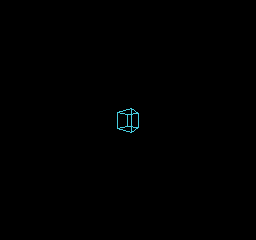
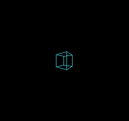
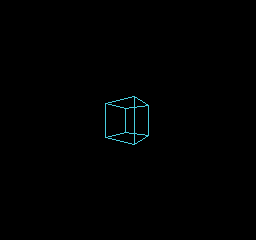
KUROSAKI ha comprobado las líneas, el cubo y el borrado en cada tamaño: nueve comprobaciones de imagen en total. También se han comprobado los límites de proyección, los punteros NULL, los 32 pasos de rotación de cada eje, las rotaciones combinadas y el descarte de aristas, con tres tamaños de visualización y cuatro configuraciones del compilador. Los ejemplos de dibujo usan NROM; la ROM más grande de pruebas de límites usa MMC3. Son comprobaciones en un emulador, no mediciones en hardware real.
zx0
Decodifica recursos compatibles con ZX0 en RAM o VRAM. Prepáralos en el PC con kitaqfc-zx0.exe y decodifica durante la ejecución solo los datos necesarios. --format=auto compara las cargas raw, RLE y ZX0 y elige la menor; en empate prefiere raw, RLE y después ZX0. Mantén el contenedor completo dentro de 65535 bytes, incluida su cabecera de nueve bytes, y divide los recursos para ajustarlos a los bancos CPU y la RAM reales.
Einar Saukas diseñó el formato ZX0 y el algoritmo de compresión original. El compresor y el descompresor incluidos aquí son implementaciones independientes de KITAQ, con copyright de DAISUKE OBA y publicados bajo la licencia MIT.
Ejecute estos comandos del equipo anfitrión desde la raíz del repositorio. Compile la herramienta con tools/zx0/build.ps1.
.\kitaqfc-zx0.exe tiles.bin tiles.zx0
.\kitaqfc-zx0.exe tiles.bin tiles.h --header=tiles
.\kitaqfc-zx0.exe map.bin map.kqa --format=auto
.\kitaqfc-zx0.exe tiles.zx0 restored.bin --decompresszx0_decompress
Decodifica un flujo ZX0 v2 en una región RAM acotada. Las coincidencias referencian bytes ya decodificados, por lo que el destino debe permitir lectura y escritura. Úsalo para mapas de tiles o tablas de niveles que la CPU procese antes de utilizarlos.
Sintaxis
u16 zx0_decompress(void* dst, u16 capacity, const void* src, u16 packed_size);Parámetros
dstInicio de la RAM de destino escribible; no debe ser null. Expresa la capacidad en bytes, no en elementos del array.
capacityCantidad de bytes escribibles en el destino. Un flujo ZX0 normal necesita al menos un byte. Un recurso KQA1 raw vacío puede tener éxito con capacidad cero.
srcInicio de los datos comprimidos legibles mediante el mapeo de banco actual. No debe ser null.
packed_sizeCantidad de bytes de la entrada completa. Un flujo ZX0 incluye su marcador final y no tiene bytes adicionales después. Un contenedor KQA1 incluye su cabecera de nueve bytes. Máximo: 65535 bytes.
Valor devuelto
Devuelve la cantidad de bytes decodificados si tiene éxito o cero si hay error. Comprueba siempre también zx0_error.
Condiciones y límites
Incluye zx0.h y compila lib/zx0.c. Estas rutinas comparten memoria temporal y no admiten reentrada desde interrupciones. La entrada y la salida no deben solaparse, dar la vuelta al espacio de direcciones de CPU ni cruzar ventanas de bancos actualmente mapeados. La biblioteca no cambia los bancos de recursos.
Cada llamada actualiza zx0_error: 0 éxito, 1 argumento inválido, 2 entrada truncada, 3 flujo malformado, 4 espacio de salida insuficiente, 5 pantalla activa. Un fallo puede dejar una salida parcial; no la uses. Si varias condiciones son inválidas, la primera detectada determina el código.
Acepta flujos ZX0 v2 hacia delante. ZX0 v1, flujos hacia atrás y diccionarios externos quedan fuera de esta interfaz. Conoce el tamaño decodificado del recurso generado en el equipo anfitrión y proporciona suficiente espacio.
Ejemplo de uso
count=zx0_decompress(decoded_map,16,packed_map,packed_map_SIZE);
if(count!=16||zx0_error!=ZX0_OK)failures++;Este fragmento muestra la llamada. Antes de incorporarlo a un programa completo, cumple los requisitos de inicialización y de los búferes indicados.
Resultado esperado
La fila RAM MAP repite tiles de cuadrado, rombo y damero. AUTO RLE MAP forma una barra horizontal con dieciséis cuadrados. VRAM TILES repite los mismos tres tiles tras decodificar sus píxeles en VRAM. En CGB y FC, el cuadrado es blanco, el rombo rojo y el damero azul; DMG usa tonos grises. CHECKS OK confirma que las tres llamadas devolvieron los tamaños decodificados esperados sin error.
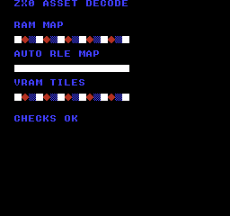
Comando de compilación
New-Item -ItemType Directory -Force .\out | Out-Null
.\kitaqfc\kitaqfc.exe .\kitaq-docs\samples\api-examples\fc\zx0_decode.c -I .\kitaqfc\lib -I .\kitaq-docs\samples -o .\out\zx0_decode.nes --mapper=nrom --nes-chr-ram --no-cache --no-disasmImplementación y código fuente
kitaqfc/lib/zx0.h:16
Return decoded bytes, or zero on error (possibly after partial writes). Source and output must not overlap or cross their current CPU bank windows. Capacity and packed_size are byte counts. No prefix/backward/v1 streams.
kitaqfc/lib/zx0.c:52
u16 zx0_decompress(void* dst,u16 capacity,const void* src,u16 packed_size) {
u8 phase; u8 low; u8* out; u8* match;
u16 count; u16 distance; u16 used; u16 upper;
zx0_error=ZX0_OK;
if(!kq_zx_arguments(dst,capacity,src,packed_size)) { zx0_error=ZX0_BAD_ARGUMENT; return 0; }
kq_zx_input=(const u8*)src; kq_zx_left=packed_size;
kq_zx_mask=0; kq_zx_borrowed=0;
out=(u8*)dst; used=0; distance=1; phase=0;
// Phase 0 is literal, 1 reuses the last distance, 2 carries a new distance.
while(1) {
if(phase==2) {
upper=kq_zx_number(1);
if(zx0_error) return 0;
if(upper==256) {
if(kq_zx_left!=0) { zx0_error=ZX0_BAD_STREAM; return 0; }
return used;
}
if(upper>255) { zx0_error=ZX0_BAD_STREAM; return 0; }
low=kq_zx_byte();
distance=(u16)((upper<<7)-(low>>1));
kq_zx_borrowed=1; kq_zx_borrow_value=(u8)(low&1);
count=kq_zx_number(0);
if(count==65535) { zx0_error=ZX0_BAD_STREAM; return 0; }
count++;
} else count=kq_zx_number(0);
if(zx0_error) return 0;
if(count>capacity-used) { zx0_error=ZX0_OUTPUT_FULL; return 0; }
if(phase==0) {
if(count>kq_zx_left) { zx0_error=ZX0_TRUNCATED; return 0; }
kq_zx_left-=count; used+=count;
while(count!=0) { *out++=*kq_zx_input++; count--; }
phase=kq_zx_bit()?2:1;
} else {
if(distance>used) { zx0_error=ZX0_BAD_STREAM; return 0; }
match=out-distance; used+=count;
// Forward byte copying deliberately supports overlapping matches.
while(count!=0) { *out++=*match++; count--; }
phase=kq_zx_bit()?2:0;
}
if(zx0_error) return 0;
}
}asset_decompress
Lee el códec y los tamaños de la cabecera KQA1 generada por --format=auto y después copia bytes raw o decodifica RLE/ZX0 en RAM. El código que llama no necesita una rama distinta por códec.
Sintaxis
u16 asset_decompress(void* dst, u16 capacity, const void* src, u16 packed_size);Parámetros
dstInicio de la RAM de destino escribible; no debe ser null. Expresa la capacidad en bytes, no en elementos del array.
capacityCantidad de bytes escribibles en el destino. Un flujo ZX0 normal necesita al menos un byte. Un recurso KQA1 raw vacío puede tener éxito con capacidad cero.
srcInicio de los datos comprimidos legibles mediante el mapeo de banco actual. No debe ser null.
packed_sizeCantidad de bytes de la entrada completa. Un flujo ZX0 incluye su marcador final y no tiene bytes adicionales después. Un contenedor KQA1 incluye su cabecera de nueve bytes. Máximo: 65535 bytes.
Valor devuelto
Devuelve la cantidad de bytes decodificados si tiene éxito o cero si hay error. Comprueba siempre también zx0_error.
Condiciones y límites
Incluye zx0.h y compila lib/zx0.c. Estas rutinas comparten memoria temporal y no admiten reentrada desde interrupciones. La entrada y la salida no deben solaparse, dar la vuelta al espacio de direcciones de CPU ni cruzar ventanas de bancos actualmente mapeados. La biblioteca no cambia los bancos de recursos.
Cada llamada actualiza zx0_error: 0 éxito, 1 argumento inválido, 2 entrada truncada, 3 flujo malformado, 4 espacio de salida insuficiente, 5 pantalla activa. Un fallo puede dejar una salida parcial; no la uses. Si varias condiciones son inválidas, la primera detectada determina el código.
KQA1 es el contenedor de recursos KITAQ: identificador de cuatro bytes, códec de un byte (0 raw, 1 RLE, 2 ZX0), tamaño decodificado u16, tamaño de carga útil u16 y la carga útil. Los campos u16 usan orden little-endian. RLE repite pares count/value con count entre 1 y 255 y un terminador count cero. Un recurso raw vacío tiene éxito con retorno cero y error cero.
Ejemplo de uso
count=asset_decompress(decoded_auto,16,packed_auto,packed_auto_SIZE);
if(count!=16||zx0_error!=ZX0_OK)failures++;Este fragmento muestra la llamada. Antes de incorporarlo a un programa completo, cumple los requisitos de inicialización y de los búferes indicados.
Resultado esperado
La fila RAM MAP repite tiles de cuadrado, rombo y damero. AUTO RLE MAP forma una barra horizontal con dieciséis cuadrados. VRAM TILES repite los mismos tres tiles tras decodificar sus píxeles en VRAM. En CGB y FC, el cuadrado es blanco, el rombo rojo y el damero azul; DMG usa tonos grises. CHECKS OK confirma que las tres llamadas devolvieron los tamaños decodificados esperados sin error.
Comando de compilación
New-Item -ItemType Directory -Force .\out | Out-Null
.\kitaqfc\kitaqfc.exe .\kitaq-docs\samples\api-examples\fc\zx0_decode.c -I .\kitaqfc\lib -I .\kitaq-docs\samples -o .\out\zx0_decode.nes --mapper=nrom --nes-chr-ram --no-cache --no-disasmImplementación y código fuente
kitaqfc/lib/zx0.h:19
Decode a KQA1 raw/RLE/ZX0 asset produced with --format=auto. Empty raw assets return zero with zx0_error==ZX0_OK.
kitaqfc/lib/zx0.c:95
u16 asset_decompress(void* dst,u16 capacity,const void* src,u16 packed_size) {
const u8* in; u8* out; u16 raw; u16 packed; u16 used;
u8 codec; u8 count; u8 value;
zx0_error=ZX0_OK;
if(packed_size<9||!kq_zx_arguments(dst,capacity,src,packed_size)) { zx0_error=ZX0_BAD_ARGUMENT; return 0; }
in=(const u8*)src; out=(u8*)dst;
if(in[0]!=75||in[1]!=81||in[2]!=65||in[3]!=49) { zx0_error=ZX0_BAD_STREAM; return 0; }
codec=in[4]; raw=(u16)((u16)in[5]|((u16)in[6]<<8));
packed=(u16)((u16)in[7]|((u16)in[8]<<8));
if(packed!=packed_size-9||codec>2) { zx0_error=ZX0_BAD_STREAM; return 0; }
if(raw>capacity) { zx0_error=ZX0_OUTPUT_FULL; return 0; }
in+=9;
if(codec==2) {
used=zx0_decompress(dst,raw,in,packed);
if(zx0_error==0&&used!=raw) zx0_error=ZX0_BAD_STREAM;
return zx0_error?0:used;
}
if(codec==0) {
if(raw!=packed) { zx0_error=ZX0_BAD_STREAM; return 0; }
used=raw; while(raw!=0) { *out++=*in++; raw--; } return used;
}
used=0;
while(packed!=0) {
count=*in++; packed--;
if(count==0) {
if(packed!=0||used!=raw) { zx0_error=ZX0_BAD_STREAM; return 0; }
return used;
}
if(packed==0) { zx0_error=ZX0_TRUNCATED; return 0; }
value=*in++; packed--;
if((u16)count>raw-used) { zx0_error=ZX0_OUTPUT_FULL; return 0; }
used+=count; while(count!=0) { *out++=value; count--; }
}
zx0_error=ZX0_TRUNCATED; return 0;
}zx0_decompress_vram
Decodifica todo el recurso ZX0 en RAM propiedad del código que llama y lo transfiere al PPU en bloques de hasta 128 bytes. El historial de coincidencias permanece en RAM porque la memoria PPU no se puede leer directamente mediante punteros normales de CPU.
Sintaxis
u16 zx0_decompress_vram(u16 ppu_addr,void* workspace,u16 capacity,const void* src,u16 packed_size);Parámetros
ppu_addrDestino PPU, 0x0000..0x2FFF. Todo el rango decodificado debe terminar antes de 0x3000. Para escribir en tablas de patrones se necesita una configuración de cartucho con CHR RAM.
workspaceInicio de la RAM de destino escribible; no debe ser null. Expresa la capacidad en bytes, no en elementos del array.
capacityCapacidad del área de trabajo RAM. Debe contener todo el recurso decodificado; el tamaño de bloque de transferencia PPU de 128 bytes no reduce este requisito.
srcInicio de los datos comprimidos legibles mediante el mapeo de banco actual. No debe ser null.
packed_sizeCantidad de bytes de la entrada completa. Un flujo ZX0 incluye su marcador final y no tiene bytes adicionales después. Un contenedor KQA1 incluye su cabecera de nueve bytes. Máximo: 65535 bytes.
Valor devuelto
Devuelve la cantidad de bytes decodificados si tiene éxito o cero si hay error. Comprueba siempre también zx0_error.
Condiciones y límites
Incluye zx0.h y compila lib/zx0.c. Estas rutinas comparten memoria temporal y no admiten reentrada desde interrupciones. La entrada y la salida no deben solaparse, dar la vuelta al espacio de direcciones de CPU ni cruzar ventanas de bancos actualmente mapeados. La biblioteca no cambia los bancos de recursos.
Cada llamada actualiza zx0_error: 0 éxito, 1 argumento inválido, 2 entrada truncada, 3 flujo malformado, 4 espacio de salida insuficiente, 5 pantalla activa. Un fallo puede dejar una salida parcial; no la uses. Si varias condiciones son inválidas, la primera detectada determina el código.
Acepta flujos ZX0 v2 hacia delante. ZX0 v1, flujos hacia atrás y diccionarios externos quedan fuera de esta interfaz. Conoce el tamaño decodificado del recurso generado en el equipo anfitrión y proporciona suficiente espacio.
Antes de llamar, desactiva el renderizado con __ppu_mask_set(0). La rutina selecciona temporalmente el incremento PPU 1 y restaura PPUCTRL después. Las operaciones PPUADDR/PPUDATA cambian la dirección y el estado del latch de PPU; configura el desplazamiento antes de reanudar el renderizado. Los manejadores de interrupciones también deben evitar acceder al PPU durante la llamada. No lo uses para CHR ROM ni paletas. El rango de destino se comprueba después de decodificar en RAM, por lo que un error de rango aún puede modificar el área de trabajo.
Ejemplo de uso
count=zx0_decompress_vram(0x0800,tile_workspace,48,packed_tiles,packed_tiles_SIZE);
if(count!=48||zx0_error!=ZX0_OK)failures++;Este fragmento muestra la llamada. Antes de incorporarlo a un programa completo, cumple los requisitos de inicialización y de los búferes indicados.
Resultado esperado
La fila RAM MAP repite tiles de cuadrado, rombo y damero. AUTO RLE MAP forma una barra horizontal con dieciséis cuadrados. VRAM TILES repite los mismos tres tiles tras decodificar sus píxeles en VRAM. En CGB y FC, el cuadrado es blanco, el rombo rojo y el damero azul; DMG usa tonos grises. CHECKS OK confirma que las tres llamadas devolvieron los tamaños decodificados esperados sin error.
Comando de compilación
New-Item -ItemType Directory -Force .\out | Out-Null
.\kitaqfc\kitaqfc.exe .\kitaq-docs\samples\api-examples\fc\zx0_decode.c -I .\kitaqfc\lib -I .\kitaq-docs\samples -o .\out\zx0_decode.nes --mapper=nrom --nes-chr-ram --no-cache --no-disasmImplementación y código fuente
kitaqfc/lib/zx0.h:23
Decode into caller-owned RAM, then transfer to CHR RAM or nametable memory. Rendering must be off. Preserve PPUCTRL; set scroll before enabling rendering. The workspace must hold the whole output. No palette upload or CHR ROM writes.
kitaqfc/lib/zx0.c:134
u16 zx0_decompress_vram(u16 ppu_addr,void* workspace,u16 capacity,const void* src,u16 packed_size) {
u16 size; u16 left; const u8* data; u8 chunk; u8 saved_ctrl;
zx0_error=ZX0_OK;
if(ppu_addr>=0x3000) { zx0_error=ZX0_BAD_ARGUMENT; return 0; }
if(__ppu_mask_get()&0x18) { zx0_error=ZX0_DISPLAY_ACTIVE; return 0; }
size=zx0_decompress(workspace,capacity,src,packed_size);
if(zx0_error) return 0;
if(size>0x3000-ppu_addr) { zx0_error=ZX0_OUTPUT_FULL; return 0; }
saved_ctrl=__ppu_ctrl_get(); __ppu_ctrl_set((u8)(saved_ctrl&0xFB));
left=size; data=(const u8*)workspace;
while(left!=0) {
chunk=left>128?128:(u8)left;
__vram_write(ppu_addr,data,chunk);
ppu_addr+=chunk; data+=chunk; left-=chunk;
}
__ppu_ctrl_set(saved_ctrl); return size;
}wire3d — Referencia individual de funciones
Wire3DFC_Init
Inicializa CHR RAM, el mapa de fondo, los píxeles en preparación y el historial de tiles modificados; después habilita el fondo con líneas cian. Se borra el contenido anterior de la pantalla.
Sintaxis
void Wire3DFC_Init(void);Valor devuelto
No devuelve ningún valor.
Condiciones y límites
Requiere 8 KiB de CHR RAM, PRG RAM escribible del cartucho en $6800–$70BF y espacio temporal de página cero en $00–$0A. Compila con --nes-chr-ram. El almacenamiento de trabajo compartido hace que el renderizador no sea reentrante.
Llama a Init, BeginFrame, las funciones de dibujo y EndFrame, en ese orden. La biblioteca controla ambas tablas de patrones de fondo, la tabla de nombres cero, la paleta y el desplazamiento del fondo, y deshabilita la NMI. No ejecutes a la vez otro código que escriba en el PPU.
Elige 64×48 (predeterminado), 96×64 o 128×96 definiendo WIRE3D_FC_WIDTH y WIRE3D_FC_HEIGHT antes de incluir wire3d.c. El área de visualización queda centrada en la pantalla. Un área menor reduce el trabajo de dibujo y transferencia, pero reserva la misma cantidad de RAM.
Las imágenes se capturaron en KUROSAKI con los tres tamaños. Las comprobaciones comparan cada píxel de la imagen de 256×240, incluido el color, y los resultados numéricos en RAM. No son mediciones de rendimiento en hardware real.
Ejemplo de uso
Wire3DFC_Init();Este fragmento muestra la llamada. Antes de incorporarlo a un programa completo, cumple los requisitos de inicialización y de los búferes indicados.
Resultado esperado
La imagen final muestra un borde cian, un cubo central, una cruz arriba y una línea horizontal abajo sobre fondo negro. El borde usa coordenadas 2D; la cruz, rotación y proyección de un punto; la línea inferior, extremos en el espacio de cámara; y el cubo, arrays de vértices y aristas. Estas formas permiten comparar las funciones de las API en una sola pantalla.
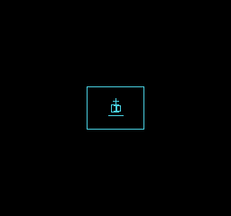
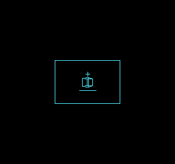
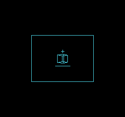
Comando de compilación
New-Item -ItemType Directory -Force .\out | Out-Null
.\kitaqfc\kitaqfc.exe .\kitaq-docs\samples\api-examples\fc\wire3d_projection.c -I .\kitaqfc\lib --mapper=nrom --nes-chr-ram -o .\out\wire3d_projection.nes --no-cache --no-disasm
.\kurosaki\kurosaki.exe run .\out\wire3d_projection.nes --headless --frames 180 --png .\out\wire3d_projection.pngImplementación y código fuente
kitaqfc/lib/wire3d.h:34
Own both CHR-RAM pattern tables and nametable zero. Requires writable 8 KiB CHR RAM and PRG RAM 0x6800..0x70BF; reserves ZP 0x00..0x0A for drawing/transfer. Build with --nes-chr-ram and provide cartridge PRG RAM for the stage. Center the viewport, clear video memory, select cyan-on-dark colors and turn on background rendering with NMI disabled. Do not run another PPU writer.
kitaqfc/lib/wire3d.c:40
void Wire3DFC_Init(void) {
u16 address;u8 x,y,tile;
__ppu_mask_set(0);__ppu_ctrl_set(0);
// Both pattern tables have a zero high bitplane; all subsequent transfers
// update only low bitplanes in the currently hidden table.
for(address=0;address<8192;address+=128)__vram_fill(address,0,128);
for(address=0x2000;address<0x2400;address+=128)__vram_fill(address,255,128);
__vram_fill(0x23C0,0,64);__palette_bg_load(w3dfc_palette);
tile=0;
for(y=0;y<WIRE3D_FC_HEIGHT/8;y++) {
for(x=0;x<WIRE3D_FC_WIDTH/8;x++) {
address=(u16)(0x2000+(u16)(y+(30-WIRE3D_FC_HEIGHT/8)/2)*32+x+(32-WIRE3D_FC_WIDTH/8)/2);
__ppu_addr(address);__ppu_data(tile);tile++;
}
}
__memset(w3dfc_pixels,0,1536);
__memset(w3dfc_dirty,0,192);
__memset(w3dfc_bank0_dirty,0,192);
__memset(w3dfc_bank1_dirty,0,192);
w3dfc_front=0;w3dfc_batch_count=0;
wire3d_transfer_frames=0;wire3d_uploaded_tiles=0;
__scroll_set(0,0);__ppu_ctrl_set(0);__ppu_mask_set(0x0A);
}Wire3DFC_BeginFrame
Borra los píxeles preparados de los tiles utilizados en el dibujo anterior para preparar un fotograma vacío. La tabla CHR mostrada y la imagen visible no cambian.
Sintaxis
void Wire3DFC_BeginFrame(void);Valor devuelto
No devuelve ningún valor.
Condiciones y límites
Llama una vez al empezar cada dibujo. Si vuelves a llamar antes de EndFrame, se borran las líneas preparadas hasta ese momento.
Requiere 8 KiB de CHR RAM, PRG RAM escribible del cartucho en $6800–$70BF y espacio temporal de página cero en $00–$0A. Compila con --nes-chr-ram. El almacenamiento de trabajo compartido hace que el renderizador no sea reentrante.
Llama a Init, BeginFrame, las funciones de dibujo y EndFrame, en ese orden. La biblioteca controla ambas tablas de patrones de fondo, la tabla de nombres cero, la paleta y el desplazamiento del fondo, y deshabilita la NMI. No ejecutes a la vez otro código que escriba en el PPU.
Elige 64×48 (predeterminado), 96×64 o 128×96 definiendo WIRE3D_FC_WIDTH y WIRE3D_FC_HEIGHT antes de incluir wire3d.c. El área de visualización queda centrada en la pantalla. Un área menor reduce el trabajo de dibujo y transferencia, pero reserva la misma cantidad de RAM.
Las imágenes se capturaron en KUROSAKI con los tres tamaños. Las comprobaciones comparan cada píxel de la imagen de 256×240, incluido el color, y los resultados numéricos en RAM. No son mediciones de rendimiento en hardware real.
Ejemplo de uso
Wire3DFC_BeginFrame();Este fragmento muestra la llamada. Antes de incorporarlo a un programa completo, cumple los requisitos de inicialización y de los búferes indicados.
Resultado esperado
La imagen final muestra un borde cian, un cubo central, una cruz arriba y una línea horizontal abajo sobre fondo negro. El borde usa coordenadas 2D; la cruz, rotación y proyección de un punto; la línea inferior, extremos en el espacio de cámara; y el cubo, arrays de vértices y aristas. Estas formas permiten comparar las funciones de las API en una sola pantalla.
Comando de compilación
New-Item -ItemType Directory -Force .\out | Out-Null
.\kitaqfc\kitaqfc.exe .\kitaq-docs\samples\api-examples\fc\wire3d_projection.c -I .\kitaqfc\lib --mapper=nrom --nes-chr-ram -o .\out\wire3d_projection.nes --no-cache --no-disasm
.\kurosaki\kurosaki.exe run .\out\wire3d_projection.nes --headless --frames 180 --png .\out\wire3d_projection.pngImplementación y código fuente
kitaqfc/lib/wire3d.h:36
Clear the previous staged drawing. The displayed front image remains intact.
kitaqfc/lib/wire3d.c:63
void Wire3DFC_BeginFrame(void) {
w3dfc_tile_count=WIRE3D_FC_TILES;
// Clear exactly eight bytes per previously touched tile, using the same
// zero-page pointer as upload. No nested C indexing runs in the inner loop.
__asm {
PHA
TXA
PHA
TYA
PHA
LDX #0
w3dfc_clear_next:
LDA w3dfc_dirty,X
BEQ w3dfc_clear_skip
TXA
ASL A
ASL A
ASL A
STA w3dfc_upload_ptr
TXA
LSR A
LSR A
LSR A
LSR A
LSR A
CLC
ADC #104
STA w3dfc_upload_ptr+1
LDA #0
STA w3dfc_dirty,X
LDY #7
w3dfc_clear_byte:
STA (w3dfc_upload_ptr),Y
DEY
BPL w3dfc_clear_byte
w3dfc_clear_skip:
INX
CPX w3dfc_tile_count
BNE w3dfc_clear_next
PLA
TAY
PLA
TAX
PLA
}
}Wire3DFC_DrawLine2D
Rasteriza una línea con ambos extremos incluidos en la memoria de preparación y marca los tiles utilizados para su transferencia. No realiza proyección de cámara.
Sintaxis
void Wire3DFC_DrawLine2D(s16 ax,s16 ay,s16 bx,s16 by);Parámetros
axCoordenada horizontal inicial en píxeles del área de visualización, de −512 a 511. Su esquina superior izquierda es (0,0).
ayCoordenada vertical inicial en píxeles del área de visualización, de −512 a 511. Su esquina superior izquierda es (0,0).
bxCoordenada horizontal final en píxeles del área de visualización, de −512 a 511. Su esquina superior izquierda es (0,0).
byCoordenada vertical final en píxeles del área de visualización, de −512 a 511. Su esquina superior izquierda es (0,0).
Valor devuelto
No devuelve ningún valor.
Condiciones y límites
Descarta toda la línea si alguna coordenada de sus extremos queda fuera de −512..511. En otro caso, descarta solo los píxeles fuera del área de visualización. Los nuevos píxeles se combinan mediante OR con las líneas preparadas y se hacen visibles con EndFrame.
Requiere 8 KiB de CHR RAM, PRG RAM escribible del cartucho en $6800–$70BF y espacio temporal de página cero en $00–$0A. Compila con --nes-chr-ram. El almacenamiento de trabajo compartido hace que el renderizador no sea reentrante.
Llama a Init, BeginFrame, las funciones de dibujo y EndFrame, en ese orden. La biblioteca controla ambas tablas de patrones de fondo, la tabla de nombres cero, la paleta y el desplazamiento del fondo, y deshabilita la NMI. No ejecutes a la vez otro código que escriba en el PPU.
Elige 64×48 (predeterminado), 96×64 o 128×96 definiendo WIRE3D_FC_WIDTH y WIRE3D_FC_HEIGHT antes de incluir wire3d.c. El área de visualización queda centrada en la pantalla. Un área menor reduce el trabajo de dibujo y transferencia, pero reserva la misma cantidad de RAM.
Las imágenes se capturaron en KUROSAKI con los tres tamaños. Las comprobaciones comparan cada píxel de la imagen de 256×240, incluido el color, y los resultados numéricos en RAM. No son mediciones de rendimiento en hardware real.
Ejemplo de uso
Wire3DFC_DrawLine2D(0,0,WIRE3D_FC_WIDTH-1,0);Este fragmento muestra la llamada. Antes de incorporarlo a un programa completo, cumple los requisitos de inicialización y de los búferes indicados.
Resultado esperado
La imagen final muestra un borde cian, un cubo central, una cruz arriba y una línea horizontal abajo sobre fondo negro. El borde usa coordenadas 2D; la cruz, rotación y proyección de un punto; la línea inferior, extremos en el espacio de cámara; y el cubo, arrays de vértices y aristas. Estas formas permiten comparar las funciones de las API en una sola pantalla.
Comando de compilación
New-Item -ItemType Directory -Force .\out | Out-Null
.\kitaqfc\kitaqfc.exe .\kitaq-docs\samples\api-examples\fc\wire3d_projection.c -I .\kitaqfc\lib --mapper=nrom --nes-chr-ram -o .\out\wire3d_projection.nes --no-cache --no-disasm
.\kurosaki\kurosaki.exe run .\out\wire3d_projection.nes --headless --frames 180 --png .\out\wire3d_projection.pngImplementación y código fuente
kitaqfc/lib/wire3d.h:39
Draw a connected, inclusive segment. Endpoints must be -512..511. Pixels outside the viewport are clipped; completely outside bounding boxes return.
kitaqfc/lib/wire3d.c:193
void Wire3DFC_DrawLine2D(s16 ax,s16 ay,s16 bx,s16 by) {
s16 dx,dy,sx,sy,error,twice;u16 address;u8 tile;
if(ax < -512 || ax>511 || ay < -512 || ay>511 || bx < -512 || bx>511 || by < -512 || by>511)return;
if((ax<0 && bx<0)||(ay<0 && by<0)||(ax>=WIRE3D_FC_WIDTH && bx>=WIRE3D_FC_WIDTH)||(ay>=WIRE3D_FC_HEIGHT && by>=WIRE3D_FC_HEIGHT))return;
dx=bx-ax;if(dx<0)dx=0-dx;
dy=by-ay;if(dy<0)dy=0-dy;
if(ax>=0 && ay>=0 && bx>=0 && by>=0 && ax<WIRE3D_FC_WIDTH && bx<WIRE3D_FC_WIDTH && ay<WIRE3D_FC_HEIGHT && by<WIRE3D_FC_HEIGHT) {
w3dfc_lx=(u8)ax;w3dfc_ly=(u8)ay;
w3dfc_sx=ax<bx?1:255;w3dfc_sy=ay<by?1:255;
if(dx>=dy){w3dfc_major=(u8)dx;w3dfc_minor=(u8)dy;w3dfc_y_major=0;}
else{w3dfc_major=(u8)dy;w3dfc_minor=(u8)dx;w3dfc_y_major=1;}
w3dfc_error=(u8)(w3dfc_major>>1);w3dfc_remaining=(u8)(w3dfc_major+1);
w3dfc_line_inside();return;
}
sx=ax<bx?1:-1;sy=ay<by?1:-1;error=dx-dy;
while(1) {
if(ax>=0 && ax<WIRE3D_FC_WIDTH && ay>=0 && ay<WIRE3D_FC_HEIGHT) {
tile=(u8)(((u8)ay>>3)*(WIRE3D_FC_WIDTH/8)+((u8)ax>>3));
address=(u16)tile*8+((u8)ay&7);
w3dfc_pixels[address]=(u8)(w3dfc_pixels[address]|w3dfc_bits[(u8)ax&7]);
w3dfc_dirty[tile]=1;
}
if(ax==bx && ay==by)return;
twice=error*2;
if(twice > (0-dy)){error-=dy;ax+=sx;}
if(twice < dx){error+=dx;ay+=sy;}
}
}Wire3DFC_RotatePoint
Rota un punto del espacio de modelo en sus propias variables, sin traslación ni proyección en perspectiva.
Sintaxis
void Wire3DFC_RotatePoint(s16* x,s16* y,s16* z,u8 rx,u8 ry,u8 rz);Parámetros
xPuntero a la componente x s16 escribible. Usa tres ubicaciones distintas y mantén cada componente de entrada entre −63 y 63.
yPuntero a la componente y s16 escribible. Usa tres ubicaciones distintas y mantén cada componente de entrada entre −63 y 63.
zPuntero a la componente z s16 escribible. Usa tres ubicaciones distintas y mantén cada componente de entrada entre −63 y 63.
rxÁngulo sobre el eje X, en 32 pasos por vuelta.
ryÁngulo sobre el eje Y, en 32 pasos por vuelta.
rzÁngulo sobre el eje Z, en 32 pasos por vuelta.
Valor devuelto
No devuelve ningún valor.
Condiciones y límites
Los ángulos usan 32 pasos por vuelta: 0 es sin rotación, 8 son 90 grados y 16 son 180 grados. Solo se usan los cinco bits bajos. Las rotaciones se aplican en orden Y, X, Z.
Si algún puntero es null, vuelve sin modificar las coordenadas. Los productos enteros Q6 se truncan hacia cero. Las componentes de entrada no se limitan automáticamente al rango.
Requiere 8 KiB de CHR RAM, PRG RAM escribible del cartucho en $6800–$70BF y espacio temporal de página cero en $00–$0A. Compila con --nes-chr-ram. El almacenamiento de trabajo compartido hace que el renderizador no sea reentrante.
Llama a Init, BeginFrame, las funciones de dibujo y EndFrame, en ese orden. La biblioteca controla ambas tablas de patrones de fondo, la tabla de nombres cero, la paleta y el desplazamiento del fondo, y deshabilita la NMI. No ejecutes a la vez otro código que escriba en el PPU.
Elige 64×48 (predeterminado), 96×64 o 128×96 definiendo WIRE3D_FC_WIDTH y WIRE3D_FC_HEIGHT antes de incluir wire3d.c. El área de visualización queda centrada en la pantalla. Un área menor reduce el trabajo de dibujo y transferencia, pero reserva la misma cantidad de RAM.
Las imágenes se capturaron en KUROSAKI con los tres tamaños. Las comprobaciones comparan cada píxel de la imagen de 256×240, incluido el color, y los resultados numéricos en RAM. No son mediciones de rendimiento en hardware real.
Ejemplo de uso
Wire3DFC_RotatePoint(&px,&py,&pz,0,0,8);Este fragmento muestra la llamada. Antes de incorporarlo a un programa completo, cumple los requisitos de inicialización y de los búferes indicados.
Resultado esperado
La imagen final muestra un borde cian, un cubo central, una cruz arriba y una línea horizontal abajo sobre fondo negro. El borde usa coordenadas 2D; la cruz, rotación y proyección de un punto; la línea inferior, extremos en el espacio de cámara; y el cubo, arrays de vértices y aristas. Estas formas permiten comparar las funciones de las API en una sola pantalla.
En el ejemplo, una rotación de 90 grados sobre Z transforma (24,0,0) en (0,24,0); su cruz proyectada aparece encima del cubo.
![Wire3DFC_RotatePoint: 64X48 — La imagen final muestra un borde cian, un cubo central, una cruz arriba y una línea horizontal abajo sobre fondo negro. El borde usa coordenadas 2D; la cruz, rotación y proyección de un punto; la línea inferior, extremos en el espacio de cámara; y el cubo, arrays de vértices y aristas. Estas formas permiten comparar las funciones de las API en una sola pantalla. En el ejemplo, una rotación de 90 grados sobre Z transforma (24,0,0) en (0,24,0); su cruz proyectada aparece encima del cubo.](../verification/api-wireframe-fc/projection/64/screen.png)
![Wire3DFC_RotatePoint: 96X64 — La imagen final muestra un borde cian, un cubo central, una cruz arriba y una línea horizontal abajo sobre fondo negro. El borde usa coordenadas 2D; la cruz, rotación y proyección de un punto; la línea inferior, extremos en el espacio de cámara; y el cubo, arrays de vértices y aristas. Estas formas permiten comparar las funciones de las API en una sola pantalla. En el ejemplo, una rotación de 90 grados sobre Z transforma (24,0,0) en (0,24,0); su cruz proyectada aparece encima del cubo.](../verification/api-wireframe-fc/projection/96/screen.png)
![Wire3DFC_RotatePoint: 128X96 — La imagen final muestra un borde cian, un cubo central, una cruz arriba y una línea horizontal abajo sobre fondo negro. El borde usa coordenadas 2D; la cruz, rotación y proyección de un punto; la línea inferior, extremos en el espacio de cámara; y el cubo, arrays de vértices y aristas. Estas formas permiten comparar las funciones de las API en una sola pantalla. En el ejemplo, una rotación de 90 grados sobre Z transforma (24,0,0) en (0,24,0); su cruz proyectada aparece encima del cubo.](../verification/api-wireframe-fc/projection/128/screen.png)
Comando de compilación
New-Item -ItemType Directory -Force .\out | Out-Null
.\kitaqfc\kitaqfc.exe .\kitaq-docs\samples\api-examples\fc\wire3d_projection.c -I .\kitaqfc\lib --mapper=nrom --nes-chr-ram -o .\out\wire3d_projection.nes --no-cache --no-disasm
.\kurosaki\kurosaki.exe run .\out\wire3d_projection.nes --headless --frames 180 --png .\out\wire3d_projection.pngImplementación y código fuente
kitaqfc/lib/wire3d.h:42
Rotate a small model-space point in Y/X/Z order. Angles wrap in 32 steps. Start with components in -63..63; supply three distinct writable pointers.
kitaqfc/lib/wire3d.c:227
void Wire3DFC_RotatePoint(s16* x,s16* y,s16* z,u8 rx,u8 ry,u8 rz) {
s16 a,b,s,c;
if(x==0 || y==0 || z==0)return;
ry=(u8)(ry&31);rx=(u8)(rx&31);rz=(u8)(rz&31);
if(ry!=0){a=*x;b=*z;s=w3dfc_sin[ry];c=w3dfc_sin[(u8)((ry+8)&31)];*x=w3dfc_q6(a*c+b*s);*z=w3dfc_q6(b*c-a*s);}
if(rx!=0){a=*y;b=*z;s=w3dfc_sin[rx];c=w3dfc_sin[(u8)((rx+8)&31)];*y=w3dfc_q6(a*c-b*s);*z=w3dfc_q6(a*s+b*c);}
if(rz!=0){a=*x;b=*y;s=w3dfc_sin[rz];c=w3dfc_sin[(u8)((rz+8)&31)];*x=w3dfc_q6(a*c-b*s);*y=w3dfc_q6(a*s+b*c);}
}Wire3DFC_ProjectPoint
Proyecta un punto del espacio de cámara a píxeles del área de visualización, usando su centro como centro de proyección. No dibuja ni modifica ninguna máscara.
Sintaxis
u8 Wire3DFC_ProjectPoint(s16 x,s16 y,s16 z,s16* sx,s16* sy);Parámetros
xCoordenada X en el espacio de cámara. Usa −127..127. X positivo apunta a la derecha y Y positivo, hacia arriba.
yCoordenada Y en el espacio de cámara. Usa −127..127. X positivo apunta a la derecha y Y positivo, hacia arriba.
zCoordenada Z en el espacio de cámara. La profundidad debe estar entre 32 y 255; cuanto mayor sea, más lejos queda el punto.
sxPuntero s16 escribible para la coordenada horizontal proyectada en píxeles. Usa ubicaciones de salida distintas.
syPuntero s16 escribible para la coordenada vertical proyectada en píxeles. Usa ubicaciones de salida distintas.
Valor devuelto
Devuelve 1 si tiene éxito, o 0 si las coordenadas están fuera de rango o algún puntero de salida es null. Si falla, no modifica las salidas.
Condiciones y límites
Una profundidad válida no garantiza que el resultado quede en pantalla. Las coordenadas de salida no se limitan al área de visualización. La aproximación entera del recíproco puede diferir unos píxeles de una proyección ideal en coma flotante.
Requiere 8 KiB de CHR RAM, PRG RAM escribible del cartucho en $6800–$70BF y espacio temporal de página cero en $00–$0A. Compila con --nes-chr-ram. El almacenamiento de trabajo compartido hace que el renderizador no sea reentrante.
Llama a Init, BeginFrame, las funciones de dibujo y EndFrame, en ese orden. La biblioteca controla ambas tablas de patrones de fondo, la tabla de nombres cero, la paleta y el desplazamiento del fondo, y deshabilita la NMI. No ejecutes a la vez otro código que escriba en el PPU.
Elige 64×48 (predeterminado), 96×64 o 128×96 definiendo WIRE3D_FC_WIDTH y WIRE3D_FC_HEIGHT antes de incluir wire3d.c. El área de visualización queda centrada en la pantalla. Un área menor reduce el trabajo de dibujo y transferencia, pero reserva la misma cantidad de RAM.
Las imágenes se capturaron en KUROSAKI con los tres tamaños. Las comprobaciones comparan cada píxel de la imagen de 256×240, incluido el color, y los resultados numéricos en RAM. No son mediciones de rendimiento en hardware real.
Ejemplo de uso
projected=Wire3DFC_ProjectPoint(px,py,pz+96,&sx,&sy);Este fragmento muestra la llamada. Antes de incorporarlo a un programa completo, cumple los requisitos de inicialización y de los búferes indicados.
Resultado esperado
La imagen final muestra un borde cian, un cubo central, una cruz arriba y una línea horizontal abajo sobre fondo negro. El borde usa coordenadas 2D; la cruz, rotación y proyección de un punto; la línea inferior, extremos en el espacio de cámara; y el cubo, arrays de vértices y aristas. Estas formas permiten comparar las funciones de las API en una sola pantalla.
Medido desde la esquina superior izquierda del área de visualización, el centro de la cruz es (32,16) a 64×48, (48,20) a 96×64 y (64,33) a 128×96.
Comando de compilación
New-Item -ItemType Directory -Force .\out | Out-Null
.\kitaqfc\kitaqfc.exe .\kitaq-docs\samples\api-examples\fc\wire3d_projection.c -I .\kitaqfc\lib --mapper=nrom --nes-chr-ram -o .\out\wire3d_projection.nes --no-cache --no-disasm
.\kurosaki\kurosaki.exe run .\out\wire3d_projection.nes --headless --frames 180 --png .\out\wire3d_projection.pngImplementación y código fuente
kitaqfc/lib/wire3d.h:46
Project camera-space coordinates using an integer reciprocal table. Require x/y within -127..127 and z within 32..255. Return zero without touching outputs on invalid input; success returns one and writes unclipped screen coordinates.
kitaqfc/lib/wire3d.c:235
u8 Wire3DFC_ProjectPoint(s16 x,s16 y,s16 z,s16* sx,s16* sy) {
u8 scale;u16 magnitude;
if(sx==0 || sy==0 || x < -127 || x>127 || y < -127 || y>127 || z<32 || z>255)return 0;
// Focal length follows half the selected width. Use unsigned magnitude
// products and shifts so negative coordinates mirror positive ones exactly.
scale=w3dfc_recip[(u8)z];
if(x<0){magnitude=__mul16x8((u16)(0-x),scale);*sx=WIRE3D_FC_WIDTH/2-(s16)(magnitude>>7);}
else{magnitude=__mul16x8((u16)x,scale);*sx=WIRE3D_FC_WIDTH/2+(s16)(magnitude>>7);}
if(y<0){magnitude=__mul16x8((u16)(0-y),scale);*sy=WIRE3D_FC_HEIGHT/2+(s16)(magnitude>>7);}
else{magnitude=__mul16x8((u16)y,scale);*sy=WIRE3D_FC_HEIGHT/2-(s16)(magnitude>>7);}
return 1;
}Wire3DFC_DrawLine3D
Proyecta dos extremos del espacio de cámara y dibuja la línea si ambos son válidos. Realiza la rotación o traslación del modelo antes de llamar.
Sintaxis
void Wire3DFC_DrawLine3D(s16 ax,s16 ay,s16 az,s16 bx,s16 by,s16 bz);Parámetros
axCoordenada X inicial en el espacio de cámara; usa −127..127.
ayCoordenada Y inicial en el espacio de cámara; usa −127..127.
azCoordenada Z inicial en el espacio de cámara; usa una profundidad de 32 a 255.
bxCoordenada X final en el espacio de cámara; usa −127..127.
byCoordenada Y final en el espacio de cámara; usa −127..127.
bzCoordenada Z final en el espacio de cámara; usa una profundidad de 32 a 255.
Valor devuelto
No devuelve ningún valor.
Condiciones y límites
Si falla la proyección de cualquiera de los extremos, se descarta todo el segmento. No se recorta por intersección con el plano cercano. DrawLine2D descarta los píxeles fuera del área de visualización de los segmentos aceptados.
Requiere 8 KiB de CHR RAM, PRG RAM escribible del cartucho en $6800–$70BF y espacio temporal de página cero en $00–$0A. Compila con --nes-chr-ram. El almacenamiento de trabajo compartido hace que el renderizador no sea reentrante.
Llama a Init, BeginFrame, las funciones de dibujo y EndFrame, en ese orden. La biblioteca controla ambas tablas de patrones de fondo, la tabla de nombres cero, la paleta y el desplazamiento del fondo, y deshabilita la NMI. No ejecutes a la vez otro código que escriba en el PPU.
Elige 64×48 (predeterminado), 96×64 o 128×96 definiendo WIRE3D_FC_WIDTH y WIRE3D_FC_HEIGHT antes de incluir wire3d.c. El área de visualización queda centrada en la pantalla. Un área menor reduce el trabajo de dibujo y transferencia, pero reserva la misma cantidad de RAM.
Las imágenes se capturaron en KUROSAKI con los tres tamaños. Las comprobaciones comparan cada píxel de la imagen de 256×240, incluido el color, y los resultados numéricos en RAM. No son mediciones de rendimiento en hardware real.
Ejemplo de uso
Wire3DFC_DrawLine3D(-24,-24,96,24,-24,96);Este fragmento muestra la llamada. Antes de incorporarlo a un programa completo, cumple los requisitos de inicialización y de los búferes indicados.
Resultado esperado
La imagen final muestra un borde cian, un cubo central, una cruz arriba y una línea horizontal abajo sobre fondo negro. El borde usa coordenadas 2D; la cruz, rotación y proyección de un punto; la línea inferior, extremos en el espacio de cámara; y el cubo, arrays de vértices y aristas. Estas formas permiten comparar las funciones de las API en una sola pantalla.
Comando de compilación
New-Item -ItemType Directory -Force .\out | Out-Null
.\kitaqfc\kitaqfc.exe .\kitaq-docs\samples\api-examples\fc\wire3d_projection.c -I .\kitaqfc\lib --mapper=nrom --nes-chr-ram -o .\out\wire3d_projection.nes --no-cache --no-disasm
.\kurosaki\kurosaki.exe run .\out\wire3d_projection.nes --headless --frames 180 --png .\out\wire3d_projection.pngImplementación y código fuente
kitaqfc/lib/wire3d.h:49
Draw when both endpoints pass the projection range. Near-plane crossings are rejected, not intersected with the near plane; screen pixels are clipped.
kitaqfc/lib/wire3d.c:247
void Wire3DFC_DrawLine3D(s16 ax,s16 ay,s16 az,s16 bx,s16 by,s16 bz) {
s16 x0,y0,x1,y1;
if(Wire3DFC_ProjectPoint(ax,ay,az,&x0,&y0)==0)return;
if(Wire3DFC_ProjectPoint(bx,by,bz,&x1,&y1)==0)return;
Wire3DFC_DrawLine2D(x0,y0,x1,y1);
}Wire3DFC_DrawModel
Rota, traslada y proyecta los vértices una sola vez y reutiliza sus coordenadas de pantalla al dibujar las aristas indexadas.
Sintaxis
void Wire3DFC_DrawModel(const Wire3DFC_Vec3* vertices,u8 vertex_count,const Wire3DFC_Edge* edges,u8 edge_count,s16 x,s16 y,s16 z,u8 rx,u8 ry,u8 rz);Parámetros
verticesArray de registros Wire3DFC_Vec3 con componentes x/y/z de tipo s8. Mantén las componentes entre −63 y 63 y proporciona el número de vértices declarado.
vertex_countCantidad de vértices; si supera 24, solo se usan los primeros 24.
edgesArray de registros Wire3DFC_Edge que contienen los índices de vértices a/b. Proporciona edge_count elementos.
edge_countCantidad de aristas que se procesan (0..255). Se omiten las que referencian vértices fuera de la cantidad efectiva utilizada.
xTraslación X añadida después de la rotación. Los puntos transformados deben cumplir los rangos de entrada de ProjectPoint.
yTraslación Y añadida después de la rotación. Los puntos transformados deben cumplir los rangos de entrada de ProjectPoint.
zTraslación Z añadida después de la rotación. Los puntos transformados deben cumplir los rangos de entrada de ProjectPoint.
rxÁngulo sobre el eje X, en 32 pasos por vuelta.
ryÁngulo sobre el eje Y, en 32 pasos por vuelta.
rzÁngulo sobre el eje Z, en 32 pasos por vuelta.
Valor devuelto
No devuelve ningún valor.
Condiciones y límites
Los ángulos usan 32 pasos por vuelta: 0 es sin rotación, 8 son 90 grados y 16 son 180 grados. Solo se usan los cinco bits bajos. Las rotaciones se aplican en orden Y, X, Z.
Si vertices o edges es null, no se dibuja nada. Las tablas deben seguir siendo legibles en el mapeo PRG actual. Esta API no usa datos de caras ni máscara de profundidad y dibuja todas las aristas válidas, por lo que las aristas traseras del cubo siguen visibles.
Requiere 8 KiB de CHR RAM, PRG RAM escribible del cartucho en $6800–$70BF y espacio temporal de página cero en $00–$0A. Compila con --nes-chr-ram. El almacenamiento de trabajo compartido hace que el renderizador no sea reentrante.
Llama a Init, BeginFrame, las funciones de dibujo y EndFrame, en ese orden. La biblioteca controla ambas tablas de patrones de fondo, la tabla de nombres cero, la paleta y el desplazamiento del fondo, y deshabilita la NMI. No ejecutes a la vez otro código que escriba en el PPU.
Elige 64×48 (predeterminado), 96×64 o 128×96 definiendo WIRE3D_FC_WIDTH y WIRE3D_FC_HEIGHT antes de incluir wire3d.c. El área de visualización queda centrada en la pantalla. Un área menor reduce el trabajo de dibujo y transferencia, pero reserva la misma cantidad de RAM.
Las imágenes se capturaron en KUROSAKI con los tres tamaños. Las comprobaciones comparan cada píxel de la imagen de 256×240, incluido el color, y los resultados numéricos en RAM. No son mediciones de rendimiento en hardware real.
Ejemplo de uso
Wire3DFC_DrawModel(example_vertices,8,example_edges,12,0,0,96,0,3,0);Este fragmento muestra la llamada. Antes de incorporarlo a un programa completo, cumple los requisitos de inicialización y de los búferes indicados.
Resultado esperado
La imagen final muestra un borde cian, un cubo central, una cruz arriba y una línea horizontal abajo sobre fondo negro. El borde usa coordenadas 2D; la cruz, rotación y proyección de un punto; la línea inferior, extremos en el espacio de cámara; y el cubo, arrays de vértices y aristas. Estas formas permiten comparar las funciones de las API en una sola pantalla.
Comando de compilación
New-Item -ItemType Directory -Force .\out | Out-Null
.\kitaqfc\kitaqfc.exe .\kitaq-docs\samples\api-examples\fc\wire3d_projection.c -I .\kitaqfc\lib --mapper=nrom --nes-chr-ram -o .\out\wire3d_projection.nes --no-cache --no-disasm
.\kurosaki\kurosaki.exe run .\out\wire3d_projection.nes --headless --frames 180 --png .\out\wire3d_projection.pngImplementación y código fuente
kitaqfc/lib/wire3d.h:53
Rotate, translate and project up to 24 vertices, then draw indexed edges. Invalid edge indices/depth endpoints are skipped. Model data must remain readable in the current PRG mapping. This draws all edges, without face culling.
kitaqfc/lib/wire3d.c:253
void Wire3DFC_DrawModel(const Wire3DFC_Vec3* vertices,u8 vertex_count,const Wire3DFC_Edge* edges,u8 edge_count,s16 x,s16 y,s16 z,u8 rx,u8 ry,u8 rz) {
u8 i,a,b;s16 px,py,pz;
if(vertices==0 || edges==0)return;
if(vertex_count>24)vertex_count=24;
for(i=0;i<vertex_count;i++) {
px=vertices[i].x;py=vertices[i].y;pz=vertices[i].z;
Wire3DFC_RotatePoint(&px,&py,&pz,rx,ry,rz);
w3dfc_valid[i]=Wire3DFC_ProjectPoint(px+x,py+y,pz+z,&w3dfc_projected_x[i],&w3dfc_projected_y[i]);
}
for(i=0;i<edge_count;i++) {
a=edges[i].a;b=edges[i].b;
if(a<vertex_count && b<vertex_count && w3dfc_valid[a]!=0 && w3dfc_valid[b]!=0)
Wire3DFC_DrawLine2D(w3dfc_projected_x[a],w3dfc_projected_y[a],w3dfc_projected_x[b],w3dfc_projected_y[b]);
}
}Wire3DFC_EndFrame
Transfiere a la tabla CHR oculta los tiles utilizados y los que deben borrarse; al terminar, cambia la tabla mostrada en un nuevo VBlank.
Sintaxis
void Wire3DFC_EndFrame(void);Valor devuelto
No devuelve ningún valor.
Condiciones y límites
Cada lote de VBlank transfiere como máximo 16 tiles, o 128 bytes del plano de bits bajo. Esta llamada síncrona espera todos los lotes necesarios. wire3d_uploaded_tiles indica los tiles transferidos; wire3d_transfer_frames cuenta los lotes de transferencia más una espera de intercambio, no el total de fotogramas de juego transcurridos.
El historial de la tabla oculta permite borrar las líneas anteriores cuando los objetos se mueven. El seguimiento se basa en los tiles utilizados por el dibujo, en lugar de comparar todos sus bytes entre fotogramas.
Requiere 8 KiB de CHR RAM, PRG RAM escribible del cartucho en $6800–$70BF y espacio temporal de página cero en $00–$0A. Compila con --nes-chr-ram. El almacenamiento de trabajo compartido hace que el renderizador no sea reentrante.
Llama a Init, BeginFrame, las funciones de dibujo y EndFrame, en ese orden. La biblioteca controla ambas tablas de patrones de fondo, la tabla de nombres cero, la paleta y el desplazamiento del fondo, y deshabilita la NMI. No ejecutes a la vez otro código que escriba en el PPU.
Elige 64×48 (predeterminado), 96×64 o 128×96 definiendo WIRE3D_FC_WIDTH y WIRE3D_FC_HEIGHT antes de incluir wire3d.c. El área de visualización queda centrada en la pantalla. Un área menor reduce el trabajo de dibujo y transferencia, pero reserva la misma cantidad de RAM.
Las imágenes se capturaron en KUROSAKI con los tres tamaños. Las comprobaciones comparan cada píxel de la imagen de 256×240, incluido el color, y los resultados numéricos en RAM. No son mediciones de rendimiento en hardware real.
Ejemplo de uso
Wire3DFC_EndFrame();Este fragmento muestra la llamada. Antes de incorporarlo a un programa completo, cumple los requisitos de inicialización y de los búferes indicados.
Resultado esperado
La imagen final muestra un borde cian, un cubo central, una cruz arriba y una línea horizontal abajo sobre fondo negro. El borde usa coordenadas 2D; la cruz, rotación y proyección de un punto; la línea inferior, extremos en el espacio de cámara; y el cubo, arrays de vértices y aristas. Estas formas permiten comparar las funciones de las API en una sola pantalla.
Comando de compilación
New-Item -ItemType Directory -Force .\out | Out-Null
.\kitaqfc\kitaqfc.exe .\kitaq-docs\samples\api-examples\fc\wire3d_projection.c -I .\kitaqfc\lib --mapper=nrom --nes-chr-ram -o .\out\wire3d_projection.nes --no-cache --no-disasm
.\kurosaki\kurosaki.exe run .\out\wire3d_projection.nes --headless --frames 180 --png .\out\wire3d_projection.pngImplementación y código fuente
kitaqfc/lib/wire3d.h:57
Upload changed tiles to the hidden CHR table in bounded VBlank batches and swap only after completion. Blocks across as many frames as needed. The two counters report this call's upload batches plus swap, and tile count.
kitaqfc/lib/wire3d.c:336
void Wire3DFC_EndFrame(void) {
u8 tile,back,old;u16 source,destination;
back=(u8)(w3dfc_front^16);wire3d_transfer_frames=0;wire3d_uploaded_tiles=0;w3dfc_batch_count=0;
for(tile=0;tile<WIRE3D_FC_TILES;tile++) {
if(back==0)old=w3dfc_bank0_dirty[tile];else old=w3dfc_bank1_dirty[tile];
if(old!=0 || w3dfc_dirty[tile]!=0) {
source=(u16)(0x6800+(u16)tile*8);
destination=(u16)((u16)back*256+(u16)tile*16);
w3dfc_src_lo[w3dfc_batch_count]=(u8)source;w3dfc_src_hi[w3dfc_batch_count]=(u8)(source>>8);
w3dfc_dst_lo[w3dfc_batch_count]=(u8)destination;w3dfc_dst_hi[w3dfc_batch_count]=(u8)(destination>>8);
w3dfc_batch_count++;wire3d_uploaded_tiles++;
if(back==0)w3dfc_bank0_dirty[tile]=w3dfc_dirty[tile];else w3dfc_bank1_dirty[tile]=w3dfc_dirty[tile];
if(w3dfc_batch_count==16)w3dfc_upload_batch();
}
}
if(w3dfc_batch_count!=0)w3dfc_upload_batch();
// Switch pattern tables only at a fresh VBlank, after every transfer finishes.
while((w3dfc_status&128)!=0){}
while((w3dfc_status&128)==0){}
w3dfc_front=back;__ppu_ctrl_set(back);__scroll_set(0,0);
wire3d_transfer_frames++;
}9. Recursos, mappers y FDS
bank y asset describen bancos PRG y recursos. El efecto de una operación de mapper.h depende del mapper seleccionado al compilar. Diseña configuración, activación, reconocimiento y desactivación de IRQ de desplazamiento como una secuencia coherente.
FDS reparte servicios entre fds_file, fds_overlay, fds_save y fds_sound. Cargar un overlay reemplaza código en una dirección existente; cuida los destinos de retorno y la vida de los datos. No presupongas el funcionamiento de una llamada lejana de cartucho.
10. Referencia y ejemplos
El diccionario sigue los encabezados públicos y distingue funciones, macros de función y alias. Los encabezados completos incluyen estructuras y constantes. Las declaraciones sin cuerpo, los callbacks solo almacenados y las interfaces especializadas se distinguen de las operaciones ordinarias verificadas. Los comentarios originales se conservan para compararlos con la implementación.
vram_get_queue_capacity() devuelve la capacidad total del búfer de comandos: 128 bytes. vram_get_queue_free() devuelve los bytes disponibles, calculados restando vram_get_queue_used() de la capacidad total. Se cuenta el tamaño de los comandos, incluidas las direcciones y otros metadatos, no el espacio libre de la VRAM física. Escribir un tile requiere 4 bytes; un relleno, 5; y una copia mediante puntero, 6. Comprueba el espacio antes de hacer commit, ya que la NMI puede consumir la cola después de confirmarla.
Programas de ejemplo completos
Se incluyen todos los programas, las cabeceras compartidas, el archivo ascii.c suministrado y sus recursos convertidos. Los nombres que empiezan por m_ son funciones auxiliares de estos manuales. Lee cada comando de compilación junto a su resultado esperado y su registro de verificación. Ejecuta los comandos desde la carpeta que contiene los repositorios hermanos.
Script de compilación por lotes / Resultados y capturas de pantalla
Mostrar el juego de caracteres incluido fc_font.c
Objetivo: Muestra qué letras, dígitos y signos de puntuación contiene la fuente original incluida y cómo dibujarlos.
Funcionamiento: m_init prepara la pantalla y la fuente. m_text dibuja cada línea; m_put dibuja las comillas dobles mediante el código de carácter 34.
Controles y resultado esperado: Busque 26 letras mayúsculas, 26 minúsculas, 10 dígitos y 30 signos de puntuación. Compruebe que todos los glifos sean legibles. No se requiere ninguna entrada.
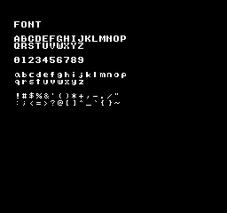
Descargar código fuente / Estado de la verificación
.\kitaqfc\kitaqfc.exe kitaq-docs/samples/fc_font.c -I kitaqfc/lib -I kitaq-docs/samples -o out/fc_font.nes --mapper=nrom --nes-chr=kitaq-docs/samples/font.chr// Display the letters, digits and punctuation from the supplied ascii.c font.
// Expected: Uppercase, lowercase, numbers and all 30 supplied punctuation glyphs
#include "fc_common.h"
// Lay out every supplied character category, yielding between rows. The final
// m_put uses character code 34 to display the double quote separately.
void main(void) {
m_init();
m_text(2,3,"FONT");
m_text(2,5,"ABCDEFGHIJKLMNOP"); m_wait();
m_text(2,6,"QRSTUVWXYZ"); m_wait();
m_text(2,8,"0123456789"); m_wait();
m_text(2,10,"abcdefghijklmnop"); m_wait();
m_text(2,11,"qrstuvwxyz"); m_wait();
m_text(2,13,"!#$%&'()*+,-./"); m_wait();
m_text(2,14,":;<=>?@[]^_`{}~"); m_wait();
m_put(16,13,34); m_wait();
while (1) { m_wait(); }
}Su primer texto en pantalla fc_hello.c
Objetivo: Muestra la secuencia básica para iniciar una ROM y dibujar texto y un número en el fondo.
Funcionamiento: Después de m_init, m_text dibuja el saludo y m_number da formato a 42. El bucle final espera fotogramas y mantiene la pantalla visible.
Controles y resultado esperado: La pantalla muestra HELLO WORLD y 042. El cero inicial corresponde al formato decimal de tres dígitos.
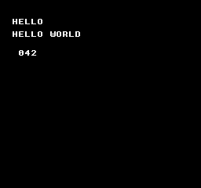
Descargar código fuente / Estado de la verificación
.\kitaqfc\kitaqfc.exe kitaq-docs/samples/fc_hello.c -I kitaqfc/lib -I kitaq-docs/samples -o out/fc_hello.nes --mapper=nrom --nes-chr=kitaq-docs/samples/font.chr// Display a first message on screen.
// Expected: HELLO WORLD and 042
#include "fc_common.h"
// Initialize the display/font, write HELLO WORLD and a three-digit 042,
// then wait for frames so the result remains visible.
void main(void) {
m_init();
m_text(2,3,"HELLO");
m_text(2,5,"HELLO WORLD");
m_number(42);
while (1) { m_wait(); }
}Calcular con un valor intermedio más amplio fc_arithmetic.c
Objetivo: Muestra cómo conservar un resultado intermedio que no cabe en ocho bits.
Funcionamiento: (u16)200 + 100 produce 300. El programa divide el resultado entre 10 y luego lo convierte a u8 para mostrarlo. Observa que la conversión al tipo más amplio ocurre antes de la suma.
Controles y resultado esperado: 030 representa el resultado calculado, 30.
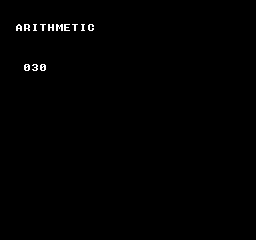
Descargar código fuente / Estado de la verificación
.\kitaqfc\kitaqfc.exe kitaq-docs/samples/fc_arithmetic.c -I kitaqfc/lib -I kitaq-docs/samples -o out/fc_arithmetic.nes --mapper=nrom --nes-chr=kitaq-docs/samples/font.chr// Variables, arithmetic and type conversion.
// Expected: 030
#include "fc_common.h"
// Widen before adding 200 + 100, divide the 16-bit sum, and display 30.
// The cast demonstrates avoiding an 8-bit intermediate result.
void main(void) {
m_init();
m_text(2,3,"ARITHMETIC");
u16 sum;
sum = (u16)200 + 100;
m_number((u8)(sum / 10));
while (1) { m_wait(); }
}Bifurcaciones y bucles fc_control.c
Objetivo: Prueba for, continue, while e if/else en un cálculo sencillo.
Funcionamiento: El bucle for suma de 0 a 7 saltándose el 3 y obtiene 25. El bucle while avanza hasta 32; el if siguiente asigna 42 cuando el valor coincide.
Controles y resultado esperado: 042 es el resultado final. El programa usa una bifurcación if/else.
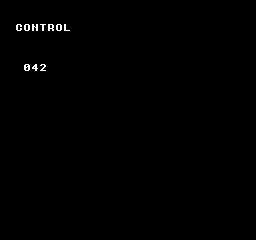
Descargar código fuente / Estado de la verificación
.\kitaqfc\kitaqfc.exe kitaq-docs/samples/fc_control.c -I kitaqfc/lib -I kitaq-docs/samples -o out/fc_control.nes --mapper=nrom --nes-chr=kitaq-docs/samples/font.chr// Conditional branches and loops.
// Expected: 042
#include "fc_common.h"
// Exercise loop control and a final branch, then display the selected value 42.
void main(void) {
m_init();
m_text(2,3,"CONTROL");
u8 i; u8 sum; sum=0;
for (i=0;i<8;i++) { if (i==3) continue; sum=(u8)(sum+i); }
while (sum<32) { sum++; }
if (sum==32) sum=42; else sum=0;
m_number(sum);
while (1) { m_wait(); }
}Funciones, arrays, estructuras y punteros fc_aggregate.c
Objetivo: Muestra cómo agrupar valores y acceder a ellos mediante funciones y punteros.
Funcionamiento: El programa copia un Point que contiene (10,20) y después escribe de 1 a 4 en un array mediante un puntero. Suma el resultado de la función, 30, a los valores del array 1, 2 y 4 y a la constante 5.
Controles y resultado esperado: La suma se muestra como 042. Siga la copia de la estructura, las escrituras en ptr[i] y el valor devuelto por la función.
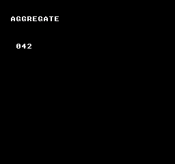
Descargar código fuente / Estado de la verificación
.\kitaqfc\kitaqfc.exe kitaq-docs/samples/fc_aggregate.c -I kitaqfc/lib -I kitaq-docs/samples -o out/fc_aggregate.nes --mapper=nrom --nes-chr=kitaq-docs/samples/font.chr// Functions, arrays, structures and pointers.
// Expected: 042
#include "fc_common.h"
typedef struct { u8 x; u8 y; } Point;
// Add two byte values and explicitly narrow the returned result to u8.
u8 add(u8 a,u8 b) { return (u8)(a+b); }
// Copy a structure, fill an array through a pointer, and combine selected values
// through add() to produce 42. Keep the final screen visible in the idle loop.
void main(void) {
m_init();
m_text(2,3,"AGGREGATE");
Point a; Point b; u8 i; u8 data[4]; u8* ptr;
a.x=10; a.y=20; b=a; ptr=data;
for(i=0;i<4;i++) ptr[i]=(u8)(i+1);
m_number((u8)(add(b.x,b.y)+ptr[0]+ptr[1]+ptr[3]+5));
while (1) { m_wait(); }
}Banderas de bits y copia de búfer fc_bits_memory.c
Objetivo: Agrupa banderas en un byte y copia un búfer en un área de almacenamiento independiente.
Funcionamiento: __memset borra cuatro bytes. El programa activa el bit 3, invierte el bit 1 y después copia los cuatro bytes con __memcpy.
Controles y resultado esperado: el primer byte de destino se muestra como 010; el bit 3 aporta 8 y el bit 1 aporta 2.
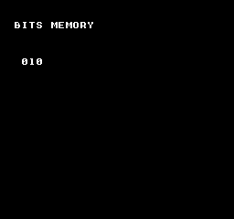
Descargar código fuente / Estado de la verificación
.\kitaqfc\kitaqfc.exe kitaq-docs/samples/fc_bits_memory.c -I kitaqfc/lib -I kitaq-docs/samples -o out/fc_bits_memory.nes --mapper=nrom --nes-chr=kitaq-docs/samples/font.chr// Bit operations and memory copying.
// Expected: 010
#include "fc_common.h"
// Clear the source bytes, set bits 3 and 1, copy the buffer, and display 8 + 2 = 10.
void main(void) {
m_init();
m_text(2,3,"BITS MEMORY");
u8 data[4]; u8 copy[4];
__memset(data,0,4); __bit_set(data,3); __bit_toggle(data,1);
__memcpy(copy,data,4); m_number(copy[0]);
while (1) { m_wait(); }
}Contar nuevas pulsaciones de un botón fc_input.c
Objetivo: Distingue una nueva pulsación de un botón que sigue pulsado.
Funcionamiento: Cada fotograma llama a input_update. El contador solo avanza cuando input_pressed(BTN_A) es verdadero.
Controles y resultado esperado: el contador comienza en 000. Pulse A para obtener 001; mantenerlo pulsado no añade más. Suéltelo y vuelva a pulsarlo para obtener 002. El contador de un byte vuelve a 000 después de 255.
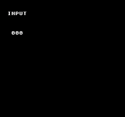
Descargar código fuente / Estado de la verificación
.\kitaqfc\kitaqfc.exe kitaqfc/lib/input.c kitaq-docs/samples/fc_input.c -I kitaqfc/lib -I kitaq-docs/samples -o out/fc_input.nes --mapper=nrom --nes-chr=kitaq-docs/samples/font.chr// Distinguish a new button press from a held button.
// Expected: 000 initially; A increments once per press
#include "fc_common.h"
#include "input.h"
u8 manual_count;
// Sample buttons once per frame and increment only on a new A press.
// Holding A does not repeatedly increment; the byte-sized counter wraps after 255.
void main(void) {
m_init();
m_text(2,3,"INPUT");
input_init();
m_number(0);
while (1) { m_wait(); input_update(); if(input_pressed(BTN_A)) { manual_count++; m_number(manual_count); } }
}Multiplicar valores de punto fijo Q8.8 fc_fixed.c
Objetivo: Muestra la conversión de entero a Q8.8, la multiplicación y la conversión de vuelta a entero.
Funcionamiento: fix_from_int convierte 3 y 4 a Q8.8. fix_mul los multiplica y fix_to_int convierte el producto de vuelta a entero.
Controles y resultado esperado: 012 significa 3 × 4 = 12. Es el entero convertido, no el valor interno escalado por 256.
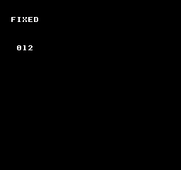
Descargar código fuente / Estado de la verificación
.\kitaqfc\kitaqfc.exe kitaqfc/lib/fixed.c kitaq-docs/samples/fc_fixed.c -I kitaqfc/lib -I kitaq-docs/samples -o out/fc_fixed.nes --mapper=nrom --nes-chr=kitaq-docs/samples/font.chr// Calculate with signed Q8.8 fixed-point values.
// Expected: 012
#include "fc_common.h"
#include "fixed.h"
// Convert 3 and 4 to Q8.8, multiply them, convert the result back to an
// integer, and display 12.
void main(void) {
m_init();
m_text(2,3,"FIXED");
fix8 a; fix8 b; a=fix_from_int(3); b=fix_from_int(4);
m_number((u8)fix_to_int(fix_mul(a,b)));
while (1) { m_wait(); }
}Asignar desde un pool fijo de objetos fc_entity.c
Objetivo: Crea un objeto a partir de un conjunto fijo de posiciones, sin asignación dinámica de memoria.
Funcionamiento: entity_init reinicia el pool. entity_create crea el tipo 1 en (20,30); el programa comprueba el ID de fallo 0xFF antes de establecer vx en 2.
Controles y resultado esperado: 001 es la cantidad de objetos activos, no un ID ni una coordenada. Este ejemplo no actualiza ni dibuja el objeto, por lo que no aparece ningún personaje en movimiento.
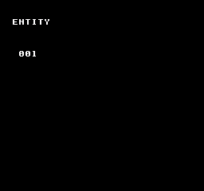
Descargar código fuente / Estado de la verificación
.\kitaqfc\kitaqfc.exe kitaqfc/lib/entity.c kitaq-docs/samples/fc_entity.c -I kitaqfc/lib -I kitaq-docs/samples -o out/fc_entity.nes --mapper=nrom --nes-chr=kitaq-docs/samples/font.chr// Allocate an entity from a fixed-capacity object pool.
// Expected: 001
#include "fc_common.h"
#include "entity.h"
// Create one entity and check the 0xFF allocation-failure sentinel before
// accessing its velocity. Display the pool occupancy, not the entity ID.
void main(void) {
m_init();
m_text(2,3,"ENTITY");
u8 id; entity_init(); id=entity_create(1,20,30);
if(id!=0xFF) entity_get(id)->vx=2; m_number(entity_count_active());
while (1) { m_wait(); }
}Registrar un valor de diagnóstico en RAM fc_debug.c
Objetivo: Conserva un valor del juego con nombre en un búfer de diagnóstico, separado de la visualización en pantalla.
Funcionamiento: El programa inicializa la depuración, establece la etiqueta de fotograma en 1 y registra el valor 42 con el nombre HP.
Controles y resultado esperado: 001 es la cantidad de entradas de traza. HP=42 se guarda en el búfer de diagnóstico; la pantalla por sí sola no muestra ni verifica ese contenido.
Descargar código fuente / Estado de la verificación
.\kitaqfc\kitaqfc.exe kitaqfc/lib/debug.c kitaq-docs/samples/fc_debug.c -I kitaqfc/lib -I kitaq-docs/samples -o out/fc_debug.nes --mapper=nrom --nes-chr=kitaq-docs/samples/font.chr// Record diagnostic values in the debug trace.
// Expected: 001; trace log contains HP=42
#include "fc_common.h"
#include "debug.h"
// Record HP = 42 with frame tag 1 and display the number of trace entries.
// The trace buffer contains the value; the screen displays the count, not HP.
void main(void) {
m_init();
m_text(2,3,"DEBUG");
debug_init(); debug_set_frame(1); debug_trace_u8("HP",42);
m_number(debug_get_trace_count());
while (1) { m_wait(); }
}Guardar un historial de posiciones fc_chain.c
Objetivo: Muestra cómo guardar un historial de posiciones en un búfer circular.
Funcionamiento: chain_init asocia un array con espacio para cuatro puntos. Después, chain_push_head registra (20,30).
Controles y resultado esperado: 042 es un marcador fijo de finalización, no una coordenada ni una cantidad. Inspecciona trail y points para comprobar el historial guardado. Este programa no dibuja un cuerpo que siga al protagonista.
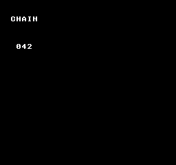
Descargar código fuente / Estado de la verificación
.\kitaqfc\kitaqfc.exe kitaqfc/lib/chain.c kitaq-docs/samples/fc_chain.c -I kitaqfc/lib -I kitaq-docs/samples -o out/fc_chain.nes --mapper=nrom --nes-chr=kitaq-docs/samples/font.chr// Store a position history in a ring buffer.
// Expected: 042; history contains (20,30)
#include "fc_common.h"
#include "chain.h"
Chain trail; ChainPoint points[4];
// Attach four history slots and record one point. The displayed 42 is a fixed
// completion marker; inspect the chain to verify the stored (20,30) point.
void main(void) {
m_init();
m_text(2,3,"CHAIN");
chain_init(&trail,points,4); chain_push_head(&trail,20,30);
m_number(42);
while (1) { m_wait(); }
}Leer el contador de fotogramas de la biblioteca fc_system.c
Objetivo: Muestra cómo las esperas contadas en fotogramas afectan al contador de fotogramas de la biblioteca.
Funcionamiento: Después de system_init, el programa llama dos veces a system_wait_vblank y muestra system_get_frame8.
Controles y resultado esperado: El resultado es 002. El bucle de espera utiliza la función auxiliar m_wait del manual, por lo que el valor mostrado no sigue aumentando.
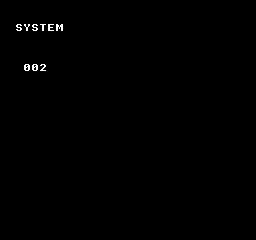
Descargar código fuente / Estado de la verificación
.\kitaqfc\kitaqfc.exe kitaqfc/lib/system.c kitaq-docs/samples/fc_system.c -I kitaqfc/lib -I kitaq-docs/samples -o out/fc_system.nes --mapper=nrom --nes-chr=kitaq-docs/samples/font.chr// Count completed frame waits.
// Expected: 002
#include "fc_common.h"
#include "system.h"
// Reset the library frame count, perform two counted waits, and display 2.
// Subsequent m_wait calls leave that library counter unchanged.
void main(void) {
m_init();
m_text(2,3,"SYSTEM");
system_init(); system_wait_vblank(); system_wait_vblank();
m_number(system_get_frame8());
while (1) { m_wait(); }
}Seleccionar el ID de la escena actual fc_scene.c
Objetivo: Muestra cómo seleccionar un ID para distinguir escenas, como la pantalla de título y la partida.
Funcionamiento: El programa registra dos entradas SceneDef inicializadas a cero y selecciona el ID 1 mediante scene_change.
Controles y resultado esperado: 001 es el ID actual devuelto por scene_get_current. El ejemplo no registra callbacks de escena ni dibujo de transiciones.
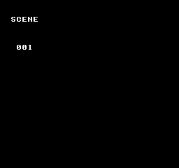
Descargar código fuente / Estado de la verificación
.\kitaqfc\kitaqfc.exe kitaqfc/lib/runtime.c kitaqfc/lib/scene.c kitaq-docs/samples/fc_scene.c -I kitaqfc/lib -I kitaq-docs/samples -o out/fc_scene.nes --mapper=nrom --nes-chr=kitaq-docs/samples/font.chr// The scene streaming module shares runtime.c queue symbols, even though this demo only changes IDs.
#define MANUAL_FC_RUNTIME 1
// Switch the current scene ID.
// Expected: 001; no callbacks registered
#include "fc_common.h"
#include "scene.h"
SceneDef manual_scenes[2];
// Register two zero-initialized scene entries, select ID 1 and display it.
// No callbacks are registered in this example.
void main(void) {
m_init();
m_text(2,3,"SCENE");
scene_init(manual_scenes,2); scene_change(1);
m_number(scene_get_current());
while (1) { m_wait(); }
}Acumular movimiento fraccionario Q5.3 fc_subpixel.c
Objetivo: Conserva el movimiento subpíxel como resto y suma la parte de píxeles enteros a la posición.
Funcionamiento: Partiendo de X=40, el bucle suma 2/8 de píxel ocho veces. Un desplazamiento a la derecha extrae los píxeles enteros; una máscara conserva el resto.
Controles y resultado esperado: el movimiento total es de dos píxeles, así que X=42 se muestra como 042. Este ejemplo de integración manual maneja movimiento positivo; el negativo necesita una lógica equivalente de préstamo.
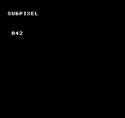
Descargar código fuente / Estado de la verificación
.\kitaqfc\kitaqfc.exe kitaq-docs/samples/fc_subpixel.c -I kitaqfc/lib -I kitaq-docs/samples -o out/fc_subpixel.nes --mapper=nrom --nes-chr=kitaq-docs/samples/font.chr// Accumulate Q5.3 eighth-pixel motion into an integer coordinate.
// Expected: 042; explicit game-side integration using header constants
#include "fc_common.h"
#include "physics2d.h"
// Integrate eight increments of 2/8 pixel. Carry whole pixels into X and
// retain the fractional remainder with the supplied mask, moving X from 40 to 42.
void main(void) {
m_init();
m_text(2,3,"SUBPIXEL");
KQ2DPosition x; KQ2DFraction frac; KQ2DSpeed speed; u8 i;
// This example demonstrates positive motion only; signed negative motion needs a matching carry/borrow path.
x=40; frac=0; speed=2;
for(i=0;i<8;i++) {
frac=(u8)(frac+speed);
x=(u8)(x+(frac>>KQ2D_SUBPIXEL_BITS));
frac=(u8)(frac & KQ2D_SUBPIXEL_MASK);
}
m_number(x);
while (1) { m_wait(); }
}Desplazar el fondo de NES fc_scroll.c
Objetivo: Mueve el fondo actualizando la posición de desplazamiento de PPU.
Funcionamiento: Partiendo de __scroll_set(0,0), el programa incrementa phase una vez por fotograma y lo utiliza como posición horizontal.
Controles y resultado esperado: La palabra SCROLL cambia de posición horizontal. phase vuelve de 255 a 0. No es un ejemplo de un mapa ancho que abarque varias tablas de nombres.
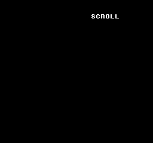
Descargar código fuente / Estado de la verificación
.\kitaqfc\kitaqfc.exe kitaq-docs/samples/fc_scroll.c -I kitaqfc/lib -I kitaq-docs/samples -o out/fc_scroll.nes --mapper=nrom --nes-chr=kitaq-docs/samples/font.chr// Scroll the NES background horizontally.
// Expected: title scrolls horizontally
#include "fc_common.h"
u8 phase;
// Advance an 8-bit horizontal scroll position once per frame, wrapping naturally
// after 255. Background motion demonstrates the changing scroll register.
void main(void) {
m_init();
m_text(2,3,"SCROLL");
__scroll_set(0,0);
while (1) { m_wait(); phase++; __scroll_set(phase,0); }
}Aplicar una actualización de tile mediante NMI fc_vram_queue.c
Objetivo: Envía una actualización de PPU desde el programa principal para que la aplique el procesamiento de NMI.
Funcionamiento: __vramq_put encola el tile 52 en la dirección de tabla de nombres 0x2103 y __vramq_commit lo envía. Esa dirección corresponde a la coordenada de tile (3,8).
Controles y resultado esperado: Aparece un único 4 en la coordenada del fondo (3,8). El tile 52 es el dígito 4 en la fuente incluida.
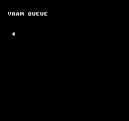
Descargar código fuente / Estado de la verificación
.\kitaqfc\kitaqfc.exe kitaq-docs/samples/fc_vram_queue.c -I kitaqfc/lib -I kitaq-docs/samples -o out/fc_vram_queue.nes --mapper=nrom --nes-chr=kitaq-docs/samples/font.chr// Submit a VRAM update for the NMI handler.
// Expected: 4 at (3,8)
#include "fc_common.h"
// Queue tile 52 at nametable address 0x2103, corresponding to (3,8), and
// commit the queue so the NMI update path displays the digit 4.
void main(void) {
m_init();
m_text(2,3,"VRAM QUEUE");
__vramq_put(0x2103,52); __vramq_commit();
while (1) { m_wait(); }
}Mostrar un sprite de OAM de NES fc_sprite.c
Objetivo: Prepara los colores de los sprites y los datos de OAM para dibujar una imagen de forma independiente del fondo.
Funcionamiento: El programa carga la paleta de sprites, configura la entrada 0 con posición (70,80), tile 65 y atributos 0, activa el renderizado y repite el DMA de OAM.
Controles y resultado esperado: Aparece una letra A inmóvil como sprite. El ejemplo muestra la configuración y la transferencia OAM, no una animación.
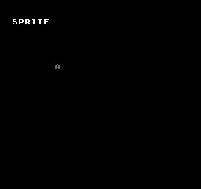
Descargar código fuente / Estado de la verificación
.\kitaqfc\kitaqfc.exe kitaq-docs/samples/fc_sprite.c -I kitaqfc/lib -I kitaq-docs/samples -o out/fc_sprite.nes --mapper=nrom --nes-chr=kitaq-docs/samples/font.chr// Display a sprite using NES OAM.
// Expected: A sprite on screen
#include "fc_common.h"
// Load the sprite palette, assign font tile 65 to OAM slot zero, enable
// background/sprite display, and transfer OAM after each frame wait.
void main(void) {
m_init();
m_text(2,3,"SPRITE");
__palette_sp_load(manual_pal); __sprite_set(0,70,80,65,0);
__ppu_mask_set(0x1E);
while (1) { m_wait(); __oam_dma(); }
}Reproducir un tono de pulso de APU fc_sound.c
Objetivo: Configura los valores de control, temporizador y longitud del canal de pulso integrado de NES.
Funcionamiento: Después de nes_apu_init, el programa llama a nes_sfx_square1(0xBF,400,20). El control 0xBF selecciona volumen constante y detiene el contador de longitud, por lo que el tono se mantiene. 20 es un índice de la tabla de longitudes, no 20 fotogramas.
Controles y resultado esperado: Suena un tono de pulso sostenido mientras se muestra 042. Llama a nes_apu_silence_all para detenerlo. El marcador en pantalla no verifica por sí solo la salida de sonido.
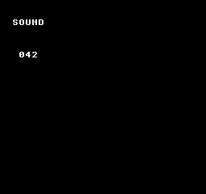
Descargar código fuente / Estado de la verificación
.\kitaqfc\kitaqfc.exe kitaqfc/lib/audio.c kitaq-docs/samples/fc_sound.c -I kitaqfc/lib -I kitaq-docs/samples -o out/fc_sound.nes --mapper=nrom --nes-chr=kitaq-docs/samples/font.chr// Play a pulse-channel effect on the built-in NES APU.
// Expected: 042 and a pulse tone
#include "fc_common.h"
#include "audio.h"
// Initialize the APU, trigger pulse channel 1 with the chosen timer/length
// values, and leave the screen displaying 42 while the hardware plays the tone.
void main(void) {
m_init();
m_text(2,3,"SOUND");
// Control BF selects constant volume and halts the length counter, so this tone sustains.
// Call nes_apu_silence_all when the game should stop it; 20 is a length-table index, not frames.
nes_apu_init(); nes_sfx_square1(0xBF,400,20);
m_number(42);
while (1) { m_wait(); }
}Diccionario de la API de biblioteca
294 entradas. Abre una entrada para consultar su sintaxis, argumentos, notas del código fuente y ejemplo de uso. Los fragmentos de llamada requieren inicialización previa; no son ROM independientes. Los ejemplos de paso de argumentos muestran cómo llegar a la API con los valores preparados, pero no demuestran su funcionamiento en el dispositivo.
actor.h — Arrays de actores del juego
NesActor agrupa posición en el mundo, posición en pantalla y tamaño del rectángulo. Las funciones auxiliares proyectan mediante la cámara, escriben metasprites en OAM y comprueban solapamientos en el mundo. El juego gestiona velocidad, descarte fuera de pantalla y DMA de OAM.
nes_actor_collide
Comprueba el solapamiento de rectángulos de actores alineados con los ejes en coordenadas del mundo.
Sintaxis
unsigned char nes_actor_collide(struct NesActor* a, struct NesActor* b);Parámetros
aPrimer actor.
bSegundo actor.
Valor devuelto
Devuelve 1 si hay solapamiento y 0 si están separados o solo se tocan los bordes.
Condiciones y límites
Usa anchos y altos positivos y mantén posición+tamaño≤65535. Se ignoran las coordenadas de pantalla, attr y flags.
Ejemplo de uso
result[3]=nes_actor_collide(&a,&b);nes_actor_set_world(&b,315,95);result[4]=nes_actor_collide(&a,&b);Este fragmento muestra la llamada. Antes de incorporarlo a un programa completo, cumple los requisitos de inicialización y de los búferes indicados.
Resultado esperado
Proyecta el punto del mundo (300,95) con la cámara (268,32): las piezas roja y azul de 8×8 aparecen en (32,64) y (40,64). Muestra cómo el Y OAM sin ajustar 63 aparece en 64, y cómo la colisión pasa de cero al tocarse los bordes a uno con un píxel de solapamiento.
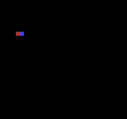
Comando de compilación
New-Item -ItemType Directory -Force .\out | Out-Null
.\kitaqfc\kitaqfc.exe .\kitaqfc\lib\runtime.c .\kitaq-docs\samples\api-examples\fc\batch3_actor.c -I .\kitaqfc\lib -I .\kitaq-docs\samples -o .\out\batch3_actor.nes --no-cache --no-disasm --mapper=nrom --nes-chr=.\kitaq-docs\samples\api-examples\fc\vram_shapes.chrImplementación y código fuente
kitaqfc/lib/actor.h:29
Test overlap in world coordinates with exclusive right/bottom edges. Keep position-plus-size sums within u16; touching edges are not collisions. Require positive widths and heights; zero extents are not rejected before the edge tests.
kitaqfc/lib/actor.c:49
unsigned char nes_actor_collide(struct NesActor* a, struct NesActor* b)
{
unsigned short a_right;
unsigned short b_right;
unsigned short a_bottom;
unsigned short b_bottom;
a_right = (unsigned short)(a->world_x + a->width);
b_right = (unsigned short)(b->world_x + b->width);
a_bottom = (unsigned short)(a->world_y + a->height);
b_bottom = (unsigned short)(b->world_y + b->height);
if (a_right <= b->world_x)
{
return 0;
}
if (b_right <= a->world_x)
{
return 0;
}
if (a_bottom <= b->world_y)
{
return 0;
}
if (b_bottom <= a->world_y)
{
return 0;
}
return 1;
}nes_actor_draw_metasprite
Escribe un metasprite en la copia de OAM con las coordenadas de pantalla guardadas del actor.
Sintaxis
unsigned char nes_actor_draw_metasprite(struct NesActor* actor, unsigned char oam_index, unsigned char* metasprite);Parámetros
actorPuntero a un NesActor escribible.
oam_indexPrimer hueco, de 0 a 63; reserva espacio para todas las partes.
metaspriteRegistros de cuatro bytes dx,dy,tile,attr; dx=255 termina la lista.
Valor devuelto
Devuelve el índice del siguiente hueco OAM, volviendo al inicio al terminar los 64 huecos.
Condiciones y límites
Enlaza runtime.c. La cola copia los datos para una NMI posterior o una aplicación segura con el renderizado apagado. Serializa la producción y el consumo. Si una operación de varias filas se queda sin capacidad, las filas ya admitidas permanecen en la cola.
No aplica los campos attr/flags del actor. Y es un byte OAM sin ajustar, así que el borde superior visible queda un píxel más abajo. Se necesita un DMA de OAM para mostrar la copia.
Ejemplo de uso
result[5]=nes_actor_draw_metasprite(&a,0,parts);result[6]=nes_oam_shadow[3];result[7]=nes_oam_shadow[7];nes_oam_dma(2);Este fragmento muestra la llamada. Antes de incorporarlo a un programa completo, cumple los requisitos de inicialización y de los búferes indicados.
Resultado esperado
Proyecta el punto del mundo (300,95) con la cámara (268,32): las piezas roja y azul de 8×8 aparecen en (32,64) y (40,64). Muestra cómo el Y OAM sin ajustar 63 aparece en 64, y cómo la colisión pasa de cero al tocarse los bordes a uno con un píxel de solapamiento.
Comando de compilación
New-Item -ItemType Directory -Force .\out | Out-Null
.\kitaqfc\kitaqfc.exe .\kitaqfc\lib\runtime.c .\kitaq-docs\samples\api-examples\fc\batch3_actor.c -I .\kitaqfc\lib -I .\kitaq-docs\samples -o .\out\batch3_actor.nes --no-cache --no-disasm --mapper=nrom --nes-chr=.\kitaq-docs\samples\api-examples\fc\vram_shapes.chrImplementación y código fuente
kitaqfc/lib/actor.h:25
Draw the byte-stream metasprite at cached screen coordinates and return its next OAM index. Actor attr/flags are not applied by this wrapper.
kitaqfc/lib/actor.c:41
unsigned char nes_actor_draw_metasprite(struct NesActor* actor, unsigned char oam_index, unsigned char* metasprite)
{
return nes_metasprite_draw(oam_index, actor->screen_x, actor->screen_y, metasprite);
}nes_actor_set_world
Establece X/Y de un actor en el mundo.
Sintaxis
void nes_actor_set_world(struct NesActor* actor, unsigned short x, unsigned short y);Parámetros
actorPuntero a un NesActor escribible.
xX del mundo, de 0 a 65535 píxeles.
yY del mundo, de 0 a 65535 píxeles.
Valor devuelto
No devuelve ningún valor.
Condiciones y límites
No actualiza screen_x/screen_y. Llama a update_screen para proyectar mediante la cámara.
Ejemplo de uso
nes_actor_set_world(&a,300,95);nes_actor_set_world(&b,316,95);result[0]=a.world_x;Este fragmento muestra la llamada. Antes de incorporarlo a un programa completo, cumple los requisitos de inicialización y de los búferes indicados.
Resultado esperado
Proyecta el punto del mundo (300,95) con la cámara (268,32): las piezas roja y azul de 8×8 aparecen en (32,64) y (40,64). Muestra cómo el Y OAM sin ajustar 63 aparece en 64, y cómo la colisión pasa de cero al tocarse los bordes a uno con un píxel de solapamiento.
Comando de compilación
New-Item -ItemType Directory -Force .\out | Out-Null
.\kitaqfc\kitaqfc.exe .\kitaqfc\lib\runtime.c .\kitaq-docs\samples\api-examples\fc\batch3_actor.c -I .\kitaqfc\lib -I .\kitaq-docs\samples -o .\out\batch3_actor.nes --no-cache --no-disasm --mapper=nrom --nes-chr=.\kitaq-docs\samples\api-examples\fc\vram_shapes.chrImplementación y código fuente
kitaqfc/lib/actor.h:19
Set the actor's 16-bit world position without updating cached screen coordinates.
kitaqfc/lib/actor.c:19
void nes_actor_set_world(struct NesActor* actor, unsigned short x, unsigned short y)
{
actor->world_x = x;
actor->world_y = y;
}nes_actor_update_screen
Resta las coordenadas de cámara a las del mundo y guarda los bytes bajos como coordenadas de pantalla.
Sintaxis
void nes_actor_update_screen(struct NesActor* actor, unsigned short camera_x, unsigned short camera_y);Parámetros
actorPuntero a un NesActor escribible.
camera_xX de la cámara en el mundo.
camera_yY de la cámara en el mundo.
Valor devuelto
No devuelve ningún valor.
Condiciones y límites
Los resultados negativos o ≥256 se desbordan. No oculta actores fuera de pantalla; el juego debe descartarlos antes de dibujar.
Ejemplo de uso
nes_actor_update_screen(&a,268,32);result[1]=a.screen_x;result[2]=a.screen_y;Este fragmento muestra la llamada. Antes de incorporarlo a un programa completo, cumple los requisitos de inicialización y de los búferes indicados.
Resultado esperado
Proyecta el punto del mundo (300,95) con la cámara (268,32): las piezas roja y azul de 8×8 aparecen en (32,64) y (40,64). Muestra cómo el Y OAM sin ajustar 63 aparece en 64, y cómo la colisión pasa de cero al tocarse los bordes a uno con un píxel de solapamiento.
Comando de compilación
New-Item -ItemType Directory -Force .\out | Out-Null
.\kitaqfc\kitaqfc.exe .\kitaqfc\lib\runtime.c .\kitaq-docs\samples\api-examples\fc\batch3_actor.c -I .\kitaqfc\lib -I .\kitaq-docs\samples -o .\out\batch3_actor.nes --no-cache --no-disasm --mapper=nrom --nes-chr=.\kitaq-docs\samples\api-examples\fc\vram_shapes.chrImplementación y código fuente
kitaqfc/lib/actor.h:22
Subtract the camera and retain only the low coordinate bytes. This performs wrapping projection, not clipping; callers must hide actors outside the viewport.
kitaqfc/lib/actor.c:27
void nes_actor_update_screen(struct NesActor* actor, unsigned short camera_x, unsigned short camera_y)
{
unsigned short dx;
unsigned short dy;
dx = (unsigned short)(actor->world_x - camera_x);
dy = (unsigned short)(actor->world_y - camera_y);
actor->screen_x = (unsigned char)dx;
actor->screen_y = (unsigned char)dy;
}asset.h — Identificadores de recursos y descriptores de datos
La biblioteca de recursos localiza datos en bancos de ROM mediante un ID de 8 bits. Incluya asset.c y, en FC, también bank.c. Cada AssetDesc empaquetado ocupa 6 bytes: tipo, banco del recurso, dirección de 16 bits y longitud en bytes. La tabla y los datos pueden estar en bancos distintos.
Registre la tabla antes de buscar recursos. El registro es un estado global compartido: no lo cambie durante una búsqueda. La biblioteca comprueba los ID y el puntero de salida de asset_get, pero no valida la tabla, las direcciones de los datos ni el contenido del cartucho.
Busca un recurso RAW o TILES, selecciona su banco de ROM y transfiere todos los datos con __vram_write, en bloques de hasta 128 bytes. Después restaura el banco guardado por bank_get_current(). La división en bloques no espera al siguiente fotograma.
Use CHR RAM escribible para los patrones y desactive el renderizado en transferencias largas. En VBlank, la operación completa debe caber en el tiempo disponible; los bloques de 128 bytes no lo garantizan. El ejemplo usa --mapper=mmc1 --board=surom512. En placas genéricas, omitir --nes-chr genera CHR ROM vacía, no CHR RAM.
asset_get
Copia un AssetDesc desde el banco de ROM de la tabla registrada al espacio proporcionado por el programa. Obtiene los metadatos del recurso, no sus datos.
Sintaxis
u8 asset_get(u8 asset_id, AssetDesc* out_desc);Parámetros
asset_idÍndice del recurso, empezando por cero. Debe cumplir
asset_id < counten la tabla registrada.out_descEspacio escribible para un descriptor de 6 bytes. Un puntero nulo se rechaza antes de acceder a la tabla.
Valor devuelto
1 si se copia el descriptor; 0 si el destino es nulo o el ID queda fuera del rango. Esos fallos no modifican el destino.
Condiciones y límites
Registre la tabla antes de buscar recursos. El registro es un estado global compartido: no lo cambie durante una búsqueda. La biblioteca comprueba los ID y el puntero de salida de asset_get, pero no valida la tabla, las direcciones de los datos ni el contenido del cartucho.
Los ejemplos sitúan el código llamante en el banco fijo 0 para que cambiar el banco de origen no retire el código en ejecución. Las transferencias son síncronas. No las interrumpa con otra copia que cambie bancos ni suponga que la función garantiza por sí sola la seguridad de todas las interrupciones.
Ejemplo de uso
loaded=asset_get(0,&descriptor);
expect(loaded==1,1);
expect(descriptor.type==ASSET_TYPE_TILES && descriptor.bank==2,2);
expect(descriptor.ptr==asset_shapes && descriptor.len==144,3);Este fragmento muestra la llamada. Antes de incorporarlo a un programa completo, cumple los requisitos de inicialización y de los búferes indicados.
Resultado esperado
Lee el descriptor 0 y comprueba tipo TILES, banco 2, puntero y longitud de 144 bytes. Los ID inválidos y el destino nulo deben fallar; una búsqueda fallida conserva el valor previo de salida.
Imagen esperada: una fila roja empieza en (16,32) y ocupa 72×8 píxeles. Repite tres veces un triángulo de 8×8, un cuadrado de 8×8 con borde de un píxel y un tile con sus cuatro columnas izquierdas rellenas. El triángulo crece desde un píxel arriba a la izquierda hasta ocho en la fila inferior.
En FC, la pareja azul en (16,64) muestra __far_memcpy; la verde en (16,96), asset_load_raw seguido de una carga en CHR. Cada pareja ocupa 16×8 píxeles sobre negro. Permiten ver los datos gráficos copiados, no solo valores numéricos de estado.
El estado esperado es FAILED CHECKS 000 y FIRST FAILURE 00. La verificación ejecuta 300 fotogramas y compara texto, formas y colores con lo esperado. Es una prueba en emulador, no en hardware físico.
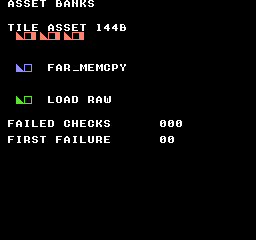
Comando de compilación
New-Item -ItemType Directory -Force .\out | Out-Null
.\kitaqfc\kitaqfc.exe .\kitaq-docs\samples\api-examples\fc\asset_banks.c -I .\kitaqfc\lib -I .\kitaq-docs\samples -o .\out\asset_banks.nes --mapper=mmc1 --board=surom512 --no-cache --no-disasmImplementación y código fuente
kitaqfc/lib/asset.h:25
Copy a descriptor from its ROM bank into caller storage. Null output or an out-of-range ID returns zero without reading the table.
kitaqfc/lib/asset.c:18
u8 asset_get(u8 asset_id, AssetDesc* out_desc)
{
if (out_desc == 0) return 0;
if (asset_id >= asset_table_count) return 0;
__far_memcpy((u8*)out_desc, asset_table_bank, (u16)(asset_table + asset_id), sizeof(AssetDesc));
return 1;
}asset_get_bank
Lee del descriptor el banco de los datos del recurso. No es el banco de la tabla, y la función no deja seleccionado el banco del recurso.
Sintaxis
u8 asset_get_bank(u8 asset_id);Parámetros
asset_idÍndice del recurso, empezando por cero. Debe cumplir
asset_id < counten la tabla registrada.
Valor devuelto
El campo bank de 8 bits, o 0 si falla la búsqueda. El banco cero también puede ser válido; use asset_get() para distinguir éxito y valor cero.
Condiciones y límites
Registre la tabla antes de buscar recursos. El registro es un estado global compartido: no lo cambie durante una búsqueda. La biblioteca comprueba los ID y el puntero de salida de asset_get, pero no valida la tabla, las direcciones de los datos ni el contenido del cartucho.
Cada consulta llama de nuevo a asset_get y copia un descriptor. Si necesita banco, puntero y longitud, llame una sola vez a asset_get y lea sus campos.
Los ejemplos sitúan el código llamante en el banco fijo 0 para que cambiar el banco de origen no retire el código en ejecución. Las transferencias son síncronas. No las interrumpa con otra copia que cambie bancos ni suponga que la función garantiza por sí sola la seguridad de todas las interrupciones.
Ejemplo de uso
payload_bank=asset_get_bank(0);
expect(payload_bank==2,17); // Payload bank, not descriptor-table bank 3.
expect(asset_get_bank(4)==0,18); // Failure sentinel; a valid descriptor may also use bank 0.Este fragmento muestra la llamada. Antes de incorporarlo a un programa completo, cumple los requisitos de inicialización y de los búferes indicados.
Resultado esperado
Se espera el banco 2 de los datos aunque la tabla esté en el banco 3. También se comprueba que un ID inválido devuelve cero.
Imagen esperada: una fila roja empieza en (16,32) y ocupa 72×8 píxeles. Repite tres veces un triángulo de 8×8, un cuadrado de 8×8 con borde de un píxel y un tile con sus cuatro columnas izquierdas rellenas. El triángulo crece desde un píxel arriba a la izquierda hasta ocho en la fila inferior.
En FC, la pareja azul en (16,64) muestra __far_memcpy; la verde en (16,96), asset_load_raw seguido de una carga en CHR. Cada pareja ocupa 16×8 píxeles sobre negro. Permiten ver los datos gráficos copiados, no solo valores numéricos de estado.
El estado esperado es FAILED CHECKS 000 y FIRST FAILURE 00. La verificación ejecuta 300 fotogramas y compara texto, formas y colores con lo esperado. Es una prueba en emulador, no en hardware físico.
Comando de compilación
New-Item -ItemType Directory -Force .\out | Out-Null
.\kitaqfc\kitaqfc.exe .\kitaq-docs\samples\api-examples\fc\asset_banks.c -I .\kitaqfc\lib -I .\kitaq-docs\samples -o .\out\asset_banks.nes --mapper=mmc1 --board=surom512 --no-cache --no-disasmImplementación y código fuente
kitaqfc/lib/asset.h:33
Return the asset bank or zero on lookup failure; bank zero may also be valid.
kitaqfc/lib/asset.c:74
u8 asset_get_bank(u8 asset_id)
{
AssetDesc desc;
if (asset_get(asset_id, &desc) == 0) return 0;
return desc.bank;
}asset_get_len
Lee la longitud del recurso en bytes desde su descriptor. Devuelve metadatos; no examina los datos ni convierte la longitud en cantidad de tiles, elementos o fotogramas.
Sintaxis
u16 asset_get_len(u8 asset_id);Parámetros
asset_idÍndice del recurso, empezando por cero. Debe cumplir
asset_id < counten la tabla registrada.
Valor devuelto
El campo len de 16 bits, en bytes, o 0 si falla la búsqueda. Un recurso vacío también mide cero; use asset_get() para distinguirlos.
Condiciones y límites
Registre la tabla antes de buscar recursos. El registro es un estado global compartido: no lo cambie durante una búsqueda. La biblioteca comprueba los ID y el puntero de salida de asset_get, pero no valida la tabla, las direcciones de los datos ni el contenido del cartucho.
Cada consulta llama de nuevo a asset_get y copia un descriptor. Si necesita banco, puntero y longitud, llame una sola vez a asset_get y lea sus campos.
Los ejemplos sitúan el código llamante en el banco fijo 0 para que cambiar el banco de origen no retire el código en ejecución. Las transferencias son síncronas. No las interrumpa con otra copia que cambie bancos ni suponga que la función garantiza por sí sola la seguridad de todas las interrupciones.
Ejemplo de uso
expect(asset_get_len(0)==144,21); // Bytes, not tiles.
expect(asset_get_len(3)==0 && asset_get_len(4)==0,22); // Empty asset and invalid ID both yield zero.Este fragmento muestra la llamada. Antes de incorporarlo a un programa completo, cumple los requisitos de inicialización y de los búferes indicados.
Resultado esperado
El recurso de nueve tiles debe indicar 144 bytes, no nueve tiles. Un recurso vacío y un ID inválido deben devolver cero.
Imagen esperada: una fila roja empieza en (16,32) y ocupa 72×8 píxeles. Repite tres veces un triángulo de 8×8, un cuadrado de 8×8 con borde de un píxel y un tile con sus cuatro columnas izquierdas rellenas. El triángulo crece desde un píxel arriba a la izquierda hasta ocho en la fila inferior.
En FC, la pareja azul en (16,64) muestra __far_memcpy; la verde en (16,96), asset_load_raw seguido de una carga en CHR. Cada pareja ocupa 16×8 píxeles sobre negro. Permiten ver los datos gráficos copiados, no solo valores numéricos de estado.
El estado esperado es FAILED CHECKS 000 y FIRST FAILURE 00. La verificación ejecuta 300 fotogramas y compara texto, formas y colores con lo esperado. Es una prueba en emulador, no en hardware físico.
Comando de compilación
New-Item -ItemType Directory -Force .\out | Out-Null
.\kitaqfc\kitaqfc.exe .\kitaq-docs\samples\api-examples\fc\asset_banks.c -I .\kitaqfc\lib -I .\kitaq-docs\samples -o .\out\asset_banks.nes --mapper=mmc1 --board=surom512 --no-cache --no-disasmImplementación y código fuente
kitaqfc/lib/asset.h:38
Return the descriptor byte length, or zero for an invalid ID.
kitaqfc/lib/asset.c:91
u16 asset_get_len(u8 asset_id)
{
AssetDesc desc;
if (asset_get(asset_id, &desc) == 0) return 0;
return desc.len;
}asset_get_ptr
Lee la dirección de 16 bits guardada en el descriptor. El puntero cercano devuelto no incluye el banco. Para leer otro banco de ROM, combínelo con asset_get_bank() y una función de copia entre bancos.
Sintaxis
const u8* asset_get_ptr(u8 asset_id);Parámetros
asset_idÍndice del recurso, empezando por cero. Debe cumplir
asset_id < counten la tabla registrada.
Valor devuelto
El const u8* guardado, o un puntero nulo si falla la búsqueda. El puntero del descriptor no se valida; use asset_get() para identificar un fallo de búsqueda.
Condiciones y límites
Registre la tabla antes de buscar recursos. El registro es un estado global compartido: no lo cambie durante una búsqueda. La biblioteca comprueba los ID y el puntero de salida de asset_get, pero no valida la tabla, las direcciones de los datos ni el contenido del cartucho.
Cada consulta llama de nuevo a asset_get y copia un descriptor. Si necesita banco, puntero y longitud, llame una sola vez a asset_get y lea sus campos.
Los ejemplos sitúan el código llamante en el banco fijo 0 para que cambiar el banco de origen no retire el código en ejecución. Las transferencias son síncronas. No las interrumpa con otra copia que cambie bancos ni suponga que la función garantiza por sí sola la seguridad de todas las interrupciones.
Ejemplo de uso
payload_pointer=asset_get_ptr(0);
expect(payload_pointer==asset_shapes,19);
expect(*asset_bank_marker==0xA1,20); // Getting the pointer leaves bank 1 selected.
// Use payload_bank together with payload_pointer for a far copy; do not dereference it here.Este fragmento muestra la llamada. Antes de incorporarlo a un programa completo, cumple los requisitos de inicialización y de los búferes indicados.
Resultado esperado
El puntero debe coincidir con la dirección enlazada del recurso, mientras sigue siendo legible un marcador del banco 1. Después se pasa ese puntero junto con el banco 2 a una copia entre bancos.
Imagen esperada: una fila roja empieza en (16,32) y ocupa 72×8 píxeles. Repite tres veces un triángulo de 8×8, un cuadrado de 8×8 con borde de un píxel y un tile con sus cuatro columnas izquierdas rellenas. El triángulo crece desde un píxel arriba a la izquierda hasta ocho en la fila inferior.
En FC, la pareja azul en (16,64) muestra __far_memcpy; la verde en (16,96), asset_load_raw seguido de una carga en CHR. Cada pareja ocupa 16×8 píxeles sobre negro. Permiten ver los datos gráficos copiados, no solo valores numéricos de estado.
El estado esperado es FAILED CHECKS 000 y FIRST FAILURE 00. La verificación ejecuta 300 fotogramas y compara texto, formas y colores con lo esperado. Es una prueba en emulador, no en hardware físico.
Comando de compilación
New-Item -ItemType Directory -Force .\out | Out-Null
.\kitaqfc\kitaqfc.exe .\kitaq-docs\samples\api-examples\fc\asset_banks.c -I .\kitaqfc\lib -I .\kitaq-docs\samples -o .\out\asset_banks.nes --mapper=mmc1 --board=surom512 --no-cache --no-disasmImplementación y código fuente
kitaqfc/lib/asset.h:36
Return the stored address without switching banks. Pair it with the descriptor bank before reading banked ROM; a failed lookup returns null.
kitaqfc/lib/asset.c:83
const u8* asset_get_ptr(u8 asset_id)
{
AssetDesc desc;
if (asset_get(asset_id, &desc) == 0) return 0;
return desc.ptr;
}asset_load_raw
Busca el recurso y copia min(desc.len, max_len) bytes desde su banco de ROM a memoria escribible. Ignora el tipo: los gráficos, mapas y canciones se copian como bytes, sin interpretar el formato ni descomprimirlos.
Sintaxis
u8 asset_load_raw(u8 asset_id, void* dst, u16 max_len);Parámetros
asset_idÍndice del recurso, empezando por cero. Debe cumplir
asset_id < counten la tabla registrada.dstDestino en memoria escribible, con espacio para todos los bytes copiados. Salvo en una transferencia de cero bytes, no se comprueba si el destino es nulo o inválido.
max_lenMáximo de bytes que se copiarán, de 0 a 65535. Un límite menor trunca la copia; cero no copia ningún byte de los datos.
Valor devuelto
0 si falla la búsqueda; en caso contrario, 1, incluso si la copia se trunca, el límite es cero o el recurso está vacío. No devuelve una cantidad de bytes ni garantiza que haya cabido todo el recurso.
Condiciones y límites
Registre la tabla antes de buscar recursos. El registro es un estado global compartido: no lo cambie durante una búsqueda. La biblioteca comprueba los ID y el puntero de salida de asset_get, pero no valida la tabla, las direcciones de los datos ni el contenido del cartucho.
Mantenga todo el origen en el mapeo de ROM previsto y todo el destino en memoria escribible. La copia no cambia automáticamente de banco al cruzar una ventana, no trata solapamientos como memmove ni sincroniza escrituras en VRAM. Para VRAM, use las API de transferencia gráfica.
Los ejemplos sitúan el código llamante en el banco fijo 0 para que cambiar el banco de origen no retire el código en ejecución. Las transferencias son síncronas. No las interrumpa con otra copia que cambie bancos ni suponga que la función garantiza por sí sola la seguridad de todas las interrupciones.
Ejemplo de uso
loaded=asset_load_raw(0,buffer,7); // Success with truncation: copy seven of 144 bytes.
expect(loaded==1 && buffer[7]==0x55,7);
for(i=0;i<7;i++) expect(buffer[(__safe_index u8)i]==expected_shape_byte(i),8);Este fragmento muestra la llamada. Antes de incorporarlo a un programa completo, cumple los requisitos de inicialización y de los búferes indicados.
Resultado esperado
Un límite de siete copia solo siete bytes de un recurso de 144, deja el siguiente en 0x55 y aun así devuelve éxito. También se prueban la copia completa, el límite cero, un recurso vacío y la copia de datos MAP.
Imagen esperada: una fila roja empieza en (16,32) y ocupa 72×8 píxeles. Repite tres veces un triángulo de 8×8, un cuadrado de 8×8 con borde de un píxel y un tile con sus cuatro columnas izquierdas rellenas. El triángulo crece desde un píxel arriba a la izquierda hasta ocho en la fila inferior.
En FC, la pareja azul en (16,64) muestra __far_memcpy; la verde en (16,96), asset_load_raw seguido de una carga en CHR. Cada pareja ocupa 16×8 píxeles sobre negro. Permiten ver los datos gráficos copiados, no solo valores numéricos de estado.
El estado esperado es FAILED CHECKS 000 y FIRST FAILURE 00. La verificación ejecuta 300 fotogramas y compara texto, formas y colores con lo esperado. Es una prueba en emulador, no en hardware físico.
Comando de compilación
New-Item -ItemType Directory -Force .\out | Out-Null
.\kitaqfc\kitaqfc.exe .\kitaq-docs\samples\api-examples\fc\asset_banks.c -I .\kitaqfc\lib -I .\kitaq-docs\samples -o .\out\asset_banks.nes --mapper=mmc1 --board=surom512 --no-cache --no-disasmImplementación y código fuente
kitaqfc/lib/asset.h:28
Copy the smaller of the asset length and max_len using a bank-aware transfer. Return one for a valid ID even when the payload is truncated.
kitaqfc/lib/asset.c:28
u8 asset_load_raw(u8 asset_id, void* dst, u16 max_len)
{
AssetDesc desc;
u16 len;
if (asset_get(asset_id, &desc) == 0) return 0;
len = desc.len;
if (len > max_len) len = max_len;
__far_memcpy((u8*)dst, desc.bank, (u16)desc.ptr, len);
return 1;
}asset_load_tiles
Busca un recurso RAW o TILES, selecciona su banco de ROM y transfiere todos los datos con __vram_write, en bloques de hasta 128 bytes. Después restaura el banco guardado por bank_get_current(). La división en bloques no espera al siguiente fotograma.
Sintaxis
u8 asset_load_tiles(u8 asset_id, u16 vram_dst);Parámetros
asset_idÍndice del recurso, empezando por cero. Debe cumplir
asset_id < counten la tabla registrada.vram_dstDirección de byte del PPU, no del CPU ni un número de tile. Los patrones se cargan en CHR RAM escribible, entre
$0000y$1FFF, a 16 bytes por tile. Mantenga toda la transferencia dentro de la región prevista.
Valor devuelto
0 si el ID es inválido o el tipo no es RAW/TILES; 1 tras una transferencia aceptada, incluso con longitud cero. El éxito no valida el formato gráfico ni su visualización en VRAM.
Condiciones y límites
Registre la tabla antes de buscar recursos. El registro es un estado global compartido: no lo cambie durante una búsqueda. La biblioteca comprueba los ID y el puntero de salida de asset_get, pero no valida la tabla, las direcciones de los datos ni el contenido del cartucho.
Los ejemplos sitúan el código llamante en el banco fijo 0 para que cambiar el banco de origen no retire el código en ejecución. Las transferencias son síncronas. No las interrumpa con otra copia que cambie bancos ni suponga que la función garantiza por sí sola la seguridad de todas las interrupciones.
La transferencia solo escribe bytes: no coloca tiles en el mapa, asigna colores ni reserva VRAM. Configure el mapa y las paletas por separado. Los ejemplos transfieren con el renderizado desactivado y activan la imagen cuando está lista.
asset_load_tiles restaura el banco registrado por bank.c, no un valor leído del mapper. Inicialice y mantenga ese estado con bank_switch; las escrituras directas y las llamadas aisladas a __bankswitch no actualizan el registro de la biblioteca. La copia intrínseca restaura por separado el estado del compilador.
Use CHR RAM escribible para los patrones y desactive el renderizado en transferencias largas. En VBlank, la operación completa debe caber en el tiempo disponible; los bloques de 128 bytes no lo garantizan. El ejemplo usa --mapper=mmc1 --board=surom512. En placas genéricas, omitir --nes-chr genera CHR ROM vacía, no CHR RAM.
Ejemplo de uso
loaded=asset_load_tiles(0,0x0010); // 144 bytes: library uploads chunks of 128 and 16 bytes.
expect(loaded==1 && bank_get_current()==1 && *asset_bank_marker==0xA1,24);
// LCD and NMI are off; CHR RAM is writable. The library selects payload bank 2 and restores bank 1.Este fragmento muestra la llamada. Antes de incorporarlo a un programa completo, cumple los requisitos de inicialización y de los búferes indicados.
Resultado esperado
La carga usa nueve patrones originales de 8×8 píxeles, 144 bytes en total, y comprueba el rechazo de MAP e ID inválidos. En FC, la longitud prueba tanto el bloque de 128 bytes como los 16 restantes.
Imagen esperada: una fila roja empieza en (16,32) y ocupa 72×8 píxeles. Repite tres veces un triángulo de 8×8, un cuadrado de 8×8 con borde de un píxel y un tile con sus cuatro columnas izquierdas rellenas. El triángulo crece desde un píxel arriba a la izquierda hasta ocho en la fila inferior.
En FC, la pareja azul en (16,64) muestra __far_memcpy; la verde en (16,96), asset_load_raw seguido de una carga en CHR. Cada pareja ocupa 16×8 píxeles sobre negro. Permiten ver los datos gráficos copiados, no solo valores numéricos de estado.
El estado esperado es FAILED CHECKS 000 y FIRST FAILURE 00. La verificación ejecuta 300 fotogramas y compara texto, formas y colores con lo esperado. Es una prueba en emulador, no en hardware físico.
Comando de compilación
New-Item -ItemType Directory -Force .\out | Out-Null
.\kitaqfc\kitaqfc.exe .\kitaq-docs\samples\api-examples\fc\asset_banks.c -I .\kitaqfc\lib -I .\kitaq-docs\samples -o .\out\asset_banks.nes --mapper=mmc1 --board=surom512 --no-cache --no-disasmImplementación y código fuente
kitaqfc/lib/asset.h:31
Switch to the asset bank, upload tile/raw data in chunks of at most 128 bytes, then restore the bank recorded by this library. The caller supplies safe PPU timing.
kitaqfc/lib/asset.c:41
u8 asset_load_tiles(u8 asset_id, u16 vram_dst)
{
AssetDesc desc;
const u8* src;
u16 len;
u8 chunk;
u8 old_bank;
if (asset_get(asset_id, &desc) == 0) return 0;
if (desc.type != ASSET_TYPE_TILES && desc.type != ASSET_TYPE_RAW) return 0;
// Restoration uses the library shadow, not a mapper readback; initialize and maintain that shadow.
old_bank = bank_get_current();
bank_switch(desc.bank);
src = desc.ptr;
len = desc.len;
// This loop uploads the entire asset synchronously. Chunking does not wait for another frame.
// Use writable CHR RAM for tile data and keep the source bank visible throughout the transfer.
while (len != 0) {
if (len > 128) chunk = 128;
else chunk = (u8)len;
__vram_write(vram_dst, src, chunk);
vram_dst = (u16)(vram_dst + chunk);
src = src + chunk;
len = (u16)(len - chunk);
}
bank_switch(old_bank);
return 1;
}asset_set_table
Registra el banco, la dirección y el número de entradas de la única tabla activa. Guarda esos tres valores; no copia la tabla, carga recursos ni reserva memoria.
Sintaxis
void asset_set_table(u8 bank, const AssetDesc* table, u8 count);Parámetros
bankBanco de ROM de la tabla de descriptores, expresado en 8 bits; no es el banco de los datos.
tablePuntero cercano a
countentradasAssetDescconsecutivas. Loscount * 6bytes deben seguir siendo legibles en el banco de la tabla mientras esté registrada.countNúmero de entradas, de 0 a 255. Con cero no hay ningún ID válido;
asset_set_table(0, 0, 0)registra una tabla vacía de forma segura.
Valor devuelto
Ninguno (void).
Condiciones y límites
Registre la tabla antes de buscar recursos. El registro es un estado global compartido: no lo cambie durante una búsqueda. La biblioteca comprueba los ID y el puntero de salida de asset_get, pero no valida la tabla, las direcciones de los datos ni el contenido del cartucho.
Ejemplo de uso
asset_set_table(3,asset_descriptors,4); // Four descriptors in bank 3, payloads in bank 2.Este fragmento muestra la llamada. Antes de incorporarlo a un programa completo, cumple los requisitos de inicialización y de los búferes indicados.
Resultado esperado
El ejemplo registra cuatro descriptores en el banco 3, con los datos no vacíos en el banco 2. También registra una tabla vacía y comprueba que la búsqueda falla sin leer la dirección cero.
Imagen esperada: una fila roja empieza en (16,32) y ocupa 72×8 píxeles. Repite tres veces un triángulo de 8×8, un cuadrado de 8×8 con borde de un píxel y un tile con sus cuatro columnas izquierdas rellenas. El triángulo crece desde un píxel arriba a la izquierda hasta ocho en la fila inferior.
En FC, la pareja azul en (16,64) muestra __far_memcpy; la verde en (16,96), asset_load_raw seguido de una carga en CHR. Cada pareja ocupa 16×8 píxeles sobre negro. Permiten ver los datos gráficos copiados, no solo valores numéricos de estado.
El estado esperado es FAILED CHECKS 000 y FIRST FAILURE 00. La verificación ejecuta 300 fotogramas y compara texto, formas y colores con lo esperado. Es una prueba en emulador, no en hardware físico.
Comando de compilación
New-Item -ItemType Directory -Force .\out | Out-Null
.\kitaqfc\kitaqfc.exe .\kitaq-docs\samples\api-examples\fc\asset_banks.c -I .\kitaqfc\lib -I .\kitaq-docs\samples -o .\out\asset_banks.nes --mapper=mmc1 --board=surom512 --no-cache --no-disasmImplementación y código fuente
kitaqfc/lib/asset.h:22
Retain a bank-qualified descriptor table; the caller keeps its storage valid.
kitaqfc/lib/asset.c:9
void asset_set_table(u8 bank, const AssetDesc* table, u8 count)
{
asset_table_bank = bank;
asset_table = table;
asset_table_count = count;
}attribute.h — Atributos de tablas de nombres
La copia de atributos compartida de 64 bytes ocupa la RAM de CPU $03E0..$041F; reserva ese rango. Un byte de atributos cubre 4×4 tiles; cada campo de dos bits elige una paleta para un cuadrante de 2×2 tiles.
Edita cuadrantes de paleta por rectángulos y encola solo los bytes de atributos que se solapan, comprobando los límites de 32×30 tiles. La entrada palette_map es una tabla de atributos completa de 64 bytes, no un color por tile.
nes_attr_queue_rect
Copia a la cola las filas de bytes de atributos que cubren un rectángulo de tiles.
Sintaxis
unsigned char nes_attr_queue_rect(unsigned short nt_base, unsigned char tile_x, unsigned char tile_y, unsigned char width, unsigned char height);Parámetros
nt_baseBase lógica de tabla de nombres $2000/$2400/$2800/$2C00; el mirroring determina si son físicamente independientes.
tile_xColumna izquierda de tiles, rango visible de 0 a 31.
tile_yFila superior de tiles, rango visible de 0 a 29.
widthAncho en tiles.
heightAlto en tiles.
Valor devuelto
Devuelve 1 si se admite todo o el rectángulo está vacío, y 0 si los límites no son válidos o falta capacidad. Los límites no válidos no encolan nada.
Condiciones y límites
La copia de atributos compartida de 64 bytes ocupa la RAM de CPU $03E0..$041F; reserva ese rango. Un byte de atributos cubre 4×4 tiles; cada campo de dos bits elige una paleta para un cuadrante de 2×2 tiles.
Enlaza runtime.c. La cola copia los datos para una NMI posterior o una aplicación segura con el renderizado apagado. Serializa la producción y el consumo. Si una operación de varias filas se queda sin capacidad, las filas ya admitidas permanecen en la cola.
Un byte de atributos cubre 4×4 tiles. Se transfieren completos los bytes que se solapan con la zona, así que conserva los valores correctos de los cuadrantes vecinos en la copia.
Ejemplo de uso
result[5]=nes_attr_queue_rect(0x2000,2,4,4,4);result[6]=nes_vram_queue_used;result[7]=nes_attr_queue_rect(0x2000,10,4,4,4);result[8]=nes_attr_queue_rect(0x2000,30,28,2,2);nes_vram_queue_nmi_flush();Este fragmento muestra la llamada. Antes de incorporarlo a un programa completo, cumple los requisitos de inicialización y de los búferes indicados.
Resultado esperado
Aprende transferencias rectangulares de atributos: rojo de 32×32 en (16,32), azul de 32×32 en (80,32) y verde de 16×16 abajo a la derecha en (240,224). El ejemplo conserva los cuadrantes vecinos y alcanza correctamente el último byte de atributos.
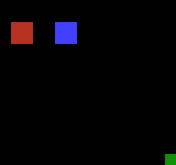
Comando de compilación
New-Item -ItemType Directory -Force .\out | Out-Null
.\kitaqfc\kitaqfc.exe .\kitaqfc\lib\runtime.c .\kitaq-docs\samples\api-examples\fc\batch3_attributes.c -I .\kitaqfc\lib -I .\kitaq-docs\samples -o .\out\batch3_attributes.nes --no-cache --no-disasm --mapper=nrom --nes-chr=.\kitaq-docs\samples\api-examples\fc\vram_shapes.chrImplementación y código fuente
kitaqfc/lib/attribute.h:15
Queue the attribute bytes covering a tile rectangle within 32x30 tiles. Empty rectangles succeed; invalid bounds fail without queuing. Capacity failure may leave earlier rows queued.
kitaqfc/lib/attribute.c:81
unsigned char nes_attr_queue_rect(unsigned short nt_base, unsigned char tile_x, unsigned char tile_y, unsigned char width, unsigned char height)
{
unsigned char qx0;
unsigned char qy0;
unsigned char qx1;
unsigned char qy1;
unsigned char row;
unsigned char col;
// The runtime queue copies these local bytes before return; they are not retained pointers.
// Caller coordinates must keep each computed row length within eight bytes.
unsigned char line[8];
unsigned short ppu_addr;
unsigned char len;
if (width == 0 || height == 0) return 1;
if (tile_x >= 32 || tile_y >= 30) return 0;
if (width > (unsigned char)(32 - tile_x) || height > (unsigned char)(30 - tile_y)) return 0;
qx0 = (unsigned char)(tile_x >> 2);
qy0 = (unsigned char)(tile_y >> 2);
qx1 = (unsigned char)((tile_x + width - 1) >> 2);
qy1 = (unsigned char)((tile_y + height - 1) >> 2);
row = qy0;
while (1)
{
len = (unsigned char)(qx1 - qx0 + 1);
col = 0;
while (col != len)
{
line[col] = nes_attr_shadow[(unsigned char)(row * 8 + qx0 + col)];
col = (unsigned char)(col + 1);
}
ppu_addr = (unsigned short)(nes_attr_base_from_nt(nt_base) + (unsigned short)(row * 8 + qx0));
if (nes_vram_queue_try_write(ppu_addr, line, len) == 0)
{
return 0;
}
if (row == qy1)
{
break;
}
row = (unsigned char)(row + 1);
}
return 1;
}nes_attr_shadow_build_from_palette_map
Copia 64 bytes de atributos ya empaquetados en la copia compartida.
Sintaxis
void nes_attr_shadow_build_from_palette_map(unsigned char* src64);Parámetros
src64Tabla de atributos empaquetada de 64 bytes legibles, no un array de ID de paleta por tile.
Valor devuelto
No devuelve ningún valor.
Condiciones y límites
La copia de atributos compartida de 64 bytes ocupa la RAM de CPU $03E0..$041F; reserva ese rango. Un byte de atributos cubre 4×4 tiles; cada campo de dos bits elige una paleta para un cuadrante de 2×2 tiles.
Ejemplo de uso
for(i=0;i<64;i++)table[i]=0;table[0]=0xE4;nes_attr_shadow_build_from_palette_map(table);result[0]=nes_attr_shadow[0];Este fragmento muestra la llamada. Antes de incorporarlo a un programa completo, cumple los requisitos de inicialización y de los búferes indicados.
Resultado esperado
Aprende transferencias rectangulares de atributos: rojo de 32×32 en (16,32), azul de 32×32 en (80,32) y verde de 16×16 abajo a la derecha en (240,224). El ejemplo conserva los cuadrantes vecinos y alcanza correctamente el último byte de atributos.
Comando de compilación
New-Item -ItemType Directory -Force .\out | Out-Null
.\kitaqfc\kitaqfc.exe .\kitaqfc\lib\runtime.c .\kitaq-docs\samples\api-examples\fc\batch3_attributes.c -I .\kitaqfc\lib -I .\kitaq-docs\samples -o .\out\batch3_attributes.nes --no-cache --no-disasm --mapper=nrom --nes-chr=.\kitaq-docs\samples\api-examples\fc\vram_shapes.chrImplementación y código fuente
kitaqfc/lib/attribute.h:8
KITAQFC phase15 attribute patch helpers. Copy 64 already-packed attribute bytes into shadow storage. This does not convert one palette ID per tile into NES attribute bitfields. The source must expose all 64 packed bytes and stay readable for the duration of this copy.
kitaqfc/lib/attribute.c:26
void nes_attr_shadow_build_from_palette_map(unsigned char* src64)
{
unsigned char i;
i = 0;
while (i != 64)
{
nes_attr_shadow[i] = (unsigned char)(src64[i] & 0xFF);
i = (unsigned char)(i + 1);
}
}nes_attr_shadow_fill_rect
Sustituye los campos de paleta de cada cuadrante de 2×2 tiles que toque un rectángulo.
Sintaxis
void nes_attr_shadow_fill_rect(unsigned char tile_x, unsigned char tile_y, unsigned char width, unsigned char height, unsigned char pal_index);Parámetros
tile_xColumna izquierda de tiles, rango visible de 0 a 31.
tile_yFila superior de tiles, rango visible de 0 a 29.
widthAncho en tiles.
heightAlto en tiles.
pal_indexÍndice de paleta; solo se usan los dos bits bajos.
Valor devuelto
No devuelve ningún valor.
Condiciones y límites
La copia de atributos compartida de 64 bytes ocupa la RAM de CPU $03E0..$041F; reserva ese rango. Un byte de atributos cubre 4×4 tiles; cada campo de dos bits elige una paleta para un cuadrante de 2×2 tiles.
Mantén todo el rectángulo dentro de 32×30 tiles. Los rectángulos vacíos o no válidos no cambian nada. Los límites impares se amplían hasta los límites del cuadrante, por lo que tiles vecinos fuera del rectángulo pueden compartir la nueva paleta.
Ejemplo de uso
nes_attr_shadow_fill_rect(2,4,4,4,1);nes_attr_shadow_fill_rect(10,4,4,4,2);nes_attr_shadow_fill_rect(30,28,2,2,3);result[1]=nes_attr_shadow[8];result[2]=nes_attr_shadow[9];result[3]=nes_attr_shadow[15];result[4]=nes_attr_shadow[63];Este fragmento muestra la llamada. Antes de incorporarlo a un programa completo, cumple los requisitos de inicialización y de los búferes indicados.
Resultado esperado
Aprende transferencias rectangulares de atributos: rojo de 32×32 en (16,32), azul de 32×32 en (80,32) y verde de 16×16 abajo a la derecha en (240,224). El ejemplo conserva los cuadrantes vecinos y alcanza correctamente el último byte de atributos.
Comando de compilación
New-Item -ItemType Directory -Force .\out | Out-Null
.\kitaqfc\kitaqfc.exe .\kitaqfc\lib\runtime.c .\kitaq-docs\samples\api-examples\fc\batch3_attributes.c -I .\kitaqfc\lib -I .\kitaq-docs\samples -o .\out\batch3_attributes.nes --no-cache --no-disasm --mapper=nrom --nes-chr=.\kitaq-docs\samples\api-examples\fc\vram_shapes.chrImplementación y código fuente
kitaqfc/lib/attribute.h:11
Apply a palette to every two-by-two tile quadrant touched by the rectangle. Empty or out-of-range rectangles leave the shadow unchanged.
kitaqfc/lib/attribute.c:39
void nes_attr_shadow_fill_rect(unsigned char tile_x, unsigned char tile_y, unsigned char width, unsigned char height, unsigned char pal_index)
{
unsigned char qx0;
unsigned char qy0;
unsigned char qx1;
unsigned char qy1;
unsigned char qx;
unsigned char qy;
if (width == 0 || height == 0) return;
if (tile_x >= 32 || tile_y >= 30) return;
if (width > (unsigned char)(32 - tile_x) || height > (unsigned char)(30 - tile_y)) return;
qx0 = nes_attr_rect_left(tile_x);
qy0 = nes_attr_rect_top(tile_y);
qx1 = nes_attr_rect_left((unsigned char)(tile_x + width - 1));
qy1 = nes_attr_rect_top((unsigned char)(tile_y + height - 1));
qy = qy0;
while (1)
{
qx = qx0;
while (1)
{
nes_attr_shadow_set_quad((unsigned char)(qx << 1), (unsigned char)(qy << 1), pal_index);
if (qx == qx1)
{
break;
}
qx = (unsigned char)(qx + 1);
}
if (qy == qy1)
{
break;
}
qy = (unsigned char)(qy + 1);
}
}audio.h — Música, efectos de sonido y control de audio
Controla directamente los dos pulsos, triángulo, ruido y DMC de la APU estándar. No es un secuenciador musical ni un mezclador automático; el juego gestiona tiempos y uso de voces.
Esta función escribe una máscara APU_STATUS de un solo canal y deshabilita las demás voces; no es un mezclador multivoz. Para pulsos y triángulo, period es un valor de temporizador: cuanto menor, más agudo. Las alturas y duraciones del ejemplo se comprobaron con tiempos NTSC.
DMC lee ROM desde una dirección alineada a 64 bytes en $C000..$FFC0. La longitud es 16*n+1 bytes, entre 1 y 4081. Estas funciones no validan alineación ni rangos y no cambian bancos. El ejemplo sitúa datos originales en el banco fijo 0 con __aligned(64) y comprueba su ubicación en ejecución.
nes_apu_channel_enable
Sustituye el estado de activación de los cinco canales APU por la máscara indicada.
Sintaxis
void nes_apu_channel_enable(u8 mask);Parámetros
maskMáscara completa de activación APU_STATUS. Los bits 0..4 seleccionan pulse1, pulse2, triangle, noise y DMC; se descartan los superiores.
Valor devuelto
Sin valor de retorno. Modifica registros de sonido o el estado del controlador.
Ejemplo de uso
// NTSC: pulse A4 (~440 Hz), triangle A3 (~220 Hz), noise, then two short effects.
#include "fc_sound_example.h"
void main(void) {
sound_begin("APU CHANNELS AND BLIPS");
// Constant volume 12, length halt and 50% duty. Each helper replaces 4015.
nes_sfx_square1(0xBC,253,0);
sound_result[0]=(u8)(APU_STATUS&0x1F);
sound_wait(30);
nes_apu_channel_enable(0); sound_wait(15);
nes_sfx_square2(0x7C,253,0);
sound_result[1]=(u8)(APU_STATUS&0x1F);
sound_wait(30); nes_apu_silence_all(); sound_wait(15);
nes_sfx_triangle(0xFF,253,0);
sound_result[2]=(u8)(APU_STATUS&0x1F);
sound_wait(30); nes_apu_silence_all(); sound_wait(15);
nes_sfx_noise(0x3C,5,0);
sound_result[3]=(u8)(APU_STATUS&0x1F);
sound_wait(30); nes_apu_silence_all(); sound_wait(15);
nes_sfx_tick_blip(); sound_wait(30); nes_apu_silence_all(); sound_wait(15);
nes_sfx_move_blip(); sound_wait(30); nes_apu_silence_all(); sound_wait(15);
sound_end();
}Resultado esperado
Se oyen pulse1, pulse2, triangle, noise, tick y move. En NTSC, el temporizador 253 da pulsos de unos 440 Hz y triángulo de 220 Hz. Tick ronda 111 Hz; move, 174 Hz, y termina antes. El intervalo final es silencioso.
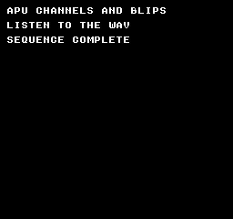
Comando de compilación
New-Item -ItemType Directory -Force .\out | Out-Null
.\kitaqfc\kitaqfc.exe .\kitaq-docs\samples\api-examples\fc\sound_channels.c -I .\kitaqfc\lib -I .\kitaq-docs\samples -o .\out\fc-channels.nes --mapper=nrom --nes-chr=.\kitaq-docs\samples\font.chr --no-cache --no-disasmImplementación y código fuente
kitaqfc/lib/audio.h:17
Replace all five channel-enable bits in APU_STATUS; this is not an additive enable.
kitaqfc/lib/audio.c:43
void nes_apu_channel_enable(u8 mask)
{
APU_STATUS = (u8)(mask & 0x1F);
}nes_apu_init
Deshabilita la IRQ de trama, activa cuatro voces y establece controles silenciosos. DMC sigue deshabilitado.
Sintaxis
void nes_apu_init(void);Valor devuelto
Sin valor de retorno. Modifica registros de sonido o el estado del controlador.
Ejemplo de uso
// NTSC: pulse A4 (~440 Hz), triangle A3 (~220 Hz), noise, then two short effects.
#include "fc_sound_example.h"
void main(void) {
sound_begin("APU CHANNELS AND BLIPS");
// Constant volume 12, length halt and 50% duty. Each helper replaces 4015.
nes_sfx_square1(0xBC,253,0);
sound_result[0]=(u8)(APU_STATUS&0x1F);
sound_wait(30);
nes_apu_channel_enable(0); sound_wait(15);
nes_sfx_square2(0x7C,253,0);
sound_result[1]=(u8)(APU_STATUS&0x1F);
sound_wait(30); nes_apu_silence_all(); sound_wait(15);
nes_sfx_triangle(0xFF,253,0);
sound_result[2]=(u8)(APU_STATUS&0x1F);
sound_wait(30); nes_apu_silence_all(); sound_wait(15);
nes_sfx_noise(0x3C,5,0);
sound_result[3]=(u8)(APU_STATUS&0x1F);
sound_wait(30); nes_apu_silence_all(); sound_wait(15);
nes_sfx_tick_blip(); sound_wait(30); nes_apu_silence_all(); sound_wait(15);
nes_sfx_move_blip(); sound_wait(30); nes_apu_silence_all(); sound_wait(15);
sound_end();
}Resultado esperado
Se oyen pulse1, pulse2, triangle, noise, tick y move. En NTSC, el temporizador 253 da pulsos de unos 440 Hz y triángulo de 220 Hz. Tick ronda 111 Hz; move, 174 Hz, y termina antes. El intervalo final es silencioso.
Comando de compilación
New-Item -ItemType Directory -Force .\out | Out-Null
.\kitaqfc\kitaqfc.exe .\kitaq-docs\samples\api-examples\fc\sound_channels.c -I .\kitaqfc\lib -I .\kitaq-docs\samples -o .\out\fc-channels.nes --mapper=nrom --nes-chr=.\kitaq-docs\samples\font.chr --no-cache --no-disasmImplementación y código fuente
kitaqfc/lib/audio.h:15
Disable frame IRQs, enable the four tonal/noise channels and install quiet control defaults. DMC remains disabled.
kitaqfc/lib/audio.c:28
void nes_apu_init(void)
{
APU_FRAME = 0x40;
APU_STATUS = 0x0F;
SQ1_VOL = 0x10;
SQ1_SWEEP = 0x08;
SQ2_VOL = 0x10;
SQ2_SWEEP = 0x08;
TRI_LINEAR = 0x80;
NOISE_VOL = 0x10;
DMC_FREQ = 0x00;
DMC_RAW = 0x00;
}nes_apu_silence_all
Deshabilita todos los canales y borra el volumen de pulsos/ruido y la salida DMC.
Sintaxis
void nes_apu_silence_all(void);Valor devuelto
Sin valor de retorno. Modifica registros de sonido o el estado del controlador.
Ejemplo de uso
// NTSC: pulse A4 (~440 Hz), triangle A3 (~220 Hz), noise, then two short effects.
#include "fc_sound_example.h"
void main(void) {
sound_begin("APU CHANNELS AND BLIPS");
// Constant volume 12, length halt and 50% duty. Each helper replaces 4015.
nes_sfx_square1(0xBC,253,0);
sound_result[0]=(u8)(APU_STATUS&0x1F);
sound_wait(30);
nes_apu_channel_enable(0); sound_wait(15);
nes_sfx_square2(0x7C,253,0);
sound_result[1]=(u8)(APU_STATUS&0x1F);
sound_wait(30); nes_apu_silence_all(); sound_wait(15);
nes_sfx_triangle(0xFF,253,0);
sound_result[2]=(u8)(APU_STATUS&0x1F);
sound_wait(30); nes_apu_silence_all(); sound_wait(15);
nes_sfx_noise(0x3C,5,0);
sound_result[3]=(u8)(APU_STATUS&0x1F);
sound_wait(30); nes_apu_silence_all(); sound_wait(15);
nes_sfx_tick_blip(); sound_wait(30); nes_apu_silence_all(); sound_wait(15);
nes_sfx_move_blip(); sound_wait(30); nes_apu_silence_all(); sound_wait(15);
sound_end();
}Resultado esperado
Se oyen pulse1, pulse2, triangle, noise, tick y move. En NTSC, el temporizador 253 da pulsos de unos 440 Hz y triángulo de 220 Hz. Tick ronda 111 Hz; move, 174 Hz, y termina antes. El intervalo final es silencioso.
Comando de compilación
New-Item -ItemType Directory -Force .\out | Out-Null
.\kitaqfc\kitaqfc.exe .\kitaq-docs\samples\api-examples\fc\sound_channels.c -I .\kitaqfc\lib -I .\kitaq-docs\samples -o .\out\fc-channels.nes --mapper=nrom --nes-chr=.\kitaq-docs\samples\font.chr --no-cache --no-disasmImplementación y código fuente
kitaqfc/lib/audio.h:19
Disable every channel and clear volume/DMC output settings used by this helper.
kitaqfc/lib/audio.c:49
void nes_apu_silence_all(void)
{
APU_STATUS = 0x00;
SQ1_VOL = 0x10;
SQ2_VOL = 0x10;
TRI_LINEAR = 0x80;
NOISE_VOL = 0x10;
DMC_FREQ = 0x00;
DMC_RAW = 0x00;
}nes_dmc_config
Configura control/salida DMC y convierte dirección y longitud de la muestra a unidades de registro.
Sintaxis
void nes_dmc_config(u8 flags_rate, u8 output_level, u16 sample_addr, u16 sample_len);Parámetros
flags_rateDMC: bit 7 IRQ, bit 6 repetición y nibble bajo índice de velocidad. El ejemplo no habilita IRQ.
output_levelContador inicial de salida DMC, de 0 a 127; solo se escriben los siete bits bajos.
sample_addrDirección CPU de datos DMC, alineada a 64 bytes en $C000..$FFC0.
sample_lenLongitud de 16*n+1 bytes, entre 1 y 4081. No pases cero ni una longitud no representable.
Valor devuelto
Sin valor de retorno. Modifica registros de sonido o el estado del controlador.
Condiciones y límites
DMC lee ROM desde una dirección alineada a 64 bytes en $C000..$FFC0. La longitud es 16*n+1 bytes, entre 1 y 4081. Estas funciones no validan alineación ni rangos y no cambian bancos. El ejemplo sitúa datos originales en el banco fijo 0 con __aligned(64) y comprueba su ubicación en ejecución.
Ejemplo de uso
// A 17-byte original delta pattern, aligned to a 64-byte DMC start boundary.
#include "fc_sound_example.h"
#pragma bank 0
__aligned(64) __prg_rom u8 delta[17]={0xFF,0xFF,0,0,0xFF,0xFF,0,0,0xFF,0xFF,0,0,0xFF,0xFF,0,0,0xAA};
void main(void) {
sound_begin("DMC ORIGINAL DELTAS");
sound_result[0]=(u8)(((u16)delta&63)==0);
sound_result[1]=(u8)((u16)delta>=0xC000);
// Loop at NTSC rate index 10; start the output accumulator at its midpoint.
nes_dmc_config(0x4A,64,(u16)delta,17);
nes_dmc_start();
sound_wait(60);
nes_dmc_stop(); sound_wait(30);
nes_dmc_play(0x4C,64,(u16)delta,17);
sound_wait(60);
nes_dmc_stop(); sound_wait(30);
sound_end();
}Resultado esperado
Un patrón delta original se reproduce a velocidad 10, pausa y vuelve a reproducirse más rápido a 12. Detener DMC conserva su contador de salida, por lo que el intervalo puede contener un transitorio. La operación final silencia toda la APU.
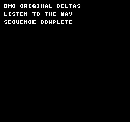
Comando de compilación
New-Item -ItemType Directory -Force .\out | Out-Null
.\kitaqfc\kitaqfc.exe .\kitaq-docs\samples\api-examples\fc\sound_dmc.c -I .\kitaqfc\lib -I .\kitaq-docs\samples -o .\out\fc-dmc.nes --mapper=nrom --nes-chr=.\kitaq-docs\samples\font.chr --no-cache --no-disasmImplementación y código fuente
kitaqfc/lib/audio.h:38
Convert a CPU sample address and byte length to DMC register units. Supply an address in 0xC000-0xFFC0 aligned to 64 bytes and a representable length 16*n+1 in 1..4081; inputs are narrowed without validation or bank management.
kitaqfc/lib/audio.c:115
void nes_dmc_config(u8 flags_rate, u8 output_level, u16 sample_addr, u16 sample_len)
{
DMC_FREQ = flags_rate;
DMC_RAW = (u8)(output_level & 0x7F);
// Keep the sample bytes mapped at these CPU addresses during playback; this does not select a ROM bank.
DMC_START = (u8)((sample_addr - 0xC000) >> 6);
DMC_LEN = (u8)((sample_len - 1) >> 4);
}nes_dmc_play
Configura la muestra DMC e inicia la reproducción inmediatamente.
Sintaxis
void nes_dmc_play(u8 flags_rate, u8 output_level, u16 sample_addr, u16 sample_len);Parámetros
flags_rateDMC: bit 7 IRQ, bit 6 repetición y nibble bajo índice de velocidad. El ejemplo no habilita IRQ.
output_levelContador inicial de salida DMC, de 0 a 127; solo se escriben los siete bits bajos.
sample_addrDirección CPU de datos DMC, alineada a 64 bytes en $C000..$FFC0.
sample_lenLongitud de 16*n+1 bytes, entre 1 y 4081. No pases cero ni una longitud no representable.
Valor devuelto
Sin valor de retorno. Modifica registros de sonido o el estado del controlador.
Condiciones y límites
DMC lee ROM desde una dirección alineada a 64 bytes en $C000..$FFC0. La longitud es 16*n+1 bytes, entre 1 y 4081. Estas funciones no validan alineación ni rangos y no cambian bancos. El ejemplo sitúa datos originales en el banco fijo 0 con __aligned(64) y comprueba su ubicación en ejecución.
Ejemplo de uso
// A 17-byte original delta pattern, aligned to a 64-byte DMC start boundary.
#include "fc_sound_example.h"
#pragma bank 0
__aligned(64) __prg_rom u8 delta[17]={0xFF,0xFF,0,0,0xFF,0xFF,0,0,0xFF,0xFF,0,0,0xFF,0xFF,0,0,0xAA};
void main(void) {
sound_begin("DMC ORIGINAL DELTAS");
sound_result[0]=(u8)(((u16)delta&63)==0);
sound_result[1]=(u8)((u16)delta>=0xC000);
// Loop at NTSC rate index 10; start the output accumulator at its midpoint.
nes_dmc_config(0x4A,64,(u16)delta,17);
nes_dmc_start();
sound_wait(60);
nes_dmc_stop(); sound_wait(30);
nes_dmc_play(0x4C,64,(u16)delta,17);
sound_wait(60);
nes_dmc_stop(); sound_wait(30);
sound_end();
}Resultado esperado
Un patrón delta original se reproduce a velocidad 10, pausa y vuelve a reproducirse más rápido a 12. Detener DMC conserva su contador de salida, por lo que el intervalo puede contener un transitorio. La operación final silencia toda la APU.
Comando de compilación
New-Item -ItemType Directory -Force .\out | Out-Null
.\kitaqfc\kitaqfc.exe .\kitaq-docs\samples\api-examples\fc\sound_dmc.c -I .\kitaqfc\lib -I .\kitaq-docs\samples -o .\out\fc-dmc.nes --mapper=nrom --nes-chr=.\kitaq-docs\samples\font.chr --no-cache --no-disasmImplementación y código fuente
kitaqfc/lib/audio.h:44
Install sample parameters, then start DMC using the full-channel enable mask.
kitaqfc/lib/audio.c:137
void nes_dmc_play(u8 flags_rate, u8 output_level, u16 sample_addr, u16 sample_len)
{
nes_dmc_config(flags_rate, output_level, sample_addr, sample_len);
nes_dmc_start();
}nes_dmc_start
Escribe APU_STATUS=0x1F para habilitar DMC y las otras cuatro voces.
Sintaxis
void nes_dmc_start(void);Valor devuelto
Sin valor de retorno. Modifica registros de sonido o el estado del controlador.
Condiciones y límites
DMC lee ROM desde una dirección alineada a 64 bytes en $C000..$FFC0. La longitud es 16*n+1 bytes, entre 1 y 4081. Estas funciones no validan alineación ni rangos y no cambian bancos. El ejemplo sitúa datos originales en el banco fijo 0 con __aligned(64) y comprueba su ubicación en ejecución.
Ejemplo de uso
// A 17-byte original delta pattern, aligned to a 64-byte DMC start boundary.
#include "fc_sound_example.h"
#pragma bank 0
__aligned(64) __prg_rom u8 delta[17]={0xFF,0xFF,0,0,0xFF,0xFF,0,0,0xFF,0xFF,0,0,0xFF,0xFF,0,0,0xAA};
void main(void) {
sound_begin("DMC ORIGINAL DELTAS");
sound_result[0]=(u8)(((u16)delta&63)==0);
sound_result[1]=(u8)((u16)delta>=0xC000);
// Loop at NTSC rate index 10; start the output accumulator at its midpoint.
nes_dmc_config(0x4A,64,(u16)delta,17);
nes_dmc_start();
sound_wait(60);
nes_dmc_stop(); sound_wait(30);
nes_dmc_play(0x4C,64,(u16)delta,17);
sound_wait(60);
nes_dmc_stop(); sound_wait(30);
sound_end();
}Resultado esperado
Un patrón delta original se reproduce a velocidad 10, pausa y vuelve a reproducirse más rápido a 12. Detener DMC conserva su contador de salida, por lo que el intervalo puede contener un transitorio. La operación final silencia toda la APU.
Comando de compilación
New-Item -ItemType Directory -Force .\out | Out-Null
.\kitaqfc\kitaqfc.exe .\kitaq-docs\samples\api-examples\fc\sound_dmc.c -I .\kitaqfc\lib -I .\kitaq-docs\samples -o .\out\fc-dmc.nes --mapper=nrom --nes-chr=.\kitaq-docs\samples\font.chr --no-cache --no-disasmImplementación y código fuente
kitaqfc/lib/audio.h:40
Enable DMC together with all four other channels by replacing the status mask.
kitaqfc/lib/audio.c:125
void nes_dmc_start(void)
{
APU_STATUS = 0x1F;
}nes_dmc_stop
Escribe APU_STATUS=0x0F para detener DMC y activar los bits de las otras cuatro voces.
Sintaxis
void nes_dmc_stop(void);Valor devuelto
Sin valor de retorno. Modifica registros de sonido o el estado del controlador.
Condiciones y límites
DMC lee ROM desde una dirección alineada a 64 bytes en $C000..$FFC0. La longitud es 16*n+1 bytes, entre 1 y 4081. Estas funciones no validan alineación ni rangos y no cambian bancos. El ejemplo sitúa datos originales en el banco fijo 0 con __aligned(64) y comprueba su ubicación en ejecución.
Ejemplo de uso
// A 17-byte original delta pattern, aligned to a 64-byte DMC start boundary.
#include "fc_sound_example.h"
#pragma bank 0
__aligned(64) __prg_rom u8 delta[17]={0xFF,0xFF,0,0,0xFF,0xFF,0,0,0xFF,0xFF,0,0,0xFF,0xFF,0,0,0xAA};
void main(void) {
sound_begin("DMC ORIGINAL DELTAS");
sound_result[0]=(u8)(((u16)delta&63)==0);
sound_result[1]=(u8)((u16)delta>=0xC000);
// Loop at NTSC rate index 10; start the output accumulator at its midpoint.
nes_dmc_config(0x4A,64,(u16)delta,17);
nes_dmc_start();
sound_wait(60);
nes_dmc_stop(); sound_wait(30);
nes_dmc_play(0x4C,64,(u16)delta,17);
sound_wait(60);
nes_dmc_stop(); sound_wait(30);
sound_end();
}Resultado esperado
Un patrón delta original se reproduce a velocidad 10, pausa y vuelve a reproducirse más rápido a 12. Detener DMC conserva su contador de salida, por lo que el intervalo puede contener un transitorio. La operación final silencia toda la APU.
Comando de compilación
New-Item -ItemType Directory -Force .\out | Out-Null
.\kitaqfc\kitaqfc.exe .\kitaq-docs\samples\api-examples\fc\sound_dmc.c -I .\kitaqfc\lib -I .\kitaq-docs\samples -o .\out\fc-dmc.nes --mapper=nrom --nes-chr=.\kitaq-docs\samples\font.chr --no-cache --no-disasmImplementación y código fuente
kitaqfc/lib/audio.h:42
Disable DMC while leaving all four other channel-enable bits set.
kitaqfc/lib/audio.c:131
void nes_dmc_stop(void)
{
APU_STATUS = 0x0F;
}nes_sfx_move_blip
Dispara pulso 1 con control 0x5A, temporizador 0x0280 e índice de longitud 2 para un sonido de movimiento más agudo y corto.
Sintaxis
void nes_sfx_move_blip(void);Valor devuelto
Sin valor de retorno. Modifica registros de sonido o el estado del controlador.
Condiciones y límites
Esta función escribe una máscara APU_STATUS de un solo canal y deshabilita las demás voces; no es un mezclador multivoz. Para pulsos y triángulo, period es un valor de temporizador: cuanto menor, más agudo. Las alturas y duraciones del ejemplo se comprobaron con tiempos NTSC.
Ejemplo de uso
// NTSC: pulse A4 (~440 Hz), triangle A3 (~220 Hz), noise, then two short effects.
#include "fc_sound_example.h"
void main(void) {
sound_begin("APU CHANNELS AND BLIPS");
// Constant volume 12, length halt and 50% duty. Each helper replaces 4015.
nes_sfx_square1(0xBC,253,0);
sound_result[0]=(u8)(APU_STATUS&0x1F);
sound_wait(30);
nes_apu_channel_enable(0); sound_wait(15);
nes_sfx_square2(0x7C,253,0);
sound_result[1]=(u8)(APU_STATUS&0x1F);
sound_wait(30); nes_apu_silence_all(); sound_wait(15);
nes_sfx_triangle(0xFF,253,0);
sound_result[2]=(u8)(APU_STATUS&0x1F);
sound_wait(30); nes_apu_silence_all(); sound_wait(15);
nes_sfx_noise(0x3C,5,0);
sound_result[3]=(u8)(APU_STATUS&0x1F);
sound_wait(30); nes_apu_silence_all(); sound_wait(15);
nes_sfx_tick_blip(); sound_wait(30); nes_apu_silence_all(); sound_wait(15);
nes_sfx_move_blip(); sound_wait(30); nes_apu_silence_all(); sound_wait(15);
sound_end();
}Resultado esperado
Se oyen pulse1, pulse2, triangle, noise, tick y move. En NTSC, el temporizador 253 da pulsos de unos 440 Hz y triángulo de 220 Hz. Tick ronda 111 Hz; move, 174 Hz, y termina antes. El intervalo final es silencioso.
Comando de compilación
New-Item -ItemType Directory -Force .\out | Out-Null
.\kitaqfc\kitaqfc.exe .\kitaq-docs\samples\api-examples\fc\sound_channels.c -I .\kitaqfc\lib -I .\kitaq-docs\samples -o .\out\fc-channels.nes --mapper=nrom --nes-chr=.\kitaq-docs\samples\font.chr --no-cache --no-disasmImplementación y código fuente
kitaqfc/lib/audio.h:33
Trigger the predefined pulse-1 movement effect.
kitaqfc/lib/audio.c:107
void nes_sfx_move_blip(void)
{
nes_sfx_square1(0x5A, 0x0280, 2);
}nes_sfx_noise
Activa solo ruido y escribe envolvente, período/modo e índice de longitud.
Sintaxis
void nes_sfx_noise(u8 volume, u8 period_mode, u8 length_index);Parámetros
volumeControl de ruido bruto: bit 5 parada del contador de longitud, bit 4 volumen constante y nibble bajo volumen o período de envolvente.
period_modeRegistro de ruido: bit 7 para modo corto y nibble bajo para índice de tabla de períodos.
length_indexÍndice de tabla de longitud de 0 a 31, no cantidad de fotogramas. Solo los cinco bits bajos llegan al registro.
Valor devuelto
Sin valor de retorno. Modifica registros de sonido o el estado del controlador.
Condiciones y límites
Esta función escribe una máscara APU_STATUS de un solo canal y deshabilita las demás voces; no es un mezclador multivoz. Para pulsos y triángulo, period es un valor de temporizador: cuanto menor, más agudo. Las alturas y duraciones del ejemplo se comprobaron con tiempos NTSC.
Ejemplo de uso
// NTSC: pulse A4 (~440 Hz), triangle A3 (~220 Hz), noise, then two short effects.
#include "fc_sound_example.h"
void main(void) {
sound_begin("APU CHANNELS AND BLIPS");
// Constant volume 12, length halt and 50% duty. Each helper replaces 4015.
nes_sfx_square1(0xBC,253,0);
sound_result[0]=(u8)(APU_STATUS&0x1F);
sound_wait(30);
nes_apu_channel_enable(0); sound_wait(15);
nes_sfx_square2(0x7C,253,0);
sound_result[1]=(u8)(APU_STATUS&0x1F);
sound_wait(30); nes_apu_silence_all(); sound_wait(15);
nes_sfx_triangle(0xFF,253,0);
sound_result[2]=(u8)(APU_STATUS&0x1F);
sound_wait(30); nes_apu_silence_all(); sound_wait(15);
nes_sfx_noise(0x3C,5,0);
sound_result[3]=(u8)(APU_STATUS&0x1F);
sound_wait(30); nes_apu_silence_all(); sound_wait(15);
nes_sfx_tick_blip(); sound_wait(30); nes_apu_silence_all(); sound_wait(15);
nes_sfx_move_blip(); sound_wait(30); nes_apu_silence_all(); sound_wait(15);
sound_end();
}Resultado esperado
Se oyen pulse1, pulse2, triangle, noise, tick y move. En NTSC, el temporizador 253 da pulsos de unos 440 Hz y triángulo de 220 Hz. Tick ronda 111 Hz; move, 174 Hz, y termina antes. El intervalo final es silencioso.
Comando de compilación
New-Item -ItemType Directory -Force .\out | Out-Null
.\kitaqfc\kitaqfc.exe .\kitaq-docs\samples\api-examples\fc\sound_channels.c -I .\kitaqfc\lib -I .\kitaq-docs\samples -o .\out\fc-channels.nes --mapper=nrom --nes-chr=.\kitaq-docs\samples\font.chr --no-cache --no-disasmImplementación y código fuente
kitaqfc/lib/audio.h:29
Enable only noise and load envelope/control, period/mode and length fields.
kitaqfc/lib/audio.c:92
void nes_sfx_noise(u8 volume, u8 period_mode, u8 length_index)
{
APU_STATUS = 0x08;
NOISE_VOL = volume;
NOISE_LO = period_mode;
NOISE_HI = (u8)(length_index << 3);
}nes_sfx_square1
Activa solo pulso 1, deshabilita el barrido y escribe control, temporizador e índice de longitud.
Sintaxis
void nes_sfx_square1(u8 duty_volume, u16 period, u8 length_index);Parámetros
duty_volumeControl de pulsos bruto: bits 7..6 para ciclo de trabajo, bit 5 para detener el contador de longitud, bit 4 para volumen constante y nibble bajo para volumen o período de envolvente.
periodTemporizador de 11 bits, de 0 a 2047. La frecuencia de pulsos es reloj CPU/[16*(period+1)]; la triangular, reloj CPU/[32*(period+1)].
length_indexÍndice de tabla de longitud de 0 a 31, no cantidad de fotogramas. Solo los cinco bits bajos llegan al registro.
Valor devuelto
Sin valor de retorno. Modifica registros de sonido o el estado del controlador.
Condiciones y límites
Esta función escribe una máscara APU_STATUS de un solo canal y deshabilita las demás voces; no es un mezclador multivoz. Para pulsos y triángulo, period es un valor de temporizador: cuanto menor, más agudo. Las alturas y duraciones del ejemplo se comprobaron con tiempos NTSC.
Ejemplo de uso
// NTSC: pulse A4 (~440 Hz), triangle A3 (~220 Hz), noise, then two short effects.
#include "fc_sound_example.h"
void main(void) {
sound_begin("APU CHANNELS AND BLIPS");
// Constant volume 12, length halt and 50% duty. Each helper replaces 4015.
nes_sfx_square1(0xBC,253,0);
sound_result[0]=(u8)(APU_STATUS&0x1F);
sound_wait(30);
nes_apu_channel_enable(0); sound_wait(15);
nes_sfx_square2(0x7C,253,0);
sound_result[1]=(u8)(APU_STATUS&0x1F);
sound_wait(30); nes_apu_silence_all(); sound_wait(15);
nes_sfx_triangle(0xFF,253,0);
sound_result[2]=(u8)(APU_STATUS&0x1F);
sound_wait(30); nes_apu_silence_all(); sound_wait(15);
nes_sfx_noise(0x3C,5,0);
sound_result[3]=(u8)(APU_STATUS&0x1F);
sound_wait(30); nes_apu_silence_all(); sound_wait(15);
nes_sfx_tick_blip(); sound_wait(30); nes_apu_silence_all(); sound_wait(15);
nes_sfx_move_blip(); sound_wait(30); nes_apu_silence_all(); sound_wait(15);
sound_end();
}Resultado esperado
Se oyen pulse1, pulse2, triangle, noise, tick y move. En NTSC, el temporizador 253 da pulsos de unos 440 Hz y triángulo de 220 Hz. Tick ronda 111 Hz; move, 174 Hz, y termina antes. El intervalo final es silencioso.
Comando de compilación
New-Item -ItemType Directory -Force .\out | Out-Null
.\kitaqfc\kitaqfc.exe .\kitaq-docs\samples\api-examples\fc\sound_channels.c -I .\kitaqfc\lib -I .\kitaq-docs\samples -o .\out\fc-channels.nes --mapper=nrom --nes-chr=.\kitaq-docs\samples\font.chr --no-cache --no-disasmImplementación y código fuente
kitaqfc/lib/audio.h:23
Enable only pulse 1, disable its sweep and load control, 11-bit timer and length-table index. Starting this effect disables the other APU channels.
kitaqfc/lib/audio.c:62
void nes_sfx_square1(u8 duty_volume, u16 period, u8 length_index)
{
APU_STATUS = 0x01;
SQ1_SWEEP = 0x08;
SQ1_VOL = duty_volume;
SQ1_LO = (u8)period;
// Only the low five length-index bits and low eleven timer bits reach the registers.
SQ1_HI = (u8)((u8)(length_index << 3) | (u8)((period >> 8) & 0x07));
}nes_sfx_square2
Activa solo pulso 2, deshabilita el barrido y escribe control, temporizador e índice de longitud.
Sintaxis
void nes_sfx_square2(u8 duty_volume, u16 period, u8 length_index);Parámetros
duty_volumeControl de pulsos bruto: bits 7..6 para ciclo de trabajo, bit 5 para detener el contador de longitud, bit 4 para volumen constante y nibble bajo para volumen o período de envolvente.
periodTemporizador de 11 bits, de 0 a 2047. La frecuencia de pulsos es reloj CPU/[16*(period+1)]; la triangular, reloj CPU/[32*(period+1)].
length_indexÍndice de tabla de longitud de 0 a 31, no cantidad de fotogramas. Solo los cinco bits bajos llegan al registro.
Valor devuelto
Sin valor de retorno. Modifica registros de sonido o el estado del controlador.
Condiciones y límites
Esta función escribe una máscara APU_STATUS de un solo canal y deshabilita las demás voces; no es un mezclador multivoz. Para pulsos y triángulo, period es un valor de temporizador: cuanto menor, más agudo. Las alturas y duraciones del ejemplo se comprobaron con tiempos NTSC.
Ejemplo de uso
// NTSC: pulse A4 (~440 Hz), triangle A3 (~220 Hz), noise, then two short effects.
#include "fc_sound_example.h"
void main(void) {
sound_begin("APU CHANNELS AND BLIPS");
// Constant volume 12, length halt and 50% duty. Each helper replaces 4015.
nes_sfx_square1(0xBC,253,0);
sound_result[0]=(u8)(APU_STATUS&0x1F);
sound_wait(30);
nes_apu_channel_enable(0); sound_wait(15);
nes_sfx_square2(0x7C,253,0);
sound_result[1]=(u8)(APU_STATUS&0x1F);
sound_wait(30); nes_apu_silence_all(); sound_wait(15);
nes_sfx_triangle(0xFF,253,0);
sound_result[2]=(u8)(APU_STATUS&0x1F);
sound_wait(30); nes_apu_silence_all(); sound_wait(15);
nes_sfx_noise(0x3C,5,0);
sound_result[3]=(u8)(APU_STATUS&0x1F);
sound_wait(30); nes_apu_silence_all(); sound_wait(15);
nes_sfx_tick_blip(); sound_wait(30); nes_apu_silence_all(); sound_wait(15);
nes_sfx_move_blip(); sound_wait(30); nes_apu_silence_all(); sound_wait(15);
sound_end();
}Resultado esperado
Se oyen pulse1, pulse2, triangle, noise, tick y move. En NTSC, el temporizador 253 da pulsos de unos 440 Hz y triángulo de 220 Hz. Tick ronda 111 Hz; move, 174 Hz, y termina antes. El intervalo final es silencioso.
Comando de compilación
New-Item -ItemType Directory -Force .\out | Out-Null
.\kitaqfc\kitaqfc.exe .\kitaq-docs\samples\api-examples\fc\sound_channels.c -I .\kitaqfc\lib -I .\kitaq-docs\samples -o .\out\fc-channels.nes --mapper=nrom --nes-chr=.\kitaq-docs\samples\font.chr --no-cache --no-disasmImplementación y código fuente
kitaqfc/lib/audio.h:25
Enable only pulse 2 and load its control/timer/length fields, disabling other channels.
kitaqfc/lib/audio.c:73
void nes_sfx_square2(u8 duty_volume, u16 period, u8 length_index)
{
APU_STATUS = 0x02;
SQ2_SWEEP = 0x08;
SQ2_VOL = duty_volume;
SQ2_LO = (u8)period;
SQ2_HI = (u8)((u8)(length_index << 3) | (u8)((period >> 8) & 0x07));
}nes_sfx_tick_blip
Dispara pulso 1 con control 0x9A, temporizador 0x03F0 e índice de longitud 4 para un toque corto y grave.
Sintaxis
void nes_sfx_tick_blip(void);Valor devuelto
Sin valor de retorno. Modifica registros de sonido o el estado del controlador.
Condiciones y límites
Esta función escribe una máscara APU_STATUS de un solo canal y deshabilita las demás voces; no es un mezclador multivoz. Para pulsos y triángulo, period es un valor de temporizador: cuanto menor, más agudo. Las alturas y duraciones del ejemplo se comprobaron con tiempos NTSC.
Ejemplo de uso
// NTSC: pulse A4 (~440 Hz), triangle A3 (~220 Hz), noise, then two short effects.
#include "fc_sound_example.h"
void main(void) {
sound_begin("APU CHANNELS AND BLIPS");
// Constant volume 12, length halt and 50% duty. Each helper replaces 4015.
nes_sfx_square1(0xBC,253,0);
sound_result[0]=(u8)(APU_STATUS&0x1F);
sound_wait(30);
nes_apu_channel_enable(0); sound_wait(15);
nes_sfx_square2(0x7C,253,0);
sound_result[1]=(u8)(APU_STATUS&0x1F);
sound_wait(30); nes_apu_silence_all(); sound_wait(15);
nes_sfx_triangle(0xFF,253,0);
sound_result[2]=(u8)(APU_STATUS&0x1F);
sound_wait(30); nes_apu_silence_all(); sound_wait(15);
nes_sfx_noise(0x3C,5,0);
sound_result[3]=(u8)(APU_STATUS&0x1F);
sound_wait(30); nes_apu_silence_all(); sound_wait(15);
nes_sfx_tick_blip(); sound_wait(30); nes_apu_silence_all(); sound_wait(15);
nes_sfx_move_blip(); sound_wait(30); nes_apu_silence_all(); sound_wait(15);
sound_end();
}Resultado esperado
Se oyen pulse1, pulse2, triangle, noise, tick y move. En NTSC, el temporizador 253 da pulsos de unos 440 Hz y triángulo de 220 Hz. Tick ronda 111 Hz; move, 174 Hz, y termina antes. El intervalo final es silencioso.
Comando de compilación
New-Item -ItemType Directory -Force .\out | Out-Null
.\kitaqfc\kitaqfc.exe .\kitaq-docs\samples\api-examples\fc\sound_channels.c -I .\kitaqfc\lib -I .\kitaq-docs\samples -o .\out\fc-channels.nes --mapper=nrom --nes-chr=.\kitaq-docs\samples\font.chr --no-cache --no-disasmImplementación y código fuente
kitaqfc/lib/audio.h:31
Trigger the predefined pulse-1 tick effect; it inherits the exclusive-channel behavior.
kitaqfc/lib/audio.c:101
void nes_sfx_tick_blip(void)
{
nes_sfx_square1(0x9A, 0x03F0, 4);
}nes_sfx_triangle
Activa solo triángulo y escribe contador lineal, temporizador e índice de longitud.
Sintaxis
void nes_sfx_triangle(u8 linear, u16 period, u8 length_index);Parámetros
linearContador lineal del triángulo: bit 7 de control/parada de longitud y siete bits bajos de recarga.
periodTemporizador de 11 bits, de 0 a 2047. La frecuencia de pulsos es reloj CPU/[16*(period+1)]; la triangular, reloj CPU/[32*(period+1)].
length_indexÍndice de tabla de longitud de 0 a 31, no cantidad de fotogramas. Solo los cinco bits bajos llegan al registro.
Valor devuelto
Sin valor de retorno. Modifica registros de sonido o el estado del controlador.
Condiciones y límites
Esta función escribe una máscara APU_STATUS de un solo canal y deshabilita las demás voces; no es un mezclador multivoz. Para pulsos y triángulo, period es un valor de temporizador: cuanto menor, más agudo. Las alturas y duraciones del ejemplo se comprobaron con tiempos NTSC.
Ejemplo de uso
// NTSC: pulse A4 (~440 Hz), triangle A3 (~220 Hz), noise, then two short effects.
#include "fc_sound_example.h"
void main(void) {
sound_begin("APU CHANNELS AND BLIPS");
// Constant volume 12, length halt and 50% duty. Each helper replaces 4015.
nes_sfx_square1(0xBC,253,0);
sound_result[0]=(u8)(APU_STATUS&0x1F);
sound_wait(30);
nes_apu_channel_enable(0); sound_wait(15);
nes_sfx_square2(0x7C,253,0);
sound_result[1]=(u8)(APU_STATUS&0x1F);
sound_wait(30); nes_apu_silence_all(); sound_wait(15);
nes_sfx_triangle(0xFF,253,0);
sound_result[2]=(u8)(APU_STATUS&0x1F);
sound_wait(30); nes_apu_silence_all(); sound_wait(15);
nes_sfx_noise(0x3C,5,0);
sound_result[3]=(u8)(APU_STATUS&0x1F);
sound_wait(30); nes_apu_silence_all(); sound_wait(15);
nes_sfx_tick_blip(); sound_wait(30); nes_apu_silence_all(); sound_wait(15);
nes_sfx_move_blip(); sound_wait(30); nes_apu_silence_all(); sound_wait(15);
sound_end();
}Resultado esperado
Se oyen pulse1, pulse2, triangle, noise, tick y move. En NTSC, el temporizador 253 da pulsos de unos 440 Hz y triángulo de 220 Hz. Tick ronda 111 Hz; move, 174 Hz, y termina antes. El intervalo final es silencioso.
Comando de compilación
New-Item -ItemType Directory -Force .\out | Out-Null
.\kitaqfc\kitaqfc.exe .\kitaq-docs\samples\api-examples\fc\sound_channels.c -I .\kitaqfc\lib -I .\kitaq-docs\samples -o .\out\fc-channels.nes --mapper=nrom --nes-chr=.\kitaq-docs\samples\font.chr --no-cache --no-disasmImplementación y código fuente
kitaqfc/lib/audio.h:27
Enable only triangle and load linear-counter, timer and length fields.
kitaqfc/lib/audio.c:83
void nes_sfx_triangle(u8 linear, u16 period, u8 length_index)
{
APU_STATUS = 0x04;
TRI_LINEAR = linear;
TRI_LO = (u8)period;
TRI_HI = (u8)((u8)(length_index << 3) | (u8)((period >> 8) & 0x07));
}audio_vblank.h — Música de cuatro canales controlada por NMI
La música de cuatro canales avanza en la NMI. Inicializa, asocia una canción y llena la cola inicialmente; después habilita la NMI para reproducir y sigue rellenando desde el programa principal. La NMI lee una cola RAM, por lo que una pequeña cantidad de RAM basta para un flujo largo si se repone a tiempo. Cada canal dispone de órdenes HOLD/STOP independientes.
Cada registro contiene cinco bytes: delay, CH1, CH2, CH3, CH4. Un retardo de 1 a 255 indica cuántos ticks de NMI dura el nuevo estado. Cero finaliza la reproducción e ignora los otros cuatro bytes. Las notas de 0 a 71 corresponden a C2–B7 (24=C4). Los valores de ruido de 0 a 15 seleccionan un periodo en modo largo y los de 16 a 31, el modo corto. En cualquier canal, 255=NES_AUDIO_HOLD conserva su estado y 254=NES_AUDIO_STOP lo silencia.
Este controlador de cuatro canales está ajustado para NTSC: CH1=pulso 1, CH2=pulso 2, CH3=triángulo y CH4=ruido, con índices del 0 al 3. No reproduce DMC ni audio de expansión. No lo ejecutes junto con código que escriba directamente en la APU, como los efectos de audio.c. No incluye una tabla de tonos PAL ni corrección del tempo para PAL.
Si el retardo termina sin otro registro BGM, se detienen las notas BGM y la reproducción se reanuda en una NMI después de recibir datos. Un SFX independiente sigue sonando. Se cuentan las entradas en falta de datos, no cada fotograma con la cola vacía. Insertar solo valores HOLD no restaura las notas BGM anteriores. Normalmente debes rellenar la cola en cada fotograma y dejar suficiente tiempo de reproducción preparado antes de una tarea larga.
| Espera | CH1: pulso 1 | CH2: pulso 2 | CH3: triángulo | CH4: ruido |
|---|---|---|---|---|
| 24 | 24 (C4) | 12 (C3) | 0 (C2) | 2 |
Punto de llamada de NMI conectado por el compilador
nes_audio_vblank_init
Inicializa la APU y la cola, y reinicia la reproducción, el estado de alimentación y el contador de falta de datos.
Sintaxis
void nes_audio_vblank_init(void);Valor devuelto
No devuelve ningún valor.
Condiciones y límites
Incluye audio_vblank.h y añade audio_vblank.c a la compilación exactamente una vez. El compilador llama a su rutina de enlace una vez desde el manejador NMI, tanto si es el predeterminado como si es uno propio. Habilita la NMI del PPU. El bucle principal no llama a ninguna rutina de actualización musical.
Este controlador de cuatro canales está ajustado para NTSC: CH1=pulso 1, CH2=pulso 2, CH3=triángulo y CH4=ruido, con índices del 0 al 3. No reproduce DMC ni audio de expansión. No lo ejecutes junto con código que escriba directamente en la APU, como los efectos de audio.c. No incluye una tabla de tonos PAL ni corrección del tempo para PAL.
Deshabilita las IRQ del secuenciador de tramas de la APU, el DMC y el barrido de los canales de pulsos. Los valores predeterminados son: pulso 1 con ciclo de trabajo del 50 % y volumen 12, pulso 2 con 25 % y volumen 10, triángulo habilitado para las notas y ruido con volumen 8. La inicialización no inicia ni la música ni la NMI.
Ejemplo de uso
nes_audio_vblank_init();Este fragmento muestra la llamada. Antes de incorporarlo a un programa completo, cumple los requisitos de inicialización y de los búferes indicados.
Resultado esperado
El ejemplo reproduce una vez una frase original de cuatro canales. La música continúa mientras el programa principal realiza cálculos enteros durante 90 fotogramas sin rellenar la cola. «PHRASE COMPLETE / SILENT» y «UNDERRUNS 0 / MATH OK» indican que la reproducción terminó, que no faltaron datos en la cola y que los cálculos dieron los resultados esperados. Escucha el audio capturado para comprobar la melodía y el acompañamiento de pulsos, el bajo triangular y el ruido. El final queda en silencio. La imagen muestra los resultados de control; el sonido se evalúa con el audio.
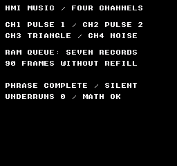
Comando de compilación
New-Item -ItemType Directory -Force .\out | Out-Null
.\kitaqfc\kitaqfc.exe .\kitaqfc\lib\audio_vblank.c .\kitaq-docs\samples\api-examples\fc\audio_vblank.c -I .\kitaqfc\lib -I .\kitaq-docs\samples --mapper=nrom --nes-chr=.\kitaq-docs\samples\font.chr -o .\out\audio_vblank.nes --no-cache --no-disasmImplementación y código fuente
kitaqfc/lib/audio_vblank.h:19
Reset the queue, feeder and diagnostic counters; silence and initialize the APU. Owns the four basic channels and disables DMC and APU frame IRQs.
kitaqfc/lib/audio_vblank.c:67
void nes_audio_vblank_init(void){
nes_audio_vblank_stop();nav_underruns=0;nav_frame=0x40;
nav_sweep1=8;nav_sweep2=8;nav_dmc_flags=0;nav_dmc_level=0;
nav_timbre[0]=0xBC;nav_timbre[1]=0x7A;nav_timbre[2]=0xFF;nav_timbre[3]=0x38;
}nes_audio_vblank_enqueue
Valida y copia un registro en la cola RAM. Úsalo para generar música en el código del juego sin alimentar desde ROM.
Sintaxis
u8 nes_audio_vblank_enqueue(const u8* record);Parámetros
recordDirección de cinco bytes legibles, válida hasta que termine la llamada. Después se puede reutilizar el array de origen. Se rechaza null.
Valor devuelto
Devuelve 1 si se acepta el registro. Si la cola está llena, el puntero es null o hay valores de nota o ruido no válidos, devuelve 0 sin modificar la cola. No se validan los cuatro bytes de canales de un terminador.
Condiciones y límites
Incluye audio_vblank.h y añade audio_vblank.c a la compilación exactamente una vez. El compilador llama a su rutina de enlace una vez desde el manejador NMI, tanto si es el predeterminado como si es uno propio. Habilita la NMI del PPU. El bucle principal no llama a ninguna rutina de actualización musical.
Este controlador de cuatro canales está ajustado para NTSC: CH1=pulso 1, CH2=pulso 2, CH3=triángulo y CH4=ruido, con índices del 0 al 3. No reproduce DMC ni audio de expansión. No lo ejecutes junto con código que escriba directamente en la APU, como los efectos de audio.c. No incluye una tabla de tonos PAL ni corrección del tempo para PAL.
El búfer circular de 40 bytes en RAM tiene ocho posiciones físicas; una queda vacía para distinguir entre lleno y vacío. La capacidad útil es de siete registros. Usa un único productor en el programa principal; no insertes, rellenes ni inicialices la cola desde la NMI. El productor publica la posición de escritura de un byte solo después de copiar el registro completo, de modo que la NMI no pueda leer un registro parcial.
Cada registro contiene cinco bytes: delay, CH1, CH2, CH3, CH4. Un retardo de 1 a 255 indica cuántos ticks de NMI dura el nuevo estado. Cero finaliza la reproducción e ignora los otros cuatro bytes. Las notas de 0 a 71 corresponden a C2–B7 (24=C4). Los valores de ruido de 0 a 15 seleccionan un periodo en modo largo y los de 16 a 31, el modo corto. En cualquier canal, 255=NES_AUDIO_HOLD conserva su estado y 254=NES_AUDIO_STOP lo silencia.
Ejemplo de uso
result[6]=nes_audio_vblank_enqueue(quiet_record); // Copy five bytes into RAM.Este fragmento muestra la llamada. Antes de incorporarlo a un programa completo, cumple los requisitos de inicialización y de los búferes indicados.
Resultado esperado
El ejemplo reproduce una vez una frase original de cuatro canales. La música continúa mientras el programa principal realiza cálculos enteros durante 90 fotogramas sin rellenar la cola. «PHRASE COMPLETE / SILENT» y «UNDERRUNS 0 / MATH OK» indican que la reproducción terminó, que no faltaron datos en la cola y que los cálculos dieron los resultados esperados. Escucha el audio capturado para comprobar la melodía y el acompañamiento de pulsos, el bajo triangular y el ruido. El final queda en silencio. La imagen muestra los resultados de control; el sonido se evalúa con el audio.
Comando de compilación
New-Item -ItemType Directory -Force .\out | Out-Null
.\kitaqfc\kitaqfc.exe .\kitaqfc\lib\audio_vblank.c .\kitaq-docs\samples\api-examples\fc\audio_vblank.c -I .\kitaqfc\lib -I .\kitaq-docs\samples --mapper=nrom --nes-chr=.\kitaq-docs\samples\font.chr -o .\out\audio_vblank.nes --no-cache --no-disasmImplementación y código fuente
kitaqfc/lib/audio_vblank.h:22
Copy one complete validated record to RAM and publish it atomically last. Return 1 on success, 0 for null/invalid/full. Call from one foreground producer.
kitaqfc/lib/audio_vblank.c:74
u8 nes_audio_vblank_enqueue(const u8* record){
u8 next;u8 i;u8 value;
nav_invalid=0;
if(record==0){nav_invalid=1;return 0;}
next=nav_head+5;if(next==40)next=0;
if(next==nav_tail)return 0;
if(record[0]!=0){
for(i=1;i<5;i++){
value=record[i];
if(value<254){
if(i<4){if(value>71){nav_invalid=1;return 0;}}
else{if(value>31){nav_invalid=1;return 0;}}
}
}
}
for(i=0;i<5;i++)nav_queue[(__safe_index u8)(nav_head+i)]=record[i];
nav_head=next;return 1;
}nes_audio_vblank_queued
Devuelve la cantidad de registros que la NMI aún no ha consumido.
Sintaxis
u8 nes_audio_vblank_queued(void);Valor devuelto
Devuelve entre 0 y 7 registros BGM en cola, sin incluir el retardo actual ni ningún registro SFX. La NMI sigue consumiendo datos, por lo que el resultado refleja solo el instante de la consulta.
Condiciones y límites
Incluye audio_vblank.h y añade audio_vblank.c a la compilación exactamente una vez. El compilador llama a su rutina de enlace una vez desde el manejador NMI, tanto si es el predeterminado como si es uno propio. Habilita la NMI del PPU. El bucle principal no llama a ninguna rutina de actualización musical.
Este controlador de cuatro canales está ajustado para NTSC: CH1=pulso 1, CH2=pulso 2, CH3=triángulo y CH4=ruido, con índices del 0 al 3. No reproduce DMC ni audio de expansión. No lo ejecutes junto con código que escriba directamente en la APU, como los efectos de audio.c. No incluye una tabla de tonos PAL ni corrección del tempo para PAL.
El búfer circular de 40 bytes en RAM tiene ocho posiciones físicas; una queda vacía para distinguir entre lleno y vacío. La capacidad útil es de siete registros. Usa un único productor en el programa principal; no insertes, rellenes ni inicialices la cola desde la NMI. El productor publica la posición de escritura de un byte solo después de copiar el registro completo, de modo que la NMI no pueda leer un registro parcial.
Ejemplo de uso
result[1]=nes_audio_vblank_queued(); // Seven records after prefill.Este fragmento muestra la llamada. Antes de incorporarlo a un programa completo, cumple los requisitos de inicialización y de los búferes indicados.
Resultado esperado
El ejemplo reproduce una vez una frase original de cuatro canales. La música continúa mientras el programa principal realiza cálculos enteros durante 90 fotogramas sin rellenar la cola. «PHRASE COMPLETE / SILENT» y «UNDERRUNS 0 / MATH OK» indican que la reproducción terminó, que no faltaron datos en la cola y que los cálculos dieron los resultados esperados. Escucha el audio capturado para comprobar la melodía y el acompañamiento de pulsos, el bajo triangular y el ruido. El final queda en silencio. La imagen muestra los resultados de control; el sonido se evalúa con el audio.
Comando de compilación
New-Item -ItemType Directory -Force .\out | Out-Null
.\kitaqfc\kitaqfc.exe .\kitaqfc\lib\audio_vblank.c .\kitaq-docs\samples\api-examples\fc\audio_vblank.c -I .\kitaqfc\lib -I .\kitaq-docs\samples --mapper=nrom --nes-chr=.\kitaq-docs\samples\font.chr -o .\out\audio_vblank.nes --no-cache --no-disasmImplementación y código fuente
kitaqfc/lib/audio_vblank.h:24
Return queued records (0..7), excluding the record whose delay is in progress.
kitaqfc/lib/audio_vblank.c:94
u8 nes_audio_vblank_queued(void){
u8 head;u8 tail;head=nav_head;tail=nav_tail;
if(head<tail)head=head+40;
return (head-tail)/5;
}nes_audio_vblank_free
Devuelve la cantidad de posiciones libres para registros en la cola.
Sintaxis
u8 nes_audio_vblank_free(void);Valor devuelto
Devuelve entre 0 y 7 posiciones BGM libres, igual a 7−queued(). Es un número de posiciones, con cinco bytes por posición. El búfer SFX independiente de 35 bytes no forma parte de esta cola.
Condiciones y límites
Incluye audio_vblank.h y añade audio_vblank.c a la compilación exactamente una vez. El compilador llama a su rutina de enlace una vez desde el manejador NMI, tanto si es el predeterminado como si es uno propio. Habilita la NMI del PPU. El bucle principal no llama a ninguna rutina de actualización musical.
Este controlador de cuatro canales está ajustado para NTSC: CH1=pulso 1, CH2=pulso 2, CH3=triángulo y CH4=ruido, con índices del 0 al 3. No reproduce DMC ni audio de expansión. No lo ejecutes junto con código que escriba directamente en la APU, como los efectos de audio.c. No incluye una tabla de tonos PAL ni corrección del tempo para PAL.
El búfer circular de 40 bytes en RAM tiene ocho posiciones físicas; una queda vacía para distinguir entre lleno y vacío. La capacidad útil es de siete registros. Usa un único productor en el programa principal; no insertes, rellenes ni inicialices la cola desde la NMI. El productor publica la posición de escritura de un byte solo después de copiar el registro completo, de modo que la NMI no pueda leer un registro parcial.
Ejemplo de uso
result[2]=nes_audio_vblank_free(); // No free slots immediately after prefill.Este fragmento muestra la llamada. Antes de incorporarlo a un programa completo, cumple los requisitos de inicialización y de los búferes indicados.
Resultado esperado
El ejemplo reproduce una vez una frase original de cuatro canales. La música continúa mientras el programa principal realiza cálculos enteros durante 90 fotogramas sin rellenar la cola. «PHRASE COMPLETE / SILENT» y «UNDERRUNS 0 / MATH OK» indican que la reproducción terminó, que no faltaron datos en la cola y que los cálculos dieron los resultados esperados. Escucha el audio capturado para comprobar la melodía y el acompañamiento de pulsos, el bajo triangular y el ruido. El final queda en silencio. La imagen muestra los resultados de control; el sonido se evalúa con el audio.
Comando de compilación
New-Item -ItemType Directory -Force .\out | Out-Null
.\kitaqfc\kitaqfc.exe .\kitaqfc\lib\audio_vblank.c .\kitaq-docs\samples\api-examples\fc\audio_vblank.c -I .\kitaqfc\lib -I .\kitaq-docs\samples --mapper=nrom --nes-chr=.\kitaq-docs\samples\font.chr -o .\out\audio_vblank.nes --no-cache --no-disasmImplementación y código fuente
kitaqfc/lib/audio_vblank.h:26
Return available record slots (0..7), not bytes.
kitaqfc/lib/audio_vblank.c:99
u8 nes_audio_vblank_free(void){return 7-nes_audio_vblank_queued();}nes_audio_vblank_start
Habilita el consumo de la cola RAM. El primer registro se toma en la siguiente NMI.
Sintaxis
void nes_audio_vblank_start(void);Valor devuelto
No devuelve ningún valor.
Condiciones y límites
Incluye audio_vblank.h y añade audio_vblank.c a la compilación exactamente una vez. El compilador llama a su rutina de enlace una vez desde el manejador NMI, tanto si es el predeterminado como si es uno propio. Habilita la NMI del PPU. El bucle principal no llama a ninguna rutina de actualización musical.
Este controlador de cuatro canales está ajustado para NTSC: CH1=pulso 1, CH2=pulso 2, CH3=triángulo y CH4=ruido, con índices del 0 al 3. No reproduce DMC ni audio de expansión. No lo ejecutes junto con código que escriba directamente en la APU, como los efectos de audio.c. No incluye una tabla de tonos PAL ni corrección del tempo para PAL.
Primero inicializa y añade registros a la cola. Esta llamada no habilita la NMI ni cambia el retardo actual o la posición de lectura. Reanuda un controlador pausado con pause(0); start por sí solo no quita la pausa.
Si el retardo termina sin otro registro BGM, se detienen las notas BGM y la reproducción se reanuda en una NMI después de recibir datos. Un SFX independiente sigue sonando. Se cuentan las entradas en falta de datos, no cada fotograma con la cola vacía. Insertar solo valores HOLD no restaura las notas BGM anteriores. Normalmente debes rellenar la cola en cada fotograma y dejar suficiente tiempo de reproducción preparado antes de una tarea larga.
Ejemplo de uso
nes_audio_vblank_start(); // Consume the copied record on the next NMI.Este fragmento muestra la llamada. Antes de incorporarlo a un programa completo, cumple los requisitos de inicialización y de los búferes indicados.
Resultado esperado
El ejemplo reproduce una vez una frase original de cuatro canales. La música continúa mientras el programa principal realiza cálculos enteros durante 90 fotogramas sin rellenar la cola. «PHRASE COMPLETE / SILENT» y «UNDERRUNS 0 / MATH OK» indican que la reproducción terminó, que no faltaron datos en la cola y que los cálculos dieron los resultados esperados. Escucha el audio capturado para comprobar la melodía y el acompañamiento de pulsos, el bajo triangular y el ruido. El final queda en silencio. La imagen muestra los resultados de control; el sonido se evalúa con el audio.
Comando de compilación
New-Item -ItemType Directory -Force .\out | Out-Null
.\kitaqfc\kitaqfc.exe .\kitaqfc\lib\audio_vblank.c .\kitaq-docs\samples\api-examples\fc\audio_vblank.c -I .\kitaqfc\lib -I .\kitaq-docs\samples --mapper=nrom --nes-chr=.\kitaq-docs\samples\font.chr -o .\out\audio_vblank.nes --no-cache --no-disasmImplementación y código fuente
kitaqfc/lib/audio_vblank.h:28
Enable consumption at the next NMI. Does not enable PPU NMI itself.
kitaqfc/lib/audio_vblank.c:100
void nes_audio_vblank_start(void){nav_active=1;}nes_audio_vblank_stop
Deshabilita la reproducción, silencia los cuatro canales y descarta la cola y el estado de alimentación desde ROM.
Sintaxis
void nes_audio_vblank_stop(void);Valor devuelto
No devuelve ningún valor.
Condiciones y límites
Incluye audio_vblank.h y añade audio_vblank.c a la compilación exactamente una vez. El compilador llama a su rutina de enlace una vez desde el manejador NMI, tanto si es el predeterminado como si es uno propio. Habilita la NMI del PPU. El bucle principal no llama a ninguna rutina de actualización musical.
Este controlador de cuatro canales está ajustado para NTSC: CH1=pulso 1, CH2=pulso 2, CH3=triángulo y CH4=ruido, con índices del 0 al 3. No reproduce DMC ni audio de expansión. No lo ejecutes junto con código que escriba directamente en la APU, como los efectos de audio.c. No incluye una tabla de tonos PAL ni corrección del tempo para PAL.
Detiene BGM y SFX y descarta la cola, el estado de alimentación, ambas posiciones de reproducción y la pausa. Conserva los timbres y el contador de falta de datos; no deshabilita la NMI. Usa pause para conservar la posición. set_music y play_music también realizan esta parada internamente, por lo que cancelan los SFX.
Ejemplo de uso
nes_audio_vblank_stop(); // Clear the feeder and queued records; silence now.Este fragmento muestra la llamada. Antes de incorporarlo a un programa completo, cumple los requisitos de inicialización y de los búferes indicados.
Resultado esperado
El ejemplo reproduce una vez una frase original de cuatro canales. La música continúa mientras el programa principal realiza cálculos enteros durante 90 fotogramas sin rellenar la cola. «PHRASE COMPLETE / SILENT» y «UNDERRUNS 0 / MATH OK» indican que la reproducción terminó, que no faltaron datos en la cola y que los cálculos dieron los resultados esperados. Escucha el audio capturado para comprobar la melodía y el acompañamiento de pulsos, el bajo triangular y el ruido. El final queda en silencio. La imagen muestra los resultados de control; el sonido se evalúa con el audio.
Comando de compilación
New-Item -ItemType Directory -Force .\out | Out-Null
.\kitaqfc\kitaqfc.exe .\kitaqfc\lib\audio_vblank.c .\kitaq-docs\samples\api-examples\fc\audio_vblank.c -I .\kitaqfc\lib -I .\kitaq-docs\samples --mapper=nrom --nes-chr=.\kitaq-docs\samples\font.chr -o .\out\audio_vblank.nes --no-cache --no-disasmImplementación y código fuente
kitaqfc/lib/audio_vblank.h:30
Disable consumption, silence, discard queued records and clear the feeder.
kitaqfc/lib/audio_vblank.c:29
void nes_audio_vblank_stop(void){
u8 i;
nav_paused=1;nav_active=0;nav_sfx_active=0;nav_status=0;
nav_delay=0;nav_enabled=0;nav_head=0;nav_tail=0;
nav_source=0;nav_cursor=0;nav_count=0;nav_left=0;nav_starved=0;
nav_previous_mask=0;nav_effective_mask=0;nav_refresh=0;
for(i=0;i<4;i++){nav_notes[(__safe_index u8)i]=254;nav_sfx_notes[(__safe_index u8)i]=254;}
nav_paused=0;
}nes_audio_vblank_set_music
Detiene la reproducción y establece un flujo como origen de datos. Copiar a la cola e iniciar la reproducción son operaciones separadas.
Sintaxis
u8 nes_audio_vblank_set_music(const u8* records,u16 count,u8 loop);Parámetros
recordsInicio del flujo en ROM o RAM legible. Mantén los datos disponibles hasta que termine la alimentación de la cola. No se cambia de banco: mapea el banco ROM adecuado al llamar a refill. La NMI solo lee los registros copiados en RAM.
countCantidad de registros legibles de cinco bytes, entre 1 y 13107; no es una cantidad de bytes. Los count×5 bytes deben ocupar un rango de direcciones de CPU válido y contiguo.
loopCero selecciona una única reproducción; cualquier valor distinto de cero repite desde el principio. No incluyas un terminador con retardo cero dentro de un flujo en bucle.
Valor devuelto
Devuelve 1 si el puntero y la cantidad son válidos, o 0 si el puntero es null, la cantidad es cero o supera 13107. Incluso si falla, detiene la reproducción existente y descarta los datos en cola. El contenido de los registros se comprueba durante el rellenado.
Condiciones y límites
Incluye audio_vblank.h y añade audio_vblank.c a la compilación exactamente una vez. El compilador llama a su rutina de enlace una vez desde el manejador NMI, tanto si es el predeterminado como si es uno propio. Habilita la NMI del PPU. El bucle principal no llama a ninguna rutina de actualización musical.
Este controlador de cuatro canales está ajustado para NTSC: CH1=pulso 1, CH2=pulso 2, CH3=triángulo y CH4=ruido, con índices del 0 al 3. No reproduce DMC ni audio de expansión. No lo ejecutes junto con código que escriba directamente en la APU, como los efectos de audio.c. No incluye una tabla de tonos PAL ni corrección del tempo para PAL.
Cada registro contiene cinco bytes: delay, CH1, CH2, CH3, CH4. Un retardo de 1 a 255 indica cuántos ticks de NMI dura el nuevo estado. Cero finaliza la reproducción e ignora los otros cuatro bytes. Las notas de 0 a 71 corresponden a C2–B7 (24=C4). Los valores de ruido de 0 a 15 seleccionan un periodo en modo largo y los de 16 a 31, el modo corto. En cualquier canal, 255=NES_AUDIO_HOLD conserva su estado y 254=NES_AUDIO_STOP lo silencia.
Ejemplo de uso
result[5]=nes_audio_vblank_set_music(song,8,0); // Attach without starting.Este fragmento muestra la llamada. Antes de incorporarlo a un programa completo, cumple los requisitos de inicialización y de los búferes indicados.
Resultado esperado
El ejemplo reproduce una vez una frase original de cuatro canales. La música continúa mientras el programa principal realiza cálculos enteros durante 90 fotogramas sin rellenar la cola. «PHRASE COMPLETE / SILENT» y «UNDERRUNS 0 / MATH OK» indican que la reproducción terminó, que no faltaron datos en la cola y que los cálculos dieron los resultados esperados. Escucha el audio capturado para comprobar la melodía y el acompañamiento de pulsos, el bajo triangular y el ruido. El final queda en silencio. La imagen muestra los resultados de control; el sonido se evalúa con el audio.
Comando de compilación
New-Item -ItemType Directory -Force .\out | Out-Null
.\kitaqfc\kitaqfc.exe .\kitaqfc\lib\audio_vblank.c .\kitaq-docs\samples\api-examples\fc\audio_vblank.c -I .\kitaqfc\lib -I .\kitaq-docs\samples --mapper=nrom --nes-chr=.\kitaq-docs\samples\font.chr -o .\out\audio_vblank.nes --no-cache --no-disasmImplementación y código fuente
kitaqfc/lib/audio_vblank.h:33
Stop and attach a readable five-byte-record stream; return 0 for null, zero count or a count above 13107. Nonzero loop repeats the stream. Does not start.
kitaqfc/lib/audio_vblank.c:110
u8 nes_audio_vblank_set_music(const u8* records,u16 count,u8 loop){
nes_audio_vblank_stop();
if(records==0||count==0||count>13107)return 0;
nav_source=records;nav_cursor=records;nav_count=count;nav_left=count;nav_loop=loop;
return 1;
}nes_audio_vblank_refill
Introduce hasta siete registros del flujo asociado en las posiciones libres. Esta operación del programa principal permite reproducir una canción larga con una cola RAM pequeña.
Sintaxis
u8 nes_audio_vblank_refill(void);Valor devuelto
Devuelve entre 0 y 7 registros aceptados, incluido el terminador añadido automáticamente para una reproducción única. Si no hay origen o la cola está llena, devuelve 0. Al encontrar un registro no válido, detiene la reproducción, descarta la cola y el estado de alimentación, y devuelve 0.
Condiciones y límites
Incluye audio_vblank.h y añade audio_vblank.c a la compilación exactamente una vez. El compilador llama a su rutina de enlace una vez desde el manejador NMI, tanto si es el predeterminado como si es uno propio. Habilita la NMI del PPU. El bucle principal no llama a ninguna rutina de actualización musical.
Este controlador de cuatro canales está ajustado para NTSC: CH1=pulso 1, CH2=pulso 2, CH3=triángulo y CH4=ruido, con índices del 0 al 3. No reproduce DMC ni audio de expansión. No lo ejecutes junto con código que escriba directamente en la APU, como los efectos de audio.c. No incluye una tabla de tonos PAL ni corrección del tempo para PAL.
Inicio del flujo en ROM o RAM legible. Mantén los datos disponibles hasta que termine la alimentación de la cola. No se cambia de banco: mapea el banco ROM adecuado al llamar a refill. La NMI solo lee los registros copiados en RAM.
Cero selecciona una única reproducción; cualquier valor distinto de cero repite desde el principio. No incluyas un terminador con retardo cero dentro de un flujo en bucle.
Si el retardo termina sin otro registro BGM, se detienen las notas BGM y la reproducción se reanuda en una NMI después de recibir datos. Un SFX independiente sigue sonando. Se cuentan las entradas en falta de datos, no cada fotograma con la cola vacía. Insertar solo valores HOLD no restaura las notas BGM anteriores. Normalmente debes rellenar la cola en cada fotograma y dejar suficiente tiempo de reproducción preparado antes de una tarea larga.
La alimentación desde ROM y la inserción directa comparten una cola; combínalas solo si controlas el orden de forma deliberada. Rellenar no reproduce registros ni inicia el consumidor. Sin embargo, la parada por datos no válidos sí silencia la APU.
Ejemplo de uso
nes_audio_vblank_refill();Este fragmento muestra la llamada. Antes de incorporarlo a un programa completo, cumple los requisitos de inicialización y de los búferes indicados.
Resultado esperado
El ejemplo reproduce una vez una frase original de cuatro canales. La música continúa mientras el programa principal realiza cálculos enteros durante 90 fotogramas sin rellenar la cola. «PHRASE COMPLETE / SILENT» y «UNDERRUNS 0 / MATH OK» indican que la reproducción terminó, que no faltaron datos en la cola y que los cálculos dieron los resultados esperados. Escucha el audio capturado para comprobar la melodía y el acompañamiento de pulsos, el bajo triangular y el ruido. El final queda en silencio. La imagen muestra los resultados de control; el sonido se evalúa con el audio.
Comando de compilación
New-Item -ItemType Directory -Force .\out | Out-Null
.\kitaqfc\kitaqfc.exe .\kitaqfc\lib\audio_vblank.c .\kitaq-docs\samples\api-examples\fc\audio_vblank.c -I .\kitaqfc\lib -I .\kitaq-docs\samples --mapper=nrom --nes-chr=.\kitaq-docs\samples\font.chr -o .\out\audio_vblank.nes --no-cache --no-disasmImplementación y código fuente
kitaqfc/lib/audio_vblank.h:37
Copy at most seven records from the attached stream. Return copies accepted. A one-shot feeder appends a delay-zero terminator after the last timed record. Keep the stream's ROM bank mapped during this foreground call only.
kitaqfc/lib/audio_vblank.c:118
u8 nes_audio_vblank_refill(void){
u8 copied;copied=0;
while(copied<7&&nav_source!=0){
if(nav_left==0){
if(nav_loop!=0){nav_cursor=nav_source;nav_left=nav_count;}
else {if(nes_audio_vblank_enqueue(nav_end)!=0){copied++;nav_source=0;}return copied;}
}
if(nes_audio_vblank_enqueue(nav_cursor)==0){
// The producer-only flag distinguishes malformed data from full.
// Re-reading occupancy here would race NMI freeing a full queue.
if(nav_invalid!=0){nes_audio_vblank_stop();return 0;}
return copied;
}
copied++;nav_cursor=nav_cursor+5;nav_left--;
}
return copied;
}nes_audio_vblank_play_music
Asocia una canción, llena la cola inicialmente y habilita la reproducción en una sola llamada. Es el punto de entrada habitual para iniciar una frase.
Sintaxis
u8 nes_audio_vblank_play_music(const u8* records,u16 count,u8 loop);Parámetros
recordsInicio del flujo en ROM o RAM legible. Mantén los datos disponibles hasta que termine la alimentación de la cola. No se cambia de banco: mapea el banco ROM adecuado al llamar a refill. La NMI solo lee los registros copiados en RAM.
countCantidad de registros legibles de cinco bytes, entre 1 y 13107; no es una cantidad de bytes. Los count×5 bytes deben ocupar un rango de direcciones de CPU válido y contiguo.
loopCero selecciona una única reproducción; cualquier valor distinto de cero repite desde el principio. No incluyas un terminador con retardo cero dentro de un flujo en bucle.
Valor devuelto
Devuelve 1 si la configuración y el llenado inicial tienen éxito; devuelve 0 si la configuración no es válida o se encuentran datos no válidos durante ese llenado. El éxito no valida toda la canción: los registros incorrectos posteriores se detectan en las siguientes llamadas a refill.
Condiciones y límites
Incluye audio_vblank.h y añade audio_vblank.c a la compilación exactamente una vez. El compilador llama a su rutina de enlace una vez desde el manejador NMI, tanto si es el predeterminado como si es uno propio. Habilita la NMI del PPU. El bucle principal no llama a ninguna rutina de actualización musical.
Este controlador de cuatro canales está ajustado para NTSC: CH1=pulso 1, CH2=pulso 2, CH3=triángulo y CH4=ruido, con índices del 0 al 3. No reproduce DMC ni audio de expansión. No lo ejecutes junto con código que escriba directamente en la APU, como los efectos de audio.c. No incluye una tabla de tonos PAL ni corrección del tempo para PAL.
Llama primero a init una vez. play_music conserva los timbres y el contador de falta de datos. Sigue llamando periódicamente a refill para flujos largos o en bucle.
Ejemplo de uso
result[0]=nes_audio_vblank_play_music(song,8,0);Este fragmento muestra la llamada. Antes de incorporarlo a un programa completo, cumple los requisitos de inicialización y de los búferes indicados.
Resultado esperado
El ejemplo reproduce una vez una frase original de cuatro canales. La música continúa mientras el programa principal realiza cálculos enteros durante 90 fotogramas sin rellenar la cola. «PHRASE COMPLETE / SILENT» y «UNDERRUNS 0 / MATH OK» indican que la reproducción terminó, que no faltaron datos en la cola y que los cálculos dieron los resultados esperados. Escucha el audio capturado para comprobar la melodía y el acompañamiento de pulsos, el bajo triangular y el ruido. El final queda en silencio. La imagen muestra los resultados de control; el sonido se evalúa con el audio.
Comando de compilación
New-Item -ItemType Directory -Force .\out | Out-Null
.\kitaqfc\kitaqfc.exe .\kitaqfc\lib\audio_vblank.c .\kitaq-docs\samples\api-examples\fc\audio_vblank.c -I .\kitaqfc\lib -I .\kitaq-docs\samples --mapper=nrom --nes-chr=.\kitaq-docs\samples\font.chr -o .\out\audio_vblank.nes --no-cache --no-disasmImplementación y código fuente
kitaqfc/lib/audio_vblank.h:39
Set the stream, prefill the queue and start. Return 0 for invalid setup/data.
kitaqfc/lib/audio_vblank.c:135
u8 nes_audio_vblank_play_music(const u8* records,u16 count,u8 loop){
if(nes_audio_vblank_set_music(records,count,loop)==0)return 0;
if(nes_audio_vblank_refill()==0)return 0;
nes_audio_vblank_start();return 1;
}nes_audio_vblank_is_playing
Indica si está habilitado el consumo de la cola desde la NMI.
Sintaxis
u8 nes_audio_vblank_is_playing(void);Valor devuelto
Devuelve 1 mientras el consumidor BGM esté habilitado, incluso durante una pausa o falta de datos, y 0 tras una parada o el final. Si solo suena un SFX, también devuelve 0. No indica si hay sonido audible ni si hay un SFX activo.
Condiciones y límites
Incluye audio_vblank.h y añade audio_vblank.c a la compilación exactamente una vez. El compilador llama a su rutina de enlace una vez desde el manejador NMI, tanto si es el predeterminado como si es uno propio. Habilita la NMI del PPU. El bucle principal no llama a ninguna rutina de actualización musical.
Este controlador de cuatro canales está ajustado para NTSC: CH1=pulso 1, CH2=pulso 2, CH3=triángulo y CH4=ruido, con índices del 0 al 3. No reproduce DMC ni audio de expansión. No lo ejecutes junto con código que escriba directamente en la APU, como los efectos de audio.c. No incluye una tabla de tonos PAL ni corrección del tempo para PAL.
Si el retardo termina sin otro registro BGM, se detienen las notas BGM y la reproducción se reanuda en una NMI después de recibir datos. Un SFX independiente sigue sonando. Se cuentan las entradas en falta de datos, no cada fotograma con la cola vacía. Insertar solo valores HOLD no restaura las notas BGM anteriores. Normalmente debes rellenar la cola en cada fotograma y dejar suficiente tiempo de reproducción preparado antes de una tarea larga.
Ejemplo de uso
while(nes_audio_vblank_is_playing()!=0){
// example:nes_audio_vblank_refill:start
nes_audio_vblank_refill();
// example:nes_audio_vblank_refill:end
__nmi_wait();
}Este fragmento muestra la llamada. Antes de incorporarlo a un programa completo, cumple los requisitos de inicialización y de los búferes indicados.
Resultado esperado
El ejemplo reproduce una vez una frase original de cuatro canales. La música continúa mientras el programa principal realiza cálculos enteros durante 90 fotogramas sin rellenar la cola. «PHRASE COMPLETE / SILENT» y «UNDERRUNS 0 / MATH OK» indican que la reproducción terminó, que no faltaron datos en la cola y que los cálculos dieron los resultados esperados. Escucha el audio capturado para comprobar la melodía y el acompañamiento de pulsos, el bajo triangular y el ruido. El final queda en silencio. La imagen muestra los resultados de control; el sonido se evalúa con el audio.
Comando de compilación
New-Item -ItemType Directory -Force .\out | Out-Null
.\kitaqfc\kitaqfc.exe .\kitaqfc\lib\audio_vblank.c .\kitaq-docs\samples\api-examples\fc\audio_vblank.c -I .\kitaqfc\lib -I .\kitaq-docs\samples --mapper=nrom --nes-chr=.\kitaq-docs\samples\font.chr -o .\out\audio_vblank.nes --no-cache --no-disasmImplementación y código fuente
kitaqfc/lib/audio_vblank.h:41
Return 1 while the BGM consumer is enabled, including a recoverable queue underrun.
kitaqfc/lib/audio_vblank.c:101
u8 nes_audio_vblank_is_playing(void){return nav_active;}nes_audio_vblank_underruns
Devuelve la cantidad de episodios de falta de datos en la cola, lo que ayuda a evaluar el margen para rellenarla.
Sintaxis
u8 nes_audio_vblank_underruns(void);Valor devuelto
Devuelve entre 0 y 255, sin superar 255. Cuenta episodios de falta de datos, no cada fotograma de espera. init lo pone a cero; stop y los cambios de canción lo conservan. Un terminador normal no cuenta como falta de datos.
Condiciones y límites
Incluye audio_vblank.h y añade audio_vblank.c a la compilación exactamente una vez. El compilador llama a su rutina de enlace una vez desde el manejador NMI, tanto si es el predeterminado como si es uno propio. Habilita la NMI del PPU. El bucle principal no llama a ninguna rutina de actualización musical.
Este controlador de cuatro canales está ajustado para NTSC: CH1=pulso 1, CH2=pulso 2, CH3=triángulo y CH4=ruido, con índices del 0 al 3. No reproduce DMC ni audio de expansión. No lo ejecutes junto con código que escriba directamente en la APU, como los efectos de audio.c. No incluye una tabla de tonos PAL ni corrección del tempo para PAL.
Si el retardo termina sin otro registro BGM, se detienen las notas BGM y la reproducción se reanuda en una NMI después de recibir datos. Un SFX independiente sigue sonando. Se cuentan las entradas en falta de datos, no cada fotograma con la cola vacía. Insertar solo valores HOLD no restaura las notas BGM anteriores. Normalmente debes rellenar la cola en cada fotograma y dejar suficiente tiempo de reproducción preparado antes de una tarea larga.
Ejemplo de uso
result[4]=nes_audio_vblank_underruns(); // Zero: queued time covered the busy section.Este fragmento muestra la llamada. Antes de incorporarlo a un programa completo, cumple los requisitos de inicialización y de los búferes indicados.
Resultado esperado
El ejemplo reproduce una vez una frase original de cuatro canales. La música continúa mientras el programa principal realiza cálculos enteros durante 90 fotogramas sin rellenar la cola. «PHRASE COMPLETE / SILENT» y «UNDERRUNS 0 / MATH OK» indican que la reproducción terminó, que no faltaron datos en la cola y que los cálculos dieron los resultados esperados. Escucha el audio capturado para comprobar la melodía y el acompañamiento de pulsos, el bajo triangular y el ruido. El final queda en silencio. La imagen muestra los resultados de control; el sonido se evalúa con el audio.
Comando de compilación
New-Item -ItemType Directory -Force .\out | Out-Null
.\kitaqfc\kitaqfc.exe .\kitaqfc\lib\audio_vblank.c .\kitaq-docs\samples\api-examples\fc\audio_vblank.c -I .\kitaqfc\lib -I .\kitaq-docs\samples --mapper=nrom --nes-chr=.\kitaq-docs\samples\font.chr -o .\out\audio_vblank.nes --no-cache --no-disasmImplementación y código fuente
kitaqfc/lib/audio_vblank.h:43
Saturating count of starvation episodes, cleared by init; END is not starvation.
kitaqfc/lib/audio_vblank.c:102
u8 nes_audio_vblank_underruns(void){return nav_underruns;}nes_audio_vblank_set_timbre
Configura el ciclo de trabajo o nivel de la siguiente nota de un canal sin volver a disparar la nota actual.
Sintaxis
u8 nes_audio_vblank_set_timbre(u8 channel,u8 control);Parámetros
channel0=CH1 pulso 1, 1=CH2 pulso 2, 2=CH3 triángulo, 3=CH4 ruido. Se rechazan los valores de 4 en adelante.
controlEn los pulsos, los bits 7..6 seleccionan el ciclo de trabajo (0=12,5 %, 1=25 %, 2=50 %, 3=75 %) y los bits 3..0 fijan el volumen constante entre 0 y 15. El ruido normalmente usa los bits 3..0 como volumen constante. Combina el valor mediante OR con NES_AUDIO_NOISE_ENVELOPE (128) para usar esos bits como periodo de decaimiento de 0 a 15: la siguiente nota de ruido empieza con volumen 15 y decae una vez. Los periodos mayores son más lentos; 15 tarda aproximadamente un segundo. El contador de longitud del ruido permite completar el decaimiento. En el triángulo, cero silencia la siguiente nota y cualquier valor distinto de cero permite que suene.
Valor devuelto
Devuelve 1 para un canal válido; los valores de 4 en adelante devuelven 0 sin realizar cambios.
Condiciones y límites
Incluye audio_vblank.h y añade audio_vblank.c a la compilación exactamente una vez. El compilador llama a su rutina de enlace una vez desde el manejador NMI, tanto si es el predeterminado como si es uno propio. Habilita la NMI del PPU. El bucle principal no llama a ninguna rutina de actualización musical.
Este controlador de cuatro canales está ajustado para NTSC: CH1=pulso 1, CH2=pulso 2, CH3=triángulo y CH4=ruido, con índices del 0 al 3. No reproduce DMC ni audio de expansión. No lo ejecutes junto con código que escriba directamente en la APU, como los efectos de audio.c. No incluye una tabla de tonos PAL ni corrección del tempo para PAL.
Ejemplo de uso
nes_audio_vblank_set_timbre(3,NES_AUDIO_NOISE_ENVELOPE|15);
result[3]=nes_audio_vblank_play_sfx(noise,1,8); // Bit 3 owns CH4; no BGM needed.
// The slow one-shot envelope fades by itself. It does not loop at zero.Este fragmento muestra la llamada. Antes de incorporarlo a un programa completo, cumple los requisitos de inicialización y de los búferes indicados.
Resultado esperado
No hace falta introducir controles. CH1 reproduce BGM cerca de 220 Hz, pasa a un SFX cerca de 880 Hz durante 30 fotogramas y vuelve a la BGM actual. Tras una pausa silenciosa de 30 fotogramas, la BGM se reanuda. Un segundo efecto se interrumpe expresamente tras 15 fotogramas. Por último, el ruido de CH4 decae lentamente una vez. COMPLETE / ALL CHANNELS OFF indica el final. Escucha la grabación adjunta para comprobar los cambios de tono, la pausa silenciosa y el decaimiento del ruido.
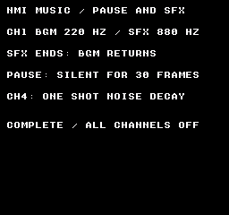
Comando de compilación
New-Item -ItemType Directory -Force .\out | Out-Null
.\kitaqfc\kitaqfc.exe .\kitaqfc\lib\audio_vblank.c .\kitaq-docs\samples\api-examples\fc\audio_vblank_effects.c -I .\kitaqfc\lib -I .\kitaq-docs\samples --mapper=nrom --nes-chr=.\kitaq-docs\samples\font.chr -o .\out\audio_vblank_effects.nes --no-cache --no-disasmImplementación y código fuente
kitaqfc/lib/audio_vblank.h:50
Configure the next note: pulse bits 7..6 select duty and 3..0 select volume; noise uses volume 3..0, or NES_AUDIO_NOISE_ENVELOPE | decay_period (0..15) for a one-shot hardware envelope (larger periods decay more slowly). The next noise note starts at volume 15; its length permits a full decay. Triangle uses zero for silent, nonzero for full level. Return 0 for channel >=4. Hardware has no triangle volume control.
kitaqfc/lib/audio_vblank.c:103
u8 nes_audio_vblank_set_timbre(u8 channel,u8 control){
if(channel>=4)return 0;
if(channel<2)nav_timbre[(__safe_index u8)channel]=(control&0xCF)|0x30;
else if(channel==2){if(control==0)nav_timbre[2]=0x80;else nav_timbre[2]=0xFF;}
else {if((control&128)!=0)nav_timbre[3]=control&15;else nav_timbre[3]=(control&15)|0x30;}
return 1;
}nes_audio_vblank_pause
Pausa o reanuda BGM y SFX conservando sus posiciones de reproducción.
Sintaxis
void nes_audio_vblank_pause(u8 on);Parámetros
onUn valor distinto de cero pausa; cero reanuda. La pausa deshabilita inmediatamente los cuatro canales de la APU.
Valor devuelto
No devuelve ningún valor.
Condiciones y límites
Incluye audio_vblank.h y añade audio_vblank.c a la compilación exactamente una vez. El compilador llama a su rutina de enlace una vez desde el manejador NMI, tanto si es el predeterminado como si es uno propio. Habilita la NMI del PPU. El bucle principal no llama a ninguna rutina de actualización musical.
Este controlador de cuatro canales está ajustado para NTSC: CH1=pulso 1, CH2=pulso 2, CH3=triángulo y CH4=ruido, con índices del 0 al 3. No reproduce DMC ni audio de expansión. No lo ejecutes junto con código que escriba directamente en la APU, como los efectos de audio.c. No incluye una tabla de tonos PAL ni corrección del tempo para PAL.
Llama desde el programa principal. La NMI consume los datos SFX copiados. Deja que esta biblioteca gestione tanto BGM como SFX; no ejecutes otro controlador APU al mismo tiempo.
Durante la pausa no avanzan ni el retardo y la posición de cola BGM ni el retardo y la posición SFX. El programa principal puede seguir rellenando la cola. La primera NMI tras reanudar vuelve a disparar las notas actuales y procesa el tick normal. No se guardan la fase de la onda ni el nivel de una envolvente parcialmente atenuada. La bandera de habilitación BGM que consulta is_playing no cambia. Cero solicita restaurar las notas incluso si ya se está reproduciendo, así que no lo llames en cada fotograma.
Ejemplo de uso
nes_audio_vblank_pause(1); // Freeze BGM and SFX, and mute immediately.
phase=3;wait_frames(30); // Refill may copy data; neither timeline advances.
nes_audio_vblank_pause(0); // Restore held notes on the next NMI.Este fragmento muestra la llamada. Antes de incorporarlo a un programa completo, cumple los requisitos de inicialización y de los búferes indicados.
Resultado esperado
No hace falta introducir controles. CH1 reproduce BGM cerca de 220 Hz, pasa a un SFX cerca de 880 Hz durante 30 fotogramas y vuelve a la BGM actual. Tras una pausa silenciosa de 30 fotogramas, la BGM se reanuda. Un segundo efecto se interrumpe expresamente tras 15 fotogramas. Por último, el ruido de CH4 decae lentamente una vez. COMPLETE / ALL CHANNELS OFF indica el final. Escucha la grabación adjunta para comprobar los cambios de tono, la pausa silenciosa y el decaimiento del ruido.
Comando de compilación
New-Item -ItemType Directory -Force .\out | Out-Null
.\kitaqfc\kitaqfc.exe .\kitaqfc\lib\audio_vblank.c .\kitaq-docs\samples\api-examples\fc\audio_vblank_effects.c -I .\kitaqfc\lib -I .\kitaq-docs\samples --mapper=nrom --nes-chr=.\kitaq-docs\samples\font.chr -o .\out\audio_vblank_effects.nes --no-cache --no-disasmImplementación y código fuente
kitaqfc/lib/audio_vblank.h:54
Any nonzero argument freezes both timelines and mutes immediately. Zero resumes from the stored delays and restores held notes on the next NMI. BGM is_playing remains enabled during pause. Refill may still fill the queue.
kitaqfc/lib/audio_vblank.c:40
void nes_audio_vblank_pause(u8 on){
if(on!=0){nav_paused=1;nav_status=0;}
else{nav_refresh=1;nav_paused=0;}
}nes_audio_vblank_play_sfx
Copia un efecto corto a RAM y toma temporalmente el control de las salidas de los canales seleccionados a partir de la siguiente NMI.
Sintaxis
u8 nes_audio_vblank_play_sfx(const u8* records,u8 count,u8 mask);Parámetros
recordsInicio de los registros de cinco bytes. Mantén los count×5 bytes legibles y mapeados hasta que termine la llamada. Puedes reutilizar el origen después de la copia.
countDe 1 a 7 registros, como máximo 35 bytes. Cada retardo debe estar entre 1 y 255. Los SFX no usan terminadores con retardo cero; finalizan después de los registros especificados.
maskLos cuatro bits bajos seleccionan los canales: 1=CH1, 2=CH2, 4=CH3, 8=CH4. Combina los bits con OR para seleccionar varios. Los bits altos se ignoran; se rechaza una máscara cuyos cuatro bits bajos sean cero.
Valor devuelto
Devuelve 1 tras copiar y habilitar el efecto. Devuelve 0 si el puntero es null, la cantidad no es válida, no se selecciona ningún canal, hay un retardo cero o valores de nota o ruido no válidos. Una entrada no válida conserva el efecto actual. También se validan los valores de los canales no seleccionados.
Condiciones y límites
Incluye audio_vblank.h y añade audio_vblank.c a la compilación exactamente una vez. El compilador llama a su rutina de enlace una vez desde el manejador NMI, tanto si es el predeterminado como si es uno propio. Habilita la NMI del PPU. El bucle principal no llama a ninguna rutina de actualización musical.
Este controlador de cuatro canales está ajustado para NTSC: CH1=pulso 1, CH2=pulso 2, CH3=triángulo y CH4=ruido, con índices del 0 al 3. No reproduce DMC ni audio de expansión. No lo ejecutes junto con código que escriba directamente en la APU, como los efectos de audio.c. No incluye una tabla de tonos PAL ni corrección del tempo para PAL.
Llama desde el programa principal. La NMI consume los datos SFX copiados. Deja que esta biblioteca gestione tanto BGM como SFX; no ejecutes otro controlador APU al mismo tiempo.
La BGM sigue avanzando por debajo; al terminar el efecto, las salidas vuelven a sus notas actuales. Solo hay un flujo SFX y una nueva llamada lo sustituye. Los valores HOLD/STOP coinciden con los de BGM, pero las notas retenidas del efecto empiezan detenidas, por lo que un HOLD inicial no hereda la nota BGM. Los SFX pueden sonar sin BGM. Un efecto añadido durante la pausa espera hasta que se reanude. Los timbres se comparten con la BGM.
Ejemplo de uso
result[1]=nes_audio_vblank_play_sfx(effect,1,1); // Mask bit 0 owns CH1.
// The BGM timeline keeps advancing; its current CH1 note returns after 30 ticks.Este fragmento muestra la llamada. Antes de incorporarlo a un programa completo, cumple los requisitos de inicialización y de los búferes indicados.
Resultado esperado
No hace falta introducir controles. CH1 reproduce BGM cerca de 220 Hz, pasa a un SFX cerca de 880 Hz durante 30 fotogramas y vuelve a la BGM actual. Tras una pausa silenciosa de 30 fotogramas, la BGM se reanuda. Un segundo efecto se interrumpe expresamente tras 15 fotogramas. Por último, el ruido de CH4 decae lentamente una vez. COMPLETE / ALL CHANNELS OFF indica el final. Escucha la grabación adjunta para comprobar los cambios de tono, la pausa silenciosa y el decaimiento del ruido.
Comando de compilación
New-Item -ItemType Directory -Force .\out | Out-Null
.\kitaqfc\kitaqfc.exe .\kitaqfc\lib\audio_vblank.c .\kitaq-docs\samples\api-examples\fc\audio_vblank_effects.c -I .\kitaqfc\lib -I .\kitaq-docs\samples --mapper=nrom --nes-chr=.\kitaq-docs\samples\font.chr -o .\out\audio_vblank_effects.nes --no-cache --no-disasmImplementación y código fuente
kitaqfc/lib/audio_vblank.h:62
Copy 1..7 timed records. Bits 0..3 select channels temporarily owned by SFX. BGM continues underneath and its current notes return when the effect ends. Return 1 after copying; 0 for null, invalid count/data or an empty low mask. Ignore mask bits 4..7. All fields are validated, even unselected channels. Delay zero is not accepted for SFX. Invalid input preserves the current SFX. Replacement restarts the effect; the first HOLD starts from a stopped note. The source need only stay mapped/readable until this foreground call returns.
kitaqfc/lib/audio_vblank.c:47
u8 nes_audio_vblank_play_sfx(const u8* records,u8 count,u8 mask){
u8 i;u8 ch;u8 value;u8 bytes;
if(records==0||count==0||count>7||(mask&15)==0)return 0;
bytes=(u8)(count+count+count+count+count);
i=0;
while(i<bytes){
if(records[i]==0)return 0;
ch=1;while(ch<5){
value=records[i+ch];
if(value<254){if(ch<4){if(value>71)return 0;}else{if(value>31)return 0;}}
ch++;
}
i=i+5;
}
nav_sfx_active=0;
for(i=0;i<bytes;i++)nav_sfx_queue[(__safe_index u8)i]=records[i];
for(i=0;i<4;i++)nav_sfx_notes[(__safe_index u8)i]=254;
nav_sfx_mask=mask&15;nav_sfx_cursor=0;nav_sfx_length=bytes;nav_sfx_delay=0;
nav_sfx_active=1;return 1;
}nes_audio_vblank_stop_sfx
Libera el control de los canales por parte del efecto para que la siguiente NMI restaure las notas BGM actuales.
Sintaxis
void nes_audio_vblank_stop_sfx(void);Valor devuelto
No devuelve ningún valor.
Condiciones y límites
Incluye audio_vblank.h y añade audio_vblank.c a la compilación exactamente una vez. El compilador llama a su rutina de enlace una vez desde el manejador NMI, tanto si es el predeterminado como si es uno propio. Habilita la NMI del PPU. El bucle principal no llama a ninguna rutina de actualización musical.
Este controlador de cuatro canales está ajustado para NTSC: CH1=pulso 1, CH2=pulso 2, CH3=triángulo y CH4=ruido, con índices del 0 al 3. No reproduce DMC ni audio de expansión. No lo ejecutes junto con código que escriba directamente en la APU, como los efectos de audio.c. No incluye una tabla de tonos PAL ni corrección del tempo para PAL.
Llama desde el programa principal. La NMI consume los datos SFX copiados. Deja que esta biblioteca gestione tanto BGM como SFX; no ejecutes otro controlador APU al mismo tiempo.
Esta llamada no escribe en los registros APU. Conserva la cola, la posición y el estado de habilitación BGM. Si solo se estaba reproduciendo un SFX, la siguiente NMI devuelve los canales al estado de notas detenidas. Durante la pausa, el cambio se aplica al reanudar. Usa stop para silenciar de inmediato y descartar ambas posiciones de reproducción.
Ejemplo de uso
nes_audio_vblank_stop_sfx(); // Release effect ownership at the next NMI.
// BGM continues at its current position; this does not restart the song.Este fragmento muestra la llamada. Antes de incorporarlo a un programa completo, cumple los requisitos de inicialización y de los búferes indicados.
Resultado esperado
No hace falta introducir controles. CH1 reproduce BGM cerca de 220 Hz, pasa a un SFX cerca de 880 Hz durante 30 fotogramas y vuelve a la BGM actual. Tras una pausa silenciosa de 30 fotogramas, la BGM se reanuda. Un segundo efecto se interrumpe expresamente tras 15 fotogramas. Por último, el ruido de CH4 decae lentamente una vez. COMPLETE / ALL CHANNELS OFF indica el final. Escucha la grabación adjunta para comprobar los cambios de tono, la pausa silenciosa y el decaimiento del ruido.
Comando de compilación
New-Item -ItemType Directory -Force .\out | Out-Null
.\kitaqfc\kitaqfc.exe .\kitaqfc\lib\audio_vblank.c .\kitaq-docs\samples\api-examples\fc\audio_vblank_effects.c -I .\kitaqfc\lib -I .\kitaq-docs\samples --mapper=nrom --nes-chr=.\kitaq-docs\samples\font.chr -o .\out\audio_vblank_effects.nes --no-cache --no-disasmImplementación y código fuente
kitaqfc/lib/audio_vblank.h:65
Release effect ownership at the next NMI, restoring current BGM notes. This does not stop or restart the BGM and does not write the APU immediately.
kitaqfc/lib/audio_vblank.c:44
void nes_audio_vblank_stop_sfx(void){nav_sfx_active=0;}bank.h — Acceso a código y datos por bancos
Un banco ROM es un bloque de almacenamiento del cartucho que se asigna al espacio de direcciones de la CPU. Distintos bancos pueden ocupar la misma dirección, por lo que un puntero de 16 bits no basta para identificar los datos. BankPtr es un descriptor de tres bytes sin relleno: un byte de banco y dos de puntero. Se crea con farptr_make y se lee con farptr_read8, farptr_read16 o farptr_read.
El ejemplo FC usa bancos lógicos MMC3: el banco 0 contiene código común en $C000–$FFFF y el banco seleccionado de 16 KiB aparece en $8000–$BFFF. Son números del compilador, no los valores de registro de 8 KiB del mapper. Inicializa el registro de la biblioteca con bank_switch. En FC, far_call es una macro de llamada por nombre; pasa el banco de la función, preferiblemente obtenido con __bankof.
bank_get_current
Devuelve el último número de banco guardado por bank_switch. Lee un registro de software, no los registros del cartucho.
Sintaxis
u8 bank_get_current(void);Valor devuelto
El valor u8 guardado por la última llamada a bank_switch; cero antes de inicializarlo.
Condiciones y límites
El registro de la biblioteca empieza en cero y no detecta el mapa inicial del cartucho. Inicialízalo con bank_switch. Las intrínsecas y las escrituras directas al mapper no actualizan este registro separado; bank_get_current no permite verificar el mapa real del hardware.
Ejemplo de uso
starting_bank=bank_get_current(); // Last value recorded by bank_switch.
bank_expect(starting_bank==2,1);Este fragmento muestra la llamada. Antes de incorporarlo a un programa completo, cumple los requisitos de inicialización y de los búferes indicados.
Resultado esperado
bank_switch(2) registra y selecciona inicialmente el banco 2. Después, el cambio directo selecciona el banco 1 y lee A1 de home1 mientras bank_get_current sigue indicando 2; al volver, home2 devuelve B2 otra vez.
El programa completo enseña a identificar datos con un banco y una dirección cercana, a llamar callbacks entre bancos y a distinguir el registro de la biblioteca del mapa real. Todos los números se muestran en hexadecimal. BANK IN y BANK OUT deben ser 02; BYTE HEX, D3; WORD HEX, 5C7A; FAILED CHECKS y FIRST FAILURE, 00. CGB y FC muestran texto azul; DMG, negro.
CALL COUNT muestra 02: la macro far_call y __farcall invocan el callback una vez cada uno.
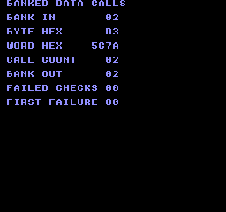
Comando de compilación
New-Item -ItemType Directory -Force .\out | Out-Null
.\kitaqfc\kitaqfc.exe .\kitaq-docs\samples\api-examples\fc\banked_data_calls.c -I .\kitaqfc\lib -I .\kitaq-docs\samples -o .\out\banked_data_calls.nes --mapper=mmc3 --nes-chr=.\kitaq-docs\samples\font.chr --no-cache --no-disasmImplementación y código fuente
kitaqfc/lib/bank.h:18
Read this wrapper's bank shadow; arbitrary mapper writes do not update it.
kitaqfc/lib/bank.c:14
u8 bank_get_current(void)
{
return kq_bank_current;
}bank_switch
Registra el banco solicitado en la biblioteca y lo selecciona mediante la rutina de cambio PRG del compilador, adaptada al mapper.
Sintaxis
void bank_switch(u8 bank);Parámetros
bankNúmero de banco ROM de 8 bits sin signo. En una llamada debe coincidir con la ubicación de la función; en una lectura selecciona el origen. Usa el intervalo válido para el cartucho.
Valor devuelto
Ninguno (void).
Condiciones y límites
Un cambio de banco persistente no debe retirar el código en ejecución ni su dirección de retorno. Coloca esta llamada, la propia bank_switch cuando se use y el código posterior en el banco común o fijo 0, como hace el ejemplo.
El registro de la biblioteca empieza en cero y no detecta el mapa inicial del cartucho. Inicialízalo con bank_switch. Las intrínsecas y las escrituras directas al mapper no actualizan este registro separado; bank_get_current no permite verificar el mapa real del hardware.
Los bancos FC son números lógicos del compilador. Cero designa ROM común, no un destino de cambio; la rutina lo convierte en banco 1. SUROM512 admite 1–30: una constante fuera de rango pasada directamente a la intrínseca de cambio produce un error de compilación; un valor inválido en ejecución selecciona 1 y activa el estado de fallo del mapper. Lee la ROM común directamente, sin pedir un cambio al banco cero.
Ejemplo de uso
bank_switch(2); // Select the payload window and update library bookkeeping.Este fragmento muestra la llamada. Antes de incorporarlo a un programa completo, cumple los requisitos de inicialización y de los búferes indicados.
Resultado esperado
bank_switch(2) registra y selecciona inicialmente el banco 2. Después, el cambio directo selecciona el banco 1 y lee A1 de home1 mientras bank_get_current sigue indicando 2; al volver, home2 devuelve B2 otra vez.
El programa completo enseña a identificar datos con un banco y una dirección cercana, a llamar callbacks entre bancos y a distinguir el registro de la biblioteca del mapa real. Todos los números se muestran en hexadecimal. BANK IN y BANK OUT deben ser 02; BYTE HEX, D3; WORD HEX, 5C7A; FAILED CHECKS y FIRST FAILURE, 00. CGB y FC muestran texto azul; DMG, negro.
CALL COUNT muestra 02: la macro far_call y __farcall invocan el callback una vez cada uno.
Comando de compilación
New-Item -ItemType Directory -Force .\out | Out-Null
.\kitaqfc\kitaqfc.exe .\kitaq-docs\samples\api-examples\fc\banked_data_calls.c -I .\kitaqfc\lib -I .\kitaq-docs\samples -o .\out\banked_data_calls.nes --mapper=mmc3 --nes-chr=.\kitaq-docs\samples\font.chr --no-cache --no-disasmImplementación y código fuente
kitaqfc/lib/bank.h:16
Record the bank in the library shadow and invoke the mapper-aware compiler intrinsic.
kitaqfc/lib/bank.c:7
void bank_switch(u8 bank)
{
kq_bank_current = bank;
__bankswitch(bank);
}far_call
Se expande a __farcall((bank), func). Esta macro conserva el destino como un nombre de función visible para el compilador; no es una llamada indirecta mediante puntero de callback.
Sintaxis
#define far_call(bank, func) __farcall((bank), func)Parámetros
bankNúmero de banco ROM de 8 bits sin signo. En una llamada debe coincidir con la ubicación de la función; en una lectura selecciona el origen. Usa el intervalo válido para el cartucho.
funcNombre declarado de una función sin parámetros. Esta intrínseca de llamada por nombre no acepta una variable que contenga una dirección de función. El argumento bank no se pasa al callback.
Valor devuelto
El tipo de resultado depende de la función llamada. Un callback void no devuelve valor; los callbacks u8 y u16 devuelven su valor escalar. El ejemplo mostrado usa callbacks void.
Condiciones y límites
Estas llamadas no pasan argumentos del usuario ni hacen que el callback admita reentrada por interrupciones. Gestiona correctamente sus datos, pila e interrupciones. La restauración de bancos se prueba con llamadas anidadas y repetidas; el ejemplo no cubre hardware físico ni cualquier posible intercalado de interrupciones.
Los bancos FC son números lógicos del compilador. Cero designa ROM común, no un destino de cambio; la rutina lo convierte en banco 1. SUROM512 admite 1–30: una constante fuera de rango pasada directamente a la intrínseca de cambio produce un error de compilación; un valor inválido en ejecución selecciona 1 y activa el estado de fallo del mapper. Lee la ROM común directamente, sin pedir un cambio al banco cero.
Ejemplo de uso
far_call(3,callback); // No arguments; callback reads payload[0] in bank 3.
bank_expect(callback_count==1 && callback_byte==0xD3,15);Este fragmento muestra la llamada. Antes de incorporarlo a un programa completo, cumple los requisitos de inicialización y de los búferes indicados.
Resultado esperado
En este punto del programa completo, far_call eleva callback_count a 1. El callback lee D3 del banco 3. Una lectura cercana posterior de B2 en home2 verifica el retorno con el banco 2 seleccionado.
El programa completo enseña a identificar datos con un banco y una dirección cercana, a llamar callbacks entre bancos y a distinguir el registro de la biblioteca del mapa real. Todos los números se muestran en hexadecimal. BANK IN y BANK OUT deben ser 02; BYTE HEX, D3; WORD HEX, 5C7A; FAILED CHECKS y FIRST FAILURE, 00. CGB y FC muestran texto azul; DMG, negro.
CALL COUNT muestra 02: la macro far_call y __farcall invocan el callback una vez cada uno.
Comando de compilación
New-Item -ItemType Directory -Force .\out | Out-Null
.\kitaqfc\kitaqfc.exe .\kitaq-docs\samples\api-examples\fc\banked_data_calls.c -I .\kitaqfc\lib -I .\kitaq-docs\samples -o .\out\banked_data_calls.nes --mapper=mmc3 --nes-chr=.\kitaq-docs\samples\font.chr --no-cache --no-disasmImplementación y código fuente
kitaqfc/lib/bank.h:36
far_data_read
Copia len bytes del banco ROM indicado a la RAM del llamador mediante la intrínseca de copia lejana. Restaura el banco anterior antes de volver.
Sintaxis
void far_data_read(u8 bank, const void* addr, void* dst, u16 len);Parámetros
bankNúmero de banco ROM de 8 bits sin signo. En una llamada debe coincidir con la ubicación de la función; en una lectura selecciona el origen. Usa el intervalo válido para el cartucho.
addrPuntero cercano a bytes legibles del banco de ROM seleccionado. No incluye el número de banco.
dstDestino en memoria escribible, con espacio para todos los bytes copiados. Salvo en una transferencia de cero bytes, no se comprueba si el destino es nulo o inválido.
lenCantidad de bytes, de 0 a 65535. Con cero no se copia memoria, pero sí se selecciona y restaura el banco.
Valor devuelto
Ninguno (void).
Condiciones y límites
Mantenga todo el origen en el mapeo de ROM previsto y todo el destino en memoria escribible. La copia no cambia automáticamente de banco al cruzar una ventana, no trata solapamientos como memmove ni sincroniza escrituras en VRAM. Para VRAM, use las API de transferencia gráfica.
Las lecturas y copias lejanas son síncronas y usan memoria de trabajo compartida del compilador. No dejes que una interrupción ejecute otra transferencia sobre esa memoria mientras está en uso. En GB, la copia también guarda el banco anterior en una posición HRAM compartida. El ejemplo ejecuta las operaciones desde código fijo, sin un manejador de transferencia que compita.
Los bancos FC son números lógicos del compilador. Cero designa ROM común, no un destino de cambio; la rutina lo convierte en banco 1. SUROM512 admite 1–30: una constante fuera de rango pasada directamente a la intrínseca de cambio produce un error de compilación; un valor inválido en ejecución selecciona 1 y activa el estado de fallo del mapper. Lee la ROM común directamente, sin pedir un cambio al banco cero.
Ejemplo de uso
far_data_read(3,payload,buffer,4); // Copy into four writable RAM bytes.
bank_expect(buffer[0]==0xD3 && buffer[1]==0x7A && buffer[2]==0x5C && buffer[3]==0x96,7);Este fragmento muestra la llamada. Antes de incorporarlo a un programa completo, cumple los requisitos de inicialización y de los búferes indicados.
Resultado esperado
Este fragmento copia 4 bytes mediante far_data_read y contrasta el búfer con D3 7A 5C 96. El llamador conserva su descriptor o puntero de origen; el programa completo comprueba aparte una copia de longitud cero y la restauración del banco.
El programa completo enseña a identificar datos con un banco y una dirección cercana, a llamar callbacks entre bancos y a distinguir el registro de la biblioteca del mapa real. Todos los números se muestran en hexadecimal. BANK IN y BANK OUT deben ser 02; BYTE HEX, D3; WORD HEX, 5C7A; FAILED CHECKS y FIRST FAILURE, 00. CGB y FC muestran texto azul; DMG, negro.
CALL COUNT muestra 02: la macro far_call y __farcall invocan el callback una vez cada uno.
Comando de compilación
New-Item -ItemType Directory -Force .\out | Out-Null
.\kitaqfc\kitaqfc.exe .\kitaq-docs\samples\api-examples\fc\banked_data_calls.c -I .\kitaqfc\lib -I .\kitaq-docs\samples -o .\out\banked_data_calls.nes --mapper=mmc3 --nes-chr=.\kitaq-docs\samples\font.chr --no-cache --no-disasmImplementación y código fuente
kitaqfc/lib/bank.h:24
Copy len bytes from banked ROM to caller-owned writable storage.
kitaqfc/lib/bank.c:32
void far_data_read(u8 bank, const void* addr, void* dst, u16 len)
{
__far_memcpy((u8*)dst, bank, (u16)addr, len);
}far_data_read16
Lee dos bytes consecutivos mediante __farpeek16 y forma una palabra little-endian. El primer byte ocupa los ocho bits bajos.
Sintaxis
u16 far_data_read16(u8 bank, const void* addr);Parámetros
bankNúmero de banco ROM de 8 bits sin signo. En una llamada debe coincidir con la ubicación de la función; en una lectura selecciona el origen. Usa el intervalo válido para el cartucho.
addrPuntero cercano a bytes legibles del banco de ROM seleccionado. No incluye el número de banco.
Valor devuelto
La palabra little-endian leída, como u16 (0–65535).
Condiciones y límites
El byte o la palabra completos deben ser legibles en el mapa CPU seleccionado. No se validan punteros, no se recortan direcciones ni se cambia automáticamente de banco al cruzar una ventana. Una palabra necesita dos bytes consecutivos válidos.
Las lecturas y copias lejanas son síncronas y usan memoria de trabajo compartida del compilador. No dejes que una interrupción ejecute otra transferencia sobre esa memoria mientras está en uso. En GB, la copia también guarda el banco anterior en una posición HRAM compartida. El ejemplo ejecuta las operaciones desde código fijo, sin un manejador de transferencia que compita.
Los bancos FC son números lógicos del compilador. Cero designa ROM común, no un destino de cambio; la rutina lo convierte en banco 1. SUROM512 admite 1–30: una constante fuera de rango pasada directamente a la intrínseca de cambio produce un error de compilación; un valor inválido en ejecución selecciona 1 y activa el estado de fallo del mapper. Lee la ROM común directamente, sin pedir un cambio al banco cero.
Ejemplo de uso
word_value=far_data_read16(3,payload+1); // Little-endian 7A 5C -> 0x5C7A.
bank_expect(word_value==0x5C7A,6);Este fragmento muestra la llamada. Antes de incorporarlo a un programa completo, cumple los requisitos de inicialización y de los búferes indicados.
Resultado esperado
Este fragmento usa far_data_read16 para leer payload+1 del banco 3 y comprueba 5C7A. El programa completo también lee home2 con un puntero cercano para confirmar que se ha restaurado el banco 2.
El programa completo enseña a identificar datos con un banco y una dirección cercana, a llamar callbacks entre bancos y a distinguir el registro de la biblioteca del mapa real. Todos los números se muestran en hexadecimal. BANK IN y BANK OUT deben ser 02; BYTE HEX, D3; WORD HEX, 5C7A; FAILED CHECKS y FIRST FAILURE, 00. CGB y FC muestran texto azul; DMG, negro.
CALL COUNT muestra 02: la macro far_call y __farcall invocan el callback una vez cada uno.
Comando de compilación
New-Item -ItemType Directory -Force .\out | Out-Null
.\kitaqfc\kitaqfc.exe .\kitaq-docs\samples\api-examples\fc\banked_data_calls.c -I .\kitaqfc\lib -I .\kitaq-docs\samples -o .\out\banked_data_calls.nes --mapper=mmc3 --nes-chr=.\kitaq-docs\samples\font.chr --no-cache --no-disasmImplementación y código fuente
kitaqfc/lib/bank.h:22
Read a 16-bit value through the bank-aware compiler intrinsic.
kitaqfc/lib/bank.c:26
u16 far_data_read16(u8 bank, const void* addr)
{
return __farpeek16(bank, (u16)addr);
}far_data_read8
Lee un byte del banco ROM y la dirección indicados mediante __farpeek8; restaura el banco anterior y devuelve el valor.
Sintaxis
u8 far_data_read8(u8 bank, const void* addr);Parámetros
bankNúmero de banco ROM de 8 bits sin signo. En una llamada debe coincidir con la ubicación de la función; en una lectura selecciona el origen. Usa el intervalo válido para el cartucho.
addrPuntero cercano a bytes legibles del banco de ROM seleccionado. No incluye el número de banco.
Valor devuelto
El byte leído, como u8 (0–255).
Condiciones y límites
El byte o la palabra completos deben ser legibles en el mapa CPU seleccionado. No se validan punteros, no se recortan direcciones ni se cambia automáticamente de banco al cruzar una ventana. Una palabra necesita dos bytes consecutivos válidos.
Las lecturas y copias lejanas son síncronas y usan memoria de trabajo compartida del compilador. No dejes que una interrupción ejecute otra transferencia sobre esa memoria mientras está en uso. En GB, la copia también guarda el banco anterior en una posición HRAM compartida. El ejemplo ejecuta las operaciones desde código fijo, sin un manejador de transferencia que compita.
Los bancos FC son números lógicos del compilador. Cero designa ROM común, no un destino de cambio; la rutina lo convierte en banco 1. SUROM512 admite 1–30: una constante fuera de rango pasada directamente a la intrínseca de cambio produce un error de compilación; un valor inválido en ejecución selecciona 1 y activa el estado de fallo del mapper. Lee la ROM común directamente, sin pedir un cambio al banco cero.
Ejemplo de uso
byte_value=far_data_read8(3,payload); // One byte: 0xD3.
bank_expect(byte_value==0xD3,5);Este fragmento muestra la llamada. Antes de incorporarlo a un programa completo, cumple los requisitos de inicialización y de los búferes indicados.
Resultado esperado
Este fragmento usa far_data_read8 para leer payload del banco 3 y comprueba D3. El programa completo también lee home2 con un puntero cercano para confirmar que se ha restaurado el banco 2.
El programa completo enseña a identificar datos con un banco y una dirección cercana, a llamar callbacks entre bancos y a distinguir el registro de la biblioteca del mapa real. Todos los números se muestran en hexadecimal. BANK IN y BANK OUT deben ser 02; BYTE HEX, D3; WORD HEX, 5C7A; FAILED CHECKS y FIRST FAILURE, 00. CGB y FC muestran texto azul; DMG, negro.
CALL COUNT muestra 02: la macro far_call y __farcall invocan el callback una vez cada uno.
Comando de compilación
New-Item -ItemType Directory -Force .\out | Out-Null
.\kitaqfc\kitaqfc.exe .\kitaq-docs\samples\api-examples\fc\banked_data_calls.c -I .\kitaqfc\lib -I .\kitaq-docs\samples -o .\out\banked_data_calls.nes --mapper=mmc3 --nes-chr=.\kitaq-docs\samples\font.chr --no-cache --no-disasmImplementación y código fuente
kitaqfc/lib/bank.h:20
Read one byte from an explicit ROM bank and 16-bit CPU address.
kitaqfc/lib/bank.c:20
u8 far_data_read8(u8 bank, const void* addr)
{
return __farpeek8(bank, (u16)addr);
}farptr_make
Guarda un byte de banco y un puntero visible para la CPU en el BankPtr del llamador. Construye un descriptor; no cambia de banco ni lee los datos apuntados.
Sintaxis
void farptr_make(BankPtr* out, u8 bank, const u8* ptr);Parámetros
outPuntero a espacio escribible para un BankPtr de tres bytes. Si out es nulo, no se escribe nada.
bankNúmero de banco ROM de 8 bits sin signo. En una llamada debe coincidir con la ubicación de la función; en una lectura selecciona el origen. Usa el intervalo válido para el cartucho.
ptrDirección de 16 bits visible para la CPU que se guardará en el descriptor. Se copia sin cambios; no se comprueba su validez en el banco elegido.
Valor devuelto
Ninguno (void).
Ejemplo de uso
farptr_make(&pointer,3,payload+1); // Store a bank and address; do not read ROM.
bank_expect(pointer.bank==3 && pointer.ptr==payload+1,8);
farptr_make(0,1,home1); // A null destination is ignored.Este fragmento muestra la llamada. Antes de incorporarlo a un programa completo, cumple los requisitos de inicialización y de los búferes indicados.
Resultado esperado
El descriptor se fija en banco 3 y payload+1. Sus lectores obtienen 7A, 5C7A y los tres bytes 7A 5C 96. La llamada con salida nula no debe cambiar el estado.
El programa completo enseña a identificar datos con un banco y una dirección cercana, a llamar callbacks entre bancos y a distinguir el registro de la biblioteca del mapa real. Todos los números se muestran en hexadecimal. BANK IN y BANK OUT deben ser 02; BYTE HEX, D3; WORD HEX, 5C7A; FAILED CHECKS y FIRST FAILURE, 00. CGB y FC muestran texto azul; DMG, negro.
CALL COUNT muestra 02: la macro far_call y __farcall invocan el callback una vez cada uno.
Comando de compilación
New-Item -ItemType Directory -Force .\out | Out-Null
.\kitaqfc\kitaqfc.exe .\kitaq-docs\samples\api-examples\fc\banked_data_calls.c -I .\kitaqfc\lib -I .\kitaq-docs\samples -o .\out\banked_data_calls.nes --mapper=mmc3 --nes-chr=.\kitaq-docs\samples\font.chr --no-cache --no-disasmImplementación y código fuente
kitaqfc/lib/bank.h:26
Store a bank/address pair without reading memory; null output is ignored.
kitaqfc/lib/bank.c:38
void farptr_make(BankPtr* out, u8 bank, const u8* ptr)
{
if (out == 0) return;
out->bank = bank;
out->ptr = ptr;
}farptr_read
Copia len bytes desde un BankPtr a RAM escribible. El descriptor se pasa por valor, por lo que el puntero del llamador sigue señalando el inicio del origen.
Sintaxis
void farptr_read(BankPtr ptr, void* dst, u16 len);Parámetros
ptrUn valor BankPtr con los campos bank y ptr. Pasa el descriptor, no su dirección. El descriptor del llamador no se modifica.
dstDestino en memoria escribible, con espacio para todos los bytes copiados. Salvo en una transferencia de cero bytes, no se comprueba si el destino es nulo o inválido.
lenCantidad de bytes, de 0 a 65535. Con cero no se copia memoria, pero sí se selecciona y restaura el banco.
Valor devuelto
Ninguno (void).
Condiciones y límites
Mantenga todo el origen en el mapeo de ROM previsto y todo el destino en memoria escribible. La copia no cambia automáticamente de banco al cruzar una ventana, no trata solapamientos como memmove ni sincroniza escrituras en VRAM. Para VRAM, use las API de transferencia gráfica.
Las lecturas y copias lejanas son síncronas y usan memoria de trabajo compartida del compilador. No dejes que una interrupción ejecute otra transferencia sobre esa memoria mientras está en uso. En GB, la copia también guarda el banco anterior en una posición HRAM compartida. El ejemplo ejecuta las operaciones desde código fijo, sin un manejador de transferencia que compita.
Los bancos FC son números lógicos del compilador. Cero designa ROM común, no un destino de cambio; la rutina lo convierte en banco 1. SUROM512 admite 1–30: una constante fuera de rango pasada directamente a la intrínseca de cambio produce un error de compilación; un valor inválido en ejecución selecciona 1 y activa el estado de fallo del mapper. Lee la ROM común directamente, sin pedir un cambio al banco cero.
Ejemplo de uso
farptr_read(pointer,buffer,3);
bank_expect(buffer[0]==0x7A && buffer[1]==0x5C && buffer[2]==0x96,11);
bank_expect(pointer.bank==3 && pointer.ptr==payload+1,23);Este fragmento muestra la llamada. Antes de incorporarlo a un programa completo, cumple los requisitos de inicialización y de los búferes indicados.
Resultado esperado
Este fragmento copia 3 bytes mediante farptr_read y contrasta el búfer con 7A 5C 96. El llamador conserva su descriptor o puntero de origen; el programa completo comprueba aparte una copia de longitud cero y la restauración del banco.
El programa completo enseña a identificar datos con un banco y una dirección cercana, a llamar callbacks entre bancos y a distinguir el registro de la biblioteca del mapa real. Todos los números se muestran en hexadecimal. BANK IN y BANK OUT deben ser 02; BYTE HEX, D3; WORD HEX, 5C7A; FAILED CHECKS y FIRST FAILURE, 00. CGB y FC muestran texto azul; DMG, negro.
CALL COUNT muestra 02: la macro far_call y __farcall invocan el callback una vez cada uno.
Comando de compilación
New-Item -ItemType Directory -Force .\out | Out-Null
.\kitaqfc\kitaqfc.exe .\kitaq-docs\samples\api-examples\fc\banked_data_calls.c -I .\kitaqfc\lib -I .\kitaq-docs\samples -o .\out\banked_data_calls.nes --mapper=mmc3 --nes-chr=.\kitaq-docs\samples\font.chr --no-cache --no-disasmImplementación y código fuente
kitaqfc/lib/bank.h:32
Copy len bytes from a far pointer; the caller provides a sufficiently large destination.
kitaqfc/lib/bank.c:58
void farptr_read(BankPtr ptr, void* dst, u16 len)
{
__far_memcpy((u8*)dst, ptr.bank, (u16)ptr.ptr, len);
}farptr_read16
Lee una palabra little-endian del banco y la dirección del BankPtr. El descriptor se pasa por valor y su puntero no avanza.
Sintaxis
u16 farptr_read16(BankPtr ptr);Parámetros
ptrUn valor BankPtr con los campos bank y ptr. Pasa el descriptor, no su dirección. El descriptor del llamador no se modifica.
Valor devuelto
La palabra little-endian leída, como u16 (0–65535).
Condiciones y límites
El byte o la palabra completos deben ser legibles en el mapa CPU seleccionado. No se validan punteros, no se recortan direcciones ni se cambia automáticamente de banco al cruzar una ventana. Una palabra necesita dos bytes consecutivos válidos.
Las lecturas y copias lejanas son síncronas y usan memoria de trabajo compartida del compilador. No dejes que una interrupción ejecute otra transferencia sobre esa memoria mientras está en uso. En GB, la copia también guarda el banco anterior en una posición HRAM compartida. El ejemplo ejecuta las operaciones desde código fijo, sin un manejador de transferencia que compita.
Los bancos FC son números lógicos del compilador. Cero designa ROM común, no un destino de cambio; la rutina lo convierte en banco 1. SUROM512 admite 1–30: una constante fuera de rango pasada directamente a la intrínseca de cambio produce un error de compilación; un valor inválido en ejecución selecciona 1 y activa el estado de fallo del mapper. Lee la ROM común directamente, sin pedir un cambio al banco cero.
Ejemplo de uso
bank_expect(farptr_read16(pointer)==0x5C7A,10);Este fragmento muestra la llamada. Antes de incorporarlo a un programa completo, cumple los requisitos de inicialización y de los búferes indicados.
Resultado esperado
Este fragmento usa farptr_read16 para leer pointer.ptr del banco 3 y comprueba 5C7A. El programa completo también lee home2 con un puntero cercano para confirmar que se ha restaurado el banco 2.
El programa completo enseña a identificar datos con un banco y una dirección cercana, a llamar callbacks entre bancos y a distinguir el registro de la biblioteca del mapa real. Todos los números se muestran en hexadecimal. BANK IN y BANK OUT deben ser 02; BYTE HEX, D3; WORD HEX, 5C7A; FAILED CHECKS y FIRST FAILURE, 00. CGB y FC muestran texto azul; DMG, negro.
CALL COUNT muestra 02: la macro far_call y __farcall invocan el callback una vez cada uno.
Comando de compilación
New-Item -ItemType Directory -Force .\out | Out-Null
.\kitaqfc\kitaqfc.exe .\kitaq-docs\samples\api-examples\fc\banked_data_calls.c -I .\kitaqfc\lib -I .\kitaq-docs\samples -o .\out\banked_data_calls.nes --mapper=mmc3 --nes-chr=.\kitaq-docs\samples\font.chr --no-cache --no-disasmImplementación y código fuente
kitaqfc/lib/bank.h:30
Read a 16-bit value using both components of the far pointer.
kitaqfc/lib/bank.c:52
u16 farptr_read16(BankPtr ptr)
{
return __farpeek16(ptr.bank, (u16)ptr.ptr);
}farptr_read8
Lee un byte usando ambos campos de un BankPtr pasado por valor. El descriptor aporta el banco que un puntero cercano no contiene.
Sintaxis
u8 farptr_read8(BankPtr ptr);Parámetros
ptrUn valor BankPtr con los campos bank y ptr. Pasa el descriptor, no su dirección. El descriptor del llamador no se modifica.
Valor devuelto
El byte leído, como u8 (0–255).
Condiciones y límites
El byte o la palabra completos deben ser legibles en el mapa CPU seleccionado. No se validan punteros, no se recortan direcciones ni se cambia automáticamente de banco al cruzar una ventana. Una palabra necesita dos bytes consecutivos válidos.
Las lecturas y copias lejanas son síncronas y usan memoria de trabajo compartida del compilador. No dejes que una interrupción ejecute otra transferencia sobre esa memoria mientras está en uso. En GB, la copia también guarda el banco anterior en una posición HRAM compartida. El ejemplo ejecuta las operaciones desde código fijo, sin un manejador de transferencia que compita.
Los bancos FC son números lógicos del compilador. Cero designa ROM común, no un destino de cambio; la rutina lo convierte en banco 1. SUROM512 admite 1–30: una constante fuera de rango pasada directamente a la intrínseca de cambio produce un error de compilación; un valor inválido en ejecución selecciona 1 y activa el estado de fallo del mapper. Lee la ROM común directamente, sin pedir un cambio al banco cero.
Ejemplo de uso
bank_expect(farptr_read8(pointer)==0x7A,9);Este fragmento muestra la llamada. Antes de incorporarlo a un programa completo, cumple los requisitos de inicialización y de los búferes indicados.
Resultado esperado
Este fragmento usa farptr_read8 para leer pointer.ptr del banco 3 y comprueba 7A. El programa completo también lee home2 con un puntero cercano para confirmar que se ha restaurado el banco 2.
El programa completo enseña a identificar datos con un banco y una dirección cercana, a llamar callbacks entre bancos y a distinguir el registro de la biblioteca del mapa real. Todos los números se muestran en hexadecimal. BANK IN y BANK OUT deben ser 02; BYTE HEX, D3; WORD HEX, 5C7A; FAILED CHECKS y FIRST FAILURE, 00. CGB y FC muestran texto azul; DMG, negro.
CALL COUNT muestra 02: la macro far_call y __farcall invocan el callback una vez cada uno.
Comando de compilación
New-Item -ItemType Directory -Force .\out | Out-Null
.\kitaqfc\kitaqfc.exe .\kitaq-docs\samples\api-examples\fc\banked_data_calls.c -I .\kitaqfc\lib -I .\kitaq-docs\samples -o .\out\banked_data_calls.nes --mapper=mmc3 --nes-chr=.\kitaq-docs\samples\font.chr --no-cache --no-disasmImplementación y código fuente
kitaqfc/lib/bank.h:28
Read one byte using both the bank and address of the supplied far pointer.
kitaqfc/lib/bank.c:46
u8 farptr_read8(BankPtr ptr)
{
return __farpeek8(ptr.bank, (u16)ptr.ptr);
}chain.h — Búferes circulares para el historial de posiciones
Usa ChainBody para serpientes o cuerdas articuladas y Chain para registrar un historial de posiciones. Cada articulación guarda su posición actual y una de 16 direcciones; los giros se propagan hacia atrás una articulación por actualización. Las operaciones del cuerpo admiten campos con continuidad entre bordes, crecimiento duplicando la cola y correcciones de hasta dos píxeles por eje.
chain_wrap_delta
Calcula el desplazamiento con signo más corto desde la posición actual al objetivo en un eje cuyos extremos se unen. Úsalo para seguimiento o comparación de distancias a través del borde del campo.
Sintaxis
s16 chain_wrap_delta(u8 target, u8 current, u16 size);Parámetros
targetCoordenada objetivo, de 0 a size−1.
currentCoordenada actual, de 0 a size−1.
sizeLongitud del eje circular, de 1 a 256: ancho para X y alto para Y. Es un argumento de 16 bits para poder representar 256.
Valor devuelto
Devuelve el desplazamiento más corto como s16: positivo hacia coordenadas crecientes, negativo hacia decrecientes y cero en la misma posición. Las entradas válidas dan −128..+128. En pantalla, derecha y abajo son positivos.
Condiciones y límites
Incluye chain.h y compila chain.c exactamente una vez. No hace falta inicializar Chain ni ChainBody. La función solo calcula un desplazamiento; no modifica arrays de coordenadas, número de articulaciones ni pantalla.
La función no valida ni normaliza entradas. No pases size=0, size>256 ni coordenadas iguales o mayores que size. Ajusta de forma circular las de un sistema mayor a 0..size−1 antes de llamar.
Si ambas rutas tienen la misma longitud, conserva el signo del desplazamiento directo target−current. Con size=160, 0→80 devuelve +80 y 80→0 devuelve −80. Con size=1, cero es la única coordenada válida y el resultado es cero.
Ejemplo de uso
distances[0]=chain_wrap_delta(1,159,160); // +2: cross the right edge.
distances[1]=chain_wrap_delta(159,1,160); // -2: cross the left edge.
distances[2]=chain_wrap_delta(80,0,160); // +80: keep the direct sign.
distances[3]=chain_wrap_delta(0,80,160); // -80: same-length routes.
distances[4]=chain_wrap_delta(0,0,1); // 0: the only valid position.Este fragmento muestra la llamada. Antes de incorporarlo a un programa completo, cumple los requisitos de inicialización y de los búferes indicados.
Resultado esperado
Este ejemplo muestra coordenadas circulares. Cada flecha va de la posición actual al objetivo. Muestra +02/−02 al cruzar un borde de ancho 160, +80/−80 para medio campo y +00 para ancho 1. El cero inicial es relleno decimal. El ejemplo no dibuja ni mueve un objeto.
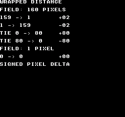
Comando de compilación
New-Item -ItemType Directory -Force .\out | Out-Null
.\kitaqfc\kitaqfc.exe .\kitaq-docs\samples\api-examples\fc\chain_wrap.c -I .\kitaqfc\lib -I .\kitaq-docs\samples -o .\out\chain_wrap.nes --mapper=nrom --nes-chr=.\kitaq-docs\samples\font.chr --no-cache --no-disasmImplementación y código fuente
kitaqfc/lib/chain.h:39
Return target minus current along the shortest wrapped route. Supply size 1..256 and coordinates in 0..size-1; inputs are not normalized. Exactly half a field retains the direct displacement sign.
kitaqfc/lib/chain.c:103
s16 chain_wrap_delta(u8 target, u8 current, u16 size)
{
s16 delta;
s16 half;
delta = (s16)((s16)target - (s16)current);
half = (s16)(size >> 1);
// At exactly half a field, retain the sign of the direct displacement.
if (((u16)delta & 0x8000) != 0) {
if ((u16)(0 - delta) > (u16)half) delta = (s16)(delta + (s16)size);
} else if ((u16)delta > (u16)half) delta = (s16)(delta - (s16)size);
return delta;
}chain_body_init
Asocia tres arrays de articulaciones del código que llama y pone el número a cero, sin reservar memoria.
Sintaxis
u8 chain_body_init(ChainBody* body, u8* x, u8* y, u8* heading, u8 capacity, u16 width, u16 height);Parámetros
bodyChainBodyde destino; se ignora null. Salvo al inicializar, pasa un estado inicializado.xArray de coordenadas X de las articulaciones.
yArray de coordenadas Y de las articulaciones.
headingArray de direcciones de las articulaciones.
capacityLongitud reservada del array, de 1 a 255.
widthAncho del campo con bordes conectados, de 1 a 256.
heightAlto del campo con bordes conectados, de 1 a 256.
Valor devuelto
Devuelve 1 si tiene éxito y 0 si los argumentos no son válidos. Si falla con un cuerpo no nulo, pone capacity y count a cero y desactiva las actualizaciones.
Condiciones y límites
Incluye chain.h y compila chain.c exactamente una vez. ChainBody guarda la posición y dirección actuales de cada articulación. Es un tipo de estado distinto del historial circular de posiciones Chain.
Proporciona tres arrays escribibles separados, x, y y heading, de capacity bytes cada uno. Mantenlos válidos mientras se use el cuerpo. El índice cero es la cabeza, incluida en count. No cambies los punteros, la capacidad ni las dimensiones del campo tras inicializar.
Las direcciones usan 16 sectores en sentido horario: 0=derecha, 4=abajo, 8=izquierda, 12=arriba. Solo se usan los cuatro bits bajos. Las coordenadas crecen hacia la derecha y abajo; cada dimensión va de 1 a 256 píxeles.
Ejemplo de uso
chain_body_init(&body,joint_x,joint_y,joint_heading,8,160,144);
// Eight caller-owned slots, including the head, on a wrapped 160x144 field.Este fragmento muestra la llamada. Antes de incorporarlo a un programa completo, cumple los requisitos de inicialización y de los búferes indicados.
Resultado esperado
La imagen muestra arriba un cuerpo recto, en medio una actualización después de girar hacia abajo y abajo cuatro actualizaciones tras el giro. Las coordenadas se dibujan al doble de su tamaño lógico. El giro se propaga hacia atrás desde la cabeza a la derecha. CGB y FC usan rojo para la cabeza, azul para el cuerpo y verde para la cola; DMG usa negro. Cuatro actualizaciones de estabilización separan la cola duplicada tras crecer. Son tres vistas de las mismas ocho articulaciones, no un cuerpo de 24.
![chain_body_init: NTSC — La imagen muestra arriba un cuerpo recto, en medio una actualización después de girar hacia abajo y abajo cuatro actualizaciones tras el giro. Las coordenadas se dibujan al doble de su tamaño lógico. El giro se propaga hacia atrás desde la cabeza a la derecha. CGB y FC usan rojo para la cabeza, azul para el cuerpo y verde para la cola; DMG usa negro. Cuatro actualizaciones de estabilización separan la cola duplicada tras crecer. Son tres vistas de las mismas ocho articulaciones, no un cuerpo de 24.](../verification/api-chain-body/example/fc/ntsc.png)
Comando de compilación
New-Item -ItemType Directory -Force .\out | Out-Null
.\kitaqfc\kitaqfc.exe .\kitaq-docs\samples\api-examples\fc\chain_body.c -I .\kitaqfc\lib -I .\kitaq-docs\samples -o .\out\chain_body.nes --mapper=nrom --nes-chr=.\kitaq-docs\samples\api-examples\fc\chain_body.chr --no-cache --no-disasmImplementación y código fuente
kitaqfc/lib/chain.h:57
Attach three non-overlapping capacity-byte arrays. Return 1 on success. Invalid storage, zero capacity or dimensions outside 1..256 disable the body.
kitaqfc/lib/chain.c:127
u8 chain_body_init(ChainBody* body, u8* x, u8* y, u8* heading, u8 capacity, u16 width, u16 height)
{
if (body == 0) return 0;
body->x = x;
body->y = y;
body->heading = heading;
body->count = 0;
body->capacity = 0;
body->width = width;
body->height = height;
if (x == 0 || y == 0 || heading == 0 || capacity == 0) return 0;
if (width == 0 || width > 256 || height == 0 || height > 256) return 0;
body->capacity = capacity;
return 1;
}chain_body_reset
Construye una postura inicial recta colocando articulaciones detrás de la cabeza indicada.
Sintaxis
u8 chain_body_reset(ChainBody* body, u8 count, u8 head_x, u8 head_y, u8 heading);Parámetros
bodyChainBodyde destino; se ignora null. Salvo al inicializar, pasa un estado inicializado.countNúmero de articulaciones, incluida la cabeza, de 1 a capacity.
head_xCoordenada X de la cabeza, ajustada de forma circular al ancho del campo.
head_yCoordenada Y de la cabeza, ajustada de forma circular al alto del campo.
headingDirección de la cabeza en el sistema de 16 sectores.
Valor devuelto
Devuelve 1 si tiene éxito. Un número cero o excesivo, o un cuerpo nulo, devuelve 0 sin cambiar la postura.
Condiciones y límites
Incluye chain.h y compila chain.c exactamente una vez. ChainBody guarda la posición y dirección actuales de cada articulación. Es un tipo de estado distinto del historial circular de posiciones Chain.
Proporciona tres arrays escribibles separados, x, y y heading, de capacity bytes cada uno. Mantenlos válidos mientras se use el cuerpo. El índice cero es la cabeza, incluida en count. No cambies los punteros, la capacidad ni las dimensiones del campo tras inicializar.
Las direcciones usan 16 sectores en sentido horario: 0=derecha, 4=abajo, 8=izquierda, 12=arriba. Solo se usan los cuatro bits bajos. Las coordenadas crecen hacia la derecha y abajo; cada dimensión va de 1 a 256 píxeles.
La separación cardinal es de cuatro píxeles. Las direcciones intermedias usan vectores enteros como (4,1), (3,3) y (1,4), así que la distancia euclídea no es exactamente cuatro píxeles. La postura inicial puede cruzar un borde del campo.
Ejemplo de uso
chain_body_reset(&body,7,48,16,0); // Seven joints, facing right.Este fragmento muestra la llamada. Antes de incorporarlo a un programa completo, cumple los requisitos de inicialización y de los búferes indicados.
Resultado esperado
La imagen muestra arriba un cuerpo recto, en medio una actualización después de girar hacia abajo y abajo cuatro actualizaciones tras el giro. Las coordenadas se dibujan al doble de su tamaño lógico. El giro se propaga hacia atrás desde la cabeza a la derecha. CGB y FC usan rojo para la cabeza, azul para el cuerpo y verde para la cola; DMG usa negro. Cuatro actualizaciones de estabilización separan la cola duplicada tras crecer. Son tres vistas de las mismas ocho articulaciones, no un cuerpo de 24.
Comando de compilación
New-Item -ItemType Directory -Force .\out | Out-Null
.\kitaqfc\kitaqfc.exe .\kitaq-docs\samples\api-examples\fc\chain_body.c -I .\kitaqfc\lib -I .\kitaq-docs\samples -o .\out\chain_body.nes --mapper=nrom --nes-chr=.\kitaq-docs\samples\api-examples\fc\chain_body.chr --no-cache --no-disasmImplementación y código fuente
kitaqfc/lib/chain.h:61
Seed count joints in a straight pose behind the head; count includes the head. Return 0 without changing the pose if count is zero or exceeds capacity. Coordinates wrap to the playfield and headings are masked to 0..15.
kitaqfc/lib/chain.c:143
u8 chain_body_reset(ChainBody* body, u8 count, u8 head_x, u8 head_y, u8 heading)
{
// Cache caller storage once; following math and old-heading propagation
// use these local values. Avoid decoding packed struct pointers per joint.
u8* coord_x;u8* coord_y;u8* directions;u16 width;u16 height;
u8 i;
u8 x;
u8 y;
s16 ox;
s16 oy;
if (body == 0) return 0;
if (count == 0 || count > body->capacity) return 0;
coord_x=body->x;coord_y=body->y;directions=body->heading;
width=body->width;height=body->height;
heading = (u8)(heading & 15);
x = chain_body_wrap((s16)head_x, width);
y = chain_body_wrap((s16)head_y, height);
ox = chain_body_offset_x(heading);
oy = chain_body_offset_y(heading);
i = 0;
while (i < count) {
coord_x[(__safe_index u8)i] = x;
coord_y[(__safe_index u8)i] = y;
directions[(__safe_index u8)i] = heading;
x = chain_body_wrap((s16)((s16)x - ox), width);
y = chain_body_wrap((s16)((s16)y - oy), height);
i = (u8)(i + 1);
}
body->count = count;
return 1;
}chain_body_step
Establece la postura de la cabeza y acerca gradualmente cada articulación al punto de unión detrás de su predecesora. Los cambios de dirección se propagan una articulación por actualización.
Sintaxis
void chain_body_step(ChainBody* body, u8 head_x, u8 head_y, u8 heading);Parámetros
bodyChainBodyde destino; se ignora null. Salvo al inicializar, pasa un estado inicializado.head_xCoordenada X de la cabeza, ajustada de forma circular al ancho del campo.
head_yCoordenada Y de la cabeza, ajustada de forma circular al alto del campo.
headingDirección de la cabeza en el sistema de 16 sectores.
Valor devuelto
No devuelve ningún valor.
Condiciones y límites
Incluye chain.h y compila chain.c exactamente una vez. ChainBody guarda la posición y dirección actuales de cada articulación. Es un tipo de estado distinto del historial circular de posiciones Chain.
Proporciona tres arrays escribibles separados, x, y y heading, de capacity bytes cada uno. Mantenlos válidos mientras se use el cuerpo. El índice cero es la cabeza, incluida en count. No cambies los punteros, la capacidad ni las dimensiones del campo tras inicializar.
Las direcciones usan 16 sectores en sentido horario: 0=derecha, 4=abajo, 8=izquierda, 12=arriba. Solo se usan los cuatro bits bajos. Las coordenadas crecen hacia la derecha y abajo; cada dimensión va de 1 a 256 píxeles.
Usa la posición actualizada del predecesor para hallar el punto de unión objetivo y calcula el desplazamiento circular más corto en cada eje. Cero no mueve; una magnitud de 1 a 4 mueve un píxel y de 5 o más, dos. A exactamente medio campo, conserva el signo original.
Pasa a la siguiente articulación la dirección guardada de cada una antes de actualizarla, para propagar el giro por el cuerpo. Un cuerpo vacío no cambia.
El código que llama gestiona velocidad y aceleración de la cabeza, colisiones, dibujo y espera. Normalmente actualiza primero la cabeza y llama una vez a chain_body_step por paso de simulación. Es seguimiento de articulaciones, no un solucionador de cuerpos rígidos ni de restricciones exactas de longitud.
Ejemplo de uso
chain_body_step(&body,48,20,4); // The head turns down; only joint 1 receives 4.
show_pose(8,34);
for(step=1;step<4;step++) {
chain_body_step(&body,48,(u8)(20+step),4);
}
// After four ticks, the new heading has reached joints 1 through 4.Este fragmento muestra la llamada. Antes de incorporarlo a un programa completo, cumple los requisitos de inicialización y de los búferes indicados.
Resultado esperado
La imagen muestra arriba un cuerpo recto, en medio una actualización después de girar hacia abajo y abajo cuatro actualizaciones tras el giro. Las coordenadas se dibujan al doble de su tamaño lógico. El giro se propaga hacia atrás desde la cabeza a la derecha. CGB y FC usan rojo para la cabeza, azul para el cuerpo y verde para la cola; DMG usa negro. Cuatro actualizaciones de estabilización separan la cola duplicada tras crecer. Son tres vistas de las mismas ocho articulaciones, no un cuerpo de 24.
Comando de compilación
New-Item -ItemType Directory -Force .\out | Out-Null
.\kitaqfc\kitaqfc.exe .\kitaq-docs\samples\api-examples\fc\chain_body.c -I .\kitaqfc\lib -I .\kitaq-docs\samples -o .\out\chain_body.nes --mapper=nrom --nes-chr=.\kitaq-docs\samples\api-examples\fc\chain_body.chr --no-cache --no-disasmImplementación y código fuente
kitaqfc/lib/chain.h:66
Install the caller's head pose, then pull joints from front to rear. Each joint aims four pixels behind its updated predecessor and receives that predecessor's OLD heading. Each axis moves 1 pixel, or 2 when error exceeds 4. Call once per simulation tick; this does not advance head physics or render.
kitaqfc/lib/chain.c:175
void chain_body_step(ChainBody* body, u8 head_x, u8 head_y, u8 heading)
{
// Cache caller storage once; following math and old-heading propagation
// use these local values. Avoid decoding packed struct pointers per joint.
u8* coord_x;u8* coord_y;u8* directions;u16 width;u16 height;
u8 i;
u8 previous;
u8 pull;
u8 old;
u8 x;
u8 y;
u8 tx;
u8 ty;
s16 sx;
s16 sy;
if (body == 0) return;
if (body->count == 0) return;
coord_x=body->x;coord_y=body->y;directions=body->heading;
width=body->width;height=body->height;
heading = (u8)(heading & 15);
coord_x[0] = chain_body_wrap((s16)head_x, width);
coord_y[0] = chain_body_wrap((s16)head_y, height);
directions[0] = heading;
pull = heading;
i = 1;
while (i < body->count) {
previous = (u8)(i - 1);
old = directions[(__safe_index u8)i];
x = coord_x[(__safe_index u8)i];
y = coord_y[(__safe_index u8)i];
tx = chain_body_wrap((s16)((s16)coord_x[(__safe_index u8)previous] - chain_body_offset_x(pull)), width);
ty = chain_body_wrap((s16)((s16)coord_y[(__safe_index u8)previous] - chain_body_offset_y(pull)), height);
sx = chain_body_correction(chain_wrap_delta(tx, x, width));
sy = chain_body_correction(chain_wrap_delta(ty, y, height));
directions[(__safe_index u8)i] = pull;
coord_x[(__safe_index u8)i] = chain_body_wrap((s16)((s16)x + sx), width);
coord_y[(__safe_index u8)i] = chain_body_wrap((s16)((s16)y + sy), height);
// Save before overwriting: a bend advances by one joint per update.
pull = old;
i = (u8)(i + 1);
}
}chain_body_grow
Copia la posición y dirección actuales de la cola al siguiente hueco libre y aumenta el número en uno.
Sintaxis
u8 chain_body_grow(ChainBody* body);Parámetros
bodyChainBodyde destino; se ignora null. Salvo al inicializar, pasa un estado inicializado.
Valor devuelto
Devuelve 1 si se añade una articulación; 0 si el cuerpo está vacío, lleno, desactivado o es nulo.
Condiciones y límites
Incluye chain.h y compila chain.c exactamente una vez. ChainBody guarda la posición y dirección actuales de cada articulación. Es un tipo de estado distinto del historial circular de posiciones Chain.
Proporciona tres arrays escribibles separados, x, y y heading, de capacity bytes cada uno. Mantenlos válidos mientras se use el cuerpo. El índice cero es la cabeza, incluida en count. No cambies los punteros, la capacidad ni las dimensiones del campo tras inicializar.
Las direcciones usan 16 sectores en sentido horario: 0=derecha, 4=abajo, 8=izquierda, 12=arriba. Solo se usan los cuatro bits bajos. Las coordenadas crecen hacia la derecha y abajo; cada dimensión va de 1 a 256 píxeles.
La nueva cola se solapa inicialmente con la anterior y se separa en llamadas posteriores a chain_body_step. Crecer no mueve por sí mismo la cabeza ni las demás articulaciones.
Ejemplo de uso
chain_body_grow(&body); // Copy the tail pose into the eighth slot.
chain_body_step(&body,48,16,0);
chain_body_step(&body,48,16,0);
chain_body_step(&body,48,16,0);
chain_body_step(&body,48,16,0); // Allow the duplicated tail to separate.Este fragmento muestra la llamada. Antes de incorporarlo a un programa completo, cumple los requisitos de inicialización y de los búferes indicados.
Resultado esperado
La imagen muestra arriba un cuerpo recto, en medio una actualización después de girar hacia abajo y abajo cuatro actualizaciones tras el giro. Las coordenadas se dibujan al doble de su tamaño lógico. El giro se propaga hacia atrás desde la cabeza a la derecha. CGB y FC usan rojo para la cabeza, azul para el cuerpo y verde para la cola; DMG usa negro. Cuatro actualizaciones de estabilización separan la cola duplicada tras crecer. Son tres vistas de las mismas ocho articulaciones, no un cuerpo de 24.
Comando de compilación
New-Item -ItemType Directory -Force .\out | Out-Null
.\kitaqfc\kitaqfc.exe .\kitaq-docs\samples\api-examples\fc\chain_body.c -I .\kitaqfc\lib -I .\kitaq-docs\samples -o .\out\chain_body.nes --mapper=nrom --nes-chr=.\kitaq-docs\samples\api-examples\fc\chain_body.chr --no-cache --no-disasmImplementación y código fuente
kitaqfc/lib/chain.h:69
Append a copy of the current tail; later steps separate the new joint. Return 1 on growth, or 0 for an empty, disabled or full body.
kitaqfc/lib/chain.c:218
u8 chain_body_grow(ChainBody* body)
{
u8 tail;
u8 next;
if (body == 0) return 0;
next = body->count;
if (next == 0 || next >= body->capacity) return 0;
tail = (u8)(next - 1);
body->x[(__safe_index u8)next] = body->x[(__safe_index u8)tail];
body->y[(__safe_index u8)next] = body->y[(__safe_index u8)tail];
body->heading[(__safe_index u8)next] = body->heading[(__safe_index u8)tail];
body->count = (u8)(next + 1);
return 1;
}chain_body_clear
Pone a cero el número de articulaciones y conserva los arrays y la configuración del campo.
Sintaxis
void chain_body_clear(ChainBody* body);Parámetros
bodyChainBodyde destino; se ignora null. Salvo al inicializar, pasa un estado inicializado.
Valor devuelto
No devuelve ningún valor.
Condiciones y límites
Incluye chain.h y compila chain.c exactamente una vez. ChainBody guarda la posición y dirección actuales de cada articulación. Es un tipo de estado distinto del historial circular de posiciones Chain.
Proporciona tres arrays escribibles separados, x, y y heading, de capacity bytes cada uno. Mantenlos válidos mientras se use el cuerpo. El índice cero es la cabeza, incluida en count. No cambies los punteros, la capacidad ni las dimensiones del campo tras inicializar.
Las direcciones usan 16 sectores en sentido horario: 0=derecha, 4=abajo, 8=izquierda, 12=arriba. Solo se usan los cuatro bits bajos. Las coordenadas crecen hacia la derecha y abajo; cada dimensión va de 1 a 256 píxeles.
No borra los bytes de los arrays. Usa chain_body_reset para empezar de nuevo; llamar a chain_body_grow justo después de vaciar no añade una articulación.
Ejemplo de uso
chain_body_clear(&body); // Forget the pose; the three arrays remain owned by us.Este fragmento muestra la llamada. Antes de incorporarlo a un programa completo, cumple los requisitos de inicialización y de los búferes indicados.
Resultado esperado
La imagen muestra arriba un cuerpo recto, en medio una actualización después de girar hacia abajo y abajo cuatro actualizaciones tras el giro. Las coordenadas se dibujan al doble de su tamaño lógico. El giro se propaga hacia atrás desde la cabeza a la derecha. CGB y FC usan rojo para la cabeza, azul para el cuerpo y verde para la cola; DMG usa negro. Cuatro actualizaciones de estabilización separan la cola duplicada tras crecer. Son tres vistas de las mismas ocho articulaciones, no un cuerpo de 24.
Comando de compilación
New-Item -ItemType Directory -Force .\out | Out-Null
.\kitaqfc\kitaqfc.exe .\kitaq-docs\samples\api-examples\fc\chain_body.c -I .\kitaqfc\lib -I .\kitaq-docs\samples -o .\out\chain_body.nes --mapper=nrom --nes-chr=.\kitaq-docs\samples\api-examples\fc\chain_body.chr --no-cache --no-disasmImplementación y código fuente
kitaqfc/lib/chain.h:71
Remove all joints while retaining caller-owned storage and playfield settings.
kitaqfc/lib/chain.c:233
void chain_body_clear(ChainBody* body)
{
if (body == 0) return;
body->count = 0;
}chain_clear
Descarta el historial registrado para reutilizar la misma matriz de almacenamiento.
Sintaxis
void chain_clear(Chain* chain);Parámetros
chainPuntero al
Chaininicializado.
Valor devuelto
No devuelve ningún valor.
Condiciones y límites
Pone a cero el recuento y head sin borrar ni liberar la matriz. El código que llama es propietario de Chain y de su matriz de puntos, y debe mantener ambos válidos. Limita la capacidad a 128 para evitar el desbordamiento de la suma de índices de ocho bits durante la lectura.
La versión FC no hace nada si chain == 0.
Ejemplo de uso
chain_clear(&trail);result[11]=chain_get_count(&trail);Este fragmento muestra la llamada. Antes de incorporarlo a un programa completo, cumple los requisitos de inicialización y de los búferes indicados.
Resultado esperado
El ejemplo vacía un historial de cuatro puntos y comprueba que su recuento pase a cero.
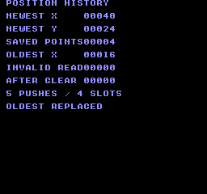
Comando de compilación
New-Item -ItemType Directory -Force .\out | Out-Null
.\kitaqfc\kitaqfc.exe .\kitaq-docs\samples\api-examples\fc\batch_chain.c -I .\kitaqfc\lib -I .\kitaq-docs\samples -o .\out\batch_chain.nes --no-cache --no-disasm --mapper=nrom --nes-chr=.\kitaq-docs\samples\font.chrImplementación y código fuente
kitaqfc/lib/chain.h:24
Forget the recorded points without clearing or freeing the backing storage.
kitaqfc/lib/chain.c:16
void chain_clear(Chain* chain)
{
if (chain == 0) return;
chain->count = 0;
chain->head = 0;
}chain_get_count
Lee el número de posiciones disponibles actualmente en el historial.
Sintaxis
u8 chain_get_count(const Chain* chain);Parámetros
chainPuntero al
Chaininicializado.
Valor devuelto
Devuelve un recuento entre cero y la capacidad, o cero si la cadena es nula.
Condiciones y límites
El código que llama es propietario de Chain y de su matriz de puntos, y debe mantener ambos válidos. Usa una capacidad máxima de 128 para evitar el desbordamiento de la suma de índices de ocho bits en la función de lectura.
Ejemplo de uso
result[4]=chain_get_count(&trail);Este fragmento muestra la llamada. Antes de incorporarlo a un programa completo, cumple los requisitos de inicialización y de los búferes indicados.
Resultado esperado
Tras cinco inserciones en cuatro posiciones, el recuento sigue siendo cuatro. Pasa a cero al vaciar el historial y permanece en cero si la capacidad es nula.
Comando de compilación
New-Item -ItemType Directory -Force .\out | Out-Null
.\kitaqfc\kitaqfc.exe .\kitaq-docs\samples\api-examples\fc\batch_chain.c -I .\kitaqfc\lib -I .\kitaq-docs\samples -o .\out\batch_chain.nes --no-cache --no-disasm --mapper=nrom --nes-chr=.\kitaq-docs\samples\font.chrImplementación y código fuente
kitaqfc/lib/chain.h:33
Return the number of stored points, or zero for a null chain.
kitaqfc/lib/chain.c:66
u8 chain_get_count(const Chain* chain)
{
if (chain == 0) return 0;
return chain->count;
}chain_get_segment
Lee una posición almacenada según su antigüedad en el historial.
Sintaxis
u8 chain_get_segment(const Chain* chain, u8 index, ChainPoint* out);Parámetros
chainPuntero al
Chaininicializado.indexAntigüedad del punto: 0 es el más reciente y
count - 1el más antiguo conservado.outChainPointindependiente y escribible para el resultado; un puntero nulo provoca un fallo.
Valor devuelto
Devuelve 1 si tiene éxito o 0 si la solicitud no es válida. Si out no es nulo, se pone a (0,0) antes de validar la solicitud.
Condiciones y límites
out no debe compartir memoria con la matriz de almacenamiento ni con Chain: poner la salida a cero destruiría datos de origen. El código que llama es propietario de Chain y de su matriz de puntos, y debe mantener ambos válidos. Limita la capacidad a 128 para evitar el desbordamiento de la suma de índices de ocho bits durante la lectura.
Ejemplo de uso
result[1]=chain_get_segment(&trail,0,&point);result[2]=point.x;result[3]=point.y;Este fragmento muestra la llamada. Antes de incorporarlo a un programa completo, cumple los requisitos de inicialización y de los búferes indicados.
Resultado esperado
El índice 0 lee el punto más reciente (40,24), el índice 3 el más antiguo (16,8), y el índice no válido 4 devuelve un fallo con salida (0,0).
Comando de compilación
New-Item -ItemType Directory -Force .\out | Out-Null
.\kitaqfc\kitaqfc.exe .\kitaq-docs\samples\api-examples\fc\batch_chain.c -I .\kitaqfc\lib -I .\kitaq-docs\samples -o .\out\batch_chain.nes --no-cache --no-disasm --mapper=nrom --nes-chr=.\kitaq-docs\samples\font.chrImplementación y código fuente
kitaqfc/lib/chain.h:31
Read a point by age, with index zero denoting the newest point. Return zero for an invalid request and clear a non-null output first. Keep head + index within the 8-bit range: addition is narrowed before the capacity wrap.
kitaqfc/lib/chain.c:42
u8 chain_get_segment(const Chain* chain, u8 index, ChainPoint* out)
{
u8 pos;
// Do not alias out with the backing ring: it is cleared before the requested point is read.
if (out != 0) {
out->x = 0;
out->y = 0;
}
if (out == 0) return 0;
if (chain == 0) return 0;
if (chain->capacity == 0) return 0;
if (index >= chain->count) return 0;
pos = (u8)(chain->head + index);
while (pos >= chain->capacity) {
pos = (u8)(pos - chain->capacity);
}
out->x = chain->points[(__safe_index u8)pos].x;
out->y = chain->points[(__safe_index u8)pos].y;
return 1;
}chain_init
Asocia almacenamiento a un historial circular de posiciones y comienza sin puntos registrados.
Sintaxis
void chain_init(Chain* chain, ChainPoint* storage, u8 capacity);Parámetros
chainChainescribible que se va a inicializar.storageMatriz con espacio para
capacityelementosChainPoint.capacityNúmero de posiciones para puntos. Usa de 1 a 128 para un historial utilizable; cero desactiva el registro.
Valor devuelto
No devuelve ningún valor.
Condiciones y límites
El código que llama es propietario de Chain y de su matriz de puntos, y debe mantener ambos válidos. Usa una capacidad máxima de 128 para evitar el desbordamiento de la suma de índices de ocho bits en la función de lectura.
La versión FC no hace nada si chain == 0.
Ejemplo de uso
chain_init(&trail,storage,4);result[0]=chain_get_count(&trail);Este fragmento muestra la llamada. Antes de incorporarlo a un programa completo, cumple los requisitos de inicialización y de los búferes indicados.
Resultado esperado
El ejemplo asocia cuatro posiciones de puntos y comprueba que el recuento inicial sea cero.
Comando de compilación
New-Item -ItemType Directory -Force .\out | Out-Null
.\kitaqfc\kitaqfc.exe .\kitaq-docs\samples\api-examples\fc\batch_chain.c -I .\kitaqfc\lib -I .\kitaq-docs\samples -o .\out\batch_chain.nes --no-cache --no-disasm --mapper=nrom --nes-chr=.\kitaq-docs\samples\font.chrImplementación y código fuente
kitaqfc/lib/chain.h:22
Attach caller-owned ring storage and start with no recorded points. The storage must remain valid for the lifetime of the chain.
kitaqfc/lib/chain.c:5
void chain_init(Chain* chain, ChainPoint* storage, u8 capacity)
{
if (chain == 0) return;
// A nonzero capacity requires writable storage for that many complete ChainPoint records.
chain->points = storage;
chain->capacity = capacity;
chain->count = 0;
chain->head = 0;
}chain_push_head
Añade la posición más reciente a la cabeza del historial y sustituye el punto más antiguo si está lleno.
Sintaxis
void chain_push_head(Chain* chain, s16 x, s16 y);Parámetros
chainPuntero al
Chaininicializado.xCoordenada X con signo del punto nuevo.
yCoordenada Y con signo del punto nuevo.
Valor devuelto
No devuelve ningún valor.
Condiciones y límites
Una cadena nula o una capacidad cero no produce ningún efecto. El código que llama es propietario de Chain y de su matriz de puntos, y debe mantener ambos válidos. Limita la capacidad a 128 para evitar el desbordamiento de la suma de índices de ocho bits durante la lectura.
Ejemplo de uso
chain_push_head(&trail,8,8);chain_push_head(&trail,16,8);chain_push_head(&trail,24,16);chain_push_head(&trail,32,16);chain_push_head(&trail,40,24);Este fragmento muestra la llamada. Antes de incorporarlo a un programa completo, cumple los requisitos de inicialización y de los búferes indicados.
Resultado esperado
Tras cinco inserciones en cuatro posiciones, (40,24) es el punto más reciente y (16,8) el más antiguo conservado; el (8,8) original se ha sustituido.
Comando de compilación
New-Item -ItemType Directory -Force .\out | Out-Null
.\kitaqfc\kitaqfc.exe .\kitaq-docs\samples\api-examples\fc\batch_chain.c -I .\kitaqfc\lib -I .\kitaq-docs\samples -o .\out\batch_chain.nes --no-cache --no-disasm --mapper=nrom --nes-chr=.\kitaq-docs\samples\font.chrImplementación y código fuente
kitaqfc/lib/chain.h:27
Move the ring head backward and store the newest point. Once full, each push replaces the oldest point; zero capacity is a no-op.
kitaqfc/lib/chain.c:25
void chain_push_head(Chain* chain, s16 x, s16 y)
{
if (chain == 0) return;
if (chain->capacity == 0) return;
if (chain->head == 0) chain->head = (u8)(chain->capacity - 1);
else chain->head = (u8)(chain->head - 1);
chain->points[(__safe_index u8)chain->head].x = x;
chain->points[(__safe_index u8)chain->head].y = y;
if (chain->count < chain->capacity) chain->count = (u8)(chain->count + 1);
}collision.h — Pruebas de colisión de rectángulos y otras figuras
Comprueba el solapamiento entre rectángulos y entre rectángulo y punto en coordenadas del mundo FC, con posiciones de 16 bits sin signo.
nes_box16_contains_point
Comprueba si un punto está dentro de un rectángulo FC; incluye los bordes izquierdo y superior y excluye los bordes derecho e inferior.
Sintaxis
unsigned char nes_box16_contains_point(struct NesBox16* box, unsigned short px, unsigned short py);Parámetros
boxNesBox16accesible para lectura; no pases un puntero nulo.pxCoordenada X del punto, de 16 bits sin signo.
pyCoordenada Y del punto, de 16 bits sin signo.
Valor devuelto
Devuelve 1 si está dentro y 0 si está fuera.
Condiciones y límites
x, y son coordenadas de 16 bits sin signo; el ancho y el alto ocupan un byte cada uno. Usa dimensiones positivas y evita que la suma de una coordenada y su dimensión supere 65535. No admite rectángulos que crucen el límite de desbordamiento de las coordenadas.
Ejemplo de uso
result[6]=nes_box16_contains_point(&na,9,1);Este fragmento muestra la llamada. Antes de incorporarlo a un programa completo, cumple los requisitos de inicialización y de los búferes indicados.
Resultado esperado
Cada unidad de coordenada ocupa un tile. Los rectángulos A en (1,1) y B en (5,4) miden 8×6. Las celdas exclusivas de A muestran A; las exclusivas de B, B; y la zona de solapamiento de 4×3 muestra 12 celdas O. El borde derecho de A, x=9, queda excluido. En CGB, A es rojo, B azul y O verde.
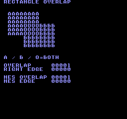
Comando de compilación
New-Item -ItemType Directory -Force .\out | Out-Null
.\kitaqfc\kitaqfc.exe .\kitaq-docs\samples\api-examples\fc\batch_geometry.c -I .\kitaqfc\lib -I .\kitaq-docs\samples -o .\out\batch_geometry.nes --no-cache --no-disasm --mapper=nrom --nes-chr=.\kitaq-docs\samples\font.chrImplementación y código fuente
kitaqfc/lib/collision.h:18
Test a half-open box: left/top edges are included and right/bottom edges excluded. Callers provide valid pointers and non-overflowing edge coordinates.
kitaqfc/lib/collision.c:49
unsigned char nes_box16_contains_point(struct NesBox16* box, unsigned short px, unsigned short py)
{
unsigned short right;
unsigned short bottom;
right = (unsigned short)(box->x + box->w);
bottom = (unsigned short)(box->y + box->h);
if (px < box->x)
{
return 0;
}
if (py < box->y)
{
return 0;
}
if (px >= right)
{
return 0;
}
if (py >= bottom)
{
return 0;
}
return 1;
}nes_box16_intersects
Comprueba si dos rectángulos FC pasados por puntero se solapan con un área mayor que cero.
Sintaxis
unsigned char nes_box16_intersects(struct NesBox16* a, struct NesBox16* b);Parámetros
aPrimer
NesBox16accesible para lectura; no pases un puntero nulo.bSegundo
NesBox16accesible para lectura.
Valor devuelto
Devuelve 1 si hay solapamiento y 0 si están separados o solo se tocan por los bordes.
Condiciones y límites
x, y son coordenadas de 16 bits sin signo; el ancho y el alto ocupan un byte cada uno. Usa dimensiones positivas y evita que la suma de una coordenada y su dimensión supere 65535. No admite rectángulos que crucen el límite de desbordamiento de las coordenadas.
Ejemplo de uso
result[5]=nes_box16_intersects(&na,&nb);Este fragmento muestra la llamada. Antes de incorporarlo a un programa completo, cumple los requisitos de inicialización y de los búferes indicados.
Resultado esperado
Cada unidad de coordenada ocupa un tile. Los rectángulos A en (1,1) y B en (5,4) miden 8×6. Las celdas exclusivas de A muestran A; las exclusivas de B, B; y la zona de solapamiento de 4×3 muestra 12 celdas O. El borde derecho de A, x=9, queda excluido. En CGB, A es rojo, B azul y O verde.
Comando de compilación
New-Item -ItemType Directory -Force .\out | Out-Null
.\kitaqfc\kitaqfc.exe .\kitaq-docs\samples\api-examples\fc\batch_geometry.c -I .\kitaqfc\lib -I .\kitaq-docs\samples -o .\out\batch_geometry.nes --no-cache --no-disasm --mapper=nrom --nes-chr=.\kitaq-docs\samples\font.chrImplementación y código fuente
kitaqfc/lib/collision.h:15
Test two axis-aligned world boxes using exclusive right/bottom edges. Coordinate-plus-size sums must fit u16; touching edges return false. Both boxes must have positive dimensions; the overlap test has no separate empty-box guard.
kitaqfc/lib/collision.c:15
unsigned char nes_box16_intersects(struct NesBox16* a, struct NesBox16* b)
{
unsigned short a_right;
unsigned short b_right;
unsigned short a_bottom;
unsigned short b_bottom;
a_right = (unsigned short)(a->x + a->w);
b_right = (unsigned short)(b->x + b->w);
a_bottom = (unsigned short)(a->y + a->h);
b_bottom = (unsigned short)(b->y + b->h);
if (a_right <= b->x)
{
return 0;
}
if (b_right <= a->x)
{
return 0;
}
if (a_bottom <= b->y)
{
return 0;
}
if (b_bottom <= a->y)
{
return 0;
}
return 1;
}danmaku — Pool de 64 proyectiles
danmaku es un conjunto de 64 proyectiles en punto fijo. Inicialízalo, crea proyectiles, llama a step para moverlos y comprobar colisiones, llama a draw para construir la OAM y realiza DMA en VBlank. Gestiona la entrada del jugador, el daño, la puntuación y el audio en el código del juego. El ejemplo transfiere un tile original en forma de rombo a CHR RAM; la biblioteca también admite sprites de CHR ROM.
danmaku_reset
Desactiva todos los proyectiles y reinicia los eventos de impacto y roce, los contadores máximos y acumulados y los cursores de asignación y orden de dibujo.
Sintaxis
void danmaku_reset(void);Valor devuelto
No devuelve ningún valor.
Condiciones y límites
Se conservan la posición del jugador y dm_invulnerable. No se borran la OAM ni la pantalla; para retirar los proyectiles visibles, dibuja el conjunto vacío y realiza DMA, u oculta la OAM por separado.
Reserva PRG RAM escribible del cartucho en $6000–$627F (640 bytes) para 64 proyectiles. Habilita esa RAM en el mapper del cartucho. El estado compartido hace que esta biblioteca no sea reentrante.
dm_count es la cantidad de proyectiles activos y dm_peak, el máximo alcanzado. Los contadores de 16 bits dm_spawned y dm_rejected registran las creaciones correctas y fallidas y vuelven a cero después de 65535. dm_x y dm_y son las coordenadas del centro; ignóralas si dm_active es cero.
KUROSAKI comprueba cuatro configuraciones del compilador: todos los píxeles, la cantidad y posición de los proyectiles, la OAM reservada y la rotación del orden de dibujo. Otras comprobaciones numéricas cubren impactos, roces, eliminación fuera de pantalla y el conjunto lleno. No se ha probado en hardware real.
Ejemplo de uso
danmaku_reset();Este fragmento muestra la llamada. Antes de incorporarlo a un programa completo, cumple los requisitos de inicialización y de los búferes indicados.
Resultado esperado
Los cuatro proyectiles amarillos de la izquierda se han desplazado 16 píxeles en las cuatro direcciones cardinales desde (48,64). Los dieciséis de la derecha forman un anillo a unos 32 píxeles de (160,104). El jugador cian en (112,192) usa la posición OAM cero, reservada para él. El ejemplo mantiene la imagen tras dieciséis actualizaciones de la lógica.
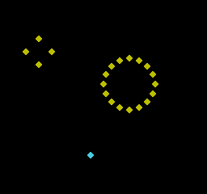
Comando de compilación
New-Item -ItemType Directory -Force .\out | Out-Null
.\kitaqfc\kitaqfc.exe .\kitaq-docs\samples\api-examples\fc\danmaku_patterns.c -I .\kitaqfc\lib --mapper=nrom --nes-chr-ram -o .\out\danmaku_patterns.nes --no-cache --no-disasm
.\kurosaki\kurosaki.exe run .\out\danmaku_patterns.nes --headless --frames 180 --png .\out\danmaku_patterns.pngImplementación y código fuente
kitaqfc/lib/danmaku.h:26
Reset the pool, counters and rotating OAM priority. Player settings survive.
kitaqfc/lib/danmaku.c:40
void danmaku_reset(void) {
danmaku_clear();
dm_peak=0;dm_spawned=0;dm_rejected=0;dm_cursor=0;dm_draw_phase=0;
}danmaku_clear
Desactiva todos los proyectiles y pone dm_count, dm_hit y dm_graze a cero. Úsalo para eliminar los proyectiles durante la partida.
Sintaxis
void danmaku_clear(void);Valor devuelto
No devuelve ningún valor.
Condiciones y límites
Conserva dm_peak, dm_spawned, dm_rejected, los cursores de asignación y orden de dibujo y los ajustes del jugador. El ejemplo crea un proyectil y lo elimina: la cantidad activa pasa a cero, pero el total de creaciones sigue siendo uno. Actualiza la OAM por separado.
Reserva PRG RAM escribible del cartucho en $6000–$627F (640 bytes) para 64 proyectiles. Habilita esa RAM en el mapper del cartucho. El estado compartido hace que esta biblioteca no sea reentrante.
dm_count es la cantidad de proyectiles activos y dm_peak, el máximo alcanzado. Los contadores de 16 bits dm_spawned y dm_rejected registran las creaciones correctas y fallidas y vuelven a cero después de 65535. dm_x y dm_y son las coordenadas del centro; ignóralas si dm_active es cero.
KUROSAKI comprueba cuatro configuraciones del compilador: todos los píxeles, la cantidad y posición de los proyectiles, la OAM reservada y la rotación del orden de dibujo. Otras comprobaciones numéricas cubren impactos, roces, eliminación fuera de pantalla y el conjunto lleno. No se ha probado en hardware real.
Ejemplo de uso
danmaku_clear();Este fragmento muestra la llamada. Antes de incorporarlo a un programa completo, cumple los requisitos de inicialización y de los búferes indicados.
Resultado esperado
Los cuatro proyectiles amarillos de la izquierda se han desplazado 16 píxeles en las cuatro direcciones cardinales desde (48,64). Los dieciséis de la derecha forman un anillo a unos 32 píxeles de (160,104). El jugador cian en (112,192) usa la posición OAM cero, reservada para él. El ejemplo mantiene la imagen tras dieciséis actualizaciones de la lógica.
Comando de compilación
New-Item -ItemType Directory -Force .\out | Out-Null
.\kitaqfc\kitaqfc.exe .\kitaq-docs\samples\api-examples\fc\danmaku_patterns.c -I .\kitaqfc\lib --mapper=nrom --nes-chr-ram -o .\out\danmaku_patterns.nes --no-cache --no-disasm
.\kurosaki\kurosaki.exe run .\out\danmaku_patterns.nes --headless --frames 180 --png .\out\danmaku_patterns.pngImplementación y código fuente
kitaqfc/lib/danmaku.h:28
Remove all bullets and step events; preserve lifetime/peak counters.
kitaqfc/lib/danmaku.c:35
void danmaku_clear(void) {
u8 i;
for(i=0;i<64;i++)dm_active[i]=0;
dm_count=0;dm_hit=0;dm_graze=0;
}danmaku_spawn
Busca cíclicamente una posición libre e inicializa su posición, velocidad y estado de no haber producido aún un roce. Crear un proyectil no lo mueve ni comprueba colisiones.
Sintaxis
u8 danmaku_spawn(u8 x, u8 y, s8 vx, s8 vy);Parámetros
xCoordenada horizontal del centro en píxeles; se aceptan valores de 8 a 247.
yCoordenada vertical del centro en píxeles; se aceptan valores de 24 a 231.
vxVelocidad horizontal en Q4.4 con signo. Un valor de 16 desplaza un píxel por actualización; −16 desplaza un píxel en sentido contrario. Los valores −128..127 representan −8..+7,9375 píxeles.
vyVelocidad vertical en Q4.4 con signo. Un valor de 16 desplaza un píxel por actualización; −16 desplaza un píxel en sentido contrario. Los valores −128..127 representan −8..+7,9375 píxeles.
Valor devuelto
Devuelve 1 si tiene éxito, o 0 si la posición no es válida o las 64 posiciones están ocupadas. El éxito incrementa dm_count y dm_spawned y actualiza dm_peak si hace falta; el fallo incrementa dm_rejected.
Condiciones y límites
Reserva PRG RAM escribible del cartucho en $6000–$627F (640 bytes) para 64 proyectiles. Habilita esa RAM en el mapper del cartucho. El estado compartido hace que esta biblioteca no sea reentrante.
dm_count es la cantidad de proyectiles activos y dm_peak, el máximo alcanzado. Los contadores de 16 bits dm_spawned y dm_rejected registran las creaciones correctas y fallidas y vuelven a cero después de 65535. dm_x y dm_y son las coordenadas del centro; ignóralas si dm_active es cero.
KUROSAKI comprueba cuatro configuraciones del compilador: todos los píxeles, la cantidad y posición de los proyectiles, la OAM reservada y la rotación del orden de dibujo. Otras comprobaciones numéricas cubren impactos, roces, eliminación fuera de pantalla y el conjunto lleno. No se ha probado en hardware real.
Ejemplo de uso
danmaku_spawn(48,64,16,0);Este fragmento muestra la llamada. Antes de incorporarlo a un programa completo, cumple los requisitos de inicialización y de los búferes indicados.
Resultado esperado
Los cuatro proyectiles amarillos de la izquierda se han desplazado 16 píxeles en las cuatro direcciones cardinales desde (48,64). Los dieciséis de la derecha forman un anillo a unos 32 píxeles de (160,104). El jugador cian en (112,192) usa la posición OAM cero, reservada para él. El ejemplo mantiene la imagen tras dieciséis actualizaciones de la lógica.
Comando de compilación
New-Item -ItemType Directory -Force .\out | Out-Null
.\kitaqfc\kitaqfc.exe .\kitaq-docs\samples\api-examples\fc\danmaku_patterns.c -I .\kitaqfc\lib --mapper=nrom --nes-chr-ram -o .\out\danmaku_patterns.nes --no-cache --no-disasm
.\kurosaki\kurosaki.exe run .\out\danmaku_patterns.nes --headless --frames 180 --png .\out\danmaku_patterns.pngImplementación y código fuente
kitaqfc/lib/danmaku.h:31
Allocate a bullet at pixel-center x/y with signed 1/16-pixel velocities. Return one on success, zero outside the playfield or when all 64 slots are full.
kitaqfc/lib/danmaku.c:44
u8 danmaku_spawn(u8 x,u8 y,s8 vx,s8 vy) {
u8 i,n;
if(x<8 || x>=248 || y<24 || y>=232){dm_rejected++;return 0;}
i=dm_cursor;
for(n=0;n<64;n++) {
if(dm_active[i]==0) {
dm_x[i]=x;dm_y[i]=y;dm_fraction_x[i]=0;dm_fraction_y[i]=0;
// Expand signed Q4.4 to a two-byte two's-complement Q8.8 step.
dm_vx_integer[i]=(u8)((s16)vx>>4);dm_vx_fraction[i]=(u8)((u8)vx<<4);
dm_vy_integer[i]=(u8)((s16)vy>>4);dm_vy_fraction[i]=(u8)((u8)vy<<4);
dm_grazed[i]=0;dm_active[i]=1;dm_cursor=(u8)((i+1)&63);
dm_count++;if(dm_count>dm_peak)dm_peak=dm_count;
dm_spawned++;return 1;
}
i=(u8)((i+1)&63);
}
dm_rejected++;return 0;
}danmaku_fan
Crea proyectiles avanzando la dirección en un paso fijo. El paso y la cantidad permiten formar un abanico o un anillo completo.
Sintaxis
void danmaku_fan(u8 x, u8 y, u8 direction, u8 step, u8 count, u8 speed);Parámetros
xCoordenada horizontal del centro en píxeles; se aceptan valores de 8 a 247.
yCoordenada vertical del centro en píxeles; se aceptan valores de 24 a 231.
directionDirección inicial en 32 pasos por vuelta: 0 derecha, 8 abajo, 16 izquierda y 24 arriba. Solo se usan los cinco bits bajos.
stepIncremento de dirección tras cada proyectil, con retorno módulo 32. Cero envía todos los proyectiles en la misma dirección.
countNúmero de intentos de creación. Los valores mayores de 64 se limitan a 64; cero no hace nada.
speedMagnitud de la velocidad en dieciseisavos de píxel por actualización: 16 es un píxel y 32 son dos. Los valores mayores de 64 se limitan a 64.
Valor devuelto
No devuelve ningún valor.
Condiciones y límites
Las velocidades proceden de una tabla de senos entera y se truncan hacia cero, de modo que las velocidades diagonales y los radios quedan cuantizados. Un conjunto lleno no cancela los intentos restantes; cada fallo incrementa dm_rejected.
Reserva PRG RAM escribible del cartucho en $6000–$627F (640 bytes) para 64 proyectiles. Habilita esa RAM en el mapper del cartucho. El estado compartido hace que esta biblioteca no sea reentrante.
dm_count es la cantidad de proyectiles activos y dm_peak, el máximo alcanzado. Los contadores de 16 bits dm_spawned y dm_rejected registran las creaciones correctas y fallidas y vuelven a cero después de 65535. dm_x y dm_y son las coordenadas del centro; ignóralas si dm_active es cero.
KUROSAKI comprueba cuatro configuraciones del compilador: todos los píxeles, la cantidad y posición de los proyectiles, la OAM reservada y la rotación del orden de dibujo. Otras comprobaciones numéricas cubren impactos, roces, eliminación fuera de pantalla y el conjunto lleno. No se ha probado en hardware real.
Ejemplo de uso
danmaku_fan(160,104,0,2,16,32);Este fragmento muestra la llamada. Antes de incorporarlo a un programa completo, cumple los requisitos de inicialización y de los búferes indicados.
Resultado esperado
Los cuatro proyectiles amarillos de la izquierda se han desplazado 16 píxeles en las cuatro direcciones cardinales desde (48,64). Los dieciséis de la derecha forman un anillo a unos 32 píxeles de (160,104). El jugador cian en (112,192) usa la posición OAM cero, reservada para él. El ejemplo mantiene la imagen tras dieciséis actualizaciones de la lógica.
Comando de compilación
New-Item -ItemType Directory -Force .\out | Out-Null
.\kitaqfc\kitaqfc.exe .\kitaq-docs\samples\api-examples\fc\danmaku_patterns.c -I .\kitaqfc\lib --mapper=nrom --nes-chr-ram -o .\out\danmaku_patterns.nes --no-cache --no-disasm
.\kurosaki\kurosaki.exe run .\out\danmaku_patterns.nes --headless --frames 180 --png .\out\danmaku_patterns.pngImplementación y código fuente
kitaqfc/lib/danmaku.h:34
Emit up to 64 bullets. Angles wrap in 32 steps: 0 right, 8 down, 16 left, 24 up. Speed is in 1/16 pixel, clamped to 64. Each failed allocation counts.
kitaqfc/lib/danmaku.c:62
void danmaku_fan(u8 x,u8 y,u8 direction,u8 step,u8 count,u8 speed) {
u8 i,angle;s16 vx,vy;
if(count>64)count=64;if(speed>64)speed=64;
angle=(u8)(direction&31);
for(i=0;i<count;i++) {
vx=(s16)Danmaku_Sin[(u8)((angle+8)&31)]*(s16)speed;
vy=(s16)Danmaku_Sin[angle]*(s16)speed;
danmaku_spawn(x,y,(s8)(vx/64),(s8)(vy/64));
angle=(u8)((angle+step)&31);
}
}danmaku_step
Avanza una vez cada proyectil activo, elimina los que quedan fuera de pantalla y evalúa impactos y roces con el jugador. El tiempo de los proyectiles avanza con las llamadas, no con el tiempo real transcurrido.
Sintaxis
void danmaku_step(void);Valor devuelto
No devuelve ningún valor.
Condiciones y límites
Antes de llamar, establece dm_player_x y dm_player_y en el centro del jugador. Tras el movimiento, una distancia de como máximo tres píxeles en ambos ejes cuenta como impacto. Si dm_invulnerable es cero, se pone dm_hit a uno y se elimina el proyectil; con invulnerabilidad, el proyectil permanece activo.
Fuera del área de impacto, una distancia de como máximo once píxeles en ambos ejes produce un roce por proyectil. dm_hit y dm_graze se reinician al entrar y describen solo esta actualización. Un proyectil dentro del área de impacto mientras el jugador es invulnerable no cuenta como roce.
Esta función no escribe en la OAM ni llama a retrollamadas de daño o sonido. Lee dm_hit y dm_graze y actualiza el estado del jugador o la puntuación desde el código del juego.
Reserva PRG RAM escribible del cartucho en $6000–$627F (640 bytes) para 64 proyectiles. Habilita esa RAM en el mapper del cartucho. El estado compartido hace que esta biblioteca no sea reentrante.
dm_count es la cantidad de proyectiles activos y dm_peak, el máximo alcanzado. Los contadores de 16 bits dm_spawned y dm_rejected registran las creaciones correctas y fallidas y vuelven a cero después de 65535. dm_x y dm_y son las coordenadas del centro; ignóralas si dm_active es cero.
KUROSAKI comprueba cuatro configuraciones del compilador: todos los píxeles, la cantidad y posición de los proyectiles, la OAM reservada y la rotación del orden de dibujo. Otras comprobaciones numéricas cubren impactos, roces, eliminación fuera de pantalla y el conjunto lleno. No se ha probado en hardware real.
Ejemplo de uso
danmaku_step();Este fragmento muestra la llamada. Antes de incorporarlo a un programa completo, cumple los requisitos de inicialización y de los búferes indicados.
Resultado esperado
Los cuatro proyectiles amarillos de la izquierda se han desplazado 16 píxeles en las cuatro direcciones cardinales desde (48,64). Los dieciséis de la derecha forman un anillo a unos 32 píxeles de (160,104). El jugador cian en (112,192) usa la posición OAM cero, reservada para él. El ejemplo mantiene la imagen tras dieciséis actualizaciones de la lógica.
Comando de compilación
New-Item -ItemType Directory -Force .\out | Out-Null
.\kitaqfc\kitaqfc.exe .\kitaq-docs\samples\api-examples\fc\danmaku_patterns.c -I .\kitaqfc\lib --mapper=nrom --nes-chr-ram -o .\out\danmaku_patterns.nes --no-cache --no-disasm
.\kurosaki\kurosaki.exe run .\out\danmaku_patterns.nes --headless --frames 180 --png .\out\danmaku_patterns.pngImplementación y código fuente
kitaqfc/lib/danmaku.h:38
Move all live bullets once. Remove offscreen/hitting bullets. Hit uses a +/-3-pixel box; graze uses +/-11, once per bullet. Events describe this step. This updates logic only; it neither writes OAM nor calls a game damage handler.
kitaqfc/lib/danmaku.c:73
void danmaku_step(void) {
// Byte arrays let the 6502 move every slot without multiplying a structure
// index. Carry propagates fractional motion into the signed integer step.
__asm {
LDX #0
STX dm_count
STX dm_hit
STX dm_graze
dm_tick_loop:
LDA dm_active,X
BNE dm_tick_live
JMP dm_tick_next
dm_tick_live:
CLC
LDA dm_fraction_x,X
ADC dm_vx_fraction,X
STA dm_fraction_x,X
LDA dm_x,X
ADC dm_vx_integer,X
STA dm_x,X
CMP #8
BCC dm_tick_kill
CMP #248
BCS dm_tick_kill
CLC
LDA dm_fraction_y,X
ADC dm_vy_fraction,X
STA dm_fraction_y,X
LDA dm_y,X
ADC dm_vy_integer,X
STA dm_y,X
CMP #24
BCC dm_tick_kill
CMP #232
BCS dm_tick_kill
// Unsigned absolute distances avoid false collisions across screen wrap.
LDA dm_x,X
SEC
SBC dm_player_x
BCS dm_tick_dx
EOR #255
CLC
ADC #1
dm_tick_dx:
STA dm_distance_x
LDA dm_y,X
SEC
SBC dm_player_y
BCS dm_tick_dy
EOR #255
CLC
ADC #1
dm_tick_dy:
STA dm_distance_y
CMP #4
BCS dm_tick_graze
LDA dm_distance_x
CMP #4
BCS dm_tick_graze
LDA dm_invulnerable
BNE dm_tick_count
LDA #1
STA dm_hit
dm_tick_kill:
LDA #0
STA dm_active,X
JMP dm_tick_next
dm_tick_graze:
LDA dm_grazed,X
BNE dm_tick_count
LDA dm_distance_x
CMP #12
BCS dm_tick_count
LDA dm_distance_y
CMP #12
BCS dm_tick_count
LDA #1
STA dm_grazed,X
INC dm_graze
dm_tick_count:
INC dm_count
dm_tick_next:
INX
CPX #64
BEQ dm_tick_done
JMP dm_tick_loop
dm_tick_done:
}
}danmaku_draw
Construye sprites 8×8 a partir de los centros de los proyectiles y escribe el rango solicitado de la copia OAM en RAM, sin mover proyectiles ni comprobar colisiones.
Sintaxis
u8 danmaku_draw(u8 first_oam, u8 slots, u8 tile, u8 attributes);Parámetros
first_oamPrimera posición OAM (0..63). Los valores de 64 en adelante devuelven cero sin escribir. El ejemplo empieza en uno para reservar la posición cero al jugador.
slotsCantidad de posiciones consecutivas disponibles, limitada a 64−first_oam. Cero no escribe nada, pero aun así avanza la prioridad de dibujo.
tileTile de patrón 8×8 compartido por todos los proyectiles. Configura el modo de sprites 8×8; esta llamada usa la misma forma para todos.
attributesAtributos de sprite NES compartidos por todos los proyectiles: bits 0–1 para la paleta, bit 5 para situarse detrás del fondo, bit 6 para volteo horizontal y bit 7 para volteo vertical.
Valor devuelto
Devuelve la cantidad de proyectiles escritos en la OAM: el menor valor entre la cantidad activa y las posiciones disponibles.
Condiciones y límites
Avanza la posición inicial de proyectil en 13, módulo 64, en cada llamada para que no siempre tengan prioridad los mismos proyectiles. Oculta las posiciones sin usar del rango solicitado con Y=240 y conserva la OAM fuera de ese rango.
Resta cuatro al centro X y cinco al centro Y; el hardware suma uno a la Y de OAM, centrando el sprite. Llama tú a __oam_dma durante VBlank. Sigue vigente el límite de hardware de ocho sprites por línea de barrido.
Reserva PRG RAM escribible del cartucho en $6000–$627F (640 bytes) para 64 proyectiles. Habilita esa RAM en el mapper del cartucho. El estado compartido hace que esta biblioteca no sea reentrante.
dm_count es la cantidad de proyectiles activos y dm_peak, el máximo alcanzado. Los contadores de 16 bits dm_spawned y dm_rejected registran las creaciones correctas y fallidas y vuelven a cero después de 65535. dm_x y dm_y son las coordenadas del centro; ignóralas si dm_active es cero.
KUROSAKI comprueba cuatro configuraciones del compilador: todos los píxeles, la cantidad y posición de los proyectiles, la OAM reservada y la rotación del orden de dibujo. Otras comprobaciones numéricas cubren impactos, roces, eliminación fuera de pantalla y el conjunto lleno. No se ha probado en hardware real.
Ejemplo de uso
bullet_result[9]=danmaku_draw(1,24,1,0);Este fragmento muestra la llamada. Antes de incorporarlo a un programa completo, cumple los requisitos de inicialización y de los búferes indicados.
Resultado esperado
Los cuatro proyectiles amarillos de la izquierda se han desplazado 16 píxeles en las cuatro direcciones cardinales desde (48,64). Los dieciséis de la derecha forman un anillo a unos 32 píxeles de (160,104). El jugador cian en (112,192) usa la posición OAM cero, reservada para él. El ejemplo mantiene la imagen tras dieciséis actualizaciones de la lógica.
Comando de compilación
New-Item -ItemType Directory -Force .\out | Out-Null
.\kitaqfc\kitaqfc.exe .\kitaq-docs\samples\api-examples\fc\danmaku_patterns.c -I .\kitaqfc\lib --mapper=nrom --nes-chr-ram -o .\out\danmaku_patterns.nes --no-cache --no-disasm
.\kurosaki\kurosaki.exe run .\out\danmaku_patterns.nes --headless --frames 180 --png .\out\danmaku_patterns.pngImplementación y código fuente
kitaqfc/lib/danmaku.h:43
Write up to slots consecutive shadow-OAM entries starting at first_oam. Rotate bullet priority by 13 modulo 64 and hide unused entries in that range. tile is an 8x8 sprite centered at (4,4). Return the number emitted. DMA is caller-owned and belongs in VBlank. Hardware's eight-per-scanline limit remains.
kitaqfc/lib/danmaku.c:162
u8 danmaku_draw(u8 first_oam,u8 slots,u8 tile,u8 attributes) {
u8 i,n,drawn;
if(first_oam>=64)return 0;
if(slots>(u8)(64-first_oam))slots=(u8)(64-first_oam);
dm_draw_phase=(u8)((dm_draw_phase+13)&63);i=dm_draw_phase;drawn=0;
for(n=0;n<64;n++) {
if(dm_active[i]!=0 && drawn<slots) {
__sprite_set((u8)(first_oam+drawn),(u8)(dm_x[i]-4),(u8)(dm_y[i]-5),tile,attributes);
drawn++;
}
i=(u8)((i+1)&63);
}
for(n=drawn;n<slots;n++)__sprite_hide((u8)(first_oam+n));
return drawn;
}debug.h — Registros y aserciones en RAM
Registra nombres, valores y etiquetas de fotograma en un registro de RAM de capacidad fija. Las aserciones conservan información de diagnóstico y permiten continuar la ejecución.
debug_assert_fail
Conserva un código de fallo de aserción e intenta añadir una entrada ASSERT.
Sintaxis
void debug_assert_fail(u16 code);Parámetros
codeIdentificador de error de 16 bits que se va a conservar.
Valor devuelto
No devuelve ningún valor.
Condiciones y límites
La ejecución continúa. El último código de aserción se actualiza incluso si el registro está lleno. El registro admite 32 entradas de forma predeterminada y descarta las nuevas cuando está lleno. Si redefines DEBUG_TRACE_MAX, usa el mismo valor de 1 a 255 en todas las unidades de traducción. Los nombres se conservan como punteros, sin copiarse; su memoria debe seguir siendo legible hasta finalizar la inspección. Coordina las escrituras del código principal y las interrupciones para que no se solapen.
Ejemplo de uso
debug_assert_fail(42);Este fragmento muestra la llamada. Antes de incorporarlo a un programa completo, cumple los requisitos de inicialización y de los búferes indicados.
Resultado esperado
El ejemplo registra el código 42, llena el registro y después registra el código 999. El recuento permanece en 32, pero el último código pasa a ser 999.
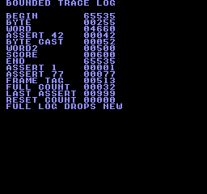
Comando de compilación
New-Item -ItemType Directory -Force .\out | Out-Null
.\kitaqfc\kitaqfc.exe .\kitaq-docs\samples\api-examples\fc\batch_debug.c -I .\kitaqfc\lib -I .\kitaq-docs\samples -o .\out\batch_debug.nes --no-cache --no-disasm --mapper=nrom --nes-chr=.\kitaq-docs\samples\font.chrImplementación y código fuente
kitaqfc/lib/debug.h:36
Store the assertion code even if the log is full, then attempt an ASSERT entry. The helper records failure but does not stop execution.
kitaqfc/lib/debug.c:67
void debug_assert_fail(u16 code)
{
kq_debug_last_assert = code;
debug_push(debug_assert_label, code);
}debug_get_last_assert
Lee el último código de aserción independientemente del espacio disponible en el registro.
Sintaxis
u16 debug_get_last_assert(void);Valor devuelto
Devuelve el último código de 16 bits; tras la inicialización, su valor es cero.
Condiciones y límites
Cero también es el valor inicial, por lo que no permite distinguir un fallo registrado con código cero. La lectura no borra el código.
Ejemplo de uso
result[22]=debug_get_last_assert();Este fragmento muestra la llamada. Antes de incorporarlo a un programa completo, cumple los requisitos de inicialización y de los búferes indicados.
Resultado esperado
El ejemplo comprueba 77 desde la macro de aserción, 999 después de llenar el registro y cero tras reinicializarlo.
Comando de compilación
New-Item -ItemType Directory -Force .\out | Out-Null
.\kitaqfc\kitaqfc.exe .\kitaq-docs\samples\api-examples\fc\batch_debug.c -I .\kitaqfc\lib -I .\kitaq-docs\samples -o .\out\batch_debug.nes --no-cache --no-disasm --mapper=nrom --nes-chr=.\kitaq-docs\samples\font.chrImplementación y código fuente
kitaqfc/lib/debug.h:42
Read the latest assertion code, initially zero after debug_init.
kitaqfc/lib/debug.c:86
u16 debug_get_last_assert(void)
{
return kq_debug_last_assert;
}debug_get_trace_count
Lee el número de entradas válidas de la matriz de trazas.
Sintaxis
u8 debug_get_trace_count(void);Valor devuelto
Devuelve un recuento entre cero y DEBUG_TRACE_MAX.
Condiciones y límites
El registro admite 32 entradas de forma predeterminada y descarta las nuevas cuando está lleno. Si redefines DEBUG_TRACE_MAX, usa el mismo valor de 1 a 255 en todas las unidades de traducción. Los nombres se conservan como punteros, sin copiarse; su memoria debe seguir siendo legible hasta finalizar la inspección. Coordina las escrituras del código principal y las interrupciones para que no se solapen.
Ejemplo de uso
result[1]=debug_get_trace_count();Este fragmento muestra la llamada. Antes de incorporarlo a un programa completo, cumple los requisitos de inicialización y de los búferes indicados.
Resultado esperado
El ejemplo verifica las diez entradas iniciales y el límite de 32 tras más escrituras; el recuento no vuelve a cero cuando se llena.
Comando de compilación
New-Item -ItemType Directory -Force .\out | Out-Null
.\kitaqfc\kitaqfc.exe .\kitaq-docs\samples\api-examples\fc\batch_debug.c -I .\kitaqfc\lib -I .\kitaq-docs\samples -o .\out\batch_debug.nes --no-cache --no-disasm --mapper=nrom --nes-chr=.\kitaq-docs\samples\font.chrImplementación y código fuente
kitaqfc/lib/debug.h:38
Read the number of valid entries in the fixed trace buffer.
kitaqfc/lib/debug.c:74
u8 debug_get_trace_count(void)
{
return kq_debug_trace_count;
}debug_get_trace_log
Obtiene una referencia a la matriz interna para inspeccionar los nombres, valores y etiquetas de fotograma registrados.
Sintaxis
const DebugTraceEntry* debug_get_trace_log(void);Valor devuelto
Devuelve un puntero de solo lectura a la matriz interna DebugTraceEntry.
Condiciones y límites
No es una copia. Lee solo el número de entradas indicado por debug_get_trace_count(). Los bytes antiguos que quedan tras inicializar no son registros válidos. El registro admite 32 entradas de forma predeterminada y descarta las nuevas cuando está lleno. Si redefines DEBUG_TRACE_MAX, usa el mismo valor de 1 a 255 en todas las unidades de traducción. Los nombres se conservan como punteros, sin copiarse; su memoria debe seguir siendo legible hasta finalizar la inspección. Coordina las escrituras del código principal y las interrupciones para que no se solapen.
Ejemplo de uso
entries=debug_get_trace_log();for(i=0;i<10;i++){result[2+i]=entries[i].value;result[12+i]=entries[i].frame;}Este fragmento muestra la llamada. Antes de incorporarlo a un programa completo, cumple los requisitos de inicialización y de los búferes indicados.
Resultado esperado
El ejemplo lee los diez campos de valor y fotograma y comprueba la B inicial de la etiqueta BEGIN.
Comando de compilación
New-Item -ItemType Directory -Force .\out | Out-Null
.\kitaqfc\kitaqfc.exe .\kitaq-docs\samples\api-examples\fc\batch_debug.c -I .\kitaqfc\lib -I .\kitaq-docs\samples -o .\out\batch_debug.nes --no-cache --no-disasm --mapper=nrom --nes-chr=.\kitaq-docs\samples\font.chrImplementación y código fuente
kitaqfc/lib/debug.h:40
Borrow the internal trace array; bound inspection by debug_get_trace_count.
kitaqfc/lib/debug.c:80
const DebugTraceEntry* debug_get_trace_log(void)
{
return kq_debug_trace_log;
}debug_init
Inicializa la longitud válida del registro, la etiqueta de fotograma y el último código de aserción.
Sintaxis
void debug_init(void);Valor devuelto
No devuelve ningún valor.
Condiciones y límites
No borra los bytes de las entradas existentes. Llama a esta función antes de registrar la primera entrada. El registro admite 32 entradas de forma predeterminada y descarta las nuevas cuando está lleno. Si redefines DEBUG_TRACE_MAX, usa el mismo valor de 1 a 255 en todas las unidades de traducción. Los nombres se conservan como punteros, sin copiarse; su memoria debe seguir siendo legible hasta finalizar la inspección. Coordina las escrituras del código principal y las interrupciones para que no se solapen.
Ejemplo de uso
debug_init();result[0]=debug_get_trace_count();Este fragmento muestra la llamada. Antes de incorporarlo a un programa completo, cumple los requisitos de inicialización y de los búferes indicados.
Resultado esperado
El ejemplo comprueba que el recuento inicial sea cero y después reinicia un registro con datos. Verifica que se borren el recuento y el código de aserción, mientras se conservan los valores anteriores de la matriz.
Comando de compilación
New-Item -ItemType Directory -Force .\out | Out-Null
.\kitaqfc\kitaqfc.exe .\kitaq-docs\samples\api-examples\fc\batch_debug.c -I .\kitaqfc\lib -I .\kitaq-docs\samples -o .\out\batch_debug.nes --no-cache --no-disasm --mapper=nrom --nes-chr=.\kitaq-docs\samples\font.chrImplementación y código fuente
kitaqfc/lib/debug.h:25
Build the RAM-resident ASSERT label and reset log length, frame tag and last assertion code. Old log storage bytes are not erased.
kitaqfc/lib/debug.c:14
void debug_init(void)
{
debug_assert_label[0] = 'A';
debug_assert_label[1] = 'S';
debug_assert_label[2] = 'S';
debug_assert_label[3] = 'E';
debug_assert_label[4] = 'R';
debug_assert_label[5] = 'T';
debug_assert_label[6] = 0;
kq_debug_trace_count = 0;
kq_debug_frame = 0;
kq_debug_last_assert = 0;
}debug_mark_frame
Registra un marcador de fotograma con nombre para identificar un punto del flujo de ejecución.
Sintaxis
void debug_mark_frame(const u8* label);Parámetros
labelEtiqueta terminada en cero cuya memoria debe permanecer legible hasta la inspección.
Valor devuelto
No devuelve ningún valor.
Condiciones y límites
El registro admite 32 entradas de forma predeterminada y descarta las nuevas cuando está lleno. Si redefines DEBUG_TRACE_MAX, usa el mismo valor de 1 a 255 en todas las unidades de traducción. Los nombres se conservan como punteros, sin copiarse; su memoria debe seguir siendo legible hasta finalizar la inspección. Coordina las escrituras del código principal y las interrupciones para que no se solapen.
Ejemplo de uso
debug_mark_frame("BEGIN");Este fragmento muestra la llamada. Antes de incorporarlo a un programa completo, cumple los requisitos de inicialización y de los búferes indicados.
Resultado esperado
Al añadir el marcador BEGIN, se registra el valor 65535 (0xFFFF) con la etiqueta de fotograma 513.
Comando de compilación
New-Item -ItemType Directory -Force .\out | Out-Null
.\kitaqfc\kitaqfc.exe .\kitaq-docs\samples\api-examples\fc\batch_debug.c -I .\kitaqfc\lib -I .\kitaq-docs\samples -o .\out\batch_debug.nes --no-cache --no-disasm --mapper=nrom --nes-chr=.\kitaq-docs\samples\font.chrImplementación y código fuente
kitaqfc/lib/debug.h:29
Append a named marker with the reserved marker value 0xFFFF.
kitaqfc/lib/debug.c:48
void debug_mark_frame(const u8* label)
{
debug_push(label, 0xFFFF);
}debug_set_frame
Establece la etiqueta de fotograma que se copiará en las entradas posteriores.
Sintaxis
void debug_set_frame(u16 frame);Parámetros
frameNúmero de fotograma de 16 bits para las entradas posteriores.
Valor devuelto
No devuelve ningún valor.
Condiciones y límites
No espera un fotograma ni incrementa la etiqueta automáticamente. Pasa explícitamente el contador de fotogramas del juego. El registro admite 32 entradas de forma predeterminada y descarta las nuevas cuando está lleno. Si redefines DEBUG_TRACE_MAX, usa el mismo valor de 1 a 255 en todas las unidades de traducción. Los nombres se conservan como punteros, sin copiarse; su memoria debe seguir siendo legible hasta finalizar la inspección. Coordina las escrituras del código principal y las interrupciones para que no se solapen.
Ejemplo de uso
debug_set_frame(513);Este fragmento muestra la llamada. Antes de incorporarlo a un programa completo, cumple los requisitos de inicialización y de los búferes indicados.
Resultado esperado
El ejemplo establece 513, registra diez entradas y lee sus diez campos de fotograma para verificar la etiqueta.
Comando de compilación
New-Item -ItemType Directory -Force .\out | Out-Null
.\kitaqfc\kitaqfc.exe .\kitaq-docs\samples\api-examples\fc\batch_debug.c -I .\kitaqfc\lib -I .\kitaq-docs\samples -o .\out\batch_debug.nes --no-cache --no-disasm --mapper=nrom --nes-chr=.\kitaq-docs\samples\font.chrImplementación y código fuente
kitaqfc/lib/debug.h:27
Choose the frame tag stored in subsequent debug entries.
kitaqfc/lib/debug.c:29
void debug_set_frame(u16 frame)
{
kq_debug_frame = frame;
}debug_trace_u16
Registra una puntuación o contador de 16 bits con nombre.
Sintaxis
void debug_trace_u16(const u8* name, u16 value);Parámetros
nameEtiqueta terminada en cero cuya memoria debe permanecer legible hasta la inspección.
valueValor de 0 a 65535 que se va a registrar.
Valor devuelto
No devuelve ningún valor.
Condiciones y límites
El registro admite 32 entradas de forma predeterminada y descarta las nuevas cuando está lleno. Si redefines DEBUG_TRACE_MAX, usa el mismo valor de 1 a 255 en todas las unidades de traducción. Los nombres se conservan como punteros, sin copiarse; su memoria debe seguir siendo legible hasta finalizar la inspección. Coordina las escrituras del código principal y las interrupciones para que no se solapen.
Ejemplo de uso
debug_trace_u16("WORD",4660);Este fragmento muestra la llamada. Antes de incorporarlo a un programa completo, cumple los requisitos de inicialización y de los búferes indicados.
Resultado esperado
La entrada WORD almacena 4660 (0x1234), y el ejemplo vuelve a leerla para comprobar ambos bytes.
Comando de compilación
New-Item -ItemType Directory -Force .\out | Out-Null
.\kitaqfc\kitaqfc.exe .\kitaq-docs\samples\api-examples\fc\batch_debug.c -I .\kitaqfc\lib -I .\kitaq-docs\samples -o .\out\batch_debug.nes --no-cache --no-disasm --mapper=nrom --nes-chr=.\kitaq-docs\samples\font.chrImplementación y código fuente
kitaqfc/lib/debug.h:33
Append a 16-bit value with the current frame tag.
kitaqfc/lib/debug.c:60
void debug_trace_u16(const u8* name, u16 value)
{
debug_push(name, value);
}debug_trace_u8
Registra un valor de estado de ocho bits con su nombre y la etiqueta de fotograma actual.
Sintaxis
void debug_trace_u8(const u8* name, u8 value);Parámetros
nameEtiqueta terminada en cero cuya memoria debe permanecer legible hasta la inspección.
valueValor de 0 a 255, extendido con ceros al campo de 16 bits del registro.
Valor devuelto
No devuelve ningún valor.
Condiciones y límites
El registro admite 32 entradas de forma predeterminada y descarta las nuevas cuando está lleno. Si redefines DEBUG_TRACE_MAX, usa el mismo valor de 1 a 255 en todas las unidades de traducción. Los nombres se conservan como punteros, sin copiarse; su memoria debe seguir siendo legible hasta finalizar la inspección. Coordina las escrituras del código principal y las interrupciones para que no se solapen.
Ejemplo de uso
debug_trace_u8("BYTE",255);Este fragmento muestra la llamada. Antes de incorporarlo a un programa completo, cumple los requisitos de inicialización y de los búferes indicados.
Resultado esperado
La entrada BYTE registra 255 y comprueba que el campo de valor de 16 bits contenga 255.
Comando de compilación
New-Item -ItemType Directory -Force .\out | Out-Null
.\kitaqfc\kitaqfc.exe .\kitaq-docs\samples\api-examples\fc\batch_debug.c -I .\kitaqfc\lib -I .\kitaq-docs\samples -o .\out\batch_debug.nes --no-cache --no-disasm --mapper=nrom --nes-chr=.\kitaq-docs\samples\font.chrImplementación y código fuente
kitaqfc/lib/debug.h:31
Widen a byte value into the trace entry's 16-bit value field.
kitaqfc/lib/debug.c:54
void debug_trace_u8(const u8* name, u8 value)
{
debug_push(name, (u16)value);
}KITAQGB_ASSERT
Macro que se usa como una sentencia y registra el código de aserción 1 cuando su condición es falsa.
Sintaxis
#define KITAQGB_ASSERT(cond) do { if (!(cond)) debug_assert_fail((u16)1); } while (0)Parámetros
condCondición que debería cumplirse; cero significa un fallo.
Valor devuelto
No devuelve ningún valor.
Condiciones y límites
La condición se evalúa una vez. Si es verdadera no registra nada; si es falsa registra el fallo sin detener la ejecución. Su forma do…while (0) permite usarla como una sola sentencia en un if…else.
Ejemplo de uso
KITAQGB_ASSERT(1);KITAQGB_ASSERT(0);Este fragmento muestra la llamada. Antes de incorporarlo a un programa completo, cumple los requisitos de inicialización y de los búferes indicados.
Resultado esperado
Una aserción verdadera y otra falsa producen exactamente una entrada con código 1.
Comando de compilación
New-Item -ItemType Directory -Force .\out | Out-Null
.\kitaqfc\kitaqfc.exe .\kitaq-docs\samples\api-examples\fc\batch_debug.c -I .\kitaqfc\lib -I .\kitaq-docs\samples -o .\out\batch_debug.nes --no-cache --no-disasm --mapper=nrom --nes-chr=.\kitaq-docs\samples\font.chrImplementación y código fuente
kitaqfc/lib/debug.h:48
#define KITAQGB_ASSERT(cond) do { if (!(cond)) debug_assert_fail((u16)1); } while (0)KITAQGB_ASSERT_CODE
Registra el código de aserción elegido solo si la condición es falsa.
Sintaxis
#define KITAQGB_ASSERT_CODE(cond, code) do { if (!(cond)) debug_assert_fail((u16)(code)); } while (0)Parámetros
condCondición que debería cumplirse.
codeExpresión del código que se evalúa al fallar y se convierte a 16 bits.
Valor devuelto
No devuelve ningún valor.
Condiciones y límites
La condición se evalúa una vez; la expresión del código solo se evalúa si falla. La ejecución continúa después de registrar el resultado.
Ejemplo de uso
KITAQGB_ASSERT_CODE(1,++side_effect);KITAQGB_ASSERT_CODE(0,77);Este fragmento muestra la llamada. Antes de incorporarlo a un programa completo, cumple los requisitos de inicialización y de los búferes indicados.
Resultado esperado
Si la condición es verdadera, no se evalúa la expresión de código ++side_effect y la variable permanece en cero. Una condición falsa registra el código 77.
Comando de compilación
New-Item -ItemType Directory -Force .\out | Out-Null
.\kitaqfc\kitaqfc.exe .\kitaq-docs\samples\api-examples\fc\batch_debug.c -I .\kitaqfc\lib -I .\kitaq-docs\samples -o .\out\batch_debug.nes --no-cache --no-disasm --mapper=nrom --nes-chr=.\kitaq-docs\samples\font.chrImplementación y código fuente
kitaqfc/lib/debug.h:49
#define KITAQGB_ASSERT_CODE(cond, code) do { if (!(cond)) debug_assert_fail((u16)(code)); } while (0)KITAQGB_MARK_FRAME
Convierte una etiqueta a puntero de cadena y añade un marcador de fotograma con valor 0xFFFF.
Sintaxis
#define KITAQGB_MARK_FRAME(label) debug_mark_frame((const u8*)(label))Parámetros
labelEtiqueta terminada en cero cuya memoria debe permanecer legible hasta la inspección.
Valor devuelto
No devuelve ningún valor.
Condiciones y límites
El registro admite 32 entradas de forma predeterminada y descarta las nuevas cuando está lleno. Si redefines DEBUG_TRACE_MAX, usa el mismo valor de 1 a 255 en todas las unidades de traducción. Los nombres se conservan como punteros, sin copiarse; su memoria debe seguir siendo legible hasta finalizar la inspección. Coordina las escrituras del código principal y las interrupciones para que no se solapen.
Ejemplo de uso
KITAQGB_MARK_FRAME("END");Este fragmento muestra la llamada. Antes de incorporarlo a un programa completo, cumple los requisitos de inicialización y de los búferes indicados.
Resultado esperado
Se comprueba que el marcador END tenga el valor 65535 y la etiqueta de fotograma 513.
Comando de compilación
New-Item -ItemType Directory -Force .\out | Out-Null
.\kitaqfc\kitaqfc.exe .\kitaq-docs\samples\api-examples\fc\batch_debug.c -I .\kitaqfc\lib -I .\kitaq-docs\samples -o .\out\batch_debug.nes --no-cache --no-disasm --mapper=nrom --nes-chr=.\kitaq-docs\samples\font.chrImplementación y código fuente
kitaqfc/lib/debug.h:47
#define KITAQGB_MARK_FRAME(label) debug_mark_frame((const u8*)(label))KITAQGB_TRACE
Convierte explícitamente un valor a 16 bits y lo registra con su nombre.
Sintaxis
#define KITAQGB_TRACE(name, value) debug_trace_u16((const u8*)(name), (u16)(value))Parámetros
nameEtiqueta terminada en cero cuya memoria debe permanecer legible hasta la inspección.
valueExpresión que se convierte a 16 bits antes de registrarse.
Valor devuelto
No devuelve ningún valor.
Condiciones y límites
La macro siempre está activa; la configuración de compilación no la desactiva automáticamente. Registra valores de 16 bits igual que KITAQGB_TRACE_U16. El registro admite 32 entradas de forma predeterminada y descarta las nuevas cuando está lleno. Si redefines DEBUG_TRACE_MAX, usa el mismo valor de 1 a 255 en todas las unidades de traducción. Los nombres se conservan como punteros, sin copiarse; su memoria debe seguir siendo legible hasta finalizar la inspección. Coordina las escrituras del código principal y las interrupciones para que no se solapen.
Ejemplo de uso
KITAQGB_TRACE("SCORE",600);Este fragmento muestra la llamada. Antes de incorporarlo a un programa completo, cumple los requisitos de inicialización y de los búferes indicados.
Resultado esperado
El ejemplo registra 600 y vuelve a leer el valor para verificarlo.
Comando de compilación
New-Item -ItemType Directory -Force .\out | Out-Null
.\kitaqfc\kitaqfc.exe .\kitaq-docs\samples\api-examples\fc\batch_debug.c -I .\kitaqfc\lib -I .\kitaq-docs\samples -o .\out\batch_debug.nes --no-cache --no-disasm --mapper=nrom --nes-chr=.\kitaq-docs\samples\font.chrImplementación y código fuente
kitaqfc/lib/debug.h:46
#define KITAQGB_TRACE(name, value) debug_trace_u16((const u8*)(name), (u16)(value))KITAQGB_TRACE_U16
Convierte explícitamente un valor a 16 bits y lo registra con su nombre.
Sintaxis
#define KITAQGB_TRACE_U16(name, value) debug_trace_u16((const u8*)(name), (u16)(value))Parámetros
nameEtiqueta terminada en cero cuya memoria debe permanecer legible hasta la inspección.
valueExpresión que se convierte a 16 bits antes de registrarse.
Valor devuelto
No devuelve ningún valor.
Condiciones y límites
La macro siempre está activa; la configuración de compilación no la desactiva automáticamente. El registro admite 32 entradas de forma predeterminada y descarta las nuevas cuando está lleno. Si redefines DEBUG_TRACE_MAX, usa el mismo valor de 1 a 255 en todas las unidades de traducción. Los nombres se conservan como punteros, sin copiarse; su memoria debe seguir siendo legible hasta finalizar la inspección. Coordina las escrituras del código principal y las interrupciones para que no se solapen.
Ejemplo de uso
KITAQGB_TRACE_U16("WORD2",500);Este fragmento muestra la llamada. Antes de incorporarlo a un programa completo, cumple los requisitos de inicialización y de los búferes indicados.
Resultado esperado
El ejemplo registra 500 y vuelve a leer el valor para verificarlo.
Comando de compilación
New-Item -ItemType Directory -Force .\out | Out-Null
.\kitaqfc\kitaqfc.exe .\kitaq-docs\samples\api-examples\fc\batch_debug.c -I .\kitaqfc\lib -I .\kitaq-docs\samples -o .\out\batch_debug.nes --no-cache --no-disasm --mapper=nrom --nes-chr=.\kitaq-docs\samples\font.chrImplementación y código fuente
kitaqfc/lib/debug.h:45
#define KITAQGB_TRACE_U16(name, value) debug_trace_u16((const u8*)(name), (u16)(value))KITAQGB_TRACE_U8
Convierte explícitamente un valor a ocho bits y lo registra con su nombre.
Sintaxis
#define KITAQGB_TRACE_U8(name, value) debug_trace_u8((const u8*)(name), (u8)(value))Parámetros
nameEtiqueta terminada en cero cuya memoria debe permanecer legible hasta la inspección.
valueExpresión que se convierte a ocho bits antes de registrarse.
Valor devuelto
No devuelve ningún valor.
Condiciones y límites
La macro siempre está activa; la configuración de compilación no la desactiva automáticamente. El registro admite 32 entradas de forma predeterminada y descarta las nuevas cuando está lleno. Si redefines DEBUG_TRACE_MAX, usa el mismo valor de 1 a 255 en todas las unidades de traducción. Los nombres se conservan como punteros, sin copiarse; su memoria debe seguir siendo legible hasta finalizar la inspección. Coordina las escrituras del código principal y las interrupciones para que no se solapen.
Ejemplo de uso
KITAQGB_TRACE_U8("CAST",0x1234);Este fragmento muestra la llamada. Antes de incorporarlo a un programa completo, cumple los requisitos de inicialización y de los búferes indicados.
Resultado esperado
El ejemplo registra 52. Solo se conserva el byte menos significativo 0x34 de 0x1234.
Comando de compilación
New-Item -ItemType Directory -Force .\out | Out-Null
.\kitaqfc\kitaqfc.exe .\kitaq-docs\samples\api-examples\fc\batch_debug.c -I .\kitaqfc\lib -I .\kitaq-docs\samples -o .\out\batch_debug.nes --no-cache --no-disasm --mapper=nrom --nes-chr=.\kitaq-docs\samples\font.chrImplementación y código fuente
kitaqfc/lib/debug.h:44
#define KITAQGB_TRACE_U8(name, value) debug_trace_u8((const u8*)(name), (u8)(value))entity.h — Grupos de objetos basados en arrays fijos
entity es un conjunto de objetos almacenados en un array de tamaño fijo para representar enemigos, proyectiles, objetos recogibles, etc. Reservas una posición libre, accedes a ella por su ID y la reutilizas cuando el objeto deja de ser necesario. No se reserva memoria en el montón. El juego define las unidades de las coordenadas y velocidades, el movimiento, las colisiones y la actualización de temporizadores.
Incluye entity.h y compila entity.c exactamente una vez. Llama primero a entity_init y comprueba que entity_create no devuelva 0xFF. El valor predeterminado de ENTITY_MAX es 16. Los ID admiten una capacidad de 1 a 255 posiciones, aunque la cantidad utilizable depende de la RAM disponible. Usa la misma definición de capacidad en todas las unidades de compilación.
El puntero que devuelve entity_get apunta a una posición reutilizable del conjunto. Tras liberarla, el mismo ID puede identificar otro objeto; ni el ID ni el puntero constituyen una identidad permanente. entity_destroy solo desactiva la posición. Quien llama debe ocultar o liberar los sprites y limpiar los demás recursos. El campo sprite sirve para llevar el control; no actualiza la OAM automáticamente.
entity_update_all y entity_draw_all recorren las posiciones activas en orden ascendente de ID y llaman a fn(id). Coloca el trabajo de actualización o dibujo en la función de retrollamada. Una retrollamada nula no hace nada. Crear o liberar desde ella una posición posterior afecta al recorrido actual. Ejecutar primero la actualización y después el dibujo permite separar ambas tareas.
Coloca el callback en el banco PRG común 0 o mantén su banco mapeado durante toda la llamada. El puntero contiene una dirección de CPU de 16 bits y no cambia de banco. Los parámetros y las variables locales de las funciones FC usan memoria estática: no invoques el recorrido de entidades de forma recursiva ni vuelvas a entrar en él desde una interrupción.
entity_clear_all
Libera todas las entidades y restablece sus campos, incluida la marca de sprite no asignado.
Sintaxis
void entity_clear_all(void);Valor devuelto
Ninguno (void).
Condiciones y límites
El pool es un array fijo, sin asignación dinámica en el heap. ENTITY_MAX vale 16 por defecto y debe estar entre 1 y 255, con la misma definición en todas las unidades de compilación. Los ID empiezan en cero; 0xFF indica fallo.
Pone a cero active,type,x,y,vx,vy,state,timer y deja sprite en 0xFF en todos los espacios. No oculta ni libera sprites de hardware; esos recursos se limpian por separado.
Ejemplo de uso
entity_clear_all();
after_clear = entity_count_active();
if (after_clear != 0 || entity_get(reused) != 0) { failures++; }Este fragmento muestra la llamada. Antes de incorporarlo a un programa completo, cumple los requisitos de inicialización y de los búferes indicados.
Resultado esperado
El programa completo enseña el ciclo de vida de un espacio reutilizable. Lee cada número con su etiqueta: CREATED 002 tras reservar dos entidades; AFTER FREE 001 al liberar la primera; REUSED ID 000 al reutilizar el ID libre más bajo; AFTER CLEAR 000 al vaciar el pool. Comprueba también la consulta null tras liberar y la reinicialización de campos al reutilizar. FAILED CHECKS 000 indica que los valores coinciden.
El recorrido FC llama a cada callback para las dos entidades activas: UPDATE CALLS 002 y DRAW CALLS 002. El callback de actualización mueve ambas un tile a la derecha. El de dibujo coloca A en (3,12) y B en (7,12) para representarlas. Son tiles de fuente del fondo dibujados por el callback, no sprites asignados automáticamente.
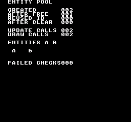
Comando de compilación
New-Item -ItemType Directory -Force .\out | Out-Null
.\kitaqfc\kitaqfc.exe .\kitaqfc\lib\entity.c .\kitaq-docs\samples\api-examples\fc\entity_pool.c -I .\kitaqfc\lib -I .\kitaq-docs\samples -o .\out\entity_pool.nes --mapper=nrom --nes-chr=.\kitaq-docs\samples\font.chr --no-disasmImplementación y código fuente
kitaqfc/lib/entity.h:47
Release every entity and restore deterministic defaults, including the no-sprite sentinel.
kitaqfc/lib/entity.c:14
void entity_clear_all(void)
{
u8 i;
i = 0;
while (i < ENTITY_MAX) {
entity_pool[(__safe_index u8)i].active = 0;
entity_pool[(__safe_index u8)i].type = 0;
entity_pool[(__safe_index u8)i].x = 0;
entity_pool[(__safe_index u8)i].y = 0;
entity_pool[(__safe_index u8)i].vx = 0;
entity_pool[(__safe_index u8)i].vy = 0;
entity_pool[(__safe_index u8)i].state = 0;
entity_pool[(__safe_index u8)i].timer = 0;
entity_pool[(__safe_index u8)i].sprite = 0xFF;
i = (u8)(i + 1);
}
}entity_count_active
Cuenta los espacios ocupados por entidades sin modificarlos.
Sintaxis
u8 entity_count_active(void);Valor devuelto
Número de espacios con active distinto de cero, entre 0 y ENTITY_MAX. Es la ocupación, no el ID más alto ni el número de sprites en pantalla.
Condiciones y límites
El pool es un array fijo, sin asignación dinámica en el heap. ENTITY_MAX vale 16 por defecto y debe estar entre 1 y 255, con la misma definición en todas las unidades de compilación. Los ID empiezan en cero; 0xFF indica fallo.
Ejemplo de uso
created = entity_count_active();
if (created != 2) { failures++; }Este fragmento muestra la llamada. Antes de incorporarlo a un programa completo, cumple los requisitos de inicialización y de los búferes indicados.
Resultado esperado
El programa completo enseña el ciclo de vida de un espacio reutilizable. Lee cada número con su etiqueta: CREATED 002 tras reservar dos entidades; AFTER FREE 001 al liberar la primera; REUSED ID 000 al reutilizar el ID libre más bajo; AFTER CLEAR 000 al vaciar el pool. Comprueba también la consulta null tras liberar y la reinicialización de campos al reutilizar. FAILED CHECKS 000 indica que los valores coinciden.
El recorrido FC llama a cada callback para las dos entidades activas: UPDATE CALLS 002 y DRAW CALLS 002. El callback de actualización mueve ambas un tile a la derecha. El de dibujo coloca A en (3,12) y B en (7,12) para representarlas. Son tiles de fuente del fondo dibujados por el callback, no sprites asignados automáticamente.
Comando de compilación
New-Item -ItemType Directory -Force .\out | Out-Null
.\kitaqfc\kitaqfc.exe .\kitaqfc\lib\entity.c .\kitaq-docs\samples\api-examples\fc\entity_pool.c -I .\kitaqfc\lib -I .\kitaq-docs\samples -o .\out\entity_pool.nes --mapper=nrom --nes-chr=.\kitaq-docs\samples\font.chr --no-disasmImplementación y código fuente
kitaqfc/lib/entity.h:45
Count occupied slots without changing entity state.
kitaqfc/lib/entity.c:94
u8 entity_count_active(void)
{
u8 i;
u8 count;
i = 0;
count = 0;
while (i < ENTITY_MAX) {
if (entity_pool[(__safe_index u8)i].active != 0) count = (u8)(count + 1);
i = (u8)(i + 1);
}
return count;
}entity_create
Reserva una entidad del tipo y posición indicados; devuelve su ID reutilizable o 0xFF si el pool está lleno.
Sintaxis
u8 entity_create(u8 type, s16 x, s16 y);Parámetros
typeEtiqueta de tipo definida por el juego, de 0 a 255. El pool la guarda, pero no selecciona comportamientos ni rutinas de dibujo a partir de ella.
x, yCoordenadas de 16 bits con signo (
-32768–32767). El juego elige la unidad, por ejemplo píxeles o Q8.8; el pool no convierte unidades, recorta posiciones ni aplica velocidades automáticamente.
Valor devuelto
El ID del primer espacio libre (0–ENTITY_MAX-1), o 0xFF si no queda ninguno. Al reservar, fija active=1, guarda tipo y posición, borra velocidad/estado/temporizador y pone sprite=0xFF.
Condiciones y límites
El pool es un array fijo, sin asignación dinámica en el heap. ENTITY_MAX vale 16 por defecto y debe estar entre 1 y 255, con la misma definición en todas las unidades de compilación. Los ID empiezan en cero; 0xFF indica fallo.
Ejemplo de uso
first = entity_create(1, 2, 12);
second = entity_create(2, 6, 12);
if (first == 0xFF || second == 0xFF) { failures++; }Este fragmento muestra la llamada. Antes de incorporarlo a un programa completo, cumple los requisitos de inicialización y de los búferes indicados.
Resultado esperado
El programa completo enseña el ciclo de vida de un espacio reutilizable. Lee cada número con su etiqueta: CREATED 002 tras reservar dos entidades; AFTER FREE 001 al liberar la primera; REUSED ID 000 al reutilizar el ID libre más bajo; AFTER CLEAR 000 al vaciar el pool. Comprueba también la consulta null tras liberar y la reinicialización de campos al reutilizar. FAILED CHECKS 000 indica que los valores coinciden.
El recorrido FC llama a cada callback para las dos entidades activas: UPDATE CALLS 002 y DRAW CALLS 002. El callback de actualización mueve ambas un tile a la derecha. El de dibujo coloca A en (3,12) y B en (7,12) para representarlas. Son tiles de fuente del fondo dibujados por el callback, no sprites asignados automáticamente.
Comando de compilación
New-Item -ItemType Directory -Force .\out | Out-Null
.\kitaqfc\kitaqfc.exe .\kitaqfc\lib\entity.c .\kitaq-docs\samples\api-examples\fc\entity_pool.c -I .\kitaqfc\lib -I .\kitaq-docs\samples -o .\out\entity_pool.nes --mapper=nrom --nes-chr=.\kitaq-docs\samples\font.chr --no-disasmImplementación y código fuente
kitaqfc/lib/entity.h:32
Returns a reusable slot ID, or 0xFF if no slot is free.
kitaqfc/lib/entity.c:34
u8 entity_create(u8 type, s16 x, s16 y)
{
u8 i;
i = 0;
while (i < ENTITY_MAX) {
if (entity_pool[(__safe_index u8)i].active == 0) {
entity_pool[(__safe_index u8)i].active = 1;
entity_pool[(__safe_index u8)i].type = type;
entity_pool[(__safe_index u8)i].x = x;
entity_pool[(__safe_index u8)i].y = y;
entity_pool[(__safe_index u8)i].vx = 0;
entity_pool[(__safe_index u8)i].vy = 0;
entity_pool[(__safe_index u8)i].state = 0;
entity_pool[(__safe_index u8)i].timer = 0;
entity_pool[(__safe_index u8)i].sprite = 0xFF;
return i;
}
i = (u8)(i + 1);
}
return 0xFF;
}entity_destroy
Libera la entidad id; sus datos se conservan hasta que se reutiliza el espacio.
Sintaxis
void entity_destroy(u8 id);Parámetros
idÍndice de espacio reutilizable entre 0 y
ENTITY_MAX-1. Fuera de ese rango es inválido. Destruir un ID inválido no hace nada; consultarlo devuelve null.
Valor devuelto
Ninguno (void).
Condiciones y límites
El pool es un array fijo, sin asignación dinámica en el heap. ENTITY_MAX vale 16 por defecto y debe estar entre 1 y 255, con la misma definición en todas las unidades de compilación. Los ID empiezan en cero; 0xFF indica fallo.
Destruir solo borra active; no elimina los demás campos ni libera sprites o recursos. Una reserva posterior puede reutilizar el mismo ID y dirección para otra entidad. El juego debe limpiar los recursos asociados.
Ejemplo de uso
entity_destroy(first);
after_free = entity_count_active();
if (entity_get(first) != 0 || after_free != 1) { failures++; }Este fragmento muestra la llamada. Antes de incorporarlo a un programa completo, cumple los requisitos de inicialización y de los búferes indicados.
Resultado esperado
El programa completo enseña el ciclo de vida de un espacio reutilizable. Lee cada número con su etiqueta: CREATED 002 tras reservar dos entidades; AFTER FREE 001 al liberar la primera; REUSED ID 000 al reutilizar el ID libre más bajo; AFTER CLEAR 000 al vaciar el pool. Comprueba también la consulta null tras liberar y la reinicialización de campos al reutilizar. FAILED CHECKS 000 indica que los valores coinciden.
El recorrido FC llama a cada callback para las dos entidades activas: UPDATE CALLS 002 y DRAW CALLS 002. El callback de actualización mueve ambas un tile a la derecha. El de dibujo coloca A en (3,12) y B en (7,12) para representarlas. Son tiles de fuente del fondo dibujados por el callback, no sprites asignados automáticamente.
Comando de compilación
New-Item -ItemType Directory -Force .\out | Out-Null
.\kitaqfc\kitaqfc.exe .\kitaqfc\lib\entity.c .\kitaq-docs\samples\api-examples\fc\entity_pool.c -I .\kitaqfc\lib -I .\kitaq-docs\samples -o .\out\entity_pool.nes --mapper=nrom --nes-chr=.\kitaq-docs\samples\font.chr --no-disasmImplementación y código fuente
kitaqfc/lib/entity.h:35
Release a valid slot without clearing its payload. Reallocation resets the payload; a saved pointer or ID must not be treated as a persistent entity identity.
kitaqfc/lib/entity.c:58
void entity_destroy(u8 id)
{
if (id >= ENTITY_MAX) return;
entity_pool[(__safe_index u8)id].active = 0;
}entity_draw_all
Recorre las entidades activas y pasa cada ID al callback de dibujo. Usa el mismo recorrido que entity_update_all; no se dibuja ningún sprite ni píxel si el callback no envía datos de dibujo.
Sintaxis
void entity_draw_all(EntityFn fn);Parámetros
fnPuntero a función con firma
void fn(u8 id). Recibe un ID; usaentity_get(id)para acceder a los campos. Se acepta null y no se realizan llamadas.
Valor devuelto
Ninguno (void).
Condiciones y límites
El pool es un array fijo, sin asignación dinámica en el heap. ENTITY_MAX vale 16 por defecto y debe estar entre 1 y 255, con la misma definición en todas las unidades de compilación. Los ID empiezan en cero; 0xFF indica fallo.
Comprueba la actividad al llegar a cada espacio. El callback puede desactivar uno posterior para omitirlo o activarlo para procesarlo en esta pasada. No usa una instantánea del conjunto activo inicial.
Coloca el callback en el banco PRG común 0 o mantén su banco mapeado durante toda la llamada. El puntero contiene una dirección de CPU de 16 bits y no cambia de banco. Los parámetros y las variables locales de las funciones FC usan memoria estática: no invoques el recorrido de entidades de forma recursiva ni vuelvas a entrar en él desde una interrupción.
Ejemplo de uso
void demo_draw(u8 id) {
Entity* entity;
entity = entity_get(id);
if (entity != 0) {
m_put((u8)entity->x, (u8)entity->y, (u8)('A' + entity->type - 1));
draw_calls++;
}
}
// From main(), after creating two entities:
draw_calls = 0;
entity_draw_all(demo_draw);
automatic_draws = draw_calls;
if (automatic_draws != 2) { failures++; }Este fragmento muestra la llamada. Antes de incorporarlo a un programa completo, cumple los requisitos de inicialización y de los búferes indicados.
Resultado esperado
El programa completo enseña el ciclo de vida de un espacio reutilizable. Lee cada número con su etiqueta: CREATED 002 tras reservar dos entidades; AFTER FREE 001 al liberar la primera; REUSED ID 000 al reutilizar el ID libre más bajo; AFTER CLEAR 000 al vaciar el pool. Comprueba también la consulta null tras liberar y la reinicialización de campos al reutilizar. FAILED CHECKS 000 indica que los valores coinciden.
El recorrido FC llama a cada callback para las dos entidades activas: UPDATE CALLS 002 y DRAW CALLS 002. El callback de actualización mueve ambas un tile a la derecha. El de dibujo coloca A en (3,12) y B en (7,12) para representarlas. Son tiles de fuente del fondo dibujados por el callback, no sprites asignados automáticamente.
Comando de compilación
New-Item -ItemType Directory -Force .\out | Out-Null
.\kitaqfc\kitaqfc.exe .\kitaqfc\lib\entity.c .\kitaq-docs\samples\api-examples\fc\entity_pool.c -I .\kitaqfc\lib -I .\kitaq-docs\samples -o .\out\entity_pool.nes --mapper=nrom --nes-chr=.\kitaq-docs\samples\font.chr --no-disasmImplementación y código fuente
kitaqfc/lib/entity.h:43
Call the drawing callback for each active slot, using the same traversal rules as update. The callback submits drawing data; the pool does not allocate sprites.
kitaqfc/lib/entity.c:88
void entity_draw_all(EntityFn fn)
{
entity_update_all(fn);
}entity_get
Devuelve un puntero a la entidad activa, o null si el ID no es válido o está libre. El almacenamiento se reutiliza.
Sintaxis
Entity* entity_get(u8 id);Parámetros
idÍndice de espacio reutilizable entre 0 y
ENTITY_MAX-1. Fuera de ese rango es inválido. Destruir un ID inválido no hace nada; consultarlo devuelve null.
Valor devuelto
Puntero modificable al espacio activo, o null si el ID es inválido o está libre. La memoria pertenece al pool; no la liberes ni uses el puntero como identidad permanente tras destruir y recrear entidades.
Condiciones y límites
El pool es un array fijo, sin asignación dinámica en el heap. ENTITY_MAX vale 16 por defecto y debe estar entre 1 y 255, con la misma definición en todas las unidades de compilación. Los ID empiezan en cero; 0xFF indica fallo.
Destruir solo borra active; no elimina los demás campos ni libera sprites o recursos. Una reserva posterior puede reutilizar el mismo ID y dirección para otra entidad. El juego debe limpiar los recursos asociados.
Ejemplo de uso
current_entity = entity_get(first);
if (current_entity != 0) { current_entity->vx = 5; }
else { failures++; }Este fragmento muestra la llamada. Antes de incorporarlo a un programa completo, cumple los requisitos de inicialización y de los búferes indicados.
Resultado esperado
El programa completo enseña el ciclo de vida de un espacio reutilizable. Lee cada número con su etiqueta: CREATED 002 tras reservar dos entidades; AFTER FREE 001 al liberar la primera; REUSED ID 000 al reutilizar el ID libre más bajo; AFTER CLEAR 000 al vaciar el pool. Comprueba también la consulta null tras liberar y la reinicialización de campos al reutilizar. FAILED CHECKS 000 indica que los valores coinciden.
El recorrido FC llama a cada callback para las dos entidades activas: UPDATE CALLS 002 y DRAW CALLS 002. El callback de actualización mueve ambas un tile a la derecha. El de dibujo coloca A en (3,12) y B en (7,12) para representarlas. Son tiles de fuente del fondo dibujados por el callback, no sprites asignados automáticamente.
Comando de compilación
New-Item -ItemType Directory -Force .\out | Out-Null
.\kitaqfc\kitaqfc.exe .\kitaqfc\lib\entity.c .\kitaq-docs\samples\api-examples\fc\entity_pool.c -I .\kitaqfc\lib -I .\kitaq-docs\samples -o .\out\entity_pool.nes --mapper=nrom --nes-chr=.\kitaq-docs\samples\font.chr --no-disasmImplementación y código fuente
kitaqfc/lib/entity.h:37
Returns null for an invalid or inactive ID; the returned pointer aliases reusable pool storage.
kitaqfc/lib/entity.c:66
Entity* entity_get(u8 id)
{
if (id >= ENTITY_MAX) return 0;
if (entity_pool[(__safe_index u8)id].active == 0) return 0;
return &entity_pool[(__safe_index u8)id];
}entity_init
Inicializa todos los espacios del pool de entidades.
Sintaxis
void entity_init(void);Valor devuelto
Ninguno (void).
Condiciones y límites
El pool es un array fijo, sin asignación dinámica en el heap. ENTITY_MAX vale 16 por defecto y debe estar entre 1 y 255, con la misma definición en todas las unidades de compilación. Los ID empiezan en cero; 0xFF indica fallo.
Pone a cero active,type,x,y,vx,vy,state,timer y deja sprite en 0xFF en todos los espacios. No oculta ni libera sprites de hardware; esos recursos se limpian por separado.
Ejemplo de uso
entity_init();
if (entity_count_active() != 0) { failures++; }Este fragmento muestra la llamada. Antes de incorporarlo a un programa completo, cumple los requisitos de inicialización y de los búferes indicados.
Resultado esperado
El programa completo enseña el ciclo de vida de un espacio reutilizable. Lee cada número con su etiqueta: CREATED 002 tras reservar dos entidades; AFTER FREE 001 al liberar la primera; REUSED ID 000 al reutilizar el ID libre más bajo; AFTER CLEAR 000 al vaciar el pool. Comprueba también la consulta null tras liberar y la reinicialización de campos al reutilizar. FAILED CHECKS 000 indica que los valores coinciden.
El recorrido FC llama a cada callback para las dos entidades activas: UPDATE CALLS 002 y DRAW CALLS 002. El callback de actualización mueve ambas un tile a la derecha. El de dibujo coloca A en (3,12) y B en (7,12) para representarlas. Son tiles de fuente del fondo dibujados por el callback, no sprites asignados automáticamente.
Comando de compilación
New-Item -ItemType Directory -Force .\out | Out-Null
.\kitaqfc\kitaqfc.exe .\kitaqfc\lib\entity.c .\kitaq-docs\samples\api-examples\fc\entity_pool.c -I .\kitaqfc\lib -I .\kitaq-docs\samples -o .\out\entity_pool.nes --mapper=nrom --nes-chr=.\kitaq-docs\samples\font.chr --no-disasmImplementación y código fuente
kitaqfc/lib/entity.h:30
Reset every slot before the game starts using the pool.
kitaqfc/lib/entity.c:8
void entity_init(void)
{
entity_clear_all();
}entity_update_all
Recorre los espacios activos por ID ascendente y llama una vez a fn(id) para cada uno. El callback implementa movimiento, colisiones o temporizadores; el pool no aporta esa lógica. Un callback null no hace nada.
Sintaxis
void entity_update_all(EntityFn fn);Parámetros
fnPuntero a función con firma
void fn(u8 id). Recibe un ID; usaentity_get(id)para acceder a los campos. Se acepta null y no se realizan llamadas.
Valor devuelto
Ninguno (void).
Condiciones y límites
El pool es un array fijo, sin asignación dinámica en el heap. ENTITY_MAX vale 16 por defecto y debe estar entre 1 y 255, con la misma definición en todas las unidades de compilación. Los ID empiezan en cero; 0xFF indica fallo.
Comprueba la actividad al llegar a cada espacio. El callback puede desactivar uno posterior para omitirlo o activarlo para procesarlo en esta pasada. No usa una instantánea del conjunto activo inicial.
Coloca el callback en el banco PRG común 0 o mantén su banco mapeado durante toda la llamada. El puntero contiene una dirección de CPU de 16 bits y no cambia de banco. Los parámetros y las variables locales de las funciones FC usan memoria estática: no invoques el recorrido de entidades de forma recursiva ni vuelvas a entrar en él desde una interrupción.
Ejemplo de uso
void demo_update(u8 id) {
Entity* entity;
entity = entity_get(id);
if (entity != 0) { entity->x = entity->x + 1; update_calls++; }
}
// From main(), after creating two entities:
update_calls = 0;
entity_update_all(demo_update);
automatic_updates = update_calls;
if (automatic_updates != 2) { failures++; }Este fragmento muestra la llamada. Antes de incorporarlo a un programa completo, cumple los requisitos de inicialización y de los búferes indicados.
Resultado esperado
El programa completo enseña el ciclo de vida de un espacio reutilizable. Lee cada número con su etiqueta: CREATED 002 tras reservar dos entidades; AFTER FREE 001 al liberar la primera; REUSED ID 000 al reutilizar el ID libre más bajo; AFTER CLEAR 000 al vaciar el pool. Comprueba también la consulta null tras liberar y la reinicialización de campos al reutilizar. FAILED CHECKS 000 indica que los valores coinciden.
El recorrido FC llama a cada callback para las dos entidades activas: UPDATE CALLS 002 y DRAW CALLS 002. El callback de actualización mueve ambas un tile a la derecha. El de dibujo coloca A en (3,12) y B en (7,12) para representarlas. Son tiles de fuente del fondo dibujados por el callback, no sprites asignados automáticamente.
Comando de compilación
New-Item -ItemType Directory -Force .\out | Out-Null
.\kitaqfc\kitaqfc.exe .\kitaqfc\lib\entity.c .\kitaq-docs\samples\api-examples\fc\entity_pool.c -I .\kitaqfc\lib -I .\kitaq-docs\samples -o .\out\entity_pool.nes --mapper=nrom --nes-chr=.\kitaq-docs\samples\font.chr --no-disasmImplementación y código fuente
kitaqfc/lib/entity.h:40
Call fn(id) for each active slot in ascending order. A null callback does nothing. Changes to later slots take effect during the same traversal. Do not reenter this traversal.
kitaqfc/lib/entity.c:75
void entity_update_all(EntityFn fn)
{
u8 i;
if (fn == 0) return;
i = 0;
while (i < ENTITY_MAX) {
if (entity_pool[(__safe_index u8)i].active != 0) fn(i);
i = (u8)(i + 1);
}
}Archivos FDS y posiciones de guardado de tamaño fijo
fds_file.h permite cargar archivos en los búferes del juego y escribir en una posición de guardado reservada del disco. fds_save.h incluye las mismas declaraciones. Use fds_overlay.h para llamar a código de overlay.
__fds_load_file() / __fds_save_file()
fds_file_io.c fds_file_io_manifest.json fds_file_io_payload.bin
fds_sound.h
Declara las intrínsecas del compilador para onda de 64 pasos, tabla de modulación, altura, volumen y envolventes. KITAQFC genera sus implementaciones.
Construye una imagen .fds con --mapper=fds. Esta lección usa sonido sin E/S de disco. La grabación utiliza el arranque directo en RAM y el modelo de audio de KUROSAKI. El firmware vacío de prueba no implementa rutinas BIOS ni se distribuye. El arranque normal desde disco y el hardware físico requieren un entorno de arranque adecuado.
Referencia de funciones: __fds_sound_enable, __fds_wave_load, __fds_mod_load, __fds_freq_set, __fds_volume_set, __fds_env_set
fixed.h — Aritmética de punto fijo Q8.8 y rectángulos
La aritmética Q8.8 representa coordenadas y velocidades fraccionarias mediante enteros, junto con pruebas de colisión entre rectángulos y puntos. Comprueba la precisión y los límites de cada operación.
fix_div
Divide valores Q8.8 después de reducir la precisión de los operandos.
Sintaxis
fix8 fix_div(fix8 a, fix8 b);Parámetros
aOperando izquierdo en Q8.8.
bOperando derecho en Q8.8.
Valor devuelto
Devuelve un cociente Q8.8, o cero si b == 0.
Condiciones y límites
La expresión es ((a >> 4) * 256) / (b >> 4). Un divisor distinto de cero debe seguir siéndolo después del desplazamiento: no pases valores brutos positivos de 1 a 15. El numerador escalado también debe caber en 16 bits.
Ejemplo de uso
result[3]=fix_div(768,512);Este fragmento muestra la llamada. Antes de incorporarlo a un programa completo, cumple los requisitos de inicialización y de los búferes indicados.
Resultado esperado
Dividir 3,0 entre 2,0 produce 1,5 (valor bruto 384). Otra comprobación verifica el retorno explícito cuando el divisor es cero.
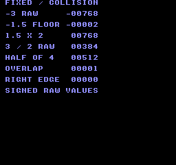
Comando de compilación
New-Item -ItemType Directory -Force .\out | Out-Null
.\kitaqfc\kitaqfc.exe .\kitaq-docs\samples\api-examples\fc\batch_math.c -I .\kitaqfc\lib -I .\kitaq-docs\samples -o .\out\batch_math.nes --no-cache --no-disasm --mapper=nrom --nes-chr=.\kitaq-docs\samples\font.chrImplementación y código fuente
kitaqfc/lib/fixed.h:35
Scale the reduced-precision quotient back to 8.8 and return zero for b == 0. Callers must also ensure (b >> 4) is nonzero; the explicit check only tests b. The intermediate product must fit the compiler's integer arithmetic.
kitaqfc/lib/fixed.c:26
fix8 fix_div(fix8 a, fix8 b)
{
if (b == 0) return 0;
return (fix8)(((a >> 4) * 256) / (b >> 4));
}fix_from_int
Convierte una coordenada o velocidad entera a Q8.8 para conservar la parte fraccionaria en los cálculos posteriores.
Sintaxis
fix8 fix_from_int(s16 n);Parámetros
nEntero que se va a convertir, entre −128 y 127.
Valor devuelto
Devuelve el valor bruto n × 256.
Condiciones y límites
fix8 usa Q8.8 con signo: el valor bruto 256 representa 1,0. Mantén los valores intermedios y los resultados dentro del rango de 16 bits.
Ejemplo de uso
result[0]=fix_from_int(-3);Este fragmento muestra la llamada. Antes de incorporarlo a un programa completo, cumple los requisitos de inicialización y de los búferes indicados.
Resultado esperado
El ejemplo convierte −3. El texto −00768 muestra el resultado bruto Q8.8, −768.
Comando de compilación
New-Item -ItemType Directory -Force .\out | Out-Null
.\kitaqfc\kitaqfc.exe .\kitaq-docs\samples\api-examples\fc\batch_math.c -I .\kitaqfc\lib -I .\kitaq-docs\samples -o .\out\batch_math.nes --no-cache --no-disasm --mapper=nrom --nes-chr=.\kitaq-docs\samples\font.chrImplementación y código fuente
kitaqfc/lib/fixed.h:26
Convert an integer to signed 8.8 fixed point by moving it into the high byte. The caller must keep the result within the representable 16-bit range.
kitaqfc/lib/fixed.c:5
fix8 fix_from_int(s16 n)
{
return (fix8)(n << 8);
}fix_lerp
Interpola de un valor Q8.8 hacia otro usando un peso de ocho bits.
Sintaxis
fix8 fix_lerp(fix8 a, fix8 b, u8 t_q8);Parámetros
aOperando izquierdo en Q8.8.
bOperando derecho en Q8.8.
t_q8Peso de interpolación, de 0 a 255.
Valor devuelto
Devuelve el valor Q8.8 de la interpolación aproximada.
Condiciones y límites
La diferencia y el peso se desplazan cuatro bits a la derecha. Esto deja 16 niveles de peso, de modo que ni siquiera 255 garantiza alcanzar el extremo final. Mantén b - a y el resultado dentro del rango de 16 bits.
Ejemplo de uso
result[4]=fix_lerp(0,1024,128);Este fragmento muestra la llamada. Antes de incorporarlo a un programa completo, cumple los requisitos de inicialización y de los búferes indicados.
Resultado esperado
Entre 0 y 4,0, un peso de 128 produce 2,0 (valor bruto 512). El peso 255 produce 3,75 (valor bruto 960), lo que demuestra que no se alcanza el extremo final.
Comando de compilación
New-Item -ItemType Directory -Force .\out | Out-Null
.\kitaqfc\kitaqfc.exe .\kitaq-docs\samples\api-examples\fc\batch_math.c -I .\kitaqfc\lib -I .\kitaq-docs\samples -o .\out\batch_math.nes --no-cache --no-disasm --mapper=nrom --nes-chr=.\kitaq-docs\samples\font.chrImplementación y código fuente
kitaqfc/lib/fixed.h:38
Interpolate toward b using a quantized Q0.8 weight. Both shifts discard low bits, so small changes may vanish and a weight of 255 need not reach b.
kitaqfc/lib/fixed.c:34
fix8 fix_lerp(fix8 a, fix8 b, u8 t_q8)
{
fix8 d;
// The endpoint difference must fit s16 before the reduced-precision interpolation.
d = (fix8)(b - a);
return (fix8)(a + (fix8)((d >> 4) * (s16)(t_q8 >> 4)));
}fix_mul
Multiplica dos valores Q8.8 mediante una aproximación de bajo coste.
Sintaxis
fix8 fix_mul(fix8 a, fix8 b);Parámetros
aOperando izquierdo en Q8.8.
bOperando derecho en Q8.8.
Valor devuelto
Devuelve el producto en Q8.8.
Condiciones y límites
Antes de multiplicar, ambos operandos se desplazan cuatro bits a la derecha y pierden sus cuatro bits menos significativos. La precisión es menor que en una multiplicación completa de 16 por 16 bits. fix8 usa Q8.8 con signo, donde el valor bruto 256 representa 1,0. Mantén los valores intermedios y los resultados dentro del rango de 16 bits.
Ejemplo de uso
result[2]=fix_mul(384,512);Este fragmento muestra la llamada. Antes de incorporarlo a un programa completo, cumple los requisitos de inicialización y de los búferes indicados.
Resultado esperado
Multiplicar 1,5 por 2,0 produce 3,0 (valor bruto 768). El programa también comprueba un caso de cuantización: multiplicar el valor bruto 271 por 271 da 256.
Comando de compilación
New-Item -ItemType Directory -Force .\out | Out-Null
.\kitaqfc\kitaqfc.exe .\kitaq-docs\samples\api-examples\fc\batch_math.c -I .\kitaqfc\lib -I .\kitaq-docs\samples -o .\out\batch_math.nes --no-cache --no-disasm --mapper=nrom --nes-chr=.\kitaq-docs\samples\font.chrImplementación y código fuente
kitaqfc/lib/fixed.h:31
Approximate 8.8 multiplication by discarding four low bits from each operand before multiplying. This trades precision for a smaller intermediate product.
kitaqfc/lib/fixed.c:18
fix8 fix_mul(fix8 a, fix8 b)
{
return (fix8)((a >> 4) * (b >> 4));
}fix_to_int
Extrae una coordenada entera de Q8.8 descartando los bits fraccionarios. Los valores negativos se redondean hacia menos infinito.
Sintaxis
s16 fix_to_int(fix8 x);Parámetros
xValor Q8.8 que se va a convertir a entero.
Valor devuelto
Devuelve un entero con signo.
Condiciones y límites
fix8 usa Q8.8 con signo: el valor bruto 256 representa 1,0. Mantén los valores intermedios y los resultados dentro del rango de 16 bits.
Ejemplo de uso
result[1]=fix_to_int(-384);Este fragmento muestra la llamada. Antes de incorporarlo a un programa completo, cumple los requisitos de inicialización y de los búferes indicados.
Resultado esperado
El valor bruto −384 (−1,5) produce −2, mostrado como −00002. Una comprobación de límites confirma también que el valor bruto −1 se convierte en −1.
Comando de compilación
New-Item -ItemType Directory -Force .\out | Out-Null
.\kitaqfc\kitaqfc.exe .\kitaq-docs\samples\api-examples\fc\batch_math.c -I .\kitaqfc\lib -I .\kitaq-docs\samples -o .\out\batch_math.nes --no-cache --no-disasm --mapper=nrom --nes-chr=.\kitaq-docs\samples\font.chrImplementación y código fuente
kitaqfc/lib/fixed.h:28
Discard the eight fractional bits using a signed right shift.
kitaqfc/lib/fixed.c:11
s16 fix_to_int(fix8 x)
{
return (s16)(x >> 8);
}kq_abs_s16
Calcula el valor absoluto de un entero de 16 bits con signo.
Sintaxis
s16 kq_abs_s16(s16 v);Parámetros
vValor de 16 bits con signo cuyo valor absoluto se necesita.
Valor devuelto
Devuelve una magnitud no negativa, salvo en el caso de −32768, cuyo valor absoluto no es representable.
Condiciones y límites
El valor positivo 32768 no cabe en s16. Excluye −32768 si necesitas un resultado no negativo.
Ejemplo de uso
result[0]=kq_abs_s16(-123);Este fragmento muestra la llamada. Antes de incorporarlo a un programa completo, cumple los requisitos de inicialización y de los búferes indicados.
Resultado esperado
El ejemplo transforma −123 en 123, como al calcular la magnitud de una diferencia de coordenadas.
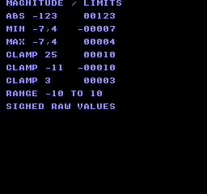
Comando de compilación
New-Item -ItemType Directory -Force .\out | Out-Null
.\kitaqfc\kitaqfc.exe .\kitaq-docs\samples\api-examples\fc\batch_math_limits.c -I .\kitaqfc\lib -I .\kitaq-docs\samples -o .\out\batch_math_limits.nes --no-cache --no-disasm --mapper=nrom --nes-chr=.\kitaq-docs\samples\font.chrImplementación y código fuente
kitaqfc/lib/fixed.h:41
Return the magnitude in s16. The most-negative s16 has no positive s16 representation and must be excluded by callers needing a nonnegative result.
kitaqfc/lib/fixed.c:44
s16 kq_abs_s16(s16 v)
{
if (v < 0) return (s16)(0 - v);
return v;
}kq_clamp_s16
Limita una coordenada o velocidad a un intervalo que incluye ambos extremos.
Sintaxis
s16 kq_clamp_s16(s16 v, s16 lo, s16 hi);Parámetros
vValor con signo que se va a limitar.
loLímite inferior incluido.
hiLímite superior incluido.
Valor devuelto
Devuelve lo si el valor está por debajo del intervalo, hi si lo supera o v si está dentro.
Condiciones y límites
Proporciona un intervalo válido con lo <= hi.
Ejemplo de uso
result[3]=kq_clamp_s16(25,-10,10);Este fragmento muestra la llamada. Antes de incorporarlo a un programa completo, cumple los requisitos de inicialización y de los búferes indicados.
Resultado esperado
Limitar 25 al intervalo −10…10 da 10. Las comprobaciones también cubren −11→−10 en el límite inferior y 3→3 dentro del intervalo.
Comando de compilación
New-Item -ItemType Directory -Force .\out | Out-Null
.\kitaqfc\kitaqfc.exe .\kitaq-docs\samples\api-examples\fc\batch_math_limits.c -I .\kitaqfc\lib -I .\kitaq-docs\samples -o .\out\batch_math_limits.nes --no-cache --no-disasm --mapper=nrom --nes-chr=.\kitaq-docs\samples\font.chrImplementación y código fuente
kitaqfc/lib/fixed.h:47
Clamp to an inclusive interval; callers must provide lo <= hi.
kitaqfc/lib/fixed.c:65
s16 kq_clamp_s16(s16 v, s16 lo, s16 hi)
{
if (v < lo) return lo;
if (v > hi) return hi;
return v;
}kq_max_s16
Selecciona el mayor de dos valores de 16 bits con signo.
Sintaxis
s16 kq_max_s16(s16 a, s16 b);Parámetros
aPrimer valor con signo que se va a comparar.
bSegundo valor con signo que se va a comparar.
Valor devuelto
Devuelve el operando seleccionado.
Condiciones y límites
La comparación tiene en cuenta el signo. Si los operandos son iguales, devuelve ese mismo valor; no modifica ninguna entrada.
Ejemplo de uso
result[2]=kq_max_s16(-7,4);Este fragmento muestra la llamada. Antes de incorporarlo a un programa completo, cumple los requisitos de inicialización y de los búferes indicados.
Resultado esperado
Comparar −7 y 4 da 4. Los resultados negativos se muestran con un signo menos.
Comando de compilación
New-Item -ItemType Directory -Force .\out | Out-Null
.\kitaqfc\kitaqfc.exe .\kitaq-docs\samples\api-examples\fc\batch_math_limits.c -I .\kitaqfc\lib -I .\kitaq-docs\samples -o .\out\batch_math_limits.nes --no-cache --no-disasm --mapper=nrom --nes-chr=.\kitaq-docs\samples\font.chrImplementación y código fuente
kitaqfc/lib/fixed.h:45
Select the larger signed value.
kitaqfc/lib/fixed.c:58
s16 kq_max_s16(s16 a, s16 b)
{
if (a > b) return a;
return b;
}kq_min_s16
Selecciona el menor de dos valores de 16 bits con signo.
Sintaxis
s16 kq_min_s16(s16 a, s16 b);Parámetros
aPrimer valor con signo que se va a comparar.
bSegundo valor con signo que se va a comparar.
Valor devuelto
Devuelve el operando seleccionado.
Condiciones y límites
La comparación tiene en cuenta el signo. Si los operandos son iguales, devuelve ese mismo valor; no modifica ninguna entrada.
Ejemplo de uso
result[1]=kq_min_s16(-7,4);Este fragmento muestra la llamada. Antes de incorporarlo a un programa completo, cumple los requisitos de inicialización y de los búferes indicados.
Resultado esperado
Comparar −7 y 4 da -7. Los resultados negativos se muestran con un signo menos.
Comando de compilación
New-Item -ItemType Directory -Force .\out | Out-Null
.\kitaqfc\kitaqfc.exe .\kitaq-docs\samples\api-examples\fc\batch_math_limits.c -I .\kitaqfc\lib -I .\kitaq-docs\samples -o .\out\batch_math_limits.nes --no-cache --no-disasm --mapper=nrom --nes-chr=.\kitaq-docs\samples\font.chrImplementación y código fuente
kitaqfc/lib/fixed.h:43
Select the smaller signed value.
kitaqfc/lib/fixed.c:51
s16 kq_min_s16(s16 a, s16 b)
{
if (a < b) return a;
return b;
}kq_point_in_rect
Comprueba si un punto está dentro de un rectángulo, incluidos sus bordes izquierdo y superior.
Sintaxis
u8 kq_point_in_rect(s16 x, s16 y, KQRect r);Parámetros
xCoordenada X del punto, en el sistema de coordenadas del rectángulo.
yCoordenada Y del punto.
rRectángulo que se va a comprobar, pasado por valor.
Valor devuelto
Devuelve 1 si está dentro y 0 si está fuera.
Condiciones y límites
Usa dimensiones positivas y asegúrate de que las sumas de coordenada y tamaño sean representables como s16. Se excluyen los bordes derecho e inferior. Los rectángulos de área cero no se rechazan explícitamente.
Ejemplo de uso
result[1]=kq_point_in_rect(9,1,a);
for(gy=0;gy<11;gy++){for(gx=0;gx<15;gx++){
inside_a=kq_point_in_rect(gx,gy,a);inside_b=kq_point_in_rect(gx,gy,b);
tile=0;if(inside_a){tile=65;result[3]=result[3]+1;}if(inside_b)tile=66;if(inside_a && inside_b){tile=79;result[4]=result[4]+1;}
m_put(1+gx,2+gy,tile);__vramq_commit();__vramq_exec();
}}Este fragmento muestra la llamada. Antes de incorporarlo a un programa completo, cumple los requisitos de inicialización y de los búferes indicados.
Resultado esperado
Cada unidad de coordenada ocupa un tile. Los rectángulos A en (1,1) y B en (5,4) miden 8×6. Las celdas exclusivas de A muestran A; las exclusivas de B, B; y la zona de solapamiento de 4×3 muestra 12 celdas O. El borde derecho de A, x=9, queda excluido. En CGB, A es rojo, B azul y O verde.
Comando de compilación
New-Item -ItemType Directory -Force .\out | Out-Null
.\kitaqfc\kitaqfc.exe .\kitaq-docs\samples\api-examples\fc\batch_geometry.c -I .\kitaqfc\lib -I .\kitaq-docs\samples -o .\out\batch_geometry.nes --no-cache --no-disasm --mapper=nrom --nes-chr=.\kitaq-docs\samples\font.chrImplementación y código fuente
kitaqfc/lib/fixed.h:54
Test a half-open rectangle: left/top edges are included, right/bottom excluded. The coordinate-plus-size sums must remain representable as s16.
kitaqfc/lib/fixed.c:86
u8 kq_point_in_rect(s16 x, s16 y, KQRect r)
{
if (x < r.x) return 0;
if (y < r.y) return 0;
if (x >= (s16)(r.x + r.w)) return 0;
if (y >= (s16)(r.y + r.h)) return 0;
return 1;
}kq_rect_intersect
Comprueba si dos rectángulos alineados con los ejes se solapan con un área mayor que cero.
Sintaxis
u8 kq_rect_intersect(KQRect a, KQRect b);Parámetros
aPrimer rectángulo, pasado por valor:
x, yindican su esquina superior izquierda;w, hson su anchura y altura.bSegundo rectángulo, en el mismo sistema de coordenadas que A.
Valor devuelto
Devuelve 1 si hay solapamiento y 0 si están separados o solo se tocan los bordes.
Condiciones y límites
Usa dimensiones positivas y asegúrate de que las sumas de coordenada y tamaño sean representables como s16. Se excluyen los bordes derecho e inferior. Los rectángulos de área cero no se rechazan explícitamente.
Ejemplo de uso
result[0]=kq_rect_intersect(a,b);result[2]=kq_rect_intersect(a,touch);Este fragmento muestra la llamada. Antes de incorporarlo a un programa completo, cumple los requisitos de inicialización y de los búferes indicados.
Resultado esperado
Cada unidad de coordenada ocupa un tile. Los rectángulos A en (1,1) y B en (5,4) miden 8×6. Las celdas exclusivas de A muestran A; las exclusivas de B, B; y la zona de solapamiento de 4×3 muestra 12 celdas O. El borde derecho de A, x=9, queda excluido. En CGB, A es rojo, B azul y O verde.
Comando de compilación
New-Item -ItemType Directory -Force .\out | Out-Null
.\kitaqfc\kitaqfc.exe .\kitaq-docs\samples\api-examples\fc\batch_geometry.c -I .\kitaqfc\lib -I .\kitaq-docs\samples -o .\out\batch_geometry.nes --no-cache --no-disasm --mapper=nrom --nes-chr=.\kitaq-docs\samples\font.chrImplementación y código fuente
kitaqfc/lib/fixed.h:51
Test overlap using exclusive right/bottom edges; touching edges do not collide. Require positive dimensions and edge sums that fit s16; zero-sized rectangles are not explicitly rejected and may be reported as overlapping.
kitaqfc/lib/fixed.c:75
u8 kq_rect_intersect(KQRect a, KQRect b)
{
if ((s16)(a.x + a.w) <= b.x) return 0;
if ((s16)(b.x + b.w) <= a.x) return 0;
if ((s16)(a.y + a.h) <= b.y) return 0;
if ((s16)(b.y + b.h) <= a.y) return 0;
return 1;
}input.h — Estado, pulsación, liberación y repetición de botones
Usa input_down para movimiento continuo, input_pressed para acciones únicas, input_released para actuar al soltar y input_repeat para repetir opciones de menú. Inicializa una vez, actualiza una vez por ciclo de entrada y consulta cuando lo necesites. btn_down, btn_pressed, btn_released y btn_repeat son alias de esas cuatro consultas.
Lee el mando 1 con __pad_read1_safe, convierte el orden de bits NES al formato común BTN_*, guarda el estado anterior y calcula las máscaras de pulsación, liberación y repetición. No incluye el mando 2. Llámala una vez por ciclo de entrada.
Máscaras comunes: BTN_RIGHT=0x01, BTN_LEFT=0x02, BTN_UP=0x04, BTN_DOWN=0x08, BTN_A=0x10, BTN_B=0x20, BTN_SELECT=0x40, BTN_START=0x80. Un bit a 1 indica que el botón está mantenido. input_* usa este formato en GB y FC; las funciones FC de lectura directa emplean otro orden.
Los intervalos cuentan actualizaciones, no milisegundos. Una pulsación nueva genera un pulso inmediato. Con INPUT_REPEAT_DELAY=18 e INPUT_REPEAT_RATE=5, el siguiente llega 19 actualizaciones después y los demás cada 6. Cada botón tiene su contador. Aplica los mismos valores de las macros al compilar input.c; cambiar solo el encabezado del código llamante no reconfigura la biblioteca.
btn_down
btn_down es un alias de input_down. Comprueba si alguno de los botones seleccionados está pulsado actualmente.
Comprueba si está mantenido algún botón seleccionado por mask.
Sintaxis
u8 btn_down(u8 mask);Parámetros
maskUna máscara
BTN_*o varias combinadas con|. Basta con que coincida cualquiera de los botones seleccionados;BTN_A | BTN_Bno exige ambos. La máscara 0 siempre devuelve 0. Para exigir todos los botones mantenidos, compara(input_current() & mask) == mask.
Valor devuelto
Devuelve exactamente 1 si algún botón seleccionado cumple la condición; en caso contrario, 0. No devuelve una máscara de botones.
Condiciones y límites
La cabecera define una macro de tipo objeto que se expande al nombre de la implementación. Los argumentos, valores devueltos y acceso al estado son los mismos que en el destino; el alias no añade estado ni procesamiento propio. Usa input.h/input.c para entradas o system.h/system.c para servicios de fotograma, como en el ejemplo completo y su comando de compilación.
Máscaras comunes: BTN_RIGHT=0x01, BTN_LEFT=0x02, BTN_UP=0x04, BTN_DOWN=0x08, BTN_A=0x10, BTN_B=0x20, BTN_SELECT=0x40, BTN_START=0x80. Un bit a 1 indica que el botón está mantenido. input_* usa este formato en GB y FC; las funciones FC de lectura directa emplean otro orden.
Las consultas leen el último input_update() sin volver a leer el mando, consumir eventos ni avanzar temporizadores. Consultar varias veces en el mismo ciclo da el mismo resultado. Si llamas dos veces a input_update() manteniendo el botón, la segunda llamada borra el evento de nueva pulsación.
Ejemplo de uso
if (btn_down(BTN_A)!=0) held_ticks++;Este fragmento muestra la llamada. Antes de incorporarlo a un programa completo, cumple los requisitos de inicialización y de los búferes indicados.
Resultado esperado
Este programa distingue entre mantener pulsado un botón, pulsarlo por primera vez, soltarlo y generar repeticiones automáticas. Mantén A durante 40 actualizaciones y suéltalo. FIRST DOWN, FIRST PRESS y FIRST REPEAT valen 1; FIRST CURRENT vale 16. HELD TICKS vale 40, PRESS COUNT vale 1 y REPEAT COUNT vale 5. Al soltar A, RELEASE vale 1, LAST CURRENT vale 0 y LAST PREVIOUS vale 16. FAILED CHECKS debe ser 0. Si cambias la duración, cambian los recuentos; el programa comprueba los intervalos de repetición según la duración observada.
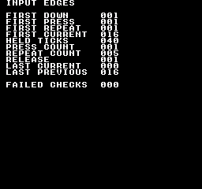
Comando de compilación
New-Item -ItemType Directory -Force .\out | Out-Null
.\kitaqfc\kitaqfc.exe .\kitaqfc\lib\input.c .\kitaq-docs\samples\api-examples\fc\input_aliases.c -I .\kitaqfc\lib -I .\kitaq-docs\samples -o .\out\input_aliases.nes --mapper=nrom --nes-chr=.\kitaq-docs\samples\font.chr --no-disasm --no-cacheImplementación y código fuente
kitaqfc/lib/input.h:53
#define btn_down input_downkitaqfc/lib/input.c:85
u8 input_down(u8 mask) { return (u8)((kq_input_keys & mask) != 0); }btn_pressed
btn_pressed es un alias de input_pressed. Comprueba si alguno de los botones seleccionados se acaba de pulsar en la última actualización de entrada.
Detecta si un botón de la máscara pasó de suelto a pulsado en la última actualización.
Sintaxis
u8 btn_pressed(u8 mask);Parámetros
maskUna máscara
BTN_*o varias combinadas con|. Basta con que coincida cualquiera de los botones seleccionados;BTN_A | BTN_Bno exige ambos. La máscara 0 siempre devuelve 0. Para exigir todos los botones mantenidos, compara(input_current() & mask) == mask.
Valor devuelto
Devuelve exactamente 1 si algún botón seleccionado cumple la condición; en caso contrario, 0. No devuelve una máscara de botones.
Condiciones y límites
La cabecera define una macro de tipo objeto que se expande al nombre de la implementación. Los argumentos, valores devueltos y acceso al estado son los mismos que en el destino; el alias no añade estado ni procesamiento propio. Usa input.h/input.c para entradas o system.h/system.c para servicios de fotograma, como en el ejemplo completo y su comando de compilación.
Máscaras comunes: BTN_RIGHT=0x01, BTN_LEFT=0x02, BTN_UP=0x04, BTN_DOWN=0x08, BTN_A=0x10, BTN_B=0x20, BTN_SELECT=0x40, BTN_START=0x80. Un bit a 1 indica que el botón está mantenido. input_* usa este formato en GB y FC; las funciones FC de lectura directa emplean otro orden.
Las consultas leen el último input_update() sin volver a leer el mando, consumir eventos ni avanzar temporizadores. Consultar varias veces en el mismo ciclo da el mismo resultado. Si llamas dos veces a input_update() manteniendo el botón, la segunda llamada borra el evento de nueva pulsación.
Ejemplo de uso
if (btn_pressed(BTN_A)!=0) {
press_count++; seen_press=1;
first_down=btn_down(BTN_A); first_press=btn_pressed(BTN_A);
first_repeat=btn_repeat(BTN_A);
first_current=input_current(); // Only A held: BTN_A, or decimal 16.
first_previous=input_previous(); // No buttons in the preceding sample: 0.
if (first_down!=1 || first_press!=1 || first_repeat!=1) failures++;
if (first_current!=BTN_A || first_previous!=0) failures++;
if (btn_down(BTN_A|BTN_B)!=1 || btn_down(0)!=0) failures++;
}Este fragmento muestra la llamada. Antes de incorporarlo a un programa completo, cumple los requisitos de inicialización y de los búferes indicados.
Resultado esperado
Este programa distingue entre mantener pulsado un botón, pulsarlo por primera vez, soltarlo y generar repeticiones automáticas. Mantén A durante 40 actualizaciones y suéltalo. FIRST DOWN, FIRST PRESS y FIRST REPEAT valen 1; FIRST CURRENT vale 16. HELD TICKS vale 40, PRESS COUNT vale 1 y REPEAT COUNT vale 5. Al soltar A, RELEASE vale 1, LAST CURRENT vale 0 y LAST PREVIOUS vale 16. FAILED CHECKS debe ser 0. Si cambias la duración, cambian los recuentos; el programa comprueba los intervalos de repetición según la duración observada.
Comando de compilación
New-Item -ItemType Directory -Force .\out | Out-Null
.\kitaqfc\kitaqfc.exe .\kitaqfc\lib\input.c .\kitaq-docs\samples\api-examples\fc\input_aliases.c -I .\kitaqfc\lib -I .\kitaq-docs\samples -o .\out\input_aliases.nes --mapper=nrom --nes-chr=.\kitaq-docs\samples\font.chr --no-disasm --no-cacheImplementación y código fuente
kitaqfc/lib/input.h:54
#define btn_pressed input_pressedkitaqfc/lib/input.c:87
u8 input_pressed(u8 mask) { return (u8)((kq_input_press_keys & mask) != 0); }btn_released
btn_released es un alias de input_released. Comprueba si se ha soltado alguno de los botones seleccionados en la última actualización de entrada.
Detecta si un botón de la máscara pasó de pulsado a suelto en la última actualización.
Sintaxis
u8 btn_released(u8 mask);Parámetros
maskUna máscara
BTN_*o varias combinadas con|. Basta con que coincida cualquiera de los botones seleccionados;BTN_A | BTN_Bno exige ambos. La máscara 0 siempre devuelve 0. Para exigir todos los botones mantenidos, compara(input_current() & mask) == mask.
Valor devuelto
Devuelve exactamente 1 si algún botón seleccionado cumple la condición; en caso contrario, 0. No devuelve una máscara de botones.
Condiciones y límites
La cabecera define una macro de tipo objeto que se expande al nombre de la implementación. Los argumentos, valores devueltos y acceso al estado son los mismos que en el destino; el alias no añade estado ni procesamiento propio. Usa input.h/input.c para entradas o system.h/system.c para servicios de fotograma, como en el ejemplo completo y su comando de compilación.
Máscaras comunes: BTN_RIGHT=0x01, BTN_LEFT=0x02, BTN_UP=0x04, BTN_DOWN=0x08, BTN_A=0x10, BTN_B=0x20, BTN_SELECT=0x40, BTN_START=0x80. Un bit a 1 indica que el botón está mantenido. input_* usa este formato en GB y FC; las funciones FC de lectura directa emplean otro orden.
Las consultas leen el último input_update() sin volver a leer el mando, consumir eventos ni avanzar temporizadores. Consultar varias veces en el mismo ciclo da el mismo resultado. Si llamas dos veces a input_update() manteniendo el botón, la segunda llamada borra el evento de nueva pulsación.
Ejemplo de uso
if (btn_released(BTN_A)!=0) {
release_result=btn_released(BTN_A);
last_current=input_current(); last_previous=input_previous();
if (btn_down(BTN_A)!=0 || btn_pressed(BTN_A)!=0 || btn_repeat(BTN_A)!=0) failures++;
break;
}Este fragmento muestra la llamada. Antes de incorporarlo a un programa completo, cumple los requisitos de inicialización y de los búferes indicados.
Resultado esperado
Este programa distingue entre mantener pulsado un botón, pulsarlo por primera vez, soltarlo y generar repeticiones automáticas. Mantén A durante 40 actualizaciones y suéltalo. FIRST DOWN, FIRST PRESS y FIRST REPEAT valen 1; FIRST CURRENT vale 16. HELD TICKS vale 40, PRESS COUNT vale 1 y REPEAT COUNT vale 5. Al soltar A, RELEASE vale 1, LAST CURRENT vale 0 y LAST PREVIOUS vale 16. FAILED CHECKS debe ser 0. Si cambias la duración, cambian los recuentos; el programa comprueba los intervalos de repetición según la duración observada.
Comando de compilación
New-Item -ItemType Directory -Force .\out | Out-Null
.\kitaqfc\kitaqfc.exe .\kitaqfc\lib\input.c .\kitaq-docs\samples\api-examples\fc\input_aliases.c -I .\kitaqfc\lib -I .\kitaq-docs\samples -o .\out\input_aliases.nes --mapper=nrom --nes-chr=.\kitaq-docs\samples\font.chr --no-disasm --no-cacheImplementación y código fuente
kitaqfc/lib/input.h:55
#define btn_released input_releasedkitaqfc/lib/input.c:89
u8 input_released(u8 mask) { return (u8)((kq_input_release_keys & mask) != 0); }btn_repeat
btn_repeat es un alias de input_repeat. Comprueba la pulsación inicial o un pulso de repetición programado mientras se mantiene el botón.
Detecta una pulsación inicial o un pulso de repetición de un botón de la máscara.
Sintaxis
u8 btn_repeat(u8 mask);Parámetros
maskUna máscara
BTN_*o varias combinadas con|. Basta con que coincida cualquiera de los botones seleccionados;BTN_A | BTN_Bno exige ambos. La máscara 0 siempre devuelve 0. Para exigir todos los botones mantenidos, compara(input_current() & mask) == mask.
Valor devuelto
Devuelve exactamente 1 si algún botón seleccionado cumple la condición; en caso contrario, 0. No devuelve una máscara de botones.
Condiciones y límites
La cabecera define una macro de tipo objeto que se expande al nombre de la implementación. Los argumentos, valores devueltos y acceso al estado son los mismos que en el destino; el alias no añade estado ni procesamiento propio. Usa input.h/input.c para entradas o system.h/system.c para servicios de fotograma, como en el ejemplo completo y su comando de compilación.
Máscaras comunes: BTN_RIGHT=0x01, BTN_LEFT=0x02, BTN_UP=0x04, BTN_DOWN=0x08, BTN_A=0x10, BTN_B=0x20, BTN_SELECT=0x40, BTN_START=0x80. Un bit a 1 indica que el botón está mantenido. input_* usa este formato en GB y FC; las funciones FC de lectura directa emplean otro orden.
Las consultas leen el último input_update() sin volver a leer el mando, consumir eventos ni avanzar temporizadores. Consultar varias veces en el mismo ciclo da el mismo resultado. Si llamas dos veces a input_update() manteniendo el botón, la segunda llamada borra el evento de nueva pulsación.
Los intervalos cuentan actualizaciones, no milisegundos. Una pulsación nueva genera un pulso inmediato. Con INPUT_REPEAT_DELAY=18 e INPUT_REPEAT_RATE=5, el siguiente llega 19 actualizaciones después y los demás cada 6. Cada botón tiene su contador. Aplica los mismos valores de las macros al compilar input.c; cambiar solo el encabezado del código llamante no reconfigura la biblioteca.
Ejemplo de uso
if (btn_repeat(BTN_A)!=0) {
// The initial press is pulse 1. Defaults then wait 19 updates, followed by 6.
if (repeat_count==1 && held_ticks-previous_pulse!=19) failures++;
if (repeat_count>1 && held_ticks-previous_pulse!=6) failures++;
previous_pulse=held_ticks; repeat_count++;
if (btn_repeat(BTN_A)!=1) failures++; // Reading again does not consume it.
}Este fragmento muestra la llamada. Antes de incorporarlo a un programa completo, cumple los requisitos de inicialización y de los búferes indicados.
Resultado esperado
Este programa distingue entre mantener pulsado un botón, pulsarlo por primera vez, soltarlo y generar repeticiones automáticas. Mantén A durante 40 actualizaciones y suéltalo. FIRST DOWN, FIRST PRESS y FIRST REPEAT valen 1; FIRST CURRENT vale 16. HELD TICKS vale 40, PRESS COUNT vale 1 y REPEAT COUNT vale 5. Al soltar A, RELEASE vale 1, LAST CURRENT vale 0 y LAST PREVIOUS vale 16. FAILED CHECKS debe ser 0. Si cambias la duración, cambian los recuentos; el programa comprueba los intervalos de repetición según la duración observada.
Comando de compilación
New-Item -ItemType Directory -Force .\out | Out-Null
.\kitaqfc\kitaqfc.exe .\kitaqfc\lib\input.c .\kitaq-docs\samples\api-examples\fc\input_aliases.c -I .\kitaqfc\lib -I .\kitaq-docs\samples -o .\out\input_aliases.nes --mapper=nrom --nes-chr=.\kitaq-docs\samples\font.chr --no-disasm --no-cacheImplementación y código fuente
kitaqfc/lib/input.h:56
#define btn_repeat input_repeatkitaqfc/lib/input.c:91
u8 input_repeat(u8 mask) { return (u8)((kq_input_repeat_keys & mask) != 0); }input_current
Devuelve la máscara completa de botones mantenidos de la última actualización.
Sintaxis
u8 input_current(void);Valor devuelto
Una máscara de 8 bits en formato común BTN_*. Puede contener varios botones a la vez; 0 significa ninguno.
Condiciones y límites
Máscaras comunes: BTN_RIGHT=0x01, BTN_LEFT=0x02, BTN_UP=0x04, BTN_DOWN=0x08, BTN_A=0x10, BTN_B=0x20, BTN_SELECT=0x40, BTN_START=0x80. Un bit a 1 indica que el botón está mantenido. input_* usa este formato en GB y FC; las funciones FC de lectura directa emplean otro orden.
Las consultas leen el último input_update() sin volver a leer el mando, consumir eventos ni avanzar temporizadores. Consultar varias veces en el mismo ciclo da el mismo resultado. Si llamas dos veces a input_update() manteniendo el botón, la segunda llamada borra el evento de nueva pulsación.
Ejemplo de uso
first_current=input_current(); // Only A held: BTN_A, or decimal 16.Este fragmento muestra la llamada. Antes de incorporarlo a un programa completo, cumple los requisitos de inicialización y de los búferes indicados.
Resultado esperado
Este programa distingue entre mantener pulsado un botón, pulsarlo por primera vez, soltarlo y generar repeticiones automáticas. Mantén A durante 40 actualizaciones y suéltalo. FIRST DOWN, FIRST PRESS y FIRST REPEAT valen 1; FIRST CURRENT vale 16. HELD TICKS vale 40, PRESS COUNT vale 1 y REPEAT COUNT vale 5. Al soltar A, RELEASE vale 1, LAST CURRENT vale 0 y LAST PREVIOUS vale 16. FAILED CHECKS debe ser 0. Si cambias la duración, cambian los recuentos; el programa comprueba los intervalos de repetición según la duración observada.

Comando de compilación
New-Item -ItemType Directory -Force .\out | Out-Null
.\kitaqfc\kitaqfc.exe .\kitaqfc\lib\input.c .\kitaq-docs\samples\api-examples\fc\input_edges.c -I .\kitaqfc\lib -I .\kitaq-docs\samples -o .\out\input_edges.nes --mapper=nrom --nes-chr=.\kitaq-docs\samples\font.chr --no-disasm --no-cacheImplementación y código fuente
kitaqfc/lib/input.h:49
Read the complete translated held-button mask.
kitaqfc/lib/input.c:93
u8 input_current(void) { return kq_input_keys; }input_down
Comprueba si está mantenido algún botón seleccionado por mask.
Sintaxis
u8 input_down(u8 mask);Parámetros
maskUna máscara
BTN_*o varias combinadas con|. Basta con que coincida cualquiera de los botones seleccionados;BTN_A | BTN_Bno exige ambos. La máscara 0 siempre devuelve 0. Para exigir todos los botones mantenidos, compara(input_current() & mask) == mask.
Valor devuelto
Devuelve exactamente 1 si algún botón seleccionado cumple la condición; en caso contrario, 0. No devuelve una máscara de botones.
Condiciones y límites
Máscaras comunes: BTN_RIGHT=0x01, BTN_LEFT=0x02, BTN_UP=0x04, BTN_DOWN=0x08, BTN_A=0x10, BTN_B=0x20, BTN_SELECT=0x40, BTN_START=0x80. Un bit a 1 indica que el botón está mantenido. input_* usa este formato en GB y FC; las funciones FC de lectura directa emplean otro orden.
Las consultas leen el último input_update() sin volver a leer el mando, consumir eventos ni avanzar temporizadores. Consultar varias veces en el mismo ciclo da el mismo resultado. Si llamas dos veces a input_update() manteniendo el botón, la segunda llamada borra el evento de nueva pulsación.
Ejemplo de uso
if (input_down(BTN_A)!=0) held_ticks++;Este fragmento muestra la llamada. Antes de incorporarlo a un programa completo, cumple los requisitos de inicialización y de los búferes indicados.
Resultado esperado
Este programa distingue entre mantener pulsado un botón, pulsarlo por primera vez, soltarlo y generar repeticiones automáticas. Mantén A durante 40 actualizaciones y suéltalo. FIRST DOWN, FIRST PRESS y FIRST REPEAT valen 1; FIRST CURRENT vale 16. HELD TICKS vale 40, PRESS COUNT vale 1 y REPEAT COUNT vale 5. Al soltar A, RELEASE vale 1, LAST CURRENT vale 0 y LAST PREVIOUS vale 16. FAILED CHECKS debe ser 0. Si cambias la duración, cambian los recuentos; el programa comprueba los intervalos de repetición según la duración observada.
Comando de compilación
New-Item -ItemType Directory -Force .\out | Out-Null
.\kitaqfc\kitaqfc.exe .\kitaqfc\lib\input.c .\kitaq-docs\samples\api-examples\fc\input_edges.c -I .\kitaqfc\lib -I .\kitaq-docs\samples -o .\out\input_edges.nes --mapper=nrom --nes-chr=.\kitaq-docs\samples\font.chr --no-disasm --no-cacheImplementación y código fuente
kitaqfc/lib/input.h:41
Return true when any masked logical button is held.
kitaqfc/lib/input.c:85
u8 input_down(u8 mask) { return (u8)((kq_input_keys & mask) != 0); }input_init
Pone a cero las máscaras actual, anterior, de pulsación, de liberación y de repetición, y reinicia los ocho temporizadores con INPUT_REPEAT_DELAY. No lee el mando. Un botón mantenido durante la primera actualización posterior se considera una nueva pulsación.
Sintaxis
void input_init(void);Valor devuelto
Ninguno (void).
Condiciones y límites
Máscaras comunes: BTN_RIGHT=0x01, BTN_LEFT=0x02, BTN_UP=0x04, BTN_DOWN=0x08, BTN_A=0x10, BTN_B=0x20, BTN_SELECT=0x40, BTN_START=0x80. Un bit a 1 indica que el botón está mantenido. input_* usa este formato en GB y FC; las funciones FC de lectura directa emplean otro orden.
Los intervalos cuentan actualizaciones, no milisegundos. Una pulsación nueva genera un pulso inmediato. Con INPUT_REPEAT_DELAY=18 e INPUT_REPEAT_RATE=5, el siguiente llega 19 actualizaciones después y los demás cada 6. Cada botón tiene su contador. Aplica los mismos valores de las macros al compilar input.c; cambiar solo el encabezado del código llamante no reconfigura la biblioteca.
Ejemplo de uso
input_init();
if (input_current()!=0 || input_previous()!=0) failures++;Este fragmento muestra la llamada. Antes de incorporarlo a un programa completo, cumple los requisitos de inicialización y de los búferes indicados.
Resultado esperado
Este programa distingue entre mantener pulsado un botón, pulsarlo por primera vez, soltarlo y generar repeticiones automáticas. Mantén A durante 40 actualizaciones y suéltalo. FIRST DOWN, FIRST PRESS y FIRST REPEAT valen 1; FIRST CURRENT vale 16. HELD TICKS vale 40, PRESS COUNT vale 1 y REPEAT COUNT vale 5. Al soltar A, RELEASE vale 1, LAST CURRENT vale 0 y LAST PREVIOUS vale 16. FAILED CHECKS debe ser 0. Si cambias la duración, cambian los recuentos; el programa comprueba los intervalos de repetición según la duración observada.
Comando de compilación
New-Item -ItemType Directory -Force .\out | Out-Null
.\kitaqfc\kitaqfc.exe .\kitaqfc\lib\input.c .\kitaq-docs\samples\api-examples\fc\input_edges.c -I .\kitaqfc\lib -I .\kitaq-docs\samples -o .\out\input_edges.nes --mapper=nrom --nes-chr=.\kitaq-docs\samples\font.chr --no-disasm --no-cacheImplementación y código fuente
kitaqfc/lib/input.h:35
Clear held/edge/repeat masks and reset each independent repeat countdown.
kitaqfc/lib/input.c:34
void input_init(void)
{
u8 i;
kq_input_prev_keys = 0;
kq_input_keys = 0;
kq_input_press_keys = 0;
kq_input_release_keys = 0;
kq_input_repeat_keys = 0;
i = 0;
while (i < 8) {
input_repeat_timer[i] = INPUT_REPEAT_DELAY;
i = (u8)(i + 1);
}
}input_pressed
Detecta si un botón de la máscara pasó de suelto a pulsado en la última actualización.
Sintaxis
u8 input_pressed(u8 mask);Parámetros
maskUna máscara
BTN_*o varias combinadas con|. Basta con que coincida cualquiera de los botones seleccionados;BTN_A | BTN_Bno exige ambos. La máscara 0 siempre devuelve 0. Para exigir todos los botones mantenidos, compara(input_current() & mask) == mask.
Valor devuelto
Devuelve exactamente 1 si algún botón seleccionado cumple la condición; en caso contrario, 0. No devuelve una máscara de botones.
Condiciones y límites
Máscaras comunes: BTN_RIGHT=0x01, BTN_LEFT=0x02, BTN_UP=0x04, BTN_DOWN=0x08, BTN_A=0x10, BTN_B=0x20, BTN_SELECT=0x40, BTN_START=0x80. Un bit a 1 indica que el botón está mantenido. input_* usa este formato en GB y FC; las funciones FC de lectura directa emplean otro orden.
Las consultas leen el último input_update() sin volver a leer el mando, consumir eventos ni avanzar temporizadores. Consultar varias veces en el mismo ciclo da el mismo resultado. Si llamas dos veces a input_update() manteniendo el botón, la segunda llamada borra el evento de nueva pulsación.
Ejemplo de uso
if (input_pressed(BTN_A)!=0) {
press_count++; seen_press=1;
first_down=input_down(BTN_A); first_press=input_pressed(BTN_A);
first_repeat=input_repeat(BTN_A);
first_current=input_current(); // Only A held: BTN_A, or decimal 16.
first_previous=input_previous(); // No buttons in the preceding sample: 0.
if (first_down!=1 || first_press!=1 || first_repeat!=1) failures++;
if (first_current!=BTN_A || first_previous!=0) failures++;
if (input_down(BTN_A|BTN_B)!=1 || input_down(0)!=0) failures++;
}Este fragmento muestra la llamada. Antes de incorporarlo a un programa completo, cumple los requisitos de inicialización y de los búferes indicados.
Resultado esperado
Este programa distingue entre mantener pulsado un botón, pulsarlo por primera vez, soltarlo y generar repeticiones automáticas. Mantén A durante 40 actualizaciones y suéltalo. FIRST DOWN, FIRST PRESS y FIRST REPEAT valen 1; FIRST CURRENT vale 16. HELD TICKS vale 40, PRESS COUNT vale 1 y REPEAT COUNT vale 5. Al soltar A, RELEASE vale 1, LAST CURRENT vale 0 y LAST PREVIOUS vale 16. FAILED CHECKS debe ser 0. Si cambias la duración, cambian los recuentos; el programa comprueba los intervalos de repetición según la duración observada.
Comando de compilación
New-Item -ItemType Directory -Force .\out | Out-Null
.\kitaqfc\kitaqfc.exe .\kitaqfc\lib\input.c .\kitaq-docs\samples\api-examples\fc\input_edges.c -I .\kitaqfc\lib -I .\kitaq-docs\samples -o .\out\input_edges.nes --mapper=nrom --nes-chr=.\kitaq-docs\samples\font.chr --no-disasm --no-cacheImplementación y código fuente
kitaqfc/lib/input.h:43
Return true when any masked button became pressed in the latest input update.
kitaqfc/lib/input.c:87
u8 input_pressed(u8 mask) { return (u8)((kq_input_press_keys & mask) != 0); }input_previous
Devuelve la máscara de botones mantenidos anterior a la última actualización.
Sintaxis
u8 input_previous(void);Valor devuelto
Una máscara de 8 bits en formato común BTN_*. Puede contener varios botones a la vez; 0 significa ninguno.
Condiciones y límites
Máscaras comunes: BTN_RIGHT=0x01, BTN_LEFT=0x02, BTN_UP=0x04, BTN_DOWN=0x08, BTN_A=0x10, BTN_B=0x20, BTN_SELECT=0x40, BTN_START=0x80. Un bit a 1 indica que el botón está mantenido. input_* usa este formato en GB y FC; las funciones FC de lectura directa emplean otro orden.
Las consultas leen el último input_update() sin volver a leer el mando, consumir eventos ni avanzar temporizadores. Consultar varias veces en el mismo ciclo da el mismo resultado. Si llamas dos veces a input_update() manteniendo el botón, la segunda llamada borra el evento de nueva pulsación.
Ejemplo de uso
first_previous=input_previous(); // No buttons in the preceding sample: 0.Este fragmento muestra la llamada. Antes de incorporarlo a un programa completo, cumple los requisitos de inicialización y de los búferes indicados.
Resultado esperado
Este programa distingue entre mantener pulsado un botón, pulsarlo por primera vez, soltarlo y generar repeticiones automáticas. Mantén A durante 40 actualizaciones y suéltalo. FIRST DOWN, FIRST PRESS y FIRST REPEAT valen 1; FIRST CURRENT vale 16. HELD TICKS vale 40, PRESS COUNT vale 1 y REPEAT COUNT vale 5. Al soltar A, RELEASE vale 1, LAST CURRENT vale 0 y LAST PREVIOUS vale 16. FAILED CHECKS debe ser 0. Si cambias la duración, cambian los recuentos; el programa comprueba los intervalos de repetición según la duración observada.
Comando de compilación
New-Item -ItemType Directory -Force .\out | Out-Null
.\kitaqfc\kitaqfc.exe .\kitaqfc\lib\input.c .\kitaq-docs\samples\api-examples\fc\input_edges.c -I .\kitaqfc\lib -I .\kitaq-docs\samples -o .\out\input_edges.nes --mapper=nrom --nes-chr=.\kitaq-docs\samples\font.chr --no-disasm --no-cacheImplementación y código fuente
kitaqfc/lib/input.h:51
Read the translated held-button mask from before the latest update.
kitaqfc/lib/input.c:95
u8 input_previous(void) { return kq_input_prev_keys; }input_released
Detecta si un botón de la máscara pasó de pulsado a suelto en la última actualización.
Sintaxis
u8 input_released(u8 mask);Parámetros
maskUna máscara
BTN_*o varias combinadas con|. Basta con que coincida cualquiera de los botones seleccionados;BTN_A | BTN_Bno exige ambos. La máscara 0 siempre devuelve 0. Para exigir todos los botones mantenidos, compara(input_current() & mask) == mask.
Valor devuelto
Devuelve exactamente 1 si algún botón seleccionado cumple la condición; en caso contrario, 0. No devuelve una máscara de botones.
Condiciones y límites
Máscaras comunes: BTN_RIGHT=0x01, BTN_LEFT=0x02, BTN_UP=0x04, BTN_DOWN=0x08, BTN_A=0x10, BTN_B=0x20, BTN_SELECT=0x40, BTN_START=0x80. Un bit a 1 indica que el botón está mantenido. input_* usa este formato en GB y FC; las funciones FC de lectura directa emplean otro orden.
Las consultas leen el último input_update() sin volver a leer el mando, consumir eventos ni avanzar temporizadores. Consultar varias veces en el mismo ciclo da el mismo resultado. Si llamas dos veces a input_update() manteniendo el botón, la segunda llamada borra el evento de nueva pulsación.
Ejemplo de uso
if (input_released(BTN_A)!=0) {
release_result=input_released(BTN_A);
last_current=input_current(); last_previous=input_previous();
if (input_down(BTN_A)!=0 || input_pressed(BTN_A)!=0 || input_repeat(BTN_A)!=0) failures++;
break;
}Este fragmento muestra la llamada. Antes de incorporarlo a un programa completo, cumple los requisitos de inicialización y de los búferes indicados.
Resultado esperado
Este programa distingue entre mantener pulsado un botón, pulsarlo por primera vez, soltarlo y generar repeticiones automáticas. Mantén A durante 40 actualizaciones y suéltalo. FIRST DOWN, FIRST PRESS y FIRST REPEAT valen 1; FIRST CURRENT vale 16. HELD TICKS vale 40, PRESS COUNT vale 1 y REPEAT COUNT vale 5. Al soltar A, RELEASE vale 1, LAST CURRENT vale 0 y LAST PREVIOUS vale 16. FAILED CHECKS debe ser 0. Si cambias la duración, cambian los recuentos; el programa comprueba los intervalos de repetición según la duración observada.
Comando de compilación
New-Item -ItemType Directory -Force .\out | Out-Null
.\kitaqfc\kitaqfc.exe .\kitaqfc\lib\input.c .\kitaq-docs\samples\api-examples\fc\input_edges.c -I .\kitaqfc\lib -I .\kitaq-docs\samples -o .\out\input_edges.nes --mapper=nrom --nes-chr=.\kitaq-docs\samples\font.chr --no-disasm --no-cacheImplementación y código fuente
kitaqfc/lib/input.h:45
Return true when any masked button became released in the latest update.
kitaqfc/lib/input.c:89
u8 input_released(u8 mask) { return (u8)((kq_input_release_keys & mask) != 0); }input_repeat
Detecta una pulsación inicial o un pulso de repetición de un botón de la máscara.
Sintaxis
u8 input_repeat(u8 mask);Parámetros
maskUna máscara
BTN_*o varias combinadas con|. Basta con que coincida cualquiera de los botones seleccionados;BTN_A | BTN_Bno exige ambos. La máscara 0 siempre devuelve 0. Para exigir todos los botones mantenidos, compara(input_current() & mask) == mask.
Valor devuelto
Devuelve exactamente 1 si algún botón seleccionado cumple la condición; en caso contrario, 0. No devuelve una máscara de botones.
Condiciones y límites
Máscaras comunes: BTN_RIGHT=0x01, BTN_LEFT=0x02, BTN_UP=0x04, BTN_DOWN=0x08, BTN_A=0x10, BTN_B=0x20, BTN_SELECT=0x40, BTN_START=0x80. Un bit a 1 indica que el botón está mantenido. input_* usa este formato en GB y FC; las funciones FC de lectura directa emplean otro orden.
Las consultas leen el último input_update() sin volver a leer el mando, consumir eventos ni avanzar temporizadores. Consultar varias veces en el mismo ciclo da el mismo resultado. Si llamas dos veces a input_update() manteniendo el botón, la segunda llamada borra el evento de nueva pulsación.
Los intervalos cuentan actualizaciones, no milisegundos. Una pulsación nueva genera un pulso inmediato. Con INPUT_REPEAT_DELAY=18 e INPUT_REPEAT_RATE=5, el siguiente llega 19 actualizaciones después y los demás cada 6. Cada botón tiene su contador. Aplica los mismos valores de las macros al compilar input.c; cambiar solo el encabezado del código llamante no reconfigura la biblioteca.
Ejemplo de uso
if (input_repeat(BTN_A)!=0) {
// The initial press is pulse 1. Defaults then wait 19 updates, followed by 6.
if (repeat_count==1 && held_ticks-previous_pulse!=19) failures++;
if (repeat_count>1 && held_ticks-previous_pulse!=6) failures++;
previous_pulse=held_ticks; repeat_count++;
if (input_repeat(BTN_A)!=1) failures++; // Reading again does not consume it.
}Este fragmento muestra la llamada. Antes de incorporarlo a un programa completo, cumple los requisitos de inicialización y de los búferes indicados.
Resultado esperado
Este programa distingue entre mantener pulsado un botón, pulsarlo por primera vez, soltarlo y generar repeticiones automáticas. Mantén A durante 40 actualizaciones y suéltalo. FIRST DOWN, FIRST PRESS y FIRST REPEAT valen 1; FIRST CURRENT vale 16. HELD TICKS vale 40, PRESS COUNT vale 1 y REPEAT COUNT vale 5. Al soltar A, RELEASE vale 1, LAST CURRENT vale 0 y LAST PREVIOUS vale 16. FAILED CHECKS debe ser 0. Si cambias la duración, cambian los recuentos; el programa comprueba los intervalos de repetición según la duración observada.
Comando de compilación
New-Item -ItemType Directory -Force .\out | Out-Null
.\kitaqfc\kitaqfc.exe .\kitaqfc\lib\input.c .\kitaq-docs\samples\api-examples\fc\input_edges.c -I .\kitaqfc\lib -I .\kitaq-docs\samples -o .\out\input_edges.nes --mapper=nrom --nes-chr=.\kitaq-docs\samples\font.chr --no-disasm --no-cacheImplementación y código fuente
kitaqfc/lib/input.h:47
Return true for a masked initial press or scheduled repeat pulse.
kitaqfc/lib/input.c:91
u8 input_repeat(u8 mask) { return (u8)((kq_input_repeat_keys & mask) != 0); }input_update
Lee el mando 1 con __pad_read1_safe, convierte el orden de bits NES al formato común BTN_*, guarda el estado anterior y calcula las máscaras de pulsación, liberación y repetición. No incluye el mando 2. Llámala una vez por ciclo de entrada.
Sintaxis
void input_update(void);Valor devuelto
Ninguno (void).
Condiciones y límites
Máscaras comunes: BTN_RIGHT=0x01, BTN_LEFT=0x02, BTN_UP=0x04, BTN_DOWN=0x08, BTN_A=0x10, BTN_B=0x20, BTN_SELECT=0x40, BTN_START=0x80. Un bit a 1 indica que el botón está mantenido. input_* usa este formato en GB y FC; las funciones FC de lectura directa emplean otro orden.
Los intervalos cuentan actualizaciones, no milisegundos. Una pulsación nueva genera un pulso inmediato. Con INPUT_REPEAT_DELAY=18 e INPUT_REPEAT_RATE=5, el siguiente llega 19 actualizaciones después y los demás cada 6. Cada botón tiene su contador. Aplica los mismos valores de las macros al compilar input.c; cambiar solo el encabezado del código llamante no reconfigura la biblioteca.
La lectura segura repite pares de lecturas completas hasta obtener dos máscaras iguales. Cada lectura activa el strobe de $4016 y reinicia la secuencia serie de ambos mandos. No hay límite de reintentos. Esta comprobación no demuestra compatibilidad con todas las combinaciones de DMC y periféricos.
Ejemplo de uso
input_update(); // One update per input tick, followed by any number of queries.Este fragmento muestra la llamada. Antes de incorporarlo a un programa completo, cumple los requisitos de inicialización y de los búferes indicados.
Resultado esperado
Este programa distingue entre mantener pulsado un botón, pulsarlo por primera vez, soltarlo y generar repeticiones automáticas. Mantén A durante 40 actualizaciones y suéltalo. FIRST DOWN, FIRST PRESS y FIRST REPEAT valen 1; FIRST CURRENT vale 16. HELD TICKS vale 40, PRESS COUNT vale 1 y REPEAT COUNT vale 5. Al soltar A, RELEASE vale 1, LAST CURRENT vale 0 y LAST PREVIOUS vale 16. FAILED CHECKS debe ser 0. Si cambias la duración, cambian los recuentos; el programa comprueba los intervalos de repetición según la duración observada.
Comando de compilación
New-Item -ItemType Directory -Force .\out | Out-Null
.\kitaqfc\kitaqfc.exe .\kitaqfc\lib\input.c .\kitaq-docs\samples\api-examples\fc\input_edges.c -I .\kitaqfc\lib -I .\kitaq-docs\samples -o .\out\input_edges.nes --mapper=nrom --nes-chr=.\kitaq-docs\samples\font.chr --no-disasm --no-cacheImplementación y código fuente
kitaqfc/lib/input.h:39
Read controller 1 through the safe intrinsic, translate its bit order and derive press/release edges. Repeat delays count calls to this function, so call it once per intended input tick.
kitaqfc/lib/input.c:52
void input_update(void)
{
u8 i;
u8 raw;
kq_input_prev_keys = kq_input_keys;
raw = __pad_read1_safe();
kq_input_keys = input_translate_pad(raw);
kq_input_press_keys = (u8)(kq_input_keys & (u8)(kq_input_keys ^ kq_input_prev_keys));
kq_input_release_keys = (u8)(kq_input_prev_keys & (u8)(kq_input_keys ^ kq_input_prev_keys));
kq_input_repeat_keys = kq_input_press_keys;
i = 0;
while (i < 8) {
u8 mask;
mask = input_mask_for_index(i);
if ((kq_input_keys & mask) != 0) {
if ((kq_input_press_keys & mask) != 0) {
input_repeat_timer[i] = INPUT_REPEAT_DELAY;
} else if (input_repeat_timer[i] != 0) {
input_repeat_timer[i] = (u8)(input_repeat_timer[i] - 1);
} else {
kq_input_repeat_keys = (u8)(kq_input_repeat_keys | mask);
input_repeat_timer[i] = INPUT_REPEAT_RATE;
}
} else {
input_repeat_timer[i] = INPUT_REPEAT_DELAY;
}
i = (u8)(i + 1);
}
}input_repeat.h — Repetición al mantener pulsado un botón
Este complemento de pad.c añade contadores independientes de repetición para el mando 1. Configura retardo e intervalo en ejecución, lee el mando y avanza la repetición una vez por ciclo. Las consultas de pulsación, liberación y estado mantenido usan la lectura del mando; solo la repetición depende de nes_pad_repeat_step().
Cuenta inicial de 0 a 255. Tras el pulso inmediato de una nueva pulsación, el siguiente llega delay + 1 pasos después. Cuenta llamadas a nes_pad_repeat_step(), no fotogramas, salvo que la llames exactamente una vez por fotograma.
Cuenta entre pulsos posteriores, de 0 a 255. El intervalo real es interval + 1 pasos; con 0, se genera un pulso en cada paso mantenido tras el retardo inicial. Los ocho botones tienen contadores independientes.
nes_pad_held
Filtra los botones mantenidos en la última lectura del mando 1. Úsala para acciones continuas mientras se mantienen los botones seleccionados. Lee el estado guardado, sin consultar de nuevo el hardware.
Sintaxis
unsigned char nes_pad_held(unsigned char mask);Parámetros
maskBotones que se conservarán en el orden de bits NES, combinados con
|si hace falta. Cero no selecciona ninguno. Es un filtro, no el número de puerto del mando.
Valor devuelto
Los bits coincidentes de la máscara guardada, en sus posiciones originales. El valor puede ser distinto de 1; 0 significa que no coincide ningún botón. Leerlo no consume el evento.
Condiciones y límites
Formato NES directo: A=0x01, B=0x02, SELECT=0x04, START=0x08, UP=0x10, DOWN=0x20, LEFT=0x40, RIGHT=0x80. Un bit a 1 significa pulsado. Usa estos valores con nes_pad_* y los resultados directos de __pad_*; no los confundas con las máscaras comunes BTN_* de input.h.
Inicializa los cuatro bytes de estado nes_pad1_* a 0 antes de la primera lectura. Después, lee una vez por ciclo. pressed = current & ~previous y released = previous & ~current describen la última lectura. Actualiza la repetición por separado con nes_pad_repeat_step().
Ejemplo de uso
if (nes_pad_held(0x02)!=0) held_ticks++; // B is bit 1 in NES raw format.Este fragmento muestra la llamada. Antes de incorporarlo a un programa completo, cumple los requisitos de inicialización y de los búferes indicados.
Resultado esperado
Este programa enseña el orden sondeo → actualización de repetición → consulta y muestra que las funciones NES devuelven los bits seleccionados, no el valor booleano 1. Con nes_pad_repeat_config(3, 1), mantén B durante 40 actualizaciones y suéltalo. FIRST HELD, FIRST TRIGGER y FIRST REPEAT valen 2; HELD TICKS vale 40, PULSE COUNT vale 19 y RELEASE BITS vale 2. La primera repetición llega cuatro actualizaciones después del pulso inicial; las siguientes se separan por dos actualizaciones. FAILED CHECKS debe ser 0. Otra duración cambia el número de pulsos.
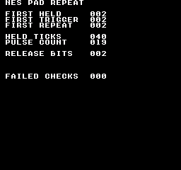
Comando de compilación
New-Item -ItemType Directory -Force .\out | Out-Null
.\kitaqfc\kitaqfc.exe .\kitaqfc\lib\pad.c .\kitaqfc\lib\input_repeat.c .\kitaq-docs\samples\api-examples\fc\pad_repeat.c -I .\kitaqfc\lib -I .\kitaq-docs\samples -o .\out\pad_repeat.nes --mapper=nrom --nes-chr=.\kitaq-docs\samples\font.chr --no-disasm --no-cacheImplementación y código fuente
kitaqfc/lib/input_repeat.h:28
Return the requested currently-held bits in the NES pad layout.
kitaqfc/lib/input_repeat.c:103
unsigned char nes_pad_held(unsigned char mask)
{
return (unsigned char)(nes_pad1_cur & mask);
}nes_pad_release
Filtra las liberaciones del mando 1: botones seleccionados que estaban mantenidos en la lectura anterior y ahora están sueltos. Mantenerlos sueltos no genera otra liberación en la lectura siguiente.
Sintaxis
unsigned char nes_pad_release(unsigned char mask);Parámetros
maskBotones que se conservarán en el orden de bits NES, combinados con
|si hace falta. Cero no selecciona ninguno. Es un filtro, no el número de puerto del mando.
Valor devuelto
Los bits coincidentes de la máscara guardada, en sus posiciones originales. El valor puede ser distinto de 1; 0 significa que no coincide ningún botón. Leerlo no consume el evento.
Condiciones y límites
Formato NES directo: A=0x01, B=0x02, SELECT=0x04, START=0x08, UP=0x10, DOWN=0x20, LEFT=0x40, RIGHT=0x80. Un bit a 1 significa pulsado. Usa estos valores con nes_pad_* y los resultados directos de __pad_*; no los confundas con las máscaras comunes BTN_* de input.h.
Inicializa los cuatro bytes de estado nes_pad1_* a 0 antes de la primera lectura. Después, lee una vez por ciclo. pressed = current & ~previous y released = previous & ~current describen la última lectura. Actualiza la repetición por separado con nes_pad_repeat_step().
Ejemplo de uso
if (nes_pad_release(0x02)!=0) {
release_bits=nes_pad_release(0x02); // Returns the released B bit, 2.
if (nes_pad_held(0x02)!=0 || nes_pad_trigger(0x02)!=0 || nes_pad_repeat(0x02)!=0) failures++;
break;
}Este fragmento muestra la llamada. Antes de incorporarlo a un programa completo, cumple los requisitos de inicialización y de los búferes indicados.
Resultado esperado
Este programa enseña el orden sondeo → actualización de repetición → consulta y muestra que las funciones NES devuelven los bits seleccionados, no el valor booleano 1. Con nes_pad_repeat_config(3, 1), mantén B durante 40 actualizaciones y suéltalo. FIRST HELD, FIRST TRIGGER y FIRST REPEAT valen 2; HELD TICKS vale 40, PULSE COUNT vale 19 y RELEASE BITS vale 2. La primera repetición llega cuatro actualizaciones después del pulso inicial; las siguientes se separan por dos actualizaciones. FAILED CHECKS debe ser 0. Otra duración cambia el número de pulsos.
Comando de compilación
New-Item -ItemType Directory -Force .\out | Out-Null
.\kitaqfc\kitaqfc.exe .\kitaqfc\lib\pad.c .\kitaqfc\lib\input_repeat.c .\kitaq-docs\samples\api-examples\fc\pad_repeat.c -I .\kitaqfc\lib -I .\kitaq-docs\samples -o .\out\pad_repeat.nes --mapper=nrom --nes-chr=.\kitaq-docs\samples\font.chr --no-disasm --no-cacheImplementación y código fuente
kitaqfc/lib/input_repeat.h:26
Return the requested newly-released bits from the latest pad poll.
kitaqfc/lib/input_repeat.c:97
unsigned char nes_pad_release(unsigned char mask)
{
return (unsigned char)(nes_pad1_released & mask);
}nes_pad_repeat
Filtra los pulsos del último nes_pad_repeat_step(). Incluye tanto la nueva pulsación como las repeticiones programadas al mantener el botón. Esta consulta no avanza los temporizadores.
Sintaxis
unsigned char nes_pad_repeat(unsigned char mask);Parámetros
maskBotones que se conservarán en el orden de bits NES, combinados con
|si hace falta. Cero no selecciona ninguno. Es un filtro, no el número de puerto del mando.
Valor devuelto
Los bits coincidentes de la máscara guardada, en sus posiciones originales. El valor puede ser distinto de 1; 0 significa que no coincide ningún botón. Leerlo no consume el evento.
Condiciones y límites
Formato NES directo: A=0x01, B=0x02, SELECT=0x04, START=0x08, UP=0x10, DOWN=0x20, LEFT=0x40, RIGHT=0x80. Un bit a 1 significa pulsado. Usa estos valores con nes_pad_* y los resultados directos de __pad_*; no los confundas con las máscaras comunes BTN_* de input.h.
Inicializa los cuatro bytes de estado nes_pad1_* a 0 antes de la primera lectura. Después, lee una vez por ciclo. pressed = current & ~previous y released = previous & ~current describen la última lectura. Actualiza la repetición por separado con nes_pad_repeat_step().
Ejemplo de uso
if (nes_pad_repeat(0x02)!=0) {
if (pulse_count==1 && held_ticks-previous_pulse!=4) failures++;
if (pulse_count>1 && held_ticks-previous_pulse!=2) failures++;
previous_pulse=held_ticks; pulse_count++;
if (nes_pad_repeat(0x02)!=2) failures++; // Querying again preserves the pulse.
}Este fragmento muestra la llamada. Antes de incorporarlo a un programa completo, cumple los requisitos de inicialización y de los búferes indicados.
Resultado esperado
Este programa enseña el orden sondeo → actualización de repetición → consulta y muestra que las funciones NES devuelven los bits seleccionados, no el valor booleano 1. Con nes_pad_repeat_config(3, 1), mantén B durante 40 actualizaciones y suéltalo. FIRST HELD, FIRST TRIGGER y FIRST REPEAT valen 2; HELD TICKS vale 40, PULSE COUNT vale 19 y RELEASE BITS vale 2. La primera repetición llega cuatro actualizaciones después del pulso inicial; las siguientes se separan por dos actualizaciones. FAILED CHECKS debe ser 0. Otra duración cambia el número de pulsos.
Comando de compilación
New-Item -ItemType Directory -Force .\out | Out-Null
.\kitaqfc\kitaqfc.exe .\kitaqfc\lib\pad.c .\kitaqfc\lib\input_repeat.c .\kitaq-docs\samples\api-examples\fc\pad_repeat.c -I .\kitaqfc\lib -I .\kitaq-docs\samples -o .\out\pad_repeat.nes --mapper=nrom --nes-chr=.\kitaq-docs\samples\font.chr --no-disasm --no-cacheImplementación y código fuente
kitaqfc/lib/input_repeat.h:24
Return the requested repeat-pulse bits from the latest repeat step.
kitaqfc/lib/input_repeat.c:91
unsigned char nes_pad_repeat(unsigned char mask)
{
return (unsigned char)(nes_pad1_repeat & mask);
}nes_pad_repeat_config
Configura el retardo inicial y el intervalo de repetición en ejecución, borra nes_pad1_repeat y reinicia los ocho contadores por botón con delay. No lee el mando ni borra las máscaras de estado mantenido, pulsación o liberación.
Sintaxis
void nes_pad_repeat_config(unsigned char delay, unsigned char interval);Parámetros
delayCuenta inicial de 0 a 255. Tras el pulso inmediato de una nueva pulsación, el siguiente llega
delay + 1pasos después. Cuenta llamadas anes_pad_repeat_step(), no fotogramas, salvo que la llames exactamente una vez por fotograma.intervalCuenta entre pulsos posteriores, de 0 a 255. El intervalo real es
interval + 1pasos; con 0, se genera un pulso en cada paso mantenido tras el retardo inicial. Los ocho botones tienen contadores independientes.
Valor devuelto
Ninguno (void).
Condiciones y límites
Formato NES directo: A=0x01, B=0x02, SELECT=0x04, START=0x08, UP=0x10, DOWN=0x20, LEFT=0x40, RIGHT=0x80. Un bit a 1 significa pulsado. Usa estos valores con nes_pad_* y los resultados directos de __pad_*; no los confundas con las máscaras comunes BTN_* de input.h.
Ejemplo de uso
nes_pad_repeat_config(3,1); // Next pulse after 4 held updates, then every 2.Este fragmento muestra la llamada. Antes de incorporarlo a un programa completo, cumple los requisitos de inicialización y de los búferes indicados.
Resultado esperado
Este programa enseña el orden sondeo → actualización de repetición → consulta y muestra que las funciones NES devuelven los bits seleccionados, no el valor booleano 1. Con nes_pad_repeat_config(3, 1), mantén B durante 40 actualizaciones y suéltalo. FIRST HELD, FIRST TRIGGER y FIRST REPEAT valen 2; HELD TICKS vale 40, PULSE COUNT vale 19 y RELEASE BITS vale 2. La primera repetición llega cuatro actualizaciones después del pulso inicial; las siguientes se separan por dos actualizaciones. FAILED CHECKS debe ser 0. Otra duración cambia el número de pulsos.
Comando de compilación
New-Item -ItemType Directory -Force .\out | Out-Null
.\kitaqfc\kitaqfc.exe .\kitaqfc\lib\pad.c .\kitaqfc\lib\input_repeat.c .\kitaq-docs\samples\api-examples\fc\pad_repeat.c -I .\kitaqfc\lib -I .\kitaq-docs\samples -o .\out\pad_repeat.nes --mapper=nrom --nes-chr=.\kitaq-docs\samples\font.chr --no-disasm --no-cacheImplementación y código fuente
kitaqfc/lib/input_repeat.h:16
Set initial/repeat countdowns and clear repeat output. Zero countdowns are allowed and cause a repeat on the next held-button step. A fresh press emits immediately. Held repeats follow after delay+1 and then interval+1 steps. These are call counts, not milliseconds; use one fresh pad poll before each step.
kitaqfc/lib/input_repeat.c:21
void nes_pad_repeat_config(unsigned char delay, unsigned char interval)
{
unsigned char i;
nes_pad_repeat_delay = delay;
nes_pad_repeat_interval = interval;
nes_pad1_repeat = 0;
i = 0;
while (i != 8)
{
nes_pad1_repeat_counter[i] = delay;
i = i + 1;
}
}nes_pad_repeat_step
Reconstruye nes_pad1_repeat a partir de las últimas máscaras de botones mantenidos y recién pulsados, avanzando cada cuenta una vez. Primero llama a nes_pad_poll() y después a esta función una sola vez. Reutilizar una máscara antigua de pulsación reinicia el retardo y vuelve a emitir pulsaciones iniciales.
Sintaxis
void nes_pad_repeat_step(void);Valor devuelto
Ninguno (void).
Condiciones y límites
Formato NES directo: A=0x01, B=0x02, SELECT=0x04, START=0x08, UP=0x10, DOWN=0x20, LEFT=0x40, RIGHT=0x80. Un bit a 1 significa pulsado. Usa estos valores con nes_pad_* y los resultados directos de __pad_*; no los confundas con las máscaras comunes BTN_* de input.h.
Inicializa los cuatro bytes de estado nes_pad1_* a 0 antes de la primera lectura. Después, lee una vez por ciclo. pressed = current & ~previous y released = previous & ~current describen la última lectura. Actualiza la repetición por separado con nes_pad_repeat_step().
Ejemplo de uso
nes_pad_repeat_step(); // Once after each fresh poll; getters do not advance time.Este fragmento muestra la llamada. Antes de incorporarlo a un programa completo, cumple los requisitos de inicialización y de los búferes indicados.
Resultado esperado
Este programa enseña el orden sondeo → actualización de repetición → consulta y muestra que las funciones NES devuelven los bits seleccionados, no el valor booleano 1. Con nes_pad_repeat_config(3, 1), mantén B durante 40 actualizaciones y suéltalo. FIRST HELD, FIRST TRIGGER y FIRST REPEAT valen 2; HELD TICKS vale 40, PULSE COUNT vale 19 y RELEASE BITS vale 2. La primera repetición llega cuatro actualizaciones después del pulso inicial; las siguientes se separan por dos actualizaciones. FAILED CHECKS debe ser 0. Otra duración cambia el número de pulsos.
Comando de compilación
New-Item -ItemType Directory -Force .\out | Out-Null
.\kitaqfc\kitaqfc.exe .\kitaqfc\lib\pad.c .\kitaqfc\lib\input_repeat.c .\kitaq-docs\samples\api-examples\fc\pad_repeat.c -I .\kitaqfc\lib -I .\kitaq-docs\samples -o .\out\pad_repeat.nes --mapper=nrom --nes-chr=.\kitaq-docs\samples\font.chr --no-disasm --no-cacheImplementación y código fuente
kitaqfc/lib/input_repeat.h:20
Generate per-button repeat bits from the most recently polled pad state. Poll first, then call once per tick; a countdown reaching zero emits on the following step, so an interval N leaves N decrement steps between pulses.
kitaqfc/lib/input_repeat.c:40
void nes_pad_repeat_step(void)
{
unsigned char bit_index;
unsigned char mask;
unsigned char counter;
nes_pad1_repeat = 0;
bit_index = 0;
mask = 1;
while (mask != 0)
{
if ((nes_pad1_cur & mask) == 0)
{
nes_pad1_repeat_counter[bit_index] = nes_pad_repeat_delay;
}
else
{
if ((nes_pad1_pressed & mask) != 0)
{
nes_pad1_repeat = nes_pad1_repeat | mask;
nes_pad1_repeat_counter[bit_index] = nes_pad_repeat_delay;
}
else
{
counter = nes_pad1_repeat_counter[bit_index];
if (counter == 0)
{
nes_pad1_repeat = nes_pad1_repeat | mask;
nes_pad1_repeat_counter[bit_index] = nes_pad_repeat_interval;
}
else
{
nes_pad1_repeat_counter[bit_index] = counter - 1;
}
}
}
bit_index = bit_index + 1;
// Byte overflow terminates the scan after the eighth button; each button has its own countdown.
mask = mask + mask;
}
}nes_pad_trigger
Filtra con mask las nuevas pulsaciones del mando 1. Úsala para ejecutar una acción al pasar un botón seleccionado de suelto a pulsado.
Sintaxis
unsigned char nes_pad_trigger(unsigned char mask);Parámetros
maskBotones que se conservarán en el orden de bits NES, combinados con
|si hace falta. Cero no selecciona ninguno. Es un filtro, no el número de puerto del mando.
Valor devuelto
Los bits coincidentes de la máscara guardada, en sus posiciones originales. El valor puede ser distinto de 1; 0 significa que no coincide ningún botón. Leerlo no consume el evento.
Condiciones y límites
Formato NES directo: A=0x01, B=0x02, SELECT=0x04, START=0x08, UP=0x10, DOWN=0x20, LEFT=0x40, RIGHT=0x80. Un bit a 1 significa pulsado. Usa estos valores con nes_pad_* y los resultados directos de __pad_*; no los confundas con las máscaras comunes BTN_* de input.h.
Inicializa los cuatro bytes de estado nes_pad1_* a 0 antes de la primera lectura. Después, lee una vez por ciclo. pressed = current & ~previous y released = previous & ~current describen la última lectura. Actualiza la repetición por separado con nes_pad_repeat_step().
Ejemplo de uso
if (nes_pad_trigger(0x02)!=0) {
first_trigger=nes_pad_trigger(0x02); // Returns 2, not Boolean 1.
first_held=nes_pad_held(0x02); first_repeat=nes_pad_repeat(0x02);
if (first_trigger!=2 || first_held!=2 || first_repeat!=2) failures++;
}Este fragmento muestra la llamada. Antes de incorporarlo a un programa completo, cumple los requisitos de inicialización y de los búferes indicados.
Resultado esperado
Este programa enseña el orden sondeo → actualización de repetición → consulta y muestra que las funciones NES devuelven los bits seleccionados, no el valor booleano 1. Con nes_pad_repeat_config(3, 1), mantén B durante 40 actualizaciones y suéltalo. FIRST HELD, FIRST TRIGGER y FIRST REPEAT valen 2; HELD TICKS vale 40, PULSE COUNT vale 19 y RELEASE BITS vale 2. La primera repetición llega cuatro actualizaciones después del pulso inicial; las siguientes se separan por dos actualizaciones. FAILED CHECKS debe ser 0. Otra duración cambia el número de pulsos.
Comando de compilación
New-Item -ItemType Directory -Force .\out | Out-Null
.\kitaqfc\kitaqfc.exe .\kitaqfc\lib\pad.c .\kitaqfc\lib\input_repeat.c .\kitaq-docs\samples\api-examples\fc\pad_repeat.c -I .\kitaqfc\lib -I .\kitaq-docs\samples -o .\out\pad_repeat.nes --mapper=nrom --nes-chr=.\kitaq-docs\samples\font.chr --no-disasm --no-cacheImplementación y código fuente
kitaqfc/lib/input_repeat.h:22
Return the requested newly-pressed bits, not a normalized Boolean.
kitaqfc/lib/input_repeat.c:85
unsigned char nes_pad_trigger(unsigned char mask)
{
return (unsigned char)(nes_pad1_pressed & mask);
}metasprite.h — Imágenes compuestas por varios sprites
Existe como función C en metasprite.c y como macro de nes_game.h que se expande a __metasprite_draw. Ambas leen la misma secuencia terminada y escriben entradas OAM de cuatro bytes idénticas. Los ejemplos compilan cada forma por separado.
Las funciones C de metasprites necesitan nes_oam_shadow[256]. runtime.c lo define en 0x0200, reserva además 0x0300–0x03BF para su cola VRAM y proporciona __nes_nmi. Incluya cada implementación una sola vez y coordine el manejador de interrupciones con el resto del programa.
nes_metasprite_draw
Existe como función C en metasprite.c y como macro de nes_game.h que se expande a __metasprite_draw. Ambas leen la misma secuencia terminada y escriben entradas OAM de cuatro bytes idénticas. Los ejemplos compilan cada forma por separado.
Expande una secuencia terminada de piezas de sprite en entradas consecutivas del búfer auxiliar de la página 02. Cada pieza suma sus desplazamientos X/Y de un byte a la posición base y aporta su mosaico y atributos. Devuelve el siguiente índice OAM.
Sintaxis
unsigned char nes_metasprite_draw(unsigned char oam_index, unsigned char base_x, unsigned char base_y, unsigned char* metasprite);
// Macro from nes_game.h:
#define nes_metasprite_draw(i,x,y,data) __metasprite_draw((i),(x),(y),(data))Parámetros
oam_index / iÍndice de sprite entre 0 y 63, no desplazamiento en bytes. La implementación lo multiplica por cuatro con un cursor de 8 bits; los valores fuera de rango se reducen módulo 64 y pueden sobrescribir otra entrada. No se comprueba si está reservada.
base_x / xPosición horizontal en píxeles, expresada como byte sin signo; no es una coordenada de patrón.
base_y / yByte Y de OAM. Para situar el borde superior por debajo de la línea cero, pasa su posición menos uno; 239..255 quedan fuera de las 240 líneas visibles.
metasprite / dataPuntero a registros legibles de cuatro bytes:
dx, dy, tile, attr. Un0xFFen la siguiente posición dx termina la secuencia; no necesita bytes posteriores. Los desplazamientos se suman módulo 256:0xFErepresenta −2 y dy=0xFFpuede representar −1, pero dx=0xFFestá reservado y no puede representar −1. El puntero debe ser válido en la memoria mapeada.
Valor devuelto
Siguiente índice OAM: (oam_index + piezas_escritas) modulo 64. Es un cursor, no la cantidad de piezas dibujadas. Una secuencia vacía devuelve oam_index modulo 64.
Condiciones y límites
Elija las cabeceras expresamente: nes_game.h y la cabecera general fc.h definen las macros. Para usar las funciones C, incluya runtime.h o metasprite.h y enlace sus implementaciones sin esas macros, o elimine antes las macros conflictivas con #undef. La macro DMA sin argumentos no acepta el argumento page de la función C.
Las funciones C de metasprites necesitan nes_oam_shadow[256]. runtime.c lo define en 0x0200, reserva además 0x0300–0x03BF para su cola VRAM y proporciona __nes_nmi. Incluya cada implementación una sola vez y coordine el manejador de interrupciones con el resto del programa.
Estas operaciones modifican la RAM de CPU 0x0200–0x02FF; no actualizan inmediatamente la OAM del hardware. Transfiera la página completa con __oam_dma. No mantienen las marcas de reserva, las matrices de coordenadas ni el contador de la biblioteca de sprites. Evite que una interrupción modifique o transfiera una página a medio preparar.
No comprueba el número de piezas, los límites de pantalla ni la capacidad. Incluya un terminador y como máximo 64−oam_index piezas. Las coordenadas se reducen módulo 256; tras la entrada 63 se escribe en la 0. Una secuencia vacía no cambia entradas. Este formato difiere del array MetaSpritePart con recuento explícito que usa metasprite_draw en la biblioteca de sprites.
Ejemplo de uso
demo_next=nes_metasprite_draw(4,144,31,demo_parts); // C function: returns 6.Este fragmento muestra la llamada. Antes de incorporarlo a un programa completo, cumple los requisitos de inicialización y de los búferes indicados.
Resultado esperado
C-RUNTIME combina las funciones C. PAIR muestra dos flechas de 8×8 en (144,32) y (152,32), la segunda reflejada horizontalmente. Se oculta otra pareja en y=64, por lo que HIDE RANGE debe quedar vacío. Los dibujos sucesivos usan las posiciones 4–5 y 6–7 y muestran NEXT 08. Se copia la página 02 a la 04 y solo se cambia la posición 8 del tile de flecha 128 al cuadrado 129. nes_oam_dma(4) debe mostrar un cuadrado verde en (144,96), junto a PAGE 04, mientras la página 02 conserva el tile 128.
Las flechas tienen bordes rojos, ejes verdes y detalles azules en la punta; el tile cuadrado 129 es verde. La verificación compara 8.704 píxeles de color y los 256 bytes OAM transferidos por imagen, además de las etiquetas. No se ha probado en hardware físico.
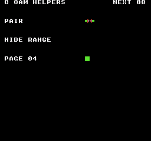
Comando de compilación
New-Item -ItemType Directory -Force .\out | Out-Null
.\kitaqfc\kitaqfc.exe .\kitaq-docs\samples\api-examples\fc\oam_c_helpers.c -I .\kitaqfc\lib -I .\kitaq-docs\samples --nes-chr=.\kitaq-docs\samples\sprite_example.chr -o .\out\oam_c_helpers.nes --no-cache --no-disasmEjemplo de uso
fc_oam_next=nes_metasprite_draw(5,136,95,fc_oam_pair); // Returns 7 after two entries.Este fragmento muestra la llamada. Antes de incorporarlo a un programa completo, cumple los requisitos de inicialización y de los búferes indicados.
Resultado esperado
El ejemplo dedica una fila rotulada a cada operación. SET y MOVE muestran flechas de 8×8 hacia la derecha en (144,16) y (144,32); TILE, un cuadrado verde en (144,48); ATTR, la flecha invertida en ambos ejes en (144,64). HIDE en (144,80) y CLEAR en (144,112) deben quedar vacíos. META muestra dos flechas en (136,96) y (144,96), la segunda reflejada horizontalmente. NEXT 07 indica el siguiente índice tras escribir las entradas 5 y 6. Los bordes son rojos, el cuerpo verde y los detalles de la punta azules. Se comparan 8.704 píxeles por imagen y los bytes OAM transferidos; no se ha probado en hardware físico.
El programa ALIASES prepara las filas con macros de nes_game.h y envía la página 02 con nes_oam_dma(). TRANSFER muestra la flecha de 8×8 en (144,128). Es un ejemplo de las macros sin enlazar runtime.c ni metasprite.c.

Comando de compilación
New-Item -ItemType Directory -Force .\out | Out-Null
.\kitaqfc\kitaqfc.exe .\kitaq-docs\samples\api-examples\fc\oam_aliases.c -I .\kitaqfc\lib -I .\kitaq-docs\samples --nes-chr=.\kitaq-docs\samples\sprite_example.chr -o .\out\oam_aliases.nes --no-cache --no-disasmImplementación y código fuente
kitaqfc/lib/metasprite.h:12
Optional declarations for the phase 10 NES metasprite helper. Metasprite data layout: [dx, dy, tile, attr] repeated, terminated by dx=0xFF Read four-byte records [dx,dy,tile,attr] until dx=0xFF, writing them to shadow OAM. Coordinates and destination offsets wrap as bytes. The caller must supply a terminator and enough unused slots; there is no capacity guard. Return the next slot index derived from the final wrapped byte offset.
kitaqfc/lib/metasprite.c:18
unsigned char nes_metasprite_draw(unsigned char oam_index, unsigned char base_x, unsigned char base_y, unsigned char* metasprite)
{
unsigned char dst;
unsigned char dx;
dst = oam_index + oam_index;
dst = dst + dst;
while (1)
{
dx = metasprite[0];
if (dx == 0xFF)
{
break;
}
// These are raw OAM Y bytes, not a corrected screen-top coordinate; no allocation bookkeeping is updated.
nes_oam_shadow[dst] = (unsigned char)(base_y + metasprite[1]);
nes_oam_shadow[(unsigned char)(dst + 1)] = metasprite[2];
nes_oam_shadow[(unsigned char)(dst + 2)] = metasprite[3];
nes_oam_shadow[(unsigned char)(dst + 3)] = (unsigned char)(base_x + dx);
dst = (unsigned char)(dst + 4);
metasprite = metasprite + 4;
}
return (unsigned char)(dst >> 2);
}nes_metasprite_hide_from
Oculta un intervalo consecutivo de entradas OAM en RAM escribiendo 0xF8 en cada byte Y. Conserva el tile, los atributos y X. Esta función C no transfiere OAM ni libera asignaciones de la biblioteca de sprites.
Sintaxis
void nes_metasprite_hide_from(unsigned char oam_index, unsigned char sprite_count);Parámetros
oam_indexÍndice de sprite entre 0 y 63, no desplazamiento en bytes. La implementación lo multiplica por cuatro con un cursor de 8 bits; los valores fuera de rango se reducen módulo 64 y pueden sobrescribir otra entrada. No se comprueba si está reservada.
sprite_countNúmero de entradas que se ocultarán, entre 0 y
64−oam_index. Cero no cambia nada. Un número mayor hace que el cursor de bytes vuelva al principio y puede ocultar entradas iniciales de OAM; la función no comprueba el intervalo.
Valor devuelto
Ninguno (void).
Condiciones y límites
Las funciones C de metasprites necesitan nes_oam_shadow[256]. runtime.c lo define en 0x0200, reserva además 0x0300–0x03BF para su cola VRAM y proporciona __nes_nmi. Incluya cada implementación una sola vez y coordine el manejador de interrupciones con el resto del programa.
Estas operaciones modifican la RAM de CPU 0x0200–0x02FF; no actualizan inmediatamente la OAM del hardware. Transfiera la página completa con __oam_dma. No mantienen las marcas de reserva, las matrices de coordenadas ni el contador de la biblioteca de sprites. Evite que una interrupción modifique o transfiera una página a medio preparar.
Ejemplo de uso
nes_metasprite_hide_from(6,2); // Hide slots 6 and 7; the pair at slots 4 and 5 remains.Este fragmento muestra la llamada. Antes de incorporarlo a un programa completo, cumple los requisitos de inicialización y de los búferes indicados.
Resultado esperado
C-RUNTIME combina las funciones C. PAIR muestra dos flechas de 8×8 en (144,32) y (152,32), la segunda reflejada horizontalmente. Se oculta otra pareja en y=64, por lo que HIDE RANGE debe quedar vacío. Los dibujos sucesivos usan las posiciones 4–5 y 6–7 y muestran NEXT 08. Se copia la página 02 a la 04 y solo se cambia la posición 8 del tile de flecha 128 al cuadrado 129. nes_oam_dma(4) debe mostrar un cuadrado verde en (144,96), junto a PAGE 04, mientras la página 02 conserva el tile 128.
Las flechas tienen bordes rojos, ejes verdes y detalles azules en la punta; el tile cuadrado 129 es verde. La verificación compara 8.704 píxeles de color y los 256 bytes OAM transferidos por imagen, además de las etiquetas. No se ha probado en hardware físico.
Comando de compilación
New-Item -ItemType Directory -Force .\out | Out-Null
.\kitaqfc\kitaqfc.exe .\kitaq-docs\samples\api-examples\fc\oam_c_helpers.c -I .\kitaqfc\lib -I .\kitaq-docs\samples --nes-chr=.\kitaq-docs\samples\sprite_example.chr -o .\out\oam_c_helpers.nes --no-cache --no-disasmImplementación y código fuente
kitaqfc/lib/metasprite.h:17
Hide consecutive shadow slots by setting Y to 0xF8. Keep the requested range within 64 slots to avoid wrapping and hiding earlier entries.
kitaqfc/lib/metasprite.c:49
void nes_metasprite_hide_from(unsigned char oam_index, unsigned char sprite_count)
{
unsigned char dst;
dst = oam_index + oam_index;
dst = dst + dst;
while (sprite_count != 0)
{
nes_oam_shadow[dst] = 0xF8;
dst = (unsigned char)(dst + 4);
sprite_count = sprite_count - 1;
}
}nametable_asset.h — Recursos de tablas de nombres y su colocación
Transfiere filas de 32 tiles, rectángulos con paso de origen, rellenos y pantallas completas de 960+64 bytes; también edita y transfiere la copia de atributos. Elige transferencias inmediatas o consumo diferido de la cola según la situación.
Para transferencias directas, configura el incremento de PPUCTRL en uno y usa la preparación con renderizado desactivado o un VBlank lo bastante largo para transferir los datos. Estas funciones auxiliares no desactivan el renderizado ni esperan.
Enlaza runtime.c. La cola copia los datos para una NMI posterior o una aplicación segura con el renderizado apagado. Serializa la producción y el consumo. Si una operación de varias filas se queda sin capacidad, las filas ya admitidas permanecen en la cola.
nes_attr_apply_now
Transfiere de inmediato los 64 bytes de la copia a la tabla de atributos de una tabla de nombres.
Sintaxis
void nes_attr_apply_now(unsigned short nt_base);Parámetros
nt_baseBase lógica de tabla de nombres $2000/$2400/$2800/$2C00; el mirroring determina si son físicamente independientes.
Valor devuelto
No devuelve ningún valor.
Condiciones y límites
La copia de atributos compartida de 64 bytes ocupa la RAM de CPU $03E0..$041F; reserva ese rango. Un byte de atributos cubre 4×4 tiles; cada campo de dos bits elige una paleta para un cuadrante de 2×2 tiles.
Para transferencias directas, configura el incremento de PPUCTRL en uno y usa la preparación con renderizado desactivado o un VBlank lo bastante largo para transferir los datos. Estas funciones auxiliares no desactivan el renderizado ni esperan.
Ejemplo de uso
nes_attr_apply_now(0x2000);Este fragmento muestra la llamada. Antes de incorporarlo a un programa completo, cumple los requisitos de inicialización y de los búferes indicados.
Resultado esperado
Combina transferencias de filas, rectángulos con paso, rellenos y tablas completas. Dos barras rojas de 32×8 aparecen sobre un cuadrado azul de 16×16 y rectángulos rojos de 16×24/32×24. Las transferencias directas y encoladas dibujan en posiciones diferentes.
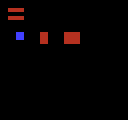
Comando de compilación
New-Item -ItemType Directory -Force .\out | Out-Null
.\kitaqfc\kitaqfc.exe .\kitaqfc\lib\runtime.c .\kitaq-docs\samples\api-examples\fc\batch3_nametable.c -I .\kitaqfc\lib -I .\kitaq-docs\samples -o .\out\batch3_nametable.nes --no-cache --no-disasm --mapper=nrom --nes-chr=.\kitaq-docs\samples\api-examples\fc\vram_shapes.chrImplementación y código fuente
kitaqfc/lib/nametable_asset.h:20
Upload all attribute shadow bytes immediately; the caller provides safe PPU timing.
kitaqfc/lib/nametable_asset.c:90
void nes_attr_apply_now(unsigned short nt_base)
{
nes_ppu_stream_write(nes_attr_base_from_nt(nt_base), nes_attr_shadow, 64);
}nes_attr_base_from_nt
Suma $3C0 a la base de una tabla de nombres para localizar su tabla de atributos.
Sintaxis
unsigned short nes_attr_base_from_nt(unsigned short nt_base);Parámetros
nt_baseBase lógica de tabla de nombres $2000/$2400/$2800/$2C00; el mirroring determina si son físicamente independientes.
Valor devuelto
Devuelve nt_base+$3C0 sin validar la entrada.
Ejemplo de uso
result[1]=nes_attr_base_from_nt(0x2400);Este fragmento muestra la llamada. Antes de incorporarlo a un programa completo, cumple los requisitos de inicialización y de los búferes indicados.
Resultado esperado
Combina transferencias de filas, rectángulos con paso, rellenos y tablas completas. Dos barras rojas de 32×8 aparecen sobre un cuadrado azul de 16×16 y rectángulos rojos de 16×24/32×24. Las transferencias directas y encoladas dibujan en posiciones diferentes.
Comando de compilación
New-Item -ItemType Directory -Force .\out | Out-Null
.\kitaqfc\kitaqfc.exe .\kitaqfc\lib\runtime.c .\kitaq-docs\samples\api-examples\fc\batch3_nametable.c -I .\kitaqfc\lib -I .\kitaq-docs\samples -o .\out\batch3_nametable.nes --no-cache --no-disasm --mapper=nrom --nes-chr=.\kitaq-docs\samples\api-examples\fc\vram_shapes.chrImplementación y código fuente
kitaqfc/lib/nametable_asset.h:11
Locate the 64-byte attribute table at offset 0x03C0 from a nametable base.
kitaqfc/lib/nametable_asset.c:30
unsigned short nes_attr_base_from_nt(unsigned short nt_base)
{
return (unsigned short)(nt_base + 0x03C0);
}nes_attr_queue_all
Copia a la cola todo el contenido de la copia de atributos.
Sintaxis
unsigned char nes_attr_queue_all(unsigned short nt_base);Parámetros
nt_baseBase lógica de tabla de nombres $2000/$2400/$2800/$2C00; el mirroring determina si son físicamente independientes.
Valor devuelto
Devuelve 1 si se admite y 0 si está llena; un registro usa 67 bytes de cola.
Condiciones y límites
La copia de atributos compartida de 64 bytes ocupa la RAM de CPU $03E0..$041F; reserva ese rango. Un byte de atributos cubre 4×4 tiles; cada campo de dos bits elige una paleta para un cuadrante de 2×2 tiles.
Enlaza runtime.c. La cola copia los datos para una NMI posterior o una aplicación segura con el renderizado apagado. Serializa la producción y el consumo. Si una operación de varias filas se queda sin capacidad, las filas ya admitidas permanecen en la cola.
Ejemplo de uso
result[5]=nes_attr_queue_all(0x2000);result[6]=nes_vram_queue_used;nes_vram_queue_nmi_flush();Este fragmento muestra la llamada. Antes de incorporarlo a un programa completo, cumple los requisitos de inicialización y de los búferes indicados.
Resultado esperado
Combina transferencias de filas, rectángulos con paso, rellenos y tablas completas. Dos barras rojas de 32×8 aparecen sobre un cuadrado azul de 16×16 y rectángulos rojos de 16×24/32×24. Las transferencias directas y encoladas dibujan en posiciones diferentes.
Comando de compilación
New-Item -ItemType Directory -Force .\out | Out-Null
.\kitaqfc\kitaqfc.exe .\kitaqfc\lib\runtime.c .\kitaq-docs\samples\api-examples\fc\batch3_nametable.c -I .\kitaqfc\lib -I .\kitaq-docs\samples -o .\out\batch3_nametable.nes --no-cache --no-disasm --mapper=nrom --nes-chr=.\kitaq-docs\samples\api-examples\fc\vram_shapes.chrImplementación y código fuente
kitaqfc/lib/nametable_asset.h:22
Copy all shadow attribute bytes into the runtime queue and return its admission result.
kitaqfc/lib/nametable_asset.c:97
unsigned char nes_attr_queue_all(unsigned short nt_base)
{
return nes_vram_queue_try_write(nes_attr_base_from_nt(nt_base), nes_attr_shadow, 64);
}nes_attr_shadow_clear
Rellena los 64 bytes de la copia con el mismo valor empaquetado.
Sintaxis
void nes_attr_shadow_clear(unsigned char value);Parámetros
valueByte de atributos empaquetado; por ejemplo, 0x55 selecciona la paleta 1 en todos los cuadrantes y 0xAA selecciona la 2.
Valor devuelto
No devuelve ningún valor.
Condiciones y límites
La copia de atributos compartida de 64 bytes ocupa la RAM de CPU $03E0..$041F; reserva ese rango. Un byte de atributos cubre 4×4 tiles; cada campo de dos bits elige una paleta para un cuadrante de 2×2 tiles.
Ejemplo de uso
nes_attr_shadow_clear(0x55);result[2]=nes_attr_shadow[63];Este fragmento muestra la llamada. Antes de incorporarlo a un programa completo, cumple los requisitos de inicialización y de los búferes indicados.
Resultado esperado
Combina transferencias de filas, rectángulos con paso, rellenos y tablas completas. Dos barras rojas de 32×8 aparecen sobre un cuadrado azul de 16×16 y rectángulos rojos de 16×24/32×24. Las transferencias directas y encoladas dibujan en posiciones diferentes.
Comando de compilación
New-Item -ItemType Directory -Force .\out | Out-Null
.\kitaqfc\kitaqfc.exe .\kitaqfc\lib\runtime.c .\kitaq-docs\samples\api-examples\fc\batch3_nametable.c -I .\kitaqfc\lib -I .\kitaq-docs\samples -o .\out\batch3_nametable.nes --no-cache --no-disasm --mapper=nrom --nes-chr=.\kitaq-docs\samples\api-examples\fc\vram_shapes.chrImplementación y código fuente
kitaqfc/lib/nametable_asset.h:13
Fill all 64 shadow bytes with an already-packed attribute value.
kitaqfc/lib/nametable_asset.c:36
void nes_attr_shadow_clear(unsigned char value)
{
__memset(nes_attr_shadow, value, 64);
}nes_attr_shadow_copy
Copia una tabla de atributos completa a RAM como punto de partida para editarla.
Sintaxis
void nes_attr_shadow_copy(unsigned char* src64);Parámetros
src64Tabla de atributos empaquetada de 64 bytes legibles, no un array de ID de paleta por tile.
Valor devuelto
No devuelve ningún valor.
Condiciones y límites
La copia de atributos compartida de 64 bytes ocupa la RAM de CPU $03E0..$041F; reserva ese rango. Un byte de atributos cubre 4×4 tiles; cada campo de dos bits elige una paleta para un cuadrante de 2×2 tiles.
Ejemplo de uso
for(i=0;i<64;i++)table[i]=0x55;nes_attr_shadow_copy(table);result[3]=nes_attr_shadow[0];Este fragmento muestra la llamada. Antes de incorporarlo a un programa completo, cumple los requisitos de inicialización y de los búferes indicados.
Resultado esperado
Combina transferencias de filas, rectángulos con paso, rellenos y tablas completas. Dos barras rojas de 32×8 aparecen sobre un cuadrado azul de 16×16 y rectángulos rojos de 16×24/32×24. Las transferencias directas y encoladas dibujan en posiciones diferentes.
Comando de compilación
New-Item -ItemType Directory -Force .\out | Out-Null
.\kitaqfc\kitaqfc.exe .\kitaqfc\lib\runtime.c .\kitaq-docs\samples\api-examples\fc\batch3_nametable.c -I .\kitaqfc\lib -I .\kitaq-docs\samples -o .\out\batch3_nametable.nes --no-cache --no-disasm --mapper=nrom --nes-chr=.\kitaq-docs\samples\api-examples\fc\vram_shapes.chrImplementación y código fuente
kitaqfc/lib/nametable_asset.h:15
Copy an entire packed attribute table into shadow RAM without writing the PPU.
kitaqfc/lib/nametable_asset.c:42
void nes_attr_shadow_copy(unsigned char* src64)
{
__memcpy(nes_attr_shadow, src64, 64);
}nes_attr_shadow_set_quad
Sustituye la paleta de un cuadrante de 2×2 tiles conservando los demás campos de su byte.
Sintaxis
void nes_attr_shadow_set_quad(unsigned char tile_x, unsigned char tile_y, unsigned char pal_index);Parámetros
tile_xColumna izquierda de tiles, rango visible de 0 a 31.
tile_yFila superior de tiles, rango visible de 0 a 29.
pal_indexLos dos bits bajos del índice de paleta.
Valor devuelto
No devuelve ningún valor.
Condiciones y límites
La copia de atributos compartida de 64 bytes ocupa la RAM de CPU $03E0..$041F; reserva ese rango. Un byte de atributos cubre 4×4 tiles; cada campo de dos bits elige una paleta para un cuadrante de 2×2 tiles.
Mantén las coordenadas por debajo de 32. Las coordenadas impares seleccionan el cuadrante 2×2 que las contiene. Las filas visibles van de 0 a 29.
Ejemplo de uso
nes_attr_shadow_set_quad(4,8,2);result[4]=nes_attr_shadow[17];Este fragmento muestra la llamada. Antes de incorporarlo a un programa completo, cumple los requisitos de inicialización y de los búferes indicados.
Resultado esperado
Combina transferencias de filas, rectángulos con paso, rellenos y tablas completas. Dos barras rojas de 32×8 aparecen sobre un cuadrado azul de 16×16 y rectángulos rojos de 16×24/32×24. Las transferencias directas y encoladas dibujan en posiciones diferentes.
Comando de compilación
New-Item -ItemType Directory -Force .\out | Out-Null
.\kitaqfc\kitaqfc.exe .\kitaqfc\lib\runtime.c .\kitaq-docs\samples\api-examples\fc\batch3_nametable.c -I .\kitaqfc\lib -I .\kitaq-docs\samples -o .\out\batch3_nametable.nes --no-cache --no-disasm --mapper=nrom --nes-chr=.\kitaq-docs\samples\api-examples\fc\vram_shapes.chrImplementación y código fuente
kitaqfc/lib/nametable_asset.h:18
Replace only the chosen quadrant's palette bits, preserving its neighbors. Palette IDs are masked to two bits; tile coordinates must fit the shadow table.
kitaqfc/lib/nametable_asset.c:72
void nes_attr_shadow_set_quad(unsigned char tile_x, unsigned char tile_y, unsigned char pal_index)
{
unsigned char idx;
unsigned char shift;
unsigned char mask;
unsigned char value;
idx = nes_attr_index(tile_x, tile_y);
shift = nes_attr_shift(tile_x, tile_y);
pal_index = (unsigned char)(pal_index & 3);
value = nes_attr_shadow[idx];
mask = (unsigned char)(3 << shift);
value = (unsigned char)(value & (unsigned char)(~mask));
value = (unsigned char)(value | (unsigned char)(pal_index << shift));
nes_attr_shadow[idx] = value;
}nes_nametable_apply_now
Transfiere 960 ID de tile seguidos de una tabla de atributos de 64 bytes.
Sintaxis
void nes_nametable_apply_now(unsigned short nt_base, unsigned char* nam960, unsigned char* attr64);Parámetros
nt_baseBase lógica de tabla de nombres $2000/$2400/$2800/$2C00; el mirroring determina si son físicamente independientes.
nam960Array de tiles de 32×30 ordenado por filas.
attr64Sesenta y cuatro bytes de atributos empaquetados; no tienen que ser la copia compartida.
Valor devuelto
No devuelve ningún valor.
Condiciones y límites
Para transferencias directas, configura el incremento de PPUCTRL en uno y usa la preparación con renderizado desactivado o un VBlank lo bastante largo para transferir los datos. Estas funciones auxiliares no desactivan el renderizado ni esperan.
Una transferencia síncrona de 1024 bytes suele hacerse durante la preparación con el renderizado apagado. Esta función auxiliar no la reparte entre varios fotogramas.
Ejemplo de uso
nes_nametable_apply_now(0x2000,empty,table);Este fragmento muestra la llamada. Antes de incorporarlo a un programa completo, cumple los requisitos de inicialización y de los búferes indicados.
Resultado esperado
Combina transferencias de filas, rectángulos con paso, rellenos y tablas completas. Dos barras rojas de 32×8 aparecen sobre un cuadrado azul de 16×16 y rectángulos rojos de 16×24/32×24. Las transferencias directas y encoladas dibujan en posiciones diferentes.
Comando de compilación
New-Item -ItemType Directory -Force .\out | Out-Null
.\kitaqfc\kitaqfc.exe .\kitaqfc\lib\runtime.c .\kitaq-docs\samples\api-examples\fc\batch3_nametable.c -I .\kitaqfc\lib -I .\kitaq-docs\samples -o .\out\batch3_nametable.nes --no-cache --no-disasm --mapper=nrom --nes-chr=.\kitaq-docs\samples\api-examples\fc\vram_shapes.chrImplementación y código fuente
kitaqfc/lib/nametable_asset.h:41
Upload 960 tile bytes followed by 64 attribute bytes. This bulk operation does not disable rendering or wait for VBlank on its own.
kitaqfc/lib/nametable_asset.c:178
void nes_nametable_apply_now(unsigned short nt_base, unsigned char* nam960, unsigned char* attr64)
{
nes_ppu_stream_write(nt_base, nam960, 960);
nes_ppu_stream_write(nes_attr_base_from_nt(nt_base), attr64, 64);
}nes_nt_base_from_index
Calcula la base lógica de una tabla de nombres a partir de los dos bits bajos del índice.
Sintaxis
unsigned short nes_nt_base_from_index(unsigned char index);Parámetros
indexÍndice; 0..3 seleccionan las tablas y los valores mayores se reducen a los dos bits bajos.
Valor devuelto
Devuelve $2000 + (index & 3)*$400.
Ejemplo de uso
result[0]=nes_nt_base_from_index(5);Este fragmento muestra la llamada. Antes de incorporarlo a un programa completo, cumple los requisitos de inicialización y de los búferes indicados.
Resultado esperado
Combina transferencias de filas, rectángulos con paso, rellenos y tablas completas. Dos barras rojas de 32×8 aparecen sobre un cuadrado azul de 16×16 y rectángulos rojos de 16×24/32×24. Las transferencias directas y encoladas dibujan en posiciones diferentes.
Comando de compilación
New-Item -ItemType Directory -Force .\out | Out-Null
.\kitaqfc\kitaqfc.exe .\kitaqfc\lib\runtime.c .\kitaq-docs\samples\api-examples\fc\batch3_nametable.c -I .\kitaqfc\lib -I .\kitaq-docs\samples -o .\out\batch3_nametable.nes --no-cache --no-disasm --mapper=nrom --nes-chr=.\kitaq-docs\samples\api-examples\fc\vram_shapes.chrImplementación y código fuente
kitaqfc/lib/nametable_asset.h:9
Mask the index to the four logical nametables and return its PPU base. Physical storage still depends on the cartridge's mirroring configuration.
kitaqfc/lib/nametable_asset.c:22
unsigned short nes_nt_base_from_index(unsigned char index)
{
index = (unsigned char)(index & 3);
return (unsigned short)(0x2000 + ((unsigned short)index << 10));
}nes_nt_queue_fill_rect
Encola el relleno de cada fila del rectángulo con un único ID de tile.
Sintaxis
unsigned char nes_nt_queue_fill_rect(unsigned short nt_base, unsigned char tile_x, unsigned char tile_y, unsigned char width, unsigned char height, unsigned char value);Parámetros
nt_baseBase lógica de tabla de nombres $2000/$2400/$2800/$2C00; el mirroring determina si son físicamente independientes.
tile_xColumna izquierda de tiles, rango visible de 0 a 31.
tile_yFila superior de tiles, rango visible de 0 a 29.
widthAncho en tiles.
heightAlto en tiles.
valueID de tile de relleno, de 0 a 255.
Valor devuelto
Devuelve 1 después de todas las filas o si el alto es cero, y 0 si falla la admisión.
Condiciones y límites
Enlaza runtime.c. La cola copia los datos para una NMI posterior o una aplicación segura con el renderizado apagado. Serializa la producción y el consumo. Si una operación de varias filas se queda sin capacidad, las filas ya admitidas permanecen en la cola.
Mantén las coordenadas y dimensiones dentro de la tabla de nombres visible; normalmente pitch≥width. No se recorta. La longitud de cada fila encolada debe ser como máximo 127; un rectángulo normal de tabla de nombres tiene como máximo 32 tiles de ancho.
Ejemplo de uso
result[10]=nes_nt_queue_fill_rect(0x2000,16,8,4,3,1);result[11]=nes_vram_queue_used;nes_vram_queue_nmi_flush();Este fragmento muestra la llamada. Antes de incorporarlo a un programa completo, cumple los requisitos de inicialización y de los búferes indicados.
Resultado esperado
Combina transferencias de filas, rectángulos con paso, rellenos y tablas completas. Dos barras rojas de 32×8 aparecen sobre un cuadrado azul de 16×16 y rectángulos rojos de 16×24/32×24. Las transferencias directas y encoladas dibujan en posiciones diferentes.
Comando de compilación
New-Item -ItemType Directory -Force .\out | Out-Null
.\kitaqfc\kitaqfc.exe .\kitaqfc\lib\runtime.c .\kitaq-docs\samples\api-examples\fc\batch3_nametable.c -I .\kitaqfc\lib -I .\kitaq-docs\samples -o .\out\batch3_nametable.nes --no-cache --no-disasm --mapper=nrom --nes-chr=.\kitaq-docs\samples\api-examples\fc\vram_shapes.chrImplementación y código fuente
kitaqfc/lib/nametable_asset.h:38
Queue one fill record per row, stopping on failure while retaining previously queued rows. The runtime fill-length and rectangle bounds requirements apply.
kitaqfc/lib/nametable_asset.c:157
unsigned char nes_nt_queue_fill_rect(unsigned short nt_base, unsigned char tile_x, unsigned char tile_y, unsigned char width, unsigned char height, unsigned char value)
{
unsigned char row;
unsigned short ppu_addr;
row = 0;
while (row != height)
{
ppu_addr = (unsigned short)(nt_base + ((unsigned short)(tile_y + row) << 5) + tile_x);
if (nes_vram_queue_try_fill(ppu_addr, value, width) == 0)
{
return 0;
}
row = (unsigned char)(row + 1);
}
return 1;
}nes_nt_queue_rect
Copia a la cola el origen de cada fila del rectángulo.
Sintaxis
unsigned char nes_nt_queue_rect(unsigned short nt_base, unsigned char tile_x, unsigned char tile_y, unsigned char width, unsigned char height, unsigned char pitch, unsigned char* src);Parámetros
nt_baseBase lógica de tabla de nombres $2000/$2400/$2800/$2C00; el mirroring determina si son físicamente independientes.
tile_xColumna izquierda de tiles, rango visible de 0 a 31.
tile_yFila superior de tiles, rango visible de 0 a 29.
widthAncho en tiles.
heightAlto en tiles.
pitchPaso en bytes entre los inicios de fila del origen; permite omitir el relleno final.
srcFuente legible de al menos (height−1)*pitch+width bytes.
Valor devuelto
Devuelve 1 después de todas las filas o si el alto es cero, y 0 si falla la admisión.
Condiciones y límites
Enlaza runtime.c. La cola copia los datos para una NMI posterior o una aplicación segura con el renderizado apagado. Serializa la producción y el consumo. Si una operación de varias filas se queda sin capacidad, las filas ya admitidas permanecen en la cola.
Mantén las coordenadas y dimensiones dentro de la tabla de nombres visible; normalmente pitch≥width. No se recorta. La longitud de cada fila encolada debe ser como máximo 127; un rectángulo normal de tabla de nombres tiene como máximo 32 tiles de ancho.
Ejemplo de uso
result[8]=nes_nt_queue_rect(0x2000,10,8,2,3,4,patch);result[9]=nes_vram_queue_used;nes_vram_queue_nmi_flush();Este fragmento muestra la llamada. Antes de incorporarlo a un programa completo, cumple los requisitos de inicialización y de los búferes indicados.
Resultado esperado
Combina transferencias de filas, rectángulos con paso, rellenos y tablas completas. Dos barras rojas de 32×8 aparecen sobre un cuadrado azul de 16×16 y rectángulos rojos de 16×24/32×24. Las transferencias directas y encoladas dibujan en posiciones diferentes.
Comando de compilación
New-Item -ItemType Directory -Force .\out | Out-Null
.\kitaqfc\kitaqfc.exe .\kitaqfc\lib\runtime.c .\kitaq-docs\samples\api-examples\fc\batch3_nametable.c -I .\kitaqfc\lib -I .\kitaq-docs\samples -o .\out\batch3_nametable.nes --no-cache --no-disasm --mapper=nrom --nes-chr=.\kitaq-docs\samples\api-examples\fc\vram_shapes.chrImplementación y código fuente
kitaqfc/lib/nametable_asset.h:35
Copy rows into the runtime queue until complete or full. Failure leaves earlier rows queued; it does not roll back a partially admitted rectangle. Widths must respect the queue literal-record limit. Pitch is source bytes per row. Each copied literal record costs width+3 queue bytes; check total admission needs when partial updates are unacceptable.
kitaqfc/lib/nametable_asset.c:137
unsigned char nes_nt_queue_rect(unsigned short nt_base, unsigned char tile_x, unsigned char tile_y, unsigned char width, unsigned char height, unsigned char pitch, unsigned char* src)
{
unsigned char row;
unsigned short ppu_addr;
row = 0;
while (row != height)
{
ppu_addr = (unsigned short)(nt_base + ((unsigned short)(tile_y + row) << 5) + tile_x);
if (nes_vram_queue_try_write(ppu_addr, src, width) == 0)
{
return 0;
}
src = src + pitch;
row = (unsigned char)(row + 1);
}
return 1;
}nes_nt_queue_row
Copia una fila completa de 32 tiles a la cola.
Sintaxis
unsigned char nes_nt_queue_row(unsigned short nt_base, unsigned char row, unsigned char* src32);Parámetros
nt_baseBase lógica de tabla de nombres $2000/$2400/$2800/$2C00; el mirroring determina si son físicamente independientes.
rowFila de 0 a 29; no se comprueban los límites.
src32Treinta y dos ID de tile legibles.
Valor devuelto
Devuelve 1 si se admite y 0 si está llena; usa 35 bytes de cola.
Condiciones y límites
Enlaza runtime.c. La cola copia los datos para una NMI posterior o una aplicación segura con el renderizado apagado. Serializa la producción y el consumo. Si una operación de varias filas se queda sin capacidad, las filas ya admitidas permanecen en la cola.
Ejemplo de uso
result[7]=nes_nt_queue_row(0x2000,4,row);nes_vram_queue_nmi_flush();Este fragmento muestra la llamada. Antes de incorporarlo a un programa completo, cumple los requisitos de inicialización y de los búferes indicados.
Resultado esperado
Combina transferencias de filas, rectángulos con paso, rellenos y tablas completas. Dos barras rojas de 32×8 aparecen sobre un cuadrado azul de 16×16 y rectángulos rojos de 16×24/32×24. Las transferencias directas y encoladas dibujan en posiciones diferentes.
Comando de compilación
New-Item -ItemType Directory -Force .\out | Out-Null
.\kitaqfc\kitaqfc.exe .\kitaqfc\lib\runtime.c .\kitaq-docs\samples\api-examples\fc\batch3_nametable.c -I .\kitaqfc\lib -I .\kitaq-docs\samples -o .\out\batch3_nametable.nes --no-cache --no-disasm --mapper=nrom --nes-chr=.\kitaq-docs\samples\api-examples\fc\vram_shapes.chrImplementación y código fuente
kitaqfc/lib/nametable_asset.h:26
Copy one complete nametable row into the runtime queue.
kitaqfc/lib/nametable_asset.c:111
unsigned char nes_nt_queue_row(unsigned short nt_base, unsigned char row, unsigned char* src32)
{
unsigned short ppu_addr;
ppu_addr = (unsigned short)(nt_base + ((unsigned short)row << 5));
return nes_vram_queue_try_write(ppu_addr, src32, 32);
}nes_nt_stream_rect
Lee cada fila del rectángulo según el paso de origen y la transfiere directamente a la PPU.
Sintaxis
void nes_nt_stream_rect(unsigned short nt_base, unsigned char tile_x, unsigned char tile_y, unsigned char width, unsigned char height, unsigned char pitch, unsigned char* src);Parámetros
nt_baseBase lógica de tabla de nombres $2000/$2400/$2800/$2C00; el mirroring determina si son físicamente independientes.
tile_xColumna izquierda de tiles, rango visible de 0 a 31.
tile_yFila superior de tiles, rango visible de 0 a 29.
widthAncho en tiles.
heightAlto en tiles.
pitchPaso en bytes entre los inicios de fila del origen; permite omitir el relleno final.
srcFuente legible de al menos (height−1)*pitch+width bytes.
Valor devuelto
No devuelve ningún valor.
Condiciones y límites
Para transferencias directas, configura el incremento de PPUCTRL en uno y usa la preparación con renderizado desactivado o un VBlank lo bastante largo para transferir los datos. Estas funciones auxiliares no desactivan el renderizado ni esperan.
Mantén las coordenadas y dimensiones dentro de la tabla de nombres visible; normalmente pitch≥width. No se recorta. La longitud de cada fila encolada debe ser como máximo 127; un rectángulo normal de tabla de nombres tiene como máximo 32 tiles de ancho.
Ejemplo de uso
// A pitch of four skips two source bytes at the end of each row.
nes_nt_stream_rect(0x2000,4,8,2,2,4,patch);Este fragmento muestra la llamada. Antes de incorporarlo a un programa completo, cumple los requisitos de inicialización y de los búferes indicados.
Resultado esperado
Combina transferencias de filas, rectángulos con paso, rellenos y tablas completas. Dos barras rojas de 32×8 aparecen sobre un cuadrado azul de 16×16 y rectángulos rojos de 16×24/32×24. Las transferencias directas y encoladas dibujan en posiciones diferentes.
Comando de compilación
New-Item -ItemType Directory -Force .\out | Out-Null
.\kitaqfc\kitaqfc.exe .\kitaqfc\lib\runtime.c .\kitaq-docs\samples\api-examples\fc\batch3_nametable.c -I .\kitaqfc\lib -I .\kitaq-docs\samples -o .\out\batch3_nametable.nes --no-cache --no-disasm --mapper=nrom --nes-chr=.\kitaq-docs\samples\api-examples\fc\vram_shapes.chrImplementación y código fuente
kitaqfc/lib/nametable_asset.h:29
Write each rectangle row immediately, advancing source by pitch rather than width. Caller-provided coordinates, storage and timing are not clipped or checked.
kitaqfc/lib/nametable_asset.c:120
void nes_nt_stream_rect(unsigned short nt_base, unsigned char tile_x, unsigned char tile_y, unsigned char width, unsigned char height, unsigned char pitch, unsigned char* src)
{
unsigned char row;
unsigned short ppu_addr;
row = 0;
while (row != height)
{
ppu_addr = (unsigned short)(nt_base + ((unsigned short)(tile_y + row) << 5) + tile_x);
nes_ppu_stream_write(ppu_addr, src, width);
src = src + pitch;
row = (unsigned char)(row + 1);
}
}nes_nt_stream_row
Copia directamente a la PPU una fila completa de 32 tiles.
Sintaxis
void nes_nt_stream_row(unsigned short nt_base, unsigned char row, unsigned char* src32);Parámetros
nt_baseBase lógica de tabla de nombres $2000/$2400/$2800/$2C00; el mirroring determina si son físicamente independientes.
rowFila de 0 a 29; no se comprueban los límites.
src32Treinta y dos ID de tile legibles.
Valor devuelto
No devuelve ningún valor.
Condiciones y límites
Para transferencias directas, configura el incremento de PPUCTRL en uno y usa la preparación con renderizado desactivado o un VBlank lo bastante largo para transferir los datos. Estas funciones auxiliares no desactivan el renderizado ni esperan.
Ejemplo de uso
nes_nt_stream_row(0x2000,2,row);Este fragmento muestra la llamada. Antes de incorporarlo a un programa completo, cumple los requisitos de inicialización y de los búferes indicados.
Resultado esperado
Combina transferencias de filas, rectángulos con paso, rellenos y tablas completas. Dos barras rojas de 32×8 aparecen sobre un cuadrado azul de 16×16 y rectángulos rojos de 16×24/32×24. Las transferencias directas y encoladas dibujan en posiciones diferentes.
Comando de compilación
New-Item -ItemType Directory -Force .\out | Out-Null
.\kitaqfc\kitaqfc.exe .\kitaqfc\lib\runtime.c .\kitaq-docs\samples\api-examples\fc\batch3_nametable.c -I .\kitaqfc\lib -I .\kitaq-docs\samples -o .\out\batch3_nametable.nes --no-cache --no-disasm --mapper=nrom --nes-chr=.\kitaq-docs\samples\api-examples\fc\vram_shapes.chrImplementación y código fuente
kitaqfc/lib/nametable_asset.h:24
Write one complete 32-tile row directly. The caller validates the row and PPU timing.
kitaqfc/lib/nametable_asset.c:103
void nes_nt_stream_row(unsigned short nt_base, unsigned char row, unsigned char* src32)
{
unsigned short ppu_addr;
ppu_addr = (unsigned short)(nt_base + ((unsigned short)row << 5));
nes_ppu_stream_write(ppu_addr, src32, 32);
}nes_game.h — Macros de operaciones para juegos
nes_game.h ofrece nombres de macro legibles para colas VRAM, OAM y metasprites, mandos, interrupciones del mapper, desplazamiento dividido y operaciones FDS. Cada macro se expande a un intrínseco, por lo que los diagnósticos y los metadatos de KUROSAKI conservan la operación de hardware subyacente. Las macros de cola usan la cola intrínseca; la macro DMA de OAM no recibe argumentos.
Elija las cabeceras expresamente: nes_game.h y la cabecera general fc.h definen las macros. Para usar las funciones C, incluya runtime.h o metasprite.h y enlace sus implementaciones sin esas macros, o elimine antes las macros conflictivas con #undef. La macro DMA sin argumentos no acepta el argumento page de la función C.
nes_fds_farcall
Macro de utilidad para llamadas entre bancos FDS en nes_game.h. Se expande a __fds_overlay_farcall((bank), (func)).
Sintaxis
#define nes_fds_farcall(bank, func) __fds_overlay_farcall((bank), (func))Parámetros
bankExpresión que representa el banco. Se evalúa una vez antes de llamar, pero el banco que realmente se carga procede de la ubicación de func tras el enlazado. No llama a una dirección de un banco arbitrario elegido en tiempo de ejecución. Pasa un valor coincidente, como
__bankof(func).funcNombre de una función declarada sin parámetros. El ejemplo pasa
u8 overlay_answer(void). Se rechazan las direcciones numéricas, los punteros de función en tiempo de ejecución y las funciones que requieren argumentos. Usa una llamada normaltarget(a, b)si necesitas argumentos.
Valor devuelto
Resultado de ocho bits de la función de destino. Si falla la carga y se puede restaurar el banco anterior, no se llama al destino y se devuelve el byte de error de carga. Diseña la convención de resultados para poder distinguir un error de un resultado normal.
Condiciones y límites
Úsalo con --mapper=fds --fds-layout=fds32. El banco 0 contiene código común en $A000–$DFFF. El banco 1 ocupa $6000–$9FFF al arrancar; los bancos 2 y siguientes son overlays cargados en esa misma ventana de 16 KiB. Coloca el código o los datos de un overlay con directivas como #pragma fixed_bank 2.
El banco 1 se restaura desde un archivo PRG de arranque independiente de 16 384 bytes en $6000. Sin manifiesto, los archivos predeterminados usan ID 0 para el banco 1, ID 1 para el código común e ID 2 para CHR. Un manifiesto propio debe dividir el PRG de arranque en archivos de 16 384 bytes en $6000 y $A000. Para los bancos 2 y siguientes, el ID de archivo es --fds-overlay-start-id (32 por defecto) + número de banco − 2.
Al llamar a otro banco, se guarda el banco anterior y se restaura antes de volver. Las llamadas anidadas siguen la misma regla. También se intenta restaurar tras una transferencia parcialmente fallida. Si la propia restauración falla, la ejecución se detiene en el código común en lugar de volver a código sobrescrito. Los destinos del banco común y las llamadas al mismo banco evitan transferencias innecesarias.
Las llamadas al BIOS son síncronas; esta API no mantiene el bucle del juego avanzando una vez por fotograma durante una carga. Úsala desde código de control normal en el banco común, no desde un manejador de interrupciones. La continuidad de imagen y audio y la convivencia con el BIOS real requieren verificación aparte.
Estas capturas usan un programa de prueba original de la convención de llamada LoadFiles para comprobar el código CPU compilado, las transferencias de memoria y cada píxel mostrado. No verifican el BIOS real, los tiempos de transferencia de disco, el CRC ni el arranque en hardware. KUROSAKI tiene un modelo parcial del controlador FDS; una ejecución normal sin este programa de prueba no demuestra los mismos resultados de transferencia.
El primer comando del compilador que aparece abajo construye el ejemplo descargable. El comprobador Python compila las cinco lecciones con y sin optimización y las verifica en KUROSAKI. Crea y elimina un programa de prueba temporal a partir de scripts/fds_abi_fixture.py; estas comprobaciones no necesitan un BIOS externo. Ese programa de prueba no es un BIOS para juegos normales.
Ejemplo de uso
#pragma fixed_bank 0
#include "fc_fds_scene.h"
u8 choose_overlay(void){fds_result[2]++;return 2;}
#pragma fixed_bank 2
u8 overlay_answer(void){fds_result[1]++;fds_result[3]=__fds_current_bank();return 42;}
#pragma fixed_bank 0
void main(void) {
__irq_disable();fds_result[1]=0;fds_result[2]=0;
fds_result[0]=nes_fds_farcall(choose_overlay(),overlay_answer);
fds_result[4]=__fds_current_bank();fds_result[15]=165;
fds_call_screen();while(1){m_wait();}
}Este fragmento muestra la llamada. Antes de incorporarlo a un programa completo, cumple los requisitos de inicialización y de los búferes indicados.
Resultado esperado
Con el programa de prueba original de la ABI LoadFiles, RETURN VALUE es 042; CALLBACK COUNT y BANK EXPR COUNT son 001; BANK IN CALLBACK es 002 y BANK AFTER RETURN es 001. La función y la expresión de banco se ejecutaron una vez cada una, y el banco 1 se restauró tras llamar al banco 2. No es una captura de una prueba de transferencia real de disco.

Comando de compilación
New-Item -ItemType Directory -Force .\out | Out-Null
.\kitaqfc\kitaqfc.exe .\kitaq-docs\samples\api-examples\fc\fds_call_alias.c -I .\kitaqfc\lib -I .\kitaq-docs\samples -o .\out\fds_call_alias.fds --mapper=fds --fds-layout=fds32 --fds-no-license-bypass --fds-overlay-trim --nes-chr=.\kitaq-docs\samples\font.chr --no-cache --no-disasm
python .\kitaq-docs\tools\check_fds_load_examples.pyImplementación y código fuente
kitaqfc/lib/nes_game.h:41
nes_fds_load_bank
Forma de macro de __fds_load_bank() en nes_game.h, para cargar explícitamente un banco lógico desde la cabecera de utilidades del juego.
Sintaxis
#define nes_fds_load_bank(bank) __fds_load_bank((bank))Parámetros
bankBanco lógico que se carga, de 1 a 254. El banco 0 es código común, no una ventana cargable; 255 se reserva para un banco residente desconocido. Para bancos a partir de 2, el ID calculado también debe estar entre 0 y 254.
Valor devuelto
Cero si tiene éxito. Devuelve 255 para el banco 0 o 255, un desbordamiento del ID de archivo o el banco 1 sin archivo de restauración. Una transferencia BIOS fallida devuelve su byte de error. Los errores de argumentos previos a la transferencia conservan el registro de residencia; los fallos de transferencia BIOS lo marcan como 255 (desconocido).
Condiciones y límites
Úsalo con --mapper=fds --fds-layout=fds32. El banco 0 contiene código común en $A000–$DFFF. El banco 1 ocupa $6000–$9FFF al arrancar; los bancos 2 y siguientes son overlays cargados en esa misma ventana de 16 KiB. Coloca el código o los datos de un overlay con directivas como #pragma fixed_bank 2.
Se expande a __fds_load_bank((bank)) sin evaluar bank más de una vez. Los límites de argumentos, la comprobación de residencia y el comportamiento ante errores son los de la función intrínseca.
El banco 1 se restaura desde un archivo PRG de arranque independiente de 16 384 bytes en $6000. Sin manifiesto, los archivos predeterminados usan ID 0 para el banco 1, ID 1 para el código común e ID 2 para CHR. Un manifiesto propio debe dividir el PRG de arranque en archivos de 16 384 bytes en $6000 y $A000. Para los bancos 2 y siguientes, el ID de archivo es --fds-overlay-start-id (32 por defecto) + número de banco − 2.
Con la comprobación de residencia predeterminada, un banco ya registrado devuelve cero sin leer el disco. --fds-no-overlay-guard deshabilita este atajo en __fds_load_bank(). Una carga correcta registra el banco solicitado. Ese registro no valida el contenido de la memoria.
Cargar otro banco directamente desde código en la ventana $6000–$9FFF puede sobrescribir la función en ejecución o su dirección de retorno. Este ejemplo coloca el código llamador y de visualización en #pragma fixed_bank 0. Para llamar a una función de otro banco y volver, usa __fds_overlay_farcall() o una llamada normal con tipos de función.
Las llamadas al BIOS son síncronas; esta API no mantiene el bucle del juego avanzando una vez por fotograma durante una carga. Úsala desde código de control normal en el banco común, no desde un manejador de interrupciones. La continuidad de imagen y audio y la convivencia con el BIOS real requieren verificación aparte.
Estas capturas usan un programa de prueba original de la convención de llamada LoadFiles para comprobar el código CPU compilado, las transferencias de memoria y cada píxel mostrado. No verifican el BIOS real, los tiempos de transferencia de disco, el CRC ni el arranque en hardware. KUROSAKI tiene un modelo parcial del controlador FDS; una ejecución normal sin este programa de prueba no demuestra los mismos resultados de transferencia.
El primer comando del compilador que aparece abajo construye el ejemplo descargable. El comprobador Python compila las cinco lecciones con y sin optimización y las verifica en KUROSAKI. Crea y elimina un programa de prueba temporal a partir de scripts/fds_abi_fixture.py; estas comprobaciones no necesitan un BIOS externo. Ese programa de prueba no es un BIOS para juegos normales.
Ejemplo de uso
#pragma fixed_bank 0
#include "fc_fds_scene.h"
#pragma fixed_bank 2
__prg_rom u8 bank_payload[4]={11,22,33,44};
#pragma fixed_bank 0
void main(void) {
__irq_disable();
fds_result[0]=__fds_load_bank(2);
fds_result[1]=__fds_current_bank();
fds_result[2]=__fds_require_bank(2);
fds_result[3]=bank_payload[0];fds_result[4]=bank_payload[3];
fds_result[5]=nes_fds_load_bank(1);
fds_result[6]=__fds_current_bank();
fds_result[7]=__fds_require_bank(1);
fds_result[8]=__fds_load_bank(0);
fds_result[9]=__fds_load_bank(255);
fds_result[15]=165;
m_init();m_text(2,2,"FDS DATA WINDOW");m_wait();
m_text(2,5,"LOAD BANK 2 STATUS");fds_number(25,5,fds_result[0]);m_wait();
m_text(2,7,"FIRST / LAST BYTE");fds_number(21,7,fds_result[3]);fds_number(25,7,fds_result[4]);m_wait();
m_text(2,9,"REQUIRE SAME BANK");fds_number(25,9,fds_result[2]);m_wait();
m_text(2,11,"RESTORE BANK 1");fds_number(25,11,fds_result[5]);m_wait();
m_text(2,13,"RESIDENT BANK");fds_number(25,13,fds_result[6]);m_wait();
m_text(2,16,"INVALID BANKS 0 / 255");m_wait();
fds_number(2,18,fds_result[8]);fds_number(8,18,fds_result[9]);m_wait();
while(1){m_wait();}
}Este fragmento muestra la llamada. Antes de incorporarlo a un programa completo, cumple los requisitos de inicialización y de los búferes indicados.
Resultado esperado
Con el programa de prueba original de la ABI LoadFiles, LOAD BANK 2 STATUS, REQUIRE SAME BANK y RESTORE BANK 1 son 000. FIRST / LAST BYTE muestra 011 y 044 de los cuatro bytes transferidos; RESIDENT BANK es 001 tras restaurar. Los bancos no válidos 0 y 255 devuelven 255 cada uno. Solicitar el mismo banco no produce otra carga: las peticiones de archivo verificadas son 32 y después 0.
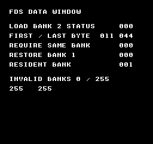
Comando de compilación
New-Item -ItemType Directory -Force .\out | Out-Null
.\kitaqfc\kitaqfc.exe .\kitaq-docs\samples\api-examples\fc\fds_bank_load.c -I .\kitaqfc\lib -I .\kitaq-docs\samples -o .\out\fds_bank_load.fds --mapper=fds --fds-layout=fds32 --fds-no-license-bypass --fds-overlay-trim --nes-chr=.\kitaq-docs\samples\font.chr --no-cache --no-disasm
python .\kitaq-docs\tools\check_fds_load_examples.pyImplementación y código fuente
kitaqfc/lib/nes_game.h:40
nes_fds_wave_load
Macro que pasa su array a __fds_wave_load para cargar una onda de 64 bytes.
Sintaxis
#define nes_fds_wave_load(wave64) __fds_wave_load((wave64))Parámetros
wave64Sesenta y cuatro bytes de onda FDS, cada uno con amplitud de seis bits de 0 a 63. No se comprueba NULL.
Valor devuelto
Sin valor de retorno. Modifica registros de sonido o el estado del controlador.
Condiciones y límites
Construye una imagen .fds con --mapper=fds. Esta lección usa sonido sin E/S de disco. La grabación utiliza el arranque directo en RAM y el modelo de audio de KUROSAKI. El firmware vacío de prueba no implementa rutinas BIOS ni se distribuye. El arranque normal desde disco y el hardware físico requieren un entorno de arranque adecuado.
Ejemplo de uso
// Mapper 20 sound lesson: original 64-step triangle and two sustained pitches.
#include "fc_sound_example.h"
#include "fds_sound.h"
#include "nes_game.h"
__location(0x4087) u8 mod_control;
__location(0x4085) u8 mod_counter;
u8 triangle[64]; u8 modulation[32];
void main(void) {
u8 i;
sound_begin("FDS WAVE AND VOLUME");
for(i=0;i<32;i++) { triangle[i]=(u8)(i*2); triangle[63-i]=(u8)(i*2); modulation[i]=0; }
__fds_sound_enable();
// Halt/reset modulation before writing the 32 values (each writes two slots).
mod_control=0x80; mod_counter=0;
__fds_mod_load(modulation);
__fds_wave_load(triangle);
sound_result[0]=*((u8*)0x4040); sound_result[1]=*((u8*)0x405F);
__fds_freq_set(1031);
__fds_volume_set(24);
sound_wait(60);
__fds_volume_set(0); sound_wait(30);
// This macro forwards the same 64-byte load. Use raw envelope registers.
nes_fds_wave_load(triangle);
__fds_env_set(0x98,0x80,0);
__fds_freq_set(1545);
sound_wait(60);
__fds_volume_set(0); sound_wait(30);
sound_end();
}Resultado esperado
Un triángulo original de 64 pasos suena a unos 440 Hz, pausa, suena a unos 660 Hz y se detiene. La segunda nota usa nes_fds_wave_load y ajustes brutos de envolvente. Esto verifica el modelo de audio y el arranque directo, no el inicio desde disco mediante BIOS.
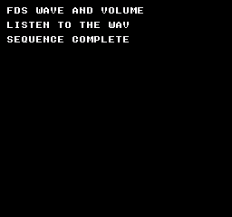
Comando de compilación
New-Item -ItemType Directory -Force .\out | Out-Null
.\kitaqfc\kitaqfc.exe .\kitaq-docs\samples\api-examples\fc\sound_fds.c -I .\kitaqfc\lib -I .\kitaq-docs\samples -o .\out\fc-fds.fds --mapper=fds --nes-chr=.\kitaq-docs\samples\font.chr --no-cache --no-disasmImplementación y código fuente
kitaqfc/lib/nes_game.h:39
#define nes_fds_wave_load(wave64) __fds_wave_load((wave64))nes_mapper_irq_ack
Macro de reconocimiento para el manejador en nes_game.h. Se expande a __mapper_irq_ack(), borrando y deshabilitando la petición a la vez.
Sintaxis
#define nes_mapper_irq_ack() __mapper_irq_ack()Valor devuelto
No devuelve ningún valor.
Condiciones y límites
Las declaraciones de las funciones intrínsecas están en intrinsics.h. Incluye nes_game.h para las macros nes_mapper_irq_*. Selecciona la placa al compilar con --mapper.
Solo MMC3. Se necesitan un manejador __nes_irq, transiciones válidas de PPU A12, la habilitación IRQ del mapper y __irq_enable() de CPU. El ejemplo activa el renderizado con patrones de fondo en $0000 y de sprites en $1000. Esta lección no verifica la sincronización con una línea exacta en hardware físico.
Tanto el reconocimiento como la deshabilitación MMC3 escriben en $E000. Esto borra la petición actual y deshabilita las siguientes. Vuelve a llamar a __mapper_irq_enable() cuando corresponda para preparar otra interrupción. Ninguna operación cambia la máscara de interrupciones de CPU ni la habilitación NMI.
El compilador emite RTI para un manejador de interrupciones propio, pero este debe preservar los registros A/X/Y y temporales compartidos que modifique. El ejemplo guarda A/X/Y y solo usa un incremento de byte y un reconocimiento sin argumentos. Si añades llamadas C, revisa también el almacenamiento compartido que utilizan.
Ejemplo de uso
void __nes_irq(void) {
__asm {
PHA
TXA
PHA
TYA
PHA
}
irq_count++;
if (irq_phase == 1) { nes_mapper_irq_ack(); }
else { __mapper_irq_ack(); }
__asm {
PLA
TAY
PLA
TAX
PLA
}
}Este fragmento muestra la llamada. Antes de incorporarlo a un programa completo, cumple los requisitos de inicialización y de los búferes indicados.
Resultado esperado
El ejemplo MMC3 muestra marcadores CHR 19/20, 21/22 y 23/24. Las lecturas CIRAM dan A B A B con mirroring vertical y A A B B con horizontal. Los recuentos IRQ son 01→02→03→03: cada una de las tres primeras habilitaciones explícitas permite una interrupción; tras deshabilitar, el recuento no cambia. Cada etapa espera seis fotogramas.
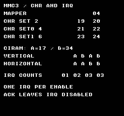
Comando de compilación
New-Item -ItemType Directory -Force .\out | Out-Null
.\kitaqfc\kitaqfc.exe .\kitaq-docs\samples\api-examples\fc\mapper_controls.c -I .\kitaqfc\lib -I .\kitaq-docs\samples -o .\out\mapper_controls.nes --mapper=mmc3 --nes-chr=.\kitaq-docs\samples\mapper_banks.chr --no-cache --no-disasmImplementación y código fuente
kitaqfc/lib/nes_game.h:36
nes_mapper_irq_disable
Deshabilita IRQ MMC3 y borra su petición pendiente mediante nes_game.h. Se expande a __mapper_irq_disable().
Sintaxis
#define nes_mapper_irq_disable() __mapper_irq_disable()Valor devuelto
No devuelve ningún valor.
Condiciones y límites
Las declaraciones de las funciones intrínsecas están en intrinsics.h. Incluye nes_game.h para las macros nes_mapper_irq_*. Selecciona la placa al compilar con --mapper.
Solo MMC3. Se necesitan un manejador __nes_irq, transiciones válidas de PPU A12, la habilitación IRQ del mapper y __irq_enable() de CPU. El ejemplo activa el renderizado con patrones de fondo en $0000 y de sprites en $1000. Esta lección no verifica la sincronización con una línea exacta en hardware físico.
Tanto el reconocimiento como la deshabilitación MMC3 escriben en $E000. Esto borra la petición actual y deshabilita las siguientes. Vuelve a llamar a __mapper_irq_enable() cuando corresponda para preparar otra interrupción. Ninguna operación cambia la máscara de interrupciones de CPU ni la habilitación NMI.
El compilador emite RTI para un manejador de interrupciones propio, pero este debe preservar los registros A/X/Y y temporales compartidos que modifique. El ejemplo guarda A/X/Y y solo usa un incremento de byte y un reconocimiento sin argumentos. Si añades llamadas C, revisa también el almacenamiento compartido que utilizan.
Ejemplo de uso
nes_mapper_irq_disable();
for (i=0;i<6;i++) { m_wait(); }
mapper_result[18]=irq_count;Este fragmento muestra la llamada. Antes de incorporarlo a un programa completo, cumple los requisitos de inicialización y de los búferes indicados.
Resultado esperado
El ejemplo MMC3 muestra marcadores CHR 19/20, 21/22 y 23/24. Las lecturas CIRAM dan A B A B con mirroring vertical y A A B B con horizontal. Los recuentos IRQ son 01→02→03→03: cada una de las tres primeras habilitaciones explícitas permite una interrupción; tras deshabilitar, el recuento no cambia. Cada etapa espera seis fotogramas.
Comando de compilación
New-Item -ItemType Directory -Force .\out | Out-Null
.\kitaqfc\kitaqfc.exe .\kitaq-docs\samples\api-examples\fc\mapper_controls.c -I .\kitaqfc\lib -I .\kitaq-docs\samples -o .\out\mapper_controls.nes --mapper=mmc3 --nes-chr=.\kitaq-docs\samples\mapper_banks.chr --no-cache --no-disasmImplementación y código fuente
kitaqfc/lib/nes_game.h:35
nes_mapper_irq_enable
Habilita IRQ MMC3 mediante nes_game.h. Se expande a __mapper_irq_enable() sin cambiar la máscara de interrupciones de CPU.
Sintaxis
#define nes_mapper_irq_enable() __mapper_irq_enable()Valor devuelto
No devuelve ningún valor.
Condiciones y límites
Las declaraciones de las funciones intrínsecas están en intrinsics.h. Incluye nes_game.h para las macros nes_mapper_irq_*. Selecciona la placa al compilar con --mapper.
Solo MMC3. Se necesitan un manejador __nes_irq, transiciones válidas de PPU A12, la habilitación IRQ del mapper y __irq_enable() de CPU. El ejemplo activa el renderizado con patrones de fondo en $0000 y de sprites en $1000. Esta lección no verifica la sincronización con una línea exacta en hardware físico.
Tanto el reconocimiento como la deshabilitación MMC3 escriben en $E000. Esto borra la petición actual y deshabilita las siguientes. Vuelve a llamar a __mapper_irq_enable() cuando corresponda para preparar otra interrupción. Ninguna operación cambia la máscara de interrupciones de CPU ni la habilitación NMI.
El compilador emite RTI para un manejador de interrupciones propio, pero este debe preservar los registros A/X/Y y temporales compartidos que modifique. El ejemplo guarda A/X/Y y solo usa un incremento de byte y un reconocimiento sin argumentos. Si añades llamadas C, revisa también el almacenamiento compartido que utilizan.
Ejemplo de uso
nes_mapper_irq_set(15); nes_mapper_irq_enable();
for (i=0;i<6;i++) { m_wait(); }
mapper_result[16]=irq_count;Este fragmento muestra la llamada. Antes de incorporarlo a un programa completo, cumple los requisitos de inicialización y de los búferes indicados.
Resultado esperado
El ejemplo MMC3 muestra marcadores CHR 19/20, 21/22 y 23/24. Las lecturas CIRAM dan A B A B con mirroring vertical y A A B B con horizontal. Los recuentos IRQ son 01→02→03→03: cada una de las tres primeras habilitaciones explícitas permite una interrupción; tras deshabilitar, el recuento no cambia. Cada etapa espera seis fotogramas.
Comando de compilación
New-Item -ItemType Directory -Force .\out | Out-Null
.\kitaqfc\kitaqfc.exe .\kitaq-docs\samples\api-examples\fc\mapper_controls.c -I .\kitaqfc\lib -I .\kitaq-docs\samples -o .\out\mapper_controls.nes --mapper=mmc3 --nes-chr=.\kitaq-docs\samples\mapper_banks.chr --no-cache --no-disasmImplementación y código fuente
kitaqfc/lib/nes_game.h:34
nes_mapper_irq_set
Macro de ajuste de carga MMC3 de nes_game.h. Pasa su argumento una vez a __mapper_irq_set y solicita recarga.
Sintaxis
#define nes_mapper_irq_set(scanline) __mapper_irq_set((scanline))Parámetros
scanlineValor de carga del contador de ocho bits, de 0 a 255, no una coordenada Y absoluta. El momento de recarga y las transiciones válidas de PPU A12 determinan cuándo se activa. Cero es válido y no significa «deshabilitar interrupciones».
Valor devuelto
No devuelve ningún valor.
Condiciones y límites
Las declaraciones de las funciones intrínsecas están en intrinsics.h. Incluye nes_game.h para las macros nes_mapper_irq_*. Selecciona la placa al compilar con --mapper.
Solo MMC3. Se necesitan un manejador __nes_irq, transiciones válidas de PPU A12, la habilitación IRQ del mapper y __irq_enable() de CPU. El ejemplo activa el renderizado con patrones de fondo en $0000 y de sprites en $1000. Esta lección no verifica la sincronización con una línea exacta en hardware físico.
Tanto el reconocimiento como la deshabilitación MMC3 escriben en $E000. Esto borra la petición actual y deshabilita las siguientes. Vuelve a llamar a __mapper_irq_enable() cuando corresponda para preparar otra interrupción. Ninguna operación cambia la máscara de interrupciones de CPU ni la habilitación NMI.
El compilador emite RTI para un manejador de interrupciones propio, pero este debe preservar los registros A/X/Y y temporales compartidos que modifique. El ejemplo guarda A/X/Y y solo usa un incremento de byte y un reconocimiento sin argumentos. Si añades llamadas C, revisa también el almacenamiento compartido que utilizan.
Ejemplo de uso
nes_mapper_irq_set(15); nes_mapper_irq_enable();
for (i=0;i<6;i++) { m_wait(); }
mapper_result[16]=irq_count;Este fragmento muestra la llamada. Antes de incorporarlo a un programa completo, cumple los requisitos de inicialización y de los búferes indicados.
Resultado esperado
El ejemplo MMC3 muestra marcadores CHR 19/20, 21/22 y 23/24. Las lecturas CIRAM dan A B A B con mirroring vertical y A A B B con horizontal. Los recuentos IRQ son 01→02→03→03: cada una de las tres primeras habilitaciones explícitas permite una interrupción; tras deshabilitar, el recuento no cambia. Cada etapa espera seis fotogramas.
Comando de compilación
New-Item -ItemType Directory -Force .\out | Out-Null
.\kitaqfc\kitaqfc.exe .\kitaq-docs\samples\api-examples\fc\mapper_controls.c -I .\kitaqfc\lib -I .\kitaq-docs\samples -o .\out\mapper_controls.nes --mapper=mmc3 --nes-chr=.\kitaq-docs\samples\mapper_banks.chr --no-cache --no-disasmImplementación y código fuente
kitaqfc/lib/nes_game.h:33
nes_oam_clear
Macro de nes_game.h: se expande a la función intrínseca indicada en la sintaxis. Basta con incluir esta cabecera; esta operación no requiere un archivo de implementación en C.
Oculta los 64 sprites del búfer auxiliar de la página 02 poniendo cada byte Y a 0xF0. Conserva los números de mosaico, los atributos y las coordenadas X.
Sintaxis
#define nes_oam_clear() __oam_clear()Valor devuelto
Ninguno (void).
Condiciones y límites
Estas operaciones modifican la RAM de CPU 0x0200–0x02FF; no actualizan inmediatamente la OAM del hardware. Transfiera la página completa con __oam_dma. No mantienen las marcas de reserva, las matrices de coordenadas ni el contador de la biblioteca de sprites. Evite que una interrupción modifique o transfiera una página a medio preparar.
Ejemplo de uso
nes_sprite_set(63,144,111,128,0); // Seed the CLEAR row with a visible entry.
nes_oam_clear(); // Set every Y byte to 240; tile, attributes and X are retained.Este fragmento muestra la llamada. Antes de incorporarlo a un programa completo, cumple los requisitos de inicialización y de los búferes indicados.
Resultado esperado
El ejemplo dedica una fila rotulada a cada operación. SET y MOVE muestran flechas de 8×8 hacia la derecha en (144,16) y (144,32); TILE, un cuadrado verde en (144,48); ATTR, la flecha invertida en ambos ejes en (144,64). HIDE en (144,80) y CLEAR en (144,112) deben quedar vacíos. META muestra dos flechas en (136,96) y (144,96), la segunda reflejada horizontalmente. NEXT 07 indica el siguiente índice tras escribir las entradas 5 y 6. Los bordes son rojos, el cuerpo verde y los detalles de la punta azules. Se comparan 8.704 píxeles por imagen y los bytes OAM transferidos; no se ha probado en hardware físico.
El programa ALIASES prepara las filas con macros de nes_game.h y envía la página 02 con nes_oam_dma(). TRANSFER muestra la flecha de 8×8 en (144,128). Es un ejemplo de las macros sin enlazar runtime.c ni metasprite.c.
Comando de compilación
New-Item -ItemType Directory -Force .\out | Out-Null
.\kitaqfc\kitaqfc.exe .\kitaq-docs\samples\api-examples\fc\oam_aliases.c -I .\kitaqfc\lib -I .\kitaq-docs\samples --nes-chr=.\kitaq-docs\samples\sprite_example.chr -o .\out\oam_aliases.nes --no-cache --no-disasmImplementación y código fuente
kitaqfc/lib/nes_game.h:21
#define nes_oam_clear() __oam_clear()nes_oam_dma
Este nombre tiene dos formas. La macro sin argumentos nes_oam_dma() transfiere la página 02 mediante __oam_dma(). La función C nes_oam_dma(page) transfiere la página de CPU de 256 bytes indicada. Ambas ponen OAMADDR a cero y transfieren la página completa sin modificar el origen.
Sintaxis
#define nes_oam_dma() __oam_dma()
// C function declared in runtime.h:
void nes_oam_dma(unsigned char page);Parámetros
page (C)Byte alto de la dirección CPU de origen: pase
4para0x0400–0x04FF, no0x0400. Proporcione una página completa de 256 bytes legibles y mantenga mapeado el banco necesario. Evite páginas con registros de E/S, cuyas lecturas pueden tener efectos secundarios. No se valida el origen.
Valor devuelto
Ninguno (void).
Condiciones y límites
Elija las cabeceras expresamente: nes_game.h y la cabecera general fc.h definen las macros. Para usar las funciones C, incluya runtime.h o metasprite.h y enlace sus implementaciones sin esas macros, o elimine antes las macros conflictivas con #undef. La macro DMA sin argumentos no acepta el argumento page de la función C.
Las funciones C de metasprites necesitan nes_oam_shadow[256]. runtime.c lo define en 0x0200, reserva además 0x0300–0x03BF para su cola VRAM y proporciona __nes_nmi. Incluya cada implementación una sola vez y coordine el manejador de interrupciones con el resto del programa.
Llame a DMA durante VBlank o con el renderizado desactivado. Ninguna forma espera a VBlank. Prepare primero toda la página de origen y después transfiérala; evite que una interrupción la modifique durante la preparación.
Ejemplo de uso
m_wait();nes_oam_dma(); // Expand to the page-02 compiler intrinsic.Este fragmento muestra la llamada. Antes de incorporarlo a un programa completo, cumple los requisitos de inicialización y de los búferes indicados.
Resultado esperado
El ejemplo dedica una fila rotulada a cada operación. SET y MOVE muestran flechas de 8×8 hacia la derecha en (144,16) y (144,32); TILE, un cuadrado verde en (144,48); ATTR, la flecha invertida en ambos ejes en (144,64). HIDE en (144,80) y CLEAR en (144,112) deben quedar vacíos. META muestra dos flechas en (136,96) y (144,96), la segunda reflejada horizontalmente. NEXT 07 indica el siguiente índice tras escribir las entradas 5 y 6. Los bordes son rojos, el cuerpo verde y los detalles de la punta azules. Se comparan 8.704 píxeles por imagen y los bytes OAM transferidos; no se ha probado en hardware físico.
El programa ALIASES prepara las filas con macros de nes_game.h y envía la página 02 con nes_oam_dma(). TRANSFER muestra la flecha de 8×8 en (144,128). Es un ejemplo de las macros sin enlazar runtime.c ni metasprite.c.
Comando de compilación
New-Item -ItemType Directory -Force .\out | Out-Null
.\kitaqfc\kitaqfc.exe .\kitaq-docs\samples\api-examples\fc\oam_aliases.c -I .\kitaqfc\lib -I .\kitaq-docs\samples --nes-chr=.\kitaq-docs\samples\sprite_example.chr -o .\out\oam_aliases.nes --no-cache --no-disasmEjemplo de uso
m_wait();nes_oam_dma(4); // C function: source address high byte, 0x0400 -> 4.Este fragmento muestra la llamada. Antes de incorporarlo a un programa completo, cumple los requisitos de inicialización y de los búferes indicados.
Resultado esperado
C-RUNTIME combina las funciones C. PAIR muestra dos flechas de 8×8 en (144,32) y (152,32), la segunda reflejada horizontalmente. Se oculta otra pareja en y=64, por lo que HIDE RANGE debe quedar vacío. Los dibujos sucesivos usan las posiciones 4–5 y 6–7 y muestran NEXT 08. Se copia la página 02 a la 04 y solo se cambia la posición 8 del tile de flecha 128 al cuadrado 129. nes_oam_dma(4) debe mostrar un cuadrado verde en (144,96), junto a PAGE 04, mientras la página 02 conserva el tile 128.
Las flechas tienen bordes rojos, ejes verdes y detalles azules en la punta; el tile cuadrado 129 es verde. La verificación compara 8.704 píxeles de color y los 256 bytes OAM transferidos por imagen, además de las etiquetas. No se ha probado en hardware físico.
Comando de compilación
New-Item -ItemType Directory -Force .\out | Out-Null
.\kitaqfc\kitaqfc.exe .\kitaq-docs\samples\api-examples\fc\oam_c_helpers.c -I .\kitaqfc\lib -I .\kitaq-docs\samples --nes-chr=.\kitaq-docs\samples\sprite_example.chr -o .\out\oam_c_helpers.nes --no-cache --no-disasmImplementación y código fuente
kitaqfc/lib/nes_game.h:23
kitaqfc/lib/runtime.c:245
void nes_oam_dma(unsigned char page)
{
OAMADDR = 0;
OAMDMA = page;
}nes_pad1
Macro de tipo función que se expande exactamente a __pad_read1_safe(). Lee el mando 1 y devuelve su máscara NES directa; no es un alias del estado guardado input_current().
Sintaxis
#define nes_pad1() __pad_read1_safe()Valor devuelto
Máscara de botones mantenidos de 8 bits en orden NES. Cada bit a 1 identifica un botón pulsado; 0 significa ninguno. No es un booleano normalizado.
Condiciones y límites
Formato NES directo: A=0x01, B=0x02, SELECT=0x04, START=0x08, UP=0x10, DOWN=0x20, LEFT=0x40, RIGHT=0x80. Un bit a 1 significa pulsado. Usa estos valores con nes_pad_* y los resultados directos de __pad_*; no los confundas con las máscaras comunes BTN_* de input.h.
Esta llamada obtiene una nueva lectura del hardware. No actualiza el estado guardado de input_* ni nes_pad1_*, ni genera eventos de pulsación, liberación o repetición. Guarda la lectura y compárala con tu máscara anterior cuando necesites detectar cambios.
La lectura segura repite pares de lecturas completas hasta obtener dos máscaras iguales. Cada lectura activa el strobe de $4016 y reinicia la secuencia serie de ambos mandos. No hay límite de reintentos. Esta comprobación no demuestra compatibilidad con todas las combinaciones de DMC y periféricos.
Ejemplo de uso
alias1=nes_pad1(); // Macro for __pad_read1_safe(), using NES raw bits.Este fragmento muestra la llamada. Antes de incorporarlo a un programa completo, cumple los requisitos de inicialización y de los búferes indicados.
Resultado esperado
Este programa compara los dos puertos, las lecturas normales y con comprobación de coincidencia, los filtros y las macros abreviadas. Mantén A + derecha en el mando 1 y B + izquierda en el mando 2. RAW P1, SAFE P1 y ALIAS P1 valen 129; los tres valores P2 son 66. BUTTONS P1 vale 1 y DIRS P1 vale 128: el filtro de direcciones conserva las posiciones de los bits altos. FAILED CHECKS debe ser 0. Los valores capturados permanecen en pantalla.
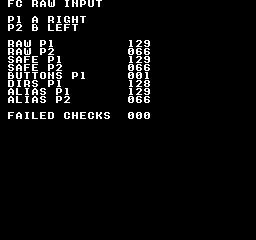
Comando de compilación
New-Item -ItemType Directory -Force .\out | Out-Null
.\kitaqfc\kitaqfc.exe .\kitaq-docs\samples\api-examples\fc\input_raw.c -I .\kitaqfc\lib -I .\kitaq-docs\samples -o .\out\input_raw.nes --mapper=nrom --nes-chr=.\kitaq-docs\samples\font.chr --no-disasm --no-cacheImplementación y código fuente
kitaqfc/lib/nes_game.h:30
nes_pad2
Macro de tipo función que se expande exactamente a __pad_read2_safe(). Lee el mando 2 y devuelve su máscara NES directa; no es un alias del estado guardado input_current().
Sintaxis
#define nes_pad2() __pad_read2_safe()Valor devuelto
Máscara de botones mantenidos de 8 bits en orden NES. Cada bit a 1 identifica un botón pulsado; 0 significa ninguno. No es un booleano normalizado.
Condiciones y límites
Formato NES directo: A=0x01, B=0x02, SELECT=0x04, START=0x08, UP=0x10, DOWN=0x20, LEFT=0x40, RIGHT=0x80. Un bit a 1 significa pulsado. Usa estos valores con nes_pad_* y los resultados directos de __pad_*; no los confundas con las máscaras comunes BTN_* de input.h.
Esta llamada obtiene una nueva lectura del hardware. No actualiza el estado guardado de input_* ni nes_pad1_*, ni genera eventos de pulsación, liberación o repetición. Guarda la lectura y compárala con tu máscara anterior cuando necesites detectar cambios.
La lectura segura repite pares de lecturas completas hasta obtener dos máscaras iguales. Cada lectura activa el strobe de $4016 y reinicia la secuencia serie de ambos mandos. No hay límite de reintentos. Esta comprobación no demuestra compatibilidad con todas las combinaciones de DMC y periféricos.
Ejemplo de uso
alias2=nes_pad2(); // Macro for __pad_read2_safe(), using NES raw bits.Este fragmento muestra la llamada. Antes de incorporarlo a un programa completo, cumple los requisitos de inicialización y de los búferes indicados.
Resultado esperado
Este programa compara los dos puertos, las lecturas normales y con comprobación de coincidencia, los filtros y las macros abreviadas. Mantén A + derecha en el mando 1 y B + izquierda en el mando 2. RAW P1, SAFE P1 y ALIAS P1 valen 129; los tres valores P2 son 66. BUTTONS P1 vale 1 y DIRS P1 vale 128: el filtro de direcciones conserva las posiciones de los bits altos. FAILED CHECKS debe ser 0. Los valores capturados permanecen en pantalla.
Comando de compilación
New-Item -ItemType Directory -Force .\out | Out-Null
.\kitaqfc\kitaqfc.exe .\kitaq-docs\samples\api-examples\fc\input_raw.c -I .\kitaqfc\lib -I .\kitaq-docs\samples -o .\out\input_raw.nes --mapper=nrom --nes-chr=.\kitaq-docs\samples\font.chr --no-disasm --no-cacheImplementación y código fuente
kitaqfc/lib/nes_game.h:31
nes_split_scroll_sprite0
Macro de división de pantalla de nes_game.h. Pasa X e Y una vez cada uno a __split_scroll_sprite0, realizando la misma espera y escrituras de desplazamiento.
Sintaxis
#define nes_split_scroll_sprite0(x,y) __split_scroll_sprite0((x),(y))Parámetros
xDesplazamiento horizontal de 0 a 255, no coordenada X de un objeto. El ejemplo usa 32 para mostrar la zona inferior del mismo fondo desplazada 32 píxeles a la izquierda.
yAjuste temporal de desplazamiento vertical de 0 a 255; el rango visible habitual es 0..239. Escribe $2005, por lo que no cambia inmediatamente la posición vertical activa durante el renderizado. El ejemplo de división horizontal pasa cero.
Valor devuelto
No devuelve ningún valor.
Condiciones y límites
Superpón un píxel opaco del sprite OAM 0 con uno opaco del fondo, con ambas capas activas. La prioridad detrás del fondo sigue permitiendo un hit. Los ocho píxeles de la izquierda requieren habilitar cada capa en ese borde; en X=255 el solapamiento no dispara un hit.
Consulta el bit 6 de PPUSTATUS ($2002) hasta que se borre y después hasta que se active. Si ya hubo un hit al llamar, espera uno nuevo en el siguiente fotograma. Leer la bandera no la confirma ni la borra; el PPU la borra durante el prerenderizado.
No hay tiempo máximo ni retorno de fallo. Un sprite 0 oculto, fondo transparente, renderizado desactivado u otra configuración sin solapamiento deja la llamada bloqueada. Garantiza un hit antes de llamar. No requiere habilitar IRQ de CPU ni activa NMI. El ejemplo habilita NMI para su espera de fotograma independiente.
Leer $2002 también afecta al latch compartido de escritura de dirección/desplazamiento y a la bandera VBlank. No intercales esta llamada entre las dos escrituras de $2005/$2006. Úsala desde el código principal, no desde NMI/IRQ.
Tras el hit, lee $2002 y escribe X y después Y en $2005. La X fina cambia de inmediato; la gruesa, en la siguiente recarga horizontal. Y suele aplicarse en la siguiente recarga de prerenderizado, salvo que otra escritura la sustituya antes. No es un cambio ráster inmediato a cualquier X/Y.
La consulta y las instrucciones retrasan las escrituras. KUROSAKI renderiza por líneas, por lo que las capturas no demuestran un límite exacto por punto en hardware. El ejemplo sitúa el cambio dentro de la franja blanca Y=96..103, alejando la incertidumbre de las barras azules y rojas.
La cabecera compartida fc_sprite0_scene.h prepara barras originales azules/rojas y una franja blanca horizontal. El sprite 0 está en (16,96), oculto tras el fondo; su Y OAM bruto es 95 porque Y visible=Y OAM+1. Cada fotograma restaura el desplazamiento superior a cero en VBlank antes de esperar el hit.
NESdev: referencia de PPU para programadores
Ejemplo de uso
void main(void) {
s0_prepare();
while (1) {
s0_frame();
nes_split_scroll_sprite0(32,0);
s0_completed++;
}
}Este fragmento muestra la llamada. Antes de incorporarlo a un programa completo, cumple los requisitos de inicialización y de los búferes indicados.
Resultado esperado
Encima de la franja blanca, azul en X=64..95 y rojo en X=160..191. Debajo, desde Y=104, azul pasa a X=32..63 y rojo a X=128..159: solo la zona inferior se mueve 32 píxeles a la izquierda. La franja está en Y=96..103 y las barras terminan en Y=207. La verificación comprueba una finalización por fotograma y la posición y color de cada píxel.

Comando de compilación
New-Item -ItemType Directory -Force .\out | Out-Null
.\kitaqfc\kitaqfc.exe .\kitaq-docs\samples\api-examples\fc\sprite0_split_alias.c -I .\kitaqfc\lib -I .\kitaq-docs\samples -o .\out\sprite0_split_alias.nes --mapper=nrom --nes-chr=.\kitaq-docs\samples\sprite0_scene.chr --no-cache --no-disasmImplementación y código fuente
kitaqfc/lib/nes_game.h:37
nes_sprite_hide
Macro de nes_game.h: se expande a la función intrínseca indicada en la sintaxis. Basta con incluir esta cabecera; esta operación no requiere un archivo de implementación en C.
Oculta un sprite del búfer auxiliar poniendo su byte Y a 0xF0. Conserva X, el mosaico y los atributos para reutilizarlos. No libera una reserva ni modifica el contador de sprites activos de la biblioteca.
Sintaxis
#define nes_sprite_hide(i) __sprite_hide((i))Parámetros
iÍndice de sprite entre 0 y 63, no desplazamiento en bytes. La implementación lo multiplica por cuatro con un cursor de 8 bits; los valores fuera de rango se reducen módulo 64 y pueden sobrescribir otra entrada. No se comprueba si está reservada.
Valor devuelto
Ninguno (void).
Condiciones y límites
Estas operaciones modifican la RAM de CPU 0x0200–0x02FF; no actualizan inmediatamente la OAM del hardware. Transfiera la página completa con __oam_dma. No mantienen las marcas de reserva, las matrices de coordenadas ni el contador de la biblioteca de sprites. Evite que una interrupción modifique o transfiera una página a medio preparar.
Ejemplo de uso
nes_sprite_hide(4); // The HIDE row remains empty after DMA.Este fragmento muestra la llamada. Antes de incorporarlo a un programa completo, cumple los requisitos de inicialización y de los búferes indicados.
Resultado esperado
El ejemplo dedica una fila rotulada a cada operación. SET y MOVE muestran flechas de 8×8 hacia la derecha en (144,16) y (144,32); TILE, un cuadrado verde en (144,48); ATTR, la flecha invertida en ambos ejes en (144,64). HIDE en (144,80) y CLEAR en (144,112) deben quedar vacíos. META muestra dos flechas en (136,96) y (144,96), la segunda reflejada horizontalmente. NEXT 07 indica el siguiente índice tras escribir las entradas 5 y 6. Los bordes son rojos, el cuerpo verde y los detalles de la punta azules. Se comparan 8.704 píxeles por imagen y los bytes OAM transferidos; no se ha probado en hardware físico.
El programa ALIASES prepara las filas con macros de nes_game.h y envía la página 02 con nes_oam_dma(). TRANSFER muestra la flecha de 8×8 en (144,128). Es un ejemplo de las macros sin enlazar runtime.c ni metasprite.c.
Comando de compilación
New-Item -ItemType Directory -Force .\out | Out-Null
.\kitaqfc\kitaqfc.exe .\kitaq-docs\samples\api-examples\fc\oam_aliases.c -I .\kitaqfc\lib -I .\kitaq-docs\samples --nes-chr=.\kitaq-docs\samples\sprite_example.chr -o .\out\oam_aliases.nes --no-cache --no-disasmImplementación y código fuente
kitaqfc/lib/nes_game.h:26
#define nes_sprite_hide(i) __sprite_hide((i))nes_sprite_move
Macro de nes_game.h: se expande a la función intrínseca indicada en la sintaxis. Basta con incluir esta cabecera; esta operación no requiere un archivo de implementación en C.
Cambia únicamente los bytes X e Y de un sprite del búfer auxiliar. Conserva el mosaico y los atributos, de modo que la imagen se mueve sin cambiar de paleta ni de orientación.
Sintaxis
#define nes_sprite_move(i,x,y) __sprite_move((i),(x),(y))Parámetros
iÍndice de sprite entre 0 y 63, no desplazamiento en bytes. La implementación lo multiplica por cuatro con un cursor de 8 bits; los valores fuera de rango se reducen módulo 64 y pueden sobrescribir otra entrada. No se comprueba si está reservada.
xPosición horizontal en píxeles, expresada como byte sin signo; no es una coordenada de patrón.
yByte Y de OAM. Para situar el borde superior por debajo de la línea cero, pasa su posición menos uno; 239..255 quedan fuera de las 240 líneas visibles.
Valor devuelto
Ninguno (void).
Condiciones y límites
Estas operaciones modifican la RAM de CPU 0x0200–0x02FF; no actualizan inmediatamente la OAM del hardware. Transfiera la página completa con __oam_dma. No mantienen las marcas de reserva, las matrices de coordenadas ni el contador de la biblioteca de sprites. Evite que una interrupción modifique o transfiera una página a medio preparar.
Ejemplo de uso
nes_sprite_move(1,144,31); // Move to (144,32), retaining tile 128 and attributes 0.Este fragmento muestra la llamada. Antes de incorporarlo a un programa completo, cumple los requisitos de inicialización y de los búferes indicados.
Resultado esperado
El ejemplo dedica una fila rotulada a cada operación. SET y MOVE muestran flechas de 8×8 hacia la derecha en (144,16) y (144,32); TILE, un cuadrado verde en (144,48); ATTR, la flecha invertida en ambos ejes en (144,64). HIDE en (144,80) y CLEAR en (144,112) deben quedar vacíos. META muestra dos flechas en (136,96) y (144,96), la segunda reflejada horizontalmente. NEXT 07 indica el siguiente índice tras escribir las entradas 5 y 6. Los bordes son rojos, el cuerpo verde y los detalles de la punta azules. Se comparan 8.704 píxeles por imagen y los bytes OAM transferidos; no se ha probado en hardware físico.
El programa ALIASES prepara las filas con macros de nes_game.h y envía la página 02 con nes_oam_dma(). TRANSFER muestra la flecha de 8×8 en (144,128). Es un ejemplo de las macros sin enlazar runtime.c ni metasprite.c.
Comando de compilación
New-Item -ItemType Directory -Force .\out | Out-Null
.\kitaqfc\kitaqfc.exe .\kitaq-docs\samples\api-examples\fc\oam_aliases.c -I .\kitaqfc\lib -I .\kitaq-docs\samples --nes-chr=.\kitaq-docs\samples\sprite_example.chr -o .\out\oam_aliases.nes --no-cache --no-disasmImplementación y código fuente
kitaqfc/lib/nes_game.h:25
#define nes_sprite_move(i,x,y) __sprite_move((i),(x),(y))nes_sprite_set
Macro de nes_game.h: se expande a la función intrínseca indicada en la sintaxis. Basta con incluir esta cabecera; esta operación no requiere un archivo de implementación en C.
Escribe los cuatro campos de un sprite en el búfer auxiliar de la página 02. Los argumentos son índice, X, Y, mosaico y atributos; el orden almacenado es Y, mosaico, atributos, X.
Sintaxis
#define nes_sprite_set(i,x,y,t,a) __sprite_set((i),(x),(y),(t),(a))Parámetros
iÍndice de sprite entre 0 y 63, no desplazamiento en bytes. La implementación lo multiplica por cuatro con un cursor de 8 bits; los valores fuera de rango se reducen módulo 64 y pueden sobrescribir otra entrada. No se comprueba si está reservada.
xPosición horizontal en píxeles, expresada como byte sin signo; no es una coordenada de patrón.
yByte Y de OAM. Para situar el borde superior por debajo de la línea cero, pasa su posición menos uno; 239..255 quedan fuera de las 240 líneas visibles.
tNúmero de patrón de 8 bits. Carga antes sus gráficos. Se aplican las reglas de sprites de 8×16; la función no adapta el número a pares de patrones.
aByte completo de atributos: bits 0–1 seleccionan la paleta 0–3; bit 5 coloca los píxeles opacos del sprite detrás de los del fondo; bits 6 y 7 invierten horizontal y verticalmente. Mantenga los bits 2–4 a cero. Combine banderas con OR a nivel de bits; el byte sustituye todos los atributos anteriores.
Valor devuelto
Ninguno (void).
Condiciones y límites
Estas operaciones modifican la RAM de CPU 0x0200–0x02FF; no actualizan inmediatamente la OAM del hardware. Transfiera la página completa con __oam_dma. No mantienen las marcas de reserva, las matrices de coordenadas ni el contador de la biblioteca de sprites. Evite que una interrupción modifique o transfiera una página a medio preparar.
Ejemplo de uso
nes_sprite_set(0,144,15,128,0); // An 8x8 arrow at visible position (144,16).Este fragmento muestra la llamada. Antes de incorporarlo a un programa completo, cumple los requisitos de inicialización y de los búferes indicados.
Resultado esperado
El ejemplo dedica una fila rotulada a cada operación. SET y MOVE muestran flechas de 8×8 hacia la derecha en (144,16) y (144,32); TILE, un cuadrado verde en (144,48); ATTR, la flecha invertida en ambos ejes en (144,64). HIDE en (144,80) y CLEAR en (144,112) deben quedar vacíos. META muestra dos flechas en (136,96) y (144,96), la segunda reflejada horizontalmente. NEXT 07 indica el siguiente índice tras escribir las entradas 5 y 6. Los bordes son rojos, el cuerpo verde y los detalles de la punta azules. Se comparan 8.704 píxeles por imagen y los bytes OAM transferidos; no se ha probado en hardware físico.
El programa ALIASES prepara las filas con macros de nes_game.h y envía la página 02 con nes_oam_dma(). TRANSFER muestra la flecha de 8×8 en (144,128). Es un ejemplo de las macros sin enlazar runtime.c ni metasprite.c.
Comando de compilación
New-Item -ItemType Directory -Force .\out | Out-Null
.\kitaqfc\kitaqfc.exe .\kitaq-docs\samples\api-examples\fc\oam_aliases.c -I .\kitaqfc\lib -I .\kitaq-docs\samples --nes-chr=.\kitaq-docs\samples\sprite_example.chr -o .\out\oam_aliases.nes --no-cache --no-disasmImplementación y código fuente
kitaqfc/lib/nes_game.h:24
#define nes_sprite_set(i,x,y,t,a) __sprite_set((i),(x),(y),(t),(a))nes_vram_clear_queue
Macro de nes_game.h: se expande a la función intrínseca indicada en la sintaxis. Basta con incluir esta cabecera; esta operación no requiere un archivo de implementación en C.
Descarta todos los registros pendientes y pone a cero la longitud y la marca de disponibilidad. No escribe VRAM ni borra el indicador de desbordamiento. Para borrarlo, llama aparte a __vramq_clear_overflow.
Sintaxis
#define nes_vram_clear_queue() __vramq_clear()Valor devuelto
Ninguno (void).
Condiciones y límites
FC cuenta bytes de comandos codificados en un búfer intrínseco fijo de 128 bytes. Una escritura de tile ocupa 4 bytes, un relleno 5 y una copia por puntero 6, incluidos los metadatos. NMI puede consumir una cola preparada; examínala y constrúyela antes de confirmar, coordinando productor y consumidor.
Estas macros usan la cola de comandos intrínseca del compilador, compartida con lib/vram.c. No seleccionan el búfer C nes_vram_queue_*. Consulte los bytes codificados pendientes con __vramq_len() y los fallos de capacidad con __vramq_overflow(); borre la marca de fallo con __vramq_clear_overflow().
Coordina las fases de construcción y ejecución de la cola. No añadas durante su ejecución en una interrupción, alteres sus contadores directamente ni sobrescribas por accidente los datos retenidos. Estas API no ofrecen bloqueo ni doble búfer. La capacidad es la del búfer de comandos, no los bytes libres de VRAM física.
Ejemplo de uso
nes_vram_clear_queue();
if (__vramq_len()!=0 || __vramq_overflow()!=1) failures++;
// Clearing queued work deliberately leaves the overflow latch set.Este fragmento muestra la llamada. Antes de incorporarlo a un programa completo, cumple los requisitos de inicialización y de los búferes indicados.
Resultado esperado
El programa completo usa macros de nes_game.h para añadir un byte, copiar, rellenar, confirmar y vaciar la cola. También utiliza los intrínsecos de consulta y ejecución __vramq_* para comprobar sus efectos. El título es VRAM QUEUE MACROS. Las transferencias grandes se ejecutan con el renderizado desactivado; confirmarlas no garantiza que quepan en VBlank.
El programa enseña capacidad, punteros retenidos, reinicios independientes y ejecución directa o por NMI. Se espera CAPACITY 128, ENCODED BYTES 030, AFTER EXEC 000, OVERFLOW SEEN 001 y FAILED CHECKS 000. Seis registros ocupan 30 bytes y realizan 512 escrituras de un byte. OVERFLOW SEEN conserva el rechazo deliberado anterior; no indica que el estado final siga desbordado.
La copia azul empieza en el píxel (0,16) y el relleno verde en (0,88). Cada área ocupa siete filas completas de 256 píxeles y 248 píxeles de la octava: 255 casillas en total. La última casilla de 8 × 8 queda negra. La copia repite patrones sólidos, de mitad izquierda y triangulares; el primero es triangular porque se modificó el origen tras encolar. El relleno sigue sólido aunque cambie la variable del llamador. Se comprueban forma y color.
En y=160 deben aparecer un cuadrado rojo sólido en x=16, una mitad izquierda roja en x=224 y un cuadrado rojo sólido en x=240. El primero sobrevive a registros de longitud cero; el central prueba el consumo por NMI; el último, un put. La casilla cancelada en (248,160) queda negra. Las transferencias largas se ejecutan con renderizado y NMI apagados; solo la escritura final pequeña usa NMI. Es evidencia de emulador NROM, no de hardware real.
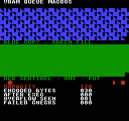
Comando de compilación
New-Item -ItemType Directory -Force .\out | Out-Null
.\kitaqfc\kitaqfc.exe .\kitaq-docs\samples\api-examples\fc\vram_queue_macros.c -I .\kitaqfc\lib -I .\kitaq-docs\samples -o .\out\vram_queue_macros.nes --mapper=nrom --nes-chr=.\kitaq-docs\samples\api-examples\fc\vram_shapes.chr --no-cache --no-disasmImplementación y código fuente
kitaqfc/lib/nes_game.h:19
#define nes_vram_clear_queue() __vramq_clear()nes_vram_commit
Macro de nes_game.h: se expande a la función intrínseca indicada en la sintaxis. Basta con incluir esta cabecera; esta operación no requiere un archivo de implementación en C.
Activa la marca de disponibilidad para que el ejecutor pueda consumir la cola. No copia datos, escribe en la PPU ni espera a NMI. Tras confirmar, mantén la cola y las fuentes retenidas estables hasta terminar. Con NMI habilitada, el manejador predeterminado puede consumirla de forma asíncrona.
Sintaxis
#define nes_vram_commit() __vramq_commit()Valor devuelto
Ninguno (void).
Condiciones y límites
FC cuenta bytes de comandos codificados en un búfer intrínseco fijo de 128 bytes. Una escritura de tile ocupa 4 bytes, un relleno 5 y una copia por puntero 6, incluidos los metadatos. NMI puede consumir una cola preparada; examínala y constrúyela antes de confirmar, coordinando productor y consumidor.
Estas macros usan la cola de comandos intrínseca del compilador, compartida con lib/vram.c. No seleccionan el búfer C nes_vram_queue_*. Consulte los bytes codificados pendientes con __vramq_len() y los fallos de capacidad con __vramq_overflow(); borre la marca de fallo con __vramq_clear_overflow().
Coordina las fases de construcción y ejecución de la cola. No añadas durante su ejecución en una interrupción, alteres sus contadores directamente ni sobrescribas por accidente los datos retenidos. Estas API no ofrecen bloqueo ni doble búfer. La capacidad es la del búfer de comandos, no los bytes libres de VRAM física.
Ejemplo de uso
nes_vram_commit(); // NMI is disabled here: this only marks the queue ready.
if (__vramq_len()!=30) failures++;Este fragmento muestra la llamada. Antes de incorporarlo a un programa completo, cumple los requisitos de inicialización y de los búferes indicados.
Resultado esperado
El programa completo usa macros de nes_game.h para añadir un byte, copiar, rellenar, confirmar y vaciar la cola. También utiliza los intrínsecos de consulta y ejecución __vramq_* para comprobar sus efectos. El título es VRAM QUEUE MACROS. Las transferencias grandes se ejecutan con el renderizado desactivado; confirmarlas no garantiza que quepan en VBlank.
El programa enseña capacidad, punteros retenidos, reinicios independientes y ejecución directa o por NMI. Se espera CAPACITY 128, ENCODED BYTES 030, AFTER EXEC 000, OVERFLOW SEEN 001 y FAILED CHECKS 000. Seis registros ocupan 30 bytes y realizan 512 escrituras de un byte. OVERFLOW SEEN conserva el rechazo deliberado anterior; no indica que el estado final siga desbordado.
La copia azul empieza en el píxel (0,16) y el relleno verde en (0,88). Cada área ocupa siete filas completas de 256 píxeles y 248 píxeles de la octava: 255 casillas en total. La última casilla de 8 × 8 queda negra. La copia repite patrones sólidos, de mitad izquierda y triangulares; el primero es triangular porque se modificó el origen tras encolar. El relleno sigue sólido aunque cambie la variable del llamador. Se comprueban forma y color.
En y=160 deben aparecer un cuadrado rojo sólido en x=16, una mitad izquierda roja en x=224 y un cuadrado rojo sólido en x=240. El primero sobrevive a registros de longitud cero; el central prueba el consumo por NMI; el último, un put. La casilla cancelada en (248,160) queda negra. Las transferencias largas se ejecutan con renderizado y NMI apagados; solo la escritura final pequeña usa NMI. Es evidencia de emulador NROM, no de hardware real.
Comando de compilación
New-Item -ItemType Directory -Force .\out | Out-Null
.\kitaqfc\kitaqfc.exe .\kitaq-docs\samples\api-examples\fc\vram_queue_macros.c -I .\kitaqfc\lib -I .\kitaq-docs\samples -o .\out\vram_queue_macros.nes --mapper=nrom --nes-chr=.\kitaq-docs\samples\api-examples\fc\vram_shapes.chr --no-cache --no-disasmImplementación y código fuente
kitaqfc/lib/nes_game.h:18
#define nes_vram_commit() __vramq_commit()nes_vram_copy
Macro de nes_game.h: se expande a la función intrínseca indicada en la sintaxis. Basta con incluir esta cabecera; esta operación no requiere un archivo de implementación en C.
Añade un registro de seis bytes para copiar len bytes de src a ppu_addr durante la ejecución. Conserva el puntero, no los datos. Incluso una copia de 255 bytes ocupa solo seis bytes de cola. Lee el origen en orden creciente; selecciona incremento PPU 1 para un destino contiguo.
Sintaxis
#define nes_vram_copy(addr, src, len) __vramq_copy((addr), (src), (len))Parámetros
addrDirección PPU en bytes (
0x0000–0x3FFF), no un puntero de CPU. El destino debe admitir escritura: modificar patrones requiere CHR RAM, no CHR ROM. Se aplican el mapeo y el mirroring de la PPU. Para copias y rellenos contiguos, selecciona incremento 1 en PPUCTRL. Ejecuta en un periodo seguro y restablece después el desplazamiento; el ejecutor escribe PPUADDR y PPUDATA sin restaurarlo.srcPuntero cercano a bytes legibles, conservado hasta la ejecución. Mantén los datos vivos y su banco de memoria o ROM visible durante toda la ejecución; no se guarda un número de banco ni una copia. Una transferencia no vacía necesita un origen válido. No uses un array local que haya caducado.
lenNúmero de bytes, de 0 a 255. Un registro maneja todo el recuento; no se divide en tramos de 127 bytes. Cero sigue ocupando un registro de copia o relleno. Al ejecutarlo se establece la dirección PPU, pero no se escribe en PPUDATA. 256 queda fuera del intervalo admitido.
Valor devuelto
Ninguno (void).
Condiciones y límites
La inserción no devuelve un valor de éxito. Si no cabe todo el registro, activa __vramq_overflow() y conserva registros y longitud. Se acepta un ajuste exacto. Un indicador previo no impide añadir si hay espacio; atiéndelo o reinícialo antes de juzgar un lote nuevo. Varias inserciones no forman una transacción.
FC cuenta bytes de comandos codificados en un búfer intrínseco fijo de 128 bytes. Una escritura de tile ocupa 4 bytes, un relleno 5 y una copia por puntero 6, incluidos los metadatos. NMI puede consumir una cola preparada; examínala y constrúyela antes de confirmar, coordinando productor y consumidor.
Estas macros usan la cola de comandos intrínseca del compilador, compartida con lib/vram.c. No seleccionan el búfer C nes_vram_queue_*. Consulte los bytes codificados pendientes con __vramq_len() y los fallos de capacidad con __vramq_overflow(); borre la marca de fallo con __vramq_clear_overflow().
Coordina las fases de construcción y ejecución de la cola. No añadas durante su ejecución en una interrupción, alteres sus contadores directamente ni sobrescribas por accidente los datos retenidos. Estas API no ofrecen bloqueo ni doble búfer. La capacidad es la del búfer de comandos, no los bytes libres de VRAM física.
Ejemplo de uso
nes_vram_copy(0x2040,source_bytes,255);
source_bytes[0]=3; // The executor must see this change through its retained pointer.Este fragmento muestra la llamada. Antes de incorporarlo a un programa completo, cumple los requisitos de inicialización y de los búferes indicados.
Resultado esperado
El programa completo usa macros de nes_game.h para añadir un byte, copiar, rellenar, confirmar y vaciar la cola. También utiliza los intrínsecos de consulta y ejecución __vramq_* para comprobar sus efectos. El título es VRAM QUEUE MACROS. Las transferencias grandes se ejecutan con el renderizado desactivado; confirmarlas no garantiza que quepan en VBlank.
El programa enseña capacidad, punteros retenidos, reinicios independientes y ejecución directa o por NMI. Se espera CAPACITY 128, ENCODED BYTES 030, AFTER EXEC 000, OVERFLOW SEEN 001 y FAILED CHECKS 000. Seis registros ocupan 30 bytes y realizan 512 escrituras de un byte. OVERFLOW SEEN conserva el rechazo deliberado anterior; no indica que el estado final siga desbordado.
La copia azul empieza en el píxel (0,16) y el relleno verde en (0,88). Cada área ocupa siete filas completas de 256 píxeles y 248 píxeles de la octava: 255 casillas en total. La última casilla de 8 × 8 queda negra. La copia repite patrones sólidos, de mitad izquierda y triangulares; el primero es triangular porque se modificó el origen tras encolar. El relleno sigue sólido aunque cambie la variable del llamador. Se comprueban forma y color.
En y=160 deben aparecer un cuadrado rojo sólido en x=16, una mitad izquierda roja en x=224 y un cuadrado rojo sólido en x=240. El primero sobrevive a registros de longitud cero; el central prueba el consumo por NMI; el último, un put. La casilla cancelada en (248,160) queda negra. Las transferencias largas se ejecutan con renderizado y NMI apagados; solo la escritura final pequeña usa NMI. Es evidencia de emulador NROM, no de hardware real.
Comando de compilación
New-Item -ItemType Directory -Force .\out | Out-Null
.\kitaqfc\kitaqfc.exe .\kitaq-docs\samples\api-examples\fc\vram_queue_macros.c -I .\kitaqfc\lib -I .\kitaq-docs\samples -o .\out\vram_queue_macros.nes --mapper=nrom --nes-chr=.\kitaq-docs\samples\api-examples\fc\vram_shapes.chr --no-cache --no-disasmImplementación y código fuente
kitaqfc/lib/nes_game.h:16
#define nes_vram_copy(addr, src, len) __vramq_copy((addr), (src), (len))nes_vram_fill
Macro de nes_game.h: se expande a la función intrínseca indicada en la sintaxis. Basta con incluir esta cabecera; esta operación no requiere un archivo de implementación en C.
Añade un registro de cinco bytes que repite el byte value en len escrituras PPU. El valor queda guardado; cambiar después la variable del llamador no altera el relleno encolado. Repite un byte, no un patrón gráfico de varios bytes.
Sintaxis
#define nes_vram_fill(addr, value, len) __vramq_fill((addr), (value), (len))Parámetros
addrDirección PPU en bytes (
0x0000–0x3FFF), no un puntero de CPU. El destino debe admitir escritura: modificar patrones requiere CHR RAM, no CHR ROM. Se aplican el mapeo y el mirroring de la PPU. Para copias y rellenos contiguos, selecciona incremento 1 en PPUCTRL. Ejecuta en un periodo seguro y restablece después el desplazamiento; el ejecutor escribe PPUADDR y PPUDATA sin restaurarlo.valueUn byte de 0 a 255 que se repite. Su efecto visible depende de si el destino contiene índices de tiles, planos de píxeles u otra estructura de bytes.
lenNúmero de bytes, de 0 a 255. Un registro maneja todo el recuento; no se divide en tramos de 127 bytes. Cero sigue ocupando un registro de copia o relleno. Al ejecutarlo se establece la dirección PPU, pero no se escribe en PPUDATA. 256 queda fuera del intervalo admitido.
Valor devuelto
Ninguno (void).
Condiciones y límites
La inserción no devuelve un valor de éxito. Si no cabe todo el registro, activa __vramq_overflow() y conserva registros y longitud. Se acepta un ajuste exacto. Un indicador previo no impide añadir si hay espacio; atiéndelo o reinícialo antes de juzgar un lote nuevo. Varias inserciones no forman una transacción.
FC cuenta bytes de comandos codificados en un búfer intrínseco fijo de 128 bytes. Una escritura de tile ocupa 4 bytes, un relleno 5 y una copia por puntero 6, incluidos los metadatos. NMI puede consumir una cola preparada; examínala y constrúyela antes de confirmar, coordinando productor y consumidor.
Estas macros usan la cola de comandos intrínseca del compilador, compartida con lib/vram.c. No seleccionan el búfer C nes_vram_queue_*. Consulte los bytes codificados pendientes con __vramq_len() y los fallos de capacidad con __vramq_overflow(); borre la marca de fallo con __vramq_clear_overflow().
Coordina las fases de construcción y ejecución de la cola. No añadas durante su ejecución en una interrupción, alteres sus contadores directamente ni sobrescribas por accidente los datos retenidos. Estas API no ofrecen bloqueo ni doble búfer. La capacidad es la del búfer de comandos, no los bytes libres de VRAM física.
Ejemplo de uso
nes_vram_fill(0x2160,fill_value,255); // Seven complete rows and 31 tiles in the eighth.
fill_value=3; // The queued value stays 1, so the green block remains solid.Este fragmento muestra la llamada. Antes de incorporarlo a un programa completo, cumple los requisitos de inicialización y de los búferes indicados.
Resultado esperado
El programa completo usa macros de nes_game.h para añadir un byte, copiar, rellenar, confirmar y vaciar la cola. También utiliza los intrínsecos de consulta y ejecución __vramq_* para comprobar sus efectos. El título es VRAM QUEUE MACROS. Las transferencias grandes se ejecutan con el renderizado desactivado; confirmarlas no garantiza que quepan en VBlank.
El programa enseña capacidad, punteros retenidos, reinicios independientes y ejecución directa o por NMI. Se espera CAPACITY 128, ENCODED BYTES 030, AFTER EXEC 000, OVERFLOW SEEN 001 y FAILED CHECKS 000. Seis registros ocupan 30 bytes y realizan 512 escrituras de un byte. OVERFLOW SEEN conserva el rechazo deliberado anterior; no indica que el estado final siga desbordado.
La copia azul empieza en el píxel (0,16) y el relleno verde en (0,88). Cada área ocupa siete filas completas de 256 píxeles y 248 píxeles de la octava: 255 casillas en total. La última casilla de 8 × 8 queda negra. La copia repite patrones sólidos, de mitad izquierda y triangulares; el primero es triangular porque se modificó el origen tras encolar. El relleno sigue sólido aunque cambie la variable del llamador. Se comprueban forma y color.
En y=160 deben aparecer un cuadrado rojo sólido en x=16, una mitad izquierda roja en x=224 y un cuadrado rojo sólido en x=240. El primero sobrevive a registros de longitud cero; el central prueba el consumo por NMI; el último, un put. La casilla cancelada en (248,160) queda negra. Las transferencias largas se ejecutan con renderizado y NMI apagados; solo la escritura final pequeña usa NMI. Es evidencia de emulador NROM, no de hardware real.
Comando de compilación
New-Item -ItemType Directory -Force .\out | Out-Null
.\kitaqfc\kitaqfc.exe .\kitaq-docs\samples\api-examples\fc\vram_queue_macros.c -I .\kitaqfc\lib -I .\kitaq-docs\samples -o .\out\vram_queue_macros.nes --mapper=nrom --nes-chr=.\kitaq-docs\samples\api-examples\fc\vram_shapes.chr --no-cache --no-disasmImplementación y código fuente
kitaqfc/lib/nes_game.h:17
#define nes_vram_fill(addr, value, len) __vramq_fill((addr), (value), (len))nes_vram_put
Macro de nes_game.h: se expande a la función intrínseca indicada en la sintaxis. Basta con incluir esta cabecera; esta operación no requiere un archivo de implementación en C.
Añade una dirección PPU y un valor de un byte en un registro de cuatro bytes. El valor se copia ahora a la cola y se escribe al ejecutarla. Sirve para actualizar una casilla de la tabla de nombres u otro byte escribible de la PPU.
Sintaxis
#define nes_vram_put(addr, value) __vramq_put((addr), (value))Parámetros
addrDirección PPU en bytes (
0x0000–0x3FFF), no un puntero de CPU. El destino debe admitir escritura: modificar patrones requiere CHR RAM, no CHR ROM. Se aplican el mapeo y el mirroring de la PPU. Para copias y rellenos contiguos, selecciona incremento 1 en PPUCTRL. Ejecuta en un periodo seguro y restablece después el desplazamiento; el ejecutor escribe PPUADDR y PPUDATA sin restaurarlo.valueUn byte de 0 a 255 que se repite. Su efecto visible depende de si el destino contiene índices de tiles, planos de píxeles u otra estructura de bytes.
Valor devuelto
Ninguno (void).
Condiciones y límites
La inserción no devuelve un valor de éxito. Si no cabe todo el registro, activa __vramq_overflow() y conserva registros y longitud. Se acepta un ajuste exacto. Un indicador previo no impide añadir si hay espacio; atiéndelo o reinícialo antes de juzgar un lote nuevo. Varias inserciones no forman una transacción.
FC cuenta bytes de comandos codificados en un búfer intrínseco fijo de 128 bytes. Una escritura de tile ocupa 4 bytes, un relleno 5 y una copia por puntero 6, incluidos los metadatos. NMI puede consumir una cola preparada; examínala y constrúyela antes de confirmar, coordinando productor y consumidor.
Estas macros usan la cola de comandos intrínseca del compilador, compartida con lib/vram.c. No seleccionan el búfer C nes_vram_queue_*. Consulte los bytes codificados pendientes con __vramq_len() y los fallos de capacidad con __vramq_overflow(); borre la marca de fallo con __vramq_clear_overflow().
Coordina las fases de construcción y ejecución de la cola. No añadas durante su ejecución en una interrupción, alteres sus contadores directamente ni sobrescribas por accidente los datos retenidos. Estas API no ofrecen bloqueo ni doble búfer. La capacidad es la del búfer de comandos, no los bytes libres de VRAM física.
Ejemplo de uso
nes_vram_put(0x2282,1); // Red 8x8 sentinel at pixel (16,160).Este fragmento muestra la llamada. Antes de incorporarlo a un programa completo, cumple los requisitos de inicialización y de los búferes indicados.
Resultado esperado
El programa completo usa macros de nes_game.h para añadir un byte, copiar, rellenar, confirmar y vaciar la cola. También utiliza los intrínsecos de consulta y ejecución __vramq_* para comprobar sus efectos. El título es VRAM QUEUE MACROS. Las transferencias grandes se ejecutan con el renderizado desactivado; confirmarlas no garantiza que quepan en VBlank.
El programa enseña capacidad, punteros retenidos, reinicios independientes y ejecución directa o por NMI. Se espera CAPACITY 128, ENCODED BYTES 030, AFTER EXEC 000, OVERFLOW SEEN 001 y FAILED CHECKS 000. Seis registros ocupan 30 bytes y realizan 512 escrituras de un byte. OVERFLOW SEEN conserva el rechazo deliberado anterior; no indica que el estado final siga desbordado.
La copia azul empieza en el píxel (0,16) y el relleno verde en (0,88). Cada área ocupa siete filas completas de 256 píxeles y 248 píxeles de la octava: 255 casillas en total. La última casilla de 8 × 8 queda negra. La copia repite patrones sólidos, de mitad izquierda y triangulares; el primero es triangular porque se modificó el origen tras encolar. El relleno sigue sólido aunque cambie la variable del llamador. Se comprueban forma y color.
En y=160 deben aparecer un cuadrado rojo sólido en x=16, una mitad izquierda roja en x=224 y un cuadrado rojo sólido en x=240. El primero sobrevive a registros de longitud cero; el central prueba el consumo por NMI; el último, un put. La casilla cancelada en (248,160) queda negra. Las transferencias largas se ejecutan con renderizado y NMI apagados; solo la escritura final pequeña usa NMI. Es evidencia de emulador NROM, no de hardware real.
Comando de compilación
New-Item -ItemType Directory -Force .\out | Out-Null
.\kitaqfc\kitaqfc.exe .\kitaq-docs\samples\api-examples\fc\vram_queue_macros.c -I .\kitaqfc\lib -I .\kitaq-docs\samples -o .\out\vram_queue_macros.nes --mapper=nrom --nes-chr=.\kitaq-docs\samples\api-examples\fc\vram_shapes.chr --no-cache --no-disasmImplementación y código fuente
kitaqfc/lib/nes_game.h:15
#define nes_vram_put(addr, value) __vramq_put((addr), (value))oam_fair.h — Alternancia de sprites con prioridades
Añade las entradas activas de un conjunto de 64 elementos al búfer OAM en RAM. Antes de cada recorrido, avanza el inicio 13 posiciones módulo 64. Las llamadas sucesivas rotan la prioridad OAM para repartir el parpadeo; no aumentan el límite de sprites del hardware.
Defina las matrices X, Y, active y shadow y el cursor used; incluya oam_fair_impl.h una sola vez en un banco PRG fijo. Llame desde el bucle principal en modo de sprites 8×8. Las coordenadas se ajustan módulo 256 sin recorte. La rutina no transfiere OAM: use DMA desde la página del búfer shadow. El hardware sigue admitiendo 64 sprites OAM y ocho por línea de barrido.
OAM_FairDraw
Añade las entradas activas de un conjunto de 64 elementos al búfer OAM en RAM. Antes de cada recorrido, avanza el inicio 13 posiciones módulo 64. Las llamadas sucesivas rotan la prioridad OAM para repartir el parpadeo; no aumentan el límite de sprites del hardware.
Sintaxis
void OAM_FairDraw(void);Valor devuelto
No devuelve un valor C. oam_fair_drawn contiene el número añadido, oam_fair_used el cursor de bytes actualizado y oam_fair_phase el índice inicial del recorrido. La fase avanza aunque no se dibuje ninguna entrada; en ese caso, oam_fair_drawn vale cero.
Condiciones y límites
No recibe argumentos; configure las variables compartidas. oam_fair_x[64] y oam_fair_y[64] contienen centros de sprites de 8×8 en píxeles: X en OAM es centro X−4 e Y es centro Y−5. Se seleccionan las entradas no nulas de oam_fair_active[64]. Todas usan el tile y los atributos comunes de oam_fair_tile y oam_fair_attr.
Establezca oam_fair_used al siguiente desplazamiento libre en bytes de oam_fair_shadow[256], alineado a cuatro bytes. oam_fair_limit limita las entradas que esta llamada puede añadir. Se recorren como máximo 64 elementos y se deja de escribir en el desplazamiento 252, reservando la posición 63. Las entradas anteriores se conservan; oculte por separado las entradas finales sin usar.
Defina las matrices X, Y, active y shadow y el cursor used; incluya oam_fair_impl.h una sola vez en un banco PRG fijo. Llame desde el bucle principal en modo de sprites 8×8. Las coordenadas se ajustan módulo 256 sin recorte. La rutina no transfiere OAM: use DMA desde la página del búfer shadow. El hardware sigue admitiendo 64 sprites OAM y ocho por línea de barrido.
Ejemplo de uso
oam_fair_used=4; // Byte cursor: reserve the already prepared slot 0.
OAM_FairDraw(); // Phase becomes 13; append pool entries 13, 14 and 15.Este fragmento muestra la llamada. Antes de incorporarlo a un programa completo, cumple los requisitos de inicialización y de los búferes indicados.
Resultado esperado
FAIR-POOL conserva un cuadrado verde de 8×8 en (144,32), en la posición 0, y añade tres flechas centradas en (148,68), (164,68) y (180,68). Sus esquinas superiores izquierdas deben estar en (144,64), (160,64) y (176,64). Con phase=0 y used=4, muestra PHASE 13, DRAWN 03 y BYTES 16. La imagen estática verifica la posición y la conservación; una prueba de estado independiente de 64 llamadas comprueba que cada elemento sea el inicio exactamente una vez.
Las flechas tienen bordes rojos, ejes verdes y detalles azules en la punta; el tile cuadrado 129 es verde. La verificación compara 8.704 píxeles de color y los 256 bytes OAM transferidos por imagen, además de las etiquetas. No se ha probado en hardware físico.
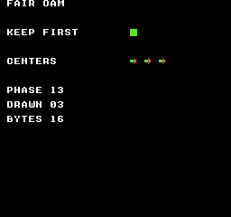
Comando de compilación
New-Item -ItemType Directory -Force .\out | Out-Null
.\kitaqfc\kitaqfc.exe .\kitaq-docs\samples\api-examples\fc\oam_fair.c -I .\kitaqfc\lib -I .\kitaq-docs\samples --nes-chr=.\kitaq-docs\samples\sprite_example.chr -o .\out\oam_fair.nes --no-cache --no-disasmImplementación y código fuente
kitaqfc/lib/oam_fair.h:24
Append active pool entries using the configured common tile/attributes. The emitter stops at byte cursor 252, leaving slot 63 unused to avoid cursor wrap. Hide unused trailing OAM entries separately before DMA.
kitaqfc/lib/oam_fair_impl.h:12
void OAM_FairDraw(void) {
__asm {
LDA oam_fair_phase
CLC
ADC #13
AND #63
STA oam_fair_phase
TAX
LDY oam_fair_used
LDA #0
STA oam_fair_drawn
STA oam_fair_scanned
// Visit each pool entry at most once, preserving already-written OAM entries
// and sharing the configured tile/attribute values across emitted sprites.
kq_fair_loop:
LDA oam_fair_active,X
BEQ kq_fair_next
LDA oam_fair_drawn
CMP oam_fair_limit
BCS kq_fair_done
// Reserve the final four-byte slot so advancing this byte cursor cannot wrap to zero.
CPY #252
BCS kq_fair_done
// Convert the 8x8 center to raw OAM coordinates; Y also needs the hardware minus-one bias.
LDA oam_fair_y,X
SEC
SBC #5
STA oam_fair_shadow,Y
LDA oam_fair_tile
STA oam_fair_shadow+1,Y
LDA oam_fair_attr
STA oam_fair_shadow+2,Y
LDA oam_fair_x,X
SEC
SBC #4
STA oam_fair_shadow+3,Y
INY
INY
INY
INY
INC oam_fair_drawn
// Advance cyclically and stop after returning to this frame's starting entry.
kq_fair_next:
TXA
CLC
ADC #1
AND #63
TAX
CPX oam_fair_phase
BNE kq_fair_loop
// Publish the updated byte cursor for later OAM writers and the VBlank DMA path.
kq_fair_done:
STY oam_fair_used
}
}pad.h — Entrada de mandos NES
pad.h y pad.c guardan el estado del mando 1 en orden NES. La lectura calcula las máscaras anterior, mantenida, de pulsación y de liberación, sin programar repeticiones. Enlaza también input_repeat.c para repetición configurable por botón. Para el mando 2, usa una función intrínseca del puerto 2 y conserva su estado anterior en el juego.
Formato NES directo: A=0x01, B=0x02, SELECT=0x04, START=0x08, UP=0x10, DOWN=0x20, LEFT=0x40, RIGHT=0x80. Un bit a 1 significa pulsado. Usa estos valores con nes_pad_* y los resultados directos de __pad_*; no los confundas con las máscaras comunes BTN_* de input.h.
Inicializa los cuatro bytes de estado nes_pad1_* a 0 antes de la primera lectura. Después, lee una vez por ciclo. pressed = current & ~previous y released = previous & ~current describen la última lectura. Actualiza la repetición por separado con nes_pad_repeat_step().
nes_pad_poll
Activa el strobe de $4016, lee los ocho bits serie D0 del mando 1 y actualiza nes_pad1_prev, nes_pad1_cur, nes_pad1_pressed y nes_pad1_released. Hace una sola lectura, sin el reintento por coincidencia de las funciones seguras. La lectura final de $4017 no guarda el estado del mando 2.
Sintaxis
void nes_pad_poll(void);Valor devuelto
Ninguno (void).
Condiciones y límites
Formato NES directo: A=0x01, B=0x02, SELECT=0x04, START=0x08, UP=0x10, DOWN=0x20, LEFT=0x40, RIGHT=0x80. Un bit a 1 significa pulsado. Usa estos valores con nes_pad_* y los resultados directos de __pad_*; no los confundas con las máscaras comunes BTN_* de input.h.
Inicializa los cuatro bytes de estado nes_pad1_* a 0 antes de la primera lectura. Después, lee una vez por ciclo. pressed = current & ~previous y released = previous & ~current describen la última lectura. Actualiza la repetición por separado con nes_pad_repeat_step().
Ejemplo de uso
nes_pad_poll(); // Read controller 1 and update its held/pressed/released snapshots.Este fragmento muestra la llamada. Antes de incorporarlo a un programa completo, cumple los requisitos de inicialización y de los búferes indicados.
Resultado esperado
Este programa enseña el orden sondeo → actualización de repetición → consulta y muestra que las funciones NES devuelven los bits seleccionados, no el valor booleano 1. Con nes_pad_repeat_config(3, 1), mantén B durante 40 actualizaciones y suéltalo. FIRST HELD, FIRST TRIGGER y FIRST REPEAT valen 2; HELD TICKS vale 40, PULSE COUNT vale 19 y RELEASE BITS vale 2. La primera repetición llega cuatro actualizaciones después del pulso inicial; las siguientes se separan por dos actualizaciones. FAILED CHECKS debe ser 0. Otra duración cambia el número de pulsos.
Comando de compilación
New-Item -ItemType Directory -Force .\out | Out-Null
.\kitaqfc\kitaqfc.exe .\kitaqfc\lib\pad.c .\kitaqfc\lib\input_repeat.c .\kitaq-docs\samples\api-examples\fc\pad_repeat.c -I .\kitaqfc\lib -I .\kitaq-docs\samples -o .\out\pad_repeat.nes --mapper=nrom --nes-chr=.\kitaq-docs\samples\font.chr --no-disasm --no-cacheImplementación y código fuente
kitaqfc/lib/pad.h:16
Latch controller input with a 1-to-0 strobe and shift eight controller-1 bits into held/pressed/released masks. This direct path does not perform repeated reads for DMC interference; the final JOY2 read does not populate player-2 state.
kitaqfc/lib/pad.c:21
void nes_pad_poll(void)
{
unsigned char state;
unsigned char mask;
unsigned char sample;
nes_pad1_prev = nes_pad1_cur;
JOY1 = 1;
JOY1 = 0;
state = 0;
mask = 1;
while (mask != 0)
{
sample = JOY1;
if ((sample & 1) != 0)
{
state = state | mask;
}
mask = mask + mask;
}
nes_pad1_cur = state;
nes_pad1_pressed = (unsigned char)(state & (unsigned char)(state ^ nes_pad1_prev));
nes_pad1_released = (unsigned char)(nes_pad1_prev & (unsigned char)(state ^ nes_pad1_prev));
sample = JOY2;
sample = sample;
}palette.h — Paletas NES
Gestiona los colores de fondo y sprites con una copia de respaldo de CPU de 32 bytes y transferencias inmediatas o encoladas. Las direcciones de paleta de la PPU incluyen alias.
nes_palette_apply_now
Copia 32 colores en la copia de respaldo y los transfiere directamente a la PPU.
Sintaxis
void nes_palette_apply_now(unsigned char* src32);Parámetros
src32Paleta legible de 32 bytes: 16 colores de fondo seguidos de 16 colores de sprites; usa códigos de color de 0 a 63.
Valor devuelto
No devuelve ningún valor. Esta entrada describe el estado afectado y cuándo surte efecto.
Condiciones y límites
La copia de respaldo reserva las direcciones de CPU 0x03C0–0x03DF. Las direcciones de PPU 0x3F10/14/18/1C son alias de 0x3F00/04/08/0C, así que los 32 bytes originales de la copia no tienen por qué coincidir con 32 valores independientes leídos de la PPU. Usa incremento de PPU de uno durante un intervalo seguro de VBlank o con el renderizado desactivado. La función auxiliar no espera, no enmascara interrupciones ni restaura el desplazamiento.
Ejemplo de uso
nes_palette_apply_now(colors);Este fragmento muestra la llamada. Antes de incorporarlo a un programa completo, cumple los requisitos de inicialización y de los búferes indicados.
Resultado esperado
Muestra rectángulos de fondo rojos, azules y verdes de 32×32 en (16,32), (80,32) y (144,32), y cuadrados de sprites de 8×8 en (16,96), (80,96) y (144,96) en el mismo orden de colores. Las paletas independientes de fondo y sprites muestran transferencias directas y encoladas.
Comando de compilación
New-Item -ItemType Directory -Force .\out | Out-Null
.\kitaqfc\kitaqfc.exe .\kitaqfc\lib\runtime.c .\kitaq-docs\samples\api-examples\fc\batch2_palette.c -I .\kitaqfc\lib -I .\kitaq-docs\samples -o .\out\batch2_palette.nes --no-cache --no-disasm --mapper=nrom --nes-chr=.\kitaq-docs\samples\api-examples\fc\vram_shapes.chrImplementación y código fuente
kitaqfc/lib/palette.h:11
Replace shadow palette data and upload all 32 bytes immediately. The caller provides a safe PPU access period; this helper does not wait for VBlank.
kitaqfc/lib/palette.c:28
void nes_palette_apply_now(unsigned char* src32)
{
nes_palette_copy(src32);
nes_ppu_stream_write(0x3F00, nes_palette_shadow, 32);
}nes_palette_apply_shadow_now
Transfiere directamente a la PPU los 32 colores actuales de la copia de respaldo.
Sintaxis
void nes_palette_apply_shadow_now(void);Valor devuelto
No devuelve ningún valor. Esta entrada describe el estado afectado y cuándo surte efecto.
Condiciones y límites
La copia de respaldo reserva las direcciones de CPU 0x03C0–0x03DF. Las direcciones de PPU 0x3F10/14/18/1C son alias de 0x3F00/04/08/0C, así que los 32 bytes originales de la copia no tienen por qué coincidir con 32 valores independientes leídos de la PPU. Usa incremento de PPU de uno durante un intervalo seguro de VBlank o con el renderizado desactivado. La función auxiliar no espera, no enmascara interrupciones ni restaura el desplazamiento.
Ejemplo de uso
nes_palette_apply_shadow_now();Este fragmento muestra la llamada. Antes de incorporarlo a un programa completo, cumple los requisitos de inicialización y de los búferes indicados.
Resultado esperado
Muestra rectángulos de fondo rojos, azules y verdes de 32×32 en (16,32), (80,32) y (144,32), y cuadrados de sprites de 8×8 en (16,96), (80,96) y (144,96) en el mismo orden de colores. Las paletas independientes de fondo y sprites muestran transferencias directas y encoladas.
Comando de compilación
New-Item -ItemType Directory -Force .\out | Out-Null
.\kitaqfc\kitaqfc.exe .\kitaqfc\lib\runtime.c .\kitaq-docs\samples\api-examples\fc\batch2_palette.c -I .\kitaqfc\lib -I .\kitaq-docs\samples -o .\out\batch2_palette.nes --no-cache --no-disasm --mapper=nrom --nes-chr=.\kitaq-docs\samples\api-examples\fc\vram_shapes.chrImplementación y código fuente
kitaqfc/lib/palette.h:13
Upload the current palette shadow directly, with timing controlled by the caller.
kitaqfc/lib/palette.c:35
void nes_palette_apply_shadow_now(void)
{
nes_ppu_stream_write(0x3F00, nes_palette_shadow, 32);
}nes_palette_copy
Copia 32 bytes de paleta en la copia de respaldo de la CPU sin transferirlos a la PPU.
Sintaxis
void nes_palette_copy(unsigned char* src32);Parámetros
src32Paleta legible de 32 bytes: 16 colores de fondo seguidos de 16 colores de sprites; usa códigos de color de 0 a 63.
Valor devuelto
No devuelve ningún valor. Esta entrada describe el estado afectado y cuándo surte efecto.
Condiciones y límites
La copia de respaldo reserva las direcciones de CPU 0x03C0–0x03DF. Las direcciones de PPU 0x3F10/14/18/1C son alias de 0x3F00/04/08/0C, así que los 32 bytes originales de la copia no tienen por qué coincidir con 32 valores independientes leídos de la PPU.
Ejemplo de uso
nes_palette_copy(colors);result[0]=nes_palette_shadow[5];Este fragmento muestra la llamada. Antes de incorporarlo a un programa completo, cumple los requisitos de inicialización y de los búferes indicados.
Resultado esperado
Muestra rectángulos de fondo rojos, azules y verdes de 32×32 en (16,32), (80,32) y (144,32), y cuadrados de sprites de 8×8 en (16,96), (80,96) y (144,96) en el mismo orden de colores. Las paletas independientes de fondo y sprites muestran transferencias directas y encoladas.
Comando de compilación
New-Item -ItemType Directory -Force .\out | Out-Null
.\kitaqfc\kitaqfc.exe .\kitaqfc\lib\runtime.c .\kitaq-docs\samples\api-examples\fc\batch2_palette.c -I .\kitaqfc\lib -I .\kitaq-docs\samples -o .\out\batch2_palette.nes --no-cache --no-disasm --mapper=nrom --nes-chr=.\kitaq-docs\samples\api-examples\fc\vram_shapes.chrImplementación y código fuente
kitaqfc/lib/palette.h:8
Copy exactly 32 palette bytes to the fixed shadow buffer without writing the PPU.
kitaqfc/lib/palette.c:19
void nes_palette_copy(unsigned char* src32)
{
__memcpy(nes_palette_shadow, src32, 32);
}nes_palette_queue_all
Sustituye los 32 colores de la copia de respaldo y los copia a la cola de VRAM del runtime.
Sintaxis
unsigned char nes_palette_queue_all(unsigned char* src32);Parámetros
src32Paleta legible de 32 bytes: 16 colores de fondo seguidos de 16 colores de sprites; usa códigos de color de 0 a 63.
Valor devuelto
1 si se encola, 0 si falta capacidad. Los nuevos valores de la copia de respaldo se conservan incluso si falla. El éxito no significa que la PPU ya se haya actualizado.
Condiciones y límites
La copia de respaldo reserva las direcciones de CPU 0x03C0–0x03DF. Las direcciones de PPU 0x3F10/14/18/1C son alias de 0x3F00/04/08/0C, así que los 32 bytes originales de la copia no tienen por qué coincidir con 32 valores independientes leídos de la PPU. La cola copia los valores, por lo que la fuente puede cambiar tras encolarlos correctamente. Evita condiciones de carrera entre quien llena la cola y su consumidor en la NMI.
Ejemplo de uso
nes_vram_queue_clear();result[1]=nes_palette_queue_all(colors);result[2]=nes_vram_queue_used;nes_vram_queue_nmi_flush();Este fragmento muestra la llamada. Antes de incorporarlo a un programa completo, cumple los requisitos de inicialización y de los búferes indicados.
Resultado esperado
Muestra rectángulos de fondo rojos, azules y verdes de 32×32 en (16,32), (80,32) y (144,32), y cuadrados de sprites de 8×8 en (16,96), (80,96) y (144,96) en el mismo orden de colores. Las paletas independientes de fondo y sprites muestran transferencias directas y encoladas.
Comando de compilación
New-Item -ItemType Directory -Force .\out | Out-Null
.\kitaqfc\kitaqfc.exe .\kitaqfc\lib\runtime.c .\kitaq-docs\samples\api-examples\fc\batch2_palette.c -I .\kitaqfc\lib -I .\kitaq-docs\samples -o .\out\batch2_palette.nes --no-cache --no-disasm --mapper=nrom --nes-chr=.\kitaq-docs\samples\api-examples\fc\vram_shapes.chrImplementación y código fuente
kitaqfc/lib/palette.h:18
Update the shadow and copy all colors into the runtime queue. A queue failure leaves the new shadow contents in place. Return one if the runtime queue accepted the copied payload, zero if it was full. Admission does not mean the NMI consumer has already updated the PPU.
kitaqfc/lib/palette.c:42
unsigned char nes_palette_queue_all(unsigned char* src32)
{
nes_palette_copy(src32);
return nes_vram_queue_try_write(0x3F00, nes_palette_shadow, 32);
}nes_palette_queue_bg4
Actualiza los cuatro colores de una paleta de fondo en la copia de respaldo y los copia a la cola de VRAM.
Sintaxis
unsigned char nes_palette_queue_bg4(unsigned char pal_index, unsigned char* src4);Parámetros
pal_indexÍndice de paleta de 0 a 3; la función no lo valida.
src4Cuatro bytes de la paleta seleccionada; usa códigos de color de 0 a 63.
Valor devuelto
1 si se encola, 0 si falta capacidad. Los nuevos valores de la copia de respaldo se conservan incluso si falla. El éxito no significa que la PPU ya se haya actualizado.
Condiciones y límites
La copia de respaldo reserva las direcciones de CPU 0x03C0–0x03DF. Las direcciones de PPU 0x3F10/14/18/1C son alias de 0x3F00/04/08/0C, así que los 32 bytes originales de la copia no tienen por qué coincidir con 32 valores independientes leídos de la PPU. La cola copia los valores, por lo que la fuente puede cambiar tras encolarlos correctamente. Evita condiciones de carrera entre quien llena la cola y su consumidor en la NMI.
Ejemplo de uso
result[3]=nes_palette_queue_bg4(3,four);nes_vram_queue_nmi_flush();Este fragmento muestra la llamada. Antes de incorporarlo a un programa completo, cumple los requisitos de inicialización y de los búferes indicados.
Resultado esperado
Muestra rectángulos de fondo rojos, azules y verdes de 32×32 en (16,32), (80,32) y (144,32), y cuadrados de sprites de 8×8 en (16,96), (80,96) y (144,96) en el mismo orden de colores. Las paletas independientes de fondo y sprites muestran transferencias directas y encoladas.
Comando de compilación
New-Item -ItemType Directory -Force .\out | Out-Null
.\kitaqfc\kitaqfc.exe .\kitaqfc\lib\runtime.c .\kitaq-docs\samples\api-examples\fc\batch2_palette.c -I .\kitaqfc\lib -I .\kitaq-docs\samples -o .\out\batch2_palette.nes --no-cache --no-disasm --mapper=nrom --nes-chr=.\kitaq-docs\samples\api-examples\fc\vram_shapes.chrImplementación y código fuente
kitaqfc/lib/palette.h:21
Update and queue four background palette bytes. pal_index must be 0..3; there is no range check before writing the shadow.
kitaqfc/lib/palette.c:50
unsigned char nes_palette_queue_bg4(unsigned char pal_index, unsigned char* src4)
{
unsigned char dst;
dst = pal_index + pal_index;
dst = dst + dst;
__memcpy(nes_palette_shadow + dst, src4, 4);
return nes_vram_queue_try_write((unsigned short)(0x3F00 + dst), nes_palette_shadow + dst, 4);
}nes_palette_queue_sprite4
Actualiza los cuatro colores de una paleta de sprites en la copia de respaldo y los copia a la cola de VRAM.
Sintaxis
unsigned char nes_palette_queue_sprite4(unsigned char pal_index, unsigned char* src4);Parámetros
pal_indexÍndice de paleta de 0 a 3; la función no lo valida.
src4Cuatro bytes de la paleta seleccionada; usa códigos de color de 0 a 63.
Valor devuelto
1 si se encola, 0 si falta capacidad. Los nuevos valores de la copia de respaldo se conservan incluso si falla. El éxito no significa que la PPU ya se haya actualizado.
Condiciones y límites
La copia de respaldo reserva las direcciones de CPU 0x03C0–0x03DF. Las direcciones de PPU 0x3F10/14/18/1C son alias de 0x3F00/04/08/0C, así que los 32 bytes originales de la copia no tienen por qué coincidir con 32 valores independientes leídos de la PPU. La cola copia los valores, por lo que la fuente puede cambiar tras encolarlos correctamente. Evita condiciones de carrera entre quien llena la cola y su consumidor en la NMI.
Ejemplo de uso
result[4]=nes_palette_queue_sprite4(2,four);nes_vram_queue_nmi_flush();Este fragmento muestra la llamada. Antes de incorporarlo a un programa completo, cumple los requisitos de inicialización y de los búferes indicados.
Resultado esperado
Muestra rectángulos de fondo rojos, azules y verdes de 32×32 en (16,32), (80,32) y (144,32), y cuadrados de sprites de 8×8 en (16,96), (80,96) y (144,96) en el mismo orden de colores. Las paletas independientes de fondo y sprites muestran transferencias directas y encoladas.
Comando de compilación
New-Item -ItemType Directory -Force .\out | Out-Null
.\kitaqfc\kitaqfc.exe .\kitaqfc\lib\runtime.c .\kitaq-docs\samples\api-examples\fc\batch2_palette.c -I .\kitaqfc\lib -I .\kitaq-docs\samples -o .\out\batch2_palette.nes --no-cache --no-disasm --mapper=nrom --nes-chr=.\kitaq-docs\samples\api-examples\fc\vram_shapes.chrImplementación y código fuente
kitaqfc/lib/palette.h:24
Update and queue four sprite palette bytes at the 0x3F10 region. The caller supplies pal_index 0..3; NES palette mirroring still applies.
kitaqfc/lib/palette.c:61
unsigned char nes_palette_queue_sprite4(unsigned char pal_index, unsigned char* src4)
{
unsigned char dst;
dst = pal_index + pal_index;
dst = dst + dst;
__memcpy(nes_palette_shadow + (unsigned char)(0x10 + dst), src4, 4);
return nes_vram_queue_try_write((unsigned short)(0x3F10 + dst), nes_palette_shadow + (unsigned char)(0x10 + dst), 4);
}Movimiento personalizado con tipos Q5.3
Además de las funciones world/body, physics2d.h define tipos y constantes para movimientos fraccionarios personalizados. Este ejemplo implementa game_step con la convención de datos Q5.3, mediante un enfoque distinto de la integración world/body.
KQ2DPosition almacena la posición en píxeles enteros (0..255), KQ2DFraction el resto (0..7), KQ2DSpeed la magnitud del desplazamiento por tick en octavos de píxel (0..255) y KQ2DDirection la dirección. Los cuatro tipos son u8. La dirección se almacena aparte de la velocidad, no como un signo.
Use KQ2D_SUBPIXEL_BITS=3, ONE=8 y MASK=7 para combinar position*8+fraction en un valor intermedio de 16 bits. La dirección NONE=0 indica ausencia de movimiento, NEGATIVE=1 una resta y POSITIVE=2 una suma. El juego debe gestionar los límites para que la resta no sea negativa y la posición entera resultante permanezca en 0..255.
KQ2D_DRAG_BRAKE=1, STUN=2, COAST=3 y THRUST=4 identifican comportamientos de frenado, aturdimiento, movimiento por inercia y empuje definidos por el juego. Asignar uno de esos valores no aplica aceleración ni resistencia. Defina cada efecto y su duración en la rutina de actualización.
Ejemplo: acumular desplazamientos de medio píxel
El cuadro rojo superior de 16×16 píxeles empieza en X=24; el inferior muestra X=32 después de 16 ticks. La velocidad 4 equivale a 4/8=0.5 píxeles por tick, es decir, ocho píxeles en 16 ticks. Las distintas posiciones Y separan ambos estados para compararlos. Una comprobación numérica posterior retrocede ocho ticks y obtiene X=28 con fracción 0.
void game_step() {
u16 total;
total=(u16)position*KQ2D_SUBPIXEL_ONE+fraction;
if(direction==KQ2D_DIR_POSITIVE) total=total+speed;
else if(direction==KQ2D_DIR_NEGATIVE) total=total-speed;
position=(KQ2DPosition)(total>>KQ2D_SUBPIXEL_BITS);
fraction=(KQ2DFraction)(total&KQ2D_SUBPIXEL_MASK);
}
// Initial state: position=24; fraction=0; speed=4;
// direction=KQ2D_DIR_POSITIVE; call game_step() 16 times.Compilación
New-Item -ItemType Directory -Force .\out | Out-Null
.\kitaqfc\kitaqfc.exe .\kitaq-docs\samples\api-examples\fc\physics_subpixel.c -I .\kitaqfc\lib -I .\kitaq-docs\samples -o .\out\physics_subpixel.nes --mapper=nrom --nes-chr=.\kitaq-docs\samples\api-examples\fc\vram_shapes.chr --no-cache --no-disasmphysics2d
Proporciona integración de cajas, contactos AABB y un solucionador opcional de respuesta a superficies. Los cuerpos usan centros y semiextensiones; active=0 excluye una posición del array e inv_mass_q8<=0 la hace estática. KQRect usa la esquina superior izquierda y ancho/alto. Los contactos entre cajas no usan el campo restitution del cuerpo; las respuestas a superficies usan los coeficientes de KQSurface2D.
Usa unidades enteras coherentes para posiciones, radios, semiextensiones, velocidades y gravedad. Cada paso equivale a un tick de simulación. Los ejemplos usan una unidad por píxel. Estas rutinas no convierten automáticamente las posiciones a Q8.8 ni las dibujan.
El mundo utiliza un array prestado. El código que llama reserva y posee la memoria de los cuerpos y debe mantenerla válida. Inicializar el mundo no inicializa los elementos del array.
Además de incluir las cabeceras, compila los archivos de implementación. Para 2D usa fixed.c y physics2d.c; para 3D añade physics3d.c. Los ejemplos usan MMC3, CHR RAM y almacenamiento de dibujo en PRG RAM $6800–$6FFF. Ese búfer de dibujo no es un requisito de la biblioteca de física en sí.
kq2d_world_init
Asocia un array a un mundo 2D y establece gravedad (0,32), cuatro iteraciones de contacto y un límite de velocidad por eje de 512.
Sintaxis
void kq2d_world_init(KQWorld2D* world, KQBody2D* bodies, u8 body_count);Parámetros
worldPuntero al mundo que contiene el array de cuerpos y los ajustes de simulación.
bodiesInicio de un array de cuerpos propiedad del código que llama, con body_count elementos.
body_countNúmero de posiciones del array, de 0 a 255, incluidas las entradas inactivas.
Valor devuelto
Sin valor de retorno. Esta entrada describe qué campos se actualizan y cuándo surten efecto los cambios.
Condiciones y límites
Usa unidades enteras coherentes para posiciones, radios, semiextensiones, velocidades y gravedad. Cada paso equivale a un tick de simulación. Los ejemplos usan una unidad por píxel. Estas rutinas no convierten automáticamente las posiciones a Q8.8 ni las dibujan.
El mundo utiliza un array prestado. El código que llama reserva y posee la memoria de los cuerpos y debe mantenerla válida. Inicializar el mundo no inicializa los elementos del array.
Además de incluir las cabeceras, compila los archivos de implementación. Para 2D usa fixed.c y physics2d.c; para 3D añade physics3d.c. Los ejemplos usan MMC3, CHR RAM y almacenamiento de dibujo en PRG RAM $6800–$6FFF. Ese búfer de dibujo no es un requisito de la biblioteca de física en sí.
Ejemplo de uso
kq2d_world_init(&world,bodies,2);
result[0]=world.gravity_y; result[1]=world.solver_iterations; result[2]=world.max_speed;Este fragmento muestra la llamada. Antes de incorporarlo a un programa completo, cumple los requisitos de inicialización y de los búferes indicados.
Resultado esperado
La izquierda muestra el estado inicial y la derecha, un tick después. Un cuadro rojo de 16×16 con centro (24,24) y velocidad (4,16) llega a (28,36), con velocidad Y cero sobre el suelo azul. Los orígenes de los paneles están en (8,48) y (88,48) de la pantalla. Las comprobaciones RAM también cubren inicialización, funciones de ajuste, integración, consultas de rectángulos y puntos y escalado con signo.
Comando de compilación
New-Item -ItemType Directory -Force .\out | Out-Null
.\kitaqfc\kitaqfc.exe .\kitaq-docs\samples\api-examples\fc\physics_body2d.c -I .\kitaqfc\lib -I .\kitaq-docs\samples --mapper=mmc3 --nes-chr-ram -o .\out\physics_body2d.nes --no-cache --no-disasmImplementación y código fuente
kitaqfc/lib/physics2d.h:36
Retain the caller-owned body array without initializing its elements. Set gravity to (0,32), four contact iterations and a per-axis speed limit of 512. A null world is ignored; the array must outlive subsequent world operations.
kitaqfc/lib/physics2d.c:351
void kq2d_world_init(KQWorld2D* world, KQBody2D* bodies, u8 body_count)
{
if (world == 0) return;
world->bodies = bodies;
world->body_count = body_count;
world->gravity_x = 0;
world->gravity_y = 32;
world->solver_iterations = 4;
world->max_speed = 512;
}kq2d_step
Integra los cuerpos dinámicos activos y después resuelve los contactos entre las entradas activas del array.
Sintaxis
void kq2d_step(KQWorld2D* world);Parámetros
worldPuntero al mundo que contiene el array de cuerpos y los ajustes de simulación.
Valor devuelto
Sin valor de retorno. Esta entrada describe qué campos se actualizan y cuándo surten efecto los cambios.
Condiciones y límites
Usa unidades enteras coherentes para posiciones, radios, semiextensiones, velocidades y gravedad. Cada paso equivale a un tick de simulación. Los ejemplos usan una unidad por píxel. Estas rutinas no convierten automáticamente las posiciones a Q8.8 ni las dibujan.
El mundo utiliza un array prestado. El código que llama reserva y posee la memoria de los cuerpos y debe mantenerla válida. Inicializar el mundo no inicializa los elementos del array.
Mantén las sumas, diferencias, sumas de semiextensiones y productos de corrección de contactos dentro del rango de 16 bits con signo. Los límites de velocidad se aplican después de sumar y no pueden evitar un desbordamiento durante esa suma.
Los contactos se resuelven por el eje de menor penetración, eligiendo Y en caso de empate. La corrección de posición usa las masas inversas, pero dos cuerpos dinámicos reciben la media simple de sus velocidades en ese eje; chocar con un cuerpo estático anula esa componente. Este solucionador no usa restitution_q8. La detección es discreta y puede pasar por alto cruces rápidos.
Las rutinas de integración y colisión de cajas comparten memoria temporal. No vuelvas a entrar en estas rutinas de física desde una interrupción.
Ignora un mundo o array NULL. Aunque solver_iterations valga cero, realiza una pasada de contactos.
Además de incluir las cabeceras, compila los archivos de implementación. Para 2D usa fixed.c y physics2d.c; para 3D añade physics3d.c. Los ejemplos usan MMC3, CHR RAM y almacenamiento de dibujo en PRG RAM $6800–$6FFF. Ese búfer de dibujo no es un requisito de la biblioteca de física en sí.
Ejemplo de uso
kq2d_step(&world);
result[22]=bodies[0].x; result[23]=bodies[0].y;
result[24]=bodies[0].vx; result[25]=bodies[0].vy;Este fragmento muestra la llamada. Antes de incorporarlo a un programa completo, cumple los requisitos de inicialización y de los búferes indicados.
Resultado esperado
La izquierda muestra el estado inicial y la derecha, un tick después. Un cuadro rojo de 16×16 con centro (24,24) y velocidad (4,16) llega a (28,36), con velocidad Y cero sobre el suelo azul. Los orígenes de los paneles están en (8,48) y (88,48) de la pantalla. Las comprobaciones RAM también cubren inicialización, funciones de ajuste, integración, consultas de rectángulos y puntos y escalado con signo.
Comando de compilación
New-Item -ItemType Directory -Force .\out | Out-Null
.\kitaqfc\kitaqfc.exe .\kitaq-docs\samples\api-examples\fc\physics_body2d.c -I .\kitaqfc\lib -I .\kitaq-docs\samples --mapper=mmc3 --nes-chr-ram -o .\out\physics_body2d.nes --no-cache --no-disasmImplementación y código fuente
kitaqfc/lib/physics2d.h:41
Advance active dynamic bodies, then visit each active unordered pair for the configured contact passes (zero means one). Static bodies still participate as obstacles. The world borrows its array and uses non-reentrant helper scratch. This is discrete integration; fast bodies can pass through thin obstacles.
kitaqfc/lib/physics2d.c:581
void kq2d_step(KQWorld2D* world)
{
if (world == 0) return;
if (world->bodies == 0) return;
KQBody2D* bodies = world->bodies;
u8 count = world->body_count;
// Integrate dynamic bodies.
u8 i;
for (i = 0; i < count; i++)
{
KQBody2D* b = &bodies[(u8)i];
if (b->active == 0) continue;
if (b->inv_mass_q8 <= 0) continue;
kq2d_asm_value = b->vx;
kq2d_asm_operand = world->gravity_x;
kq2d__add_value();
kq2d_asm_limit = world->max_speed;
kq2d__clamp_value();
b->vx = kq2d_asm_value;
kq2d_asm_value = b->vy;
kq2d_asm_operand = world->gravity_y;
kq2d__add_value();
kq2d_asm_limit = world->max_speed;
kq2d__clamp_value();
b->vy = kq2d_asm_value;
kq2d_asm_value = b->x;
kq2d_asm_operand = b->vx;
kq2d__add_value();
b->x = kq2d_asm_value;
kq2d_asm_value = b->y;
kq2d_asm_operand = b->vy;
kq2d__add_value();
b->y = kq2d_asm_value;
}
// Solve contacts with a small fixed iteration count.
u8 iterations = world->solver_iterations;
if (iterations == 0) iterations = 1;
u8 it;
for (it = 0; it < iterations; it++)
{
for (i = 0; i < count; i++)
{
KQBody2D* a = &bodies[(u8)i];
if (a->active == 0) continue;
u8 j;
for (j = (u8)(i + 1); j < count; j++)
{
KQBody2D* b = &bodies[(u8)j];
if (b->active == 0) continue;
kq2d__resolve_pair(a, b);
}
}
}
}kq2d_integrate_body
Aplica la gravedad del mundo y los límites de velocidad por eje a un cuerpo dinámico; después suma su velocidad a la posición.
Sintaxis
void kq2d_integrate_body(KQWorld2D* world, KQBody2D* body);Parámetros
worldPuntero al mundo que contiene el array de cuerpos y los ajustes de simulación.
bodyPuntero al cuerpo que se va a modificar. Los campos que no usa esta operación se conservan.
Valor devuelto
Sin valor de retorno. Esta entrada describe qué campos se actualizan y cuándo surten efecto los cambios.
Condiciones y límites
Usa unidades enteras coherentes para posiciones, radios, semiextensiones, velocidades y gravedad. Cada paso equivale a un tick de simulación. Los ejemplos usan una unidad por píxel. Estas rutinas no convierten automáticamente las posiciones a Q8.8 ni las dibujan.
Mantén las sumas, diferencias, sumas de semiextensiones y productos de corrección de contactos dentro del rango de 16 bits con signo. Los límites de velocidad se aplican después de sumar y no pueden evitar un desbordamiento durante esa suma.
Las rutinas de integración y colisión de cajas comparten memoria temporal. No vuelvas a entrar en estas rutinas de física desde una interrupción.
Ignora NULL, los cuerpos inactivos y los de masa inversa no positiva. Proporciona un límite de velocidad no negativo.
Esta llamada no resuelve contactos con otros cuerpos. También ignora un mundo NULL.
Además de incluir las cabeceras, compila los archivos de implementación. Para 2D usa fixed.c y physics2d.c; para 3D añade physics3d.c. Los ejemplos usan MMC3, CHR RAM y almacenamiento de dibujo en PRG RAM $6800–$6FFF. Ese búfer de dibujo no es un requisito de la biblioteca de física en sí.
Ejemplo de uso
kq2d_integrate_body(&world,&temp);
result[18]=temp.x; result[19]=temp.y;Este fragmento muestra la llamada. Antes de incorporarlo a un programa completo, cumple los requisitos de inicialización y de los búferes indicados.
Resultado esperado
La izquierda muestra el estado inicial y la derecha, un tick después. Un cuadro rojo de 16×16 con centro (24,24) y velocidad (4,16) llega a (28,36), con velocidad Y cero sobre el suelo azul. Los orígenes de los paneles están en (8,48) y (88,48) de la pantalla. Las comprobaciones RAM también cubren inicialización, funciones de ajuste, integración, consultas de rectángulos y puntos y escalado con signo.
Comando de compilación
New-Item -ItemType Directory -Force .\out | Out-Null
.\kitaqfc\kitaqfc.exe .\kitaq-docs\samples\api-examples\fc\physics_body2d.c -I .\kitaqfc\lib -I .\kitaq-docs\samples --mapper=mmc3 --nes-chr-ram -o .\out\physics_body2d.nes --no-cache --no-disasmImplementación y código fuente
kitaqfc/lib/physics2d.h:45
For one active dynamic body, add gravity, clamp each velocity axis and then add velocity to position. Null inputs are ignored; no contacts are solved. Use a nonnegative speed limit and keep additions in signed 16-bit range.
kitaqfc/lib/physics2d.c:451
void kq2d_integrate_body(KQWorld2D* world, KQBody2D* body)
{
if (world == 0) return;
if (body == 0) return;
if (body->active == 0) return;
if (body->inv_mass_q8 <= 0) return;
kq2d_asm_value = body->vx;
kq2d_asm_operand = world->gravity_x;
kq2d__add_value();
kq2d_asm_limit = world->max_speed;
kq2d__clamp_value();
body->vx = kq2d_asm_value;
kq2d_asm_value = body->vy;
kq2d_asm_operand = world->gravity_y;
kq2d__add_value();
kq2d_asm_limit = world->max_speed;
kq2d__clamp_value();
body->vy = kq2d_asm_value;
kq2d_asm_value = body->x;
kq2d_asm_operand = body->vx;
kq2d__add_value();
body->x = kq2d_asm_value;
kq2d_asm_value = body->y;
kq2d_asm_operand = body->vy;
kq2d__add_value();
body->y = kq2d_asm_value;
}kq2d_overlap_aabb
Comprueba el solapamiento estricto de dos cajas definidas por su centro en los ejes X e Y.
Sintaxis
u8 kq2d_overlap_aabb(const KQBody2D* a, const KQBody2D* b);Parámetros
aPuntero válido a un cuerpo. La consulta ignora la actividad, la masa y las banderas.
bPuntero válido a un cuerpo. La consulta ignora la actividad, la masa y las banderas.
Valor devuelto
Devuelve 1 si los interiores se solapan y 0 si las formas solo se tocan o están separadas.
Condiciones y límites
Usa unidades enteras coherentes para posiciones, radios, semiextensiones, velocidades y gravedad. Cada paso equivale a un tick de simulación. Los ejemplos usan una unidad por píxel. Estas rutinas no convierten automáticamente las posiciones a Q8.8 ni las dibujan.
Mantén las sumas, diferencias, sumas de semiextensiones y productos de corrección de contactos dentro del rango de 16 bits con signo. Los límites de velocidad se aplican después de sumar y no pueden evitar un desbordamiento durante esa suma.
Además de incluir las cabeceras, compila los archivos de implementación. Para 2D usa fixed.c y physics2d.c; para 3D añade physics3d.c. Los ejemplos usan MMC3, CHR RAM y almacenamiento de dibujo en PRG RAM $6800–$6FFF. Ese búfer de dibujo no es un requisito de la biblioteca de física en sí.
Ejemplo de uso
result[20]=kq2d_overlap_aabb(&bodies[0],&bodies[1]);
bodies[1].x=40; result[21]=kq2d_overlap_aabb(&bodies[0],&bodies[1]);Este fragmento muestra la llamada. Antes de incorporarlo a un programa completo, cumple los requisitos de inicialización y de los búferes indicados.
Resultado esperado
La izquierda muestra el estado inicial y la derecha, un tick después. Un cuadro rojo de 16×16 con centro (24,24) y velocidad (4,16) llega a (28,36), con velocidad Y cero sobre el suelo azul. Los orígenes de los paneles están en (8,48) y (88,48) de la pantalla. Las comprobaciones RAM también cubren inicialización, funciones de ajuste, integración, consultas de rectángulos y puntos y escalado con signo.
Comando de compilación
New-Item -ItemType Directory -Force .\out | Out-Null
.\kitaqfc\kitaqfc.exe .\kitaq-docs\samples\api-examples\fc\physics_body2d.c -I .\kitaqfc\lib -I .\kitaq-docs\samples --mapper=mmc3 --nes-chr-ram -o .\out\physics_body2d.nes --no-cache --no-disasmImplementación y código fuente
kitaqfc/lib/physics2d.h:49
Test strict overlap of two centered boxes; touching edges return false. Both pointers must be valid. Active/mass flags are ignored, and coordinate differences and extent sums must fit the signed 16-bit calculations.
kitaqfc/lib/physics2d.c:366
u8 kq2d_overlap_aabb(const KQBody2D* a, const KQBody2D* b)
{
s16 dx = (s16)(b->x - a->x);
s16 dy = (s16)(b->y - a->y);
s16 adx = kq2d__abs_s16(dx);
s16 ady = kq2d__abs_s16(dy);
s16 sx = (s16)(a->half_x + b->half_x);
s16 sy = (s16)(a->half_y + b->half_y);
if (adx >= sx) return 0;
if (ady >= sy) return 0;
return 1;
}kq2d_body_init
Inicializa una caja definida por su centro con las semiextensiones indicadas, velocidad cero, masa inversa 256 y estado activo.
Sintaxis
void kq2d_body_init(KQBody2D* body, s16 x, s16 y, s16 half_x, s16 half_y);Parámetros
bodyPuntero al cuerpo que se va a modificar. Los campos que no usa esta operación se conservan.
xCoordenada X del centro o del punto, en píxeles en el ejemplo.
yCoordenada Y del centro o del punto; en el ejemplo, el sentido positivo es hacia abajo.
half_xSemiextensión en X; el ancho total de la caja es el doble de este valor.
half_ySemiextensión en Y; la altura total de la caja es el doble de este valor.
Valor devuelto
Sin valor de retorno. Esta entrada describe qué campos se actualizan y cuándo surten efecto los cambios.
Condiciones y límites
Usa unidades enteras coherentes para posiciones, radios, semiextensiones, velocidades y gravedad. Cada paso equivale a un tick de simulación. Los ejemplos usan una unidad por píxel. Estas rutinas no convierten automáticamente las posiciones a Q8.8 ni las dibujan.
Establece restitution_q8 en cero. Ignora un cuerpo NULL. Proporciona semiextensiones positivas.
Además de incluir las cabeceras, compila los archivos de implementación. Para 2D usa fixed.c y physics2d.c; para 3D añade physics3d.c. Los ejemplos usan MMC3, CHR RAM y almacenamiento de dibujo en PRG RAM $6800–$6FFF. Ese búfer de dibujo no es un requisito de la biblioteca de física en sí.
Ejemplo de uso
kq2d_body_init(&temp,10,20,8,8);
result[3]=temp.inv_mass_q8; result[4]=temp.active;Este fragmento muestra la llamada. Antes de incorporarlo a un programa completo, cumple los requisitos de inicialización y de los búferes indicados.
Resultado esperado
La izquierda muestra el estado inicial y la derecha, un tick después. Un cuadro rojo de 16×16 con centro (24,24) y velocidad (4,16) llega a (28,36), con velocidad Y cero sobre el suelo azul. Los orígenes de los paneles están en (8,48) y (88,48) de la pantalla. Las comprobaciones RAM también cubren inicialización, funciones de ajuste, integración, consultas de rectángulos y puntos y escalado con signo.
Comando de compilación
New-Item -ItemType Directory -Force .\out | Out-Null
.\kitaqfc\kitaqfc.exe .\kitaq-docs\samples\api-examples\fc\physics_body2d.c -I .\kitaqfc\lib -I .\kitaq-docs\samples --mapper=mmc3 --nes-chr-ram -o .\out\physics_body2d.nes --no-cache --no-disasmImplementación y código fuente
kitaqfc/lib/physics2d.h:52
Initialize an active unit-inverse-mass body at the supplied center and half extents, with zero velocity and reserved restitution set to zero. Null is ignored.
kitaqfc/lib/physics2d.c:384
void kq2d_body_init(KQBody2D* body, s16 x, s16 y, s16 half_x, s16 half_y)
{
if (body == 0) return;
body->x = x;
body->y = y;
body->vx = 0;
body->vy = 0;
body->half_x = half_x;
body->half_y = half_y;
body->inv_mass_q8 = 256;
body->restitution_q8 = 0;
body->active = 1;
}kq2d_body_set_pos
Sustituye solo el centro del cuerpo y conserva la velocidad, las dimensiones y el estado de actividad.
Sintaxis
void kq2d_body_set_pos(KQBody2D* body, s16 x, s16 y);Parámetros
bodyPuntero al cuerpo que se va a modificar. Los campos que no usa esta operación se conservan.
xCoordenada X del centro o del punto, en píxeles en el ejemplo.
yCoordenada Y del centro o del punto; en el ejemplo, el sentido positivo es hacia abajo.
Valor devuelto
Sin valor de retorno. Esta entrada describe qué campos se actualizan y cuándo surten efecto los cambios.
Condiciones y límites
Usa unidades enteras coherentes para posiciones, radios, semiextensiones, velocidades y gravedad. Cada paso equivale a un tick de simulación. Los ejemplos usan una unidad por píxel. Estas rutinas no convierten automáticamente las posiciones a Q8.8 ni las dibujan.
Ignora NULL. Si el puntero es válido, también modifica los cuerpos inactivos y estáticos.
Además de incluir las cabeceras, compila los archivos de implementación. Para 2D usa fixed.c y physics2d.c; para 3D añade physics3d.c. Los ejemplos usan MMC3, CHR RAM y almacenamiento de dibujo en PRG RAM $6800–$6FFF. Ese búfer de dibujo no es un requisito de la biblioteca de física en sí.
Ejemplo de uso
kq2d_body_set_pos(&temp,-12,20);
result[5]=temp.x; result[6]=temp.y;Este fragmento muestra la llamada. Antes de incorporarlo a un programa completo, cumple los requisitos de inicialización y de los búferes indicados.
Resultado esperado
La izquierda muestra el estado inicial y la derecha, un tick después. Un cuadro rojo de 16×16 con centro (24,24) y velocidad (4,16) llega a (28,36), con velocidad Y cero sobre el suelo azul. Los orígenes de los paneles están en (8,48) y (88,48) de la pantalla. Las comprobaciones RAM también cubren inicialización, funciones de ajuste, integración, consultas de rectángulos y puntos y escalado con signo.
Comando de compilación
New-Item -ItemType Directory -Force .\out | Out-Null
.\kitaqfc\kitaqfc.exe .\kitaq-docs\samples\api-examples\fc\physics_body2d.c -I .\kitaqfc\lib -I .\kitaq-docs\samples --mapper=mmc3 --nes-chr-ram -o .\out\physics_body2d.nes --no-cache --no-disasmImplementación y código fuente
kitaqfc/lib/physics2d.h:54
Replace the center without altering velocity, extents or activity. Null is ignored.
kitaqfc/lib/physics2d.c:399
void kq2d_body_set_pos(KQBody2D* body, s16 x, s16 y)
{
if (body == 0) return;
body->x = x;
body->y = y;
}kq2d_body_set_velocity
Establece directamente la velocidad sin limitarla ni actualizar la posición.
Sintaxis
void kq2d_body_set_velocity(KQBody2D* body, s16 vx, s16 vy);Parámetros
bodyPuntero al cuerpo que se va a modificar. Los campos que no usa esta operación se conservan.
vxDesplazamiento en X por tick de simulación, en las mismas unidades que la posición.
vyDesplazamiento en Y por tick de simulación, en las mismas unidades que la posición.
Valor devuelto
Sin valor de retorno. Esta entrada describe qué campos se actualizan y cuándo surten efecto los cambios.
Condiciones y límites
Usa unidades enteras coherentes para posiciones, radios, semiextensiones, velocidades y gravedad. Cada paso equivale a un tick de simulación. Los ejemplos usan una unidad por píxel. Estas rutinas no convierten automáticamente las posiciones a Q8.8 ni las dibujan.
Ignora NULL. Si el puntero es válido, también modifica los cuerpos inactivos y estáticos.
Además de incluir las cabeceras, compila los archivos de implementación. Para 2D usa fixed.c y physics2d.c; para 3D añade physics3d.c. Los ejemplos usan MMC3, CHR RAM y almacenamiento de dibujo en PRG RAM $6800–$6FFF. Ese búfer de dibujo no es un requisito de la biblioteca de física en sí.
Ejemplo de uso
kq2d_body_set_velocity(&temp,40,-30);
result[7]=temp.vx; result[8]=temp.vy;Este fragmento muestra la llamada. Antes de incorporarlo a un programa completo, cumple los requisitos de inicialización y de los búferes indicados.
Resultado esperado
La izquierda muestra el estado inicial y la derecha, un tick después. Un cuadro rojo de 16×16 con centro (24,24) y velocidad (4,16) llega a (28,36), con velocidad Y cero sobre el suelo azul. Los orígenes de los paneles están en (8,48) y (88,48) de la pantalla. Las comprobaciones RAM también cubren inicialización, funciones de ajuste, integración, consultas de rectángulos y puntos y escalado con signo.
Comando de compilación
New-Item -ItemType Directory -Force .\out | Out-Null
.\kitaqfc\kitaqfc.exe .\kitaq-docs\samples\api-examples\fc\physics_body2d.c -I .\kitaqfc\lib -I .\kitaq-docs\samples --mapper=mmc3 --nes-chr-ram -o .\out\physics_body2d.nes --no-cache --no-disasmImplementación y código fuente
kitaqfc/lib/physics2d.h:56
Replace velocity without clamping or checking activity/mass. Null is ignored.
kitaqfc/lib/physics2d.c:407
void kq2d_body_set_velocity(KQBody2D* body, s16 vx, s16 vy)
{
if (body == 0) return;
body->vx = vx;
body->vy = vy;
}kq2d_body_apply_gravity
Añade gravedad a un cuerpo dinámico activo y limita cada eje a +/-max_speed sin actualizar la posición.
Sintaxis
void kq2d_body_apply_gravity(KQBody2D* body, s16 gravity_x, s16 gravity_y, s16 max_speed);Parámetros
bodyPuntero al cuerpo que se va a modificar. Los campos que no usa esta operación se conservan.
gravity_xAceleración que esta llamada suma a la velocidad X.
gravity_yAceleración que esta llamada suma a la velocidad Y.
max_speedLímite de velocidad. La entrada indica si se aplica a cada eje o al vector conjunto.
Valor devuelto
Sin valor de retorno. Esta entrada describe qué campos se actualizan y cuándo surten efecto los cambios.
Condiciones y límites
Usa unidades enteras coherentes para posiciones, radios, semiextensiones, velocidades y gravedad. Cada paso equivale a un tick de simulación. Los ejemplos usan una unidad por píxel. Estas rutinas no convierten automáticamente las posiciones a Q8.8 ni las dibujan.
Mantén las sumas, diferencias, sumas de semiextensiones y productos de corrección de contactos dentro del rango de 16 bits con signo. Los límites de velocidad se aplican después de sumar y no pueden evitar un desbordamiento durante esa suma.
Las rutinas de integración y colisión de cajas comparten memoria temporal. No vuelvas a entrar en estas rutinas de física desde una interrupción.
Ignora NULL, los cuerpos inactivos y los de masa inversa no positiva. Proporciona un límite de velocidad no negativo.
Además de incluir las cabeceras, compila los archivos de implementación. Para 2D usa fixed.c y physics2d.c; para 3D añade physics3d.c. Los ejemplos usan MMC3, CHR RAM y almacenamiento de dibujo en PRG RAM $6800–$6FFF. Ese búfer de dibujo no es un requisito de la biblioteca de física en sí.
Ejemplo de uso
kq2d_body_apply_gravity(&temp,5,-10,32);
result[9]=temp.vx; result[10]=temp.vy;Este fragmento muestra la llamada. Antes de incorporarlo a un programa completo, cumple los requisitos de inicialización y de los búferes indicados.
Resultado esperado
La izquierda muestra el estado inicial y la derecha, un tick después. Un cuadro rojo de 16×16 con centro (24,24) y velocidad (4,16) llega a (28,36), con velocidad Y cero sobre el suelo azul. Los orígenes de los paneles están en (8,48) y (88,48) de la pantalla. Las comprobaciones RAM también cubren inicialización, funciones de ajuste, integración, consultas de rectángulos y puntos y escalado con signo.
Comando de compilación
New-Item -ItemType Directory -Force .\out | Out-Null
.\kitaqfc\kitaqfc.exe .\kitaq-docs\samples\api-examples\fc\physics_body2d.c -I .\kitaqfc\lib -I .\kitaq-docs\samples --mapper=mmc3 --nes-chr-ram -o .\out\physics_body2d.nes --no-cache --no-disasmImplementación y código fuente
kitaqfc/lib/physics2d.h:60
Add gravity and clamp each velocity axis separately for an active dynamic body. Null, inactive and static bodies are ignored. Supply a nonnegative limit and avoid overflow in the additions before clamping; position is unchanged.
kitaqfc/lib/physics2d.c:417
void kq2d_body_apply_gravity(KQBody2D* body, s16 gravity_x, s16 gravity_y, s16 max_speed)
{
if (body == 0) return;
if (body->active == 0) return;
if (body->inv_mass_q8 <= 0) return;
kq2d_asm_value = body->vx;
kq2d_asm_operand = gravity_x;
kq2d__add_value();
kq2d_asm_limit = max_speed;
kq2d__clamp_value();
body->vx = kq2d_asm_value;
kq2d_asm_value = body->vy;
kq2d_asm_operand = gravity_y;
kq2d__add_value();
kq2d_asm_limit = max_speed;
kq2d__clamp_value();
body->vy = kq2d_asm_value;
}kq2d_body_apply_friction
Escala ambas componentes de velocidad por un coeficiente de un byte con signo dividido entre 256, sin comprobar la posición ni la actividad.
Sintaxis
void kq2d_body_apply_friction(KQBody2D* body, u8 friction_q8);Parámetros
bodyPuntero al cuerpo que se va a modificar. Los campos que no usa esta operación se conservan.
friction_q8Multiplicador de velocidad que utiliza esta función. Se convierte a s8, por lo que los valores 128..255 se vuelven coeficientes negativos.
Valor devuelto
Sin valor de retorno. Esta entrada describe qué campos se actualizan y cuándo surten efecto los cambios.
Condiciones y límites
Los valores 0..127 dan multiplicadores de 0 a 127/256. Los valores 128..255 se vuelven negativos al convertirlos a s8 e invierten la velocidad. Para aplicar amortiguamiento no negativo en todo el rango 0..255, usa kq2d_scale_q8 en cada componente. Los productos se truncan hacia cero. Ignora NULL.
Además de incluir las cabeceras, compila los archivos de implementación. Para 2D usa fixed.c y physics2d.c; para 3D añade physics3d.c. Los ejemplos usan MMC3, CHR RAM y almacenamiento de dibujo en PRG RAM $6800–$6FFF. Ese búfer de dibujo no es un requisito de la biblioteca de física en sí.
Ejemplo de uso
kq2d_body_apply_friction(&temp,64);
result[11]=temp.vx; result[12]=temp.vy;Este fragmento muestra la llamada. Antes de incorporarlo a un programa completo, cumple los requisitos de inicialización y de los búferes indicados.
Resultado esperado
La izquierda muestra el estado inicial y la derecha, un tick después. Un cuadro rojo de 16×16 con centro (24,24) y velocidad (4,16) llega a (28,36), con velocidad Y cero sobre el suelo azul. Los orígenes de los paneles están en (8,48) y (88,48) de la pantalla. Las comprobaciones RAM también cubren inicialización, funciones de ajuste, integración, consultas de rectángulos y puntos y escalado con signo.
Comando de compilación
New-Item -ItemType Directory -Force .\out | Out-Null
.\kitaqfc\kitaqfc.exe .\kitaq-docs\samples\api-examples\fc\physics_body2d.c -I .\kitaqfc\lib -I .\kitaq-docs\samples --mapper=mmc3 --nes-chr-ram -o .\out\physics_body2d.nes --no-cache --no-disasmImplementación y código fuente
kitaqfc/lib/physics2d.h:64
Scale both velocities by a signed eight-bit coefficient divided by 256. Despite the unsigned parameter, values 128..255 become negative coefficients; this is not a full-range unsigned Q8 damping helper. Null is ignored.
kitaqfc/lib/physics2d.c:441
void kq2d_body_apply_friction(KQBody2D* body, u8 friction_q8)
{
if (body == 0) return;
body->vx = kq2d_scale_q8(body->vx, (s16)(s8)friction_q8);
body->vy = kq2d_scale_q8(body->vy, (s16)(s8)friction_q8);
}kq2d_rect_intersect
Comprueba el solapamiento interior de dos rectángulos representados por la esquina superior izquierda y el tamaño.
Sintaxis
u8 kq2d_rect_intersect(KQRect a, KQRect b);Parámetros
aValor KQRect con coordenadas de la esquina superior izquierda y ancho y alto positivos.
bValor KQRect con coordenadas de la esquina superior izquierda y ancho y alto positivos.
Valor devuelto
Devuelve 1 si los interiores se solapan y 0 si las formas solo se tocan o están separadas.
Condiciones y límites
Mantén las sumas, diferencias, sumas de semiextensiones y productos de corrección de contactos dentro del rango de 16 bits con signo. Los límites de velocidad se aplican después de sumar y no pueden evitar un desbordamiento durante esa suma.
Las dimensiones no positivas no se rechazan explícitamente. No copies directamente el centro y las semiextensiones de un cuerpo en un KQRect.
Además de incluir las cabeceras, compila los archivos de implementación. Para 2D usa fixed.c y physics2d.c; para 3D añade physics3d.c. Los ejemplos usan MMC3, CHR RAM y almacenamiento de dibujo en PRG RAM $6800–$6FFF. Ese búfer de dibujo no es un requisito de la biblioteca de física en sí.
Ejemplo de uso
result[14]=kq2d_rect_intersect(r1,r2);
r2.x=16; result[15]=kq2d_rect_intersect(r1,r2);Este fragmento muestra la llamada. Antes de incorporarlo a un programa completo, cumple los requisitos de inicialización y de los búferes indicados.
Resultado esperado
La izquierda muestra el estado inicial y la derecha, un tick después. Un cuadro rojo de 16×16 con centro (24,24) y velocidad (4,16) llega a (28,36), con velocidad Y cero sobre el suelo azul. Los orígenes de los paneles están en (8,48) y (88,48) de la pantalla. Las comprobaciones RAM también cubren inicialización, funciones de ajuste, integración, consultas de rectángulos y puntos y escalado con signo.
Comando de compilación
New-Item -ItemType Directory -Force .\out | Out-Null
.\kitaqfc\kitaqfc.exe .\kitaq-docs\samples\api-examples\fc\physics_body2d.c -I .\kitaqfc\lib -I .\kitaq-docs\samples --mapper=mmc3 --nes-chr-ram -o .\out\physics_body2d.nes --no-cache --no-disasmImplementación y código fuente
kitaqfc/lib/physics2d.h:67
Delegate strict rectangle overlap to the fixed-point utility; edge-only contact is false. Coordinate-plus-size sums must remain representable as s16.
kitaqfc/lib/physics2d.c:485
u8 kq2d_rect_intersect(KQRect a, KQRect b)
{
return kq_rect_intersect(a, b);
}kq2d_point_in_rect
Comprueba si un punto está dentro de un rectángulo, incluidos los bordes izquierdo y superior, pero excluidos el derecho y el inferior.
Sintaxis
u8 kq2d_point_in_rect(s16 x, s16 y, KQRect r);Parámetros
xCoordenada X del centro o del punto, en píxeles en el ejemplo.
yCoordenada Y del centro o del punto; en el ejemplo, el sentido positivo es hacia abajo.
rValor KQRect con la posición x/y de la esquina superior izquierda y el ancho/alto w/h.
Valor devuelto
Devuelve 1 si está dentro y 0 si está fuera.
Condiciones y límites
Mantén las sumas, diferencias, sumas de semiextensiones y productos de corrección de contactos dentro del rango de 16 bits con signo. Los límites de velocidad se aplican después de sumar y no pueden evitar un desbordamiento durante esa suma.
Además de incluir las cabeceras, compila los archivos de implementación. Para 2D usa fixed.c y physics2d.c; para 3D añade physics3d.c. Los ejemplos usan MMC3, CHR RAM y almacenamiento de dibujo en PRG RAM $6800–$6FFF. Ese búfer de dibujo no es un requisito de la biblioteca de física en sí.
Ejemplo de uso
result[16]=kq2d_point_in_rect(0,0,r1);
result[17]=kq2d_point_in_rect(16,0,r1);Este fragmento muestra la llamada. Antes de incorporarlo a un programa completo, cumple los requisitos de inicialización y de los búferes indicados.
Resultado esperado
La izquierda muestra el estado inicial y la derecha, un tick después. Un cuadro rojo de 16×16 con centro (24,24) y velocidad (4,16) llega a (28,36), con velocidad Y cero sobre el suelo azul. Los orígenes de los paneles están en (8,48) y (88,48) de la pantalla. Las comprobaciones RAM también cubren inicialización, funciones de ajuste, integración, consultas de rectángulos y puntos y escalado con signo.
Comando de compilación
New-Item -ItemType Directory -Force .\out | Out-Null
.\kitaqfc\kitaqfc.exe .\kitaq-docs\samples\api-examples\fc\physics_body2d.c -I .\kitaqfc\lib -I .\kitaq-docs\samples --mapper=mmc3 --nes-chr-ram -o .\out\physics_body2d.nes --no-cache --no-disasmImplementación y código fuente
kitaqfc/lib/physics2d.h:70
Delegate the half-open point test: include left/top and exclude right/bottom. Coordinate-plus-size sums must remain representable as s16.
kitaqfc/lib/physics2d.c:492
u8 kq2d_point_in_rect(s16 x, s16 y, KQRect r)
{
return kq_point_in_rect(x, y, r);
}kq2d_scale_q8
Multiplica por un coeficiente con signo dividido entre 256 y trunca hacia cero para ambos signos.
Sintaxis
s16 kq2d_scale_q8(s16 value, s16 coefficient);Parámetros
valueValor de 16 bits con signo al que se aplica el factor de escala.
coefficientCoeficiente con signo entre -256 y 256; 256 representa 1,0.
Valor devuelto
Devuelve el resultado de 16 bits con signo truncado hacia cero.
Condiciones y límites
Usa solo coeficientes entre -256 y 256; +/-256 equivale a +/-1. Para value=-32768 y coefficient=-256, el resultado matemático es 32768 y no cabe en s16.
Además de incluir las cabeceras, compila los archivos de implementación. Para 2D usa fixed.c y physics2d.c; para 3D añade physics3d.c. Los ejemplos usan MMC3, CHR RAM y almacenamiento de dibujo en PRG RAM $6800–$6FFF. Ese búfer de dibujo no es un requisito de la biblioteca de física en sí.
Ejemplo de uso
result[0]=kq2d_scale_q8(-257,128);
result[1]=kq2d_scale_q8(300,-256);Este fragmento muestra la llamada. Antes de incorporarlo a un programa completo, cumple los requisitos de inicialización y de los búferes indicados.
Resultado esperado
El cuerpo rojo permanece en su sitio. Su línea verde de velocidad cambia de (8,16) a la izquierda a (2,−8) a la derecha, mostrando el rebote y la fricción tangencial contra la superficie azul. Los orígenes de los paneles están en (8,48) y (88,48) de la pantalla; el centro local del cuerpo es (24,40). La rapidez de entrada es 16 y el ejemplo del instante de cruce devuelve 192/256. Otra llamada de limitación de velocidad reduce (300,400) a (147,196).
Comando de compilación
New-Item -ItemType Directory -Force .\out | Out-Null
.\kitaqfc\kitaqfc.exe .\kitaq-docs\samples\api-examples\fc\physics_surface.c -I .\kitaqfc\lib -I .\kitaq-docs\samples --mapper=mmc3 --nes-chr-ram -o .\out\physics_surface.nes --no-cache --no-disasmImplementación y código fuente
kitaqfc/lib/physics2d.h:86
Truncates toward zero, including negative values; coefficient is -256..256.
kitaqfc/lib/physics2d.c:8
s16 kq2d_scale_q8(s16 value,s16 coefficient) {
u16 magnitude;u16 product;u8 factor;u8 negative;
__asm {
LDA value
ORA value+1
BEQ kqfc_scale_zero
LDA coefficient
BNE kqfc_scale_fraction
LDA coefficient+1
BEQ kqfc_scale_zero
BMI kqfc_scale_negate_value
LDA value
LDX value+1
RTS
kqfc_scale_negate_value:
SEC
LDA #0
SBC value
STA product
LDA #0
SBC value+1
TAX
LDA product
RTS
kqfc_scale_zero:
LDA #0
LDX #0
RTS
kqfc_scale_fraction:
LDA value+1
EOR coefficient+1
AND #128
STA negative
LDA value
STA magnitude
LDA value+1
STA magnitude+1
BPL kqfc_scale_value_positive
SEC
LDA #0
SBC magnitude
STA magnitude
LDA #0
SBC magnitude+1
STA magnitude+1
kqfc_scale_value_positive:
LDA coefficient
STA factor
LDA coefficient+1
BPL kqfc_scale_factor_positive
SEC
LDA #0
SBC factor
STA factor
kqfc_scale_factor_positive:
LDA #0
STA product
STA product+1
// Process coefficient bit 0; carry is the product's seventeenth bit.
LSR factor
BCC kqfc_scale_shift_0
CLC
LDA product
ADC magnitude
STA product
LDA product+1
ADC magnitude+1
STA product+1
kqfc_scale_shift_0:
ROR product+1
ROR product
// Process coefficient bit 1; carry is the product's seventeenth bit.
LSR factor
BCC kqfc_scale_shift_1
CLC
LDA product
ADC magnitude
STA product
LDA product+1
ADC magnitude+1
STA product+1
kqfc_scale_shift_1:
ROR product+1
ROR product
// Process coefficient bit 2; carry is the product's seventeenth bit.
LSR factor
BCC kqfc_scale_shift_2
CLC
LDA product
ADC magnitude
STA product
LDA product+1
ADC magnitude+1
STA product+1
kqfc_scale_shift_2:
ROR product+1
ROR product
// Process coefficient bit 3; carry is the product's seventeenth bit.
LSR factor
BCC kqfc_scale_shift_3
CLC
LDA product
ADC magnitude
STA product
LDA product+1
ADC magnitude+1
STA product+1
kqfc_scale_shift_3:
ROR product+1
ROR product
// Process coefficient bit 4; carry is the product's seventeenth bit.
LSR factor
BCC kqfc_scale_shift_4
CLC
LDA product
ADC magnitude
STA product
LDA product+1
ADC magnitude+1
STA product+1
kqfc_scale_shift_4:
ROR product+1
ROR product
// Process coefficient bit 5; carry is the product's seventeenth bit.
LSR factor
BCC kqfc_scale_shift_5
CLC
LDA product
ADC magnitude
STA product
LDA product+1
ADC magnitude+1
STA product+1
kqfc_scale_shift_5:
ROR product+1
ROR product
// Process coefficient bit 6; carry is the product's seventeenth bit.
LSR factor
BCC kqfc_scale_shift_6
CLC
LDA product
ADC magnitude
STA product
LDA product+1
ADC magnitude+1
STA product+1
kqfc_scale_shift_6:
ROR product+1
ROR product
// Process coefficient bit 7; carry is the product's seventeenth bit.
LSR factor
BCC kqfc_scale_shift_7
CLC
LDA product
ADC magnitude
STA product
LDA product+1
ADC magnitude+1
STA product+1
kqfc_scale_shift_7:
ROR product+1
ROR product
LDA negative
BEQ kqfc_scale_positive
SEC
LDA #0
SBC product
STA product
LDA #0
SBC product+1
TAX
LDA product
RTS
kqfc_scale_positive:
LDA product
LDX product+1
RTS
}
}kq2d_body_limit_speed
Estima de forma conservadora la longitud del vector y escala ambos ejes conjuntamente para limitar la rapidez total.
Sintaxis
void kq2d_body_limit_speed(KQBody2D* body, s16 max_speed);Parámetros
bodyPuntero al cuerpo que se va a modificar. Los campos que no usa esta operación se conservan.
max_speedLímite de velocidad. La entrada indica si se aplica a cada eje o al vector conjunto.
Valor devuelto
Sin valor de retorno. Esta entrada describe qué campos se actualizan y cuándo surten efecto los cambios.
Condiciones y límites
Mantén los valores absolutos de las componentes de velocidad y un max_speed positivo en 16383 como máximo. Un límite no positivo pone la velocidad a cero. Ignora NULL, pero la actividad y la masa no impiden la modificación. La cuantización entera puede dejar el resultado por debajo del límite y los factores muy pequeños pueden producir cero.
Además de incluir las cabeceras, compila los archivos de implementación. Para 2D usa fixed.c y physics2d.c; para 3D añade physics3d.c. Los ejemplos usan MMC3, CHR RAM y almacenamiento de dibujo en PRG RAM $6800–$6FFF. Ese búfer de dibujo no es un requisito de la biblioteca de física en sí.
Ejemplo de uso
kq2d_body_limit_speed(&body,250);
result[2]=body.vx; result[3]=body.vy;Este fragmento muestra la llamada. Antes de incorporarlo a un programa completo, cumple los requisitos de inicialización y de los búferes indicados.
Resultado esperado
El cuerpo rojo permanece en su sitio. Su línea verde de velocidad cambia de (8,16) a la izquierda a (2,−8) a la derecha, mostrando el rebote y la fricción tangencial contra la superficie azul. Los orígenes de los paneles están en (8,48) y (88,48) de la pantalla; el centro local del cuerpo es (24,40). La rapidez de entrada es 16 y el ejemplo del instante de cruce devuelve 192/256. Otra llamada de limitación de velocidad reduce (300,400) a (147,196).

Comando de compilación
New-Item -ItemType Directory -Force .\out | Out-Null
.\kitaqfc\kitaqfc.exe .\kitaq-docs\samples\api-examples\fc\physics_surface.c -I .\kitaqfc\lib -I .\kitaq-docs\samples --mapper=mmc3 --nes-chr-ram -o .\out\physics_surface.nes --no-cache --no-disasmImplementación y código fuente
kitaqfc/lib/physics2d.h:90
Conservative circular bound, with a shared Q8 scale for both components. Quantizes toward zero; very small limits relative to input may yield zero. Components and positive max_speed must be <= 16383 in magnitude.
kitaqfc/lib/physics2d.c:214
void kq2d_body_limit_speed(KQBody2D* body, s16 max_speed)
{
u16 x;
u16 y;
u16 swap;
u16 ratio;
u16 length;
if (body == 0) return;
if (max_speed <= 0) { body->vx = 0; body->vy = 0; return; }
x = (u16)body->vx;
y = (u16)body->vy;
if (body->vx < 0) x = (u16)(0 - body->vx);
if (body->vy < 0) y = (u16)(0 - body->vy);
if (x + y <= (u16)max_speed) return;
if (x < y) { swap = x; x = y; y = swap; }
// major + minor/2 bounds hypot from above for 0 <= minor <= major.
if (x + (y >> 1) + 1 <= (u16)max_speed) return;
// Round the minor/major ratio upward for the 65-entry upper-bound table.
// The extra unit covers truncation when converting the estimate back to speed.
ratio = (kq2d__fraction_q8(y, x) + 4) >> 2;
if (ratio > 64) ratio = 64;
length = x + (u16)kq2d_scale_q8((s16)x, (s16)kq2d_hypot_extra[(u8)ratio]) + 1;
if (length <= (u16)max_speed) return;
ratio = kq2d__fraction_q8((u16)max_speed, length);
body->vx = kq2d_scale_q8(body->vx, (s16)ratio);
body->vy = kq2d_scale_q8(body->vy, (s16)ratio);
}kq2d_body_resolve_surface
Usa la velocidad relativa a una superficie móvil para aplicar rebote normal, rapidez mínima de rebote y fricción tangencial.
Sintaxis
s16 kq2d_body_resolve_surface(KQBody2D* body, const KQSurface2D* surface);Parámetros
bodyPuntero al cuerpo que se va a modificar. Los campos que no usa esta operación se conservan.
surfacePuntero a una KQSurface2D que contiene su normal, velocidad y ajustes de rebote y fricción.
Valor devuelto
Devuelve la rapidez normal de entrada como valor positivo, o 0 si hay entradas NULL o movimiento de separación.
Condiciones y límites
Usa una normal unitaria Q8 de longitud 256. Mantén las componentes relativas en +/-8191, threshold/kick no negativos y los coeficientes en 0..255. La restitución solo se aplica si se supera estrictamente el umbral; kick fija la rapidez mínima de rebote. Las entradas NULL o el movimiento de separación dejan la velocidad intacta. La detección del contacto y la corrección de penetración se hacen aparte; no se comprueban la actividad ni la masa.
Además de incluir las cabeceras, compila los archivos de implementación. Para 2D usa fixed.c y physics2d.c; para 3D añade physics3d.c. Los ejemplos usan MMC3, CHR RAM y almacenamiento de dibujo en PRG RAM $6800–$6FFF. Ese búfer de dibujo no es un requisito de la biblioteca de física en sí.
Ejemplo de uso
result[6]=kq2d_body_resolve_surface(&body,&surface);
result[7]=body.vx; result[8]=body.vy; result[9]=body.y;Este fragmento muestra la llamada. Antes de incorporarlo a un programa completo, cumple los requisitos de inicialización y de los búferes indicados.
Resultado esperado
El cuerpo rojo permanece en su sitio. Su línea verde de velocidad cambia de (8,16) a la izquierda a (2,−8) a la derecha, mostrando el rebote y la fricción tangencial contra la superficie azul. Los orígenes de los paneles están en (8,48) y (88,48) de la pantalla; el centro local del cuerpo es (24,40). La rapidez de entrada es 16 y el ejemplo del instante de cruce devuelve 192/256. Otra llamada de limitación de velocidad reduce (300,400) a (147,196).
Comando de compilación
New-Item -ItemType Directory -Force .\out | Out-Null
.\kitaqfc\kitaqfc.exe .\kitaq-docs\samples\api-examples\fc\physics_surface.c -I .\kitaqfc\lib -I .\kitaq-docs\samples --mapper=mmc3 --nes-chr-ram -o .\out\physics_surface.nes --no-cache --no-disasmImplementación y código fuente
kitaqfc/lib/physics2d.h:93
Kinematic surface response; returns incoming normal speed, or zero if separating. Caller resolves penetration separately. Relative components must fit +/-8191.
kitaqfc/lib/physics2d.c:268
s16 kq2d_body_resolve_surface(KQBody2D* body, const KQSurface2D* surface)
{
s16 vx;
s16 vy;
s16 speed;
s16 tangent;
s16 bounce = 0;
s16 impulse;
s16 friction;
if (body == 0 || surface == 0) return 0;
vx = (s16)(body->vx - surface->vx);
vy = (s16)(body->vy - surface->vy);
speed = (s16)(kq2d_scale_q8(vx,surface->nx_q8) + kq2d_scale_q8(vy,surface->ny_q8));
if (speed >= 0) return 0;
speed = (s16)(0 - speed);
if (speed > surface->bounce_threshold) bounce = kq2d_scale_q8(speed,(s16)surface->restitution_q8);
if (bounce < surface->kick) bounce = surface->kick;
impulse = (s16)(speed + bounce);
// A resting contact is a tangent constraint, not a tiny rounded bounce.
if (bounce == 0) {
tangent = (s16)(kq2d__rest_component(vy,surface->nx_q8) - kq2d__rest_component(vx,surface->ny_q8));
friction = kq2d_scale_q8(impulse,(s16)surface->friction_q8);
if (tangent > friction) tangent = (s16)(tangent - friction);
else if (tangent < (s16)(0 - friction)) tangent = (s16)(tangent + friction);
else tangent = 0;
body->vx = (s16)(surface->vx - kq2d__rest_component(tangent,surface->ny_q8));
body->vy = (s16)(surface->vy + kq2d__rest_component(tangent,surface->nx_q8));
return speed;
}
body->vx = (s16)(body->vx + kq2d_scale_q8(impulse,surface->nx_q8));
body->vy = (s16)(body->vy + kq2d_scale_q8(impulse,surface->ny_q8));
if (surface->friction_q8 != 0) {
tangent = (s16)(kq2d_scale_q8(vy,surface->nx_q8) - kq2d_scale_q8(vx,surface->ny_q8));
friction = kq2d_scale_q8(impulse,(s16)surface->friction_q8);
if (tangent > friction) tangent = friction;
if (tangent < (s16)(0 - friction)) tangent = (s16)(0 - friction);
body->vx = (s16)(body->vx + kq2d_scale_q8(tangent,surface->ny_q8));
body->vy = (s16)(body->vy - kq2d_scale_q8(tangent,surface->nx_q8));
}
return speed;
}kq2d_surface_toi_q8
Estima el instante de cruce dentro del tick a partir de las distancias inicial y final con signo, suponiendo un movimiento lineal.
Sintaxis
u16 kq2d_surface_toi_q8(s16 start_gap, s16 end_gap);Parámetros
start_gapDistancia con signo al inicio del tick; un valor positivo indica que está fuera de la superficie.
end_gapDistancia con signo al final del tick; un valor negativo indica que se ha atravesado la superficie.
Valor devuelto
Devuelve un tiempo Q8 de 0 a 256; 192 equivale al 75 % del tick.
Condiciones y límites
Mantén las distancias dentro de +/-8191. Un inicio no positivo devuelve 0; un final no negativo devuelve 256. El solapamiento inicial y el instante cero comparten valor de retorno, al igual que la ausencia de cruce y el contacto justo al final. No modifica ninguna posición.
Además de incluir las cabeceras, compila los archivos de implementación. Para 2D usa fixed.c y physics2d.c; para 3D añade physics3d.c. Los ejemplos usan MMC3, CHR RAM y almacenamiento de dibujo en PRG RAM $6800–$6FFF. Ese búfer de dibujo no es un requisito de la biblioteca de física en sí.
Ejemplo de uso
result[4]=kq2d_surface_toi_q8(6,-2);
result[5]=kq2d_surface_toi_q8(6,0);Este fragmento muestra la llamada. Antes de incorporarlo a un programa completo, cumple los requisitos de inicialización y de los búferes indicados.
Resultado esperado
El cuerpo rojo permanece en su sitio. Su línea verde de velocidad cambia de (8,16) a la izquierda a (2,−8) a la derecha, mostrando el rebote y la fricción tangencial contra la superficie azul. Los orígenes de los paneles están en (8,48) y (88,48) de la pantalla; el centro local del cuerpo es (24,40). La rapidez de entrada es 16 y el ejemplo del instante de cruce devuelve 192/256. Otra llamada de limitación de velocidad reduce (300,400) a (147,196).
Comando de compilación
New-Item -ItemType Directory -Force .\out | Out-Null
.\kitaqfc\kitaqfc.exe .\kitaq-docs\samples\api-examples\fc\physics_surface.c -I .\kitaqfc\lib -I .\kitaq-docs\samples --mapper=mmc3 --nes-chr-ram -o .\out\physics_surface.nes --no-cache --no-disasmImplementación y código fuente
kitaqfc/lib/physics2d.h:96
Linear crossing time in Q8 (0..256); positive separation is outside. Returns 0 for initial overlap, 256 for no crossing. Gaps must fit +/-8191.
kitaqfc/lib/physics2d.c:245
u16 kq2d_surface_toi_q8(s16 start_gap, s16 end_gap)
{
if (start_gap <= 0) return 0;
if (end_gap >= 0) return 256;
return kq2d__fraction_q8((u16)start_gap, (u16)(start_gap - end_gap));
}physics3d
Física para cajas 3D sin rotación, representadas por su centro y semiextensiones por eje. La masa y la masa inversa ponderan los contactos, restitution_q8 controla el rebote y ax/ay/az aportan aceleración persistente. El renderizado es independiente. El ejemplo dibuja vistas frontal y superior del mismo cuerpo para mostrar el movimiento en profundidad y el rebote contra una pared.
Usa unidades enteras coherentes para posiciones, radios, semiextensiones, velocidades y gravedad. Cada paso equivale a un tick de simulación. Los ejemplos usan una unidad por píxel. Estas rutinas no convierten automáticamente las posiciones a Q8.8 ni las dibujan.
last_impact_speed registra la máxima velocidad de acercamiento en un eje de contacto. La integración la borra para los cuerpos dinámicos activos; los estáticos e inactivos la conservan. Ni break_speed ni KQ3D_BODY_BROKEN provocan una destrucción automática. El juego decide cuándo romper un cuerpo y modifica flags/active por su cuenta.
Además de incluir las cabeceras, compila los archivos de implementación. Para 2D usa fixed.c y physics2d.c; para 3D añade physics3d.c. Los ejemplos usan MMC3, CHR RAM y almacenamiento de dibujo en PRG RAM $6800–$6FFF. Ese búfer de dibujo no es un requisito de la biblioteca de física en sí.
kq3d_world_init
Asocia un array de cuerpos a un mundo 3D con gravedad (0,24,0), cuatro pasadas y límite de velocidad por eje 512.
Sintaxis
void kq3d_world_init(KQWorld3D* world, KQBody3D* bodies, u8 body_count);Parámetros
worldPuntero al mundo que contiene el array de cuerpos y los ajustes de simulación.
bodiesInicio de un array de cuerpos propiedad del código que llama, con body_count elementos.
body_countNúmero de posiciones del array, de 0 a 255, incluidas las entradas inactivas.
Valor devuelto
Sin valor de retorno. Esta entrada describe qué campos se actualizan y cuándo surten efecto los cambios.
Condiciones y límites
Usa unidades enteras coherentes para posiciones, radios, semiextensiones, velocidades y gravedad. Cada paso equivale a un tick de simulación. Los ejemplos usan una unidad por píxel. Estas rutinas no convierten automáticamente las posiciones a Q8.8 ni las dibujan.
El mundo utiliza un array prestado. El código que llama reserva y posee la memoria de los cuerpos y debe mantenerla válida. Inicializar el mundo no inicializa los elementos del array.
Además de incluir las cabeceras, compila los archivos de implementación. Para 2D usa fixed.c y physics2d.c; para 3D añade physics3d.c. Los ejemplos usan MMC3, CHR RAM y almacenamiento de dibujo en PRG RAM $6800–$6FFF. Ese búfer de dibujo no es un requisito de la biblioteca de física en sí.
Ejemplo de uso
kq3d_world_init(&world,bodies,2);
result[0]=world.gravity_y; result[1]=world.solver_iterations; result[2]=world.max_speed;Este fragmento muestra la llamada. Antes de incorporarlo a un programa completo, cumple los requisitos de inicialización y de los búferes indicados.
Resultado esperado
La izquierda es la vista frontal X/Y y la derecha, la vista superior X/Z. Los contornos verdes marcan la posición inicial (24,24,16), los cuadros rojos muestran (36,24,24) tras un tick y las zonas azules son el obstáculo estático. La velocidad X pasa de 16 a −14 y la velocidad Z permanece en 8. El impacto es 16, pero las banderas siguen a cero incluso con break_speed=1. Los orígenes de los paneles están en (8,48) y (88,48) de la pantalla.
Comando de compilación
New-Item -ItemType Directory -Force .\out | Out-Null
.\kitaqfc\kitaqfc.exe .\kitaq-docs\samples\api-examples\fc\physics_body3d.c -I .\kitaqfc\lib -I .\kitaq-docs\samples --mapper=mmc3 --nes-chr-ram -o .\out\physics_body3d.nes --no-cache --no-disasmImplementación y código fuente
kitaqfc/lib/physics3d.h:47
Borrow the body array without initializing it. Set gravity (0,24,0), four contact passes and a per-axis speed limit of 512. Null world is ignored; the caller retains ownership and must keep the array alive.
kitaqfc/lib/physics3d.c:125
void kq3d_world_init(KQWorld3D* world, KQBody3D* bodies, u8 body_count)
{
if (world == 0) return;
world->bodies = bodies;
world->body_count = body_count;
world->gravity_x = 0;
world->gravity_y = 24;
world->gravity_z = 0;
world->solver_iterations = 4;
world->max_speed = 512;
}kq3d_body_init
Inicializa el centro 3D, las semiextensiones y la masa; pone a cero la velocidad, la aceleración, el impacto y las banderas, y activa el cuerpo.
Sintaxis
void kq3d_body_init(KQBody3D* body, s16 x, s16 y, s16 z, s16 half_x, s16 half_y, s16 half_z, s16 mass_q8);Parámetros
bodyPuntero al cuerpo que se va a modificar. Los campos que no usa esta operación se conservan.
xCoordenada X del centro o del punto, en píxeles en el ejemplo.
yCoordenada Y del centro o del punto; en el ejemplo, el sentido positivo es hacia abajo.
zCoordenada Z del centro, representada verticalmente en la vista superior del ejemplo.
half_xSemiextensión en X; el ancho total de la caja es el doble de este valor.
half_ySemiextensión en Y; la altura total de la caja es el doble de este valor.
half_zSemiextensión en Z; la profundidad total es el doble de este valor.
mass_q8Valor de masa, donde 256 representa 1,0; los valores no positivos crean un cuerpo estático.
Valor devuelto
Sin valor de retorno. Esta entrada describe qué campos se actualizan y cuándo surten efecto los cambios.
Condiciones y límites
Usa unidades enteras coherentes para posiciones, radios, semiextensiones, velocidades y gravedad. Cada paso equivale a un tick de simulación. Los ejemplos usan una unidad por píxel. Estas rutinas no convierten automáticamente las posiciones a Q8.8 ni las dibujan.
La restitución es 224 y break_speed es cero. La masa sigue las reglas de kq3d_body_set_mass. Ignora NULL; el código que llama debe proporcionar semiextensiones válidas.
Además de incluir las cabeceras, compila los archivos de implementación. Para 2D usa fixed.c y physics2d.c; para 3D añade physics3d.c. Los ejemplos usan MMC3, CHR RAM y almacenamiento de dibujo en PRG RAM $6800–$6FFF. Ese búfer de dibujo no es un requisito de la biblioteca de física en sí.
Ejemplo de uso
kq3d_body_init(&temp,10,20,30,8,8,8,256);
result[3]=temp.inv_mass_q8; result[4]=temp.restitution_q8; result[5]=temp.active;Este fragmento muestra la llamada. Antes de incorporarlo a un programa completo, cumple los requisitos de inicialización y de los búferes indicados.
Resultado esperado
La izquierda es la vista frontal X/Y y la derecha, la vista superior X/Z. Los contornos verdes marcan la posición inicial (24,24,16), los cuadros rojos muestran (36,24,24) tras un tick y las zonas azules son el obstáculo estático. La velocidad X pasa de 16 a −14 y la velocidad Z permanece en 8. El impacto es 16, pero las banderas siguen a cero incluso con break_speed=1. Los orígenes de los paneles están en (8,48) y (88,48) de la pantalla.
Comando de compilación
New-Item -ItemType Directory -Force .\out | Out-Null
.\kitaqfc\kitaqfc.exe .\kitaq-docs\samples\api-examples\fc\physics_body3d.c -I .\kitaqfc\lib -I .\kitaq-docs\samples --mapper=mmc3 --nes-chr-ram -o .\out\physics_body3d.nes --no-cache --no-disasmImplementación y código fuente
kitaqfc/lib/physics3d.h:51
Initialize an active centered box with zero velocity/acceleration, restitution 224, cleared impact/flags and mass set through the weight helper. The caller supplies valid half extents. Null body is ignored.
kitaqfc/lib/physics3d.c:161
void kq3d_body_init(KQBody3D* body, s16 x, s16 y, s16 z, s16 half_x, s16 half_y, s16 half_z, s16 mass_q8)
{
if (body == 0) return;
body->x = x;
body->y = y;
body->z = z;
body->vx = 0;
body->vy = 0;
body->vz = 0;
body->ax = 0;
body->ay = 0;
body->az = 0;
body->half_x = half_x;
body->half_y = half_y;
body->half_z = half_z;
body->restitution_q8 = 224;
body->break_speed = 0;
body->last_impact_speed = 0;
body->active = 1;
body->flags = 0;
kq3d_body_set_mass(body, mass_q8);
}kq3d_body_set_mass
Guarda la masa solicitada y calcula un peso de masa inversa para la corrección y el rebote.
Sintaxis
void kq3d_body_set_mass(KQBody3D* body, s16 mass_q8);Parámetros
bodyPuntero al cuerpo que se va a modificar. Los campos que no usa esta operación se conservan.
mass_q8Valor de masa, donde 256 representa 1,0; los valores no positivos crean un cuerpo estático.
Valor devuelto
Sin valor de retorno. Esta entrada describe qué campos se actualizan y cuándo surten efecto los cambios.
Condiciones y límites
Una masa no positiva da masa inversa cero, es decir, un cuerpo estático. Para una masa positiva se usa la división entera 32767/max(mass,64), con un mínimo de 1. La masa almacenada conserva el valor solicitado: el peso no es un recíproco Q8 exacto. La masa 256 da masa inversa 127. La velocidad y la actividad no cambian; ignora NULL.
Además de incluir las cabeceras, compila los archivos de implementación. Para 2D usa fixed.c y physics2d.c; para 3D añade physics3d.c. Los ejemplos usan MMC3, CHR RAM y almacenamiento de dibujo en PRG RAM $6800–$6FFF. Ese búfer de dibujo no es un requisito de la biblioteca de física en sí.
Ejemplo de uso
kq3d_body_set_mass(&temp,32); result[6]=temp.mass_q8; result[7]=temp.inv_mass_q8;
kq3d_body_set_mass(&temp,0); result[8]=temp.inv_mass_q8;
kq3d_body_set_mass(&temp,256);Este fragmento muestra la llamada. Antes de incorporarlo a un programa completo, cumple los requisitos de inicialización y de los búferes indicados.
Resultado esperado
La izquierda es la vista frontal X/Y y la derecha, la vista superior X/Z. Los contornos verdes marcan la posición inicial (24,24,16), los cuadros rojos muestran (36,24,24) tras un tick y las zonas azules son el obstáculo estático. La velocidad X pasa de 16 a −14 y la velocidad Z permanece en 8. El impacto es 16, pero las banderas siguen a cero incluso con break_speed=1. Los orígenes de los paneles están en (8,48) y (88,48) de la pantalla.
Comando de compilación
New-Item -ItemType Directory -Force .\out | Out-Null
.\kitaqfc\kitaqfc.exe .\kitaq-docs\samples\api-examples\fc\physics_body3d.c -I .\kitaqfc\lib -I .\kitaq-docs\samples --mapper=mmc3 --nes-chr-ram -o .\out\physics_body3d.nes --no-cache --no-disasmImplementación y código fuente
kitaqfc/lib/physics3d.h:56
Store the requested mass; nonpositive mass makes the body static. For positive mass compute inverse weight as max(1,32767/max(mass,64)). The stored mass retains the original input; this is a relative solver weight, not an exact Q8 reciprocal. Null body is ignored.
kitaqfc/lib/physics3d.c:142
void kq3d_body_set_mass(KQBody3D* body, s16 mass_q8)
{
if (body == 0) return;
body->mass_q8 = mass_q8;
if (mass_q8 <= 0)
{
body->inv_mass_q8 = 0;
return;
}
if (mass_q8 < 64) mass_q8 = 64;
body->inv_mass_q8 = (s16)(32767 / mass_q8);
if (body->inv_mass_q8 <= 0) body->inv_mass_q8 = 1;
}kq3d_step
Integra los cuerpos dinámicos activos y resuelve la corrección de contactos, el rebote y los registros de impacto entre las entradas activas del mundo.
Sintaxis
void kq3d_step(KQWorld3D* world);Parámetros
worldPuntero al mundo que contiene el array de cuerpos y los ajustes de simulación.
Valor devuelto
Sin valor de retorno. Esta entrada describe qué campos se actualizan y cuándo surten efecto los cambios.
Condiciones y límites
Usa unidades enteras coherentes para posiciones, radios, semiextensiones, velocidades y gravedad. Cada paso equivale a un tick de simulación. Los ejemplos usan una unidad por píxel. Estas rutinas no convierten automáticamente las posiciones a Q8.8 ni las dibujan.
El mundo utiliza un array prestado. El código que llama reserva y posee la memoria de los cuerpos y debe mantenerla válida. Inicializar el mundo no inicializa los elementos del array.
Mantén las sumas, diferencias, sumas de semiextensiones y productos de corrección de contactos dentro del rango de 16 bits con signo. Los límites de velocidad se aplican después de sumar y no pueden evitar un desbordamiento durante esa suma.
Las rutinas de integración y colisión de cajas comparten memoria temporal. No vuelvas a entrar en estas rutinas de física desde una interrupción.
Los contactos usan el eje de menor penetración, con prioridad X, Y y Z en caso de empate. Solo hay rebote si los cuerpos se están acercando; se calcula con las masas inversas y la restitución media limitada a 0..256. No se gestionan el efecto túnel a alta velocidad, la rotación, el momento angular ni la fricción.
last_impact_speed registra la máxima velocidad de acercamiento en un eje de contacto. La integración la borra para los cuerpos dinámicos activos; los estáticos e inactivos la conservan. Ni break_speed ni KQ3D_BODY_BROKEN provocan una destrucción automática. El juego decide cuándo romper un cuerpo y modifica flags/active por su cuenta.
Ignora un mundo o array NULL. Aunque solver_iterations valga cero, realiza una pasada de contactos.
Los productos intermedios impact*(256+restitution) y correction*inverse-mass también son s16. Mantén los productos en 32767 como máximo; por ejemplo, con restitution 256, impact no debe superar 63.
Además de incluir las cabeceras, compila los archivos de implementación. Para 2D usa fixed.c y physics2d.c; para 3D añade physics3d.c. Los ejemplos usan MMC3, CHR RAM y almacenamiento de dibujo en PRG RAM $6800–$6FFF. Ese búfer de dibujo no es un requisito de la biblioteca de física en sí.
Ejemplo de uso
kq3d_step(&world);
result[16]=bodies[0].x; result[17]=bodies[0].y; result[18]=bodies[0].z;
result[19]=bodies[0].vx; result[20]=bodies[0].vz;
result[21]=bodies[0].last_impact_speed; result[22]=bodies[0].flags;Este fragmento muestra la llamada. Antes de incorporarlo a un programa completo, cumple los requisitos de inicialización y de los búferes indicados.
Resultado esperado
La izquierda es la vista frontal X/Y y la derecha, la vista superior X/Z. Los contornos verdes marcan la posición inicial (24,24,16), los cuadros rojos muestran (36,24,24) tras un tick y las zonas azules son el obstáculo estático. La velocidad X pasa de 16 a −14 y la velocidad Z permanece en 8. El impacto es 16, pero las banderas siguen a cero incluso con break_speed=1. Los orígenes de los paneles están en (8,48) y (88,48) de la pantalla.
Comando de compilación
New-Item -ItemType Directory -Force .\out | Out-Null
.\kitaqfc\kitaqfc.exe .\kitaq-docs\samples\api-examples\fc\physics_body3d.c -I .\kitaqfc\lib -I .\kitaq-docs\samples --mapper=mmc3 --nes-chr-ram -o .\out\physics_body3d.nes --no-cache --no-disasmImplementación y código fuente
kitaqfc/lib/physics3d.h:62
Integrate active dynamic bodies and reset their impact values, then solve each active unordered pair for the configured passes (zero means one). Static bodies retain previous impact maxima until the game clears them. Acceleration persists; flags and break thresholds remain game-owned. This discrete solver uses non-reentrant helper scratch and can miss fast crossings.
kitaqfc/lib/physics3d.c:323
void kq3d_step(KQWorld3D* world)
{
if (world == 0) return;
if (world->bodies == 0) return;
KQBody3D* bodies = world->bodies;
u8 count = world->body_count;
u8 i;
for (i = 0; i < count; i++)
{
KQBody3D* b = &bodies[(u8)i];
if (b->active == 0) continue;
if (b->inv_mass_q8 <= 0) continue;
b->last_impact_speed = 0;
kq3d_asm_value = b->vx;
kq3d_asm_operand = world->gravity_x;
kq3d__add_value();
kq3d_asm_operand = b->ax;
kq3d__add_value();
kq3d_asm_limit = world->max_speed;
kq3d__clamp_value();
b->vx = kq3d_asm_value;
kq3d_asm_value = b->vy;
kq3d_asm_operand = world->gravity_y;
kq3d__add_value();
kq3d_asm_operand = b->ay;
kq3d__add_value();
kq3d_asm_limit = world->max_speed;
kq3d__clamp_value();
b->vy = kq3d_asm_value;
kq3d_asm_value = b->vz;
kq3d_asm_operand = world->gravity_z;
kq3d__add_value();
kq3d_asm_operand = b->az;
kq3d__add_value();
kq3d_asm_limit = world->max_speed;
kq3d__clamp_value();
b->vz = kq3d_asm_value;
kq3d_asm_value = b->x;
kq3d_asm_operand = b->vx;
kq3d__add_value();
b->x = kq3d_asm_value;
kq3d_asm_value = b->y;
kq3d_asm_operand = b->vy;
kq3d__add_value();
b->y = kq3d_asm_value;
kq3d_asm_value = b->z;
kq3d_asm_operand = b->vz;
kq3d__add_value();
b->z = kq3d_asm_value;
}
u8 iterations = world->solver_iterations;
if (iterations == 0) iterations = 1;
u8 it;
for (it = 0; it < iterations; it++)
{
for (i = 0; i < count; i++)
{
KQBody3D* a = &bodies[(u8)i];
if (a->active == 0) continue;
u8 j;
for (j = (u8)(i + 1); j < count; j++)
{
KQBody3D* b = &bodies[(u8)j];
if (b->active == 0) continue;
kq3d__resolve_pair(a, b);
}
}
}
}kq3d_integrate_body
Borra el impacto de un cuerpo dinámico activo, suma la gravedad del mundo y la aceleración del cuerpo, limita cada eje de velocidad y avanza la posición.
Sintaxis
void kq3d_integrate_body(KQWorld3D* world, KQBody3D* body);Parámetros
worldPuntero al mundo que contiene el array de cuerpos y los ajustes de simulación.
bodyPuntero al cuerpo que se va a modificar. Los campos que no usa esta operación se conservan.
Valor devuelto
Sin valor de retorno. Esta entrada describe qué campos se actualizan y cuándo surten efecto los cambios.
Condiciones y límites
Usa unidades enteras coherentes para posiciones, radios, semiextensiones, velocidades y gravedad. Cada paso equivale a un tick de simulación. Los ejemplos usan una unidad por píxel. Estas rutinas no convierten automáticamente las posiciones a Q8.8 ni las dibujan.
Mantén las sumas, diferencias, sumas de semiextensiones y productos de corrección de contactos dentro del rango de 16 bits con signo. Los límites de velocidad se aplican después de sumar y no pueden evitar un desbordamiento durante esa suma.
Las rutinas de integración y colisión de cajas comparten memoria temporal. No vuelvas a entrar en estas rutinas de física desde una interrupción.
last_impact_speed registra la máxima velocidad de acercamiento en un eje de contacto. La integración la borra para los cuerpos dinámicos activos; los estáticos e inactivos la conservan. Ni break_speed ni KQ3D_BODY_BROKEN provocan una destrucción automática. El juego decide cuándo romper un cuerpo y modifica flags/active por su cuenta.
ax/ay/az se conservan y vuelven a aplicarse en la siguiente integración. Esta función por sí sola no resuelve contactos. No modifica NULL ni cuerpos inactivos o estáticos.
Además de incluir las cabeceras, compila los archivos de implementación. Para 2D usa fixed.c y physics2d.c; para 3D añade physics3d.c. Los ejemplos usan MMC3, CHR RAM y almacenamiento de dibujo en PRG RAM $6800–$6FFF. Ese búfer de dibujo no es un requisito de la biblioteca de física en sí.
Ejemplo de uso
kq3d_integrate_body(&world,&temp);
result[9]=temp.x; result[10]=temp.y; result[11]=temp.z; result[12]=temp.last_impact_speed;Este fragmento muestra la llamada. Antes de incorporarlo a un programa completo, cumple los requisitos de inicialización y de los búferes indicados.
Resultado esperado
La izquierda es la vista frontal X/Y y la derecha, la vista superior X/Z. Los contornos verdes marcan la posición inicial (24,24,16), los cuadros rojos muestran (36,24,24) tras un tick y las zonas azules son el obstáculo estático. La velocidad X pasa de 16 a −14 y la velocidad Z permanece en 8. El impacto es 16, pero las banderas siguen a cero incluso con break_speed=1. Los orígenes de los paneles están en (8,48) y (88,48) de la pantalla.
Comando de compilación
New-Item -ItemType Directory -Force .\out | Out-Null
.\kitaqfc\kitaqfc.exe .\kitaq-docs\samples\api-examples\fc\physics_body3d.c -I .\kitaqfc\lib -I .\kitaq-docs\samples --mapper=mmc3 --nes-chr-ram -o .\out\physics_body3d.nes --no-cache --no-disasmImplementación y código fuente
kitaqfc/lib/physics3d.h:67
Reset impact for one active dynamic body, add gravity and persistent body acceleration, clamp velocity per axis and advance position. Static/inactive bodies retain impact state. Null inputs are ignored; no contacts are solved. Use a nonnegative speed limit and avoid overflow before clamping.
kitaqfc/lib/physics3d.c:267
void kq3d_integrate_body(KQWorld3D* world, KQBody3D* body)
{
if (world == 0) return;
if (body == 0) return;
if (body->active == 0) return;
if (body->inv_mass_q8 <= 0) return;
body->last_impact_speed = 0;
kq3d_asm_value = body->vx;
kq3d_asm_operand = world->gravity_x;
kq3d__add_value();
kq3d_asm_operand = body->ax;
kq3d__add_value();
kq3d_asm_limit = world->max_speed;
kq3d__clamp_value();
body->vx = kq3d_asm_value;
kq3d_asm_value = body->vy;
kq3d_asm_operand = world->gravity_y;
kq3d__add_value();
kq3d_asm_operand = body->ay;
kq3d__add_value();
kq3d_asm_limit = world->max_speed;
kq3d__clamp_value();
body->vy = kq3d_asm_value;
kq3d_asm_value = body->vz;
kq3d_asm_operand = world->gravity_z;
kq3d__add_value();
kq3d_asm_operand = body->az;
kq3d__add_value();
kq3d_asm_limit = world->max_speed;
kq3d__clamp_value();
body->vz = kq3d_asm_value;
kq3d_asm_value = body->x;
kq3d_asm_operand = body->vx;
kq3d__add_value();
body->x = kq3d_asm_value;
kq3d_asm_value = body->y;
kq3d_asm_operand = body->vy;
kq3d__add_value();
body->y = kq3d_asm_value;
kq3d_asm_value = body->z;
kq3d_asm_operand = body->vz;
kq3d__add_value();
body->z = kq3d_asm_value;
}kq3d_overlap_aabb
Comprueba el solapamiento estricto de dos cajas definidas por su centro en los tres ejes.
Sintaxis
u8 kq3d_overlap_aabb(const KQBody3D* a, const KQBody3D* b);Parámetros
aPuntero válido a un cuerpo. La consulta ignora la actividad, la masa y las banderas.
bPuntero válido a un cuerpo. La consulta ignora la actividad, la masa y las banderas.
Valor devuelto
Devuelve 1 si los interiores se solapan y 0 si las formas solo se tocan o están separadas.
Condiciones y límites
Usa unidades enteras coherentes para posiciones, radios, semiextensiones, velocidades y gravedad. Cada paso equivale a un tick de simulación. Los ejemplos usan una unidad por píxel. Estas rutinas no convierten automáticamente las posiciones a Q8.8 ni las dibujan.
Mantén las sumas, diferencias, sumas de semiextensiones y productos de corrección de contactos dentro del rango de 16 bits con signo. Los límites de velocidad se aplican después de sumar y no pueden evitar un desbordamiento durante esa suma.
Además de incluir las cabeceras, compila los archivos de implementación. Para 2D usa fixed.c y physics2d.c; para 3D añade physics3d.c. Los ejemplos usan MMC3, CHR RAM y almacenamiento de dibujo en PRG RAM $6800–$6FFF. Ese búfer de dibujo no es un requisito de la biblioteca de física en sí.
Ejemplo de uso
result[14]=kq3d_overlap_aabb(&bodies[0],&bodies[1]);
bodies[1].z=32; result[15]=kq3d_overlap_aabb(&bodies[0],&bodies[1]);Este fragmento muestra la llamada. Antes de incorporarlo a un programa completo, cumple los requisitos de inicialización y de los búferes indicados.
Resultado esperado
La izquierda es la vista frontal X/Y y la derecha, la vista superior X/Z. Los contornos verdes marcan la posición inicial (24,24,16), los cuadros rojos muestran (36,24,24) tras un tick y las zonas azules son el obstáculo estático. La velocidad X pasa de 16 a −14 y la velocidad Z permanece en 8. El impacto es 16, pero las banderas siguen a cero incluso con break_speed=1. Los orígenes de los paneles están en (8,48) y (88,48) de la pantalla.
Comando de compilación
New-Item -ItemType Directory -Force .\out | Out-Null
.\kitaqfc\kitaqfc.exe .\kitaq-docs\samples\api-examples\fc\physics_body3d.c -I .\kitaqfc\lib -I .\kitaq-docs\samples --mapper=mmc3 --nes-chr-ram -o .\out\physics_body3d.nes --no-cache --no-disasmImplementación y código fuente
kitaqfc/lib/physics3d.h:71
Test strict overlap on all three axes; face-only contact returns false. Valid pointers are required and flags are ignored. Center differences and extent sums must fit the signed 16-bit magnitude calculations.
kitaqfc/lib/physics3d.c:188
u8 kq3d_overlap_aabb(const KQBody3D* a, const KQBody3D* b)
{
s16 dx = kq3d__abs_s16((s16)(b->x - a->x));
s16 dy = kq3d__abs_s16((s16)(b->y - a->y));
s16 dz = kq3d__abs_s16((s16)(b->z - a->z));
s16 sx = (s16)(a->half_x + b->half_x);
s16 sy = (s16)(a->half_y + b->half_y);
s16 sz = (s16)(a->half_z + b->half_z);
if (dx >= sx) return 0;
if (dy >= sy) return 0;
if (dz >= sz) return 0;
return 1;
}kq3d_dot_q8_8
Divide cada uno de los tres productos con signo entre 256, trunca cada término hacia cero y después los suma.
Sintaxis
s16 kq3d_dot_q8_8(s16 x, s16 y, s16 z, s8 ax, s8 ay, s8 az);Parámetros
xComponente de 16 bits con signo que se multiplica por el coeficiente correspondiente; puede representar posición o velocidad.
yComponente de 16 bits con signo que se multiplica por el coeficiente correspondiente; puede representar posición o velocidad.
zComponente de 16 bits con signo que se multiplica por el coeficiente correspondiente; puede representar posición o velocidad.
axCoeficiente de un byte con signo para este eje (-128..127), aplicado con escala 1/256.
ayCoeficiente de un byte con signo para este eje (-128..127), aplicado con escala 1/256.
azCoeficiente de un byte con signo para este eje (-128..127), aplicado con escala 1/256.
Valor devuelto
Devuelve la suma de tres términos cuantizados como s16.
Condiciones y límites
Truncar primero cada término hacia cero puede dar un resultado distinto de desplazar una sola vez la suma completa. Un coeficiente no puede almacenar 1,0=256. La suma final no se satura.
Además de incluir las cabeceras, compila los archivos de implementación. Para 2D usa fixed.c y physics2d.c; para 3D añade physics3d.c. Los ejemplos usan MMC3, CHR RAM y almacenamiento de dibujo en PRG RAM $6800–$6FFF. Ese búfer de dibujo no es un requisito de la biblioteca de física en sí.
Ejemplo de uso
result[13]=kq3d_dot_q8_8(256,128,0,64,-64,127);Este fragmento muestra la llamada. Antes de incorporarlo a un programa completo, cumple los requisitos de inicialización y de los búferes indicados.
Resultado esperado
La izquierda es la vista frontal X/Y y la derecha, la vista superior X/Z. Los contornos verdes marcan la posición inicial (24,24,16), los cuadros rojos muestran (36,24,24) tras un tick y las zonas azules son el obstáculo estático. La velocidad X pasa de 16 a −14 y la velocidad Z permanece en 8. El impacto es 16, pero las banderas siguen a cero incluso con break_speed=1. Los orígenes de los paneles están en (8,48) y (88,48) de la pantalla.
Comando de compilación
New-Item -ItemType Directory -Force .\out | Out-Null
.\kitaqfc\kitaqfc.exe .\kitaq-docs\samples\api-examples\fc\physics_body3d.c -I .\kitaqfc\lib -I .\kitaq-docs\samples --mapper=mmc3 --nes-chr-ram -o .\out\physics_body3d.nes --no-cache --no-disasmImplementación y código fuente
kitaqfc/lib/physics3d.h:75
Sum three signed products, dividing each by 256 (toward zero) before addition. Coefficients are signed bytes scaled by 1/256; the 16-bit sum is not saturated.
kitaqfc/lib/physics3d.c:407
s16 kq3d_dot_q8_8(s16 x, s16 y, s16 z, s8 ax, s8 ay, s8 az)
{
return (s16)(kq2d_scale_q8(x,(s16)ax) + kq2d_scale_q8(y,(s16)ay) + kq2d_scale_q8(z,(s16)az));
}ppu.h — Declaraciones de visualización de la PPU
Incluya o compile ppu.c una sola vez, sin runtime.c. Antes de sus funciones de dirección alta/baja, llame a __ppu_read_status() para reiniciar el latch compartido. ppu.h no declara estas funciones: sus cuatro declaraciones de pantalla, paleta y tabla de nombres no tienen implementación en esta distribución. Las funciones mostradas se obtienen al incluir ppu.c, no solo ppu.h.
nes_ppu_clear_nt
Esta distribución no implementa nes_ppu_clear_nt(nt_base, tile, attr). El ejemplo borra la tabla de nombres 0 en dos pasos: __nametable_rect_nt(0,0,0,32,30,0) escribe sus 960 celdas de tiles y __vram_fill(0x23C0,0,64) borra los 64 bytes de atributos empaquetados. Se ejecutan sin renderizado y con incremento 1. Las tablas lógicas pueden compartir almacenamiento por el mirroring del cartucho.
Sintaxis
void nes_ppu_clear_nt(unsigned short nt_base, unsigned char tile, unsigned char attr);Parámetros
nt_base / tile / attrEl prototipo declara
nt_basecomo entero sin signo de 16 bits ytile/attrcomo enteros sin signo de ocho bits. No hay cuerpo que implemente selección de dirección, relleno o validación. La alternativa elige explícitamente la tabla lógica 0 y proporciona por separado los valores de tile y atributo empaquetado.
Valor devuelto
Tipo de retorno declarado: void. No hay implementación enlazada ni comportamiento de retorno ejecutable para este nombre.
Condiciones y límites
El ejemplo muestra alternativas implementadas, no una llamada exitosa a la declaración. La verificación incluye el fallo esperado por símbolo sin resolver de cada nombre ausente y pruebas independientes de las alternativas en el emulador. Para llamar al nombre declarado, proporcione una implementación compatible; incluir otro encabezado no crea el cuerpo.
Ejemplo de uso
nes_ppu_clear_nt(0x2000,0,0); // All 960 tiles and 64 packed attribute bytes.
// Nametable reads are buffered: discard one read, then inspect all 1024 bytes.
__ppu_addr(0x2000);discarded_read=sample_ppudata;
for(i=0;i<1024;i++)if(sample_ppudata!=0)failures=1;Este fragmento muestra la llamada. Antes de incorporarlo a un programa completo, cumple los requisitos de inicialización y de los búferes indicados.
Resultado esperado
La alternativa prepara la pantalla sin renderizado, instala paletas, borra tiles y atributos y dibuja la prueba. Un patrón azul de tiles sólidos, barras de media anchura y triángulos comienza en (0,16); un bloque verde sólido, en (0,96). Cada región mide 256×64 píxeles, salvo la última celda de 8×8 en (248,72) o (248,152), que queda negra porque se transfieren 255 bytes de tiles. En y=208 aparecen un cuadrado rojo de 8×8 en x=16, una barra izquierda de 4×8 en x=224 y un triángulo de ocho filas en x=240. FAILED CHECKS indica 0. Pruebas de estado separadas comprueban ambos registros de control, los 32 bytes de paleta y los 1.024 bytes borrados de la tabla de nombres. Las cuatro llamadas declaradas deben fallar al enlazar.
Comando de compilación
New-Item -ItemType Directory -Force .\out | Out-Null
.\kitaqfc\kitaqfc.exe .\kitaq-docs\samples\api-examples\fc\ppu_implemented.c -I .\kitaqfc\lib -I .\kitaq-docs\samples -o .\out\ppu_implemented.nes --mapper=nrom --nes-chr=.\kitaq-docs\samples\api-examples\fc\vram_shapes.chr --no-cache --no-disasmImplementación y código fuente
kitaqfc/lib/ppu.h:14
Fill 960 tiles and 64 packed attributes; preserve PPUCTRL. Accept exactly $2000/$2400/$2800/$2C00; invalid bases are ignored.
kitaqfc/lib/ppu.c:60
void nes_ppu_clear_nt(unsigned short nt_base, unsigned char tile, unsigned char attr)
{
unsigned char table;
unsigned char saved_ctrl;
if (nt_base != 0x2000 && nt_base != 0x2400 && nt_base != 0x2800 && nt_base != 0x2C00) return;
table = (unsigned char)((nt_base - 0x2000) >> 10);
saved_ctrl=__ppu_ctrl_get();
__ppu_ctrl_set((u8)(saved_ctrl & 0xFB));
__nametable_rect_nt(table,0,0,32,30,tile);
__vram_fill((u16)(nt_base+0x3C0),attr,64);
__ppu_ctrl_set(saved_ctrl);
}nes_ppu_fill
Fija la dirección con hi y lo y escribe value en PPUDATA count veces. Esta función de ppu.c rellena inmediatamente con un recuento de ocho bits; el llamador reinicia primero el latch. No recorta por filas ni rectángulos.
Sintaxis
void nes_ppu_fill(unsigned char hi, unsigned char lo, unsigned char value, unsigned char count);Parámetros
hi / lohiyloson los bytes alto y bajo de una dirección PPU: por ejemplo,0x23, 0x42representa0x2342. Son bytes de dirección, no coordenadas de tiles. Se aplican las máscaras y los espejos habituales de la PPU.valueUn byte de 0 a 255 que se repite. Su efecto visible depende de si el destino contiene índices de tiles, planos de píxeles u otra estructura de bytes.
countNúmero de bytes
0..255(ocho bits sin signo). Cero establece la dirección sin escribir datos. La función no reinicia el latch compartido, ni siquiera con cero; prepárelo antes de llamar.
Valor devuelto
Ninguno (void).
Condiciones y límites
Incluya o compile ppu.c una sola vez, sin runtime.c. Antes de sus funciones de dirección alta/baja, llame a __ppu_read_status() para reiniciar el latch compartido. ppu.h no declara estas funciones: sus cuatro declaraciones de pantalla, paleta y tabla de nombres no tienen implementación en esta distribución. Las funciones mostradas se obtienen al incluir ppu.c, no solo ppu.h.
El acceso directo a PPU requiere desactivar el renderizado o completar toda la operación dentro de un VBlank seguro. Estas funciones no esperan, encolan, bloquean NMI ni restauran el desplazamiento. Evite que una interrupción cambie el latch o la dirección compartidos durante la llamada. El bit 2 de PPUCTRL selecciona un incremento de destino de 1 o 32 por byte. La PPU gestiona los espejos y el retorno de direcciones; no se puede escribir en CHR-ROM. Restablezca el desplazamiento deseado antes de renderizar.
Ejemplo de uso
__ppu_read_status();nes_ppu_fill(0x21,0x80,1,255);Este fragmento muestra la llamada. Antes de incorporarlo a un programa completo, cumple los requisitos de inicialización y de los búferes indicados.
Resultado esperado
El ejemplo independiente de dirección alta/baja enseña a preparar el latch y usar recuentos de ocho bits. Las regiones azul y verde usan 255 bytes cada una: las últimas celdas de 8×8, en (248,72) y (248,152), quedan negras. Los marcadores rojos tienen las mismas posiciones y formas que en el ejemplo del runtime. FAILED CHECKS indica 0; este programa no prueba las funciones de espera del runtime.
Comando de compilación
New-Item -ItemType Directory -Force .\out | Out-Null
.\kitaqfc\kitaqfc.exe .\kitaq-docs\samples\api-examples\fc\ppu_address_pair.c -I .\kitaqfc\lib -I .\kitaq-docs\samples -o .\out\ppu_address_pair.nes --mapper=nrom --nes-chr=.\kitaq-docs\samples\api-examples\fc\vram_shapes.chr --no-cache --no-disasmImplementación y código fuente
kitaqfc/lib/ppu.c:27
Set the address and issue count identical PPUDATA writes without waiting for VBlank.
kitaqfc/lib/ppu.c:27
void nes_ppu_fill(unsigned char hi, unsigned char lo, unsigned char value, unsigned char count)
{
unsigned char i;
nes_ppu_seek_bytes(hi, lo);
for (i = 0; i != count; ++i)
kq_ppu_data_register = value;
}nes_ppu_load_palette
nes_ppu_load_palette(pal32) solo tiene una declaración; no implementa una transferencia de paleta. El ejemplo usa __palette_bg_load para 16 bytes de fondo y __palette_sp_load para 16 bytes de sprites, con el renderizado desactivado y un incremento de dirección de 1. Se mantienen los alias de paleta del hardware: escribir la paleta de sprites también puede cambiar una entrada del fondo.
Sintaxis
void nes_ppu_load_palette(unsigned char* pal32);Parámetros
pal32pal32se declara como puntero a bytes sin signo. El nombre no aporta una transferencia implementada de 32 bytes. Para la alternativa funcional, suministre 16 bytes legibles a cada intrínseca de paleta y mantenga el banco de origen mapeado hasta el retorno.
Valor devuelto
Tipo de retorno declarado: void. No hay implementación enlazada ni comportamiento de retorno ejecutable para este nombre.
Condiciones y límites
El ejemplo muestra alternativas implementadas, no una llamada exitosa a la declaración. La verificación incluye el fallo esperado por símbolo sin resolver de cada nombre ausente y pruebas independientes de las alternativas en el emulador. Para llamar al nombre declarado, proporcione una implementación compatible; incluir otro encabezado no crea el cuerpo.
Ejemplo de uso
nes_ppu_load_palette(stream_palette); // Sixteen BG bytes followed by sixteen sprite bytes.
// Palette reads are immediate; both halves use the same original sample palette.
__ppu_addr(0x3F00);
for(i=0;i<32;i++)if(sample_ppudata!=stream_palette[(u8)(i&15)])failures=1;Este fragmento muestra la llamada. Antes de incorporarlo a un programa completo, cumple los requisitos de inicialización y de los búferes indicados.
Resultado esperado
La alternativa prepara la pantalla sin renderizado, instala paletas, borra tiles y atributos y dibuja la prueba. Un patrón azul de tiles sólidos, barras de media anchura y triángulos comienza en (0,16); un bloque verde sólido, en (0,96). Cada región mide 256×64 píxeles, salvo la última celda de 8×8 en (248,72) o (248,152), que queda negra porque se transfieren 255 bytes de tiles. En y=208 aparecen un cuadrado rojo de 8×8 en x=16, una barra izquierda de 4×8 en x=224 y un triángulo de ocho filas en x=240. FAILED CHECKS indica 0. Pruebas de estado separadas comprueban ambos registros de control, los 32 bytes de paleta y los 1.024 bytes borrados de la tabla de nombres. Las cuatro llamadas declaradas deben fallar al enlazar.
Comando de compilación
New-Item -ItemType Directory -Force .\out | Out-Null
.\kitaqfc\kitaqfc.exe .\kitaq-docs\samples\api-examples\fc\ppu_implemented.c -I .\kitaqfc\lib -I .\kitaq-docs\samples -o .\out\ppu_implemented.nes --mapper=nrom --nes-chr=.\kitaq-docs\samples\api-examples\fc\vram_shapes.chr --no-cache --no-disasmImplementación y código fuente
kitaqfc/lib/ppu.h:11
Copy 32 bytes into $3F00..$3F1F with increment one; preserve PPUCTRL. Null is ignored. Hardware palette mirrors apply; source bank must stay mapped.
kitaqfc/lib/ppu.c:48
void nes_ppu_load_palette(unsigned char* pal32)
{
u8 saved_ctrl;
if (pal32 == 0) return;
saved_ctrl=__ppu_ctrl_get();
__ppu_ctrl_set((u8)(saved_ctrl & 0xFB));
__palette_bg_load(pal32);
__palette_sp_load(pal32 + 16);
__ppu_ctrl_set(saved_ctrl);
}nes_ppu_screen_off
nes_ppu_screen_off está declarada en ppu.h, pero esta distribución no incluye su cuerpo; una llamada directa no enlaza. El ejemplo ejecutable detiene el renderizado con __ppu_off(), que escribe cero en PPUMASK y su copia de software. No desactiva NMI; el ejemplo escribe además cero en PPUCTRL para preparar la pantalla en bloque.
Sintaxis
void nes_ppu_screen_off(void);Valor devuelto
Tipo de retorno declarado: void. No hay implementación enlazada ni comportamiento de retorno ejecutable para este nombre.
Condiciones y límites
El ejemplo muestra alternativas implementadas, no una llamada exitosa a la declaración. La verificación incluye el fallo esperado por símbolo sin resolver de cada nombre ausente y pruebas independientes de las alternativas en el emulador. Para llamar al nombre declarado, proporcione una implementación compatible; incluir otro encabezado no crea el cuerpo.
Ejemplo de uso
nes_ppu_screen_off();__ppu_ctrl_set(0); // Disable NMI during this bulk preparation.Este fragmento muestra la llamada. Antes de incorporarlo a un programa completo, cumple los requisitos de inicialización y de los búferes indicados.
Resultado esperado
La alternativa prepara la pantalla sin renderizado, instala paletas, borra tiles y atributos y dibuja la prueba. Un patrón azul de tiles sólidos, barras de media anchura y triángulos comienza en (0,16); un bloque verde sólido, en (0,96). Cada región mide 256×64 píxeles, salvo la última celda de 8×8 en (248,72) o (248,152), que queda negra porque se transfieren 255 bytes de tiles. En y=208 aparecen un cuadrado rojo de 8×8 en x=16, una barra izquierda de 4×8 en x=224 y un triángulo de ocho filas en x=240. FAILED CHECKS indica 0. Pruebas de estado separadas comprueban ambos registros de control, los 32 bytes de paleta y los 1.024 bytes borrados de la tabla de nombres. Las cuatro llamadas declaradas deben fallar al enlazar.
Comando de compilación
New-Item -ItemType Directory -Force .\out | Out-Null
.\kitaqfc\kitaqfc.exe .\kitaq-docs\samples\api-examples\fc\ppu_implemented.c -I .\kitaqfc\lib -I .\kitaq-docs\samples -o .\out\ppu_implemented.nes --mapper=nrom --nes-chr=.\kitaq-docs\samples\api-examples\fc\vram_shapes.chr --no-cache --no-disasmImplementación y código fuente
kitaqfc/lib/ppu.h:6
Link ppu.c. Bulk palette/nametable transfers require rendering to be disabled. Disable background and sprite rendering, preserving other PPUMASK bits.
kitaqfc/lib/ppu.c:36
void nes_ppu_screen_off(void) { __ppu_mask_set((u8)(__ppu_mask_get() & 0xE7)); }nes_ppu_screen_on
nes_ppu_screen_on(ctrl, mask) es una declaración sin implementación; no puede activar la pantalla por sí sola. El ejemplo funcional restaura el desplazamiento y llama a __ppu_ctrl_set(0x80) y __ppu_mask_set(0x0A). Activa NMI y el fondo, incluidos los ocho píxeles del borde izquierdo, sin sprites. Elija los registros adecuados para su juego.
Sintaxis
void nes_ppu_screen_on(unsigned char ctrl, unsigned char mask);Parámetros
ctrl / maskLa declaración asigna a
ctrlymasktipos de ocho bits sin signo. Ningún cuerpo define su comportamiento en ejecución. La alternativa funcional escribe los valores de PPUCTRL y PPUMASK mediante llamadas intrínsecas separadas.
Valor devuelto
Tipo de retorno declarado: void. No hay implementación enlazada ni comportamiento de retorno ejecutable para este nombre.
Condiciones y límites
El ejemplo muestra alternativas implementadas, no una llamada exitosa a la declaración. La verificación incluye el fallo esperado por símbolo sin resolver de cada nombre ausente y pruebas independientes de las alternativas en el emulador. Para llamar al nombre declarado, proporcione una implementación compatible; incluir otro encabezado no crea el cuerpo.
Ejemplo de uso
nes_ppu_screen_on(0x80,0x0A);
// NMI and background rendering are now enabled, with left-edge background visible.Este fragmento muestra la llamada. Antes de incorporarlo a un programa completo, cumple los requisitos de inicialización y de los búferes indicados.
Resultado esperado
La alternativa prepara la pantalla sin renderizado, instala paletas, borra tiles y atributos y dibuja la prueba. Un patrón azul de tiles sólidos, barras de media anchura y triángulos comienza en (0,16); un bloque verde sólido, en (0,96). Cada región mide 256×64 píxeles, salvo la última celda de 8×8 en (248,72) o (248,152), que queda negra porque se transfieren 255 bytes de tiles. En y=208 aparecen un cuadrado rojo de 8×8 en x=16, una barra izquierda de 4×8 en x=224 y un triángulo de ocho filas en x=240. FAILED CHECKS indica 0. Pruebas de estado separadas comprueban ambos registros de control, los 32 bytes de paleta y los 1.024 bytes borrados de la tabla de nombres. Las cuatro llamadas declaradas deben fallar al enlazar.
Comando de compilación
New-Item -ItemType Directory -Force .\out | Out-Null
.\kitaqfc\kitaqfc.exe .\kitaq-docs\samples\api-examples\fc\ppu_implemented.c -I .\kitaqfc\lib -I .\kitaq-docs\samples -o .\out\ppu_implemented.nes --mapper=nrom --nes-chr=.\kitaq-docs\samples\api-examples\fc\vram_shapes.chr --no-cache --no-disasmImplementación y código fuente
kitaqfc/lib/ppu.h:8
Set scroll to (0,0), then apply the requested PPUCTRL and PPUMASK values.
kitaqfc/lib/ppu.c:39
void nes_ppu_screen_on(unsigned char ctrl, unsigned char mask)
{
__ppu_read_status();
__scroll_set(0,0);
__ppu_ctrl_set(ctrl);
__ppu_mask_set(mask);
}nes_ppu_seek_bytes
Lee PPUSTATUS para reiniciar el latch de dirección compartido del PPU y después establece la dirección con los bytes hi y lo por separado. Esta forma resulta útil si el juego ya guarda la dirección en dos bytes.
Sintaxis
void nes_ppu_seek_bytes(unsigned char hi, unsigned char lo);Parámetros
hi / lohiyloson los bytes alto y bajo de una dirección PPU: por ejemplo,0x23, 0x42representa0x2342. Son bytes de dirección, no coordenadas de tiles. Se aplican las máscaras y los espejos habituales de la PPU.
Valor devuelto
Ninguno (void).
Condiciones y límites
Incluya o compile ppu.c una sola vez, sin runtime.c. Antes de sus funciones de dirección alta/baja, llame a __ppu_read_status() para reiniciar el latch compartido. ppu.h no declara estas funciones: sus cuatro declaraciones de pantalla, paleta y tabla de nombres no tienen implementación en esta distribución. Las funciones mostradas se obtienen al incluir ppu.c, no solo ppu.h.
El acceso directo a PPU requiere desactivar el renderizado o completar toda la operación dentro de un VBlank seguro. Estas funciones no esperan, encolan, bloquean NMI ni restauran el desplazamiento. Evite que una interrupción cambie el latch o la dirección compartidos durante la llamada. El bit 2 de PPUCTRL selecciona un incremento de destino de 1 o 32 por byte. La PPU gestiona los espejos y el retorno de direcciones; no se puede escribir en CHR-ROM. Restablezca el desplazamiento deseado antes de renderizar.
Ejemplo de uso
nes_ppu_seek_bytes(0x23,0x42);
PPUDATA=1; // Red 8x8 marker at pixel (16,208).Este fragmento muestra la llamada. Antes de incorporarlo a un programa completo, cumple los requisitos de inicialización y de los búferes indicados.
Resultado esperado
El ejemplo independiente de dirección alta/baja enseña a preparar el latch y usar recuentos de ocho bits. Las regiones azul y verde usan 255 bytes cada una: las últimas celdas de 8×8, en (248,72) y (248,152), quedan negras. Los marcadores rojos tienen las mismas posiciones y formas que en el ejemplo del runtime. FAILED CHECKS indica 0; este programa no prueba las funciones de espera del runtime.
Comando de compilación
New-Item -ItemType Directory -Force .\out | Out-Null
.\kitaqfc\kitaqfc.exe .\kitaq-docs\samples\api-examples\fc\ppu_address_pair.c -I .\kitaqfc\lib -I .\kitaq-docs\samples -o .\out\ppu_address_pair.nes --mapper=nrom --nes-chr=.\kitaq-docs\samples\api-examples\fc\vram_shapes.chr --no-cache --no-disasmImplementación y código fuente
kitaqfc/lib/ppu.c:8
Reset the shared scroll/address latch before writing the address byte pair.
kitaqfc/lib/ppu.c:8
void nes_ppu_seek_bytes(unsigned char hi, unsigned char lo)
{
__ppu_read_status();
kq_ppu_addr_register = hi;
kq_ppu_addr_register = lo;
}nes_ppu_write_bytes
Escribe directamente en PPUDATA count bytes consecutivos del origen tras fijar la dirección con hi y lo. Esta función de ppu.c acepta un recuento de ocho bits; el llamador debe reiniciar el latch de dirección. La transferencia termina antes del retorno y no usa una cola.
Sintaxis
void nes_ppu_write_bytes(unsigned char hi, unsigned char lo, const unsigned char* src, unsigned char count);Parámetros
hi / lohiyloson los bytes alto y bajo de una dirección PPU: por ejemplo,0x23, 0x42representa0x2342. Son bytes de dirección, no coordenadas de tiles. Se aplican las máscaras y los espejos habituales de la PPU.srcPuntero CPU a un origen con al menos el número solicitado de bytes legibles. Mantenga el origen mapeado y estable hasta que termine esta transferencia síncrona. No cambia bancos, guarda el puntero en una cola ni comprueba la longitud del origen; con un recuento cero no desreferencia el puntero.
countNúmero de bytes
0..255(ocho bits sin signo). Cero establece la dirección sin escribir datos. La función no reinicia el latch compartido, ni siquiera con cero; prepárelo antes de llamar.
Valor devuelto
Ninguno (void).
Condiciones y límites
Incluya o compile ppu.c una sola vez, sin runtime.c. Antes de sus funciones de dirección alta/baja, llame a __ppu_read_status() para reiniciar el latch compartido. ppu.h no declara estas funciones: sus cuatro declaraciones de pantalla, paleta y tabla de nombres no tienen implementación en esta distribución. Las funciones mostradas se obtienen al incluir ppu.c, no solo ppu.h.
El acceso directo a PPU requiere desactivar el renderizado o completar toda la operación dentro de un VBlank seguro. Estas funciones no esperan, encolan, bloquean NMI ni restauran el desplazamiento. Evite que una interrupción cambie el latch o la dirección compartidos durante la llamada. El bit 2 de PPUCTRL selecciona un incremento de destino de 1 o 32 por byte. La PPU gestiona los espejos y el retorno de direcciones; no se puede escribir en CHR-ROM. Restablezca el desplazamiento deseado antes de renderizar.
Ejemplo de uso
__ppu_read_status();nes_ppu_write_bytes(0x20,0x40,source_bytes,255);
source_bytes[0]=3; // The completed transfer retains tile 1.Este fragmento muestra la llamada. Antes de incorporarlo a un programa completo, cumple los requisitos de inicialización y de los búferes indicados.
Resultado esperado
El ejemplo independiente de dirección alta/baja enseña a preparar el latch y usar recuentos de ocho bits. Las regiones azul y verde usan 255 bytes cada una: las últimas celdas de 8×8, en (248,72) y (248,152), quedan negras. Los marcadores rojos tienen las mismas posiciones y formas que en el ejemplo del runtime. FAILED CHECKS indica 0; este programa no prueba las funciones de espera del runtime.
Comando de compilación
New-Item -ItemType Directory -Force .\out | Out-Null
.\kitaqfc\kitaqfc.exe .\kitaq-docs\samples\api-examples\fc\ppu_address_pair.c -I .\kitaqfc\lib -I .\kitaq-docs\samples -o .\out\ppu_address_pair.nes --mapper=nrom --nes-chr=.\kitaq-docs\samples\api-examples\fc\vram_shapes.chr --no-cache --no-disasmImplementación y código fuente
kitaqfc/lib/ppu.c:18
Set the address and write count bytes directly through PPUDATA. The current PPUCTRL increment mode determines how the destination advances. count is 0..255; zero still changes PPU address/latch state. No bank switch or payload copy is performed.
kitaqfc/lib/ppu.c:18
void nes_ppu_write_bytes(unsigned char hi, unsigned char lo, const unsigned char* src, unsigned char count)
{
unsigned char i;
nes_ppu_seek_bytes(hi, lo);
for (i = 0; i != count; ++i)
kq_ppu_data_register = src[i];
}runtime.h — Funciones auxiliares C para NMI, OAM y transferencias a la PPU
Use las declaraciones de runtime.h e incluya o compile runtime.c exactamente una vez. Además de esta cola, proporciona __nes_nmi, el contador de fotogramas, funciones PPU directas y el búfer OAM de la página 02. Coordine su manejador NMI con el programa; declarar una función no enlaza su implementación.
Es una cola independiente de 192 bytes de runtime.c, situada en las direcciones CPU 0x0300–0x03BF. Un registro literal ocupa 3+len bytes y un relleno, cuatro. nes_vram_queue_used mide bytes codificados, no escrituras PPU pendientes ni VRAM libre. La cola intrínseca __vramq_* tiene otro formato; estas funciones no la borran, consultan ni ejecutan.
Separe la preparación y la ejecución de los lotes; no hay bloqueo ni doble búfer. Para preparar de forma determinista, desactive NMI al añadir registros y ejecútelos con el renderizado apagado, o active NMI cuando el lote quepa en VBlank. runtime.c vacía automáticamente las colas no vacías desde __nes_nmi, sin confirmar. El vaciado no limita tiempo, divide trabajo ni restaura el desplazamiento. Tener espacio en la cola no garantiza terminar en VBlank.
nes_ppu_seek
Establece la dirección PPU para los siguientes accesos a PPUDATA. En runtime.c, nes_ppu_seek(ppu_addr) lee PPUSTATUS para reiniciar el latch de escritura compartido y escribe los bytes alto y bajo. La función independiente nes_ppu_seek(hi, lo) de ppu.c no reinicia el latch. Comparten nombre, pero tienen parámetros y comportamiento distintos: elija una implementación y no enlace ambas.
Sintaxis
void nes_ppu_seek(unsigned short ppu_addr);Parámetros
ppu_addrDirección PPU en bytes (
0x0000–0x3FFF), no un puntero de CPU. El destino debe admitir escritura: modificar patrones requiere CHR RAM, no CHR ROM. Se aplican el mapeo y el mirroring de la PPU. Para copias y rellenos contiguos, selecciona incremento 1 en PPUCTRL. Ejecuta en un periodo seguro y restablece después el desplazamiento; el ejecutor escribe PPUADDR y PPUDATA sin restaurarlo.
Valor devuelto
Ninguno (void).
Condiciones y límites
Use las declaraciones de runtime.h e incluya o compile runtime.c exactamente una vez. Además de esta cola, proporciona __nes_nmi, el contador de fotogramas, funciones PPU directas y el búfer OAM de la página 02. Coordine su manejador NMI con el programa; declarar una función no enlaza su implementación.
El acceso directo a PPU requiere desactivar el renderizado o completar toda la operación dentro de un VBlank seguro. Estas funciones no esperan, encolan, bloquean NMI ni restauran el desplazamiento. Evite que una interrupción cambie el latch o la dirección compartidos durante la llamada. El bit 2 de PPUCTRL selecciona un incremento de destino de 1 o 32 por byte. La PPU gestiona los espejos y el retorno de direcciones; no se puede escribir en CHR-ROM. Restablezca el desplazamiento deseado antes de renderizar.
Ejemplo de uso
PPUADDR=0x21; // Deliberately leave the shared address latch half-written.
nes_ppu_seek(0x2342); // This runtime function resets the latch itself.
PPUDATA=1; // Red 8x8 marker at pixel (16,208).Este fragmento muestra la llamada. Antes de incorporarlo a un programa completo, cumple los requisitos de inicialización y de los búferes indicados.
Resultado esperado
El ejemplo del runtime enseña la transferencia directa y los dos métodos de espera. En (0,16) aparece un patrón azul de tiles sólidos, barras de media anchura y triángulos; en (0,96), un bloque verde sólido. Cada bloque mide 256×64 píxeles y procede de 256 bytes de tiles. El primer tile azul sigue sólido tras cambiar el origen. En y=208, los marcadores rojos de x=16, 224 y 240 representan dirección, escritura de longitud cero y relleno de longitud cero: cuadrado de 8×8, barra izquierda de 4×8 y triángulo de ocho filas. Las dos esperas indican 1 y FAILED CHECKS indica 0.
Comando de compilación
New-Item -ItemType Directory -Force .\out | Out-Null
.\kitaqfc\kitaqfc.exe .\kitaq-docs\samples\api-examples\fc\runtime_ppu.c -I .\kitaqfc\lib -I .\kitaq-docs\samples -o .\out\runtime_ppu.nes --mapper=nrom --nes-chr=.\kitaq-docs\samples\api-examples\fc\vram_shapes.chr --no-cache --no-disasmImplementación y código fuente
kitaqfc/lib/runtime.h:28
Reset the PPU address latch with a status read, then write the high/low address bytes.
kitaqfc/lib/runtime.c:207
void nes_ppu_seek(unsigned short ppu_addr)
{
unsigned char latch;
latch = PPUSTATUS;
PPUADDR = (unsigned char)(ppu_addr >> 8);
PPUADDR = (unsigned char)ppu_addr;
latch = latch;
}nes_ppu_stream_fill
Establece ppu_addr y escribe el mismo byte value en PPUDATA exactamente len veces. El relleno es directo y termina antes del retorno. No interpreta dimensiones de tiles, atributos ni límites rectangulares.
Sintaxis
void nes_ppu_stream_fill(unsigned short ppu_addr, unsigned char value, unsigned short len);Parámetros
ppu_addrDirección PPU en bytes (
0x0000–0x3FFF), no un puntero de CPU. El destino debe admitir escritura: modificar patrones requiere CHR RAM, no CHR ROM. Se aplican el mapeo y el mirroring de la PPU. Para copias y rellenos contiguos, selecciona incremento 1 en PPUCTRL. Ejecuta en un periodo seguro y restablece después el desplazamiento; el ejecutor escribe PPUADDR y PPUDATA sin restaurarlo.valueUn byte de 0 a 255 que se repite. Su efecto visible depende de si el destino contiene índices de tiles, planos de píxeles u otra estructura de bytes.
lenNúmero de bytes,
0..65535(entero sin signo de 16 bits). Cero también establece la dirección PPU y reinicia el latch, pero no escribe en PPUDATA. No comprueba la capacidad del destino ni divide la transferencia; los valores grandes pueden recorrer y desbordar el espacio de direcciones PPU.
Valor devuelto
Ninguno (void).
Condiciones y límites
Use las declaraciones de runtime.h e incluya o compile runtime.c exactamente una vez. Además de esta cola, proporciona __nes_nmi, el contador de fotogramas, funciones PPU directas y el búfer OAM de la página 02. Coordine su manejador NMI con el programa; declarar una función no enlaza su implementación.
El acceso directo a PPU requiere desactivar el renderizado o completar toda la operación dentro de un VBlank seguro. Estas funciones no esperan, encolan, bloquean NMI ni restauran el desplazamiento. Evite que una interrupción cambie el latch o la dirección compartidos durante la llamada. El bit 2 de PPUCTRL selecciona un incremento de destino de 1 o 32 por byte. La PPU gestiona los espejos y el retorno de direcciones; no se puede escribir en CHR-ROM. Restablezca el desplazamiento deseado antes de renderizar.
Ejemplo de uso
nes_ppu_stream_fill(0x2180,1,256); // Eight complete rows of solid green tiles.Este fragmento muestra la llamada. Antes de incorporarlo a un programa completo, cumple los requisitos de inicialización y de los búferes indicados.
Resultado esperado
El ejemplo del runtime enseña la transferencia directa y los dos métodos de espera. En (0,16) aparece un patrón azul de tiles sólidos, barras de media anchura y triángulos; en (0,96), un bloque verde sólido. Cada bloque mide 256×64 píxeles y procede de 256 bytes de tiles. El primer tile azul sigue sólido tras cambiar el origen. En y=208, los marcadores rojos de x=16, 224 y 240 representan dirección, escritura de longitud cero y relleno de longitud cero: cuadrado de 8×8, barra izquierda de 4×8 y triángulo de ocho filas. Las dos esperas indican 1 y FAILED CHECKS indica 0.
Comando de compilación
New-Item -ItemType Directory -Force .\out | Out-Null
.\kitaqfc\kitaqfc.exe .\kitaq-docs\samples\api-examples\fc\runtime_ppu.c -I .\kitaqfc\lib -I .\kitaq-docs\samples -o .\out\runtime_ppu.nes --mapper=nrom --nes-chr=.\kitaq-docs\samples\api-examples\fc\vram_shapes.chr --no-cache --no-disasmImplementación y código fuente
kitaqfc/lib/runtime.h:34
Write value repeatedly through PPUDATA, using the current PPU address increment mode. This routine does not wait for VBlank or disable rendering.
kitaqfc/lib/runtime.c:232
void nes_ppu_stream_fill(unsigned short ppu_addr, unsigned char value, unsigned short len)
{
nes_ppu_seek(ppu_addr);
while (len != 0)
{
PPUDATA = value;
len = len - 1;
}
}nes_ppu_stream_write
Escribe directamente en PPUDATA len bytes consecutivos del origen, desde ppu_addr. Establece la dirección una vez y avanza su copia local del puntero tras cada escritura. La transferencia termina antes de retornar; los cambios posteriores del origen no modifican la VRAM. La variable puntero del llamador tampoco cambia.
Sintaxis
void nes_ppu_stream_write(unsigned short ppu_addr, unsigned char* src, unsigned short len);Parámetros
ppu_addrDirección PPU en bytes (
0x0000–0x3FFF), no un puntero de CPU. El destino debe admitir escritura: modificar patrones requiere CHR RAM, no CHR ROM. Se aplican el mapeo y el mirroring de la PPU. Para copias y rellenos contiguos, selecciona incremento 1 en PPUCTRL. Ejecuta en un periodo seguro y restablece después el desplazamiento; el ejecutor escribe PPUADDR y PPUDATA sin restaurarlo.srcPuntero CPU a un origen con al menos el número solicitado de bytes legibles. Mantenga el origen mapeado y estable hasta que termine esta transferencia síncrona. No cambia bancos, guarda el puntero en una cola ni comprueba la longitud del origen; con un recuento cero no desreferencia el puntero.
lenNúmero de bytes,
0..65535(entero sin signo de 16 bits). Cero también establece la dirección PPU y reinicia el latch, pero no escribe en PPUDATA. No comprueba la capacidad del destino ni divide la transferencia; los valores grandes pueden recorrer y desbordar el espacio de direcciones PPU.
Valor devuelto
Ninguno (void).
Condiciones y límites
Use las declaraciones de runtime.h e incluya o compile runtime.c exactamente una vez. Además de esta cola, proporciona __nes_nmi, el contador de fotogramas, funciones PPU directas y el búfer OAM de la página 02. Coordine su manejador NMI con el programa; declarar una función no enlaza su implementación.
El acceso directo a PPU requiere desactivar el renderizado o completar toda la operación dentro de un VBlank seguro. Estas funciones no esperan, encolan, bloquean NMI ni restauran el desplazamiento. Evite que una interrupción cambie el latch o la dirección compartidos durante la llamada. El bit 2 de PPUCTRL selecciona un incremento de destino de 1 o 32 por byte. La PPU gestiona los espejos y el retorno de direcciones; no se puede escribir en CHR-ROM. Restablezca el desplazamiento deseado antes de renderizar.
Ejemplo de uso
// Rendering/NMI are off; PPUCTRL increment is 1. Transfer 256 bytes now.
nes_ppu_stream_write(0x2040,source_bytes,256);
source_bytes[0]=3; // VRAM already holds tile 1 at the first blue cell.Este fragmento muestra la llamada. Antes de incorporarlo a un programa completo, cumple los requisitos de inicialización y de los búferes indicados.
Resultado esperado
El ejemplo del runtime enseña la transferencia directa y los dos métodos de espera. En (0,16) aparece un patrón azul de tiles sólidos, barras de media anchura y triángulos; en (0,96), un bloque verde sólido. Cada bloque mide 256×64 píxeles y procede de 256 bytes de tiles. El primer tile azul sigue sólido tras cambiar el origen. En y=208, los marcadores rojos de x=16, 224 y 240 representan dirección, escritura de longitud cero y relleno de longitud cero: cuadrado de 8×8, barra izquierda de 4×8 y triángulo de ocho filas. Las dos esperas indican 1 y FAILED CHECKS indica 0.
Comando de compilación
New-Item -ItemType Directory -Force .\out | Out-Null
.\kitaqfc\kitaqfc.exe .\kitaq-docs\samples\api-examples\fc\runtime_ppu.c -I .\kitaqfc\lib -I .\kitaq-docs\samples -o .\out\runtime_ppu.nes --mapper=nrom --nes-chr=.\kitaq-docs\samples\api-examples\fc\vram_shapes.chr --no-cache --no-disasmImplementación y código fuente
kitaqfc/lib/runtime.h:31
Write len source bytes directly through PPUDATA. Call only during an appropriate PPU access period; the address increment mode comes from the current PPUCTRL.
kitaqfc/lib/runtime.c:219
void nes_ppu_stream_write(unsigned short ppu_addr, unsigned char* src, unsigned short len)
{
nes_ppu_seek(ppu_addr);
while (len != 0)
{
PPUDATA = *src;
src = src + 1;
len = len - 1;
}
}nes_vblank_wait
Sondea el bit 7 de PPUSTATUS para detectar un nuevo VBlank, consumiendo primero cualquier indicación ya activa. Funciona con NMI desactivada y no ejecuta la cola ni modifica el contador NMI del runtime. Cada lectura borra la bandera VBlank y reinicia el latch compartido de desplazamiento y dirección. Use este sondeo por separado de la planificación mediante NMI: las lecturas pueden afectar su temporización. No hay tiempo límite, transferencia ni restauración del desplazamiento.
Sintaxis
void nes_vblank_wait(void);Valor devuelto
Ninguno (void).
Condiciones y límites
Use las declaraciones de runtime.h e incluya o compile runtime.c exactamente una vez. Además de esta cola, proporciona __nes_nmi, el contador de fotogramas, funciones PPU directas y el búfer OAM de la página 02. Coordine su manejador NMI con el programa; declarar una función no enlaza su implementación.
Ejemplo de uso
// With NMI disabled, poll a new PPU VBlank flag. No queued work is flushed.
nes_vblank_wait();blank_seen=1;
if((PPUSTATUS&0x80)!=0)failures++; // The wait's status read cleared the flag.Este fragmento muestra la llamada. Antes de incorporarlo a un programa completo, cumple los requisitos de inicialización y de los búferes indicados.
Resultado esperado
El ejemplo del runtime enseña la transferencia directa y los dos métodos de espera. En (0,16) aparece un patrón azul de tiles sólidos, barras de media anchura y triángulos; en (0,96), un bloque verde sólido. Cada bloque mide 256×64 píxeles y procede de 256 bytes de tiles. El primer tile azul sigue sólido tras cambiar el origen. En y=208, los marcadores rojos de x=16, 224 y 240 representan dirección, escritura de longitud cero y relleno de longitud cero: cuadrado de 8×8, barra izquierda de 4×8 y triángulo de ocho filas. Las dos esperas indican 1 y FAILED CHECKS indica 0.
Comando de compilación
New-Item -ItemType Directory -Force .\out | Out-Null
.\kitaqfc\kitaqfc.exe .\kitaq-docs\samples\api-examples\fc\runtime_ppu.c -I .\kitaqfc\lib -I .\kitaq-docs\samples -o .\out\runtime_ppu.nes --mapper=nrom --nes-chr=.\kitaq-docs\samples\api-examples\fc\vram_shapes.chr --no-cache --no-disasmImplementación y código fuente
kitaqfc/lib/runtime.h:26
Wait for the current VBlank to end, then for the next one to begin. Each PPUSTATUS read has hardware side effects, including clearing the VBlank flag.
kitaqfc/lib/runtime.c:196
void nes_vblank_wait(void)
{
while ((PPUSTATUS & 0x80) != 0)
{
}
while ((PPUSTATUS & 0x80) == 0)
{
}
}nes_vram_queue_clear
Descarta todos los registros pendientes de la cola C y pone a cero nes_vram_queue_used y nes_vram_queue_overflow. No escribe en la PPU ni borra los bytes almacenados en el búfer. No afecta a la cola intrínseca del compilador.
Sintaxis
void nes_vram_queue_clear(void);Valor devuelto
Ninguno (void).
Condiciones y límites
Es una cola independiente de 192 bytes de runtime.c, situada en las direcciones CPU 0x0300–0x03BF. Un registro literal ocupa 3+len bytes y un relleno, cuatro. nes_vram_queue_used mide bytes codificados, no escrituras PPU pendientes ni VRAM libre. La cola intrínseca __vramq_* tiene otro formato; estas funciones no la borran, consultan ni ejecutan.
Use las declaraciones de runtime.h e incluya o compile runtime.c exactamente una vez. Además de esta cola, proporciona __nes_nmi, el contador de fotogramas, funciones PPU directas y el búfer OAM de la página 02. Coordine su manejador NMI con el programa; declarar una función no enlaza su implementación.
Separe la preparación y la ejecución de los lotes; no hay bloqueo ni doble búfer. Para preparar de forma determinista, desactive NMI al añadir registros y ejecútelos con el renderizado apagado, o active NMI cuando el lote quepa en VBlank. runtime.c vacía automáticamente las colas no vacías desde __nes_nmi, sin confirmar. El vaciado no limita tiempo, divide trabajo ni restaura el desplazamiento. Tener espacio en la cola no garantiza terminar en VBlank.
Ejemplo de uso
nes_vram_queue_clear(); // Discard all records AND clear the overflow latch.
if(nes_vram_queue_used!=0 || nes_vram_queue_overflow!=0)failures++;Este fragmento muestra la llamada. Antes de incorporarlo a un programa completo, cumple los requisitos de inicialización y de los búferes indicados.
Resultado esperado
El ejemplo llena primero los 192 bytes y provoca el rechazo de otro registro. Borra ese lote, comprueba el rechazo de longitud 128 y encola cinco registros: 145 bytes para 255 escrituras PPU. Debe mostrar CAPACITY 192, ENCODED BYTES 145, AFTER FLUSH 000, REJECTED LENGTH 001, OVERFLOW SEEN 001 y FAILED CHECKS 000. Los indicadores de rechazo conservan observaciones anteriores del propio programa, no el estado final de la marca.
Las copias azules empiezan en (0,16) y el relleno verde en (0,64). Cada zona tiene 127 tiles: tres filas completas y 31 tiles en la cuarta; la última celda 8×8 queda negra. La secuencia azul repite tiles sólidos, de media anchura y triangulares; el primero sigue sólido aunque cambie el origen. En y=112, el cuadrado rojo de x=16 sobrevive a registros vacíos, el medio tile rojo de x=224 prueba el vaciado NMI y la celda cancelada de x=248 queda negra. Se comparan 18.432 píxeles y se comprueba que no haya escrituras VRAM durante el renderizado activo. No se ha probado hardware físico.
Comando de compilación
New-Item -ItemType Directory -Force .\out | Out-Null
.\kitaqfc\kitaqfc.exe .\kitaq-docs\samples\api-examples\fc\runtime_queue.c -I .\kitaqfc\lib -I .\kitaq-docs\samples -o .\out\runtime_queue.nes --mapper=nrom --nes-chr=.\kitaq-docs\samples\api-examples\fc\vram_shapes.chr --no-cache --no-disasmImplementación y código fuente
kitaqfc/lib/runtime.h:40
Discard pending VRAM commands and clear the overflow latch; no PPU writes occur.
kitaqfc/lib/runtime.c:31
void nes_vram_queue_clear(void)
{
nes_vram_queue_used = 0;
nes_vram_queue_overflow = 0;
}nes_vram_queue_nmi_flush
Ejecuta en orden todos los registros pendientes de la cola C, sin marca de confirmación. Establece la dirección PPU de cada registro y transfiere sus datos almacenados o repite su byte de relleno. Al terminar, pone nes_vram_queue_used a cero y conserva la marca de desbordamiento. Una cola vacía no accede a la PPU.
Sintaxis
void nes_vram_queue_nmi_flush(void);Valor devuelto
Ninguno (void).
Condiciones y límites
Es una cola independiente de 192 bytes de runtime.c, situada en las direcciones CPU 0x0300–0x03BF. Un registro literal ocupa 3+len bytes y un relleno, cuatro. nes_vram_queue_used mide bytes codificados, no escrituras PPU pendientes ni VRAM libre. La cola intrínseca __vramq_* tiene otro formato; estas funciones no la borran, consultan ni ejecutan.
Use las declaraciones de runtime.h e incluya o compile runtime.c exactamente una vez. Además de esta cola, proporciona __nes_nmi, el contador de fotogramas, funciones PPU directas y el búfer OAM de la página 02. Coordine su manejador NMI con el programa; declarar una función no enlaza su implementación.
Separe la preparación y la ejecución de los lotes; no hay bloqueo ni doble búfer. Para preparar de forma determinista, desactive NMI al añadir registros y ejecútelos con el renderizado apagado, o active NMI cuando el lote quepa en VBlank. runtime.c vacía automáticamente las colas no vacías desde __nes_nmi, sin confirmar. El vaciado no limita tiempo, divide trabajo ni restaura el desplazamiento. Tener espacio en la cola no garantiza terminar en VBlank.
Dirección PPU en bytes (0x0000–0x3FFF), no un puntero de CPU. El destino debe admitir escritura: modificar patrones requiere CHR RAM, no CHR ROM. Se aplican el mapeo y el mirroring de la PPU. Para copias y rellenos contiguos, selecciona incremento 1 en PPUCTRL. Ejecuta en un periodo seguro y restablece después el desplazamiento; el ejecutor escribe PPUADDR y PPUDATA sin restaurarlo.
Ejemplo de uso
// Rendering and NMI are disabled; PPUCTRL selects increment 1.
nes_vram_queue_nmi_flush(); // No commit flag: consume all queued records now.
after_flush=nes_vram_queue_used;
if(after_flush!=0)failures++;Este fragmento muestra la llamada. Antes de incorporarlo a un programa completo, cumple los requisitos de inicialización y de los búferes indicados.
Resultado esperado
El ejemplo llena primero los 192 bytes y provoca el rechazo de otro registro. Borra ese lote, comprueba el rechazo de longitud 128 y encola cinco registros: 145 bytes para 255 escrituras PPU. Debe mostrar CAPACITY 192, ENCODED BYTES 145, AFTER FLUSH 000, REJECTED LENGTH 001, OVERFLOW SEEN 001 y FAILED CHECKS 000. Los indicadores de rechazo conservan observaciones anteriores del propio programa, no el estado final de la marca.
Las copias azules empiezan en (0,16) y el relleno verde en (0,64). Cada zona tiene 127 tiles: tres filas completas y 31 tiles en la cuarta; la última celda 8×8 queda negra. La secuencia azul repite tiles sólidos, de media anchura y triangulares; el primero sigue sólido aunque cambie el origen. En y=112, el cuadrado rojo de x=16 sobrevive a registros vacíos, el medio tile rojo de x=224 prueba el vaciado NMI y la celda cancelada de x=248 queda negra. Se comparan 18.432 píxeles y se comprueba que no haya escrituras VRAM durante el renderizado activo. No se ha probado hardware físico.
Comando de compilación
New-Item -ItemType Directory -Force .\out | Out-Null
.\kitaqfc\kitaqfc.exe .\kitaq-docs\samples\api-examples\fc\runtime_queue.c -I .\kitaqfc\lib -I .\kitaq-docs\samples -o .\out\runtime_queue.nes --mapper=nrom --nes-chr=.\kitaq-docs\samples\api-examples\fc\vram_shapes.chr --no-cache --no-disasmImplementación y código fuente
kitaqfc/lib/runtime.h:51
Consume complete records in order during a safe PPU access period. Reading PPUSTATUS resets the shared address latch before each address pair. The caller is responsible for ensuring the transfer fits its NMI/VBlank time budget.
kitaqfc/lib/runtime.c:127
void nes_vram_queue_nmi_flush(void)
{
unsigned char i;
unsigned char cmd;
unsigned char len;
unsigned char data_index;
unsigned char latch;
i = 0;
while (i != nes_vram_queue_used)
{
latch = PPUSTATUS;
PPUADDR = nes_vram_queue_data[i];
PPUADDR = nes_vram_queue_data[(unsigned char)(i + 1)];
cmd = nes_vram_queue_data[(unsigned char)(i + 2)];
if ((cmd & 0x80) != 0)
{
len = (unsigned char)(cmd & 0x7F);
data_index = nes_vram_queue_data[(unsigned char)(i + 3)];
while (len != 0)
{
PPUDATA = data_index;
len = len - 1;
}
i = (unsigned char)(i + 4);
}
else
{
len = cmd;
data_index = (unsigned char)(i + 3);
while (len != 0)
{
PPUDATA = nes_vram_queue_data[data_index];
data_index = data_index + 1;
len = len - 1;
}
i = data_index;
}
latch = latch;
}
nes_vram_queue_used = 0;
}nes_vram_queue_try_fill
Añade a la cola C un registro de relleno de cuatro bytes. Al ejecutarlo, escribe value en PPUDATA len veces. El valor se guarda inmediatamente; los cambios posteriores en la variable del llamador no alteran el relleno. Repite un byte, no un patrón de tile.
Sintaxis
unsigned char nes_vram_queue_try_fill(unsigned short ppu_addr, unsigned char value, unsigned char len);Parámetros
ppu_addrDirección PPU en bytes (
0x0000–0x3FFF), no un puntero de CPU. El destino debe admitir escritura: modificar patrones requiere CHR RAM, no CHR ROM. Se aplican el mapeo y el mirroring de la PPU. Para copias y rellenos contiguos, selecciona incremento 1 en PPUCTRL. Ejecuta en un periodo seguro y restablece después el desplazamiento; el ejecutor escribe PPUADDR y PPUDATA sin restaurarlo.valueUn byte de 0 a 255 que se repite. Su efecto visible depende de si el destino contiene índices de tiles, planos de píxeles u otra estructura de bytes.
lenNúmero de bytes PPU, de 0 a 127. El bit 7 de la longitud distingue los rellenos, por lo que se rechazan 128–255. Una escritura de longitud cero ocupa tres bytes de cola; un relleno vacío ocupa cuatro. Ambos establecen la dirección PPU al ejecutarse, pero no escriben en PPUDATA.
Valor devuelto
Devuelve 1 si se aceptó el registro completo, o 0 si la longitud es inválida o falta espacio. El rechazo pone nes_vram_queue_overflow a 1 y conserva los registros y la longitud usados. La marca permanece hasta borrarla, pero no impide añadir después un registro que sí quepa. Compruebe cada retorno.
Condiciones y límites
Es una cola independiente de 192 bytes de runtime.c, situada en las direcciones CPU 0x0300–0x03BF. Un registro literal ocupa 3+len bytes y un relleno, cuatro. nes_vram_queue_used mide bytes codificados, no escrituras PPU pendientes ni VRAM libre. La cola intrínseca __vramq_* tiene otro formato; estas funciones no la borran, consultan ni ejecutan.
Use las declaraciones de runtime.h e incluya o compile runtime.c exactamente una vez. Además de esta cola, proporciona __nes_nmi, el contador de fotogramas, funciones PPU directas y el búfer OAM de la página 02. Coordine su manejador NMI con el programa; declarar una función no enlaza su implementación.
Separe la preparación y la ejecución de los lotes; no hay bloqueo ni doble búfer. Para preparar de forma determinista, desactive NMI al añadir registros y ejecútelos con el renderizado apagado, o active NMI cuando el lote quepa en VBlank. runtime.c vacía automáticamente las colas no vacías desde __nes_nmi, sin confirmar. El vaciado no limita tiempo, divide trabajo ni restaura el desplazamiento. Tener espacio en la cola no garantiza terminar en VBlank.
Ejemplo de uso
if(nes_vram_queue_try_fill(0x2100,fill_value,127)!=1)failures++;
fill_value=3; // The queued fill remains the solid tile 1.Este fragmento muestra la llamada. Antes de incorporarlo a un programa completo, cumple los requisitos de inicialización y de los búferes indicados.
Resultado esperado
El ejemplo llena primero los 192 bytes y provoca el rechazo de otro registro. Borra ese lote, comprueba el rechazo de longitud 128 y encola cinco registros: 145 bytes para 255 escrituras PPU. Debe mostrar CAPACITY 192, ENCODED BYTES 145, AFTER FLUSH 000, REJECTED LENGTH 001, OVERFLOW SEEN 001 y FAILED CHECKS 000. Los indicadores de rechazo conservan observaciones anteriores del propio programa, no el estado final de la marca.
Las copias azules empiezan en (0,16) y el relleno verde en (0,64). Cada zona tiene 127 tiles: tres filas completas y 31 tiles en la cuarta; la última celda 8×8 queda negra. La secuencia azul repite tiles sólidos, de media anchura y triangulares; el primero sigue sólido aunque cambie el origen. En y=112, el cuadrado rojo de x=16 sobrevive a registros vacíos, el medio tile rojo de x=224 prueba el vaciado NMI y la celda cancelada de x=248 queda negra. Se comparan 18.432 píxeles y se comprueba que no haya escrituras VRAM durante el renderizado activo. No se ha probado hardware físico.
Comando de compilación
New-Item -ItemType Directory -Force .\out | Out-Null
.\kitaqfc\kitaqfc.exe .\kitaq-docs\samples\api-examples\fc\runtime_queue.c -I .\kitaqfc\lib -I .\kitaq-docs\samples -o .\out\runtime_queue.nes --mapper=nrom --nes-chr=.\kitaq-docs\samples\api-examples\fc\vram_shapes.chr --no-cache --no-disasmImplementación y código fuente
kitaqfc/lib/runtime.h:47
Queue a four-byte fill record: address high/low, length with bit 7 set, value. Reject lengths above 127 and latch overflow on any capacity/format failure.
kitaqfc/lib/runtime.c:90
unsigned char nes_vram_queue_try_fill(unsigned short ppu_addr, unsigned char value, unsigned char len)
{
unsigned char used;
unsigned char need;
used = nes_vram_queue_used;
need = 4;
if ((unsigned char)(used + need) < used)
{
nes_vram_queue_overflow = 1;
return 0;
}
if ((unsigned char)(used + need) > 192)
{
nes_vram_queue_overflow = 1;
return 0;
}
if ((len & 0x80) != 0)
{
nes_vram_queue_overflow = 1;
return 0;
}
nes_vram_queue_data[used] = (unsigned char)(ppu_addr >> 8);
nes_vram_queue_data[(unsigned char)(used + 1)] = (unsigned char)ppu_addr;
nes_vram_queue_data[(unsigned char)(used + 2)] = (unsigned char)(len | 0x80);
nes_vram_queue_data[(unsigned char)(used + 3)] = value;
nes_vram_queue_used = (unsigned char)(used + need);
return 1;
}nes_vram_queue_try_write
Añade a la cola C un registro con datos literales. Copia los len bytes de origen durante esta llamada y después publica la nueva longitud usada. La transferencia a la PPU ocurre al vaciar la cola. Modificar o reutilizar el origen tras una llamada correcta no cambia los datos encolados.
Sintaxis
unsigned char nes_vram_queue_try_write(unsigned short ppu_addr, unsigned char* src, unsigned char len);Parámetros
ppu_addrDirección PPU en bytes (
0x0000–0x3FFF), no un puntero de CPU. El destino debe admitir escritura: modificar patrones requiere CHR RAM, no CHR ROM. Se aplican el mapeo y el mirroring de la PPU. Para copias y rellenos contiguos, selecciona incremento 1 en PPUCTRL. Ejecuta en un periodo seguro y restablece después el desplazamiento; el ejecutor escribe PPUADDR y PPUDATA sin restaurarlo.srcPuntero a al menos
lenbytes legibles en la memoria actualmente mapeada. El origen solo debe seguir siendo válido durante esta llamada: se copia el contenido y nunca se escribe en él. Una longitud cero no lee ningún byte de origen.lenNúmero de bytes PPU, de 0 a 127. El bit 7 de la longitud distingue los rellenos, por lo que se rechazan 128–255. Una escritura de longitud cero ocupa tres bytes de cola; un relleno vacío ocupa cuatro. Ambos establecen la dirección PPU al ejecutarse, pero no escriben en PPUDATA.
Valor devuelto
Devuelve 1 si se aceptó el registro completo, o 0 si la longitud es inválida o falta espacio. El rechazo pone nes_vram_queue_overflow a 1 y conserva los registros y la longitud usados. La marca permanece hasta borrarla, pero no impide añadir después un registro que sí quepa. Compruebe cada retorno.
Condiciones y límites
Es una cola independiente de 192 bytes de runtime.c, situada en las direcciones CPU 0x0300–0x03BF. Un registro literal ocupa 3+len bytes y un relleno, cuatro. nes_vram_queue_used mide bytes codificados, no escrituras PPU pendientes ni VRAM libre. La cola intrínseca __vramq_* tiene otro formato; estas funciones no la borran, consultan ni ejecutan.
Use las declaraciones de runtime.h e incluya o compile runtime.c exactamente una vez. Además de esta cola, proporciona __nes_nmi, el contador de fotogramas, funciones PPU directas y el búfer OAM de la página 02. Coordine su manejador NMI con el programa; declarar una función no enlaza su implementación.
Separe la preparación y la ejecución de los lotes; no hay bloqueo ni doble búfer. Para preparar de forma determinista, desactive NMI al añadir registros y ejecútelos con el renderizado apagado, o active NMI cuando el lote quepa en VBlank. runtime.c vacía automáticamente las colas no vacías desde __nes_nmi, sin confirmar. El vaciado no limita tiempo, divide trabajo ni restaura el desplazamiento. Tener espacio en la cola no garantiza terminar en VBlank.
Ejemplo de uso
if(nes_vram_queue_try_write(0x2040,source_bytes,127)!=1)failures++;
source_bytes[0]=3; // The queued first tile stays 1: payload was copied immediately.Este fragmento muestra la llamada. Antes de incorporarlo a un programa completo, cumple los requisitos de inicialización y de los búferes indicados.
Resultado esperado
El ejemplo llena primero los 192 bytes y provoca el rechazo de otro registro. Borra ese lote, comprueba el rechazo de longitud 128 y encola cinco registros: 145 bytes para 255 escrituras PPU. Debe mostrar CAPACITY 192, ENCODED BYTES 145, AFTER FLUSH 000, REJECTED LENGTH 001, OVERFLOW SEEN 001 y FAILED CHECKS 000. Los indicadores de rechazo conservan observaciones anteriores del propio programa, no el estado final de la marca.
Las copias azules empiezan en (0,16) y el relleno verde en (0,64). Cada zona tiene 127 tiles: tres filas completas y 31 tiles en la cuarta; la última celda 8×8 queda negra. La secuencia azul repite tiles sólidos, de media anchura y triangulares; el primero sigue sólido aunque cambie el origen. En y=112, el cuadrado rojo de x=16 sobrevive a registros vacíos, el medio tile rojo de x=224 prueba el vaciado NMI y la celda cancelada de x=248 queda negra. Se comparan 18.432 píxeles y se comprueba que no haya escrituras VRAM durante el renderizado activo. No se ha probado hardware físico.
Comando de compilación
New-Item -ItemType Directory -Force .\out | Out-Null
.\kitaqfc\kitaqfc.exe .\kitaq-docs\samples\api-examples\fc\runtime_queue.c -I .\kitaqfc\lib -I .\kitaq-docs\samples -o .\out\runtime_queue.nes --mapper=nrom --nes-chr=.\kitaq-docs\samples\api-examples\fc\vram_shapes.chr --no-cache --no-disasmImplementación y código fuente
kitaqfc/lib/runtime.h:44
Copy a literal payload into the queue and publish its new used length last. Accept lengths 0..127; reject larger lengths and latch overflow without changing the queue. The caller must ensure queue production cannot race its NMI consumer.
kitaqfc/lib/runtime.c:40
unsigned char nes_vram_queue_try_write(unsigned short ppu_addr, unsigned char* src, unsigned char len)
{
unsigned char used;
unsigned char need;
unsigned char i;
unsigned char dst_index;
// Bit 7 selects a fill record; accepting it here would misdecode a literal
// and lengths 253..255 would also wrap the byte-sized allocation cost.
if ((len & 0x80) != 0)
{
nes_vram_queue_overflow = 1;
return 0;
}
used = nes_vram_queue_used;
// Each literal record costs three header bytes plus len payload bytes.
need = (unsigned char)(len + 3);
if ((unsigned char)(used + need) < used)
{
nes_vram_queue_overflow = 1;
return 0;
}
if ((unsigned char)(used + need) > 192)
{
nes_vram_queue_overflow = 1;
return 0;
}
nes_vram_queue_data[used] = (unsigned char)(ppu_addr >> 8);
nes_vram_queue_data[(unsigned char)(used + 1)] = (unsigned char)ppu_addr;
nes_vram_queue_data[(unsigned char)(used + 2)] = len;
i = 0;
dst_index = (unsigned char)(used + 3);
while (i != len)
{
nes_vram_queue_data[dst_index] = src[i];
dst_index = dst_index + 1;
i = i + 1;
}
nes_vram_queue_used = (unsigned char)(used + need);
return 1;
}nes_wait_nmi
Espera hasta que nes_nmi_counter difiera del valor guardado al entrar. __nes_nmi de runtime.c incrementa este contador de ocho bits después de vaciar su cola pendiente. La comparación de desigualdad admite el paso de 255 a 0. Active NMI y use ese manejador o una actualización equivalente del contador. El bucle no tiene tiempo límite, no activa NMI, no restaura el desplazamiento ni garantiza una duración exacta de un fotograma.
Sintaxis
void nes_wait_nmi(void);Valor devuelto
Ninguno (void).
Condiciones y límites
Use las declaraciones de runtime.h e incluya o compile runtime.c exactamente una vez. Además de esta cola, proporciona __nes_nmi, el contador de fotogramas, funciones PPU directas y el búfer OAM de la página 02. Coordine su manejador NMI con el programa; declarar una función no enlaza su implementación.
Ejemplo de uso
__scroll_set(0,0);start_counter=nes_nmi_counter;
__ppu_ctrl_set(0x80); // Enable runtime.c's NMI handler before waiting.
nes_wait_nmi(); // Returns after the runtime completion counter changes.
nmi_seen=(u8)(nes_nmi_counter!=start_counter);
if(nmi_seen!=1)failures++;Este fragmento muestra la llamada. Antes de incorporarlo a un programa completo, cumple los requisitos de inicialización y de los búferes indicados.
Resultado esperado
El ejemplo del runtime enseña la transferencia directa y los dos métodos de espera. En (0,16) aparece un patrón azul de tiles sólidos, barras de media anchura y triángulos; en (0,96), un bloque verde sólido. Cada bloque mide 256×64 píxeles y procede de 256 bytes de tiles. El primer tile azul sigue sólido tras cambiar el origen. En y=208, los marcadores rojos de x=16, 224 y 240 representan dirección, escritura de longitud cero y relleno de longitud cero: cuadrado de 8×8, barra izquierda de 4×8 y triángulo de ocho filas. Las dos esperas indican 1 y FAILED CHECKS indica 0.
Comando de compilación
New-Item -ItemType Directory -Force .\out | Out-Null
.\kitaqfc\kitaqfc.exe .\kitaq-docs\samples\api-examples\fc\runtime_ppu.c -I .\kitaqfc\lib -I .\kitaq-docs\samples -o .\out\runtime_ppu.nes --mapper=nrom --nes-chr=.\kitaq-docs\samples\api-examples\fc\vram_shapes.chr --no-cache --no-disasmImplementación y código fuente
kitaqfc/lib/runtime.h:23
Wait until the NMI handler advances its counter. NMI must already be enabled and able to execute; this polling loop has no timeout.
kitaqfc/lib/runtime.c:185
void nes_wait_nmi(void)
{
unsigned char start;
start = nes_nmi_counter;
while (nes_nmi_counter == start)
{
}
}scene.h — Registro, cambio y actualización de escenas
Envía los gráficos de escena a la cola de VRAM mediante un único estado de transferencia compartido. Distingue entre terminar step y terminar las escrituras a la PPU del consumidor de la cola.
Invoca los manejadores enter, update, draw y exit de una tabla de escenas para cambiar entre pantallas como el título y la partida.
nes_scene_stream_begin
Guarda el destino, la fuente, la longitud y el tamaño de bloque, y marca el flujo compartido como activo.
Sintaxis
void nes_scene_stream_begin(unsigned short ppu_addr, unsigned char* src, unsigned short len, unsigned char chunk);Parámetros
ppu_addrDirección PPU de destino, no una dirección de CPU.
srcFuente con
lenbytes; mantenla legible hasta que todos los bytes estén encolados.lenNúmero de bytes, de 0 a 65535; el código que llama también comprueba los límites de la región de destino.
chunkDatos máximos por registro de cola: cero significa 32 y los valores superiores a 127 se limitan a 127. No es el límite total de una llamada step.
Valor devuelto
No devuelve ningún valor. Esta entrada describe el estado afectado y cuándo surte efecto.
Condiciones y límites
Solo se mantiene un flujo. Una llamada begin lo sustituye, pero no cancela los datos ya copiados a la cola. Mantén válidos el almacenamiento de origen y el mapeo de ROM; el código que llama debe ejecutar step y gestionar el consumo de la cola.
Ejemplo de uso
nes_scene_stream_begin(0x2100,small,4,2);result[0]=nes_scene_stream_state.remaining;Este fragmento muestra la llamada. Antes de incorporarlo a un programa completo, cumple los requisitos de inicialización y de los búferes indicados.
Resultado esperado
El ejemplo enseña a copiar un flujo en bloques de cola y consumir la cola para escribir en la PPU. Transfiere 960 bytes de tiles, 64 de atributos y 32 de paleta para mostrar un rectángulo rojo de 64×32 en (16,32). Llamar solo a begin no actualiza la pantalla.
Comando de compilación
New-Item -ItemType Directory -Force .\out | Out-Null
.\kitaqfc\kitaqfc.exe .\kitaqfc\lib\runtime.c .\kitaq-docs\samples\api-examples\fc\batch2_stream.c -I .\kitaqfc\lib -I .\kitaq-docs\samples -o .\out\batch2_stream.nes --no-cache --no-disasm --mapper=nrom --nes-chr=.\kitaq-docs\samples\api-examples\fc\vram_shapes.chrImplementación y código fuente
kitaqfc/lib/scene.h:47
Replace the single active transfer and retain its source pointer. Keep the source storage and any required ROM bank readable until all bytes are queued.
kitaqfc/lib/scene.c:86
void nes_scene_stream_begin(unsigned short ppu_addr, unsigned char* src, unsigned short len, unsigned char chunk)
{
nes_scene_stream_state.ppu_addr = ppu_addr;
nes_scene_stream_state.src = src;
nes_scene_stream_state.remaining = len;
nes_scene_stream_state.chunk = chunk;
nes_scene_stream_state.active = 1;
}nes_scene_stream_begin_attr
Prepara 64 bytes de atributos para la dirección base de la tabla de nombres +0x03C0, con registros de cola de 16 bytes.
Sintaxis
void nes_scene_stream_begin_attr(unsigned short nt_base, unsigned char* src64);Parámetros
nt_baseDirección PPU base de la tabla de nombres, como 0x2000.
src6464 bytes de atributos; consérvalos hasta que todos estén encolados.
Valor devuelto
No devuelve ningún valor. Esta entrada describe el estado afectado y cuándo surte efecto.
Condiciones y límites
Solo se mantiene un flujo. Una llamada begin lo sustituye, pero no cancela los datos ya copiados a la cola. Mantén válidos el almacenamiento de origen y el mapeo de ROM; el código que llama debe ejecutar step y gestionar el consumo de la cola.
Ejemplo de uso
nes_scene_stream_begin_attr(0x2000,attrs);while(nes_scene_stream_step()!=0){nes_vram_queue_nmi_flush();}nes_vram_queue_nmi_flush();Este fragmento muestra la llamada. Antes de incorporarlo a un programa completo, cumple los requisitos de inicialización y de los búferes indicados.
Resultado esperado
El ejemplo enseña a copiar un flujo en bloques de cola y consumir la cola para escribir en la PPU. Transfiere 960 bytes de tiles, 64 de atributos y 32 de paleta para mostrar un rectángulo rojo de 64×32 en (16,32). Llamar solo a begin no actualiza la pantalla.
Comando de compilación
New-Item -ItemType Directory -Force .\out | Out-Null
.\kitaqfc\kitaqfc.exe .\kitaqfc\lib\runtime.c .\kitaq-docs\samples\api-examples\fc\batch2_stream.c -I .\kitaqfc\lib -I .\kitaq-docs\samples -o .\out\batch2_stream.nes --no-cache --no-disasm --mapper=nrom --nes-chr=.\kitaq-docs\samples\api-examples\fc\vram_shapes.chrImplementación y código fuente
kitaqfc/lib/scene.h:51
Prepare the 64-byte attribute table at nametable base + 0x03C0.
kitaqfc/lib/scene.c:102
void nes_scene_stream_begin_attr(unsigned short nt_base, unsigned char* src64)
{
nes_scene_stream_begin((unsigned short)(nt_base + 0x03C0), src64, 64, 16);
}nes_scene_stream_begin_nametable
Prepara una transferencia de 960 bytes de tiles de una tabla de nombres con registros de cola de 32 bytes.
Sintaxis
void nes_scene_stream_begin_nametable(unsigned short nt_base, unsigned char* src960);Parámetros
nt_baseDirección PPU base de la tabla de nombres, como 0x2000.
src960960 bytes de tiles de una tabla de nombres, sin sus 64 bytes de atributos.
Valor devuelto
No devuelve ningún valor. Esta entrada describe el estado afectado y cuándo surte efecto.
Condiciones y límites
Solo se mantiene un flujo. Una llamada begin lo sustituye, pero no cancela los datos ya copiados a la cola. Mantén válidos el almacenamiento de origen y el mapeo de ROM; el código que llama debe ejecutar step y gestionar el consumo de la cola.
Ejemplo de uso
nes_scene_stream_begin_nametable(0x2000,tiles960);while(nes_scene_stream_step()!=0){nes_vram_queue_nmi_flush();}nes_vram_queue_nmi_flush();result[4]=nes_scene_stream_state.remaining;Este fragmento muestra la llamada. Antes de incorporarlo a un programa completo, cumple los requisitos de inicialización y de los búferes indicados.
Resultado esperado
El ejemplo enseña a copiar un flujo en bloques de cola y consumir la cola para escribir en la PPU. Transfiere 960 bytes de tiles, 64 de atributos y 32 de paleta para mostrar un rectángulo rojo de 64×32 en (16,32). Llamar solo a begin no actualiza la pantalla.
Comando de compilación
New-Item -ItemType Directory -Force .\out | Out-Null
.\kitaqfc\kitaqfc.exe .\kitaqfc\lib\runtime.c .\kitaq-docs\samples\api-examples\fc\batch2_stream.c -I .\kitaqfc\lib -I .\kitaq-docs\samples -o .\out\batch2_stream.nes --no-cache --no-disasm --mapper=nrom --nes-chr=.\kitaq-docs\samples\api-examples\fc\vram_shapes.chrImplementación y código fuente
kitaqfc/lib/scene.h:49
Prepare the 960-byte tile portion of a nametable using 32-byte queue records.
kitaqfc/lib/scene.c:96
void nes_scene_stream_begin_nametable(unsigned short nt_base, unsigned char* src960)
{
nes_scene_stream_begin(nt_base, src960, 960, 32);
}nes_scene_stream_begin_palette
Prepara 32 bytes de paleta para la dirección PPU 0x3F00 con registros de cola de 16 bytes.
Sintaxis
void nes_scene_stream_begin_palette(unsigned char* src32);Parámetros
src3232 bytes de paleta: 16 colores de fondo y 16 de sprites; respeta los límites de los códigos de color y el mirroring de la PPU.
Valor devuelto
No devuelve ningún valor. Esta entrada describe el estado afectado y cuándo surte efecto.
Condiciones y límites
Solo se mantiene un flujo. Una llamada begin lo sustituye, pero no cancela los datos ya copiados a la cola. Mantén válidos el almacenamiento de origen y el mapeo de ROM; el código que llama debe ejecutar step y gestionar el consumo de la cola.
Ejemplo de uso
nes_scene_stream_begin_palette(colors);while(nes_scene_stream_step()!=0){nes_vram_queue_nmi_flush();}nes_vram_queue_nmi_flush();Este fragmento muestra la llamada. Antes de incorporarlo a un programa completo, cumple los requisitos de inicialización y de los búferes indicados.
Resultado esperado
El ejemplo enseña a copiar un flujo en bloques de cola y consumir la cola para escribir en la PPU. Transfiere 960 bytes de tiles, 64 de atributos y 32 de paleta para mostrar un rectángulo rojo de 64×32 en (16,32). Llamar solo a begin no actualiza la pantalla.
Comando de compilación
New-Item -ItemType Directory -Force .\out | Out-Null
.\kitaqfc\kitaqfc.exe .\kitaqfc\lib\runtime.c .\kitaq-docs\samples\api-examples\fc\batch2_stream.c -I .\kitaqfc\lib -I .\kitaq-docs\samples -o .\out\batch2_stream.nes --no-cache --no-disasm --mapper=nrom --nes-chr=.\kitaq-docs\samples\api-examples\fc\vram_shapes.chrImplementación y código fuente
kitaqfc/lib/scene.h:53
Prepare a 32-byte palette transfer to PPU address 0x3F00.
kitaqfc/lib/scene.c:108
void nes_scene_stream_begin_palette(unsigned char* src32)
{
nes_scene_stream_begin(0x3F00, src32, 32, 16);
}nes_scene_stream_step
Copia los datos restantes en tantos bloques como admita la cola de VRAM del runtime.
Sintaxis
unsigned char nes_scene_stream_step(void);Valor devuelto
1 si la capacidad de la cola deja datos pendientes; 0 cuando todo está encolado o el flujo está inactivo. Un bloque que no se puede añadir no avanza la fuente ni el destino, por lo que se puede reintentar. Devolver cero puede dejar transferencias a la PPU pendientes.
Condiciones y límites
Solo se mantiene un flujo. Una llamada begin lo sustituye, pero no cancela los datos ya copiados a la cola. Mantén válidos el almacenamiento de origen y el mapeo de ROM; el código que llama debe ejecutar step y gestionar el consumo de la cola.
Ejemplo de uso
result[1]=nes_scene_stream_step();result[2]=nes_scene_stream_state.active;result[3]=nes_vram_queue_used;nes_vram_queue_nmi_flush();Este fragmento muestra la llamada. Antes de incorporarlo a un programa completo, cumple los requisitos de inicialización y de los búferes indicados.
Resultado esperado
El ejemplo enseña a copiar un flujo en bloques de cola y consumir la cola para escribir en la PPU. Transfiere 960 bytes de tiles, 64 de atributos y 32 de paleta para mostrar un rectángulo rojo de 64×32 en (16,32). Llamar solo a begin no actualiza la pantalla.
Comando de compilación
New-Item -ItemType Directory -Force .\out | Out-Null
.\kitaqfc\kitaqfc.exe .\kitaqfc\lib\runtime.c .\kitaq-docs\samples\api-examples\fc\batch2_stream.c -I .\kitaqfc\lib -I .\kitaq-docs\samples -o .\out\batch2_stream.nes --no-cache --no-disasm --mapper=nrom --nes-chr=.\kitaq-docs\samples\api-examples\fc\vram_shapes.chrImplementación y código fuente
kitaqfc/lib/scene.h:57
Queue as many chunks as available capacity allows, capped at 127 bytes each. Return one when queue exhaustion requires a later retry, zero when all data has been queued. Zero does not mean the NMI consumer has already written the PPU.
kitaqfc/lib/scene.c:116
unsigned char nes_scene_stream_step(void)
{
unsigned char chunk;
while (nes_scene_stream_state.active != 0)
{
if (nes_scene_stream_state.remaining == 0)
{
nes_scene_stream_state.active = 0;
return 0;
}
// A step may enqueue several chunks; chunk limits record size, not the total bytes or time per frame.
chunk = nes_scene_stream_state.chunk;
if (chunk == 0)
{
chunk = 32;
}
if ((unsigned short)chunk > nes_scene_stream_state.remaining)
{
chunk = (unsigned char)nes_scene_stream_state.remaining;
}
if (chunk > 127)
{
chunk = 127;
}
// A failed enqueue leaves this chunk pending so a later step can retry after the queue drains.
if (nes_vram_queue_try_write(nes_scene_stream_state.ppu_addr, nes_scene_stream_state.src, chunk) == 0)
{
return 1;
}
nes_scene_stream_state.ppu_addr = (unsigned short)(nes_scene_stream_state.ppu_addr + chunk);
nes_scene_stream_state.src = nes_scene_stream_state.src + chunk;
nes_scene_stream_state.remaining = (unsigned short)(nes_scene_stream_state.remaining - chunk);
}
return 0;
}scene_change
Sale de la escena activa, si la hay, y entra en la escena solicitada.
Sintaxis
void scene_change(u8 scene_id);Parámetros
scene_idÍndice de la escena a la que entrar, de 0 a count−1.
Valor devuelto
No devuelve ningún valor.
Condiciones y límites
Se ignoran los ID fuera de rango. Un cambio válido ejecuta exit, guarda el nuevo ID y el indicador de cambio y después ejecuta enter. Seleccionar el mismo ID también ejecuta exit y enter. La tabla de escenas pertenece al código que llama a la función. Mantén válidos tanto la tabla como los destinos de sus punteros a funciones ordinarias mientras se utilicen. Se omiten las funciones de retorno nulas. No cambies de escena recursivamente ni sustituyas la tabla desde las funciones de retorno enter o exit.
Ejemplo de uso
scene_change(0);scene_change(9);result[11]=events;result[12]=scene_was_changed();Este fragmento muestra la llamada. Antes de incorporarlo a un programa completo, cumple los requisitos de inicialización y de los búferes indicados.
Resultado esperado
El programa activa la escena 0, ignora el ID no válido 9, cambia de 0→1 y vuelve a entrar con 1→1 para comprobar el orden de las funciones de retorno.
Comando de compilación
New-Item -ItemType Directory -Force .\out | Out-Null
.\kitaqfc\kitaqfc.exe .\kitaqfc\lib\runtime.c .\kitaq-docs\samples\api-examples\fc\batch_services.c -I .\kitaqfc\lib -I .\kitaq-docs\samples -o .\out\batch_services.nes --no-cache --no-disasm --mapper=nrom --nes-chr=.\kitaq-docs\samples\font.chrImplementación y código fuente
kitaqfc/lib/scene.h:33
Ignore invalid IDs; otherwise exit the current scene and enter the requested one. Selecting the current ID still performs exit/enter. Callbacks run synchronously.
kitaqfc/lib/scene.c:28
void scene_change(u8 scene_id)
{
SceneFunc fn;
if (scene_id >= kq_scene_count) return;
// Exit/enter handlers must not recursively change scenes or replace this shared table.
if (kq_scene_has_current != 0) {
fn = kq_scene_table[(__safe_index u8)kq_scene_current].exit;
if (fn != 0) fn();
}
kq_scene_current = scene_id;
kq_scene_has_current = 1;
kq_scene_changed = 1;
fn = kq_scene_table[(__safe_index u8)kq_scene_current].enter;
if (fn != 0) fn();
}scene_draw
Llama una vez a la función de retorno draw de la escena activa.
Sintaxis
void scene_draw();Valor devuelto
No devuelve ningún valor.
Condiciones y límites
Si no hay una escena activa o la función de retorno draw es nula, no hace nada. No borra el indicador de cambio. Organiza las transferencias de pantalla y la sincronización de fotogramas en la función de retorno o en el bucle de juego que la llama. La tabla de escenas pertenece al código que llama a la función. Mantén válidos tanto la tabla como los destinos de sus punteros a funciones ordinarias mientras se utilicen. Se omiten las funciones de retorno nulas. No cambies de escena recursivamente ni sustituyas la tabla desde las funciones de retorno enter o exit.
Ejemplo de uso
scene_draw();result[15]=events;Este fragmento muestra la llamada. Antes de incorporarlo a un programa completo, cumple los requisitos de inicialización y de los búferes indicados.
Resultado esperado
La secuencia contiene el evento 12 de draw en la escena 0 y el evento 22 de draw en la escena 1.
Comando de compilación
New-Item -ItemType Directory -Force .\out | Out-Null
.\kitaqfc\kitaqfc.exe .\kitaqfc\lib\runtime.c .\kitaq-docs\samples\api-examples\fc\batch_services.c -I .\kitaqfc\lib -I .\kitaq-docs\samples -o .\out\batch_services.nes --no-cache --no-disasm --mapper=nrom --nes-chr=.\kitaq-docs\samples\font.chrImplementación y código fuente
kitaqfc/lib/scene.h:38
Call the active scene's draw handler if one exists; no current scene is a no-op.
kitaqfc/lib/scene.c:61
void scene_draw()
{
SceneFunc fn;
if (kq_scene_has_current == 0) return;
fn = kq_scene_table[(__safe_index u8)kq_scene_current].draw;
if (fn != 0) fn();
}scene_get_current
Lee el ID de escena actual almacenado.
Sintaxis
u8 scene_get_current();Valor devuelto
Devuelve el ID almacenado de ocho bits; la inicialización también lo deja en cero.
Condiciones y límites
Un valor de retorno de cero no demuestra por sí solo que la escena 0 esté activa. Lleva la cuenta de si ya se ha llamado por primera vez a scene_change() después de inicializar.
Ejemplo de uso
result[16]=scene_get_current();Este fragmento muestra la llamada. Antes de incorporarlo a un programa completo, cumple los requisitos de inicialización y de los búferes indicados.
Resultado esperado
El ejemplo lee cero después de activar la escena 0 y uno después de cambiar a la escena 1.
Comando de compilación
New-Item -ItemType Directory -Force .\out | Out-Null
.\kitaqfc\kitaqfc.exe .\kitaqfc\lib\runtime.c .\kitaq-docs\samples\api-examples\fc\batch_services.c -I .\kitaqfc\lib -I .\kitaq-docs\samples -o .\out\batch_services.nes --no-cache --no-disasm --mapper=nrom --nes-chr=.\kitaq-docs\samples\font.chrImplementación y código fuente
kitaqfc/lib/scene.h:40
Return the stored scene ID; zero is also returned before the first transition.
kitaqfc/lib/scene.c:71
u8 scene_get_current()
{
return kq_scene_current;
}scene_init
Registra una tabla de escenas sin activar ninguna.
Sintaxis
void scene_init(const SceneDef* scenes, u8 count);Parámetros
scenesArray de entradas
SceneDefcon las funciones de retorno enter, update, draw y exit.countNúmero de entradas; si es cero, no hay ningún ID de escena válido.
Valor devuelto
No devuelve ningún valor.
Condiciones y límites
Restablece a cero el ID almacenado y el indicador de cambio. No llama a enter; usa scene_change() para activar una escena. La tabla de escenas pertenece al código que llama a la función. Mantén válidos tanto la tabla como los destinos de sus punteros a funciones ordinarias mientras se utilicen. Se omiten las funciones de retorno nulas. No cambies de escena recursivamente ni sustituyas la tabla desde las funciones de retorno enter o exit.
Ejemplo de uso
scene_init(scenes,2);scene_update();scene_draw();result[9]=events;result[10]=scene_was_changed();Este fragmento muestra la llamada. Antes de incorporarlo a un programa completo, cumple los requisitos de inicialización y de los búferes indicados.
Resultado esperado
El ejemplo registra dos escenas y comprueba que llamar a update y draw antes de activarlas no genera eventos.
Comando de compilación
New-Item -ItemType Directory -Force .\out | Out-Null
.\kitaqfc\kitaqfc.exe .\kitaqfc\lib\runtime.c .\kitaq-docs\samples\api-examples\fc\batch_services.c -I .\kitaqfc\lib -I .\kitaq-docs\samples -o .\out\batch_services.nes --no-cache --no-disasm --mapper=nrom --nes-chr=.\kitaq-docs\samples\font.chrImplementación y código fuente
kitaqfc/lib/scene.h:28
Attach the caller-owned scene table and clear current-scene state without invoking callbacks.
kitaqfc/lib/scene.c:11
void scene_init(const SceneDef* scenes, u8 count)
{
kq_scene_table = scenes;
kq_scene_count = count;
kq_scene_current = 0;
kq_scene_changed = 0;
kq_scene_has_current = 0;
}scene_set_table
Sustituye la tabla de escenas y deja todas las escenas inactivas.
Sintaxis
void scene_set_table(const SceneDef* scenes, u8 count);Parámetros
scenesArray de entradas
SceneDefcon las funciones de retorno enter, update, draw y exit.countNúmero de entradas; si es cero, no hay ningún ID de escena válido.
Valor devuelto
No devuelve ningún valor.
Condiciones y límites
Restablece el estado como scene_init(), sin llamar a la función de retorno exit anterior ni a una nueva función enter. La tabla de escenas pertenece al código que llama a la función. Mantén válidos tanto la tabla como los destinos de sus punteros a funciones ordinarias mientras se utilicen. Se omiten las funciones de retorno nulas. No cambies de escena recursivamente ni sustituyas la tabla desde las funciones de retorno enter o exit.
Ejemplo de uso
scene_set_table(scenes,2);result[23]=events;result[24]=scene_was_changed();scene_draw();result[25]=events;Este fragmento muestra la llamada. Antes de incorporarlo a un programa completo, cumple los requisitos de inicialización y de los búferes indicados.
Resultado esperado
Al sustituir la tabla después de nueve eventos, el contador sigue en nueve, el indicador de cambio vuelve a cero y la siguiente llamada a draw no hace nada.
Comando de compilación
New-Item -ItemType Directory -Force .\out | Out-Null
.\kitaqfc\kitaqfc.exe .\kitaqfc\lib\runtime.c .\kitaq-docs\samples\api-examples\fc\batch_services.c -I .\kitaqfc\lib -I .\kitaq-docs\samples -o .\out\batch_services.nes --no-cache --no-disasm --mapper=nrom --nes-chr=.\kitaq-docs\samples\font.chrImplementación y código fuente
kitaqfc/lib/scene.h:30
Replace the table by resetting scene state; this does not call the old scene's exit handler.
kitaqfc/lib/scene.c:21
void scene_set_table(const SceneDef* scenes, u8 count)
{
scene_init(scenes, count);
}scene_update
Llama una vez a la función de retorno update de la escena activa.
Sintaxis
void scene_update();Valor devuelto
No devuelve ningún valor.
Condiciones y límites
Si no hay una escena activa, no hace nada. En caso contrario, borra el indicador de cambio antes de invocar la función de retorno, de modo que un cambio realizado dentro de update sigue siendo detectable después. La tabla de escenas pertenece al código que llama a la función. Mantén válidos tanto la tabla como los destinos de sus punteros a funciones ordinarias mientras se utilicen. Se omiten las funciones de retorno nulas. No cambies de escena recursivamente ni sustituyas la tabla desde las funciones de retorno enter o exit.
Ejemplo de uso
scene_update();result[13]=events;result[14]=scene_was_changed();Este fragmento muestra la llamada. Antes de incorporarlo a un programa completo, cumple los requisitos de inicialización y de los búferes indicados.
Resultado esperado
La función update de la escena 0 registra el evento 11. Tras esta actualización normal, el indicador de cambio pasa de uno a cero.
Comando de compilación
New-Item -ItemType Directory -Force .\out | Out-Null
.\kitaqfc\kitaqfc.exe .\kitaqfc\lib\runtime.c .\kitaq-docs\samples\api-examples\fc\batch_services.c -I .\kitaqfc\lib -I .\kitaq-docs\samples -o .\out\batch_services.nes --no-cache --no-disasm --mapper=nrom --nes-chr=.\kitaq-docs\samples\font.chrImplementación y código fuente
kitaqfc/lib/scene.h:36
Clear the change flag before calling the active scene's update handler, so a transition made during that handler is visible afterward.
kitaqfc/lib/scene.c:50
void scene_update()
{
SceneFunc fn;
if (kq_scene_has_current == 0) return;
kq_scene_changed = 0;
fn = kq_scene_table[(__safe_index u8)kq_scene_current].update;
if (fn != 0) fn();
}scene_was_changed
Consulta si hay un cambio de escena registrado.
Sintaxis
u8 scene_was_changed();Valor devuelto
Devuelve 1 si el indicador de cambio está activado; en caso contrario, 0.
Condiciones y límites
La lectura no borra el indicador. Se borra al inicializar, sustituir la tabla o empezar a actualizar una escena activa. Un ID de escena no válido no lo modifica.
Ejemplo de uso
result[17]=scene_was_changed();Este fragmento muestra la llamada. Antes de incorporarlo a un programa completo, cumple los requisitos de inicialización y de los búferes indicados.
Resultado esperado
Las comprobaciones esperan uno justo después de cambiar de escena, cero tras una actualización normal y cero tras sustituir la tabla.
Comando de compilación
New-Item -ItemType Directory -Force .\out | Out-Null
.\kitaqfc\kitaqfc.exe .\kitaqfc\lib\runtime.c .\kitaq-docs\samples\api-examples\fc\batch_services.c -I .\kitaqfc\lib -I .\kitaq-docs\samples -o .\out\batch_services.nes --no-cache --no-disasm --mapper=nrom --nes-chr=.\kitaq-docs\samples\font.chrImplementación y código fuente
kitaqfc/lib/scene.h:42
Read the transition flag, which is cleared at the start of an active scene update.
kitaqfc/lib/scene.c:77
u8 scene_was_changed()
{
return kq_scene_changed;
}scroll.h — Desplazamiento del fondo, la ventana y las zonas divididas
Construye la selección de tabla de nombres de PPUCTRL y PPUSCROLL a partir de coordenadas de mundo de 16 bits. Y también se divide en rangos de 256 unidades, así que ten en cuenta los 240 píxeles de altura de pantalla.
nes_camera_follow_center
Resta el punto de anclaje en pantalla a la posición del objetivo en el mundo y guarda el resultado como coordenadas de cámara.
Sintaxis
void nes_camera_follow_center(unsigned short target_x, unsigned short target_y, unsigned char center_x, unsigned char center_y);Parámetros
target_xX del objetivo en el mundo, en píxeles, de 0 a 65535.
target_yY del objetivo en el mundo, en píxeles, de 0 a 65535.
center_xX deseada del objetivo en pantalla, de 0 a 255.
center_yY deseada del objetivo en pantalla, de 0 a 255.
Valor devuelto
No devuelve ningún valor. Esta entrada describe el estado afectado y cuándo surte efecto.
Condiciones y límites
Se comparte un único par de coordenadas. Llama a nes_scroll_apply para actualizar el hardware. Los resultados negativos de una resta se desbordan en u16; limita los bordes del mundo desde el juego.
Ejemplo de uso
nes_camera_follow_center(300,260,128,120);result[4]=nes_scroll_camera_x;result[5]=nes_scroll_camera_y;Este fragmento muestra la llamada. Antes de incorporarlo a un programa completo, cumple los requisitos de inicialización y de los búferes indicados.
Resultado esperado
El ejemplo muestra cómo las coordenadas guardadas de 16 bits generan PPUCTRL y el desplazamiento. El control base es 144; aplicar (264,272) produce 147. Seguir el objetivo (300,260) con anclaje (128,120) deja la cámara en (172,140). Otras comprobaciones de estado inspeccionan las escrituras reales a la PPU.
Comando de compilación
New-Item -ItemType Directory -Force .\out | Out-Null
.\kitaqfc\kitaqfc.exe .\kitaq-docs\samples\api-examples\fc\batch2_scroll.c -I .\kitaqfc\lib -I .\kitaq-docs\samples -o .\out\batch2_scroll.nes --no-cache --no-disasm --mapper=nrom --nes-chr=.\kitaq-docs\samples\font.chrEjemplo de uso
nes_scroll_set_base_ctrl(0);
nes_scroll_set(264,16);
nes_scroll_apply();Este fragmento muestra la llamada. Antes de incorporarlo a un programa completo, cumple los requisitos de inicialización y de los búferes indicados.
Resultado esperado
Muestra la tabla de nombres 1 con mirroring vertical en NROM. Un rectángulo rojo de 32×16 en el mundo (288,32) aparece en pantalla (24,16) con la cámara en (264,16), demostrando la selección de tabla con el bit 8 y el desplazamiento con el byte bajo.
Comando de compilación
New-Item -ItemType Directory -Force .\out | Out-Null
.\kitaqfc\kitaqfc.exe .\kitaq-docs\samples\api-examples\fc\batch2_scroll_view.c -I .\kitaqfc\lib -I .\kitaq-docs\samples -o .\out\batch2_scroll_view.nes --no-cache --no-disasm --mapper=nrom --nes-chr=.\kitaq-docs\samples\api-examples\fc\vram_shapes.chr --mirroring=verticalImplementación y código fuente
kitaqfc/lib/scroll.h:21
Subtract the screen anchor from the world point into unsigned camera coordinates. Underflow wraps; world-edge clamping belongs to the game.
kitaqfc/lib/scroll.c:56
void nes_camera_follow_center(unsigned short target_x, unsigned short target_y, unsigned char center_x, unsigned char center_y)
{
nes_scroll_camera_x = target_x - center_x;
nes_scroll_camera_y = target_y - center_y;
}nes_scroll_apply
Combina las coordenadas guardadas con el PPUCTRL base, reinicia el latch y escribe PPUCTRL y el desplazamiento X/Y.
Sintaxis
void nes_scroll_apply(void);Valor devuelto
No devuelve ningún valor. Esta entrada describe el estado afectado y cuándo surte efecto.
Condiciones y límites
El bit 8 de cada eje selecciona una tabla de nombres; el byte bajo aporta el desplazamiento. Los valores Y de 240 a 255 no son posiciones normales de desplazamiento vertical. Se sustituye todo PPUCTRL, así que inicializa expresamente NMI y los demás bits base. No espera a VBlank; leer PPUSTATUS también afecta al indicador de VBlank y al latch compartido.
Ejemplo de uso
nes_scroll_apply();result[3]=nes_scroll_ctrl_base|((nes_scroll_camera_x>>8)&1)|((nes_scroll_camera_y>>7)&2);Este fragmento muestra la llamada. Antes de incorporarlo a un programa completo, cumple los requisitos de inicialización y de los búferes indicados.
Resultado esperado
El ejemplo muestra cómo las coordenadas guardadas de 16 bits generan PPUCTRL y el desplazamiento. El control base es 144; aplicar (264,272) produce 147. Seguir el objetivo (300,260) con anclaje (128,120) deja la cámara en (172,140). Otras comprobaciones de estado inspeccionan las escrituras reales a la PPU.
Comando de compilación
New-Item -ItemType Directory -Force .\out | Out-Null
.\kitaqfc\kitaqfc.exe .\kitaq-docs\samples\api-examples\fc\batch2_scroll.c -I .\kitaqfc\lib -I .\kitaq-docs\samples -o .\out\batch2_scroll.nes --no-cache --no-disasm --mapper=nrom --nes-chr=.\kitaq-docs\samples\font.chrEjemplo de uso
nes_scroll_set_base_ctrl(0);
nes_scroll_set(264,16);
nes_scroll_apply();Este fragmento muestra la llamada. Antes de incorporarlo a un programa completo, cumple los requisitos de inicialización y de los búferes indicados.
Resultado esperado
Muestra la tabla de nombres 1 con mirroring vertical en NROM. Un rectángulo rojo de 32×16 en el mundo (288,32) aparece en pantalla (24,16) con la cámara en (264,16), demostrando la selección de tabla con el bit 8 y el desplazamiento con el byte bajo.
Comando de compilación
New-Item -ItemType Directory -Force .\out | Out-Null
.\kitaqfc\kitaqfc.exe .\kitaq-docs\samples\api-examples\fc\batch2_scroll_view.c -I .\kitaqfc\lib -I .\kitaq-docs\samples -o .\out\batch2_scroll_view.nes --no-cache --no-disasm --mapper=nrom --nes-chr=.\kitaq-docs\samples\api-examples\fc\vram_shapes.chr --mirroring=verticalImplementación y código fuente
kitaqfc/lib/scroll.h:18
Combine bit 8 of each camera coordinate with base PPUCTRL, reset the latch by reading PPUSTATUS, and write low-byte X/Y scroll. This uses 256-unit wrapping on both axes rather than normalizing Y to a 240-pixel nametable height. Initialize base control to the intended PPUCTRL value, including NMI enable, before applying. Only coordinate bits 0..8 are used; arrange safe PPU timing in the caller.
kitaqfc/lib/scroll.c:34
void nes_scroll_apply(void)
{
unsigned char ctrl;
unsigned char x_hi;
unsigned char y_hi;
unsigned char latch;
x_hi = (unsigned char)((nes_scroll_camera_x >> 8) & 1);
y_hi = (unsigned char)((nes_scroll_camera_y >> 8) & 1);
ctrl = (unsigned char)(nes_scroll_ctrl_base | x_hi | (unsigned char)(y_hi << 1));
// Replace the whole control register, so the saved base also determines NMI and increment mode.
PPUCTRL = ctrl;
latch = PPUSTATUS;
PPUSCROLL = (unsigned char)nes_scroll_camera_x;
PPUSCROLL = (unsigned char)nes_scroll_camera_y;
latch = latch;
}nes_scroll_set
Guarda coordenadas de cámara de 16 bits sin escribir en la PPU.
Sintaxis
void nes_scroll_set(unsigned short camera_x, unsigned short camera_y);Parámetros
camera_xCoordenada horizontal en píxeles enteros; al aplicarla se usan sus nueve bits bajos.
camera_yCoordenada vertical; al aplicarla se usan los nueve bits bajos sin normalizarla a los 240 píxeles de altura de una tabla de nombres.
Valor devuelto
No devuelve ningún valor. Esta entrada describe el estado afectado y cuándo surte efecto.
Condiciones y límites
Se comparte un único par de coordenadas. Llama a nes_scroll_apply para actualizar el hardware. Los resultados negativos de una resta se desbordan en u16; limita los bordes del mundo desde el juego.
Ejemplo de uso
nes_scroll_set(264,272);result[1]=nes_scroll_camera_x;result[2]=nes_scroll_camera_y;Este fragmento muestra la llamada. Antes de incorporarlo a un programa completo, cumple los requisitos de inicialización y de los búferes indicados.
Resultado esperado
El ejemplo muestra cómo las coordenadas guardadas de 16 bits generan PPUCTRL y el desplazamiento. El control base es 144; aplicar (264,272) produce 147. Seguir el objetivo (300,260) con anclaje (128,120) deja la cámara en (172,140). Otras comprobaciones de estado inspeccionan las escrituras reales a la PPU.
Comando de compilación
New-Item -ItemType Directory -Force .\out | Out-Null
.\kitaqfc\kitaqfc.exe .\kitaq-docs\samples\api-examples\fc\batch2_scroll.c -I .\kitaqfc\lib -I .\kitaq-docs\samples -o .\out\batch2_scroll.nes --no-cache --no-disasm --mapper=nrom --nes-chr=.\kitaq-docs\samples\font.chrEjemplo de uso
nes_scroll_set_base_ctrl(0);
nes_scroll_set(264,16);
nes_scroll_apply();Este fragmento muestra la llamada. Antes de incorporarlo a un programa completo, cumple los requisitos de inicialización y de los búferes indicados.
Resultado esperado
Muestra la tabla de nombres 1 con mirroring vertical en NROM. Un rectángulo rojo de 32×16 en el mundo (288,32) aparece en pantalla (24,16) con la cámara en (264,16), demostrando la selección de tabla con el bit 8 y el desplazamiento con el byte bajo.
Comando de compilación
New-Item -ItemType Directory -Force .\out | Out-Null
.\kitaqfc\kitaqfc.exe .\kitaq-docs\samples\api-examples\fc\batch2_scroll_view.c -I .\kitaqfc\lib -I .\kitaq-docs\samples -o .\out\batch2_scroll_view.nes --no-cache --no-disasm --mapper=nrom --nes-chr=.\kitaq-docs\samples\api-examples\fc\vram_shapes.chr --mirroring=verticalImplementación y código fuente
kitaqfc/lib/scroll.h:12
Store camera coordinates without touching hardware registers.
kitaqfc/lib/scroll.c:25
void nes_scroll_set(unsigned short camera_x, unsigned short camera_y)
{
nes_scroll_camera_x = camera_x;
nes_scroll_camera_y = camera_y;
}nes_scroll_set_base_ctrl
Guarda el valor base de PPUCTRL con sus dos bits de selección de tabla de nombres desactivados.
Sintaxis
void nes_scroll_set_base_ctrl(unsigned char ctrl);Parámetros
ctrlValor PPUCTRL con los ajustes de NMI, tabla de patrones e incremento; sus dos bits bajos se obtienen de las coordenadas.
Valor devuelto
No devuelve ningún valor. Esta entrada describe el estado afectado y cuándo surte efecto.
Condiciones y límites
Se comparte un único par de coordenadas. Llama a nes_scroll_apply para actualizar el hardware. Los resultados negativos de una resta se desbordan en u16; limita los bordes del mundo desde el juego.
Ejemplo de uso
nes_scroll_set_base_ctrl(0x93);result[0]=nes_scroll_ctrl_base;Este fragmento muestra la llamada. Antes de incorporarlo a un programa completo, cumple los requisitos de inicialización y de los búferes indicados.
Resultado esperado
El ejemplo muestra cómo las coordenadas guardadas de 16 bits generan PPUCTRL y el desplazamiento. El control base es 144; aplicar (264,272) produce 147. Seguir el objetivo (300,260) con anclaje (128,120) deja la cámara en (172,140). Otras comprobaciones de estado inspeccionan las escrituras reales a la PPU.
Comando de compilación
New-Item -ItemType Directory -Force .\out | Out-Null
.\kitaqfc\kitaqfc.exe .\kitaq-docs\samples\api-examples\fc\batch2_scroll.c -I .\kitaqfc\lib -I .\kitaq-docs\samples -o .\out\batch2_scroll.nes --no-cache --no-disasm --mapper=nrom --nes-chr=.\kitaq-docs\samples\font.chrEjemplo de uso
nes_scroll_set_base_ctrl(0);
nes_scroll_set(264,16);
nes_scroll_apply();Este fragmento muestra la llamada. Antes de incorporarlo a un programa completo, cumple los requisitos de inicialización y de los búferes indicados.
Resultado esperado
Muestra la tabla de nombres 1 con mirroring vertical en NROM. Un rectángulo rojo de 32×16 en el mundo (288,32) aparece en pantalla (24,16) con la cámara en (264,16), demostrando la selección de tabla con el bit 8 y el desplazamiento con el byte bajo.
Comando de compilación
New-Item -ItemType Directory -Force .\out | Out-Null
.\kitaqfc\kitaqfc.exe .\kitaq-docs\samples\api-examples\fc\batch2_scroll_view.c -I .\kitaqfc\lib -I .\kitaq-docs\samples -o .\out\batch2_scroll_view.nes --no-cache --no-disasm --mapper=nrom --nes-chr=.\kitaq-docs\samples\api-examples\fc\vram_shapes.chr --mirroring=verticalImplementación y código fuente
kitaqfc/lib/scroll.h:10
Store PPUCTRL bits other than the two nametable-selection bits for later application.
kitaqfc/lib/scroll.c:19
void nes_scroll_set_base_ctrl(unsigned char ctrl)
{
nes_scroll_ctrl_base = (unsigned char)(ctrl & 0xFC);
}sprite.h — Reserva y posición de OBJ, metasprites y animación
Los sprites son objetos móviles de hardware, normalmente de 8×8 u 8×16 píxeles, descritos en OAM, la memoria de atributos de objetos. Reserva entradas, configura posición, patrón y atributos en la copia de OAM y transfiérela. Un metasprite reúne varias entradas en un objeto. GB ofrece 40 entradas y un máximo de 10 por línea; FC, 64 y un máximo de 8 por línea.
Atributos FC: 0..1 eligen una de cuatro paletas; 5 coloca el sprite detrás de píxeles de fondo con índice no nulo; 6/7 reflejan X/Y. Deja 2..4 a cero. Los valores difieren de GB: usa las constantes de cada plataforma.
anim_update
Avanza el temporizador SpriteAnim y devuelve el patrón seleccionado. Cada ticks_per_frame llamadas pasa al siguiente patrón consecutivo y vuelve al primero tras frame_count fotogramas. Aplica el resultado con sprite_set_tile.
Sintaxis
u8 anim_update(SpriteAnim* anim);Parámetros
animEstado SpriteAnim modificable con first_tile, frame_count, frame, ticks y ticks_per_frame. Cuando los límites no sean cero, mantén frame por debajo de frame_count y ticks por debajo de ticks_per_frame.
Valor devuelto
Número de patrón de 8 bits; 0 si el puntero de estado es nulo. No escribe en OAM.
Condiciones y límites
frame_count=0 devuelve first_tile sin avanzar; ticks_per_frame=0 congela el fotograma actual. El temporizador cuenta llamadas, no fotogramas de vídeo. Los patrones vuelven a cero tras 255 y avanzan de uno en uno incluso en modo 8×16.
Ejemplo de uso
sprite_example_animation.first_tile=128;sprite_example_animation.frame_count=2;
sprite_example_animation.frame=0;sprite_example_animation.ticks=0;
sprite_example_animation.ticks_per_frame=2;
sprite_example_expect(anim_update(&sprite_example_animation)==128);
tile=anim_update(&sprite_example_animation);
sprite_example_expect(tile==129);sprite_set_tile(5,tile);Este fragmento muestra la llamada. Antes de incorporarlo a un programa completo, cumple los requisitos de inicialización y de los búferes indicados.
Resultado esperado
Con first_tile=128, dos fotogramas y dos llamadas por fotograma, la primera actualización devuelve la flecha 128 y la segunda el cuadrado 129. El cuadrado junto a ANIMATION demuestra que el resultado se aplicó a OAM.
El programa enseña asignación, posición, reflejos, objetos compuestos, solapamiento, animación y límite por línea. Las dos cifras de arriba a la derecha deben ser 00: todas las comprobaciones internas pasaron. Cada flecha y cuadrado ocupa un patrón de 8×8.
NORMAL muestra una flecha a la derecha en (88,16). FLIP X apunta a la izquierda en (88,32); FLIP Y invierte verticalmente la flecha en (88,48). META coloca dos flechas en (88,64) y (96,64). OVERLAP sitúa la flecha de (88,80) delante del cuadrado de (92,80), visible por los píxeles transparentes. ANIMATION muestra el cuadrado en (88,96). Las zonas (120,16) y (120,32) quedan vacías al ocultar y liberar sus entradas.
En CGB y FC la flecha tiene asta verde, contorno rojo y detalles azules en la punta; el cuadrado es verde. La transparencia deja ver el fondo blanco de GB o negro de FC. DMG sustituye rojo, verde y azul por gris claro, gris oscuro y negro.
La fila bajo SCAN LIMIT comienza en (8,128). Se envían 11 sprites en GB o 9 en FC, uno de más a propósito. Deben verse 10 flechas en GB y 8 en FC; la última enviada no aparece. Las comprobaciones del máximo de software y del aviso deben dar 11/9 y 1.
Comando de compilación
New-Item -ItemType Directory -Force .\out | Out-Null
.\kitaqfc\kitaqfc.exe .\kitaq-docs\samples\api-examples\fc\sprite_shapes.c -I .\kitaqfc\lib -I .\kitaq-docs\samples -o .\out\sprite_shapes.nes --nes-chr=.\kitaq-docs\samples\sprite_example.chr --no-cache --no-disasmImplementación y código fuente
kitaqfc/lib/sprite.h:74
Advance animation ticks and wrap the frame index, returning the selected tile. Zero ticks-per-frame freezes advancement; null state returns zero.
kitaqfc/lib/sprite.c:174
u8 anim_update(SpriteAnim* anim)
{
if (anim == 0) return 0;
if (anim->frame_count == 0) return anim->first_tile;
if (anim->ticks_per_frame == 0) return (u8)(anim->first_tile + anim->frame);
anim->ticks = (u8)(anim->ticks + 1);
if (anim->ticks >= anim->ticks_per_frame) {
anim->ticks = 0;
anim->frame = (u8)(anim->frame + 1);
if (anim->frame >= anim->frame_count) anim->frame = 0;
}
return (u8)(anim->first_tile + anim->frame);
}metasprite_draw
Coloca un array de partes de sprite en entradas consecutivas. Cada parte aporta desplazamientos con signo, patrón y atributos. Activa las entradas libres, sobrescribe las activas y se detiene en el límite de entradas.
Sintaxis
u8 metasprite_draw(u8 first_id, u8 x, u8 y, const MetaSpritePart* parts, u8 count);Parámetros
first_idID de entrada entre 0 y SPRITE_MAX-1; por defecto, 0..39 en GB y 0..63 en FC. Se ignoran los ID fuera de rango.
xPosición horizontal en píxeles, expresada como byte sin signo; no es una coordenada de patrón.
yByte Y de OAM. Para situar el borde superior por debajo de la línea cero, pasa su posición menos uno; 239..255 quedan fuera de las 240 líneas visibles.
partsArray legible de al menos count registros MetaSpritePart. Cada registro de cuatro bytes contiene dx/dy con signo, patrón y atributos; no lleva terminador.
countNúmero de partes como byte sin signo. Cero no escribe nada. Si las entradas consecutivas alcanzan SPRITE_MAX, solo se escriben las partes que caben.
Valor devuelto
Número de partes escritas, entre 0 y count. Comprueba el resultado para detectar un recorte por falta de entradas.
Condiciones y límites
Las operaciones de posición, patrón, atributos y ocultación modifican la copia de trabajo. No reservan entradas ni actualizan OAM inmediatamente; transfiere el fotograma terminado con sprite_flush_oam.
Los desplazamientos son bytes con signo sumados al origen y reducidos a ocho bits. El array debe ser legible durante toda la llamada. Se sobrescriben las entradas activas; no se protegen las de otros objetos.
Ejemplo de uso
sprite_example_expect(metasprite_draw(10,88,SPRITE_EXAMPLE_Y(64),sprite_example_pair,2)==2);
sprite_example_expect(sprite_count_used()==9); // Sparse IDs count actual active slots.Este fragmento muestra la llamada. Antes de incorporarlo a un programa completo, cumple los requisitos de inicialización y de los búferes indicados.
Resultado esperado
La inicialización deja cero reservas. Ocho asignaciones devuelven 0..7. Ocultar la entrada 6 mantiene 8; liberar dos veces la 7 deja 7. Colocar el par en 10 y 11 eleva el total a 9.
El programa enseña asignación, posición, reflejos, objetos compuestos, solapamiento, animación y límite por línea. Las dos cifras de arriba a la derecha deben ser 00: todas las comprobaciones internas pasaron. Cada flecha y cuadrado ocupa un patrón de 8×8.
NORMAL muestra una flecha a la derecha en (88,16). FLIP X apunta a la izquierda en (88,32); FLIP Y invierte verticalmente la flecha en (88,48). META coloca dos flechas en (88,64) y (96,64). OVERLAP sitúa la flecha de (88,80) delante del cuadrado de (92,80), visible por los píxeles transparentes. ANIMATION muestra el cuadrado en (88,96). Las zonas (120,16) y (120,32) quedan vacías al ocultar y liberar sus entradas.
En CGB y FC la flecha tiene asta verde, contorno rojo y detalles azules en la punta; el cuadrado es verde. La transparencia deja ver el fondo blanco de GB o negro de FC. DMG sustituye rojo, verde y azul por gris claro, gris oscuro y negro.
La fila bajo SCAN LIMIT comienza en (8,128). Se envían 11 sprites en GB o 9 en FC, uno de más a propósito. Deben verse 10 flechas en GB y 8 en FC; la última enviada no aparece. Las comprobaciones del máximo de software y del aviso deben dar 11/9 y 1.
Comando de compilación
New-Item -ItemType Directory -Force .\out | Out-Null
.\kitaqfc\kitaqfc.exe .\kitaq-docs\samples\api-examples\fc\sprite_shapes.c -I .\kitaqfc\lib -I .\kitaq-docs\samples -o .\out\sprite_shapes.nes --nes-chr=.\kitaq-docs\samples\sprite_example.chr --no-cache --no-disasmImplementación y código fuente
kitaqfc/lib/sprite.h:71
Place consecutive parts, counting each newly activated slot once. Existing active slots are overwritten without increasing the allocation count. Return the number written; an invalid first slot or zero count writes nothing.
kitaqfc/lib/sprite.c:152
u8 metasprite_draw(u8 first_id, u8 x, u8 y, const MetaSpritePart* parts, u8 count)
{
u8 i;
i = 0;
while (i < count) {
u8 id;
id = (u8)(first_id + i);
if (id >= SPRITE_MAX) return i;
if (kq_sprite_active[id] == 0) {
kq_sprite_active[id] = 1;
kq_sprite_used = (u8)(kq_sprite_used + 1);
}
__sprite_set(id, (u8)(x + parts[i].dx), (u8)(y + parts[i].dy), parts[i].tile, parts[i].flags);
kq_sprite_x[id] = (u8)(x + parts[i].dx);
kq_sprite_y[id] = (u8)(y + parts[i].dy);
i = (u8)(i + 1);
}
return count;
}sprite_alloc
Reserva la primera entrada libre y la oculta hasta que le asignes una posición. Ocultarla no libera la reserva; configura su patrón y atributos antes de mostrarla.
Sintaxis
u8 sprite_alloc(void);Valor devuelto
ID de la entrada reservada, o 0xFF si todas están activas.
Condiciones y límites
Las operaciones de posición, patrón, atributos y ocultación modifican la copia de trabajo. No reservan entradas ni actualizan OAM inmediatamente; transfiere el fotograma terminado con sprite_flush_oam.
Ejemplo de uso
for(i=0;i<8;i++) sprite_example_expect(sprite_alloc()==i);
sprite_example_expect(sprite_count_used()==8);Este fragmento muestra la llamada. Antes de incorporarlo a un programa completo, cumple los requisitos de inicialización y de los búferes indicados.
Resultado esperado
La inicialización deja cero reservas. Ocho asignaciones devuelven 0..7. Ocultar la entrada 6 mantiene 8; liberar dos veces la 7 deja 7. Colocar el par en 10 y 11 eleva el total a 9.
El programa enseña asignación, posición, reflejos, objetos compuestos, solapamiento, animación y límite por línea. Las dos cifras de arriba a la derecha deben ser 00: todas las comprobaciones internas pasaron. Cada flecha y cuadrado ocupa un patrón de 8×8.
NORMAL muestra una flecha a la derecha en (88,16). FLIP X apunta a la izquierda en (88,32); FLIP Y invierte verticalmente la flecha en (88,48). META coloca dos flechas en (88,64) y (96,64). OVERLAP sitúa la flecha de (88,80) delante del cuadrado de (92,80), visible por los píxeles transparentes. ANIMATION muestra el cuadrado en (88,96). Las zonas (120,16) y (120,32) quedan vacías al ocultar y liberar sus entradas.
En CGB y FC la flecha tiene asta verde, contorno rojo y detalles azules en la punta; el cuadrado es verde. La transparencia deja ver el fondo blanco de GB o negro de FC. DMG sustituye rojo, verde y azul por gris claro, gris oscuro y negro.
La fila bajo SCAN LIMIT comienza en (8,128). Se envían 11 sprites en GB o 9 en FC, uno de más a propósito. Deben verse 10 flechas en GB y 8 en FC; la última enviada no aparece. Las comprobaciones del máximo de software y del aviso deben dar 11/9 y 1.
Comando de compilación
New-Item -ItemType Directory -Force .\out | Out-Null
.\kitaqfc\kitaqfc.exe .\kitaq-docs\samples\api-examples\fc\sprite_shapes.c -I .\kitaqfc\lib -I .\kitaq-docs\samples -o .\out\sprite_shapes.nes --nes-chr=.\kitaq-docs\samples\sprite_example.chr --no-cache --no-disasmImplementación y código fuente
kitaqfc/lib/sprite.h:45
Claim and hide the first free slot, or return 0xFF if all slots are active.
kitaqfc/lib/sprite.c:35
u8 sprite_alloc(void)
{
u8 i;
i = 0;
while (i < SPRITE_MAX) {
if (kq_sprite_active[i] == 0) {
kq_sprite_active[i] = 1;
kq_sprite_used = (u8)(kq_sprite_used + 1);
sprite_hide(i);
return i;
}
i = (u8)(i + 1);
}
return 0xFF;
}sprite_count_used
Devuelve el número de entradas reservadas, incluidas las ocultas y las activadas por metasprite_draw. Cuenta reservas, no sprites visibles.
Sintaxis
u8 sprite_count_used(void);Valor devuelto
Byte sin signo entre 0 y SPRITE_MAX.
Ejemplo de uso
sprite_example_expect(sprite_count_used()==9); // After hiding, freeing and drawing the pair.Este fragmento muestra la llamada. Antes de incorporarlo a un programa completo, cumple los requisitos de inicialización y de los búferes indicados.
Resultado esperado
La inicialización deja cero reservas. Ocho asignaciones devuelven 0..7. Ocultar la entrada 6 mantiene 8; liberar dos veces la 7 deja 7. Colocar el par en 10 y 11 eleva el total a 9.
El programa enseña asignación, posición, reflejos, objetos compuestos, solapamiento, animación y límite por línea. Las dos cifras de arriba a la derecha deben ser 00: todas las comprobaciones internas pasaron. Cada flecha y cuadrado ocupa un patrón de 8×8.
NORMAL muestra una flecha a la derecha en (88,16). FLIP X apunta a la izquierda en (88,32); FLIP Y invierte verticalmente la flecha en (88,48). META coloca dos flechas en (88,64) y (96,64). OVERLAP sitúa la flecha de (88,80) delante del cuadrado de (92,80), visible por los píxeles transparentes. ANIMATION muestra el cuadrado en (88,96). Las zonas (120,16) y (120,32) quedan vacías al ocultar y liberar sus entradas.
En CGB y FC la flecha tiene asta verde, contorno rojo y detalles azules en la punta; el cuadrado es verde. La transparencia deja ver el fondo blanco de GB o negro de FC. DMG sustituye rojo, verde y azul por gris claro, gris oscuro y negro.
La fila bajo SCAN LIMIT comienza en (8,128). Se envían 11 sprites en GB o 9 en FC, uno de más a propósito. Deben verse 10 flechas en GB y 8 en FC; la última enviada no aparece. Las comprobaciones del máximo de software y del aviso deben dar 11/9 y 1.
Comando de compilación
New-Item -ItemType Directory -Force .\out | Out-Null
.\kitaqfc\kitaqfc.exe .\kitaq-docs\samples\api-examples\fc\sprite_shapes.c -I .\kitaqfc\lib -I .\kitaq-docs\samples -o .\out\sprite_shapes.nes --nes-chr=.\kitaq-docs\samples\sprite_example.chr --no-cache --no-disasmImplementación y código fuente
kitaqfc/lib/sprite.h:62
Return the number of active slots, including slots activated by metasprite_draw. Hidden allocated slots remain active until sprite_free releases them.
kitaqfc/lib/sprite.c:108
u8 sprite_count_used(void)
{
return kq_sprite_used;
}sprite_flush_oam
Espera a que avance el contador de fotogramas de NMI y transfiere la página de OAM de 256 bytes. NMI debe estar habilitada y su manejador debe actualizar ese contador.
Sintaxis
void sprite_flush_oam(void);Valor devuelto
Ninguno (void).
Condiciones y límites
La rutina FC pone OAMADDR a cero e inicia DMA desde la página CPU $02 ($0200–$02FF). Úsala durante VBlank o con el dibujo desactivado; evita modificar la misma página mientras la usa una interrupción.
Ejemplo de uso
while(1) { sprite_flush_oam(); } // Transfer prepared sprites at the next frame boundary.Este fragmento muestra la llamada. Antes de incorporarlo a un programa completo, cumple los requisitos de inicialización y de los búferes indicados.
Resultado esperado
NORMAL muestra una flecha a la derecha en (88,16). FLIP X apunta a la izquierda en (88,32); FLIP Y invierte verticalmente la flecha en (88,48). META coloca dos flechas en (88,64) y (96,64). OVERLAP sitúa la flecha de (88,80) delante del cuadrado de (92,80), visible por los píxeles transparentes. ANIMATION muestra el cuadrado en (88,96). Las zonas (120,16) y (120,32) quedan vacías al ocultar y liberar sus entradas.
El programa enseña asignación, posición, reflejos, objetos compuestos, solapamiento, animación y límite por línea. Las dos cifras de arriba a la derecha deben ser 00: todas las comprobaciones internas pasaron. Cada flecha y cuadrado ocupa un patrón de 8×8.
En CGB y FC la flecha tiene asta verde, contorno rojo y detalles azules en la punta; el cuadrado es verde. La transparencia deja ver el fondo blanco de GB o negro de FC. DMG sustituye rojo, verde y azul por gris claro, gris oscuro y negro.
La fila bajo SCAN LIMIT comienza en (8,128). Se envían 11 sprites en GB o 9 en FC, uno de más a propósito. Deben verse 10 flechas en GB y 8 en FC; la última enviada no aparece. Las comprobaciones del máximo de software y del aviso deben dar 11/9 y 1.
Comando de compilación
New-Item -ItemType Directory -Force .\out | Out-Null
.\kitaqfc\kitaqfc.exe .\kitaq-docs\samples\api-examples\fc\sprite_shapes.c -I .\kitaqfc\lib -I .\kitaq-docs\samples -o .\out\sprite_shapes.nes --nes-chr=.\kitaq-docs\samples\sprite_example.chr --no-cache --no-disasmImplementación y código fuente
kitaqfc/lib/sprite.h:59
Wait for NMI before requesting OAM DMA.
kitaqfc/lib/sprite.c:100
void sprite_flush_oam(void)
{
__nmi_wait();
__oam_dma();
}sprite_flush_oam_now
Transfiere inmediatamente la copia de OAM al hardware. No espera un intervalo de vídeo seguro; quien llama decide cuándo ejecutarla.
Sintaxis
void sprite_flush_oam_now(void);Valor devuelto
Ninguno (void).
Condiciones y límites
La rutina FC pone OAMADDR a cero e inicia DMA desde la página CPU $02 ($0200–$02FF). Úsala durante VBlank o con el dibujo desactivado; evita modificar la misma página mientras la usa una interrupción.
Ejemplo de uso
// Rendering is disabled here; all shadow entries have been prepared.
sprite_flush_oam_now();Este fragmento muestra la llamada. Antes de incorporarlo a un programa completo, cumple los requisitos de inicialización y de los búferes indicados.
Resultado esperado
NORMAL muestra una flecha a la derecha en (88,16). FLIP X apunta a la izquierda en (88,32); FLIP Y invierte verticalmente la flecha en (88,48). META coloca dos flechas en (88,64) y (96,64). OVERLAP sitúa la flecha de (88,80) delante del cuadrado de (92,80), visible por los píxeles transparentes. ANIMATION muestra el cuadrado en (88,96). Las zonas (120,16) y (120,32) quedan vacías al ocultar y liberar sus entradas.
El programa enseña asignación, posición, reflejos, objetos compuestos, solapamiento, animación y límite por línea. Las dos cifras de arriba a la derecha deben ser 00: todas las comprobaciones internas pasaron. Cada flecha y cuadrado ocupa un patrón de 8×8.
En CGB y FC la flecha tiene asta verde, contorno rojo y detalles azules en la punta; el cuadrado es verde. La transparencia deja ver el fondo blanco de GB o negro de FC. DMG sustituye rojo, verde y azul por gris claro, gris oscuro y negro.
La fila bajo SCAN LIMIT comienza en (8,128). Se envían 11 sprites en GB o 9 en FC, uno de más a propósito. Deben verse 10 flechas en GB y 8 en FC; la última enviada no aparece. Las comprobaciones del máximo de software y del aviso deben dar 11/9 y 1.
Comando de compilación
New-Item -ItemType Directory -Force .\out | Out-Null
.\kitaqfc\kitaqfc.exe .\kitaq-docs\samples\api-examples\fc\sprite_shapes.c -I .\kitaqfc\lib -I .\kitaq-docs\samples -o .\out\sprite_shapes.nes --nes-chr=.\kitaq-docs\samples\sprite_example.chr --no-cache --no-disasmImplementación y código fuente
kitaqfc/lib/sprite.h:57
Transfer intrinsic shadow OAM immediately; this wrapper does not wait for VBlank.
kitaqfc/lib/sprite.c:94
void sprite_flush_oam_now(void)
{
__oam_dma();
}sprite_free
Libera una entrada reservada, la oculta y reduce en uno el número de entradas activas. Un ID fuera de rango o una entrada ya libre no produce cambios.
Sintaxis
void sprite_free(u8 id);Parámetros
idID de entrada entre 0 y SPRITE_MAX-1; por defecto, 0..39 en GB y 0..63 en FC. Se ignoran los ID fuera de rango.
Valor devuelto
Ninguno (void).
Condiciones y límites
Las operaciones de posición, patrón, atributos y ocultación modifican la copia de trabajo. No reservan entradas ni actualizan OAM inmediatamente; transfiere el fotograma terminado con sprite_flush_oam.
Ejemplo de uso
sprite_free(7);sprite_free(7);
sprite_example_expect(sprite_count_used()==7); // Repeated release is ignored.Este fragmento muestra la llamada. Antes de incorporarlo a un programa completo, cumple los requisitos de inicialización y de los búferes indicados.
Resultado esperado
La inicialización deja cero reservas. Ocho asignaciones devuelven 0..7. Ocultar la entrada 6 mantiene 8; liberar dos veces la 7 deja 7. Colocar el par en 10 y 11 eleva el total a 9.
El programa enseña asignación, posición, reflejos, objetos compuestos, solapamiento, animación y límite por línea. Las dos cifras de arriba a la derecha deben ser 00: todas las comprobaciones internas pasaron. Cada flecha y cuadrado ocupa un patrón de 8×8.
NORMAL muestra una flecha a la derecha en (88,16). FLIP X apunta a la izquierda en (88,32); FLIP Y invierte verticalmente la flecha en (88,48). META coloca dos flechas en (88,64) y (96,64). OVERLAP sitúa la flecha de (88,80) delante del cuadrado de (92,80), visible por los píxeles transparentes. ANIMATION muestra el cuadrado en (88,96). Las zonas (120,16) y (120,32) quedan vacías al ocultar y liberar sus entradas.
En CGB y FC la flecha tiene asta verde, contorno rojo y detalles azules en la punta; el cuadrado es verde. La transparencia deja ver el fondo blanco de GB o negro de FC. DMG sustituye rojo, verde y azul por gris claro, gris oscuro y negro.
La fila bajo SCAN LIMIT comienza en (8,128). Se envían 11 sprites en GB o 9 en FC, uno de más a propósito. Deben verse 10 flechas en GB y 8 en FC; la última enviada no aparece. Las comprobaciones del máximo de software y del aviso deben dar 11/9 y 1.
Comando de compilación
New-Item -ItemType Directory -Force .\out | Out-Null
.\kitaqfc\kitaqfc.exe .\kitaq-docs\samples\api-examples\fc\sprite_shapes.c -I .\kitaqfc\lib -I .\kitaq-docs\samples -o .\out\sprite_shapes.nes --nes-chr=.\kitaq-docs\samples\sprite_example.chr --no-cache --no-disasmImplementación y código fuente
kitaqfc/lib/sprite.h:47
Release an active valid slot and hide it; invalid/repeated frees are ignored.
kitaqfc/lib/sprite.c:52
void sprite_free(u8 id)
{
if (sprite_valid(id) == 0) return;
if (kq_sprite_active[id] == 0) return;
kq_sprite_active[id] = 0;
if (kq_sprite_used != 0) kq_sprite_used = (u8)(kq_sprite_used - 1);
sprite_hide(id);
}sprite_hide
Oculta un sprite cambiando su posición en la copia de OAM. Conserva la reserva, el patrón y los atributos; basta con darle una posición visible para mostrarlo de nuevo.
Sintaxis
void sprite_hide(u8 id);Parámetros
idID de entrada entre 0 y SPRITE_MAX-1; por defecto, 0..39 en GB y 0..63 en FC. Se ignoran los ID fuera de rango.
Valor devuelto
Ninguno (void).
Condiciones y límites
Las operaciones de posición, patrón, atributos y ocultación modifican la copia de trabajo. No reservan entradas ni actualizan OAM inmediatamente; transfiere el fotograma terminado con sprite_flush_oam.
Ejemplo de uso
sprite_hide(6);
sprite_example_expect(sprite_count_used()==8); // Hiding retains allocation.Este fragmento muestra la llamada. Antes de incorporarlo a un programa completo, cumple los requisitos de inicialización y de los búferes indicados.
Resultado esperado
La inicialización deja cero reservas. Ocho asignaciones devuelven 0..7. Ocultar la entrada 6 mantiene 8; liberar dos veces la 7 deja 7. Colocar el par en 10 y 11 eleva el total a 9.
El programa enseña asignación, posición, reflejos, objetos compuestos, solapamiento, animación y límite por línea. Las dos cifras de arriba a la derecha deben ser 00: todas las comprobaciones internas pasaron. Cada flecha y cuadrado ocupa un patrón de 8×8.
NORMAL muestra una flecha a la derecha en (88,16). FLIP X apunta a la izquierda en (88,32); FLIP Y invierte verticalmente la flecha en (88,48). META coloca dos flechas en (88,64) y (96,64). OVERLAP sitúa la flecha de (88,80) delante del cuadrado de (92,80), visible por los píxeles transparentes. ANIMATION muestra el cuadrado en (88,96). Las zonas (120,16) y (120,32) quedan vacías al ocultar y liberar sus entradas.
En CGB y FC la flecha tiene asta verde, contorno rojo y detalles azules en la punta; el cuadrado es verde. La transparencia deja ver el fondo blanco de GB o negro de FC. DMG sustituye rojo, verde y azul por gris claro, gris oscuro y negro.
La fila bajo SCAN LIMIT comienza en (8,128). Se envían 11 sprites en GB o 9 en FC, uno de más a propósito. Deben verse 10 flechas en GB y 8 en FC; la última enviada no aparece. Las comprobaciones del máximo de software y del aviso deben dar 11/9 y 1.
Comando de compilación
New-Item -ItemType Directory -Force .\out | Out-Null
.\kitaqfc\kitaqfc.exe .\kitaq-docs\samples\api-examples\fc\sprite_shapes.c -I .\kitaqfc\lib -I .\kitaq-docs\samples -o .\out\sprite_shapes.nes --nes-chr=.\kitaq-docs\samples\sprite_example.chr --no-cache --no-disasmImplementación y código fuente
kitaqfc/lib/sprite.h:55
Mark the software position off screen and hide its OAM entry without freeing it.
kitaqfc/lib/sprite.c:85
void sprite_hide(u8 id)
{
if (sprite_valid(id) == 0) return;
kq_sprite_x[id] = 0;
kq_sprite_y[id] = 0xF0;
__sprite_hide(id);
}sprite_init
Reinicia la asignación de sprites y oculta todas las entradas en la copia de OAM. La altura de software pasa a 8 píxeles; el tamaño de hardware y la transferencia a OAM se configuran por separado.
Sintaxis
void sprite_init(void);Valor devuelto
Ninguno (void).
Condiciones y límites
En FC se reinician la asignación y las coordenadas de software, pero ocultar OAM conserva los bytes de patrón y atributos. SPRITE_MAX debe estar entre 1 y 64.
Ejemplo de uso
sprite_init();
sprite_example_expect(sprite_count_used()==0);Este fragmento muestra la llamada. Antes de incorporarlo a un programa completo, cumple los requisitos de inicialización y de los búferes indicados.
Resultado esperado
La inicialización deja cero reservas. Ocho asignaciones devuelven 0..7. Ocultar la entrada 6 mantiene 8; liberar dos veces la 7 deja 7. Colocar el par en 10 y 11 eleva el total a 9.
El programa enseña asignación, posición, reflejos, objetos compuestos, solapamiento, animación y límite por línea. Las dos cifras de arriba a la derecha deben ser 00: todas las comprobaciones internas pasaron. Cada flecha y cuadrado ocupa un patrón de 8×8.
NORMAL muestra una flecha a la derecha en (88,16). FLIP X apunta a la izquierda en (88,32); FLIP Y invierte verticalmente la flecha en (88,48). META coloca dos flechas en (88,64) y (96,64). OVERLAP sitúa la flecha de (88,80) delante del cuadrado de (92,80), visible por los píxeles transparentes. ANIMATION muestra el cuadrado en (88,96). Las zonas (120,16) y (120,32) quedan vacías al ocultar y liberar sus entradas.
En CGB y FC la flecha tiene asta verde, contorno rojo y detalles azules en la punta; el cuadrado es verde. La transparencia deja ver el fondo blanco de GB o negro de FC. DMG sustituye rojo, verde y azul por gris claro, gris oscuro y negro.
La fila bajo SCAN LIMIT comienza en (8,128). Se envían 11 sprites en GB o 9 en FC, uno de más a propósito. Deben verse 10 flechas en GB y 8 en FC; la última enviada no aparece. Las comprobaciones del máximo de software y del aviso deben dar 11/9 y 1.
Comando de compilación
New-Item -ItemType Directory -Force .\out | Out-Null
.\kitaqfc\kitaqfc.exe .\kitaq-docs\samples\api-examples\fc\sprite_shapes.c -I .\kitaqfc\lib -I .\kitaq-docs\samples -o .\out\sprite_shapes.nes --nes-chr=.\kitaq-docs\samples\sprite_example.chr --no-cache --no-disasmImplementación y código fuente
kitaqfc/lib/sprite.h:43
Reset allocation/position state and hide each OAM slot through the intrinsic. The software height defaults to eight; hardware sprite size is configured elsewhere.
kitaqfc/lib/sprite.c:19
void sprite_init(void)
{
u8 i;
kq_sprite_used = 0;
kq_sprite_height = 8;
i = 0;
while (i < SPRITE_MAX) {
kq_sprite_active[i] = 0;
kq_sprite_x[i] = 0;
kq_sprite_y[i] = 0;
__sprite_hide(i);
i = (u8)(i + 1);
}
}sprite_max_scanline_count
Estima el máximo de sprites activos que coinciden en una línea visible a partir de las posiciones verticales registradas y kq_sprite_height.
Sintaxis
u8 sprite_max_scanline_count(void);Valor devuelto
Byte sin signo entre 0 y SPRITE_MAX.
Condiciones y límites
Ajusta kq_sprite_height a la altura de hardware, 8 o 16. La estimación ignora transparencia, visibilidad horizontal y prioridad. FC lee las coordenadas de la biblioteca; los cambios directos mediante intrínsecas OAM no se reflejan.
Ejemplo de uso
sprite_example_expect(sprite_max_scanline_count()==SPRITE_EXAMPLE_LINE_COUNT);Este fragmento muestra la llamada. Antes de incorporarlo a un programa completo, cumple los requisitos de inicialización y de los búferes indicados.
Resultado esperado
La fila bajo SCAN LIMIT comienza en (8,128). Se envían 11 sprites en GB o 9 en FC, uno de más a propósito. Deben verse 10 flechas en GB y 8 en FC; la última enviada no aparece. Las comprobaciones del máximo de software y del aviso deben dar 11/9 y 1.
El programa enseña asignación, posición, reflejos, objetos compuestos, solapamiento, animación y límite por línea. Las dos cifras de arriba a la derecha deben ser 00: todas las comprobaciones internas pasaron. Cada flecha y cuadrado ocupa un patrón de 8×8.
NORMAL muestra una flecha a la derecha en (88,16). FLIP X apunta a la izquierda en (88,32); FLIP Y invierte verticalmente la flecha en (88,48). META coloca dos flechas en (88,64) y (96,64). OVERLAP sitúa la flecha de (88,80) delante del cuadrado de (92,80), visible por los píxeles transparentes. ANIMATION muestra el cuadrado en (88,96). Las zonas (120,16) y (120,32) quedan vacías al ocultar y liberar sus entradas.
En CGB y FC la flecha tiene asta verde, contorno rojo y detalles azules en la punta; el cuadrado es verde. La transparencia deja ver el fondo blanco de GB o negro de FC. DMG sustituye rojo, verde y azul por gris claro, gris oscuro y negro.
Comando de compilación
New-Item -ItemType Directory -Force .\out | Out-Null
.\kitaqfc\kitaqfc.exe .\kitaq-docs\samples\api-examples\fc\sprite_shapes.c -I .\kitaqfc\lib -I .\kitaq-docs\samples -o .\out\sprite_shapes.nes --nes-chr=.\kitaq-docs\samples\sprite_example.chr --no-cache --no-disasmImplementación y código fuente
kitaqfc/lib/sprite.h:67
Estimate peak overlap across 240 lines from software Y/height values. This does not model pixel transparency, OAM priority or every hardware overflow quirk.
kitaqfc/lib/sprite.c:117
u8 sprite_max_scanline_count(void)
{
u8 line;
u8 best;
line = 0;
best = 0;
while (line < 240) {
u8 i;
u8 count;
i = 0;
count = 0;
while (i < SPRITE_MAX) {
if (kq_sprite_active[i] != 0) {
if (line > kq_sprite_y[i] && (u8)(line - kq_sprite_y[i]) <= kq_sprite_height) {
count = (u8)(count + 1);
}
}
i = (u8)(i + 1);
}
if (count > best) best = count;
line = (u8)(line + 1);
}
return best;
}sprite_set_flags
Sustituye todo el byte de atributos. Combina las constantes de la plataforma para elegir reflejos, paleta y prioridad respecto al fondo; los bits no indicados quedan a cero.
Sintaxis
void sprite_set_flags(u8 id, u8 flags);Parámetros
idID de entrada entre 0 y SPRITE_MAX-1; por defecto, 0..39 en GB y 0..63 en FC. Se ignoran los ID fuera de rango.
flagsByte completo de atributos, formado con las constantes SPRITE_FLAG_* de la plataforma. Combina las banderas con OR bit a bit (|).
Valor devuelto
Ninguno (void).
Condiciones y límites
Las operaciones de posición, patrón, atributos y ocultación modifican la copia de trabajo. No reservan entradas ni actualizan OAM inmediatamente; transfiere el fotograma terminado con sprite_flush_oam.
Atributos FC: 0..1 eligen una de cuatro paletas; 5 coloca el sprite detrás de píxeles de fondo con índice no nulo; 6/7 reflejan X/Y. Deja 2..4 a cero. Los valores difieren de GB: usa las constantes de cada plataforma.
Ejemplo de uso
sprite_set_flags(1,SPRITE_FLAG_XFLIP);
sprite_set_flags(2,SPRITE_FLAG_YFLIP);Este fragmento muestra la llamada. Antes de incorporarlo a un programa completo, cumple los requisitos de inicialización y de los búferes indicados.
Resultado esperado
NORMAL muestra una flecha a la derecha en (88,16). FLIP X apunta a la izquierda en (88,32); FLIP Y invierte verticalmente la flecha en (88,48). META coloca dos flechas en (88,64) y (96,64). OVERLAP sitúa la flecha de (88,80) delante del cuadrado de (92,80), visible por los píxeles transparentes. ANIMATION muestra el cuadrado en (88,96). Las zonas (120,16) y (120,32) quedan vacías al ocultar y liberar sus entradas.
El programa enseña asignación, posición, reflejos, objetos compuestos, solapamiento, animación y límite por línea. Las dos cifras de arriba a la derecha deben ser 00: todas las comprobaciones internas pasaron. Cada flecha y cuadrado ocupa un patrón de 8×8.
En CGB y FC la flecha tiene asta verde, contorno rojo y detalles azules en la punta; el cuadrado es verde. La transparencia deja ver el fondo blanco de GB o negro de FC. DMG sustituye rojo, verde y azul por gris claro, gris oscuro y negro.
La fila bajo SCAN LIMIT comienza en (8,128). Se envían 11 sprites en GB o 9 en FC, uno de más a propósito. Deben verse 10 flechas en GB y 8 en FC; la última enviada no aparece. Las comprobaciones del máximo de software y del aviso deben dar 11/9 y 1.
Comando de compilación
New-Item -ItemType Directory -Force .\out | Out-Null
.\kitaqfc\kitaqfc.exe .\kitaq-docs\samples\api-examples\fc\sprite_shapes.c -I .\kitaqfc\lib -I .\kitaq-docs\samples -o .\out\sprite_shapes.nes --nes-chr=.\kitaq-docs\samples\sprite_example.chr --no-cache --no-disasmImplementación y código fuente
kitaqfc/lib/sprite.h:53
Replace the hardware attribute byte of a valid OAM slot.
kitaqfc/lib/sprite.c:78
void sprite_set_flags(u8 id, u8 flags)
{
if (sprite_valid(id) == 0) return;
__sprite_attr(id, flags);
}sprite_set_pos
Actualiza la posición de software y las coordenadas de OAM del sprite de FC. X es la posición en pantalla; Y es el byte de OAM, por lo que para un borde superior en el píxel 32 se pasa Y=31.
Sintaxis
void sprite_set_pos(u8 id, u8 x, u8 y);Parámetros
idID de entrada entre 0 y SPRITE_MAX-1; por defecto, 0..39 en GB y 0..63 en FC. Se ignoran los ID fuera de rango.
xPosición horizontal en píxeles, expresada como byte sin signo; no es una coordenada de patrón.
yByte Y de OAM. Para situar el borde superior por debajo de la línea cero, pasa su posición menos uno; 239..255 quedan fuera de las 240 líneas visibles.
Valor devuelto
Ninguno (void).
Condiciones y límites
Las operaciones de posición, patrón, atributos y ocultación modifican la copia de trabajo. No reservan entradas ni actualizan OAM inmediatamente; transfiere el fotograma terminado con sprite_flush_oam.
Las sumas de coordenadas usan ocho bits y vuelven a cero al superar 255; no se recortan a la pantalla. Se puede editar una entrada válida aunque no esté reservada.
Ejemplo de uso
sprite_set_pos(0,88,SPRITE_EXAMPLE_Y(16)); // Visible top-left: (88,16).Este fragmento muestra la llamada. Antes de incorporarlo a un programa completo, cumple los requisitos de inicialización y de los búferes indicados.
Resultado esperado
NORMAL muestra una flecha a la derecha en (88,16). FLIP X apunta a la izquierda en (88,32); FLIP Y invierte verticalmente la flecha en (88,48). META coloca dos flechas en (88,64) y (96,64). OVERLAP sitúa la flecha de (88,80) delante del cuadrado de (92,80), visible por los píxeles transparentes. ANIMATION muestra el cuadrado en (88,96). Las zonas (120,16) y (120,32) quedan vacías al ocultar y liberar sus entradas.
El programa enseña asignación, posición, reflejos, objetos compuestos, solapamiento, animación y límite por línea. Las dos cifras de arriba a la derecha deben ser 00: todas las comprobaciones internas pasaron. Cada flecha y cuadrado ocupa un patrón de 8×8.
En CGB y FC la flecha tiene asta verde, contorno rojo y detalles azules en la punta; el cuadrado es verde. La transparencia deja ver el fondo blanco de GB o negro de FC. DMG sustituye rojo, verde y azul por gris claro, gris oscuro y negro.
La fila bajo SCAN LIMIT comienza en (8,128). Se envían 11 sprites en GB o 9 en FC, uno de más a propósito. Deben verse 10 flechas en GB y 8 en FC; la última enviada no aparece. Las comprobaciones del máximo de software y del aviso deben dar 11/9 y 1.
Comando de compilación
New-Item -ItemType Directory -Force .\out | Out-Null
.\kitaqfc\kitaqfc.exe .\kitaq-docs\samples\api-examples\fc\sprite_shapes.c -I .\kitaqfc\lib -I .\kitaq-docs\samples -o .\out\sprite_shapes.nes --nes-chr=.\kitaq-docs\samples\sprite_example.chr --no-cache --no-disasmImplementación y código fuente
kitaqfc/lib/sprite.h:49
Update software coordinates and the intrinsic OAM position for a valid slot.
kitaqfc/lib/sprite.c:62
void sprite_set_pos(u8 id, u8 x, u8 y)
{
if (sprite_valid(id) == 0) return;
kq_sprite_x[id] = x;
kq_sprite_y[id] = y;
__sprite_move(id, x, y);
}sprite_set_tile
Sustituye el número de patrón de una entrada de OAM. Selecciona gráficos ya cargados en la memoria de patrones; no carga gráficos ni reserva un sprite.
Sintaxis
void sprite_set_tile(u8 id, u8 tile);Parámetros
idID de entrada entre 0 y SPRITE_MAX-1; por defecto, 0..39 en GB y 0..63 en FC. Se ignoran los ID fuera de rango.
tileNúmero de patrón de 8 bits. Carga antes sus gráficos. Se aplican las reglas de sprites de 8×16; la función no adapta el número a pares de patrones.
Valor devuelto
Ninguno (void).
Condiciones y límites
Las operaciones de posición, patrón, atributos y ocultación modifican la copia de trabajo. No reservan entradas ni actualizan OAM inmediatamente; transfiere el fotograma terminado con sprite_flush_oam.
Ejemplo de uso
sprite_set_tile(5,129); // Select the green square beside ANIMATION.Este fragmento muestra la llamada. Antes de incorporarlo a un programa completo, cumple los requisitos de inicialización y de los búferes indicados.
Resultado esperado
Con first_tile=128, dos fotogramas y dos llamadas por fotograma, la primera actualización devuelve la flecha 128 y la segunda el cuadrado 129. El cuadrado junto a ANIMATION demuestra que el resultado se aplicó a OAM.
El programa enseña asignación, posición, reflejos, objetos compuestos, solapamiento, animación y límite por línea. Las dos cifras de arriba a la derecha deben ser 00: todas las comprobaciones internas pasaron. Cada flecha y cuadrado ocupa un patrón de 8×8.
NORMAL muestra una flecha a la derecha en (88,16). FLIP X apunta a la izquierda en (88,32); FLIP Y invierte verticalmente la flecha en (88,48). META coloca dos flechas en (88,64) y (96,64). OVERLAP sitúa la flecha de (88,80) delante del cuadrado de (92,80), visible por los píxeles transparentes. ANIMATION muestra el cuadrado en (88,96). Las zonas (120,16) y (120,32) quedan vacías al ocultar y liberar sus entradas.
En CGB y FC la flecha tiene asta verde, contorno rojo y detalles azules en la punta; el cuadrado es verde. La transparencia deja ver el fondo blanco de GB o negro de FC. DMG sustituye rojo, verde y azul por gris claro, gris oscuro y negro.
La fila bajo SCAN LIMIT comienza en (8,128). Se envían 11 sprites en GB o 9 en FC, uno de más a propósito. Deben verse 10 flechas en GB y 8 en FC; la última enviada no aparece. Las comprobaciones del máximo de software y del aviso deben dar 11/9 y 1.
Comando de compilación
New-Item -ItemType Directory -Force .\out | Out-Null
.\kitaqfc\kitaqfc.exe .\kitaq-docs\samples\api-examples\fc\sprite_shapes.c -I .\kitaqfc\lib -I .\kitaq-docs\samples -o .\out\sprite_shapes.nes --nes-chr=.\kitaq-docs\samples\sprite_example.chr --no-cache --no-disasmImplementación y código fuente
kitaqfc/lib/sprite.h:51
Replace the tile byte of a valid OAM slot without changing allocation state.
kitaqfc/lib/sprite.c:71
void sprite_set_tile(u8 id, u8 tile)
{
if (sprite_valid(id) == 0) return;
__sprite_tile(id, tile);
}sprite_warn_scanline_overflow
Compara sprite_max_scanline_count con el límite por línea: 10 sprites en GB y 8 en FC. Es una estimación de software; no lee la bandera de desbordamiento del hardware.
Sintaxis
u8 sprite_warn_scanline_overflow(void);Valor devuelto
1 si la estimación supera el límite por línea; en caso contrario, 0.
Condiciones y límites
Ajusta kq_sprite_height a la altura de hardware, 8 o 16. La estimación ignora transparencia, visibilidad horizontal y prioridad. FC lee las coordenadas de la biblioteca; los cambios directos mediante intrínsecas OAM no se reflejan.
Ejemplo de uso
sprite_example_expect(sprite_warn_scanline_overflow()==1);Este fragmento muestra la llamada. Antes de incorporarlo a un programa completo, cumple los requisitos de inicialización y de los búferes indicados.
Resultado esperado
La fila bajo SCAN LIMIT comienza en (8,128). Se envían 11 sprites en GB o 9 en FC, uno de más a propósito. Deben verse 10 flechas en GB y 8 en FC; la última enviada no aparece. Las comprobaciones del máximo de software y del aviso deben dar 11/9 y 1.
El programa enseña asignación, posición, reflejos, objetos compuestos, solapamiento, animación y límite por línea. Las dos cifras de arriba a la derecha deben ser 00: todas las comprobaciones internas pasaron. Cada flecha y cuadrado ocupa un patrón de 8×8.
NORMAL muestra una flecha a la derecha en (88,16). FLIP X apunta a la izquierda en (88,32); FLIP Y invierte verticalmente la flecha en (88,48). META coloca dos flechas en (88,64) y (96,64). OVERLAP sitúa la flecha de (88,80) delante del cuadrado de (92,80), visible por los píxeles transparentes. ANIMATION muestra el cuadrado en (88,96). Las zonas (120,16) y (120,32) quedan vacías al ocultar y liberar sus entradas.
En CGB y FC la flecha tiene asta verde, contorno rojo y detalles azules en la punta; el cuadrado es verde. La transparencia deja ver el fondo blanco de GB o negro de FC. DMG sustituye rojo, verde y azul por gris claro, gris oscuro y negro.
Comando de compilación
New-Item -ItemType Directory -Force .\out | Out-Null
.\kitaqfc\kitaqfc.exe .\kitaq-docs\samples\api-examples\fc\sprite_shapes.c -I .\kitaqfc\lib -I .\kitaq-docs\samples -o .\out\sprite_shapes.nes --nes-chr=.\kitaq-docs\samples\sprite_example.chr --no-cache --no-disasmImplementación y código fuente
kitaqfc/lib/sprite.h:64
Flag software overlap estimates above eight sprites on one scanline.
kitaqfc/lib/sprite.c:143
u8 sprite_warn_scanline_overflow(void)
{
return (u8)(sprite_max_scanline_count() > 8);
}system.h — Arranque, contadores de fotogramas, esperas e interrupciones
Gestiona el número de esperas de fotograma, las funciones de retorno posteriores y las interrupciones enmascarables de la CPU.
fc_frame_count
fc_frame_count es un alias de system_get_frame. Lee el contador de 16 bits por software de las esperas completadas por la función envolvente.
Lee el contador de 16 bits de la función de espera de fotograma.
Sintaxis
u16 fc_frame_count(void);Valor devuelto
Devuelve el valor actual del contador, de 0 a 65535.
Condiciones y límites
La cabecera define una macro de tipo objeto que se expande al nombre de la implementación. Los argumentos, valores devueltos y acceso al estado son los mismos que en el destino; el alias no añade estado ni procesamiento propio. Usa input.h/input.c para entradas o system.h/system.c para servicios de fotograma, como en el ejemplo completo y su comando de compilación.
El contador cuenta las esperas realizadas mediante esta función envoltorio; no mide automáticamente los fotogramas de hardware transcurridos. Vuelve a cero al superar el rango de 16 bits.
La inicialización de FC activa la NMI. La espera requiere que las NMI se reciban correctamente. Enmascarar las IRQ de la CPU no detiene las NMI.
Ejemplo de uso
result[3]=fc_frame_count();Este fragmento muestra la llamada. Antes de incorporarlo a un programa completo, cumple los requisitos de inicialización y de los búferes indicados.
Resultado esperado
El ejemplo lee tres después de tres esperas. Para comprobar el retorno a cero, establece explícitamente el contador en 65535 y verifica cero tras la siguiente espera.

Comando de compilación
New-Item -ItemType Directory -Force .\out | Out-Null
.\kitaqfc\kitaqfc.exe .\kitaqfc\lib\runtime.c .\kitaq-docs\samples\api-examples\fc\system_aliases.c -I .\kitaqfc\lib -I .\kitaq-docs\samples -o .\out\system_aliases.nes --no-cache --no-disasm --mapper=nrom --nes-chr=.\kitaq-docs\samples\font.chrImplementación y código fuente
kitaqfc/lib/system.h:30
#define fc_frame_count system_get_framekitaqfc/lib/system.c:30
u16 system_get_frame(void)
{
return kq_system_frame;
}fc_init
fc_init es un alias de system_init. Reinicia el contador de fotogramas por software y el registro de la retrollamada.
Inicializa la gestión de fotogramas poniendo a cero el contador y eliminando la función de retorno registrada.
Sintaxis
void fc_init(void);Valor devuelto
No devuelve ningún valor.
Condiciones y límites
La cabecera define una macro de tipo objeto que se expande al nombre de la implementación. Los argumentos, valores devueltos y acceso al estado son los mismos que en el destino; el alias no añade estado ni procesamiento propio. Usa input.h/input.c para entradas o system.h/system.c para servicios de fotograma, como en el ejemplo completo y su comando de compilación.
El contador cuenta las esperas realizadas mediante esta función envoltorio; no mide automáticamente los fotogramas de hardware transcurridos. Vuelve a cero al superar el rango de 16 bits.
La inicialización de FC activa la NMI. La espera requiere que las NMI se reciban correctamente. Enmascarar las IRQ de la CPU no detiene las NMI.
Ejemplo de uso
fc_init();result[0]=fc_frame_count();Este fragmento muestra la llamada. Antes de incorporarlo a un programa completo, cumple los requisitos de inicialización y de los búferes indicados.
Resultado esperado
El ejemplo confirma que el número de fotograma inicial sea cero antes de registrar su función de retorno.
Comando de compilación
New-Item -ItemType Directory -Force .\out | Out-Null
.\kitaqfc\kitaqfc.exe .\kitaqfc\lib\runtime.c .\kitaq-docs\samples\api-examples\fc\system_aliases.c -I .\kitaqfc\lib -I .\kitaq-docs\samples -o .\out\system_aliases.nes --no-cache --no-disasm --mapper=nrom --nes-chr=.\kitaq-docs\samples\font.chrImplementación y código fuente
kitaqfc/lib/system.h:27
#define fc_init system_initkitaqfc/lib/system.c:7
void system_init(void)
{
kq_system_frame = 0;
system_vblank_callback = 0;
// NMI waits require a running PPU and its enabled NMI source, independently of the CPU IRQ mask.
__nmi_enable();
}fc_set_vblank_callback
fc_set_vblank_callback es un alias de system_set_vblank_callback. Registra o elimina la retrollamada invocada de forma síncrona tras esperar un fotograma.
Registra, sustituye o elimina la función que se llama después de esperar un fotograma.
Sintaxis
void fc_set_vblank_callback(SystemCallback callback);Parámetros
callbackFunción que se va a invocar; 0 elimina la función de retorno.
Valor devuelto
No devuelve ningún valor.
Condiciones y límites
La cabecera define una macro de tipo objeto que se expande al nombre de la implementación. Los argumentos, valores devueltos y acceso al estado son los mismos que en el destino; el alias no añade estado ni procesamiento propio. Usa input.h/input.c para entradas o system.h/system.c para servicios de fotograma, como en el ejemplo completo y su comando de compilación.
Es un puntero ordinario a una función sin argumentos ni valor de retorno. No incluye un número de banco; mantén mapeado el código de destino mientras pueda ser invocado.
La inicialización de FC activa la NMI. La espera requiere que las NMI se reciban correctamente. Enmascarar las IRQ de la CPU no detiene las NMI.
Ejemplo de uso
fc_set_vblank_callback(on_frame);Este fragmento muestra la llamada. Antes de incorporarlo a un programa completo, cumple los requisitos de inicialización y de los búferes indicados.
Resultado esperado
Tras tres invocaciones, registrar 0 desactiva la función de retorno. La siguiente espera lleva el fotograma a cuatro, mientras el número de invocaciones sigue siendo tres.
Comando de compilación
New-Item -ItemType Directory -Force .\out | Out-Null
.\kitaqfc\kitaqfc.exe .\kitaqfc\lib\runtime.c .\kitaq-docs\samples\api-examples\fc\system_aliases.c -I .\kitaqfc\lib -I .\kitaq-docs\samples -o .\out\system_aliases.nes --no-cache --no-disasm --mapper=nrom --nes-chr=.\kitaq-docs\samples\font.chrImplementación y código fuente
kitaqfc/lib/system.h:29
#define fc_set_vblank_callback system_set_vblank_callbackkitaqfc/lib/system.c:24
void system_set_vblank_callback(SystemCallback callback)
{
system_vblank_callback = callback;
}fc_wait_vblank
fc_wait_vblank es un alias de system_wait_vblank. Espera el límite de fotograma, incrementa el contador por software y llama a la retrollamada registrada.
Espera al siguiente fotograma, incrementa el contador e invoca la función de retorno registrada.
Sintaxis
void fc_wait_vblank(void);Valor devuelto
No devuelve ningún valor.
Condiciones y límites
La cabecera define una macro de tipo objeto que se expande al nombre de la implementación. Los argumentos, valores devueltos y acceso al estado son los mismos que en el destino; el alias no añade estado ni procesamiento propio. Usa input.h/input.c para entradas o system.h/system.c para servicios de fotograma, como en el ejemplo completo y su comando de compilación.
La función de retorno se ejecuta de forma síncrona dentro de esta función; registrarla no instala un manejador de interrupciones. El contador cuenta las esperas de esta función envoltorio, no los fotogramas de hardware transcurridos automáticamente. Vuelve a cero al superar el rango de 16 bits.
La inicialización de FC activa la NMI. La espera requiere que las NMI se reciban correctamente. Enmascarar las IRQ de la CPU no detiene las NMI.
Ejemplo de uso
fc_wait_vblank();fc_wait_vblank();fc_wait_vblank();result[1]=frame_calls;result[2]=frame_seen;Este fragmento muestra la llamada. Antes de incorporarlo a un programa completo, cumple los requisitos de inicialización y de los búferes indicados.
Resultado esperado
Tres esperas invocan tres veces la función de retorno, y el último valor del contador observado dentro de ella es tres.
Comando de compilación
New-Item -ItemType Directory -Force .\out | Out-Null
.\kitaqfc\kitaqfc.exe .\kitaqfc\lib\runtime.c .\kitaq-docs\samples\api-examples\fc\system_aliases.c -I .\kitaqfc\lib -I .\kitaq-docs\samples -o .\out\system_aliases.nes --no-cache --no-disasm --mapper=nrom --nes-chr=.\kitaq-docs\samples\font.chrImplementación y código fuente
kitaqfc/lib/system.h:28
#define fc_wait_vblank system_wait_vblankkitaqfc/lib/system.c:16
void system_wait_vblank(void)
{
__nmi_wait();
kq_system_frame = (u16)(kq_system_frame + 1);
if (system_vblank_callback != 0) system_vblank_callback();
}gb_frame_count
gb_frame_count es un alias de system_get_frame. Lee el contador de 16 bits por software de las esperas completadas por la función envolvente.
Lee el contador de 16 bits de la función de espera de fotograma.
Sintaxis
u16 gb_frame_count(void);Valor devuelto
Devuelve el valor actual del contador, de 0 a 65535.
Condiciones y límites
La cabecera define una macro de tipo objeto que se expande al nombre de la implementación. Los argumentos, valores devueltos y acceso al estado son los mismos que en el destino; el alias no añade estado ni procesamiento propio. Usa input.h/input.c para entradas o system.h/system.c para servicios de fotograma, como en el ejemplo completo y su comando de compilación.
Es la forma gb_ que proporciona la biblioteca FC. Llama a la implementación FC system_*, no al hardware Game Boy. El nombre fc_ correspondiente llama a esa misma implementación FC.
El contador cuenta las esperas realizadas mediante esta función envoltorio; no mide automáticamente los fotogramas de hardware transcurridos. Vuelve a cero al superar el rango de 16 bits.
La inicialización de FC activa la NMI. La espera requiere que las NMI se reciban correctamente. Enmascarar las IRQ de la CPU no detiene las NMI.
Ejemplo de uso
result[3]=gb_frame_count();Este fragmento muestra la llamada. Antes de incorporarlo a un programa completo, cumple los requisitos de inicialización y de los búferes indicados.
Resultado esperado
El ejemplo lee tres después de tres esperas. Para comprobar el retorno a cero, establece explícitamente el contador en 65535 y verifica cero tras la siguiente espera.

Comando de compilación
New-Item -ItemType Directory -Force .\out | Out-Null
.\kitaqfc\kitaqfc.exe .\kitaqfc\lib\runtime.c .\kitaq-docs\samples\api-examples\fc\system_gb_aliases.c -I .\kitaqfc\lib -I .\kitaq-docs\samples -o .\out\system_gb_aliases.nes --no-cache --no-disasm --mapper=nrom --nes-chr=.\kitaq-docs\samples\font.chrImplementación y código fuente
kitaqfc/lib/system.h:34
#define gb_frame_count system_get_framekitaqfc/lib/system.c:30
u16 system_get_frame(void)
{
return kq_system_frame;
}gb_init
gb_init es un alias de system_init. Reinicia el contador de fotogramas por software y el registro de la retrollamada.
Inicializa la gestión de fotogramas poniendo a cero el contador y eliminando la función de retorno registrada.
Sintaxis
void gb_init(void);Valor devuelto
No devuelve ningún valor.
Condiciones y límites
La cabecera define una macro de tipo objeto que se expande al nombre de la implementación. Los argumentos, valores devueltos y acceso al estado son los mismos que en el destino; el alias no añade estado ni procesamiento propio. Usa input.h/input.c para entradas o system.h/system.c para servicios de fotograma, como en el ejemplo completo y su comando de compilación.
Es la forma gb_ que proporciona la biblioteca FC. Llama a la implementación FC system_*, no al hardware Game Boy. El nombre fc_ correspondiente llama a esa misma implementación FC.
El contador cuenta las esperas realizadas mediante esta función envoltorio; no mide automáticamente los fotogramas de hardware transcurridos. Vuelve a cero al superar el rango de 16 bits.
La inicialización de FC activa la NMI. La espera requiere que las NMI se reciban correctamente. Enmascarar las IRQ de la CPU no detiene las NMI.
Ejemplo de uso
gb_init();result[0]=gb_frame_count();Este fragmento muestra la llamada. Antes de incorporarlo a un programa completo, cumple los requisitos de inicialización y de los búferes indicados.
Resultado esperado
El ejemplo confirma que el número de fotograma inicial sea cero antes de registrar su función de retorno.
Comando de compilación
New-Item -ItemType Directory -Force .\out | Out-Null
.\kitaqfc\kitaqfc.exe .\kitaqfc\lib\runtime.c .\kitaq-docs\samples\api-examples\fc\system_gb_aliases.c -I .\kitaqfc\lib -I .\kitaq-docs\samples -o .\out\system_gb_aliases.nes --no-cache --no-disasm --mapper=nrom --nes-chr=.\kitaq-docs\samples\font.chrImplementación y código fuente
kitaqfc/lib/system.h:31
#define gb_init system_initkitaqfc/lib/system.c:7
void system_init(void)
{
kq_system_frame = 0;
system_vblank_callback = 0;
// NMI waits require a running PPU and its enabled NMI source, independently of the CPU IRQ mask.
__nmi_enable();
}gb_set_vblank_callback
gb_set_vblank_callback es un alias de system_set_vblank_callback. Registra o elimina la retrollamada invocada de forma síncrona tras esperar un fotograma.
Registra, sustituye o elimina la función que se llama después de esperar un fotograma.
Sintaxis
void gb_set_vblank_callback(SystemCallback callback);Parámetros
callbackFunción que se va a invocar; 0 elimina la función de retorno.
Valor devuelto
No devuelve ningún valor.
Condiciones y límites
La cabecera define una macro de tipo objeto que se expande al nombre de la implementación. Los argumentos, valores devueltos y acceso al estado son los mismos que en el destino; el alias no añade estado ni procesamiento propio. Usa input.h/input.c para entradas o system.h/system.c para servicios de fotograma, como en el ejemplo completo y su comando de compilación.
Es la forma gb_ que proporciona la biblioteca FC. Llama a la implementación FC system_*, no al hardware Game Boy. El nombre fc_ correspondiente llama a esa misma implementación FC.
Es un puntero ordinario a una función sin argumentos ni valor de retorno. No incluye un número de banco; mantén mapeado el código de destino mientras pueda ser invocado.
La inicialización de FC activa la NMI. La espera requiere que las NMI se reciban correctamente. Enmascarar las IRQ de la CPU no detiene las NMI.
Ejemplo de uso
gb_set_vblank_callback(on_frame);Este fragmento muestra la llamada. Antes de incorporarlo a un programa completo, cumple los requisitos de inicialización y de los búferes indicados.
Resultado esperado
Tras tres invocaciones, registrar 0 desactiva la función de retorno. La siguiente espera lleva el fotograma a cuatro, mientras el número de invocaciones sigue siendo tres.
Comando de compilación
New-Item -ItemType Directory -Force .\out | Out-Null
.\kitaqfc\kitaqfc.exe .\kitaqfc\lib\runtime.c .\kitaq-docs\samples\api-examples\fc\system_gb_aliases.c -I .\kitaqfc\lib -I .\kitaq-docs\samples -o .\out\system_gb_aliases.nes --no-cache --no-disasm --mapper=nrom --nes-chr=.\kitaq-docs\samples\font.chrImplementación y código fuente
kitaqfc/lib/system.h:33
#define gb_set_vblank_callback system_set_vblank_callbackkitaqfc/lib/system.c:24
void system_set_vblank_callback(SystemCallback callback)
{
system_vblank_callback = callback;
}gb_wait_vblank
gb_wait_vblank es un alias de system_wait_vblank. Espera el límite de fotograma, incrementa el contador por software y llama a la retrollamada registrada.
Espera al siguiente fotograma, incrementa el contador e invoca la función de retorno registrada.
Sintaxis
void gb_wait_vblank(void);Valor devuelto
No devuelve ningún valor.
Condiciones y límites
La cabecera define una macro de tipo objeto que se expande al nombre de la implementación. Los argumentos, valores devueltos y acceso al estado son los mismos que en el destino; el alias no añade estado ni procesamiento propio. Usa input.h/input.c para entradas o system.h/system.c para servicios de fotograma, como en el ejemplo completo y su comando de compilación.
Es la forma gb_ que proporciona la biblioteca FC. Llama a la implementación FC system_*, no al hardware Game Boy. El nombre fc_ correspondiente llama a esa misma implementación FC.
La función de retorno se ejecuta de forma síncrona dentro de esta función; registrarla no instala un manejador de interrupciones. El contador cuenta las esperas de esta función envoltorio, no los fotogramas de hardware transcurridos automáticamente. Vuelve a cero al superar el rango de 16 bits.
La inicialización de FC activa la NMI. La espera requiere que las NMI se reciban correctamente. Enmascarar las IRQ de la CPU no detiene las NMI.
Ejemplo de uso
gb_wait_vblank();gb_wait_vblank();gb_wait_vblank();result[1]=frame_calls;result[2]=frame_seen;Este fragmento muestra la llamada. Antes de incorporarlo a un programa completo, cumple los requisitos de inicialización y de los búferes indicados.
Resultado esperado
Tres esperas invocan tres veces la función de retorno, y el último valor del contador observado dentro de ella es tres.
Comando de compilación
New-Item -ItemType Directory -Force .\out | Out-Null
.\kitaqfc\kitaqfc.exe .\kitaqfc\lib\runtime.c .\kitaq-docs\samples\api-examples\fc\system_gb_aliases.c -I .\kitaqfc\lib -I .\kitaq-docs\samples -o .\out\system_gb_aliases.nes --no-cache --no-disasm --mapper=nrom --nes-chr=.\kitaq-docs\samples\font.chrImplementación y código fuente
kitaqfc/lib/system.h:32
#define gb_wait_vblank system_wait_vblankkitaqfc/lib/system.c:16
void system_wait_vblank(void)
{
__nmi_wait();
kq_system_frame = (u16)(kq_system_frame + 1);
if (system_vblank_callback != 0) system_vblank_callback();
}system_disable_interrupts
Desactiva las interrupciones enmascarables de la CPU.
Sintaxis
void system_disable_interrupts(void);Valor devuelto
No devuelve ningún valor.
Condiciones y límites
Mantén breves las actualizaciones protegidas y restaura las interrupciones de forma adecuada al terminar. El enmascaramiento de interrupciones es independiente de las condiciones que necesita una rutina de espera de fotograma.
La inicialización de FC activa la NMI. La espera requiere que las NMI se reciban correctamente. Enmascarar las IRQ de la CPU no detiene las NMI.
Ejemplo de uso
system_disable_interrupts();Este fragmento muestra la llamada. Antes de incorporarlo a un programa completo, cumple los requisitos de inicialización y de los búferes indicados.
Resultado esperado
El ejemplo combina la desactivación con la activación. Los programas de verificación específicos también inspeccionan el estado de interrupciones de la CPU.
Comando de compilación
New-Item -ItemType Directory -Force .\out | Out-Null
.\kitaqfc\kitaqfc.exe .\kitaqfc\lib\runtime.c .\kitaq-docs\samples\api-examples\fc\batch_services.c -I .\kitaqfc\lib -I .\kitaq-docs\samples -o .\out\batch_services.nes --no-cache --no-disasm --mapper=nrom --nes-chr=.\kitaq-docs\samples\font.chrImplementación y código fuente
kitaqfc/lib/system.h:25
Disable maskable CPU IRQs; this does not disable the PPU's NMI source.
kitaqfc/lib/system.c:48
void system_disable_interrupts(void)
{
__irq_disable();
}system_enable_interrupts
Activa las interrupciones enmascarables de la CPU.
Sintaxis
void system_enable_interrupts(void);Valor devuelto
No devuelve ningún valor.
Condiciones y límites
Prepara las fuentes de interrupción y sus manejadores antes de activarlas. En FC, esta operación es independiente de activar o desactivar NMI.
La inicialización de FC activa la NMI. La espera requiere que las NMI se reciban correctamente. Enmascarar las IRQ de la CPU no detiene las NMI.
Ejemplo de uso
system_enable_interrupts();Este fragmento muestra la llamada. Antes de incorporarlo a un programa completo, cumple los requisitos de inicialización y de los búferes indicados.
Resultado esperado
El ejemplo restaura las interrupciones. El programa FC desactiva primero las fuentes de IRQ de fotograma de la APU y DMC para evitar atender repetidamente una IRQ sin reconocer.
Comando de compilación
New-Item -ItemType Directory -Force .\out | Out-Null
.\kitaqfc\kitaqfc.exe .\kitaqfc\lib\runtime.c .\kitaq-docs\samples\api-examples\fc\batch_services.c -I .\kitaqfc\lib -I .\kitaq-docs\samples -o .\out\batch_services.nes --no-cache --no-disasm --mapper=nrom --nes-chr=.\kitaq-docs\samples\font.chrImplementación y código fuente
kitaqfc/lib/system.h:23
Enable maskable CPU IRQs through the intrinsic; NMI is controlled separately.
kitaqfc/lib/system.c:42
void system_enable_interrupts(void)
{
__irq_enable();
}system_get_frame
Lee el contador de 16 bits de la función de espera de fotograma.
Sintaxis
u16 system_get_frame(void);Valor devuelto
Devuelve el valor actual del contador, de 0 a 65535.
Condiciones y límites
El contador cuenta las esperas realizadas mediante esta función envoltorio; no mide automáticamente los fotogramas de hardware transcurridos. Vuelve a cero al superar el rango de 16 bits.
La inicialización de FC activa la NMI. La espera requiere que las NMI se reciban correctamente. Enmascarar las IRQ de la CPU no detiene las NMI.
Ejemplo de uso
result[3]=system_get_frame();Este fragmento muestra la llamada. Antes de incorporarlo a un programa completo, cumple los requisitos de inicialización y de los búferes indicados.
Resultado esperado
El ejemplo lee tres después de tres esperas. Para comprobar el retorno a cero, establece explícitamente el contador en 65535 y verifica cero tras la siguiente espera.
Comando de compilación
New-Item -ItemType Directory -Force .\out | Out-Null
.\kitaqfc\kitaqfc.exe .\kitaqfc\lib\runtime.c .\kitaq-docs\samples\api-examples\fc\batch_services.c -I .\kitaqfc\lib -I .\kitaq-docs\samples -o .\out\batch_services.nes --no-cache --no-disasm --mapper=nrom --nes-chr=.\kitaq-docs\samples\font.chrImplementación y código fuente
kitaqfc/lib/system.h:19
Return the wrapping 16-bit count of completed waits through this wrapper.
kitaqfc/lib/system.c:30
u16 system_get_frame(void)
{
return kq_system_frame;
}system_get_frame8
Lee los ocho bits menos significativos del contador de fotogramas para intervalos cortos y repetitivos.
Sintaxis
u8 system_get_frame8(void);Valor devuelto
Devuelve el byte menos significativo, de 0 a 255.
Condiciones y límites
El contador cuenta las esperas realizadas mediante esta función envoltorio; no mide automáticamente los fotogramas de hardware transcurridos. Vuelve a cero al superar el rango de 16 bits.
La inicialización de FC activa la NMI. La espera requiere que las NMI se reciban correctamente. Enmascarar las IRQ de la CPU no detiene las NMI.
Ejemplo de uso
result[4]=system_get_frame8();Este fragmento muestra la llamada. Antes de incorporarlo a un programa completo, cumple los requisitos de inicialización y de los búferes indicados.
Resultado esperado
El ejemplo lee tres después de tres esperas y cero cuando el contador de 16 bits vuelve a cero.
Comando de compilación
New-Item -ItemType Directory -Force .\out | Out-Null
.\kitaqfc\kitaqfc.exe .\kitaqfc\lib\runtime.c .\kitaq-docs\samples\api-examples\fc\batch_services.c -I .\kitaqfc\lib -I .\kitaq-docs\samples -o .\out\batch_services.nes --no-cache --no-disasm --mapper=nrom --nes-chr=.\kitaq-docs\samples\font.chrImplementación y código fuente
kitaqfc/lib/system.h:21
Return the low byte of the software frame counter.
kitaqfc/lib/system.c:36
u8 system_get_frame8(void)
{
return (u8)kq_system_frame;
}system_init
Inicializa la gestión de fotogramas poniendo a cero el contador y eliminando la función de retorno registrada.
Sintaxis
void system_init(void);Valor devuelto
No devuelve ningún valor.
Condiciones y límites
El contador cuenta las esperas realizadas mediante esta función envoltorio; no mide automáticamente los fotogramas de hardware transcurridos. Vuelve a cero al superar el rango de 16 bits.
La inicialización de FC activa la NMI. La espera requiere que las NMI se reciban correctamente. Enmascarar las IRQ de la CPU no detiene las NMI.
Ejemplo de uso
system_init();result[0]=system_get_frame();Este fragmento muestra la llamada. Antes de incorporarlo a un programa completo, cumple los requisitos de inicialización y de los búferes indicados.
Resultado esperado
El ejemplo confirma que el número de fotograma inicial sea cero antes de registrar su función de retorno.
Comando de compilación
New-Item -ItemType Directory -Force .\out | Out-Null
.\kitaqfc\kitaqfc.exe .\kitaqfc\lib\runtime.c .\kitaq-docs\samples\api-examples\fc\batch_services.c -I .\kitaqfc\lib -I .\kitaq-docs\samples -o .\out\batch_services.nes --no-cache --no-disasm --mapper=nrom --nes-chr=.\kitaq-docs\samples\font.chrImplementación y código fuente
kitaqfc/lib/system.h:13
Reset the software frame counter and callback storage, then enable NMI.
kitaqfc/lib/system.c:7
void system_init(void)
{
kq_system_frame = 0;
system_vblank_callback = 0;
// NMI waits require a running PPU and its enabled NMI source, independently of the CPU IRQ mask.
__nmi_enable();
}system_set_vblank_callback
Registra, sustituye o elimina la función que se llama después de esperar un fotograma.
Sintaxis
void system_set_vblank_callback(SystemCallback callback);Parámetros
callbackFunción que se va a invocar; 0 elimina la función de retorno.
Valor devuelto
No devuelve ningún valor.
Condiciones y límites
Es un puntero ordinario a una función sin argumentos ni valor de retorno. No incluye un número de banco; mantén mapeado el código de destino mientras pueda ser invocado.
La inicialización de FC activa la NMI. La espera requiere que las NMI se reciban correctamente. Enmascarar las IRQ de la CPU no detiene las NMI.
Ejemplo de uso
system_set_vblank_callback(on_frame);Este fragmento muestra la llamada. Antes de incorporarlo a un programa completo, cumple los requisitos de inicialización y de los búferes indicados.
Resultado esperado
Tras tres invocaciones, registrar 0 desactiva la función de retorno. La siguiente espera lleva el fotograma a cuatro, mientras el número de invocaciones sigue siendo tres.
Comando de compilación
New-Item -ItemType Directory -Force .\out | Out-Null
.\kitaqfc\kitaqfc.exe .\kitaqfc\lib\runtime.c .\kitaq-docs\samples\api-examples\fc\batch_services.c -I .\kitaqfc\lib -I .\kitaq-docs\samples -o .\out\batch_services.nes --no-cache --no-disasm --mapper=nrom --nes-chr=.\kitaq-docs\samples\font.chrImplementación y código fuente
kitaqfc/lib/system.h:17
Replace the per-wait callback; null disables callback dispatch.
kitaqfc/lib/system.c:24
void system_set_vblank_callback(SystemCallback callback)
{
system_vblank_callback = callback;
}system_wait_vblank
Espera al siguiente fotograma, incrementa el contador e invoca la función de retorno registrada.
Sintaxis
void system_wait_vblank(void);Valor devuelto
No devuelve ningún valor.
Condiciones y límites
La función de retorno se ejecuta de forma síncrona dentro de esta función; registrarla no instala un manejador de interrupciones. El contador cuenta las esperas de esta función envoltorio, no los fotogramas de hardware transcurridos automáticamente. Vuelve a cero al superar el rango de 16 bits.
La inicialización de FC activa la NMI. La espera requiere que las NMI se reciban correctamente. Enmascarar las IRQ de la CPU no detiene las NMI.
Ejemplo de uso
system_wait_vblank();system_wait_vblank();system_wait_vblank();result[1]=frame_calls;result[2]=frame_seen;Este fragmento muestra la llamada. Antes de incorporarlo a un programa completo, cumple los requisitos de inicialización y de los búferes indicados.
Resultado esperado
Tres esperas invocan tres veces la función de retorno, y el último valor del contador observado dentro de ella es tres.
Comando de compilación
New-Item -ItemType Directory -Force .\out | Out-Null
.\kitaqfc\kitaqfc.exe .\kitaqfc\lib\runtime.c .\kitaq-docs\samples\api-examples\fc\batch_services.c -I .\kitaqfc\lib -I .\kitaq-docs\samples -o .\out\batch_services.nes --no-cache --no-disasm --mapper=nrom --nes-chr=.\kitaq-docs\samples\font.chrImplementación y código fuente
kitaqfc/lib/system.h:15
Wait for NMI, count the completed wait, then invoke the registered callback.
kitaqfc/lib/system.c:16
void system_wait_vblank(void)
{
__nmi_wait();
kq_system_frame = (u16)(kq_system_frame + 1);
if (system_vblank_callback != 0) system_vblank_callback();
}tilemap.h — Operaciones rectangulares sobre mapas de tiles
Lee un array de tiles por filas y comprueba la solidez mediante un umbral de ID. Las pruebas de rectángulo inspeccionan solo las cuatro esquinas, sin recorrer todo el interior.
nes_tilemap_get
Lee el ID del tile y devuelve 255 si las coordenadas están fuera del mapa.
Sintaxis
unsigned char nes_tilemap_get(struct NesTilemap* map, unsigned char tx, unsigned char ty);Parámetros
mapMapa válido con un array de tiles por filas, dimensiones y umbral de solidez; su almacenamiento debe seguir siendo legible durante la llamada.
txCoordenada X del tile; una unidad equivale a ocho píxeles.
tyCoordenada Y del tile; una unidad equivale a ocho píxeles.
Valor devuelto
Byte del tile o 255; un 255 almacenado no se distingue de un resultado fuera de rango.
Condiciones y límites
Requiere un mapa válido y un array no vacío accesible para lectura. La solidez se determina con un umbral de ID de tile, no con una máscara de colisión independiente.
Ejemplo de uso
result[1]=nes_tilemap_get(&map,2,1);result[2]=nes_tilemap_get(&map,5,1);Este fragmento muestra la llamada. Antes de incorporarlo a un programa completo, cumple los requisitos de inicialización y de los búferes indicados.
Resultado esperado
Coloca el tile sólido 5 en (2,1) de un mapa de 5×3: su índice de array es 7 y una lectura exterior devuelve 255. Una esquina que toca el obstáculo devuelve 1; un rectángulo de 40×24 que lo contiene solo en su interior devuelve 0, mostrando la limitación de comprobar únicamente las esquinas.
Comando de compilación
New-Item -ItemType Directory -Force .\out | Out-Null
.\kitaqfc\kitaqfc.exe .\kitaq-docs\samples\api-examples\fc\batch2_tilemap.c -I .\kitaqfc\lib -I .\kitaq-docs\samples -o .\out\batch2_tilemap.nes --no-cache --no-disasm --mapper=nrom --nes-chr=.\kitaq-docs\samples\font.chrImplementación y código fuente
kitaqfc/lib/tilemap.h:19
Return a tile byte, or 0xFF when coordinates exceed map dimensions. The map/storage pointers must be valid; 0xFF may also be an actual stored tile.
kitaqfc/lib/tilemap.c:32
unsigned char nes_tilemap_get(struct NesTilemap* map, unsigned char tx, unsigned char ty)
{
if (tx >= map->width)
{
return 0xFF;
}
if (ty >= map->height)
{
return 0xFF;
}
return map->tiles[nes_tilemap_index(map, tx, ty)];
}nes_tilemap_index
Convierte coordenadas de tile al desplazamiento de byte por filas ty*width+tx.
Sintaxis
unsigned short nes_tilemap_index(struct NesTilemap* map, unsigned char tx, unsigned char ty);Parámetros
mapMapa válido con un array de tiles por filas, dimensiones y umbral de solidez; su almacenamiento debe seguir siendo legible durante la llamada.
txCoordenada X del tile; una unidad equivale a ocho píxeles.
tyCoordenada Y del tile; una unidad equivale a ocho píxeles.
Valor devuelto
Desplazamiento calculado de 16 bits; no se comprueban los límites de las coordenadas.
Condiciones y límites
Requiere un mapa válido y un array no vacío accesible para lectura. La solidez se determina con un umbral de ID de tile, no con una máscara de colisión independiente.
Ejemplo de uso
result[0]=nes_tilemap_index(&map,2,1);Este fragmento muestra la llamada. Antes de incorporarlo a un programa completo, cumple los requisitos de inicialización y de los búferes indicados.
Resultado esperado
Coloca el tile sólido 5 en (2,1) de un mapa de 5×3: su índice de array es 7 y una lectura exterior devuelve 255. Una esquina que toca el obstáculo devuelve 1; un rectángulo de 40×24 que lo contiene solo en su interior devuelve 0, mostrando la limitación de comprobar únicamente las esquinas.
Comando de compilación
New-Item -ItemType Directory -Force .\out | Out-Null
.\kitaqfc\kitaqfc.exe .\kitaq-docs\samples\api-examples\fc\batch2_tilemap.c -I .\kitaqfc\lib -I .\kitaq-docs\samples -o .\out\batch2_tilemap.nes --no-cache --no-disasm --mapper=nrom --nes-chr=.\kitaq-docs\samples\font.chrImplementación y código fuente
kitaqfc/lib/tilemap.h:16
Compute a row-major byte offset by adding the row stride ty times. This internal arithmetic helper does not validate coordinates.
kitaqfc/lib/tilemap.c:14
unsigned short nes_tilemap_index(struct NesTilemap* map, unsigned char tx, unsigned char ty)
{
unsigned short index;
unsigned char y;
index = tx;
y = 0;
while (y != ty)
{
index = (unsigned short)(index + map->width);
y = y + 1;
}
return index;
}nes_tilemap_point_solid
Compara el tile con solid_from; el tile 255 y las coordenadas fuera de rango siempre se consideran sólidos.
Sintaxis
unsigned char nes_tilemap_point_solid(struct NesTilemap* map, unsigned char tx, unsigned char ty);Parámetros
mapMapa válido con un array de tiles por filas, dimensiones y umbral de solidez; su almacenamiento debe seguir siendo legible durante la llamada.
txCoordenada X del tile; una unidad equivale a ocho píxeles.
tyCoordenada Y del tile; una unidad equivale a ocho píxeles.
Valor devuelto
1 si es sólido; en caso contrario, 0.
Condiciones y límites
Requiere un mapa válido y un array no vacío accesible para lectura. La solidez se determina con un umbral de ID de tile, no con una máscara de colisión independiente.
Ejemplo de uso
result[3]=nes_tilemap_point_solid(&map,2,1);result[4]=nes_tilemap_point_solid(&map,0,0);result[5]=nes_tilemap_point_solid(&map,5,0);Este fragmento muestra la llamada. Antes de incorporarlo a un programa completo, cumple los requisitos de inicialización y de los búferes indicados.
Resultado esperado
Coloca el tile sólido 5 en (2,1) de un mapa de 5×3: su índice de array es 7 y una lectura exterior devuelve 255. Una esquina que toca el obstáculo devuelve 1; un rectángulo de 40×24 que lo contiene solo en su interior devuelve 0, mostrando la limitación de comprobar únicamente las esquinas.
Comando de compilación
New-Item -ItemType Directory -Force .\out | Out-Null
.\kitaqfc\kitaqfc.exe .\kitaq-docs\samples\api-examples\fc\batch2_tilemap.c -I .\kitaqfc\lib -I .\kitaq-docs\samples -o .\out\batch2_tilemap.nes --no-cache --no-disasm --mapper=nrom --nes-chr=.\kitaq-docs\samples\font.chrImplementación y código fuente
kitaqfc/lib/tilemap.h:22
Treat out-of-bounds/0xFF tiles as solid, then compare other tile IDs with the map's solid_from threshold.
kitaqfc/lib/tilemap.c:47
unsigned char nes_tilemap_point_solid(struct NesTilemap* map, unsigned char tx, unsigned char ty)
{
unsigned char tile;
tile = nes_tilemap_get(map, tx, ty);
if (tile == 0xFF)
{
return 1;
}
if (tile >= map->solid_from)
{
return 1;
}
return 0;
}nes_tilemap_world_box_solid
Comprueba las esquinas superior izquierda, superior derecha, inferior izquierda e inferior derecha de un rectángulo del mundo.
Sintaxis
unsigned char nes_tilemap_world_box_solid(struct NesTilemap* map, unsigned short world_x, unsigned short world_y, unsigned char width, unsigned char height);Parámetros
mapMapa válido con un array de tiles por filas, dimensiones y umbral de solidez; su almacenamiento debe seguir siendo legible durante la llamada.
world_xX del mundo en píxeles enteros; mantenla por debajo de 2048 para evitar el desbordamiento.
world_yY del mundo en píxeles enteros; mantenla por debajo de 2048 para evitar el desbordamiento.
widthAncho del rectángulo, de 1 a 255 píxeles; mantén su borde lejano
world_x+width-1por debajo de 2048.heightAlto del rectángulo, de 1 a 255 píxeles; mantén su borde lejano
world_y+height-1por debajo de 2048.
Valor devuelto
1 si alguna esquina es sólida; en caso contrario, 0.
Condiciones y límites
El ancho y el alto no deben ser cero. No se examinan los bordes entre las esquinas ni el interior, por lo que los rectángulos grandes pueden pasar por alto obstáculos. El ejemplo devuelve cero ante un obstáculo central si las cuatro esquinas están vacías.
Ejemplo de uso
result[12]=nes_tilemap_world_box_solid(&map,8,8,16,8);result[13]=nes_tilemap_world_box_solid(&map,0,0,40,24);Este fragmento muestra la llamada. Antes de incorporarlo a un programa completo, cumple los requisitos de inicialización y de los búferes indicados.
Resultado esperado
Coloca el tile sólido 5 en (2,1) de un mapa de 5×3: su índice de array es 7 y una lectura exterior devuelve 255. Una esquina que toca el obstáculo devuelve 1; un rectángulo de 40×24 que lo contiene solo en su interior devuelve 0, mostrando la limitación de comprobar únicamente las esquinas.
Comando de compilación
New-Item -ItemType Directory -Force .\out | Out-Null
.\kitaqfc\kitaqfc.exe .\kitaq-docs\samples\api-examples\fc\batch2_tilemap.c -I .\kitaqfc\lib -I .\kitaq-docs\samples -o .\out\batch2_tilemap.nes --no-cache --no-disasm --mapper=nrom --nes-chr=.\kitaq-docs\samples\font.chrImplementación y código fuente
kitaqfc/lib/tilemap.h:33
Test only the four corners of a nonempty world box. Interior/edge tiles between the corners are not scanned, so large boxes can miss obstacles. Width/height must be nonzero and endpoint arithmetic must not overflow.
kitaqfc/lib/tilemap.c:86
unsigned char nes_tilemap_world_box_solid(struct NesTilemap* map, unsigned short world_x, unsigned short world_y, unsigned char width, unsigned char height)
{
unsigned short x2;
unsigned short y2;
x2 = (unsigned short)(world_x + width - 1);
y2 = (unsigned short)(world_y + height - 1);
if (nes_tilemap_world_point_solid(map, world_x, world_y) != 0)
{
return 1;
}
if (nes_tilemap_world_point_solid(map, x2, world_y) != 0)
{
return 1;
}
if (nes_tilemap_world_point_solid(map, world_x, y2) != 0)
{
return 1;
}
if (nes_tilemap_world_point_solid(map, x2, y2) != 0)
{
return 1;
}
return 0;
}nes_tilemap_world_point_solid
Convierte un punto del mundo a coordenadas de tiles de ocho píxeles y comprueba su solidez.
Sintaxis
unsigned char nes_tilemap_world_point_solid(struct NesTilemap* map, unsigned short world_x, unsigned short world_y);Parámetros
mapMapa válido con un array de tiles por filas, dimensiones y umbral de solidez; su almacenamiento debe seguir siendo legible durante la llamada.
world_xX del mundo en píxeles enteros; mantenla por debajo de 2048 para evitar el desbordamiento.
world_yY del mundo en píxeles enteros; mantenla por debajo de 2048 para evitar el desbordamiento.
Valor devuelto
1 si el tile correspondiente es sólido; en caso contrario, 0.
Condiciones y límites
Requiere un mapa válido y un array no vacío accesible para lectura. La solidez se determina con un umbral de ID de tile, no con una máscara de colisión independiente.
Ejemplo de uso
result[10]=nes_tilemap_world_point_solid(&map,16,8);result[11]=nes_tilemap_world_point_solid(&map,0,0);Este fragmento muestra la llamada. Antes de incorporarlo a un programa completo, cumple los requisitos de inicialización y de los búferes indicados.
Resultado esperado
Coloca el tile sólido 5 en (2,1) de un mapa de 5×3: su índice de array es 7 y una lectura exterior devuelve 255. Una esquina que toca el obstáculo devuelve 1; un rectángulo de 40×24 que lo contiene solo en su interior devuelve 0, mostrando la limitación de comprobar únicamente las esquinas.
Comando de compilación
New-Item -ItemType Directory -Force .\out | Out-Null
.\kitaqfc\kitaqfc.exe .\kitaq-docs\samples\api-examples\fc\batch2_tilemap.c -I .\kitaqfc\lib -I .\kitaq-docs\samples -o .\out\batch2_tilemap.nes --no-cache --no-disasm --mapper=nrom --nes-chr=.\kitaq-docs\samples\font.chrImplementación y código fuente
kitaqfc/lib/tilemap.h:29
Convert a world point to tile coordinates and apply the tile solidity rule.
kitaqfc/lib/tilemap.c:77
unsigned char nes_tilemap_world_point_solid(struct NesTilemap* map, unsigned short world_x, unsigned short world_y)
{
return nes_tilemap_point_solid(map, nes_world_to_tile8_x(world_x), nes_world_to_tile8_y(world_y));
}nes_world_to_tile8_x
Divide la X del mundo entre ocho y la reduce a una coordenada de tile de un byte.
Sintaxis
unsigned char nes_world_to_tile8_x(unsigned short world_x);Parámetros
world_xX del mundo en píxeles enteros; mantenla por debajo de 2048 para evitar el desbordamiento.
Valor devuelto
Los ocho bits bajos de world_x >> 3; vuelve al inicio cada 2048 píxeles.
Condiciones y límites
Requiere un mapa válido y un array no vacío accesible para lectura. La solidez se determina con un umbral de ID de tile, no con una máscara de colisión independiente.
Ejemplo de uso
result[6]=nes_world_to_tile8_x(23);result[7]=nes_world_to_tile8_x(24);Este fragmento muestra la llamada. Antes de incorporarlo a un programa completo, cumple los requisitos de inicialización y de los búferes indicados.
Resultado esperado
Coloca el tile sólido 5 en (2,1) de un mapa de 5×3: su índice de array es 7 y una lectura exterior devuelve 255. Una esquina que toca el obstáculo devuelve 1; un rectángulo de 40×24 que lo contiene solo en su interior devuelve 0, mostrando la limitación de comprobar únicamente las esquinas.
Comando de compilación
New-Item -ItemType Directory -Force .\out | Out-Null
.\kitaqfc\kitaqfc.exe .\kitaq-docs\samples\api-examples\fc\batch2_tilemap.c -I .\kitaqfc\lib -I .\kitaq-docs\samples -o .\out\batch2_tilemap.nes --no-cache --no-disasm --mapper=nrom --nes-chr=.\kitaq-docs\samples\font.chrImplementación y código fuente
kitaqfc/lib/tilemap.h:25
Convert pixels to eight-pixel tile X and narrow to a byte. Keep world X below 2048 when wraparound is not intended.
kitaqfc/lib/tilemap.c:65
unsigned char nes_world_to_tile8_x(unsigned short world_x)
{
return (unsigned char)(world_x >> 3);
}nes_world_to_tile8_y
Divide la Y del mundo entre ocho y la reduce a una coordenada de tile de un byte.
Sintaxis
unsigned char nes_world_to_tile8_y(unsigned short world_y);Parámetros
world_yY del mundo en píxeles enteros; mantenla por debajo de 2048 para evitar el desbordamiento.
Valor devuelto
Los ocho bits bajos de world_y >> 3; vuelve al inicio cada 2048 píxeles.
Condiciones y límites
Requiere un mapa válido y un array no vacío accesible para lectura. La solidez se determina con un umbral de ID de tile, no con una máscara de colisión independiente.
Ejemplo de uso
result[8]=nes_world_to_tile8_y(15);result[9]=nes_world_to_tile8_y(16);Este fragmento muestra la llamada. Antes de incorporarlo a un programa completo, cumple los requisitos de inicialización y de los búferes indicados.
Resultado esperado
Coloca el tile sólido 5 en (2,1) de un mapa de 5×3: su índice de array es 7 y una lectura exterior devuelve 255. Una esquina que toca el obstáculo devuelve 1; un rectángulo de 40×24 que lo contiene solo en su interior devuelve 0, mostrando la limitación de comprobar únicamente las esquinas.
Comando de compilación
New-Item -ItemType Directory -Force .\out | Out-Null
.\kitaqfc\kitaqfc.exe .\kitaq-docs\samples\api-examples\fc\batch2_tilemap.c -I .\kitaqfc\lib -I .\kitaq-docs\samples -o .\out\batch2_tilemap.nes --no-cache --no-disasm --mapper=nrom --nes-chr=.\kitaq-docs\samples\font.chrImplementación y código fuente
kitaqfc/lib/tilemap.h:27
Convert pixels to eight-pixel tile Y with the same byte-coordinate limit.
kitaqfc/lib/tilemap.c:71
unsigned char nes_world_to_tile8_y(unsigned short world_y)
{
return (unsigned char)(world_y >> 3);
}vram.h — Actualizaciones de VRAM en cola y transferencias
Inicializa vacía la cola de escrituras VRAM diferidas y borra su indicador de desbordamiento. No borra la pantalla, carga gráficos de tiles ni reserva VRAM física.
FC cuenta bytes de comandos codificados en un búfer intrínseco fijo de 128 bytes. Una escritura de tile ocupa 4 bytes, un relleno 5 y una copia por puntero 6, incluidos los metadatos. NMI puede consumir una cola preparada; examínala y constrúyela antes de confirmar, coordinando productor y consumidor.
Confirma la cola intrínseca con __vramq_commit y espera la ruta NMI con __nmi_wait. El manejador predeterminado consume la cola preparada. Mantén NMI habilitada y su manejador operativo; esta llamada no reparte transferencias grandes entre varios VBlank.
Coordina las fases de construcción y ejecución de la cola. No añadas durante su ejecución en una interrupción, alteres sus contadores directamente ni sobrescribas por accidente los datos retenidos. Estas API no ofrecen bloqueo ni doble búfer. La capacidad es la del búfer de comandos, no los bytes libres de VRAM física.
vram_clear_queue
Descarta los comandos VRAM pendientes y borra la marca de desbordamiento sin ejecutarlos.
Sintaxis
void vram_clear_queue(void);Valor devuelto
Ninguno (void).
Condiciones y límites
FC cuenta bytes de comandos codificados en un búfer intrínseco fijo de 128 bytes. Una escritura de tile ocupa 4 bytes, un relleno 5 y una copia por puntero 6, incluidos los metadatos. NMI puede consumir una cola preparada; examínala y constrúyela antes de confirmar, coordinando productor y consumidor.
Coordina las fases de construcción y ejecución de la cola. No añadas durante su ejecución en una interrupción, alteres sus contadores directamente ni sobrescribas por accidente los datos retenidos. Estas API no ofrecen bloqueo ni doble búfer. La capacidad es la del búfer de comandos, no los bytes libres de VRAM física.
Ejemplo de uso
vram_clear_queue();
if (vram_get_queue_used()!=0 || vram_get_overflowed()!=0) failures++;Este fragmento muestra la llamada. Antes de incorporarlo a un programa completo, cumple los requisitos de inicialización y de los búferes indicados.
Resultado esperado
El programa completo enseña escrituras diferidas, control de capacidad y recuperación del desbordamiento. Siete llamadas de dibujo usan 7 de 32 espacios en GB, o 52 de 128 bytes en FC: CAPACITY/USED/FREE muestra 032/007/025 o 128/052/076. AFTER FLUSH y FAILED CHECKS deben ser 000; OVERFLOW SEEN, 001. Se intenta añadir a una cola llena para comprobar el indicador: leer o ejecutar no lo borra; vaciar la cola sí. En FC también se comprueba que la ejecución directa sin confirmar conserve la cola pendiente.
Las coordenadas de imagen son píxeles desde la esquina superior izquierda. Deben aparecer cuadrados sólidos de 8 × 8 en (16,16) y (32,16), un rectángulo sólido de 32 × 24 en (16,32) y una barra horizontal de 40 × 8 en (80,64). La escritura final en VBlank añade un cuadrado de 8 × 8 en (144,80). La escritura descartada en (144,24) debe dejar esa casilla vacía. DMG muestra figuras negras sobre blanco; CGB, rojas, azules y verdes sobre blanco; FC, rojas, azules y verdes sobre negro. Estas imágenes de emulador no acreditan una prueba en hardware real.
Tres patrones originales de 8 × 8 distinguen las copias: el 1 es sólido, el 2 llena las cuatro columnas izquierdas y el 3 es un triángulo alineado a la izquierda que crece de un píxel arriba a ocho abajo. El bloque de 3 × 2 casillas en (80,32) debe mostrar [1,2,3] / [3,0,2], con 0 vacío. Su primer byte cambia después de encolarlo; el patrón sólido superior izquierdo demuestra que se conserva el puntero. La copia en (16,64) muestra [1,2,3]; el alias tiles en (48,64), [2,3]. Sus tamaños son, respectivamente, 24 × 16, 24 × 8 y 16 × 8 píxeles.
En FC, el rojo identifica los dos cuadrados superiores, la copia de tres patrones y el cuadrado final de VBlank. El azul identifica el rectángulo de 32 × 24 y la copia de dos patrones. El verde identifica el bloque de 3 × 2 tiles y la barra de 40 × 8. El fondo es negro; se comprueban la posición y el color de cada píxel dibujado.
Comando de compilación
New-Item -ItemType Directory -Force .\out | Out-Null
.\kitaqfc\kitaqfc.exe .\kitaqfc\lib\vram.c .\kitaq-docs\samples\api-examples\fc\vram_queue_shapes.c -I .\kitaqfc\lib -I .\kitaq-docs\samples -o .\out\vram_queue_shapes.nes --mapper=nrom --nes-chr=.\kitaq-docs\samples\api-examples\fc\vram_shapes.chr --no-cache --no-disasmImplementación y código fuente
kitaqfc/lib/vram.h:15
Discard queued commands and explicitly reset the overflow latch.
kitaqfc/lib/vram.c:17
void vram_clear_queue(void)
{
__vramq_clear();
__vramq_clear_overflow();
}vram_flush
Confirma la cola intrínseca con __vramq_commit y espera la ruta NMI con __nmi_wait. El manejador predeterminado consume la cola preparada. Mantén NMI habilitada y su manejador operativo; esta llamada no reparte transferencias grandes entre varios VBlank.
Sintaxis
void vram_flush(void);Valor devuelto
Ninguno (void).
Condiciones y límites
FC cuenta bytes de comandos codificados en un búfer intrínseco fijo de 128 bytes. Una escritura de tile ocupa 4 bytes, un relleno 5 y una copia por puntero 6, incluidos los metadatos. NMI puede consumir una cola preparada; examínala y constrúyela antes de confirmar, coordinando productor y consumidor.
Coordina las fases de construcción y ejecución de la cola. No añadas durante su ejecución en una interrupción, alteres sus contadores directamente ni sobrescribas por accidente los datos retenidos. Estas API no ofrecen bloqueo ni doble búfer. La capacidad es la del búfer de comandos, no los bytes libres de VRAM física.
Dirección PPU en bytes (0x0000–0x3FFF), no un puntero de CPU. El destino debe admitir escritura: modificar patrones requiere CHR RAM, no CHR ROM. Se aplican el mapeo y el mirroring de la PPU. Para copias y rellenos contiguos, selecciona incremento 1 en PPUCTRL. Ejecuta en un periodo seguro y restablece después el desplazamiento; el ejecutor escribe PPUADDR y PPUDATA sin restaurarlo.
Ejemplo de uso
vram_flush(); // One small write through the VBlank/NMI path.
__scroll_set(0,0);
if (vram_get_queue_used()!=0) failures++;Este fragmento muestra la llamada. Antes de incorporarlo a un programa completo, cumple los requisitos de inicialización y de los búferes indicados.
Resultado esperado
El programa completo enseña escrituras diferidas, control de capacidad y recuperación del desbordamiento. Siete llamadas de dibujo usan 7 de 32 espacios en GB, o 52 de 128 bytes en FC: CAPACITY/USED/FREE muestra 032/007/025 o 128/052/076. AFTER FLUSH y FAILED CHECKS deben ser 000; OVERFLOW SEEN, 001. Se intenta añadir a una cola llena para comprobar el indicador: leer o ejecutar no lo borra; vaciar la cola sí. En FC también se comprueba que la ejecución directa sin confirmar conserve la cola pendiente.
Las coordenadas de imagen son píxeles desde la esquina superior izquierda. Deben aparecer cuadrados sólidos de 8 × 8 en (16,16) y (32,16), un rectángulo sólido de 32 × 24 en (16,32) y una barra horizontal de 40 × 8 en (80,64). La escritura final en VBlank añade un cuadrado de 8 × 8 en (144,80). La escritura descartada en (144,24) debe dejar esa casilla vacía. DMG muestra figuras negras sobre blanco; CGB, rojas, azules y verdes sobre blanco; FC, rojas, azules y verdes sobre negro. Estas imágenes de emulador no acreditan una prueba en hardware real.
Tres patrones originales de 8 × 8 distinguen las copias: el 1 es sólido, el 2 llena las cuatro columnas izquierdas y el 3 es un triángulo alineado a la izquierda que crece de un píxel arriba a ocho abajo. El bloque de 3 × 2 casillas en (80,32) debe mostrar [1,2,3] / [3,0,2], con 0 vacío. Su primer byte cambia después de encolarlo; el patrón sólido superior izquierdo demuestra que se conserva el puntero. La copia en (16,64) muestra [1,2,3]; el alias tiles en (48,64), [2,3]. Sus tamaños son, respectivamente, 24 × 16, 24 × 8 y 16 × 8 píxeles.
En FC, el rojo identifica los dos cuadrados superiores, la copia de tres patrones y el cuadrado final de VBlank. El azul identifica el rectángulo de 32 × 24 y la copia de dos patrones. El verde identifica el bloque de 3 × 2 tiles y la barra de 40 × 8. El fondo es negro; se comprueban la posición y el color de cada píxel dibujado.
Comando de compilación
New-Item -ItemType Directory -Force .\out | Out-Null
.\kitaqfc\kitaqfc.exe .\kitaqfc\lib\vram.c .\kitaq-docs\samples\api-examples\fc\vram_queue_shapes.c -I .\kitaqfc\lib -I .\kitaq-docs\samples -o .\out\vram_queue_shapes.nes --mapper=nrom --nes-chr=.\kitaq-docs\samples\api-examples\fc\vram_shapes.chr --no-cache --no-disasmImplementación y código fuente
kitaqfc/lib/vram.h:41
Commit queued records for consumption and wait for the NMI path.
kitaqfc/lib/vram.c:115
void vram_flush(void)
{
__vramq_commit();
__nmi_wait();
}vram_flush_now
Llama inmediatamente a __vramq_exec. Solo ejecuta si __vramq_commit ha activado la marca de disponibilidad; una cola sin confirmar queda intacta. Al terminar borra longitud y disponibilidad, pero conserva el desbordamiento. No confirma la cola ni espera un momento seguro para la PPU.
Sintaxis
void vram_flush_now(void);Valor devuelto
Ninguno (void).
Condiciones y límites
FC cuenta bytes de comandos codificados en un búfer intrínseco fijo de 128 bytes. Una escritura de tile ocupa 4 bytes, un relleno 5 y una copia por puntero 6, incluidos los metadatos. NMI puede consumir una cola preparada; examínala y constrúyela antes de confirmar, coordinando productor y consumidor.
Coordina las fases de construcción y ejecución de la cola. No añadas durante su ejecución en una interrupción, alteres sus contadores directamente ni sobrescribas por accidente los datos retenidos. Estas API no ofrecen bloqueo ni doble búfer. La capacidad es la del búfer de comandos, no los bytes libres de VRAM física.
Dirección PPU en bytes (0x0000–0x3FFF), no un puntero de CPU. El destino debe admitir escritura: modificar patrones requiere CHR RAM, no CHR ROM. Se aplican el mapeo y el mirroring de la PPU. Para copias y rellenos contiguos, selecciona incremento 1 en PPUCTRL. Ejecuta en un periodo seguro y restablece después el desplazamiento; el ejecutor escribe PPUADDR y PPUDATA sin restaurarlo.
Ejemplo de uso
// Rendering is stopped here. On FC, commit readiness before direct execution.
__vramq_commit();
vram_flush_now();
after_flush=vram_get_queue_used();
if (after_flush!=0) failures++;Este fragmento muestra la llamada. Antes de incorporarlo a un programa completo, cumple los requisitos de inicialización y de los búferes indicados.
Resultado esperado
El programa completo enseña escrituras diferidas, control de capacidad y recuperación del desbordamiento. Siete llamadas de dibujo usan 7 de 32 espacios en GB, o 52 de 128 bytes en FC: CAPACITY/USED/FREE muestra 032/007/025 o 128/052/076. AFTER FLUSH y FAILED CHECKS deben ser 000; OVERFLOW SEEN, 001. Se intenta añadir a una cola llena para comprobar el indicador: leer o ejecutar no lo borra; vaciar la cola sí. En FC también se comprueba que la ejecución directa sin confirmar conserve la cola pendiente.
Las coordenadas de imagen son píxeles desde la esquina superior izquierda. Deben aparecer cuadrados sólidos de 8 × 8 en (16,16) y (32,16), un rectángulo sólido de 32 × 24 en (16,32) y una barra horizontal de 40 × 8 en (80,64). La escritura final en VBlank añade un cuadrado de 8 × 8 en (144,80). La escritura descartada en (144,24) debe dejar esa casilla vacía. DMG muestra figuras negras sobre blanco; CGB, rojas, azules y verdes sobre blanco; FC, rojas, azules y verdes sobre negro. Estas imágenes de emulador no acreditan una prueba en hardware real.
Tres patrones originales de 8 × 8 distinguen las copias: el 1 es sólido, el 2 llena las cuatro columnas izquierdas y el 3 es un triángulo alineado a la izquierda que crece de un píxel arriba a ocho abajo. El bloque de 3 × 2 casillas en (80,32) debe mostrar [1,2,3] / [3,0,2], con 0 vacío. Su primer byte cambia después de encolarlo; el patrón sólido superior izquierdo demuestra que se conserva el puntero. La copia en (16,64) muestra [1,2,3]; el alias tiles en (48,64), [2,3]. Sus tamaños son, respectivamente, 24 × 16, 24 × 8 y 16 × 8 píxeles.
En FC, el rojo identifica los dos cuadrados superiores, la copia de tres patrones y el cuadrado final de VBlank. El azul identifica el rectángulo de 32 × 24 y la copia de dos patrones. El verde identifica el bloque de 3 × 2 tiles y la barra de 40 × 8. El fondo es negro; se comprueban la posición y el color de cada píxel dibujado.
Comando de compilación
New-Item -ItemType Directory -Force .\out | Out-Null
.\kitaqfc\kitaqfc.exe .\kitaqfc\lib\vram.c .\kitaq-docs\samples\api-examples\fc\vram_queue_shapes.c -I .\kitaqfc\lib -I .\kitaq-docs\samples -o .\out\vram_queue_shapes.nes --mapper=nrom --nes-chr=.\kitaq-docs\samples\api-examples\fc\vram_shapes.chr --no-cache --no-disasmImplementación y código fuente
kitaqfc/lib/vram.h:39
Invoke the queue executor directly. Its ready flag must already be set by commit, and the caller supplies appropriate PPU timing.
kitaqfc/lib/vram.c:109
void vram_flush_now(void)
{
__vramq_exec();
}vram_get_overflowed
Lee la marca de desbordamiento sin borrarla; puede reflejar un fallo anterior.
Sintaxis
u8 vram_get_overflowed(void);Valor devuelto
0 si no hay desbordamiento memorizado; 1 tras rechazar una inserción hasta un reinicio explícito. Ejecutar la cola no lo borra.
Condiciones y límites
FC cuenta bytes de comandos codificados en un búfer intrínseco fijo de 128 bytes. Una escritura de tile ocupa 4 bytes, un relleno 5 y una copia por puntero 6, incluidos los metadatos. NMI puede consumir una cola preparada; examínala y constrúyela antes de confirmar, coordinando productor y consumidor.
Coordina las fases de construcción y ejecución de la cola. No añadas durante su ejecución en una interrupción, alteres sus contadores directamente ni sobrescribas por accidente los datos retenidos. Estas API no ofrecen bloqueo ni doble búfer. La capacidad es la del búfer de comandos, no los bytes libres de VRAM física.
Ejemplo de uso
overflow_seen=vram_get_overflowed();
if (overflow_seen!=1) failures++;
// Reading the latch again does not clear it.
if (vram_get_overflowed()!=1) failures++;Este fragmento muestra la llamada. Antes de incorporarlo a un programa completo, cumple los requisitos de inicialización y de los búferes indicados.
Resultado esperado
El programa completo enseña escrituras diferidas, control de capacidad y recuperación del desbordamiento. Siete llamadas de dibujo usan 7 de 32 espacios en GB, o 52 de 128 bytes en FC: CAPACITY/USED/FREE muestra 032/007/025 o 128/052/076. AFTER FLUSH y FAILED CHECKS deben ser 000; OVERFLOW SEEN, 001. Se intenta añadir a una cola llena para comprobar el indicador: leer o ejecutar no lo borra; vaciar la cola sí. En FC también se comprueba que la ejecución directa sin confirmar conserve la cola pendiente.
Las coordenadas de imagen son píxeles desde la esquina superior izquierda. Deben aparecer cuadrados sólidos de 8 × 8 en (16,16) y (32,16), un rectángulo sólido de 32 × 24 en (16,32) y una barra horizontal de 40 × 8 en (80,64). La escritura final en VBlank añade un cuadrado de 8 × 8 en (144,80). La escritura descartada en (144,24) debe dejar esa casilla vacía. DMG muestra figuras negras sobre blanco; CGB, rojas, azules y verdes sobre blanco; FC, rojas, azules y verdes sobre negro. Estas imágenes de emulador no acreditan una prueba en hardware real.
Tres patrones originales de 8 × 8 distinguen las copias: el 1 es sólido, el 2 llena las cuatro columnas izquierdas y el 3 es un triángulo alineado a la izquierda que crece de un píxel arriba a ocho abajo. El bloque de 3 × 2 casillas en (80,32) debe mostrar [1,2,3] / [3,0,2], con 0 vacío. Su primer byte cambia después de encolarlo; el patrón sólido superior izquierdo demuestra que se conserva el puntero. La copia en (16,64) muestra [1,2,3]; el alias tiles en (48,64), [2,3]. Sus tamaños son, respectivamente, 24 × 16, 24 × 8 y 16 × 8 píxeles.
En FC, el rojo identifica los dos cuadrados superiores, la copia de tres patrones y el cuadrado final de VBlank. El azul identifica el rectángulo de 32 × 24 y la copia de dos patrones. El verde identifica el bloque de 3 × 2 tiles y la barra de 40 × 8. El fondo es negro; se comprueban la posición y el color de cada píxel dibujado.
Comando de compilación
New-Item -ItemType Directory -Force .\out | Out-Null
.\kitaqfc\kitaqfc.exe .\kitaqfc\lib\vram.c .\kitaq-docs\samples\api-examples\fc\vram_queue_shapes.c -I .\kitaqfc\lib -I .\kitaq-docs\samples -o .\out\vram_queue_shapes.nes --mapper=nrom --nes-chr=.\kitaq-docs\samples\api-examples\fc\vram_shapes.chr --no-cache --no-disasmImplementación y código fuente
kitaqfc/lib/vram.h:52
Read the overflow latch without clearing it.
kitaqfc/lib/vram.c:144
u8 vram_get_overflowed(void)
{
return __vramq_overflow();
}vram_get_queue_capacity
Devuelve la capacidad total del búfer de comandos, independientemente de su uso actual.
Sintaxis
u8 vram_get_queue_capacity(void);Valor devuelto
Un byte sin signo en las unidades de la plataforma indicadas aquí. Leerlo no modifica ni ejecuta la cola.
Condiciones y límites
FC cuenta bytes de comandos codificados en un búfer intrínseco fijo de 128 bytes. Una escritura de tile ocupa 4 bytes, un relleno 5 y una copia por puntero 6, incluidos los metadatos. NMI puede consumir una cola preparada; examínala y constrúyela antes de confirmar, coordinando productor y consumidor.
Coordina las fases de construcción y ejecución de la cola. No añadas durante su ejecución en una interrupción, alteres sus contadores directamente ni sobrescribas por accidente los datos retenidos. Estas API no ofrecen bloqueo ni doble búfer. La capacidad es la del búfer de comandos, no los bytes libres de VRAM física.
Ejemplo de uso
capacity=vram_get_queue_capacity();Este fragmento muestra la llamada. Antes de incorporarlo a un programa completo, cumple los requisitos de inicialización y de los búferes indicados.
Resultado esperado
El programa completo enseña escrituras diferidas, control de capacidad y recuperación del desbordamiento. Siete llamadas de dibujo usan 7 de 32 espacios en GB, o 52 de 128 bytes en FC: CAPACITY/USED/FREE muestra 032/007/025 o 128/052/076. AFTER FLUSH y FAILED CHECKS deben ser 000; OVERFLOW SEEN, 001. Se intenta añadir a una cola llena para comprobar el indicador: leer o ejecutar no lo borra; vaciar la cola sí. En FC también se comprueba que la ejecución directa sin confirmar conserve la cola pendiente.
Las coordenadas de imagen son píxeles desde la esquina superior izquierda. Deben aparecer cuadrados sólidos de 8 × 8 en (16,16) y (32,16), un rectángulo sólido de 32 × 24 en (16,32) y una barra horizontal de 40 × 8 en (80,64). La escritura final en VBlank añade un cuadrado de 8 × 8 en (144,80). La escritura descartada en (144,24) debe dejar esa casilla vacía. DMG muestra figuras negras sobre blanco; CGB, rojas, azules y verdes sobre blanco; FC, rojas, azules y verdes sobre negro. Estas imágenes de emulador no acreditan una prueba en hardware real.
Tres patrones originales de 8 × 8 distinguen las copias: el 1 es sólido, el 2 llena las cuatro columnas izquierdas y el 3 es un triángulo alineado a la izquierda que crece de un píxel arriba a ocho abajo. El bloque de 3 × 2 casillas en (80,32) debe mostrar [1,2,3] / [3,0,2], con 0 vacío. Su primer byte cambia después de encolarlo; el patrón sólido superior izquierdo demuestra que se conserva el puntero. La copia en (16,64) muestra [1,2,3]; el alias tiles en (48,64), [2,3]. Sus tamaños son, respectivamente, 24 × 16, 24 × 8 y 16 × 8 píxeles.
En FC, el rojo identifica los dos cuadrados superiores, la copia de tres patrones y el cuadrado final de VBlank. El azul identifica el rectángulo de 32 × 24 y la copia de dos patrones. El verde identifica el bloque de 3 × 2 tiles y la barra de 40 × 8. El fondo es negro; se comprueban la posición y el color de cada píxel dibujado.
Comando de compilación
New-Item -ItemType Directory -Force .\out | Out-Null
.\kitaqfc\kitaqfc.exe .\kitaqfc\lib\vram.c .\kitaq-docs\samples\api-examples\fc\vram_queue_shapes.c -I .\kitaqfc\lib -I .\kitaq-docs\samples -o .\out\vram_queue_shapes.nes --mapper=nrom --nes-chr=.\kitaq-docs\samples\api-examples\fc\vram_shapes.chr --no-cache --no-disasmImplementación y código fuente
kitaqfc/lib/vram.h:50
Return the queue's total capacity in bytes, independent of its current usage. This describes the command buffer, not free space in PPU VRAM.
kitaqfc/lib/vram.c:138
u8 vram_get_queue_capacity(void)
{
return __vramq_capacity();
}vram_get_queue_free
Devuelve la capacidad total menos el uso actual. Comprueba antes de añadir si cabe todo el registro o lote siguiente; esta consulta no reserva espacio.
Sintaxis
u8 vram_get_queue_free(void);Valor devuelto
Un byte sin signo en las unidades de la plataforma indicadas aquí. Leerlo no modifica ni ejecuta la cola.
Condiciones y límites
FC cuenta bytes de comandos codificados en un búfer intrínseco fijo de 128 bytes. Una escritura de tile ocupa 4 bytes, un relleno 5 y una copia por puntero 6, incluidos los metadatos. NMI puede consumir una cola preparada; examínala y constrúyela antes de confirmar, coordinando productor y consumidor.
Coordina las fases de construcción y ejecución de la cola. No añadas durante su ejecución en una interrupción, alteres sus contadores directamente ni sobrescribas por accidente los datos retenidos. Estas API no ofrecen bloqueo ni doble búfer. La capacidad es la del búfer de comandos, no los bytes libres de VRAM física.
Ejemplo de uso
available=vram_get_queue_free();
if (used+available!=capacity) failures++;Este fragmento muestra la llamada. Antes de incorporarlo a un programa completo, cumple los requisitos de inicialización y de los búferes indicados.
Resultado esperado
El programa completo enseña escrituras diferidas, control de capacidad y recuperación del desbordamiento. Siete llamadas de dibujo usan 7 de 32 espacios en GB, o 52 de 128 bytes en FC: CAPACITY/USED/FREE muestra 032/007/025 o 128/052/076. AFTER FLUSH y FAILED CHECKS deben ser 000; OVERFLOW SEEN, 001. Se intenta añadir a una cola llena para comprobar el indicador: leer o ejecutar no lo borra; vaciar la cola sí. En FC también se comprueba que la ejecución directa sin confirmar conserve la cola pendiente.
Las coordenadas de imagen son píxeles desde la esquina superior izquierda. Deben aparecer cuadrados sólidos de 8 × 8 en (16,16) y (32,16), un rectángulo sólido de 32 × 24 en (16,32) y una barra horizontal de 40 × 8 en (80,64). La escritura final en VBlank añade un cuadrado de 8 × 8 en (144,80). La escritura descartada en (144,24) debe dejar esa casilla vacía. DMG muestra figuras negras sobre blanco; CGB, rojas, azules y verdes sobre blanco; FC, rojas, azules y verdes sobre negro. Estas imágenes de emulador no acreditan una prueba en hardware real.
Tres patrones originales de 8 × 8 distinguen las copias: el 1 es sólido, el 2 llena las cuatro columnas izquierdas y el 3 es un triángulo alineado a la izquierda que crece de un píxel arriba a ocho abajo. El bloque de 3 × 2 casillas en (80,32) debe mostrar [1,2,3] / [3,0,2], con 0 vacío. Su primer byte cambia después de encolarlo; el patrón sólido superior izquierdo demuestra que se conserva el puntero. La copia en (16,64) muestra [1,2,3]; el alias tiles en (48,64), [2,3]. Sus tamaños son, respectivamente, 24 × 16, 24 × 8 y 16 × 8 píxeles.
En FC, el rojo identifica los dos cuadrados superiores, la copia de tres patrones y el cuadrado final de VBlank. El azul identifica el rectángulo de 32 × 24 y la copia de dos patrones. El verde identifica el bloque de 3 × 2 tiles y la barra de 40 × 8. El fondo es negro; se comprueban la posición y el color de cada píxel dibujado.
Comando de compilación
New-Item -ItemType Directory -Force .\out | Out-Null
.\kitaqfc\kitaqfc.exe .\kitaqfc\lib\vram.c .\kitaq-docs\samples\api-examples\fc\vram_queue_shapes.c -I .\kitaqfc\lib -I .\kitaq-docs\samples -o .\out\vram_queue_shapes.nes --mapper=nrom --nes-chr=.\kitaq-docs\samples\api-examples\fc\vram_shapes.chr --no-cache --no-disasmImplementación y código fuente
kitaqfc/lib/vram.h:47
Return the remaining command-buffer capacity in bytes. A command requires space for its complete encoded record, including its address and metadata. Read before committing: NMI may consume a committed queue asynchronously.
kitaqfc/lib/vram.c:131
u8 vram_get_queue_free(void)
{
return (u8)(__vramq_capacity() - __vramq_len());
}vram_get_queue_used
Devuelve el espacio del búfer ocupado por los comandos pendientes, no los bytes que se escribirán en memoria de vídeo.
Sintaxis
u8 vram_get_queue_used(void);Valor devuelto
Un byte sin signo en las unidades de la plataforma indicadas aquí. Leerlo no modifica ni ejecuta la cola.
Condiciones y límites
FC cuenta bytes de comandos codificados en un búfer intrínseco fijo de 128 bytes. Una escritura de tile ocupa 4 bytes, un relleno 5 y una copia por puntero 6, incluidos los metadatos. NMI puede consumir una cola preparada; examínala y constrúyela antes de confirmar, coordinando productor y consumidor.
Coordina las fases de construcción y ejecución de la cola. No añadas durante su ejecución en una interrupción, alteres sus contadores directamente ni sobrescribas por accidente los datos retenidos. Estas API no ofrecen bloqueo ni doble búfer. La capacidad es la del búfer de comandos, no los bytes libres de VRAM física.
Ejemplo de uso
used=vram_get_queue_used();Este fragmento muestra la llamada. Antes de incorporarlo a un programa completo, cumple los requisitos de inicialización y de los búferes indicados.
Resultado esperado
El programa completo enseña escrituras diferidas, control de capacidad y recuperación del desbordamiento. Siete llamadas de dibujo usan 7 de 32 espacios en GB, o 52 de 128 bytes en FC: CAPACITY/USED/FREE muestra 032/007/025 o 128/052/076. AFTER FLUSH y FAILED CHECKS deben ser 000; OVERFLOW SEEN, 001. Se intenta añadir a una cola llena para comprobar el indicador: leer o ejecutar no lo borra; vaciar la cola sí. En FC también se comprueba que la ejecución directa sin confirmar conserve la cola pendiente.
Las coordenadas de imagen son píxeles desde la esquina superior izquierda. Deben aparecer cuadrados sólidos de 8 × 8 en (16,16) y (32,16), un rectángulo sólido de 32 × 24 en (16,32) y una barra horizontal de 40 × 8 en (80,64). La escritura final en VBlank añade un cuadrado de 8 × 8 en (144,80). La escritura descartada en (144,24) debe dejar esa casilla vacía. DMG muestra figuras negras sobre blanco; CGB, rojas, azules y verdes sobre blanco; FC, rojas, azules y verdes sobre negro. Estas imágenes de emulador no acreditan una prueba en hardware real.
Tres patrones originales de 8 × 8 distinguen las copias: el 1 es sólido, el 2 llena las cuatro columnas izquierdas y el 3 es un triángulo alineado a la izquierda que crece de un píxel arriba a ocho abajo. El bloque de 3 × 2 casillas en (80,32) debe mostrar [1,2,3] / [3,0,2], con 0 vacío. Su primer byte cambia después de encolarlo; el patrón sólido superior izquierdo demuestra que se conserva el puntero. La copia en (16,64) muestra [1,2,3]; el alias tiles en (48,64), [2,3]. Sus tamaños son, respectivamente, 24 × 16, 24 × 8 y 16 × 8 píxeles.
En FC, el rojo identifica los dos cuadrados superiores, la copia de tres patrones y el cuadrado final de VBlank. El azul identifica el rectángulo de 32 × 24 y la copia de dos patrones. El verde identifica el bloque de 3 × 2 tiles y la barra de 40 × 8. El fondo es negro; se comprueban la posición y el color de cada píxel dibujado.
Comando de compilación
New-Item -ItemType Directory -Force .\out | Out-Null
.\kitaqfc\kitaqfc.exe .\kitaqfc\lib\vram.c .\kitaq-docs\samples\api-examples\fc\vram_queue_shapes.c -I .\kitaqfc\lib -I .\kitaq-docs\samples -o .\out\vram_queue_shapes.nes --mapper=nrom --nes-chr=.\kitaq-docs\samples\api-examples\fc\vram_shapes.chr --no-cache --no-disasmImplementación y código fuente
kitaqfc/lib/vram.h:43
Return the encoded queue length in bytes, not the number of commands.
kitaqfc/lib/vram.c:122
u8 vram_get_queue_used(void)
{
return __vramq_len();
}vram_init
Inicializa vacía la cola de escrituras VRAM diferidas y borra su indicador de desbordamiento. No borra la pantalla, carga gráficos de tiles ni reserva VRAM física.
Sintaxis
void vram_init(void);Valor devuelto
Ninguno (void).
Condiciones y límites
FC cuenta bytes de comandos codificados en un búfer intrínseco fijo de 128 bytes. Una escritura de tile ocupa 4 bytes, un relleno 5 y una copia por puntero 6, incluidos los metadatos. NMI puede consumir una cola preparada; examínala y constrúyela antes de confirmar, coordinando productor y consumidor.
Coordina las fases de construcción y ejecución de la cola. No añadas durante su ejecución en una interrupción, alteres sus contadores directamente ni sobrescribas por accidente los datos retenidos. Estas API no ofrecen bloqueo ni doble búfer. La capacidad es la del búfer de comandos, no los bytes libres de VRAM física.
Ejemplo de uso
vram_init();
if (vram_get_queue_used()!=0 || vram_get_overflowed()!=0) failures++;Este fragmento muestra la llamada. Antes de incorporarlo a un programa completo, cumple los requisitos de inicialización y de los búferes indicados.
Resultado esperado
El programa completo enseña escrituras diferidas, control de capacidad y recuperación del desbordamiento. Siete llamadas de dibujo usan 7 de 32 espacios en GB, o 52 de 128 bytes en FC: CAPACITY/USED/FREE muestra 032/007/025 o 128/052/076. AFTER FLUSH y FAILED CHECKS deben ser 000; OVERFLOW SEEN, 001. Se intenta añadir a una cola llena para comprobar el indicador: leer o ejecutar no lo borra; vaciar la cola sí. En FC también se comprueba que la ejecución directa sin confirmar conserve la cola pendiente.
Las coordenadas de imagen son píxeles desde la esquina superior izquierda. Deben aparecer cuadrados sólidos de 8 × 8 en (16,16) y (32,16), un rectángulo sólido de 32 × 24 en (16,32) y una barra horizontal de 40 × 8 en (80,64). La escritura final en VBlank añade un cuadrado de 8 × 8 en (144,80). La escritura descartada en (144,24) debe dejar esa casilla vacía. DMG muestra figuras negras sobre blanco; CGB, rojas, azules y verdes sobre blanco; FC, rojas, azules y verdes sobre negro. Estas imágenes de emulador no acreditan una prueba en hardware real.
Tres patrones originales de 8 × 8 distinguen las copias: el 1 es sólido, el 2 llena las cuatro columnas izquierdas y el 3 es un triángulo alineado a la izquierda que crece de un píxel arriba a ocho abajo. El bloque de 3 × 2 casillas en (80,32) debe mostrar [1,2,3] / [3,0,2], con 0 vacío. Su primer byte cambia después de encolarlo; el patrón sólido superior izquierdo demuestra que se conserva el puntero. La copia en (16,64) muestra [1,2,3]; el alias tiles en (48,64), [2,3]. Sus tamaños son, respectivamente, 24 × 16, 24 × 8 y 16 × 8 píxeles.
En FC, el rojo identifica los dos cuadrados superiores, la copia de tres patrones y el cuadrado final de VBlank. El azul identifica el rectángulo de 32 × 24 y la copia de dos patrones. El verde identifica el bloque de 3 × 2 tiles y la barra de 40 × 8. El fondo es negro; se comprueban la posición y el color de cada píxel dibujado.
Comando de compilación
New-Item -ItemType Directory -Force .\out | Out-Null
.\kitaqfc\kitaqfc.exe .\kitaqfc\lib\vram.c .\kitaq-docs\samples\api-examples\fc\vram_queue_shapes.c -I .\kitaqfc\lib -I .\kitaq-docs\samples -o .\out\vram_queue_shapes.nes --mapper=nrom --nes-chr=.\kitaq-docs\samples\api-examples\fc\vram_shapes.chr --no-cache --no-disasmImplementación y código fuente
kitaqfc/lib/vram.h:13
Clear the intrinsic queue and its overflow latch.
kitaqfc/lib/vram.c:10
void vram_init(void)
{
__vramq_clear();
__vramq_clear_overflow();
}vram_queue_bg_block
Encola un rectángulo de w × h números de tile desde src al mapa en base. Cada fila de origen ocupa w bytes consecutivos; las filas de destino están separadas por 32 bytes. Se conserva el puntero, por lo que modificar el origen antes de ejecutar cambia el bloque mostrado.
Sintaxis
u8 vram_queue_bg_block(u16 base, u8 x, u8 y, u8 w, u8 h, const u8* src);Parámetros
baseLos comandos de casilla y rectángulo usan
VRAM_NT_BASE, cuyo valor predeterminado al compilar es0x2000. El bloque utiliza la base de tabla indicada (0x2000,0x2400,0x2800o0x2C00), sujeta al mirroring. La dirección se calcula al encolar, con 32 bytes por fila. Mantén las escrituras dentro de las 32 × 30 casillas para no sobrescribir atributos.x, yCoordenadas superiores izquierdas en tiles de 8×8, no píxeles. No hay recorte. Mantén
x + w <= 32yy + h <= 32en GB, o<= 30en el área de tiles de una nametable FC. Un tile individual tiene ancho y alto 1.w, hAncho y alto en tiles como bytes sin signo. El bloque fuente contiene
w * hbytes por filas. Dimensiones cero no producen escrituras visibles, pero el consumo de cola sigue las reglas de la plataforma.srcPuntero cercano a bytes legibles, conservado hasta la ejecución. Mantén los datos vivos y su banco de memoria o ROM visible durante toda la ejecución; no se guarda un número de banco ni una copia. Una transferencia no vacía necesita un origen válido. No uses un array local que haya caducado.
Valor devuelto
1 si el indicador de desbordamiento está limpio tras el intento; en caso contrario, 0. Puede señalar un fallo anterior aunque el registro actual quepa. Una operación de varios registros puede quedar parcialmente encolada, sin deshacer lo añadido. Incluso una longitud cero puede devolver 0 por un indicador previo.
Condiciones y límites
FC cuenta bytes de comandos codificados en un búfer intrínseco fijo de 128 bytes. Una escritura de tile ocupa 4 bytes, un relleno 5 y una copia por puntero 6, incluidos los metadatos. NMI puede consumir una cola preparada; examínala y constrúyela antes de confirmar, coordinando productor y consumidor.
Esta llamada necesita 6 * h bytes de búfer para registrar toda la operación. La fórmula cuenta registros codificados, incluidos sus metadatos, no los datos transferidos. Comprueba el espacio libre antes de una operación de varios registros.
Los comandos de casilla y rectángulo usan VRAM_NT_BASE, cuyo valor predeterminado al compilar es 0x2000. El bloque utiliza la base de tabla indicada (0x2000, 0x2400, 0x2800 o 0x2C00), sujeta al mirroring. La dirección se calcula al encolar, con 32 bytes por fila. Mantén las escrituras dentro de las 32 × 30 casillas para no sobrescribir atributos.
Cada fila usa un registro. La altura 0 no añade ninguno; la anchura 0 aún añade uno por fila, sin escribir bytes. La coordenada se convierte a u8: y + row vuelve a cero al llegar a 256. No hay recorte ni anulación de inserciones parciales.
Coordina las fases de construcción y ejecución de la cola. No añadas durante su ejecución en una interrupción, alteres sus contadores directamente ni sobrescribas por accidente los datos retenidos. Estas API no ofrecen bloqueo ni doble búfer. La capacidad es la del búfer de comandos, no los bytes libres de VRAM física.
Ejemplo de uso
check_result=vram_queue_bg_block(MAP_BASE,10,4,3,2,block);
block[0]=1; // The queued pointer sees this change when the queue executes.
if (check_result!=1) failures++;Este fragmento muestra la llamada. Antes de incorporarlo a un programa completo, cumple los requisitos de inicialización y de los búferes indicados.
Resultado esperado
El programa completo enseña escrituras diferidas, control de capacidad y recuperación del desbordamiento. Siete llamadas de dibujo usan 7 de 32 espacios en GB, o 52 de 128 bytes en FC: CAPACITY/USED/FREE muestra 032/007/025 o 128/052/076. AFTER FLUSH y FAILED CHECKS deben ser 000; OVERFLOW SEEN, 001. Se intenta añadir a una cola llena para comprobar el indicador: leer o ejecutar no lo borra; vaciar la cola sí. En FC también se comprueba que la ejecución directa sin confirmar conserve la cola pendiente.
Las coordenadas de imagen son píxeles desde la esquina superior izquierda. Deben aparecer cuadrados sólidos de 8 × 8 en (16,16) y (32,16), un rectángulo sólido de 32 × 24 en (16,32) y una barra horizontal de 40 × 8 en (80,64). La escritura final en VBlank añade un cuadrado de 8 × 8 en (144,80). La escritura descartada en (144,24) debe dejar esa casilla vacía. DMG muestra figuras negras sobre blanco; CGB, rojas, azules y verdes sobre blanco; FC, rojas, azules y verdes sobre negro. Estas imágenes de emulador no acreditan una prueba en hardware real.
Tres patrones originales de 8 × 8 distinguen las copias: el 1 es sólido, el 2 llena las cuatro columnas izquierdas y el 3 es un triángulo alineado a la izquierda que crece de un píxel arriba a ocho abajo. El bloque de 3 × 2 casillas en (80,32) debe mostrar [1,2,3] / [3,0,2], con 0 vacío. Su primer byte cambia después de encolarlo; el patrón sólido superior izquierdo demuestra que se conserva el puntero. La copia en (16,64) muestra [1,2,3]; el alias tiles en (48,64), [2,3]. Sus tamaños son, respectivamente, 24 × 16, 24 × 8 y 16 × 8 píxeles.
En FC, el rojo identifica los dos cuadrados superiores, la copia de tres patrones y el cuadrado final de VBlank. El azul identifica el rectángulo de 32 × 24 y la copia de dos patrones. El verde identifica el bloque de 3 × 2 tiles y la barra de 40 × 8. El fondo es negro; se comprueban la posición y el color de cada píxel dibujado.
Comando de compilación
New-Item -ItemType Directory -Force .\out | Out-Null
.\kitaqfc\kitaqfc.exe .\kitaqfc\lib\vram.c .\kitaq-docs\samples\api-examples\fc\vram_queue_shapes.c -I .\kitaqfc\lib -I .\kitaq-docs\samples -o .\out\vram_queue_shapes.nes --mapper=nrom --nes-chr=.\kitaq-docs\samples\api-examples\fc\vram_shapes.chr --no-cache --no-disasmImplementación y código fuente
kitaqfc/lib/vram.h:27
Queue each tightly packed source row as a pointer-based copy record. Keep source storage and its ROM bank accessible until queue execution finishes; partial queuing remains possible on overflow.
kitaqfc/lib/vram.c:54
u8 vram_queue_bg_block(u16 base, u8 x, u8 y, u8 w, u8 h, const u8* src)
{
u8 row;
row = 0;
while (row < h) {
__vramq_copy(vram_xy_addr(base, x, (u8)(y + row)), src, w);
src = src + w;
row = (u8)(row + 1);
}
return (u8)(__vramq_overflow() == 0);
}vram_queue_bg_rect
Encola un rectángulo del mapa de fondo relleno con el mismo número de tile. La esquina superior izquierda es (x, y) y el tamaño es w × h tiles. Un tile uniforme forma un rectángulo sólido; uno con dibujo repite ese dibujo en cada celda.
Sintaxis
u8 vram_queue_bg_rect(u8 x, u8 y, u8 w, u8 h, u8 tile);Parámetros
x, yCoordenadas superiores izquierdas en tiles de 8×8, no píxeles. No hay recorte. Mantén
x + w <= 32yy + h <= 32en GB, o<= 30en el área de tiles de una nametable FC. Un tile individual tiene ancho y alto 1.w, hAncho y alto en tiles como bytes sin signo. El bloque fuente contiene
w * hbytes por filas. Dimensiones cero no producen escrituras visibles, pero el consumo de cola sigue las reglas de la plataforma.tileByte del mapa, de 0 a 255. Carga el gráfico por separado y selecciona la tabla de patrones o modo de direccionamiento adecuado. No es un puntero ni un color.
Valor devuelto
1 si el indicador de desbordamiento está limpio tras el intento; en caso contrario, 0. Puede señalar un fallo anterior aunque el registro actual quepa. Una operación de varios registros puede quedar parcialmente encolada, sin deshacer lo añadido. Incluso una longitud cero puede devolver 0 por un indicador previo.
Condiciones y límites
FC cuenta bytes de comandos codificados en un búfer intrínseco fijo de 128 bytes. Una escritura de tile ocupa 4 bytes, un relleno 5 y una copia por puntero 6, incluidos los metadatos. NMI puede consumir una cola preparada; examínala y constrúyela antes de confirmar, coordinando productor y consumidor.
Esta llamada necesita 5 * h bytes de búfer para registrar toda la operación. La fórmula cuenta registros codificados, incluidos sus metadatos, no los datos transferidos. Comprueba el espacio libre antes de una operación de varios registros.
Los comandos de casilla y rectángulo usan VRAM_NT_BASE, cuyo valor predeterminado al compilar es 0x2000. El bloque utiliza la base de tabla indicada (0x2000, 0x2400, 0x2800 o 0x2C00), sujeta al mirroring. La dirección se calcula al encolar, con 32 bytes por fila. Mantén las escrituras dentro de las 32 × 30 casillas para no sobrescribir atributos.
Cada fila usa un registro. La altura 0 no añade ninguno; la anchura 0 aún añade uno por fila, sin escribir bytes. La coordenada se convierte a u8: y + row vuelve a cero al llegar a 256. No hay recorte ni anulación de inserciones parciales.
Coordina las fases de construcción y ejecución de la cola. No añadas durante su ejecución en una interrupción, alteres sus contadores directamente ni sobrescribas por accidente los datos retenidos. Estas API no ofrecen bloqueo ni doble búfer. La capacidad es la del búfer de comandos, no los bytes libres de VRAM física.
Ejemplo de uso
check_result=vram_queue_bg_rect(2,4,4,3,1); // A filled 32x24 rectangle at (16,32).
if (check_result!=1) failures++;Este fragmento muestra la llamada. Antes de incorporarlo a un programa completo, cumple los requisitos de inicialización y de los búferes indicados.
Resultado esperado
El programa completo enseña escrituras diferidas, control de capacidad y recuperación del desbordamiento. Siete llamadas de dibujo usan 7 de 32 espacios en GB, o 52 de 128 bytes en FC: CAPACITY/USED/FREE muestra 032/007/025 o 128/052/076. AFTER FLUSH y FAILED CHECKS deben ser 000; OVERFLOW SEEN, 001. Se intenta añadir a una cola llena para comprobar el indicador: leer o ejecutar no lo borra; vaciar la cola sí. En FC también se comprueba que la ejecución directa sin confirmar conserve la cola pendiente.
Las coordenadas de imagen son píxeles desde la esquina superior izquierda. Deben aparecer cuadrados sólidos de 8 × 8 en (16,16) y (32,16), un rectángulo sólido de 32 × 24 en (16,32) y una barra horizontal de 40 × 8 en (80,64). La escritura final en VBlank añade un cuadrado de 8 × 8 en (144,80). La escritura descartada en (144,24) debe dejar esa casilla vacía. DMG muestra figuras negras sobre blanco; CGB, rojas, azules y verdes sobre blanco; FC, rojas, azules y verdes sobre negro. Estas imágenes de emulador no acreditan una prueba en hardware real.
Tres patrones originales de 8 × 8 distinguen las copias: el 1 es sólido, el 2 llena las cuatro columnas izquierdas y el 3 es un triángulo alineado a la izquierda que crece de un píxel arriba a ocho abajo. El bloque de 3 × 2 casillas en (80,32) debe mostrar [1,2,3] / [3,0,2], con 0 vacío. Su primer byte cambia después de encolarlo; el patrón sólido superior izquierdo demuestra que se conserva el puntero. La copia en (16,64) muestra [1,2,3]; el alias tiles en (48,64), [2,3]. Sus tamaños son, respectivamente, 24 × 16, 24 × 8 y 16 × 8 píxeles.
En FC, el rojo identifica los dos cuadrados superiores, la copia de tres patrones y el cuadrado final de VBlank. El azul identifica el rectángulo de 32 × 24 y la copia de dos patrones. El verde identifica el bloque de 3 × 2 tiles y la barra de 40 × 8. El fondo es negro; se comprueban la posición y el color de cada píxel dibujado.
Comando de compilación
New-Item -ItemType Directory -Force .\out | Out-Null
.\kitaqfc\kitaqfc.exe .\kitaqfc\lib\vram.c .\kitaq-docs\samples\api-examples\fc\vram_queue_shapes.c -I .\kitaqfc\lib -I .\kitaq-docs\samples -o .\out\vram_queue_shapes.nes --mapper=nrom --nes-chr=.\kitaq-docs\samples\api-examples\fc\vram_shapes.chr --no-cache --no-disasmImplementación y código fuente
kitaqfc/lib/vram.h:23
Queue one fill per row. This is not transactional: capacity exhaustion can leave earlier rows queued, and the loop continues attempting later rows.
kitaqfc/lib/vram.c:40
u8 vram_queue_bg_rect(u8 x, u8 y, u8 w, u8 h, u8 tile)
{
u8 row;
row = 0;
while (row < h) {
__vramq_fill(vram_xy_addr(VRAM_NT_BASE, x, (u8)(y + row)), tile, w);
row = (u8)(row + 1);
}
return (u8)(__vramq_overflow() == 0);
}vram_queue_bg_tile
Encola la escritura de un número de tile de fondo en (x, y). El cambio visible ocurre al ejecutar la cola. Escribe una entrada del mapa; no carga los píxeles del tile ni cambia sus atributos de paleta.
Sintaxis
u8 vram_queue_bg_tile(u8 x, u8 y, u8 tile);Parámetros
x, yCoordenadas superiores izquierdas en tiles de 8×8, no píxeles. No hay recorte. Mantén
x + w <= 32yy + h <= 32en GB, o<= 30en el área de tiles de una nametable FC. Un tile individual tiene ancho y alto 1.tileByte del mapa, de 0 a 255. Carga el gráfico por separado y selecciona la tabla de patrones o modo de direccionamiento adecuado. No es un puntero ni un color.
Valor devuelto
1 si el indicador de desbordamiento está limpio tras el intento; en caso contrario, 0. Puede señalar un fallo anterior aunque el registro actual quepa. Una operación de varios registros puede quedar parcialmente encolada, sin deshacer lo añadido. Incluso una longitud cero puede devolver 0 por un indicador previo.
Condiciones y límites
FC cuenta bytes de comandos codificados en un búfer intrínseco fijo de 128 bytes. Una escritura de tile ocupa 4 bytes, un relleno 5 y una copia por puntero 6, incluidos los metadatos. NMI puede consumir una cola preparada; examínala y constrúyela antes de confirmar, coordinando productor y consumidor.
Esta llamada necesita 4 bytes de búfer para registrar toda la operación. La fórmula cuenta registros codificados, incluidos sus metadatos, no los datos transferidos. Comprueba el espacio libre antes de una operación de varios registros.
Los comandos de casilla y rectángulo usan VRAM_NT_BASE, cuyo valor predeterminado al compilar es 0x2000. El bloque utiliza la base de tabla indicada (0x2000, 0x2400, 0x2800 o 0x2C00), sujeta al mirroring. La dirección se calcula al encolar, con 32 bytes por fila. Mantén las escrituras dentro de las 32 × 30 casillas para no sobrescribir atributos.
Coordina las fases de construcción y ejecución de la cola. No añadas durante su ejecución en una interrupción, alteres sus contadores directamente ni sobrescribas por accidente los datos retenidos. Estas API no ofrecen bloqueo ni doble búfer. La capacidad es la del búfer de comandos, no los bytes libres de VRAM física.
Ejemplo de uso
check_result=vram_queue_bg_tile(2,2,1); // A solid 8x8 tile at pixel (16,16).
if (check_result!=1) failures++;Este fragmento muestra la llamada. Antes de incorporarlo a un programa completo, cumple los requisitos de inicialización y de los búferes indicados.
Resultado esperado
El programa completo enseña escrituras diferidas, control de capacidad y recuperación del desbordamiento. Siete llamadas de dibujo usan 7 de 32 espacios en GB, o 52 de 128 bytes en FC: CAPACITY/USED/FREE muestra 032/007/025 o 128/052/076. AFTER FLUSH y FAILED CHECKS deben ser 000; OVERFLOW SEEN, 001. Se intenta añadir a una cola llena para comprobar el indicador: leer o ejecutar no lo borra; vaciar la cola sí. En FC también se comprueba que la ejecución directa sin confirmar conserve la cola pendiente.
Las coordenadas de imagen son píxeles desde la esquina superior izquierda. Deben aparecer cuadrados sólidos de 8 × 8 en (16,16) y (32,16), un rectángulo sólido de 32 × 24 en (16,32) y una barra horizontal de 40 × 8 en (80,64). La escritura final en VBlank añade un cuadrado de 8 × 8 en (144,80). La escritura descartada en (144,24) debe dejar esa casilla vacía. DMG muestra figuras negras sobre blanco; CGB, rojas, azules y verdes sobre blanco; FC, rojas, azules y verdes sobre negro. Estas imágenes de emulador no acreditan una prueba en hardware real.
Tres patrones originales de 8 × 8 distinguen las copias: el 1 es sólido, el 2 llena las cuatro columnas izquierdas y el 3 es un triángulo alineado a la izquierda que crece de un píxel arriba a ocho abajo. El bloque de 3 × 2 casillas en (80,32) debe mostrar [1,2,3] / [3,0,2], con 0 vacío. Su primer byte cambia después de encolarlo; el patrón sólido superior izquierdo demuestra que se conserva el puntero. La copia en (16,64) muestra [1,2,3]; el alias tiles en (48,64), [2,3]. Sus tamaños son, respectivamente, 24 × 16, 24 × 8 y 16 × 8 píxeles.
En FC, el rojo identifica los dos cuadrados superiores, la copia de tres patrones y el cuadrado final de VBlank. El azul identifica el rectángulo de 32 × 24 y la copia de dos patrones. El verde identifica el bloque de 3 × 2 tiles y la barra de 40 × 8. El fondo es negro; se comprueban la posición y el color de cada píxel dibujado.
Comando de compilación
New-Item -ItemType Directory -Force .\out | Out-Null
.\kitaqfc\kitaqfc.exe .\kitaqfc\lib\vram.c .\kitaq-docs\samples\api-examples\fc\vram_queue_shapes.c -I .\kitaqfc\lib -I .\kitaq-docs\samples -o .\out\vram_queue_shapes.nes --mapper=nrom --nes-chr=.\kitaq-docs\samples\api-examples\fc\vram_shapes.chr --no-cache --no-disasmImplementación y código fuente
kitaqfc/lib/vram.h:18
Queue one tile at the default nametable base. Return the current overflow status, which may include a failure from an earlier operation.
kitaqfc/lib/vram.c:25
u8 vram_queue_bg_tile(u8 x, u8 y, u8 tile)
{
__vramq_put(vram_xy_addr(VRAM_NT_BASE, x, y), tile);
return (u8)(__vramq_overflow() == 0);
}vram_queue_memcpy
Encola una copia de len bytes consecutivos de src a dst. Ambos avanzan byte a byte, sin salto entre filas de tiles. Puede transferir bytes de mapa o patrones escribibles, pero no convierte formatos ni calcula los bytes que ocupa un tile.
Sintaxis
u8 vram_queue_memcpy(u16 dst, const void* src, u16 len);Parámetros
dstDirección PPU en bytes (
0x0000–0x3FFF), no un puntero de CPU. El destino debe admitir escritura: modificar patrones requiere CHR RAM, no CHR ROM. Se aplican el mapeo y el mirroring de la PPU. Para copias y rellenos contiguos, selecciona incremento 1 en PPUCTRL. Ejecuta en un periodo seguro y restablece después el desplazamiento; el ejecutor escribe PPUADDR y PPUDATA sin restaurarlo.srcPuntero cercano a bytes legibles, conservado hasta la ejecución. Mantén los datos vivos y su banco de memoria o ROM visible durante toda la ejecución; no se guarda un número de banco ni una copia. Una transferencia no vacía necesita un origen válido. No uses un array local que haya caducado.
lenNúmero de bytes consecutivos, de 0 a 65535, no de tiles. Mantén todo el rango dentro de origen válido y destino escribible; la API no comprueba límites ni evita el desbordamiento de direcciones de 16 bits.
Valor devuelto
1 si el indicador de desbordamiento está limpio tras el intento; en caso contrario, 0. Puede señalar un fallo anterior aunque el registro actual quepa. Una operación de varios registros puede quedar parcialmente encolada, sin deshacer lo añadido. Incluso una longitud cero puede devolver 0 por un indicador previo.
Condiciones y límites
FC cuenta bytes de comandos codificados en un búfer intrínseco fijo de 128 bytes. Una escritura de tile ocupa 4 bytes, un relleno 5 y una copia por puntero 6, incluidos los metadatos. NMI puede consumir una cola preparada; examínala y constrúyela antes de confirmar, coordinando productor y consumidor.
Esta llamada necesita 6 * ceil(len / 127) bytes de búfer para registrar toda la operación. La fórmula cuenta registros codificados, incluidos sus metadatos, no los datos transferidos. Comprueba el espacio libre antes de una operación de varios registros.
Divide len en tramos de hasta 127 bytes; ceil indica redondeo hacia arriba. len=0 no añade registros. Esta división es propia del wrapper de biblioteca; la intrínseca acepta un recuento de 8 bits sin signo. Los intentos continúan tras el desbordamiento, sin deshacer registros previos.
Coordina las fases de construcción y ejecución de la cola. No añadas durante su ejecución en una interrupción, alteres sus contadores directamente ni sobrescribas por accidente los datos retenidos. Estas API no ofrecen bloqueo ni doble búfer. La capacidad es la del búfer de comandos, no los bytes libres de VRAM física.
Ejemplo de uso
check_result=vram_queue_memcpy(MAP_BASE+8*32+2,strip,3);
if (check_result!=1) failures++; // Copy three map bytes, not three tile patterns.Este fragmento muestra la llamada. Antes de incorporarlo a un programa completo, cumple los requisitos de inicialización y de los búferes indicados.
Resultado esperado
El programa completo enseña escrituras diferidas, control de capacidad y recuperación del desbordamiento. Siete llamadas de dibujo usan 7 de 32 espacios en GB, o 52 de 128 bytes en FC: CAPACITY/USED/FREE muestra 032/007/025 o 128/052/076. AFTER FLUSH y FAILED CHECKS deben ser 000; OVERFLOW SEEN, 001. Se intenta añadir a una cola llena para comprobar el indicador: leer o ejecutar no lo borra; vaciar la cola sí. En FC también se comprueba que la ejecución directa sin confirmar conserve la cola pendiente.
Las coordenadas de imagen son píxeles desde la esquina superior izquierda. Deben aparecer cuadrados sólidos de 8 × 8 en (16,16) y (32,16), un rectángulo sólido de 32 × 24 en (16,32) y una barra horizontal de 40 × 8 en (80,64). La escritura final en VBlank añade un cuadrado de 8 × 8 en (144,80). La escritura descartada en (144,24) debe dejar esa casilla vacía. DMG muestra figuras negras sobre blanco; CGB, rojas, azules y verdes sobre blanco; FC, rojas, azules y verdes sobre negro. Estas imágenes de emulador no acreditan una prueba en hardware real.
Tres patrones originales de 8 × 8 distinguen las copias: el 1 es sólido, el 2 llena las cuatro columnas izquierdas y el 3 es un triángulo alineado a la izquierda que crece de un píxel arriba a ocho abajo. El bloque de 3 × 2 casillas en (80,32) debe mostrar [1,2,3] / [3,0,2], con 0 vacío. Su primer byte cambia después de encolarlo; el patrón sólido superior izquierdo demuestra que se conserva el puntero. La copia en (16,64) muestra [1,2,3]; el alias tiles en (48,64), [2,3]. Sus tamaños son, respectivamente, 24 × 16, 24 × 8 y 16 × 8 píxeles.
En FC, el rojo identifica los dos cuadrados superiores, la copia de tres patrones y el cuadrado final de VBlank. El azul identifica el rectángulo de 32 × 24 y la copia de dos patrones. El verde identifica el bloque de 3 × 2 tiles y la barra de 40 × 8. El fondo es negro; se comprueban la posición y el color de cada píxel dibujado.
Comando de compilación
New-Item -ItemType Directory -Force .\out | Out-Null
.\kitaqfc\kitaqfc.exe .\kitaqfc\lib\vram.c .\kitaq-docs\samples\api-examples\fc\vram_queue_shapes.c -I .\kitaqfc\lib -I .\kitaq-docs\samples -o .\out\vram_queue_shapes.nes --mapper=nrom --nes-chr=.\kitaq-docs\samples\api-examples\fc\vram_shapes.chr --no-cache --no-disasmImplementación y código fuente
kitaqfc/lib/vram.h:31
Split a byte transfer into copy records of at most 127 bytes. The runtime retains source pointers rather than copying payloads into the queue. Return the overflow latch state after all records have been attempted.
kitaqfc/lib/vram.c:70
u8 vram_queue_memcpy(u16 dst, const void* src, u16 len)
{
const u8* p;
u8 chunk;
p = (const u8*)src;
while (len != 0) {
if (len > 127) chunk = 127;
else chunk = (u8)len;
__vramq_copy(dst, p, chunk);
dst = (u16)(dst + chunk);
p = p + chunk;
len = (u16)(len - chunk);
}
return (u8)(__vramq_overflow() == 0);
}vram_queue_memset
Encola un relleno de len bytes consecutivos en dst con el byte value. Repite un byte, no un patrón de tile de varios bytes, y no introduce un salto de fila de mapa de 32 bytes.
Sintaxis
u8 vram_queue_memset(u16 dst, u8 value, u16 len);Parámetros
dstDirección PPU en bytes (
0x0000–0x3FFF), no un puntero de CPU. El destino debe admitir escritura: modificar patrones requiere CHR RAM, no CHR ROM. Se aplican el mapeo y el mirroring de la PPU. Para copias y rellenos contiguos, selecciona incremento 1 en PPUCTRL. Ejecuta en un periodo seguro y restablece después el desplazamiento; el ejecutor escribe PPUADDR y PPUDATA sin restaurarlo.valueUn byte de 0 a 255 que se repite. Su efecto visible depende de si el destino contiene índices de tiles, planos de píxeles u otra estructura de bytes.
lenNúmero de bytes consecutivos, de 0 a 65535, no de tiles. Mantén todo el rango dentro de origen válido y destino escribible; la API no comprueba límites ni evita el desbordamiento de direcciones de 16 bits.
Valor devuelto
1 si el indicador de desbordamiento está limpio tras el intento; en caso contrario, 0. Puede señalar un fallo anterior aunque el registro actual quepa. Una operación de varios registros puede quedar parcialmente encolada, sin deshacer lo añadido. Incluso una longitud cero puede devolver 0 por un indicador previo.
Condiciones y límites
FC cuenta bytes de comandos codificados en un búfer intrínseco fijo de 128 bytes. Una escritura de tile ocupa 4 bytes, un relleno 5 y una copia por puntero 6, incluidos los metadatos. NMI puede consumir una cola preparada; examínala y constrúyela antes de confirmar, coordinando productor y consumidor.
Esta llamada necesita 5 * ceil(len / 127) bytes de búfer para registrar toda la operación. La fórmula cuenta registros codificados, incluidos sus metadatos, no los datos transferidos. Comprueba el espacio libre antes de una operación de varios registros.
Divide len en tramos de hasta 127 bytes; ceil indica redondeo hacia arriba. len=0 no añade registros. Esta división es propia del wrapper de biblioteca; la intrínseca acepta un recuento de 8 bits sin signo. Los intentos continúan tras el desbordamiento, sin deshacer registros previos.
Coordina las fases de construcción y ejecución de la cola. No añadas durante su ejecución en una interrupción, alteres sus contadores directamente ni sobrescribas por accidente los datos retenidos. Estas API no ofrecen bloqueo ni doble búfer. La capacidad es la del búfer de comandos, no los bytes libres de VRAM física.
Ejemplo de uso
check_result=vram_queue_memset(MAP_BASE+8*32+10,1,5);
if (check_result!=1) failures++; // Five solid tiles form a 40x8 horizontal bar.Este fragmento muestra la llamada. Antes de incorporarlo a un programa completo, cumple los requisitos de inicialización y de los búferes indicados.
Resultado esperado
El programa completo enseña escrituras diferidas, control de capacidad y recuperación del desbordamiento. Siete llamadas de dibujo usan 7 de 32 espacios en GB, o 52 de 128 bytes en FC: CAPACITY/USED/FREE muestra 032/007/025 o 128/052/076. AFTER FLUSH y FAILED CHECKS deben ser 000; OVERFLOW SEEN, 001. Se intenta añadir a una cola llena para comprobar el indicador: leer o ejecutar no lo borra; vaciar la cola sí. En FC también se comprueba que la ejecución directa sin confirmar conserve la cola pendiente.
Las coordenadas de imagen son píxeles desde la esquina superior izquierda. Deben aparecer cuadrados sólidos de 8 × 8 en (16,16) y (32,16), un rectángulo sólido de 32 × 24 en (16,32) y una barra horizontal de 40 × 8 en (80,64). La escritura final en VBlank añade un cuadrado de 8 × 8 en (144,80). La escritura descartada en (144,24) debe dejar esa casilla vacía. DMG muestra figuras negras sobre blanco; CGB, rojas, azules y verdes sobre blanco; FC, rojas, azules y verdes sobre negro. Estas imágenes de emulador no acreditan una prueba en hardware real.
Tres patrones originales de 8 × 8 distinguen las copias: el 1 es sólido, el 2 llena las cuatro columnas izquierdas y el 3 es un triángulo alineado a la izquierda que crece de un píxel arriba a ocho abajo. El bloque de 3 × 2 casillas en (80,32) debe mostrar [1,2,3] / [3,0,2], con 0 vacío. Su primer byte cambia después de encolarlo; el patrón sólido superior izquierdo demuestra que se conserva el puntero. La copia en (16,64) muestra [1,2,3]; el alias tiles en (48,64), [2,3]. Sus tamaños son, respectivamente, 24 × 16, 24 × 8 y 16 × 8 píxeles.
En FC, el rojo identifica los dos cuadrados superiores, la copia de tres patrones y el cuadrado final de VBlank. El azul identifica el rectángulo de 32 × 24 y la copia de dos patrones. El verde identifica el bloque de 3 × 2 tiles y la barra de 40 × 8. El fondo es negro; se comprueban la posición y el color de cada píxel dibujado.
Comando de compilación
New-Item -ItemType Directory -Force .\out | Out-Null
.\kitaqfc\kitaqfc.exe .\kitaqfc\lib\vram.c .\kitaq-docs\samples\api-examples\fc\vram_queue_shapes.c -I .\kitaqfc\lib -I .\kitaq-docs\samples -o .\out\vram_queue_shapes.nes --mapper=nrom --nes-chr=.\kitaq-docs\samples\api-examples\fc\vram_shapes.chr --no-cache --no-disasmImplementación y código fuente
kitaqfc/lib/vram.h:36
Queue fills of at most 127 bytes each. Overflow can leave a partially queued transfer; no rollback is performed.
kitaqfc/lib/vram.c:94
u8 vram_queue_memset(u16 dst, u8 value, u16 len)
{
u8 chunk;
while (len != 0) {
if (len > 127) chunk = 127;
else chunk = (u8)len;
__vramq_fill(dst, value, chunk);
dst = (u16)(dst + chunk);
len = (u16)(len - chunk);
}
return (u8)(__vramq_overflow() == 0);
}vram_queue_tile
vram_queue_tile llama directamente a vram_queue_bg_tile con los mismos argumentos y devuelve su resultado. Es el nombre corto para una entrada del mapa de fondo, no una operación de sprites ni una carga de gráficos.
Sintaxis
u8 vram_queue_tile(u8 x, u8 y, u8 tile);Parámetros
x, yCoordenadas superiores izquierdas en tiles de 8×8, no píxeles. No hay recorte. Mantén
x + w <= 32yy + h <= 32en GB, o<= 30en el área de tiles de una nametable FC. Un tile individual tiene ancho y alto 1.tileByte del mapa, de 0 a 255. Carga el gráfico por separado y selecciona la tabla de patrones o modo de direccionamiento adecuado. No es un puntero ni un color.
Valor devuelto
1 si el indicador de desbordamiento está limpio tras el intento; en caso contrario, 0. Puede señalar un fallo anterior aunque el registro actual quepa. Una operación de varios registros puede quedar parcialmente encolada, sin deshacer lo añadido. Incluso una longitud cero puede devolver 0 por un indicador previo.
Condiciones y límites
FC cuenta bytes de comandos codificados en un búfer intrínseco fijo de 128 bytes. Una escritura de tile ocupa 4 bytes, un relleno 5 y una copia por puntero 6, incluidos los metadatos. NMI puede consumir una cola preparada; examínala y constrúyela antes de confirmar, coordinando productor y consumidor.
Esta llamada necesita 4 bytes de búfer para registrar toda la operación. La fórmula cuenta registros codificados, incluidos sus metadatos, no los datos transferidos. Comprueba el espacio libre antes de una operación de varios registros.
Los comandos de casilla y rectángulo usan VRAM_NT_BASE, cuyo valor predeterminado al compilar es 0x2000. El bloque utiliza la base de tabla indicada (0x2000, 0x2400, 0x2800 o 0x2C00), sujeta al mirroring. La dirección se calcula al encolar, con 32 bytes por fila. Mantén las escrituras dentro de las 32 × 30 casillas para no sobrescribir atributos.
Coordina las fases de construcción y ejecución de la cola. No añadas durante su ejecución en una interrupción, alteres sus contadores directamente ni sobrescribas por accidente los datos retenidos. Estas API no ofrecen bloqueo ni doble búfer. La capacidad es la del búfer de comandos, no los bytes libres de VRAM física.
Ejemplo de uso
check_result=vram_queue_tile(4,2,1); // The short alias draws at pixel (32,16).
if (check_result!=1) failures++;Este fragmento muestra la llamada. Antes de incorporarlo a un programa completo, cumple los requisitos de inicialización y de los búferes indicados.
Resultado esperado
El programa completo enseña escrituras diferidas, control de capacidad y recuperación del desbordamiento. Siete llamadas de dibujo usan 7 de 32 espacios en GB, o 52 de 128 bytes en FC: CAPACITY/USED/FREE muestra 032/007/025 o 128/052/076. AFTER FLUSH y FAILED CHECKS deben ser 000; OVERFLOW SEEN, 001. Se intenta añadir a una cola llena para comprobar el indicador: leer o ejecutar no lo borra; vaciar la cola sí. En FC también se comprueba que la ejecución directa sin confirmar conserve la cola pendiente.
Las coordenadas de imagen son píxeles desde la esquina superior izquierda. Deben aparecer cuadrados sólidos de 8 × 8 en (16,16) y (32,16), un rectángulo sólido de 32 × 24 en (16,32) y una barra horizontal de 40 × 8 en (80,64). La escritura final en VBlank añade un cuadrado de 8 × 8 en (144,80). La escritura descartada en (144,24) debe dejar esa casilla vacía. DMG muestra figuras negras sobre blanco; CGB, rojas, azules y verdes sobre blanco; FC, rojas, azules y verdes sobre negro. Estas imágenes de emulador no acreditan una prueba en hardware real.
Tres patrones originales de 8 × 8 distinguen las copias: el 1 es sólido, el 2 llena las cuatro columnas izquierdas y el 3 es un triángulo alineado a la izquierda que crece de un píxel arriba a ocho abajo. El bloque de 3 × 2 casillas en (80,32) debe mostrar [1,2,3] / [3,0,2], con 0 vacío. Su primer byte cambia después de encolarlo; el patrón sólido superior izquierdo demuestra que se conserva el puntero. La copia en (16,64) muestra [1,2,3]; el alias tiles en (48,64), [2,3]. Sus tamaños son, respectivamente, 24 × 16, 24 × 8 y 16 × 8 píxeles.
En FC, el rojo identifica los dos cuadrados superiores, la copia de tres patrones y el cuadrado final de VBlank. El azul identifica el rectángulo de 32 × 24 y la copia de dos patrones. El verde identifica el bloque de 3 × 2 tiles y la barra de 40 × 8. El fondo es negro; se comprueban la posición y el color de cada píxel dibujado.
Comando de compilación
New-Item -ItemType Directory -Force .\out | Out-Null
.\kitaqfc\kitaqfc.exe .\kitaqfc\lib\vram.c .\kitaq-docs\samples\api-examples\fc\vram_queue_shapes.c -I .\kitaqfc\lib -I .\kitaq-docs\samples -o .\out\vram_queue_shapes.nes --mapper=nrom --nes-chr=.\kitaq-docs\samples\api-examples\fc\vram_shapes.chr --no-cache --no-disasmImplementación y código fuente
kitaqfc/lib/vram.h:20
Alias the queued background-tile operation.
kitaqfc/lib/vram.c:32
u8 vram_queue_tile(u8 x, u8 y, u8 tile)
{
return vram_queue_bg_tile(x, y, tile);
}vram_queue_tiles
vram_queue_tiles llama directamente a vram_queue_memcpy. len sigue contando bytes, no tiles. Conserva el mismo puntero de origen y usa los mismos registros, resultado y momento de ejecución.
Sintaxis
u8 vram_queue_tiles(u16 dst, const void* src, u16 len);Parámetros
dstDirección PPU en bytes (
0x0000–0x3FFF), no un puntero de CPU. El destino debe admitir escritura: modificar patrones requiere CHR RAM, no CHR ROM. Se aplican el mapeo y el mirroring de la PPU. Para copias y rellenos contiguos, selecciona incremento 1 en PPUCTRL. Ejecuta en un periodo seguro y restablece después el desplazamiento; el ejecutor escribe PPUADDR y PPUDATA sin restaurarlo.srcPuntero cercano a bytes legibles, conservado hasta la ejecución. Mantén los datos vivos y su banco de memoria o ROM visible durante toda la ejecución; no se guarda un número de banco ni una copia. Una transferencia no vacía necesita un origen válido. No uses un array local que haya caducado.
lenNúmero de bytes consecutivos, de 0 a 65535, no de tiles. Mantén todo el rango dentro de origen válido y destino escribible; la API no comprueba límites ni evita el desbordamiento de direcciones de 16 bits.
Valor devuelto
1 si el indicador de desbordamiento está limpio tras el intento; en caso contrario, 0. Puede señalar un fallo anterior aunque el registro actual quepa. Una operación de varios registros puede quedar parcialmente encolada, sin deshacer lo añadido. Incluso una longitud cero puede devolver 0 por un indicador previo.
Condiciones y límites
FC cuenta bytes de comandos codificados en un búfer intrínseco fijo de 128 bytes. Una escritura de tile ocupa 4 bytes, un relleno 5 y una copia por puntero 6, incluidos los metadatos. NMI puede consumir una cola preparada; examínala y constrúyela antes de confirmar, coordinando productor y consumidor.
Esta llamada necesita 6 * ceil(len / 127) bytes de búfer para registrar toda la operación. La fórmula cuenta registros codificados, incluidos sus metadatos, no los datos transferidos. Comprueba el espacio libre antes de una operación de varios registros.
Divide len en tramos de hasta 127 bytes; ceil indica redondeo hacia arriba. len=0 no añade registros. Esta división es propia del wrapper de biblioteca; la intrínseca acepta un recuento de 8 bits sin signo. Los intentos continúan tras el desbordamiento, sin deshacer registros previos.
Coordina las fases de construcción y ejecución de la cola. No añadas durante su ejecución en una interrupción, alteres sus contadores directamente ni sobrescribas por accidente los datos retenidos. Estas API no ofrecen bloqueo ni doble búfer. La capacidad es la del búfer de comandos, no los bytes libres de VRAM física.
Ejemplo de uso
check_result=vram_queue_tiles(MAP_BASE+8*32+6,strip+1,2);
if (check_result!=1) failures++; // This alias also measures length in bytes.Este fragmento muestra la llamada. Antes de incorporarlo a un programa completo, cumple los requisitos de inicialización y de los búferes indicados.
Resultado esperado
El programa completo enseña escrituras diferidas, control de capacidad y recuperación del desbordamiento. Siete llamadas de dibujo usan 7 de 32 espacios en GB, o 52 de 128 bytes en FC: CAPACITY/USED/FREE muestra 032/007/025 o 128/052/076. AFTER FLUSH y FAILED CHECKS deben ser 000; OVERFLOW SEEN, 001. Se intenta añadir a una cola llena para comprobar el indicador: leer o ejecutar no lo borra; vaciar la cola sí. En FC también se comprueba que la ejecución directa sin confirmar conserve la cola pendiente.
Las coordenadas de imagen son píxeles desde la esquina superior izquierda. Deben aparecer cuadrados sólidos de 8 × 8 en (16,16) y (32,16), un rectángulo sólido de 32 × 24 en (16,32) y una barra horizontal de 40 × 8 en (80,64). La escritura final en VBlank añade un cuadrado de 8 × 8 en (144,80). La escritura descartada en (144,24) debe dejar esa casilla vacía. DMG muestra figuras negras sobre blanco; CGB, rojas, azules y verdes sobre blanco; FC, rojas, azules y verdes sobre negro. Estas imágenes de emulador no acreditan una prueba en hardware real.
Tres patrones originales de 8 × 8 distinguen las copias: el 1 es sólido, el 2 llena las cuatro columnas izquierdas y el 3 es un triángulo alineado a la izquierda que crece de un píxel arriba a ocho abajo. El bloque de 3 × 2 casillas en (80,32) debe mostrar [1,2,3] / [3,0,2], con 0 vacío. Su primer byte cambia después de encolarlo; el patrón sólido superior izquierdo demuestra que se conserva el puntero. La copia en (16,64) muestra [1,2,3]; el alias tiles en (48,64), [2,3]. Sus tamaños son, respectivamente, 24 × 16, 24 × 8 y 16 × 8 píxeles.
En FC, el rojo identifica los dos cuadrados superiores, la copia de tres patrones y el cuadrado final de VBlank. El azul identifica el rectángulo de 32 × 24 y la copia de dos patrones. El verde identifica el bloque de 3 × 2 tiles y la barra de 40 × 8. El fondo es negro; se comprueban la posición y el color de cada píxel dibujado.
Comando de compilación
New-Item -ItemType Directory -Force .\out | Out-Null
.\kitaqfc\kitaqfc.exe .\kitaqfc\lib\vram.c .\kitaq-docs\samples\api-examples\fc\vram_queue_shapes.c -I .\kitaqfc\lib -I .\kitaq-docs\samples -o .\out\vram_queue_shapes.nes --mapper=nrom --nes-chr=.\kitaq-docs\samples\api-examples\fc\vram_shapes.chr --no-cache --no-disasmImplementación y código fuente
kitaqfc/lib/vram.h:33
Alias the byte-copy queue helper; len remains a byte count, not a tile count.
kitaqfc/lib/vram.c:87
u8 vram_queue_tiles(u16 dst, const void* src, u16 len)
{
return vram_queue_memcpy(dst, src, len);
}vrc6_sound.h — Audio de expansión VRC6
Usa --mapper=vrc6 (mapper 24) para esta conexión de registros. Un cartucho sin VRC6 no puede producir estas voces. Solo se usan los 12 bits bajos de period; estas funciones no configuran el registro de control de frecuencia $9003.
VRC6_PULSE_DUTY_12/25/50/75 designan 0x00/0x10/0x20/0x30. Sus sufijos no son porcentajes medidos de ciclo de trabajo. KUROSAKI modela el código d como (d+1)/16.
nes_vrc6_pulse1_off
Detiene pulso VRC6 1 borrando su registro de temporizador alto/activación.
Sintaxis
void nes_vrc6_pulse1_off(void);Valor devuelto
Sin valor de retorno. Modifica registros de sonido o el estado del controlador.
Condiciones y límites
Usa --mapper=vrc6 (mapper 24) para esta conexión de registros. Un cartucho sin VRC6 no puede producir estas voces. Solo se usan los 12 bits bajos de period; estas funciones no configuran el registro de control de frecuencia $9003.
Ejemplo de uso
// Mapper 24: two pulse voices followed by the saw accumulator.
#include "fc_sound_example.h"
#include "vrc6_sound.c"
void main(void) {
// The background font occupies the first four 1 KiB CHR windows.
*((u8*)0xD000)=0; *((u8*)0xD001)=1;
*((u8*)0xD002)=2; *((u8*)0xD003)=3;
sound_begin("VRC6 PULSE PULSE SAW");
nes_vrc6_silence_all();
nes_vrc6_pulse1_set(0x7C,253);
sound_wait(45); nes_vrc6_pulse1_off(); sound_wait(15);
nes_vrc6_pulse2_set(0x3C,253);
sound_wait(45); nes_vrc6_pulse2_off(); sound_wait(15);
nes_vrc6_saw_set(32,289);
sound_wait(45); nes_vrc6_saw_off(); sound_wait(15);
nes_vrc6_silence_all();
sound_end();
}Resultado esperado
Se oyen pulso VRC6 1, pulso 2 con otro ciclo de trabajo y diente de sierra, cada uno durante 45 fotogramas con pausas de 15. Las tres alturas rondan 440 Hz y todas las voces se detienen al final.
Comando de compilación
New-Item -ItemType Directory -Force .\out | Out-Null
.\kitaqfc\kitaqfc.exe .\kitaq-docs\samples\api-examples\fc\sound_vrc6.c -I .\kitaqfc\lib -I .\kitaq-docs\samples -o .\out\fc-vrc6.nes --mapper=vrc6 --nes-chr=.\kitaq-docs\samples\font.chr --no-cache --no-disasmImplementación y código fuente
kitaqfc/lib/vrc6_sound.h:22
Disable pulse 1 by clearing its high timer/enable register.
kitaqfc/lib/vrc6_sound.c:43
void nes_vrc6_pulse1_off(void)
{
VRC6_P1_HI = 0x00;
}nes_vrc6_pulse1_set
Escribe control y temporizador de 12 bits del pulso VRC6 1 y lo activa.
Sintaxis
void nes_vrc6_pulse1_set(u8 control, u16 period);Parámetros
controlControl de pulsos VRC6: bit 7 gate, bits 6..4 código de ciclo de trabajo y nibble bajo volumen 0..15.
periodTemporizador de 12 bits, de 0 a 4095; se descartan los bits superiores. El ejemplo usa 253 para pulsos y 289 para diente de sierra.
Valor devuelto
Sin valor de retorno. Modifica registros de sonido o el estado del controlador.
Condiciones y límites
Usa --mapper=vrc6 (mapper 24) para esta conexión de registros. Un cartucho sin VRC6 no puede producir estas voces. Solo se usan los 12 bits bajos de period; estas funciones no configuran el registro de control de frecuencia $9003.
Ejemplo de uso
// Mapper 24: two pulse voices followed by the saw accumulator.
#include "fc_sound_example.h"
#include "vrc6_sound.c"
void main(void) {
// The background font occupies the first four 1 KiB CHR windows.
*((u8*)0xD000)=0; *((u8*)0xD001)=1;
*((u8*)0xD002)=2; *((u8*)0xD003)=3;
sound_begin("VRC6 PULSE PULSE SAW");
nes_vrc6_silence_all();
nes_vrc6_pulse1_set(0x7C,253);
sound_wait(45); nes_vrc6_pulse1_off(); sound_wait(15);
nes_vrc6_pulse2_set(0x3C,253);
sound_wait(45); nes_vrc6_pulse2_off(); sound_wait(15);
nes_vrc6_saw_set(32,289);
sound_wait(45); nes_vrc6_saw_off(); sound_wait(15);
nes_vrc6_silence_all();
sound_end();
}Resultado esperado
Se oyen pulso VRC6 1, pulso 2 con otro ciclo de trabajo y diente de sierra, cada uno durante 45 fotogramas con pausas de 15. Las tres alturas rondan 440 Hz y todas las voces se detienen al final.
Comando de compilación
New-Item -ItemType Directory -Force .\out | Out-Null
.\kitaqfc\kitaqfc.exe .\kitaq-docs\samples\api-examples\fc\sound_vrc6.c -I .\kitaqfc\lib -I .\kitaq-docs\samples -o .\out\fc-vrc6.nes --mapper=vrc6 --nes-chr=.\kitaq-docs\samples\font.chr --no-cache --no-disasmImplementación y código fuente
kitaqfc/lib/vrc6_sound.h:18
Write pulse-1 control and the low 12 timer bits, then enable the channel.
kitaqfc/lib/vrc6_sound.c:27
void nes_vrc6_pulse1_set(u8 control, u16 period)
{
VRC6_P1_CTRL = control;
VRC6_P1_LO = (u8)period;
VRC6_P1_HI = (u8)(0x80 | ((period >> 8) & 0x0F));
}nes_vrc6_pulse2_off
Detiene pulso VRC6 2 borrando su registro de temporizador alto/activación.
Sintaxis
void nes_vrc6_pulse2_off(void);Valor devuelto
Sin valor de retorno. Modifica registros de sonido o el estado del controlador.
Condiciones y límites
Usa --mapper=vrc6 (mapper 24) para esta conexión de registros. Un cartucho sin VRC6 no puede producir estas voces. Solo se usan los 12 bits bajos de period; estas funciones no configuran el registro de control de frecuencia $9003.
Ejemplo de uso
// Mapper 24: two pulse voices followed by the saw accumulator.
#include "fc_sound_example.h"
#include "vrc6_sound.c"
void main(void) {
// The background font occupies the first four 1 KiB CHR windows.
*((u8*)0xD000)=0; *((u8*)0xD001)=1;
*((u8*)0xD002)=2; *((u8*)0xD003)=3;
sound_begin("VRC6 PULSE PULSE SAW");
nes_vrc6_silence_all();
nes_vrc6_pulse1_set(0x7C,253);
sound_wait(45); nes_vrc6_pulse1_off(); sound_wait(15);
nes_vrc6_pulse2_set(0x3C,253);
sound_wait(45); nes_vrc6_pulse2_off(); sound_wait(15);
nes_vrc6_saw_set(32,289);
sound_wait(45); nes_vrc6_saw_off(); sound_wait(15);
nes_vrc6_silence_all();
sound_end();
}Resultado esperado
Se oyen pulso VRC6 1, pulso 2 con otro ciclo de trabajo y diente de sierra, cada uno durante 45 fotogramas con pausas de 15. Las tres alturas rondan 440 Hz y todas las voces se detienen al final.
Comando de compilación
New-Item -ItemType Directory -Force .\out | Out-Null
.\kitaqfc\kitaqfc.exe .\kitaq-docs\samples\api-examples\fc\sound_vrc6.c -I .\kitaqfc\lib -I .\kitaq-docs\samples -o .\out\fc-vrc6.nes --mapper=vrc6 --nes-chr=.\kitaq-docs\samples\font.chr --no-cache --no-disasmImplementación y código fuente
kitaqfc/lib/vrc6_sound.h:24
Disable pulse 2 by clearing its high timer/enable register.
kitaqfc/lib/vrc6_sound.c:49
void nes_vrc6_pulse2_off(void)
{
VRC6_P2_HI = 0x00;
}nes_vrc6_pulse2_set
Escribe control y temporizador de 12 bits del pulso VRC6 2 y lo activa.
Sintaxis
void nes_vrc6_pulse2_set(u8 control, u16 period);Parámetros
controlControl de pulsos VRC6: bit 7 gate, bits 6..4 código de ciclo de trabajo y nibble bajo volumen 0..15.
periodTemporizador de 12 bits, de 0 a 4095; se descartan los bits superiores. El ejemplo usa 253 para pulsos y 289 para diente de sierra.
Valor devuelto
Sin valor de retorno. Modifica registros de sonido o el estado del controlador.
Condiciones y límites
Usa --mapper=vrc6 (mapper 24) para esta conexión de registros. Un cartucho sin VRC6 no puede producir estas voces. Solo se usan los 12 bits bajos de period; estas funciones no configuran el registro de control de frecuencia $9003.
Ejemplo de uso
// Mapper 24: two pulse voices followed by the saw accumulator.
#include "fc_sound_example.h"
#include "vrc6_sound.c"
void main(void) {
// The background font occupies the first four 1 KiB CHR windows.
*((u8*)0xD000)=0; *((u8*)0xD001)=1;
*((u8*)0xD002)=2; *((u8*)0xD003)=3;
sound_begin("VRC6 PULSE PULSE SAW");
nes_vrc6_silence_all();
nes_vrc6_pulse1_set(0x7C,253);
sound_wait(45); nes_vrc6_pulse1_off(); sound_wait(15);
nes_vrc6_pulse2_set(0x3C,253);
sound_wait(45); nes_vrc6_pulse2_off(); sound_wait(15);
nes_vrc6_saw_set(32,289);
sound_wait(45); nes_vrc6_saw_off(); sound_wait(15);
nes_vrc6_silence_all();
sound_end();
}Resultado esperado
Se oyen pulso VRC6 1, pulso 2 con otro ciclo de trabajo y diente de sierra, cada uno durante 45 fotogramas con pausas de 15. Las tres alturas rondan 440 Hz y todas las voces se detienen al final.
Comando de compilación
New-Item -ItemType Directory -Force .\out | Out-Null
.\kitaqfc\kitaqfc.exe .\kitaq-docs\samples\api-examples\fc\sound_vrc6.c -I .\kitaqfc\lib -I .\kitaq-docs\samples -o .\out\fc-vrc6.nes --mapper=vrc6 --nes-chr=.\kitaq-docs\samples\font.chr --no-cache --no-disasmImplementación y código fuente
kitaqfc/lib/vrc6_sound.h:20
Write pulse-2 control and the low 12 timer bits, then enable the channel.
kitaqfc/lib/vrc6_sound.c:35
void nes_vrc6_pulse2_set(u8 control, u16 period)
{
VRC6_P2_CTRL = control;
VRC6_P2_LO = (u8)period;
VRC6_P2_HI = (u8)(0x80 | ((period >> 8) & 0x0F));
}nes_vrc6_saw_off
Detiene la sierra VRC6 borrando su registro de temporizador alto/activación.
Sintaxis
void nes_vrc6_saw_off(void);Valor devuelto
Sin valor de retorno. Modifica registros de sonido o el estado del controlador.
Condiciones y límites
Usa --mapper=vrc6 (mapper 24) para esta conexión de registros. Un cartucho sin VRC6 no puede producir estas voces. Solo se usan los 12 bits bajos de period; estas funciones no configuran el registro de control de frecuencia $9003.
Ejemplo de uso
// Mapper 24: two pulse voices followed by the saw accumulator.
#include "fc_sound_example.h"
#include "vrc6_sound.c"
void main(void) {
// The background font occupies the first four 1 KiB CHR windows.
*((u8*)0xD000)=0; *((u8*)0xD001)=1;
*((u8*)0xD002)=2; *((u8*)0xD003)=3;
sound_begin("VRC6 PULSE PULSE SAW");
nes_vrc6_silence_all();
nes_vrc6_pulse1_set(0x7C,253);
sound_wait(45); nes_vrc6_pulse1_off(); sound_wait(15);
nes_vrc6_pulse2_set(0x3C,253);
sound_wait(45); nes_vrc6_pulse2_off(); sound_wait(15);
nes_vrc6_saw_set(32,289);
sound_wait(45); nes_vrc6_saw_off(); sound_wait(15);
nes_vrc6_silence_all();
sound_end();
}Resultado esperado
Se oyen pulso VRC6 1, pulso 2 con otro ciclo de trabajo y diente de sierra, cada uno durante 45 fotogramas con pausas de 15. Las tres alturas rondan 440 Hz y todas las voces se detienen al final.
Comando de compilación
New-Item -ItemType Directory -Force .\out | Out-Null
.\kitaqfc\kitaqfc.exe .\kitaq-docs\samples\api-examples\fc\sound_vrc6.c -I .\kitaqfc\lib -I .\kitaq-docs\samples -o .\out\fc-vrc6.nes --mapper=vrc6 --nes-chr=.\kitaq-docs\samples\font.chr --no-cache --no-disasmImplementación y código fuente
kitaqfc/lib/vrc6_sound.h:28
Disable the saw channel by clearing its high timer/enable register.
kitaqfc/lib/vrc6_sound.c:63
void nes_vrc6_saw_off(void)
{
VRC6_SAW_HI = 0x00;
}nes_vrc6_saw_set
Escribe el incremento de acumulador de 6 bits y el temporizador de 12 bits de la sierra VRC6 y la activa.
Sintaxis
void nes_vrc6_saw_set(u8 rate, u16 period);Parámetros
rateIncremento del acumulador de diente de sierra, de 0 a 63; solo se usan los seis bits bajos.
periodTemporizador de 12 bits, de 0 a 4095; se descartan los bits superiores. El ejemplo usa 253 para pulsos y 289 para diente de sierra.
Valor devuelto
Sin valor de retorno. Modifica registros de sonido o el estado del controlador.
Condiciones y límites
Usa --mapper=vrc6 (mapper 24) para esta conexión de registros. Un cartucho sin VRC6 no puede producir estas voces. Solo se usan los 12 bits bajos de period; estas funciones no configuran el registro de control de frecuencia $9003.
Ejemplo de uso
// Mapper 24: two pulse voices followed by the saw accumulator.
#include "fc_sound_example.h"
#include "vrc6_sound.c"
void main(void) {
// The background font occupies the first four 1 KiB CHR windows.
*((u8*)0xD000)=0; *((u8*)0xD001)=1;
*((u8*)0xD002)=2; *((u8*)0xD003)=3;
sound_begin("VRC6 PULSE PULSE SAW");
nes_vrc6_silence_all();
nes_vrc6_pulse1_set(0x7C,253);
sound_wait(45); nes_vrc6_pulse1_off(); sound_wait(15);
nes_vrc6_pulse2_set(0x3C,253);
sound_wait(45); nes_vrc6_pulse2_off(); sound_wait(15);
nes_vrc6_saw_set(32,289);
sound_wait(45); nes_vrc6_saw_off(); sound_wait(15);
nes_vrc6_silence_all();
sound_end();
}Resultado esperado
Se oyen pulso VRC6 1, pulso 2 con otro ciclo de trabajo y diente de sierra, cada uno durante 45 fotogramas con pausas de 15. Las tres alturas rondan 440 Hz y todas las voces se detienen al final.
Comando de compilación
New-Item -ItemType Directory -Force .\out | Out-Null
.\kitaqfc\kitaqfc.exe .\kitaq-docs\samples\api-examples\fc\sound_vrc6.c -I .\kitaqfc\lib -I .\kitaq-docs\samples -o .\out\fc-vrc6.nes --mapper=vrc6 --nes-chr=.\kitaq-docs\samples\font.chr --no-cache --no-disasmImplementación y código fuente
kitaqfc/lib/vrc6_sound.h:26
Mask the saw accumulation rate to six bits, load a 12-bit timer and enable output.
kitaqfc/lib/vrc6_sound.c:55
void nes_vrc6_saw_set(u8 rate, u16 period)
{
VRC6_SAW_RATE = (u8)(rate & 0x3F);
VRC6_SAW_LO = (u8)period;
VRC6_SAW_HI = (u8)(0x80 | ((period >> 8) & 0x0F));
}nes_vrc6_silence_all
Deshabilita las tres voces VRC6 y borra los controles de pulso y el incremento de sierra.
Sintaxis
void nes_vrc6_silence_all(void);Valor devuelto
Sin valor de retorno. Modifica registros de sonido o el estado del controlador.
Condiciones y límites
Usa --mapper=vrc6 (mapper 24) para esta conexión de registros. Un cartucho sin VRC6 no puede producir estas voces. Solo se usan los 12 bits bajos de period; estas funciones no configuran el registro de control de frecuencia $9003.
Ejemplo de uso
// Mapper 24: two pulse voices followed by the saw accumulator.
#include "fc_sound_example.h"
#include "vrc6_sound.c"
void main(void) {
// The background font occupies the first four 1 KiB CHR windows.
*((u8*)0xD000)=0; *((u8*)0xD001)=1;
*((u8*)0xD002)=2; *((u8*)0xD003)=3;
sound_begin("VRC6 PULSE PULSE SAW");
nes_vrc6_silence_all();
nes_vrc6_pulse1_set(0x7C,253);
sound_wait(45); nes_vrc6_pulse1_off(); sound_wait(15);
nes_vrc6_pulse2_set(0x3C,253);
sound_wait(45); nes_vrc6_pulse2_off(); sound_wait(15);
nes_vrc6_saw_set(32,289);
sound_wait(45); nes_vrc6_saw_off(); sound_wait(15);
nes_vrc6_silence_all();
sound_end();
}Resultado esperado
Se oyen pulso VRC6 1, pulso 2 con otro ciclo de trabajo y diente de sierra, cada uno durante 45 fotogramas con pausas de 15. Las tres alturas rondan 440 Hz y todas las voces se detienen al final.
Comando de compilación
New-Item -ItemType Directory -Force .\out | Out-Null
.\kitaqfc\kitaqfc.exe .\kitaq-docs\samples\api-examples\fc\sound_vrc6.c -I .\kitaqfc\lib -I .\kitaq-docs\samples -o .\out\fc-vrc6.nes --mapper=vrc6 --nes-chr=.\kitaq-docs\samples\font.chr --no-cache --no-disasmImplementación y código fuente
kitaqfc/lib/vrc6_sound.h:16
Clear channel-enable/high-timer registers and output controls for all VRC6 voices. Requires the VRC6 register layout used by this module. No mapper setup or global frequency-control write is included.
kitaqfc/lib/vrc6_sound.c:16
void nes_vrc6_silence_all(void)
{
VRC6_P1_HI = 0x00;
VRC6_P2_HI = 0x00;
VRC6_SAW_HI = 0x00;
VRC6_P1_CTRL = 0x00;
VRC6_P2_CTRL = 0x00;
VRC6_SAW_RATE = 0x00;
}vrc7_sound.h — Audio FM de VRC7
Para --mapper=vrc7 (mapper 85). Evita que escrituras de interrupción se intercalen entre la selección del registro y sus datos. Las funciones no insertan retardos de estabilización. Las grabaciones recogen el modelo FM de KUROSAKI; no verifican el timbre ni los tiempos de escritura del hardware real.
nes_vrc7_channel_set
Configura frecuencia, bloque, banderas de tecla, instrumento y atenuación de una voz FM.
Sintaxis
void nes_vrc7_channel_set(u8 channel, u8 instrument, u8 volume, u16 fnum, u8 block, u8 key_flags);Parámetros
channelCanal VRC7 de 0 a 5; los valores mayores no hacen nada.
instrumentInstrumento de 0 a 15: 0=sonido de usuario, 1..15=preajustes. Solo se usa el nibble bajo.
volumeAtenuación VRC7 de 0 a 15: 0 es lo más fuerte y 15 la máxima atenuación. Solo se usa el nibble bajo.
fnumNúmero de frecuencia de 0 a 511, combinado con block para determinar la altura. Solo se usan nueve bits.
blockBloque de octava de 0 a 7; solo se usan los tres bits bajos.
key_flags0x10 activa la nota y 0x20 es la bandera de sostenido; se descartan los demás bits.
Valor devuelto
Sin valor de retorno. Modifica registros de sonido o el estado del controlador.
Condiciones y límites
Para --mapper=vrc7 (mapper 85). Evita que escrituras de interrupción se intercalen entre la selección del registro y sus datos. Las funciones no insertan retardos de estabilización. Las grabaciones recogen el modelo FM de KUROSAKI; no verifican el timbre ni los tiempos de escritura del hardware real.
Todas las voces comparten el instrumento 0. channel_set escribe tecla/frecuencia alta antes de instrumento/atenuación. Tras key_off, la siguiente nota también debe restaurar la frecuencia alta y el bloque.
Ejemplo de uso
// Mapper 85: an FM preset followed by a simple original user instrument.
#include "fc_sound_example.h"
#include "vrc7_sound.c"
__prg_rom u8 patch[8]={0x21,0x21,0x3F,0x00,0xF0,0xF0,0x0F,0x0F};
void main(void) {
// Map the supplied 8 KiB font as eight consecutive 1 KiB CHR windows.
*((u8*)0xA000)=0; *((u8*)0xA010)=1;
*((u8*)0xB000)=2; *((u8*)0xB010)=3;
*((u8*)0xC000)=4; *((u8*)0xC010)=5;
*((u8*)0xD000)=6; *((u8*)0xD010)=7;
sound_begin("VRC7 PRESET AND PATCH");
nes_vrc7_silence_all();
nes_vrc7_channel_set(0,1,3,290,4,VRC7_KEY_ON);
sound_wait(60); nes_vrc7_key_off(0); sound_wait(30);
nes_vrc7_set_user_patch(patch);
nes_vrc7_channel_set(0,0,3,290,4,VRC7_KEY_ON);
sound_wait(60);
// Raw register 30 selects instrument zero and maximum attenuation.
nes_vrc7_write(0x30,0x0F);
nes_vrc7_key_off(0);
nes_vrc7_silence_all(); sound_wait(30);
sound_end();
}Resultado esperado
Compara el instrumento predefinido 1 con un instrumento de usuario original 0 de sonido sostenido, cada uno durante 60 fotogramas a la misma altura. La secuencia termina con desactivación de nota y atenuación máxima.
Comando de compilación
New-Item -ItemType Directory -Force .\out | Out-Null
.\kitaqfc\kitaqfc.exe .\kitaq-docs\samples\api-examples\fc\sound_vrc7.c -I .\kitaqfc\lib -I .\kitaq-docs\samples -o .\out\fc-vrc7.nes --mapper=vrc7 --nes-chr=.\kitaq-docs\samples\font.chr --no-cache --no-disasmImplementación y código fuente
kitaqfc/lib/vrc7_sound.h:18
Validate channel 0..5, then pack a 9-bit frequency, 3-bit block, key flags, instrument and volume nibbles into its registers. Volume is the raw hardware attenuation field, not a linear loudness value.
kitaqfc/lib/vrc7_sound.c:32
void nes_vrc7_channel_set(u8 channel, u8 instrument, u8 volume, u16 fnum, u8 block, u8 key_flags)
{
u8 reg;
u8 hi;
if (channel >= 6) return;
reg = channel;
hi = (u8)(((fnum >> 8) & 0x01) | ((block & 0x07) << 1) | (key_flags & 0x30));
nes_vrc7_write((u8)(0x10 + reg), (u8)fnum);
// Key/frequency-high is written before instrument/attenuation; this sequence is not an atomic note update.
nes_vrc7_write((u8)(0x20 + reg), hi);
nes_vrc7_write((u8)(0x30 + reg), (u8)(((instrument & 0x0F) << 4) | (volume & 0x0F)));
}nes_vrc7_key_off
Borra todo el registro de frecuencia alta/bloque/tecla de la voz seleccionada.
Sintaxis
void nes_vrc7_key_off(u8 channel);Parámetros
channelCanal VRC7 de 0 a 5; los valores mayores no hacen nada.
Valor devuelto
Sin valor de retorno. Modifica registros de sonido o el estado del controlador.
Condiciones y límites
Para --mapper=vrc7 (mapper 85). Evita que escrituras de interrupción se intercalen entre la selección del registro y sus datos. Las funciones no insertan retardos de estabilización. Las grabaciones recogen el modelo FM de KUROSAKI; no verifican el timbre ni los tiempos de escritura del hardware real.
Todas las voces comparten el instrumento 0. channel_set escribe tecla/frecuencia alta antes de instrumento/atenuación. Tras key_off, la siguiente nota también debe restaurar la frecuencia alta y el bloque.
Ejemplo de uso
// Mapper 85: an FM preset followed by a simple original user instrument.
#include "fc_sound_example.h"
#include "vrc7_sound.c"
__prg_rom u8 patch[8]={0x21,0x21,0x3F,0x00,0xF0,0xF0,0x0F,0x0F};
void main(void) {
// Map the supplied 8 KiB font as eight consecutive 1 KiB CHR windows.
*((u8*)0xA000)=0; *((u8*)0xA010)=1;
*((u8*)0xB000)=2; *((u8*)0xB010)=3;
*((u8*)0xC000)=4; *((u8*)0xC010)=5;
*((u8*)0xD000)=6; *((u8*)0xD010)=7;
sound_begin("VRC7 PRESET AND PATCH");
nes_vrc7_silence_all();
nes_vrc7_channel_set(0,1,3,290,4,VRC7_KEY_ON);
sound_wait(60); nes_vrc7_key_off(0); sound_wait(30);
nes_vrc7_set_user_patch(patch);
nes_vrc7_channel_set(0,0,3,290,4,VRC7_KEY_ON);
sound_wait(60);
// Raw register 30 selects instrument zero and maximum attenuation.
nes_vrc7_write(0x30,0x0F);
nes_vrc7_key_off(0);
nes_vrc7_silence_all(); sound_wait(30);
sound_end();
}Resultado esperado
Compara el instrumento predefinido 1 con un instrumento de usuario original 0 de sonido sostenido, cada uno durante 60 fotogramas a la misma altura. La secuencia termina con desactivación de nota y atenuación máxima.
Comando de compilación
New-Item -ItemType Directory -Force .\out | Out-Null
.\kitaqfc\kitaqfc.exe .\kitaq-docs\samples\api-examples\fc\sound_vrc7.c -I .\kitaqfc\lib -I .\kitaq-docs\samples -o .\out\fc-vrc7.nes --mapper=vrc7 --nes-chr=.\kitaq-docs\samples\font.chr --no-cache --no-disasmImplementación y código fuente
kitaqfc/lib/vrc7_sound.h:21
Clear the channel's entire frequency-high/block/key register, not just the key-on bit. A later note must restore frequency and block settings.
kitaqfc/lib/vrc7_sound.c:47
void nes_vrc7_key_off(u8 channel)
{
if (channel >= 6) return;
nes_vrc7_write((u8)(0x20 + channel), 0x00);
}nes_vrc7_set_user_patch
Escribe ocho bytes en orden en los registros de instrumento de usuario VRC7.
Sintaxis
void nes_vrc7_set_user_patch(const u8* patch8);Parámetros
patch8Ocho bytes que definen el instrumento 0. No se comprueba NULL. Mantén mapeado el banco de origen durante la llamada.
Valor devuelto
Sin valor de retorno. Modifica registros de sonido o el estado del controlador.
Condiciones y límites
Para --mapper=vrc7 (mapper 85). Evita que escrituras de interrupción se intercalen entre la selección del registro y sus datos. Las funciones no insertan retardos de estabilización. Las grabaciones recogen el modelo FM de KUROSAKI; no verifican el timbre ni los tiempos de escritura del hardware real.
Todas las voces comparten el instrumento 0. channel_set escribe tecla/frecuencia alta antes de instrumento/atenuación. Tras key_off, la siguiente nota también debe restaurar la frecuencia alta y el bloque.
Ejemplo de uso
// Mapper 85: an FM preset followed by a simple original user instrument.
#include "fc_sound_example.h"
#include "vrc7_sound.c"
__prg_rom u8 patch[8]={0x21,0x21,0x3F,0x00,0xF0,0xF0,0x0F,0x0F};
void main(void) {
// Map the supplied 8 KiB font as eight consecutive 1 KiB CHR windows.
*((u8*)0xA000)=0; *((u8*)0xA010)=1;
*((u8*)0xB000)=2; *((u8*)0xB010)=3;
*((u8*)0xC000)=4; *((u8*)0xC010)=5;
*((u8*)0xD000)=6; *((u8*)0xD010)=7;
sound_begin("VRC7 PRESET AND PATCH");
nes_vrc7_silence_all();
nes_vrc7_channel_set(0,1,3,290,4,VRC7_KEY_ON);
sound_wait(60); nes_vrc7_key_off(0); sound_wait(30);
nes_vrc7_set_user_patch(patch);
nes_vrc7_channel_set(0,0,3,290,4,VRC7_KEY_ON);
sound_wait(60);
// Raw register 30 selects instrument zero and maximum attenuation.
nes_vrc7_write(0x30,0x0F);
nes_vrc7_key_off(0);
nes_vrc7_silence_all(); sound_wait(30);
sound_end();
}Resultado esperado
Compara el instrumento predefinido 1 con un instrumento de usuario original 0 de sonido sostenido, cada uno durante 60 fotogramas a la misma altura. La secuencia termina con desactivación de nota y atenuación máxima.
Comando de compilación
New-Item -ItemType Directory -Force .\out | Out-Null
.\kitaqfc\kitaqfc.exe .\kitaq-docs\samples\api-examples\fc\sound_vrc7.c -I .\kitaqfc\lib -I .\kitaq-docs\samples -o .\out\fc-vrc7.nes --mapper=vrc7 --nes-chr=.\kitaq-docs\samples\font.chr --no-cache --no-disasmImplementación y código fuente
kitaqfc/lib/vrc7_sound.h:14
Copy eight caller-supplied patch bytes into user-instrument registers 0..7.
kitaqfc/lib/vrc7_sound.c:16
void nes_vrc7_set_user_patch(const u8* patch8)
{
const u8* p;
u8 i;
p = patch8;
i = 0;
while (i < 8) {
nes_vrc7_write(i, *p);
p = p + 1;
i = (u8)(i + 1);
}
}nes_vrc7_silence_all
Desactiva las notas de las seis voces y selecciona instrumento 0 con atenuación máxima.
Sintaxis
void nes_vrc7_silence_all(void);Valor devuelto
Sin valor de retorno. Modifica registros de sonido o el estado del controlador.
Condiciones y límites
Para --mapper=vrc7 (mapper 85). Evita que escrituras de interrupción se intercalen entre la selección del registro y sus datos. Las funciones no insertan retardos de estabilización. Las grabaciones recogen el modelo FM de KUROSAKI; no verifican el timbre ni los tiempos de escritura del hardware real.
Todas las voces comparten el instrumento 0. channel_set escribe tecla/frecuencia alta antes de instrumento/atenuación. Tras key_off, la siguiente nota también debe restaurar la frecuencia alta y el bloque.
Ejemplo de uso
// Mapper 85: an FM preset followed by a simple original user instrument.
#include "fc_sound_example.h"
#include "vrc7_sound.c"
__prg_rom u8 patch[8]={0x21,0x21,0x3F,0x00,0xF0,0xF0,0x0F,0x0F};
void main(void) {
// Map the supplied 8 KiB font as eight consecutive 1 KiB CHR windows.
*((u8*)0xA000)=0; *((u8*)0xA010)=1;
*((u8*)0xB000)=2; *((u8*)0xB010)=3;
*((u8*)0xC000)=4; *((u8*)0xC010)=5;
*((u8*)0xD000)=6; *((u8*)0xD010)=7;
sound_begin("VRC7 PRESET AND PATCH");
nes_vrc7_silence_all();
nes_vrc7_channel_set(0,1,3,290,4,VRC7_KEY_ON);
sound_wait(60); nes_vrc7_key_off(0); sound_wait(30);
nes_vrc7_set_user_patch(patch);
nes_vrc7_channel_set(0,0,3,290,4,VRC7_KEY_ON);
sound_wait(60);
// Raw register 30 selects instrument zero and maximum attenuation.
nes_vrc7_write(0x30,0x0F);
nes_vrc7_key_off(0);
nes_vrc7_silence_all(); sound_wait(30);
sound_end();
}Resultado esperado
Compara el instrumento predefinido 1 con un instrumento de usuario original 0 de sonido sostenido, cada uno durante 60 fotogramas a la misma altura. La secuencia termina con desactivación de nota y atenuación máxima.
Comando de compilación
New-Item -ItemType Directory -Force .\out | Out-Null
.\kitaqfc\kitaqfc.exe .\kitaq-docs\samples\api-examples\fc\sound_vrc7.c -I .\kitaqfc\lib -I .\kitaq-docs\samples -o .\out\fc-vrc7.nes --mapper=vrc7 --nes-chr=.\kitaq-docs\samples\font.chr --no-cache --no-disasmImplementación y código fuente
kitaqfc/lib/vrc7_sound.h:23
Key off all six voices and set instrument zero with maximum attenuation.
kitaqfc/lib/vrc7_sound.c:54
void nes_vrc7_silence_all(void)
{
u8 i;
i = 0;
while (i < 6) {
nes_vrc7_key_off(i);
nes_vrc7_write((u8)(0x30 + i), 0x0F);
i = (u8)(i + 1);
}
}nes_vrc7_write
Escribe el número de registro en el puerto de selección VRC7 y luego su valor en el puerto de datos.
Sintaxis
void nes_vrc7_write(u8 reg, u8 value);Parámetros
regNúmero de registro VRC7. Para canal 0: 0x10 frecuencia baja, 0x20 alta/bloque/tecla y 0x30 instrumento/atenuación.
valueByte que se escribe en el registro VRC7 seleccionado.
Valor devuelto
Sin valor de retorno. Modifica registros de sonido o el estado del controlador.
Condiciones y límites
Para --mapper=vrc7 (mapper 85). Evita que escrituras de interrupción se intercalen entre la selección del registro y sus datos. Las funciones no insertan retardos de estabilización. Las grabaciones recogen el modelo FM de KUROSAKI; no verifican el timbre ni los tiempos de escritura del hardware real.
Todas las voces comparten el instrumento 0. channel_set escribe tecla/frecuencia alta antes de instrumento/atenuación. Tras key_off, la siguiente nota también debe restaurar la frecuencia alta y el bloque.
Ejemplo de uso
// Mapper 85: an FM preset followed by a simple original user instrument.
#include "fc_sound_example.h"
#include "vrc7_sound.c"
__prg_rom u8 patch[8]={0x21,0x21,0x3F,0x00,0xF0,0xF0,0x0F,0x0F};
void main(void) {
// Map the supplied 8 KiB font as eight consecutive 1 KiB CHR windows.
*((u8*)0xA000)=0; *((u8*)0xA010)=1;
*((u8*)0xB000)=2; *((u8*)0xB010)=3;
*((u8*)0xC000)=4; *((u8*)0xC010)=5;
*((u8*)0xD000)=6; *((u8*)0xD010)=7;
sound_begin("VRC7 PRESET AND PATCH");
nes_vrc7_silence_all();
nes_vrc7_channel_set(0,1,3,290,4,VRC7_KEY_ON);
sound_wait(60); nes_vrc7_key_off(0); sound_wait(30);
nes_vrc7_set_user_patch(patch);
nes_vrc7_channel_set(0,0,3,290,4,VRC7_KEY_ON);
sound_wait(60);
// Raw register 30 selects instrument zero and maximum attenuation.
nes_vrc7_write(0x30,0x0F);
nes_vrc7_key_off(0);
nes_vrc7_silence_all(); sound_wait(30);
sound_end();
}Resultado esperado
Compara el instrumento predefinido 1 con un instrumento de usuario original 0 de sonido sostenido, cada uno durante 60 fotogramas a la misma altura. La secuencia termina con desactivación de nota y atenuación máxima.
Comando de compilación
New-Item -ItemType Directory -Force .\out | Out-Null
.\kitaqfc\kitaqfc.exe .\kitaq-docs\samples\api-examples\fc\sound_vrc7.c -I .\kitaqfc\lib -I .\kitaq-docs\samples -o .\out\fc-vrc7.nes --mapper=vrc7 --nes-chr=.\kitaq-docs\samples\font.chr --no-cache --no-disasmImplementación y código fuente
kitaqfc/lib/vrc7_sound.h:12
Write register selection followed immediately by data. No explicit device settling delay or cartridge detection is inserted by this wrapper. The caller must arrange device timing and serialize register/data pairs against interrupt writers.
kitaqfc/lib/vrc7_sound.c:8
void nes_vrc7_write(u8 reg, u8 value)
{
VRC7_ADDR = reg;
VRC7_DATA = value;
}Estructuras, constantes y cabeceras completas
Consulta estas cabeceras para conocer las macros que no son funciones, las estructuras, los límites de arrays, las enumeraciones y los alias. Reproducen literalmente el código recopilado, incluidos sus comentarios originales.
actor.h — Arrays de actores del juego
/*
* Optional declarations for the phase 11 actor helper.
*/
// Callers initialize size and metadata and pass non-null actors.
// attr/flags are retained fields; this helper does not interpret or apply them.
struct NesActor {
unsigned short world_x;
unsigned short world_y;
unsigned char width;
unsigned char height;
unsigned char screen_x;
unsigned char screen_y;
unsigned char attr;
unsigned char flags;
};
// Set the actor's 16-bit world position without updating cached screen coordinates.
void nes_actor_set_world(struct NesActor* actor, unsigned short x, unsigned short y);
// Subtract the camera and retain only the low coordinate bytes. This performs
// wrapping projection, not clipping; callers must hide actors outside the viewport.
void nes_actor_update_screen(struct NesActor* actor, unsigned short camera_x, unsigned short camera_y);
// Draw the byte-stream metasprite at cached screen coordinates and return its
// next OAM index. Actor attr/flags are not applied by this wrapper.
unsigned char nes_actor_draw_metasprite(struct NesActor* actor, unsigned char oam_index, unsigned char* metasprite);
// Test overlap in world coordinates with exclusive right/bottom edges. Keep
// position-plus-size sums within u16; touching edges are not collisions.
// Require positive widths and heights; zero extents are not rejected before the edge tests.
unsigned char nes_actor_collide(struct NesActor* a, struct NesActor* b);kitaqfc/lib/actor.h
asset.h — Identificadores de recursos y descriptores de datos
#ifndef ASSET_H
#define ASSET_H
#include "core.h"
#include "bank.h"
#define ASSET_TYPE_RAW ((u8)0)
#define ASSET_TYPE_TILES ((u8)1)
#define ASSET_TYPE_MAP ((u8)2)
#define ASSET_TYPE_SONG ((u8)3)
// The descriptor table bank and each payload bank are independent.
// ptr is a CPU-visible address and len counts bytes; type is a tag, not a decoder selection.
typedef __packed struct AssetDesc {
u8 type;
u8 bank;
const u8* ptr;
u16 len;
} AssetDesc;
// Retain a bank-qualified descriptor table; the caller keeps its storage valid.
void asset_set_table(u8 bank, const AssetDesc* table, u8 count);
// Copy a descriptor from its ROM bank into caller storage. Null output or an
// out-of-range ID returns zero without reading the table.
u8 asset_get(u8 asset_id, AssetDesc* out_desc);
// Copy the smaller of the asset length and max_len using a bank-aware transfer.
// Return one for a valid ID even when the payload is truncated.
u8 asset_load_raw(u8 asset_id, void* dst, u16 max_len);
// Switch to the asset bank, upload tile/raw data in chunks of at most 128 bytes,
// then restore the bank recorded by this library. The caller supplies safe PPU timing.
u8 asset_load_tiles(u8 asset_id, u16 vram_dst);
// Return the asset bank or zero on lookup failure; bank zero may also be valid.
u8 asset_get_bank(u8 asset_id);
// Return the stored address without switching banks. Pair it with the descriptor
// bank before reading banked ROM; a failed lookup returns null.
const u8* asset_get_ptr(u8 asset_id);
// Return the descriptor byte length, or zero for an invalid ID.
u16 asset_get_len(u8 asset_id);
#endifkitaqfc/lib/asset.h
attribute.h — Atributos de tablas de nombres
/*
* KITAQFC phase15 attribute patch helpers.
*/
// Copy 64 already-packed attribute bytes into shadow storage. This does not
// convert one palette ID per tile into NES attribute bitfields.
// The source must expose all 64 packed bytes and stay readable for the duration of this copy.
void nes_attr_shadow_build_from_palette_map(unsigned char* src64);
// Apply a palette to every two-by-two tile quadrant touched by the rectangle.
// Empty or out-of-range rectangles leave the shadow unchanged.
void nes_attr_shadow_fill_rect(unsigned char tile_x, unsigned char tile_y, unsigned char width, unsigned char height, unsigned char pal_index);
// Queue the attribute bytes covering a tile rectangle within 32x30 tiles.
// Empty rectangles succeed; invalid bounds fail without queuing.
// Capacity failure may leave earlier rows queued.
unsigned char nes_attr_queue_rect(unsigned short nt_base, unsigned char tile_x, unsigned char tile_y, unsigned char width, unsigned char height);kitaqfc/lib/attribute.h
audio.h — Música, efectos de sonido y control de audio
#ifndef AUDIO_H
#define AUDIO_H
#include "core.h"
// Channel bits form a complete replacement mask for nes_apu_channel_enable.
#define NES_APU_ENABLE_PULSE1 0x01
#define NES_APU_ENABLE_PULSE2 0x02
#define NES_APU_ENABLE_TRIANGLE 0x04
#define NES_APU_ENABLE_NOISE 0x08
#define NES_APU_ENABLE_DMC 0x10
// Disable frame IRQs, enable the four tonal/noise channels and install quiet
// control defaults. DMC remains disabled.
void nes_apu_init(void);
// Replace all five channel-enable bits in APU_STATUS; this is not an additive enable.
void nes_apu_channel_enable(u8 mask);
// Disable every channel and clear volume/DMC output settings used by this helper.
void nes_apu_silence_all(void);
// Enable only pulse 1, disable its sweep and load control, 11-bit timer and
// length-table index. Starting this effect disables the other APU channels.
void nes_sfx_square1(u8 duty_volume, u16 period, u8 length_index);
// Enable only pulse 2 and load its control/timer/length fields, disabling other channels.
void nes_sfx_square2(u8 duty_volume, u16 period, u8 length_index);
// Enable only triangle and load linear-counter, timer and length fields.
void nes_sfx_triangle(u8 linear, u16 period, u8 length_index);
// Enable only noise and load envelope/control, period/mode and length fields.
void nes_sfx_noise(u8 volume, u8 period_mode, u8 length_index);
// Trigger the predefined pulse-1 tick effect; it inherits the exclusive-channel behavior.
void nes_sfx_tick_blip(void);
// Trigger the predefined pulse-1 movement effect.
void nes_sfx_move_blip(void);
// Convert a CPU sample address and byte length to DMC register units. Supply
// an address in 0xC000-0xFFC0 aligned to 64 bytes and a representable length
// 16*n+1 in 1..4081; inputs are narrowed without validation or bank management.
void nes_dmc_config(u8 flags_rate, u8 output_level, u16 sample_addr, u16 sample_len);
// Enable DMC together with all four other channels by replacing the status mask.
void nes_dmc_start(void);
// Disable DMC while leaving all four other channel-enable bits set.
void nes_dmc_stop(void);
// Install sample parameters, then start DMC using the full-channel enable mask.
void nes_dmc_play(u8 flags_rate, u8 output_level, u16 sample_addr, u16 sample_len);
#endifkitaqfc/lib/audio.h
audio_vblank.h — Reproducción musical mediante la interrupción VBlank
#ifndef NES_AUDIO_VBLANK_H
#define NES_AUDIO_VBLANK_H
#include "core.h"
// Original MIT-licensed NMI sequencer. Channel order follows the physical APU:
// CH1 pulse 1, CH2 pulse 2, CH3 triangle, CH4 noise (indices 0, 1, 2, 3).
// Every record is five bytes: delay, CH1, CH2, CH3, CH4.
// Delay 1..255 holds the new state for that many NMI ticks. Delay 0 ends playback.
// Tonal notes 0..71 are C2..B7, tuned for NTSC. Noise 0..15 selects a long-mode
// period; 16..31 selects short mode. HOLD preserves a channel; STOP silences it.
#define NES_AUDIO_NOISE_ENVELOPE 128
#define NES_AUDIO_HOLD 255
#define NES_AUDIO_STOP 254
#define NES_AUDIO_RECORD_BYTES 5
#define NES_AUDIO_QUEUE_CAPACITY 7
// Reset the queue, feeder and diagnostic counters; silence and initialize the
// APU. Owns the four basic channels and disables DMC and APU frame IRQs.
void nes_audio_vblank_init(void);
// Copy one complete validated record to RAM and publish it atomically last.
// Return 1 on success, 0 for null/invalid/full. Call from one foreground producer.
u8 nes_audio_vblank_enqueue(const u8* record);
// Return queued records (0..7), excluding the record whose delay is in progress.
u8 nes_audio_vblank_queued(void);
// Return available record slots (0..7), not bytes.
u8 nes_audio_vblank_free(void);
// Enable consumption at the next NMI. Does not enable PPU NMI itself.
void nes_audio_vblank_start(void);
// Disable consumption, silence, discard queued records and clear the feeder.
void nes_audio_vblank_stop(void);
// Stop and attach a readable five-byte-record stream; return 0 for null, zero
// count or a count above 13107. Nonzero loop repeats the stream. Does not start.
u8 nes_audio_vblank_set_music(const u8* records,u16 count,u8 loop);
// Copy at most seven records from the attached stream. Return copies accepted.
// A one-shot feeder appends a delay-zero terminator after the last timed record.
// Keep the stream's ROM bank mapped during this foreground call only.
u8 nes_audio_vblank_refill(void);
// Set the stream, prefill the queue and start. Return 0 for invalid setup/data.
u8 nes_audio_vblank_play_music(const u8* records,u16 count,u8 loop);
// Return 1 while the BGM consumer is enabled, including a recoverable queue underrun.
u8 nes_audio_vblank_is_playing(void);
// Saturating count of starvation episodes, cleared by init; END is not starvation.
u8 nes_audio_vblank_underruns(void);
// Configure the next note: pulse bits 7..6 select duty and 3..0 select volume;
// noise uses volume 3..0, or NES_AUDIO_NOISE_ENVELOPE | decay_period (0..15)
// for a one-shot hardware envelope (larger periods decay more slowly). The
// next noise note starts at volume 15; its length permits a full decay.
// Triangle uses zero for silent, nonzero for full level.
// Return 0 for channel >=4. Hardware has no triangle volume control.
u8 nes_audio_vblank_set_timbre(u8 channel,u8 control);
// Any nonzero argument freezes both timelines and mutes immediately. Zero
// resumes from the stored delays and restores held notes on the next NMI.
// BGM is_playing remains enabled during pause. Refill may still fill the queue.
void nes_audio_vblank_pause(u8 on);
// Copy 1..7 timed records. Bits 0..3 select channels temporarily owned by SFX.
// BGM continues underneath and its current notes return when the effect ends.
// Return 1 after copying; 0 for null, invalid count/data or an empty low mask.
// Ignore mask bits 4..7. All fields are validated, even unselected channels.
// Delay zero is not accepted for SFX. Invalid input preserves the current SFX.
// Replacement restarts the effect; the first HOLD starts from a stopped note.
// The source need only stay mapped/readable until this foreground call returns.
u8 nes_audio_vblank_play_sfx(const u8* records,u8 count,u8 mask);
// Release effect ownership at the next NMI, restoring current BGM notes.
// This does not stop or restart the BGM and does not write the APU immediately.
void nes_audio_vblank_stop_sfx(void);
// NMI hook: invoke exactly once per NMI. With a custom handler or a compiler
// without automatic audio-hook linking, call it there. Never call from main
// or call it again if the compiler already inserts the hook.
// Saves A/X/Y, uses no compiler scratch bytes and reads only RAM/fixed ROM.
void __nes_audio_vblank_tick(void);
#endifkitaqfc/lib/audio_vblank.h
bank.h — Acceso a código y datos por bancos
#ifndef BANK_H
#define BANK_H
#include "core.h"
#include "intrinsics.h"
// Pair a bank selector with its CPU-window address; a near pointer alone cannot select the bank.
typedef __packed struct BankPtr {
u8 bank;
const u8* ptr;
} BankPtr;
extern u8 kq_bank_current;
// Record the bank in the library shadow and invoke the mapper-aware compiler intrinsic.
void bank_switch(u8 bank);
// Read this wrapper's bank shadow; arbitrary mapper writes do not update it.
u8 bank_get_current(void);
// Read one byte from an explicit ROM bank and 16-bit CPU address.
u8 far_data_read8(u8 bank, const void* addr);
// Read a 16-bit value through the bank-aware compiler intrinsic.
u16 far_data_read16(u8 bank, const void* addr);
// Copy len bytes from banked ROM to caller-owned writable storage.
void far_data_read(u8 bank, const void* addr, void* dst, u16 len);
// Store a bank/address pair without reading memory; null output is ignored.
void farptr_make(BankPtr* out, u8 bank, const u8* ptr);
// Read one byte using both the bank and address of the supplied far pointer.
u8 farptr_read8(BankPtr ptr);
// Read a 16-bit value using both components of the far pointer.
u16 farptr_read16(BankPtr ptr);
// Copy len bytes from a far pointer; the caller provides a sufficiently large destination.
void farptr_read(BankPtr ptr, void* dst, u16 len);
// Route a declared zero-argument function through the far-call intrinsic; this is not a general
// callback-pointer dispatcher. Mapper support and fixed-bank call-site rules still apply.
#define far_call(bank, func) __farcall((bank), func)
#endifkitaqfc/lib/bank.h
chain.h — Búferes circulares para el historial de posiciones
#ifndef CHAIN_H
#define CHAIN_H
#include "core.h"
typedef __packed struct ChainPoint {
s16 x;
s16 y;
} ChainPoint;
// head identifies the newest point; count grows to capacity, then old points are overwritten.
// Capacity at most 128 keeps every head + age sum within a byte for this implementation.
typedef __packed struct Chain {
ChainPoint* points;
u8 capacity;
u8 count;
u8 head;
} Chain;
// Attach caller-owned ring storage and start with no recorded points.
// The storage must remain valid for the lifetime of the chain.
void chain_init(Chain* chain, ChainPoint* storage, u8 capacity);
// Forget the recorded points without clearing or freeing the backing storage.
void chain_clear(Chain* chain);
// Move the ring head backward and store the newest point. Once full, each push
// replaces the oldest point; zero capacity is a no-op.
void chain_push_head(Chain* chain, s16 x, s16 y);
// Read a point by age, with index zero denoting the newest point. Return zero
// for an invalid request and clear a non-null output first. Keep head + index
// within the 8-bit range: addition is narrowed before the capacity wrap.
u8 chain_get_segment(const Chain* chain, u8 index, ChainPoint* out);
// Return the number of stored points, or zero for a null chain.
u8 chain_get_count(const Chain* chain);
// Return target minus current along the shortest wrapped route.
// Supply size 1..256 and coordinates in 0..size-1; inputs are not normalized.
// Exactly half a field retains the direct displacement sign.
s16 chain_wrap_delta(u8 target, u8 current, u16 size);
// Articulated body: one current pose per joint, including the head at index 0.
// Caller-owned byte arrays keep the inner loop compact on both GB and FC.
// Heading sectors run clockwise: 0=right, 4=down, 8=left, 12=up.
// Coordinates are pixels; each wrapped dimension accepts 1..256 pixels.
typedef __packed struct {
u8* x;
u8* y;
u8* heading;
u8 capacity;
u8 count;
u16 width;
u16 height;
} ChainBody;
// Attach three non-overlapping capacity-byte arrays. Return 1 on success.
// Invalid storage, zero capacity or dimensions outside 1..256 disable the body.
u8 chain_body_init(ChainBody* body, u8* x, u8* y, u8* heading, u8 capacity, u16 width, u16 height);
// Seed count joints in a straight pose behind the head; count includes the head.
// Return 0 without changing the pose if count is zero or exceeds capacity.
// Coordinates wrap to the playfield and headings are masked to 0..15.
u8 chain_body_reset(ChainBody* body, u8 count, u8 head_x, u8 head_y, u8 heading);
// Install the caller's head pose, then pull joints from front to rear.
// Each joint aims four pixels behind its updated predecessor and receives that
// predecessor's OLD heading. Each axis moves 1 pixel, or 2 when error exceeds 4.
// Call once per simulation tick; this does not advance head physics or render.
void chain_body_step(ChainBody* body, u8 head_x, u8 head_y, u8 heading);
// Append a copy of the current tail; later steps separate the new joint.
// Return 1 on growth, or 0 for an empty, disabled or full body.
u8 chain_body_grow(ChainBody* body);
// Remove all joints while retaining caller-owned storage and playfield settings.
void chain_body_clear(ChainBody* body);
#endifkitaqfc/lib/chain.h
collision.h — Pruebas de colisión de rectángulos y otras figuras
/*
* Optional declarations for the phase 11 collision helper.
*/
struct NesBox16 {
unsigned short x;
unsigned short y;
unsigned char w;
unsigned char h;
};
// Test two axis-aligned world boxes using exclusive right/bottom edges.
// Coordinate-plus-size sums must fit u16; touching edges return false.
// Both boxes must have positive dimensions; the overlap test has no separate empty-box guard.
unsigned char nes_box16_intersects(struct NesBox16* a, struct NesBox16* b);
// Test a half-open box: left/top edges are included and right/bottom edges
// excluded. Callers provide valid pointers and non-overflowing edge coordinates.
unsigned char nes_box16_contains_point(struct NesBox16* box, unsigned short px, unsigned short py);kitaqfc/lib/collision.h
core.h — Tipos enteros básicos
#ifndef CORE_H
#define CORE_H
// Public scalar aliases for the compiler's byte and 16-bit integer types.
typedef unsigned char u8;
typedef unsigned short u16;
typedef signed char s8;
typedef signed short s16;
// Boolean convenience values; API functions returning bit masks need not normalize to TRUE.
#define TRUE 1
#define FALSE 0
#endifkitaqfc/lib/core.h
danmaku.h — Grupos de proyectiles, abanicos, impactos y roces
// Copyright (c) 2026 DAISUKE OBA. SPDX-License-Identifier: MIT
#ifndef KITAQFC_DANMAKU_H
#define KITAQFC_DANMAKU_H
#include "core.h"
#include "intrinsics.h"
#define DANMAKU_MAX 64
// Reserve cartridge PRG RAM 0x6000..0x627F (640 bytes), enabled and writable.
// Bullet centers remain in [8,248) x [24,232). These margins prevent byte
// wraparound even at the largest signed Q4.4 velocity accepted by spawn.
extern u8 dm_x[64];
extern u8 dm_y[64];
extern u8 dm_active[64];
extern u8 dm_grazed[64];
extern u8 dm_count;
extern u8 dm_peak;
extern u8 dm_hit;
extern u8 dm_graze;
extern u8 dm_player_x;
extern u8 dm_player_y;
extern u8 dm_invulnerable;
extern u16 dm_spawned;
extern u16 dm_rejected;
// Reset the pool, counters and rotating OAM priority. Player settings survive.
void danmaku_reset(void);
// Remove all bullets and step events; preserve lifetime/peak counters.
void danmaku_clear(void);
// Allocate a bullet at pixel-center x/y with signed 1/16-pixel velocities.
// Return one on success, zero outside the playfield or when all 64 slots are full.
u8 danmaku_spawn(u8 x, u8 y, s8 vx, s8 vy);
// Emit up to 64 bullets. Angles wrap in 32 steps: 0 right, 8 down, 16 left,
// 24 up. Speed is in 1/16 pixel, clamped to 64. Each failed allocation counts.
void danmaku_fan(u8 x, u8 y, u8 direction, u8 step, u8 count, u8 speed);
// Move all live bullets once. Remove offscreen/hitting bullets. Hit uses a
// +/-3-pixel box; graze uses +/-11, once per bullet. Events describe this step.
// This updates logic only; it neither writes OAM nor calls a game damage handler.
void danmaku_step(void);
// Write up to slots consecutive shadow-OAM entries starting at first_oam.
// Rotate bullet priority by 13 modulo 64 and hide unused entries in that range.
// tile is an 8x8 sprite centered at (4,4). Return the number emitted. DMA is
// caller-owned and belongs in VBlank. Hardware's eight-per-scanline limit remains.
u8 danmaku_draw(u8 first_oam, u8 slots, u8 tile, u8 attributes);
#endifkitaqfc/lib/danmaku.h
debug.h — Registros y aserciones en RAM
#ifndef DEBUG_H
#define DEBUG_H
#include "core.h"
// Choose 1..255 consistently across units; the valid-entry count is a byte.
#ifndef DEBUG_TRACE_MAX
#define DEBUG_TRACE_MAX 32
#endif
// Names are retained pointers, not copied strings; keep their storage and ROM mapping readable.
typedef __packed struct DebugTraceEntry {
const u8* name;
u16 value;
u16 frame;
} DebugTraceEntry;
extern DebugTraceEntry kq_debug_trace_log[DEBUG_TRACE_MAX];
extern u8 kq_debug_trace_count;
extern u16 kq_debug_frame;
extern u16 kq_debug_last_assert;
// Build the RAM-resident ASSERT label and reset log length, frame tag and last
// assertion code. Old log storage bytes are not erased.
void debug_init(void);
// Choose the frame tag stored in subsequent debug entries.
void debug_set_frame(u16 frame);
// Append a named marker with the reserved marker value 0xFFFF.
void debug_mark_frame(const u8* label);
// Widen a byte value into the trace entry's 16-bit value field.
void debug_trace_u8(const u8* name, u8 value);
// Append a 16-bit value with the current frame tag.
void debug_trace_u16(const u8* name, u16 value);
// Store the assertion code even if the log is full, then attempt an ASSERT
// entry. The helper records failure but does not stop execution.
void debug_assert_fail(u16 code);
// Read the number of valid entries in the fixed trace buffer.
u8 debug_get_trace_count(void);
// Borrow the internal trace array; bound inspection by debug_get_trace_count.
const DebugTraceEntry* debug_get_trace_log(void);
// Read the latest assertion code, initially zero after debug_init.
u16 debug_get_last_assert(void);
#define KITAQGB_TRACE_U8(name, value) debug_trace_u8((const u8*)(name), (u8)(value))
#define KITAQGB_TRACE_U16(name, value) debug_trace_u16((const u8*)(name), (u16)(value))
#define KITAQGB_TRACE(name, value) debug_trace_u16((const u8*)(name), (u16)(value))
#define KITAQGB_MARK_FRAME(label) debug_mark_frame((const u8*)(label))
#define KITAQGB_ASSERT(cond) do { if (!(cond)) debug_assert_fail((u16)1); } while (0)
#define KITAQGB_ASSERT_CODE(cond, code) do { if (!(cond)) debug_assert_fail((u16)(code)); } while (0)
#endifkitaqfc/lib/debug.h
entity.h — Grupos de objetos basados en arrays fijos
#ifndef ENTITY_H
#define ENTITY_H
#include "core.h"
// Choose capacity 1..255 consistently across units; counters are bytes and FF is the failure sentinel.
#ifndef ENTITY_MAX
#define ENTITY_MAX ((u8)16)
#endif
// Coordinates, velocities, state and timer have game-defined units.
// The sprite byte is bookkeeping only; releasing a slot does not hide or free its sprite.
typedef __packed struct Entity {
u8 active;
u8 type;
s16 x;
s16 y;
s16 vx;
s16 vy;
u8 state;
u8 timer;
u8 sprite;
} Entity;
// An entity callback receives a slot ID, not a persistent object handle.
// Use a callback in common PRG bank 0, or keep its bank mapped throughout dispatch.
typedef void (*EntityFn)(u8 id);
// Reset every slot before the game starts using the pool.
void entity_init(void);
// Returns a reusable slot ID, or 0xFF if no slot is free.
u8 entity_create(u8 type, s16 x, s16 y);
// Release a valid slot without clearing its payload. Reallocation resets the payload;
// a saved pointer or ID must not be treated as a persistent entity identity.
void entity_destroy(u8 id);
// Returns null for an invalid or inactive ID; the returned pointer aliases reusable pool storage.
Entity* entity_get(u8 id);
// Call fn(id) for each active slot in ascending order. A null callback does nothing.
// Changes to later slots take effect during the same traversal. Do not reenter this traversal.
void entity_update_all(EntityFn fn);
// Call the drawing callback for each active slot, using the same traversal rules as update.
// The callback submits drawing data; the pool does not allocate sprites.
void entity_draw_all(EntityFn fn);
// Count occupied slots without changing entity state.
u8 entity_count_active(void);
// Release every entity and restore deterministic defaults, including the no-sprite sentinel.
void entity_clear_all(void);
#endifkitaqfc/lib/entity.h
fc.h — Cabecera que reúne la biblioteca
#ifndef FC_H
#define FC_H
// Convenience header collecting FC interfaces. Inclusion provides declarations
// and aliases, not every implementation; link only the source modules required
// by the selected runtime, avoiding alternative helpers with conflicting symbols.
#include "core.h"
#include "intrinsics.h"
#include "system.h"
#include "input.h"
#include "runtime.h"
#include "ppu.h"
#include "ppu_direct.h"
#include "vram_queue.h"
#include "vram.h"
#include "oam.h"
#include "sprite.h"
#include "pad.h"
#include "input_repeat.h"
#include "palette.h"
#include "scroll.h"
#include "tilemap.h"
#include "nametable_asset.h"
#include "attribute.h"
#include "scene.h"
#include "metasprite.h"
#include "actor.h"
#include "entity.h"
#include "collision.h"
#include "fixed.h"
#include "physics2d.h"
#include "physics3d.h"
#include "bank.h"
#include "asset.h"
#include "debug.h"
#include "chain.h"
#include "audio.h"
#include "audio_vblank.h"
#include "fds_sound.h"
#include "vrc6_sound.h"
#include "vrc7_sound.h"
#include "mapper.h"
// This final include adds function-like macros, including zero-argument nes_oam_dma.
// Use selective headers when calling the page-argument runtime API with the same name.
#include "nes_game.h"
#endifkitaqfc/lib/fc.h
fds.h — Operaciones de disco FDS
#ifndef FDS_H
#define FDS_H
#include "intrinsics.h"
// Return the compile-time FDS mapper selection as 0 or 1; this is not a hardware probe.
u8 __fds_available(void);
// Return the inverted disk-absent bit from 4032 as 0 or 1; this checks presence, not transfer completion.
u8 __fds_disk_ready(void);
// Return raw status mask 4032 & 04, either 0 or 4. This is not a numbered disk-side identifier.
u8 __fds_side(void);
// Read the entire 4030 status register; this is not a stored BIOS error code.
u8 __fds_error(void);
// Poll disk presence until the absent bit clears. There is no timeout or cancellation path.
void __fds_wait_ready(void);
// Alias the same disk-presence wait as __fds_wait_ready; the call can block indefinitely.
void __fds_wait_insert(void);
#endifkitaqfc/lib/fds.h
fds_file.h — Carga de archivos FDS
#ifndef FDS_FILE_H
#define FDS_FILE_H
#include "intrinsics.h"
// Native FDS32: load a non-boot file at its disk-header address, then memmove
// PRG bytes to dst. Null dst keeps the native destination (also for PPU files).
// Both CPU spans must fit $0200-$07FF or $6000-$DFFF and be owned by the caller.
// Return 0, a BIOS error, $40 for a missing transfer, or $FF for invalid input.
// Call from common code with disk-I/O interrupt/display prerequisites satisfied.
u8 __fds_load_file(u8 id, u8* dst);
// Overwrite the final non-boot PRG slot on its side, preserving its ID/name/load
// address. len must equal its packaged size; src must be a valid CPU RAM span.
// The resolved physical ordinal selects the slot, independently of file ID.
// Return 0, a BIOS error, or $FF before any write for an invalid slot/span/size.
u8 __fds_save_file(u8 id, const u8* src, u16 len);
// Query the compiled --fds-meta/--fds-manifest table, not the inserted disk; return 0 or 1.
u8 __fds_file_exists(u8 id);
// Return the compiled metadata size, or zero if id is absent. No disk directory is read.
u16 __fds_file_size(u8 id);
#endifkitaqfc/lib/fds_file.h
fds_overlay.h — Código superpuesto de FDS
#ifndef FDS_OVERLAY_H
#define FDS_OVERLAY_H
#include "intrinsics.h"
// Load disk file id through BIOS, return its error byte and mark bank residency FF (unknown).
u8 __fds_load_overlay(u8 id);
// Load logical bank 1 from its separate boot file, or bank 2+ from overlay-start-id+(bank-2).
// Return zero on success, FF for invalid/unavailable mappings, or the BIOS error.
// A failed BIOS transfer marks residency FF (unknown); a matching valid guard can skip loading.
u8 __fds_load_bank(u8 bank);
// Return zero when the software residency record matches, otherwise call __fds_load_bank.
u8 __fds_require_bank(u8 bank);
// Return the software resident-bank byte, or FF after a failed bank transfer.
// This is not a checksum of overlay memory.
u8 __fds_current_bank(void);
// Compare a valid bank with the software resident-bank byte; FF (unknown) never matches.
u8 __fds_is_bank_resident(u8 bank);
// Return the linker-generated overlay-function count; zero if the table is disabled.
u8 __fds_overlay_function_count(void);
// Evaluate bank once and call the named zero-argument function using its linked bank.
// Restore the caller window before returning; restoration failure stops in common code.
u8 __fds_overlay_farcall(u8 bank, u16 func);
// Same named, zero-argument dispatch as __fds_overlay_farcall; evaluate bank once.
u8 __fds_farcall(u8 bank, u16 func);
#endifkitaqfc/lib/fds_overlay.h
fds_save.h — Declaraciones de guardado de FDS
#ifndef FDS_SAVE_H
#define FDS_SAVE_H
// Compatibility include for FDS file/save declarations; this header adds no storage or implementation.
#include "fds_file.h"
#endifkitaqfc/lib/fds_save.h
fds_sound.h — Sonido por tabla de ondas de FDS
#ifndef FDS_SOUND_H
#define FDS_SOUND_H
#include "intrinsics.h"
// Write 83 to 4023 and zero to 4089/408A to initialize disk/sound register gates.
void __fds_sound_enable(void);
// Copy exactly 64 readable bytes to wave RAM with wave writes enabled, then set 4089 to zero.
void __fds_wave_load(const u8* wave64);
// Stream 32 readable bytes to 4088; the caller prepares modulation state and write conditions.
void __fds_mod_load(const u8* mod32);
// Write a 12-bit frequency to 4082/4083; upper control bits in 4083 are cleared.
void __fds_freq_set(u16 freq);
// Write (volume & 3F) | 80 to 4080 for direct volume control; masking wraps, rather than clamps.
void __fds_volume_set(u8 vol);
// Write the three raw arguments to 4080, 4084 and 408A in that order.
// The legacy parameter names do not describe three independently packed envelope fields.
void __fds_env_set(u8 speed, u8 gain, u8 mode);
#endifkitaqfc/lib/fds_sound.h
fixed.h — Aritmética de punto fijo Q8.8 y rectángulos
#ifndef FIXED_H
#define FIXED_H
#include "core.h"
// Signed Q8.8 spans -128 to 127 + 255/256; one integer unit is represented by 256.
typedef s16 fix8;
#define FIX_ONE ((fix8)256)
#define FIX_HALF ((fix8)128)
typedef __packed struct Vec2 {
fix8 x;
fix8 y;
} Vec2;
typedef __packed struct KQRect {
s16 x;
s16 y;
s16 w;
s16 h;
} KQRect;
// Convert an integer to signed 8.8 fixed point by moving it into the high byte.
// The caller must keep the result within the representable 16-bit range.
fix8 fix_from_int(s16 n);
// Discard the eight fractional bits using a signed right shift.
s16 fix_to_int(fix8 x);
// Approximate 8.8 multiplication by discarding four low bits from each operand
// before multiplying. This trades precision for a smaller intermediate product.
fix8 fix_mul(fix8 a, fix8 b);
// Scale the reduced-precision quotient back to 8.8 and return zero for b == 0.
// Callers must also ensure (b >> 4) is nonzero; the explicit check only tests b.
// The intermediate product must fit the compiler's integer arithmetic.
fix8 fix_div(fix8 a, fix8 b);
// Interpolate toward b using a quantized Q0.8 weight. Both shifts discard low
// bits, so small changes may vanish and a weight of 255 need not reach b.
fix8 fix_lerp(fix8 a, fix8 b, u8 t_q8);
// Return the magnitude in s16. The most-negative s16 has no positive s16
// representation and must be excluded by callers needing a nonnegative result.
s16 kq_abs_s16(s16 v);
// Select the smaller signed value.
s16 kq_min_s16(s16 a, s16 b);
// Select the larger signed value.
s16 kq_max_s16(s16 a, s16 b);
// Clamp to an inclusive interval; callers must provide lo <= hi.
s16 kq_clamp_s16(s16 v, s16 lo, s16 hi);
// Test overlap using exclusive right/bottom edges; touching edges do not collide.
// Require positive dimensions and edge sums that fit s16; zero-sized rectangles
// are not explicitly rejected and may be reported as overlapping.
u8 kq_rect_intersect(KQRect a, KQRect b);
// Test a half-open rectangle: left/top edges are included, right/bottom excluded.
// The coordinate-plus-size sums must remain representable as s16.
u8 kq_point_in_rect(s16 x, s16 y, KQRect r);
#endifkitaqfc/lib/fixed.h
input.h — Estado, pulsación, liberación y repetición de botones
#ifndef INPUT_H
#define INPUT_H
#include "core.h"
#include "intrinsics.h"
// These are shared logical masks, not raw controller-register bit positions.
// input_update translates controller 1 before these masks are applied.
#define BTN_RIGHT ((u8)0x01)
#define BTN_LEFT ((u8)0x02)
#define BTN_UP ((u8)0x04)
#define BTN_DOWN ((u8)0x08)
#define BTN_A ((u8)0x10)
#define BTN_B ((u8)0x20)
#define BTN_SELECT ((u8)0x40)
#define BTN_START ((u8)0x80)
// A new press pulses immediately; the next pulse occurs DELAY + 1 input updates later.
#ifndef INPUT_REPEAT_DELAY
#define INPUT_REPEAT_DELAY ((u8)18)
#endif
// Later pulses occur RATE + 1 updates apart; zero repeats on each held update.
#ifndef INPUT_REPEAT_RATE
#define INPUT_REPEAT_RATE ((u8)5)
#endif
extern u8 kq_input_prev_keys;
extern u8 kq_input_keys;
extern u8 kq_input_press_keys;
extern u8 kq_input_release_keys;
extern u8 kq_input_repeat_keys;
// Clear held/edge/repeat masks and reset each independent repeat countdown.
void input_init(void);
// Read controller 1 through the safe intrinsic, translate its bit order and
// derive press/release edges. Repeat delays count calls to this function, so
// call it once per intended input tick.
void input_update(void);
// Return true when any masked logical button is held.
u8 input_down(u8 mask);
// Return true when any masked button became pressed in the latest input update.
u8 input_pressed(u8 mask);
// Return true when any masked button became released in the latest update.
u8 input_released(u8 mask);
// Return true for a masked initial press or scheduled repeat pulse.
u8 input_repeat(u8 mask);
// Read the complete translated held-button mask.
u8 input_current(void);
// Read the translated held-button mask from before the latest update.
u8 input_previous(void);
#define btn_down input_down
#define btn_pressed input_pressed
#define btn_released input_released
#define btn_repeat input_repeat
#endifkitaqfc/lib/input.h
input_repeat.h — Repetición al mantener pulsado un botón
/*
* Optional declarations for the phase 9 NES pad repeat helper.
*
* Button bit layout:
* bit0=A bit1=B bit2=Select bit3=Start bit4=Up bit5=Down bit6=Left bit7=Right
*/
extern unsigned char nes_pad_repeat_delay;
extern unsigned char nes_pad_repeat_interval;
extern unsigned char nes_pad1_repeat;
// Set initial/repeat countdowns and clear repeat output. Zero countdowns are
// allowed and cause a repeat on the next held-button step.
// A fresh press emits immediately. Held repeats follow after delay+1 and then interval+1 steps.
// These are call counts, not milliseconds; use one fresh pad poll before each step.
void nes_pad_repeat_config(unsigned char delay, unsigned char interval);
// Generate per-button repeat bits from the most recently polled pad state.
// Poll first, then call once per tick; a countdown reaching zero emits on the
// following step, so an interval N leaves N decrement steps between pulses.
void nes_pad_repeat_step(void);
// Return the requested newly-pressed bits, not a normalized Boolean.
unsigned char nes_pad_trigger(unsigned char mask);
// Return the requested repeat-pulse bits from the latest repeat step.
unsigned char nes_pad_repeat(unsigned char mask);
// Return the requested newly-released bits from the latest pad poll.
unsigned char nes_pad_release(unsigned char mask);
// Return the requested currently-held bits in the NES pad layout.
unsigned char nes_pad_held(unsigned char mask);kitaqfc/lib/input_repeat.h
intrinsics.h — Funciones intrínsecas del compilador
#ifndef INTRINSICS_H
#define INTRINSICS_H
/*
* FC/NES native intrinsic API.
* This header intentionally does not expose KITAQGB/CGB compatibility stubs.
* The compiler recognizes these names and emits 6502-oriented code or
* calls an internal 6502 helper generated by the backend.
*/
// Direct PPU operations require caller-controlled access timing. Generated helpers share runtime
// argument/scratch storage: do not assume calls are reentrant across NMI or IRQ handlers.
typedef unsigned char u8;
typedef unsigned short u16;
/* memory / bit / math */
// Copy len bytes forward between readable/writable CPU ranges; overlapping copies are not memmove.
// Zero length performs no memory transfer; argument side effects are evaluated before expansion.
void __memcpy(u8* dst, const u8* src, u16 len);
// Fill len CPU bytes with value. Zero length still evaluates argument side effects.
void __memset(u8* dst, u8 value, u16 len);
// Forward copy with an 8-bit length, zero through 255; the dynamic helper promotes it to a word count.
void __memcpy_small(u8* dst, const u8* src, u8 len);
// Fill zero through 255 CPU bytes; this is ordinary RAM access, not a PPU transfer.
void __memset_small(u8* dst, u8 value, u8 len);
// Copy exactly 16 bytes forward; both ranges must be valid and suitably non-overlapping.
void __copy16(u8* dst, const u8* src);
// Copy exactly 32 bytes forward; bank selection and source lifetime belong to the caller.
void __copy32(u8* dst, const u8* src);
// Return 0 or 1 for half-open bounds. Zero extents are empty; coordinates do not wrap across 255.
u8 __xy_in_rect(u8 x, u8 y, u8 rx, u8 ry, u8 rw, u8 rh);
// Return abs(x1-x2)+abs(y1-y2) modulo 256; large distances are not saturated.
u8 __manhattan(u8 x1, u8 y1, u8 x2, u8 y2);
// Return y*width+x as a word without checking coordinates against map dimensions.
u16 __map_index(u8 x, u8 y, u8 width);
// Replace both persistent state bytes. Reusing a seed reproduces the sequence; this is not cryptographic randomness.
void __rng_seed(u16 seed);
// Advance the shared 16-bit LFSR and return the XOR of its two bytes; zero state is reseeded to A55A.
u8 __rng8(void);
// Return base[bit>>3] & (1<<(bit&7)): zero or the bit mask, not a normalized Boolean.
u8 __bit_test(u8* base, u16 bit);
// Set the indexed bit in caller storage without changing the other seven bits in that byte.
void __bit_set(u8* base, u16 bit);
// Clear the indexed bit in caller storage; no bounds check or interrupt exclusion is inserted.
void __bit_clear(u8* base, u16 bit);
// XOR the indexed bit in caller storage; coordinate concurrent writers to avoid lost updates.
void __bit_toggle(u8* base, u16 bit);
// Return the high byte of the unsigned 8-by-8 product, equivalent to floor(a*b/256).
u8 __mul8x8_hi(u8 a, u8 b);
// Return the low word of the unsigned product; overflow wraps without saturation.
u16 __mul16x8(u16 a, u8 b);
// Interpret a and b as signed two's-complement bit patterns and return the low word of their product.
u16 __smul16x8(u16 a, u8 b);
// Return acc+a*b modulo 65536 using unsigned multiplication.
u16 __mac16(u16 acc, u16 a, u8 b);
// Add the signed-pattern product to acc modulo 65536; the API carries the result as u16 bits.
u16 __smac16(u16 acc, u16 a, u8 b);
// FC alias of __smul16x8: signed-pattern raw product, with no Q1.7 scaling shift.
u16 __smul16x8_q1_7(u16 a, u8 b);
// FC alias of __smac16: accumulate a raw signed-pattern product modulo 65536.
u16 __smac16_q1_7(u16 acc, u16 a, u8 b);
// Return a0*b0+a1*b1 modulo 65536. The FC backend inserts no Q8.8 rescaling or rounding.
u16 __dot2_q8_8(u16 a0, u16 a1, u8 b0, u8 b1);
// Sum three unsigned word-by-byte products modulo 65536 without a final scaling shift.
u16 __dot3_q8_8(u16 a0, u16 a1, u16 a2, u8 b0, u8 b1, u8 b2);
// Sum two signed-pattern products modulo 65536; no Q8.8 scaling shift is generated.
u16 __sdot2_q8_8(u16 a0, u16 a1, u8 b0, u8 b1);
// Sum three signed-pattern products modulo 65536; choose operand units explicitly in the caller.
u16 __sdot3_q8_8(u16 a0, u16 a1, u16 a2, u8 b0, u8 b1, u8 b2);
// FC alias of __sdot2_q8_8: two raw signed-pattern products, summed without rescaling.
u16 __sdot2_q1_7(u16 a0, u16 a1, u8 b0, u8 b1);
// FC alias of __sdot3_q8_8: three raw signed-pattern products, summed without rescaling.
u16 __sdot3_q1_7(u16 a0, u16 a1, u16 a2, u8 b0, u8 b1, u8 b2);
/* PRG bank */
// Resolve a symbol or function placement to its byte bank number at compilation time.
u8 __bankof(u16 symbol_or_function);
// Select the mapper-specific PRG bank; the common bank and legal bank range depend on the target board.
void __bankswitch(u8 bank);
// Use the same mapper PRG-switch helper as __bankswitch; retain executable code in a valid mapping.
void __prg_bank_set(u8 bank);
// Call a declared zero-argument function; placement selects its bank and its declared type determines the result.
u8 __farcall(u8 bank, u16 func);
// Switch to the source bank, copy len bytes forward and restore the previous bank.
// Keep destination RAM and helper code accessible throughout; overlapping copies are not memmove.
void __far_memcpy(u8* dst, u8 bank, u16 src, u16 len);
// Temporarily select bank, read one byte at addr and restore the prior bank mapping.
u8 __farpeek8(u8 bank, u16 addr);
// Temporarily select bank and read a little-endian word, then restore the previous mapping.
u16 __farpeek16(u8 bank, u16 addr);
/* PPU / VRAM */
// Invoke the compiler rendering-enable helper; this header contains declarations, not C fallback implementations.
void __ppu_on(void);
// Invoke the compiler rendering-disable helper before bulk direct PPU updates.
void __ppu_off(void);
// Replace PPUMASK with the supplied byte; the caller chooses rendering, clipping and emphasis bits.
void __ppu_mask_set(u8 value);
// Replace PPUCTRL, including NMI enable, pattern-table choices and address increment mode.
void __ppu_ctrl_set(u8 value);
// Read the software PPUCTRL/PPUMASK shadows; use the setters for coherent state.
// Raw writes to $2000/$2001 bypass these shadows. No PPU hardware read occurs.
u8 __ppu_ctrl_get(void);
u8 __ppu_mask_get(void);
// Set the PPU address through the compiler helper; address writes affect the shared scroll/address latch.
void __ppu_addr(u16 ppu_addr);
// Write one PPUDATA byte using the current PPU address and increment mode.
void __ppu_data(u8 value);
// Read PPUSTATUS; the hardware clears VBlank status and resets the shared write latch.
u8 __ppu_read_status(void);
// Read PPUSTATUS to reset the scroll/address write latch; the read also clears VBlank status.
void __scroll_latch_reset(void);
// Save X/Y in runtime shadows, reset the PPU latch and write both scroll bytes immediately.
void __scroll_set(u8 x, u8 y);
// Replace saved X and write an X/Y pair using the retained Y shadow.
void __scroll_x_set(u8 x);
// Replace saved Y and write an X/Y pair using the retained X shadow.
void __scroll_y_set(u8 y);
// Write a byte-counted source range directly; arrange PPU access timing and source-bank visibility.
void __vram_write(u16 ppu_addr, const u8* src, u8 len);
// Write repeated bytes directly; this is not an enqueue operation.
void __vram_fill(u16 ppu_addr, u8 value, u8 len);
// Write one tile directly at 2000+y*32+x; use x<32, y<30 for visible nametable cells.
void __nametable_put(u8 x, u8 y, u8 tile);
// Write one tile in nametable nt&3. Mirroring can alias logical nametables; coordinates are unchecked.
void __nametable_put_nt(u8 nt, u8 x, u8 y, u8 tile);
// Fill rows of nametable zero directly, advancing each row start by 32 bytes.
// Keep the rectangle in bounds and use PPU increment one; this does not enqueue or clip.
void __nametable_rect(u8 x, u8 y, u8 w, u8 h, u8 tile);
// Fill a rectangle in nametable nt&3 with the same unchecked, direct-write row loop.
void __nametable_rect_nt(u8 nt, u8 x, u8 y, u8 w, u8 h, u8 tile);
// Write the entire packed attribute byte at 23C0+(y>>2)*8+(x>>2).
// Use tile coordinates below 32; this does not merge a single palette quadrant.
void __attr_set(u8 x, u8 y, u8 attr);
// Write a whole packed attribute byte in nametable nt&3; other quadrant fields are overwritten.
void __attr_set_nt(u8 nt, u8 x, u8 y, u8 attr);
// Stream exactly 16 source bytes to 3F00. Arrange PPU access timing and increment one.
void __palette_bg_load(const u8* pal16);
// Stream exactly 16 source bytes to 3F10; hardware palette aliases also affect background entries.
void __palette_sp_load(const u8* pal16);
/* NMI VRAM transfer queue. Queue entries are consumed by __vramq_exec(),
* and the default NMI handler calls __vramq_exec() automatically.
*/
// Reset pending intrinsic-queue records; this is separate from runtime.c nes_vram_queue_clear.
void __vramq_clear(void);
// Append one address/value update; use the overflow latch to detect capacity failure.
void __vramq_put(u16 ppu_addr, u8 value);
// Retain the source address for later consumption; keep its storage and bank mapping valid.
void __vramq_copy(u16 ppu_addr, const u8* src, u8 len);
// Append a repeated-byte update; the source value is stored in the record.
void __vramq_fill(u16 ppu_addr, u8 value, u8 len);
// Publish the pending records to the configured consumer. Do not mutate them while consumption can run.
void __vramq_commit(void);
// Execute a ready queue directly; committing and safe PPU timing are caller responsibilities.
void __vramq_exec(void);
// Return encoded bytes currently occupied, not transfer payload bytes or command count.
u8 __vramq_len(void);
// Read the latched capacity failure; reading does not reset it.
u8 __vramq_overflow(void);
// Clear the overflow latch explicitly after handling the failed submission.
void __vramq_clear_overflow(void);
// Return total encoded command-buffer capacity; this is independent of PPU VRAM capacity.
u8 __vramq_capacity(void);
/* NMI / IRQ */
// Spin until the runtime NMI counter changes; the configured handler must advance it. No timeout is emitted.
void __nmi_wait(void);
// Return the current wrapping NMI counter byte, not a Boolean ready flag.
u8 __nmi_ready(void);
// Set bit 7 in the PPUCTRL shadow and write it to hardware, preserving the other shadow bits.
void __nmi_enable(void);
// Clear bit 7 in the PPUCTRL shadow and write it to hardware; CPU IRQ masking is separate.
void __nmi_disable(void);
// Emit SEI to mask CPU IRQs; NMI is unaffected.
void __irq_disable(void);
// Emit CLI to unmask CPU IRQs; the caller must have a valid interrupt handler.
void __irq_enable(void);
// Return the processor-status byte captured before SEI. Pass that byte to __irq_restore.
u8 __irq_save(void);
// Restore processor status with PLP, including arithmetic flags and the saved IRQ mask.
void __irq_restore(u8 state);
/* OAM / input */
// Set OAMADDR to zero and start DMA from CPU page 02; arrange safe PPU timing in the caller.
void __oam_dma(void);
// Set OAMADDR to zero and DMA 256 bytes from page<<8. The source page must remain readable.
void __oam_dma_page(u8 page);
// Hide all 64 page-02 shadow sprites by writing Y=F0; hardware OAM changes only after DMA.
void __oam_clear(void);
// Write Y, tile, attributes and X to one shadow entry. Use indices 0..63; coordinates are raw OAM bytes.
void __sprite_set(u8 index, u8 x, u8 y, u8 tile, u8 attr);
// Replace only shadow X/Y for index 0..63; tile and attribute bytes remain unchanged.
void __sprite_move(u8 index, u8 x, u8 y);
// Replace the selected shadow tile byte; this does not upload tile patterns.
void __sprite_tile(u8 index, u8 tile);
// Replace the selected shadow attribute byte, including palette, priority and flip bits.
void __sprite_attr(u8 index, u8 attr);
// Write F0 to the selected shadow Y byte; issue DMA to make the change visible.
void __sprite_hide(u8 index);
// Expand dx,dy,tile,attr records into page-02 shadow OAM until dx=FF; return the next index.
// Coordinates and the byte OAM cursor wrap; keep the terminated stream within the available slots.
u8 __metasprite_draw(u8 oam_index, u8 base_x, u8 base_y, const u8* metasprite);
// Latch and sample eight D0 bits from port 1; bit order is A,B,Select,Start,Up,Down,Left,Right.
u8 __pad_read1(void);
// Latch and sample eight D0 bits from port 2 in the same NES button order.
u8 __pad_read2(void);
// Repeat pairs of port-1 polls until both bytes match; the retry loop has no fixed limit.
u8 __pad_read1_safe(void);
// Repeat pairs of port-2 polls until both bytes match; this does not populate pad.c globals.
u8 __pad_read2_safe(void);
// Return pad & 0F for A/B/Select/Start; this masks a supplied snapshot and performs no polling.
u8 __pad_buttons(u8 pad);
// Return pad & F0 in the original bit positions; this does not normalize directions to bits 0..3.
u8 __pad_dirs(u8 pad);
/* Famicom/NES expansion input devices.
* D1 readers are for expansion-port controllers/joysticks that expose a
* standard 8-bit joypad stream on data line D1 instead of D0.
* __joypad2p_voice() / __mic_read2p() return the Famicom 2P microphone bit.
*/
// Latch and read an eight-button stream from port-1 data line D1 rather than D0.
u8 __pad_read1_d1(void);
// Latch and read an eight-button stream from port-2 data line D1 rather than D0.
u8 __pad_read2_d1(void);
// Alias the port-1 D1 controller reader; the attached device must use the expected serial protocol.
u8 __exp_pad_read1(void);
// Alias the port-2 D1 controller reader; this is not an expansion-device discovery operation.
u8 __exp_pad_read2(void);
// Return controller-port 4016 bit 2 normalized to 0 or 1; this is a microphone level bit, not PCM audio.
u8 __joypad2p_voice(void);
// Alias the same normalized microphone input bit as __joypad2p_voice.
u8 __mic_read2p(void);
/* Zapper / light gun. The no-suffix names default to the usual port-2/Famicom
* expansion-port mapping. __zapper_light*() returns 1 when light is detected.
*/
// Return raw 4016 & 18, retaining trigger and active-low light bits.
u8 __zapper_raw1(void);
// Return raw 4017 & 18 for the second port.
u8 __zapper_raw2(void);
// Return port-1 trigger bit 4 normalized to 0 or 1.
u8 __zapper_trigger1(void);
// Return port-2 trigger bit 4 normalized to 0 or 1.
u8 __zapper_trigger2(void);
// Invert port-1 bit 3 and normalize: one means light detected.
u8 __zapper_light1(void);
// Invert port-2 bit 3 and normalize: one means light detected.
u8 __zapper_light2(void);
// Default to the port-2 normalized trigger reader.
u8 __zapper_trigger(void);
// Default to the port-2 normalized light reader.
u8 __zapper_light(void);
/* Family BASIC Keyboard. __fkb_scan() writes 18 bytes: 9 rows x 2 columns,
* each byte containing raw $4017 & 0x1E for that row/column.
*/
// Probe selected-row and disabled-matrix bit patterns and return 0 or 1; this is a heuristic detection.
u8 __fkb_detect(void);
// Write 18 raw masked samples (4017 & 1E), two per row, to caller storage; reset 4016 afterward.
void __fkb_scan(u8* dst18);
// Select a matrix row and the low bit of col, then return raw 4017 & 1E.
// Use rows 0..8 for keys; row 9 is used by detection. No row-range validation is emitted.
u8 __fkb_read_row_col(u8 row, u8 col);
/* R.O.B. / Famicom Robot optical flash primitives. These are timing primitives;
* game-specific command sequences should be built on top of __rob_pulse() or
* __rob_send_byte().
*/
// Set PPUMASK and its shadow to 1E or 00, then wait for an NMI-counter change.
// The caller supplies image/palette brightness; rendering enable alone does not create a white screen.
void __rob_flash(u8 bright);
// Run on_frames enabled-mask waits followed by off_frames disabled-mask waits; NMI must advance.
void __rob_pulse(u8 on_frames, u8 off_frames);
// Send eight bits MSB first: one uses 4 on/2 off waits; zero uses 2 on/4 off.
// Requires an advancing runtime NMI counter; 48 waits in total, final PPUMASK=0.
// This raw pattern does not add a robot command preamble or validate reception.
void __rob_send_byte(u8 pattern);
/* Expansion-port TTL serial / MIDI adapter support.
* The low-level serial layer assumes an external adapter that maps OUT0 to TX
* and D4 on $4017 to RX. MIDI helpers bit-bang 8N1 bytes at an approximate
* 31250 bps timing suitable for adapter bring-up and simple music sync.
*/
// Write bit & 1 to 4016, replacing the port output value; coordinate with other port users.
void __serial_tx_bit(u8 bit);
// Read 4017 bit 4 and normalize it to 0 or 1; an external serial adapter supplies the signal.
u8 __serial_rx_bit(void);
// Send start-low, eight least-significant-first bits and stop-high in 57-cycle
// NTSC bit cells (about 31400 bps). Stop DMC DMA and mask IRQ/NMI during transfers;
// PAL timing and electrical adapter compatibility are not established here.
void __midi_out_byte(u8 byte);
// Block for a low start signal and sample eight bits. No timeout, framing check or receive buffer is provided.
u8 __midi_in_byte(void);
// Send 90|(ch&0F), note and velocity. Supply 7-bit data bytes; they are not masked by this helper.
void __midi_note_on(u8 ch, u8 note, u8 velocity);
// Send 80|(ch&0F), note and velocity through the same synchronous serial path.
void __midi_note_off(u8 ch, u8 note, u8 velocity);
// Send B0|(ch&0F), controller and value; both data arguments must be valid 7-bit values.
void __midi_control_change(u8 ch, u8 cc, u8 value);
// Send C0|(ch&0F) followed by the caller-supplied 7-bit program value.
void __midi_program_change(u8 ch, u8 program);
// Transmit the single realtime byte F8 synchronously; this does not schedule future ticks.
void __midi_clock(void);
// Transmit realtime Start (FA) through the serial adapter path.
void __midi_start(void);
// Transmit realtime Continue (FB) through the serial adapter path.
void __midi_continue(void);
// Transmit realtime Stop (FC) through the serial adapter path.
void __midi_stop(void);
/* Mapper */
// Return the low byte of the mapper number selected for this build; no cartridge probe is performed.
u8 __mapper_id(void);
// Select a CNROM bank or MMC3 register 0 bank; unsupported mapper profiles produce a compile error.
void __chr_bank_set(u8 bank);
// Use the same CNROM/MMC3 register 0 selection as __chr_bank_set.
void __chr_bank_set0(u8 bank);
// Select MMC3 register 1, or the same full CNROM bank register; this is mapper-specific banking.
void __chr_bank_set1(u8 bank);
// Emit the selected mapper mirroring operation; available modes and writable control depend on the board.
void __mirroring_set(u8 mode);
// Write the MMC3 IRQ latch and reload registers. This does not enable IRQ delivery.
void __irq_scanline_set(u8 line);
// Alias the MMC3 IRQ latch/reload operation; other mapper profiles are rejected.
void __mapper_irq_set(u8 scanline);
// Write MMC3 E001. The CPU IRQ mask and a valid handler are separate caller responsibilities.
void __mapper_irq_enable(void);
// Write MMC3 E000 to disable and acknowledge mapper IRQs.
void __mapper_irq_disable(void);
// Use the same E000 write as disable; explicitly re-enable when another interrupt is needed.
void __mapper_irq_ack(void);
// Wait for the current hit flag to clear, then for a new hit. No timeout is provided.
void __sprite0_wait_hit(void);
// Wait for a new sprite-zero hit, reset the PPU latch and write X/Y scroll; requires a visible hit setup.
void __split_scroll_sprite0(u8 x, u8 y);
/* FDS. Status and sound primitives are emitted on --mapper=fds.
* File/overlay APIs use the FDS BIOS direct-pointer routines. __fds_load_file()
* and __fds_load_overlay() load to the destination encoded in the disk file
* header. __fds_file_exists() and __fds_file_size() are side-effect-free when
* a disk-builder manifest is supplied with --fds-meta / --fds-manifest.
*/
// Return the compile-time FDS mapper selection as 0 or 1; this is not a hardware probe.
u8 __fds_available(void);
// Return the inverted disk-absent bit from 4032 as 0 or 1; this checks presence, not transfer completion.
u8 __fds_disk_ready(void);
// Return raw status mask 4032 & 04, either 0 or 4. This is not a numbered disk-side identifier.
u8 __fds_side(void);
// Read the entire 4030 status register; this is not a stored BIOS error code.
u8 __fds_error(void);
// Poll disk presence until the absent bit clears. There is no timeout or cancellation path.
void __fds_wait_ready(void);
// Alias the same disk-presence wait as __fds_wait_ready; the call can block indefinitely.
void __fds_wait_insert(void);
// Native FDS32: load a non-boot file at its disk-header address, then memmove
// PRG bytes to dst. Null dst keeps the native destination (also for PPU files).
// Both CPU spans must fit $0200-$07FF or $6000-$DFFF and be owned by the caller.
// Return 0, a BIOS error, $40 for a missing transfer, or $FF for invalid input.
// Call from common code with disk-I/O interrupt/display prerequisites satisfied.
u8 __fds_load_file(u8 id, u8* dst);
// Overwrite the final non-boot PRG slot on its side, preserving its ID/name/load
// address. len must equal its packaged size; src must be a valid CPU RAM span.
// The resolved physical ordinal selects the slot, independently of file ID.
// Return 0, a BIOS error, or $FF before any write for an invalid slot/span/size.
u8 __fds_save_file(u8 id, const u8* src, u16 len);
// Load disk file id through BIOS, return its error byte and mark bank residency FF (unknown).
u8 __fds_load_overlay(u8 id);
// Load logical bank 1 from its separate boot file, or bank 2+ from overlay-start-id+(bank-2).
// Return zero on success, FF for invalid/unavailable mappings, or the BIOS error.
// A failed BIOS transfer marks residency FF (unknown); a matching valid guard can skip loading.
u8 __fds_load_bank(u8 bank);
// Return zero when the software residency record matches, otherwise call __fds_load_bank.
u8 __fds_require_bank(u8 bank);
// Return the software resident-bank byte, or FF after a failed bank transfer.
// This is not a checksum of overlay memory.
u8 __fds_current_bank(void);
// Compare a valid bank with the software resident-bank byte; FF (unknown) never matches.
u8 __fds_is_bank_resident(u8 bank);
// Return the linker-generated overlay-function count; zero if the table is disabled.
u8 __fds_overlay_function_count(void);
// Evaluate bank once and call the named zero-argument function using its linked bank.
// Restore the caller window before returning; restoration failure stops in common code.
u8 __fds_overlay_farcall(u8 bank, u16 func);
// Same named, zero-argument dispatch as __fds_overlay_farcall; evaluate bank once.
u8 __fds_farcall(u8 bank, u16 func);
// Query the compiled --fds-meta/--fds-manifest table, not the inserted disk; return 0 or 1.
u8 __fds_file_exists(u8 id);
// Return the compiled metadata size, or zero if id is absent. No disk directory is read.
u16 __fds_file_size(u8 id);
// Write 83 to 4023 and zero to 4089/408A to initialize disk/sound register gates.
void __fds_sound_enable(void);
// Copy exactly 64 readable bytes to wave RAM with wave writes enabled, then set 4089 to zero.
void __fds_wave_load(const u8* wave);
// Stream 32 readable bytes to 4088; the caller prepares modulation state and write conditions.
void __fds_mod_load(const u8* mod);
// Write a 12-bit frequency to 4082/4083; upper control bits in 4083 are cleared.
void __fds_freq_set(u16 freq);
// Write (volume & 3F) | 80 to 4080 for direct volume control; masking wraps, rather than clamps.
void __fds_volume_set(u8 volume);
// Write the three raw arguments to 4080, 4084 and 408A in that order.
// The legacy parameter names do not describe three independently packed envelope fields.
void __fds_env_set(u8 a, u8 b, u8 c);
#endifkitaqfc/lib/intrinsics.h
keyboard.h — Exploración del teclado
#ifndef KEYBOARD_H
#define KEYBOARD_H
#include "intrinsics.h"
// Probe selected-row and disabled-matrix bit patterns and return 0 or 1; this is a heuristic detection.
u8 __fkb_detect(void);
// Write 18 raw masked samples (4017 & 1E), two per row, to caller storage; reset 4016 afterward.
void __fkb_scan(u8* dst18);
// Select a matrix row and the low bit of col, then return raw 4017 & 1E.
// Use rows 0..8 for keys; row 9 is used by detection. No row-range validation is emitted.
u8 __fkb_read_row_col(u8 row, u8 col);
#endifkitaqfc/lib/keyboard.h
mapper.h — Bancos e interrupciones del mapper
#ifndef MAPPER_H
#define MAPPER_H
#include "intrinsics.h"
// Resolve a symbol or function placement to its byte bank number at compilation time.
u8 __bankof(u16 symbol_or_function);
// Select the mapper-specific PRG bank; the common bank and legal bank range depend on the target board.
void __bankswitch(u8 bank);
// Use the same mapper PRG-switch helper as __bankswitch; retain executable code in a valid mapping.
void __prg_bank_set(u8 bank);
// Invoke the compiler banked-call path; target placement and calling convention must match the selected mapper.
u8 __farcall(u8 bank, u16 func);
// Switch to the source bank, copy len bytes forward and restore the previous bank.
// Keep destination RAM and helper code accessible throughout; overlapping copies are not memmove.
void __far_memcpy(u8* dst, u8 bank, u16 src, u16 len);
// Temporarily select bank, read one byte at addr and restore the prior bank mapping.
u8 __farpeek8(u8 bank, u16 addr);
// Temporarily select bank and read a little-endian word, then restore the previous mapping.
u16 __farpeek16(u8 bank, u16 addr);
// Return the low byte of the mapper number selected for this build; no cartridge probe is performed.
u8 __mapper_id(void);
// Select a CNROM bank or MMC3 register 0 bank; unsupported mapper profiles produce a compile error.
void __chr_bank_set(u8 bank);
// Use the same CNROM/MMC3 register 0 selection as __chr_bank_set.
void __chr_bank_set0(u8 bank);
// Select MMC3 register 1, or the same full CNROM bank register; this is mapper-specific banking.
void __chr_bank_set1(u8 bank);
// Emit the selected mapper mirroring operation; available modes and writable control depend on the board.
void __mirroring_set(u8 mode);
// Write the MMC3 IRQ latch and reload registers. This does not enable IRQ delivery.
void __irq_scanline_set(u8 line);
// Alias the MMC3 IRQ latch/reload operation; other mapper profiles are rejected.
void __mapper_irq_set(u8 scanline);
// Write MMC3 E001. The CPU IRQ mask and a valid handler are separate caller responsibilities.
void __mapper_irq_enable(void);
// Write MMC3 E000 to disable and acknowledge mapper IRQs.
void __mapper_irq_disable(void);
// Use the same E000 write as disable; explicitly re-enable when another interrupt is needed.
void __mapper_irq_ack(void);
// Wait for the current hit flag to clear, then for a new hit. No timeout is provided.
void __sprite0_wait_hit(void);
// Wait for a new sprite-zero hit, reset the PPU latch and write X/Y scroll; requires a visible hit setup.
void __split_scroll_sprite0(u8 x, u8 y);
#endifkitaqfc/lib/mapper.h
math_fast.h — Aritmética entera rápida
#ifndef MATH_FAST_H
#define MATH_FAST_H
#include "intrinsics.h"
/*
* Fast math primitives are compiler intrinsics. These declarations are kept
* here so game code can include a game-facing math header instead of the full
* intrinsic surface.
*/
// Return abs(x1-x2)+abs(y1-y2) modulo 256; large distances are not saturated.
u8 __manhattan(u8 x1, u8 y1, u8 x2, u8 y2);
// Return 0 or 1 for half-open bounds. Zero extents are empty; coordinates do not wrap across 255.
u8 __xy_in_rect(u8 x, u8 y, u8 rx, u8 ry, u8 rw, u8 rh);
// Return y*width+x as a word without checking coordinates against map dimensions.
u16 __map_index(u8 x, u8 y, u8 width);
// Advance the shared 16-bit LFSR and return the XOR of its two bytes; zero state is reseeded to A55A.
u8 __rng8(void);
// Replace both persistent state bytes. Reusing a seed reproduces the sequence; this is not cryptographic randomness.
void __rng_seed(u16 seed);
#endifkitaqfc/lib/math_fast.h
math_fixed.h — Interfaz intrínseca de punto fijo
#ifndef MATH_FIXED_H
#define MATH_FIXED_H
#include "intrinsics.h"
/* Fixed-point helpers are compiler-recognized intrinsic entry points. */
// Return the high byte of the unsigned 8-by-8 product, equivalent to floor(a*b/256).
u8 __mul8x8_hi(u8 a, u8 b);
// Return the low word of the unsigned product; overflow wraps without saturation.
u16 __mul16x8(u16 a, u8 b);
// Interpret a and b as signed two's-complement bit patterns and return the low word of their product.
u16 __smul16x8(u16 a, u8 b);
// Return acc+a*b modulo 65536 using unsigned multiplication.
u16 __mac16(u16 acc, u16 a, u8 b);
// Add the signed-pattern product to acc modulo 65536; the API carries the result as u16 bits.
u16 __smac16(u16 acc, u16 a, u8 b);
// Return a0*b0+a1*b1 modulo 65536. The FC backend inserts no Q8.8 rescaling or rounding.
u16 __dot2_q8_8(u16 a0, u16 a1, u8 b0, u8 b1);
// Sum three unsigned word-by-byte products modulo 65536 without a final scaling shift.
u16 __dot3_q8_8(u16 a0, u16 a1, u16 a2, u8 b0, u8 b1, u8 b2);
// Sum two signed-pattern products modulo 65536; no Q8.8 scaling shift is generated.
u16 __sdot2_q8_8(u16 a0, u16 a1, u8 b0, u8 b1);
// Sum three signed-pattern products modulo 65536; choose operand units explicitly in the caller.
u16 __sdot3_q8_8(u16 a0, u16 a1, u16 a2, u8 b0, u8 b1, u8 b2);
#endifkitaqfc/lib/math_fixed.h
math_lut.h — Tablas de consulta
#ifndef MATH_LUT_H
#define MATH_LUT_H
// Uniform 256-phase unsigned sine table in ROM. Range 1..255, centered at 128.
// Link math_lut.c once; indices 0..255 are valid and byte phase wrap is supported.
extern unsigned char MATH_SIN[256];
#endifkitaqfc/lib/math_lut.h
metasprite.h — Imágenes compuestas por varios sprites
/*
* Optional declarations for the phase 10 NES metasprite helper.
*
* Metasprite data layout:
* [dx, dy, tile, attr] repeated, terminated by dx=0xFF
*/
// Read four-byte records [dx,dy,tile,attr] until dx=0xFF, writing them to
// shadow OAM. Coordinates and destination offsets wrap as bytes. The caller
// must supply a terminator and enough unused slots; there is no capacity guard.
// Return the next slot index derived from the final wrapped byte offset.
unsigned char nes_metasprite_draw(unsigned char oam_index, unsigned char base_x, unsigned char base_y, unsigned char* metasprite);
// Compiler intrinsic counterpart; this declaration does not route through the C function above.
unsigned char __metasprite_draw(unsigned char oam_index, unsigned char base_x, unsigned char base_y, const unsigned char* metasprite);
// Hide consecutive shadow slots by setting Y to 0xF8. Keep the requested
// range within 64 slots to avoid wrapping and hiding earlier entries.
void nes_metasprite_hide_from(unsigned char oam_index, unsigned char sprite_count);kitaqfc/lib/metasprite.h
mic.h — Entrada de micrófono
#ifndef MIC_H
#define MIC_H
#define VOICE_H
#include "intrinsics.h"
// Return controller-port 4016 bit 2 normalized to 0 or 1; this is a microphone level bit, not PCM audio.
u8 __joypad2p_voice(void);
// Alias the same normalized microphone input bit as __joypad2p_voice.
u8 __mic_read2p(void);
#endifkitaqfc/lib/mic.h
midi.h — Interfaz de entrada y salida MIDI
#ifndef MIDI_H
#define MIDI_H
#include "intrinsics.h"
// Write bit & 1 to 4016, replacing the port output value; coordinate with other port users.
void __serial_tx_bit(u8 bit);
// Read 4017 bit 4 and normalize it to 0 or 1; an external serial adapter supplies the signal.
u8 __serial_rx_bit(void);
// Send start-low, eight least-significant-first bits and stop-high using fixed NOP delays.
// Instruction and interrupt overhead is additional; the emitted loop does not establish a verified MIDI baud rate.
void __midi_out_byte(u8 byte);
// Block for a low start signal and sample eight bits. No timeout, framing check or receive buffer is provided.
u8 __midi_in_byte(void);
// Send 90|(ch&0F), note and velocity. Supply 7-bit data bytes; they are not masked by this helper.
void __midi_note_on(u8 ch, u8 note, u8 velocity);
// Send 80|(ch&0F), note and velocity through the same synchronous serial path.
void __midi_note_off(u8 ch, u8 note, u8 velocity);
// Send B0|(ch&0F), controller and value; both data arguments must be valid 7-bit values.
void __midi_control_change(u8 ch, u8 cc, u8 value);
// Send C0|(ch&0F) followed by the caller-supplied 7-bit program value.
void __midi_program_change(u8 ch, u8 program);
// Transmit the single realtime byte F8 synchronously; this does not schedule future ticks.
void __midi_clock(void);
// Transmit realtime Start (FA) through the serial adapter path.
void __midi_start(void);
// Transmit realtime Continue (FB) through the serial adapter path.
void __midi_continue(void);
// Transmit realtime Stop (FC) through the serial adapter path.
void __midi_stop(void);
#endifkitaqfc/lib/midi.h
nametable_asset.h — Recursos de tablas de nombres y su colocación
/*
* Optional declarations for phase12 nametable / attribute asset helpers.
*/
extern unsigned char nes_attr_shadow[64];
// Mask the index to the four logical nametables and return its PPU base.
// Physical storage still depends on the cartridge's mirroring configuration.
unsigned short nes_nt_base_from_index(unsigned char index);
// Locate the 64-byte attribute table at offset 0x03C0 from a nametable base.
unsigned short nes_attr_base_from_nt(unsigned short nt_base);
// Fill all 64 shadow bytes with an already-packed attribute value.
void nes_attr_shadow_clear(unsigned char value);
// Copy an entire packed attribute table into shadow RAM without writing the PPU.
void nes_attr_shadow_copy(unsigned char* src64);
// Replace only the chosen quadrant's palette bits, preserving its neighbors.
// Palette IDs are masked to two bits; tile coordinates must fit the shadow table.
void nes_attr_shadow_set_quad(unsigned char tile_x, unsigned char tile_y, unsigned char pal_index);
// Upload all attribute shadow bytes immediately; the caller provides safe PPU timing.
void nes_attr_apply_now(unsigned short nt_base);
// Copy all shadow attribute bytes into the runtime queue and return its admission result.
unsigned char nes_attr_queue_all(unsigned short nt_base);
// Write one complete 32-tile row directly. The caller validates the row and PPU timing.
void nes_nt_stream_row(unsigned short nt_base, unsigned char row, unsigned char* src32);
// Copy one complete nametable row into the runtime queue.
unsigned char nes_nt_queue_row(unsigned short nt_base, unsigned char row, unsigned char* src32);
// Write each rectangle row immediately, advancing source by pitch rather than
// width. Caller-provided coordinates, storage and timing are not clipped or checked.
void nes_nt_stream_rect(unsigned short nt_base, unsigned char tile_x, unsigned char tile_y, unsigned char width, unsigned char height, unsigned char pitch, unsigned char* src);
// Copy rows into the runtime queue until complete or full. Failure leaves
// earlier rows queued; it does not roll back a partially admitted rectangle.
// Widths must respect the queue literal-record limit.
// Pitch is source bytes per row. Each copied literal record costs width+3 queue bytes;
// check total admission needs when partial updates are unacceptable.
unsigned char nes_nt_queue_rect(unsigned short nt_base, unsigned char tile_x, unsigned char tile_y, unsigned char width, unsigned char height, unsigned char pitch, unsigned char* src);
// Queue one fill record per row, stopping on failure while retaining previously
// queued rows. The runtime fill-length and rectangle bounds requirements apply.
unsigned char nes_nt_queue_fill_rect(unsigned short nt_base, unsigned char tile_x, unsigned char tile_y, unsigned char width, unsigned char height, unsigned char value);
// Upload 960 tile bytes followed by 64 attribute bytes. This bulk operation
// does not disable rendering or wait for VBlank on its own.
void nes_nametable_apply_now(unsigned short nt_base, unsigned char* nam960, unsigned char* attr64);kitaqfc/lib/nametable_asset.h
nes_game.h — Macros de operaciones para juegos
#ifndef NES_GAME_H
#define NES_GAME_H
#include "core.h"
#include "intrinsics.h"
/*
* AI-friendly NES operation aliases.
*
* These names intentionally describe gameplay-side operations. They are thin
* aliases over KITAQFC intrinsics so the compiler can still record the exact
* NES action for diagnostics and KUROSAKI metadata.
*/
// These aliases use the compiler intrinsic queue. They do not select the separate C runtime queue.
#define nes_vram_put(addr, value) __vramq_put((addr), (value))
#define nes_vram_copy(addr, src, len) __vramq_copy((addr), (src), (len))
#define nes_vram_fill(addr, value, len) __vramq_fill((addr), (value), (len))
#define nes_vram_commit() __vramq_commit()
#define nes_vram_clear_queue() __vramq_clear()
#define nes_oam_clear() __oam_clear()
// This zero-argument macro hides the same-named page-argument C runtime function in included code.
#define nes_oam_dma() __oam_dma()
#define nes_sprite_set(i,x,y,t,a) __sprite_set((i),(x),(y),(t),(a))
#define nes_sprite_move(i,x,y) __sprite_move((i),(x),(y))
#define nes_sprite_hide(i) __sprite_hide((i))
// Select the compiler intrinsic implementation even when the C metasprite header is also included.
#define nes_metasprite_draw(i,x,y,data) __metasprite_draw((i),(x),(y),(data))
#define nes_pad1() __pad_read1_safe()
#define nes_pad2() __pad_read2_safe()
#define nes_mapper_irq_set(scanline) __mapper_irq_set((scanline))
#define nes_mapper_irq_enable() __mapper_irq_enable()
#define nes_mapper_irq_disable() __mapper_irq_disable()
#define nes_mapper_irq_ack() __mapper_irq_ack()
#define nes_split_scroll_sprite0(x,y) __split_scroll_sprite0((x),(y))
#define nes_fds_wave_load(wave64) __fds_wave_load((wave64))
#define nes_fds_load_bank(bank) __fds_load_bank((bank))
#define nes_fds_farcall(bank, func) __fds_overlay_farcall((bank), (func))
#endifkitaqfc/lib/nes_game.h
oam.h — Operaciones sobre la copia de OAM en RAM
#ifndef OAM_H
#define OAM_H
#include "intrinsics.h"
// Set OAMADDR to zero and start DMA from CPU page 02; arrange safe PPU timing in the caller.
void __oam_dma(void);
// Set OAMADDR to zero and DMA 256 bytes from page<<8. The source page must remain readable.
void __oam_dma_page(u8 page);
// Hide all 64 page-02 shadow sprites by writing Y=F0; hardware OAM changes only after DMA.
void __oam_clear(void);
// Write Y, tile, attributes and X to one shadow entry. Use indices 0..63; coordinates are raw OAM bytes.
void __sprite_set(u8 index, u8 x, u8 y, u8 tile, u8 attr);
// Replace only shadow X/Y for index 0..63; tile and attribute bytes remain unchanged.
void __sprite_move(u8 index, u8 x, u8 y);
// Replace the selected shadow tile byte; this does not upload tile patterns.
void __sprite_tile(u8 index, u8 tile);
// Replace the selected shadow attribute byte, including palette, priority and flip bits.
void __sprite_attr(u8 index, u8 attr);
// Write F0 to the selected shadow Y byte; issue DMA to make the change visible.
void __sprite_hide(u8 index);
#endifkitaqfc/lib/oam.h
oam_fair.h — Alternancia de sprites con prioridades
#ifndef KQ_OAM_FAIR_H
#define KQ_OAM_FAIR_H
#include "core.h"
/* 64-entry software sprite pool. Define the five arrays/cursor declared below
* and include oam_fair_impl.h in ONE translation unit, in a fixed PRG bank.
* X/Y are center coordinates, ACTIVE is a byte array. OAM is a 256-byte
* DMA shadow; USED is its byte cursor. Entries already in OAM stay first.
* The odd stride selects every starting entry over 64 calls. Hardware still
* has a 64-sprite / 8-sprite-per-scanline limit: this distributes flicker.
* Call only from the main loop; commit the completed OAM in VBlank.
*/
extern u8 oam_fair_phase;
extern u8 oam_fair_x[64];
extern u8 oam_fair_y[64];
extern u8 oam_fair_active[64];
extern u8 oam_fair_shadow[256];
extern u8 oam_fair_used;
extern u8 oam_fair_limit;
extern u8 oam_fair_tile;
extern u8 oam_fair_attr;
extern u8 oam_fair_drawn;
// Append active pool entries using the configured common tile/attributes. The emitter stops at byte cursor 252,
// leaving slot 63 unused to avoid cursor wrap. Hide unused trailing OAM entries separately before DMA.
void OAM_FairDraw(void);
#endifkitaqfc/lib/oam_fair.h
oam_fair_impl.h — Implementación de la alternancia de sprites
#include "oam_fair.h"
u8 oam_fair_phase;
u8 oam_fair_limit;
u8 oam_fair_tile;
u8 oam_fair_attr;
u8 oam_fair_drawn;
u8 oam_fair_scanned;
// Rotate the starting pool entry by 13 modulo 64, then append active sprites
// until the caller's draw limit or OAM byte cursor limit is reached. Coordinates
// describe 8x8 centers: subtract four for X and five for raw OAM Y. Include once
// and invoke it from the main loop with a four-byte-aligned used cursor.
void OAM_FairDraw(void) {
__asm {
LDA oam_fair_phase
CLC
ADC #13
AND #63
STA oam_fair_phase
TAX
LDY oam_fair_used
LDA #0
STA oam_fair_drawn
STA oam_fair_scanned
// Visit each pool entry at most once, preserving already-written OAM entries
// and sharing the configured tile/attribute values across emitted sprites.
kq_fair_loop:
LDA oam_fair_active,X
BEQ kq_fair_next
LDA oam_fair_drawn
CMP oam_fair_limit
BCS kq_fair_done
// Reserve the final four-byte slot so advancing this byte cursor cannot wrap to zero.
CPY #252
BCS kq_fair_done
// Convert the 8x8 center to raw OAM coordinates; Y also needs the hardware minus-one bias.
LDA oam_fair_y,X
SEC
SBC #5
STA oam_fair_shadow,Y
LDA oam_fair_tile
STA oam_fair_shadow+1,Y
LDA oam_fair_attr
STA oam_fair_shadow+2,Y
LDA oam_fair_x,X
SEC
SBC #4
STA oam_fair_shadow+3,Y
INY
INY
INY
INY
INC oam_fair_drawn
// Advance cyclically and stop after returning to this frame's starting entry.
kq_fair_next:
TXA
CLC
ADC #1
AND #63
TAX
CPX oam_fair_phase
BNE kq_fair_loop
// Publish the updated byte cursor for later OAM writers and the VBlank DMA path.
kq_fair_done:
STY oam_fair_used
}
}kitaqfc/lib/oam_fair_impl.h
pad.h — Entrada de mandos NES
/*
* Optional declarations for the phase 8 NES pad runtime.
*
* Button bit layout in nes_pad1_cur / pressed / released:
* bit0=A bit1=B bit2=Select bit3=Start bit4=Up bit5=Down bit6=Left bit7=Right
*/
extern unsigned char nes_pad1_cur;
extern unsigned char nes_pad1_prev;
extern unsigned char nes_pad1_pressed;
extern unsigned char nes_pad1_released;
// Latch controller input with a 1-to-0 strobe and shift eight controller-1 bits
// into held/pressed/released masks. This direct path does not perform repeated
// reads for DMC interference; the final JOY2 read does not populate player-2 state.
void nes_pad_poll(void);kitaqfc/lib/pad.h
palette.h — Paletas NES
/*
* Optional declarations for the phase 11 NES palette helper.
*/
extern unsigned char nes_palette_shadow[32];
// Copy exactly 32 palette bytes to the fixed shadow buffer without writing the PPU.
void nes_palette_copy(unsigned char* src32);
// Replace shadow palette data and upload all 32 bytes immediately. The caller
// provides a safe PPU access period; this helper does not wait for VBlank.
void nes_palette_apply_now(unsigned char* src32);
// Upload the current palette shadow directly, with timing controlled by the caller.
void nes_palette_apply_shadow_now(void);
// Update the shadow and copy all colors into the runtime queue. A queue
// failure leaves the new shadow contents in place.
// Return one if the runtime queue accepted the copied payload, zero if it was full.
// Admission does not mean the NMI consumer has already updated the PPU.
unsigned char nes_palette_queue_all(unsigned char* src32);
// Update and queue four background palette bytes. pal_index must be 0..3;
// there is no range check before writing the shadow.
unsigned char nes_palette_queue_bg4(unsigned char pal_index, unsigned char* src4);
// Update and queue four sprite palette bytes at the 0x3F10 region. The
// caller supplies pal_index 0..3; NES palette mirroring still applies.
unsigned char nes_palette_queue_sprite4(unsigned char pal_index, unsigned char* src4);kitaqfc/lib/palette.h
physics2d.h — Movimiento y colisiones en 2D
#pragma once
// Position and velocity use caller-selected integer units with one integration
// step per call; no hidden pixel or time conversion occurs. Keep intermediate
// signed arithmetic in range. World/body storage is owned by the caller.
#include "fixed.h"
// Lightweight deterministic 2D physics for KITAQFC.
// Integer pixels per step are one possible unit convention; inv_mass is Q8.
typedef struct {
s16 x;
s16 y;
s16 vx;
s16 vy;
s16 half_x;
s16 half_y;
s16 inv_mass_q8; // 0 means static body.
s16 restitution_q8; // 0..255 (reserved for future tuning).
u8 active;
} KQBody2D;
typedef struct {
KQBody2D* bodies;
u8 body_count;
s16 gravity_x;
s16 gravity_y;
u8 solver_iterations;
s16 max_speed;
} KQWorld2D;
// Retain the caller-owned body array without initializing its elements.
// Set gravity to (0,32), four contact iterations and a per-axis speed limit of 512.
// A null world is ignored; the array must outlive subsequent world operations.
void kq2d_world_init(KQWorld2D* world, KQBody2D* bodies, u8 body_count);
// Advance active dynamic bodies, then visit each active unordered pair for
// the configured contact passes (zero means one). Static bodies still participate
// as obstacles. The world borrows its array and uses non-reentrant helper scratch.
// This is discrete integration; fast bodies can pass through thin obstacles.
void kq2d_step(KQWorld2D* world);
// For one active dynamic body, add gravity, clamp each velocity axis and then
// add velocity to position. Null inputs are ignored; no contacts are solved.
// Use a nonnegative speed limit and keep additions in signed 16-bit range.
void kq2d_integrate_body(KQWorld2D* world, KQBody2D* body);
// Test strict overlap of two centered boxes; touching edges return false.
// Both pointers must be valid. Active/mass flags are ignored, and coordinate
// differences and extent sums must fit the signed 16-bit calculations.
u8 kq2d_overlap_aabb(const KQBody2D* a, const KQBody2D* b);
// Initialize an active unit-inverse-mass body at the supplied center and half
// extents, with zero velocity and reserved restitution set to zero. Null is ignored.
void kq2d_body_init(KQBody2D* body, s16 x, s16 y, s16 half_x, s16 half_y);
// Replace the center without altering velocity, extents or activity. Null is ignored.
void kq2d_body_set_pos(KQBody2D* body, s16 x, s16 y);
// Replace velocity without clamping or checking activity/mass. Null is ignored.
void kq2d_body_set_velocity(KQBody2D* body, s16 vx, s16 vy);
// Add gravity and clamp each velocity axis separately for an active dynamic
// body. Null, inactive and static bodies are ignored. Supply a nonnegative limit
// and avoid overflow in the additions before clamping; position is unchanged.
void kq2d_body_apply_gravity(KQBody2D* body, s16 gravity_x, s16 gravity_y, s16 max_speed);
// Scale both velocities by a signed eight-bit coefficient divided by 256.
// Despite the unsigned parameter, values 128..255 become negative coefficients;
// this is not a full-range unsigned Q8 damping helper. Null is ignored.
void kq2d_body_apply_friction(KQBody2D* body, u8 friction_q8);
// Delegate strict rectangle overlap to the fixed-point utility; edge-only
// contact is false. Coordinate-plus-size sums must remain representable as s16.
u8 kq2d_rect_intersect(KQRect a, KQRect b);
// Delegate the half-open point test: include left/top and exclude right/bottom.
// Coordinate-plus-size sums must remain representable as s16.
u8 kq2d_point_in_rect(s16 x, s16 y, KQRect r);
// Opt-in surface solver. Velocities/threshold/kick share the caller's units.
// Normal must be unit length in Q8; coefficients are 0..255.
typedef struct {
s16 nx_q8;
s16 ny_q8;
s16 vx;
s16 vy;
s16 bounce_threshold;
s16 kick;
u8 restitution_q8;
u8 friction_q8;
} KQSurface2D;
// Truncates toward zero, including negative values; coefficient is -256..256.
s16 kq2d_scale_q8(s16 value, s16 coefficient);
// Conservative circular bound, with a shared Q8 scale for both components.
// Quantizes toward zero; very small limits relative to input may yield zero.
// Components and positive max_speed must be <= 16383 in magnitude.
void kq2d_body_limit_speed(KQBody2D* body, s16 max_speed);
// Kinematic surface response; returns incoming normal speed, or zero if separating.
// Caller resolves penetration separately. Relative components must fit +/-8191.
s16 kq2d_body_resolve_surface(KQBody2D* body, const KQSurface2D* surface);
// Linear crossing time in Q8 (0..256); positive separation is outside.
// Returns 0 for initial overlap, 256 for no crossing. Gaps must fit +/-8191.
u16 kq2d_surface_toi_q8(s16 start_gap, s16 end_gap);
// Optional byte-sized eighth-pixel channels for small custom update loops.
#define KQ2D_SUBPIXEL_BITS ((u8)3)
#define KQ2D_SUBPIXEL_ONE ((u8)8)
#define KQ2D_SUBPIXEL_MASK ((u8)7)
// Optional byte-channel identifiers for application-specific movement.
#define KQ2D_DRAG_BRAKE ((u8)1)
#define KQ2D_DRAG_STUN ((u8)2)
#define KQ2D_DRAG_COAST ((u8)3)
#define KQ2D_DRAG_THRUST ((u8)4)
#define KQ2D_DIR_NONE ((u8)0)
#define KQ2D_DIR_NEGATIVE ((u8)1)
#define KQ2D_DIR_POSITIVE ((u8)2)
/*
* Byte-sized Q5.3 channels for KITAQFC.
*
* Keep the channels as flat game-state fields in a hot loop. That avoids
* aggregate/pointer call traffic while retaining eighth-pixel integration.
*/
// Store integer pixel position separately from the 0..7 fractional remainder.
// Speed is an unsigned eighth-pixel magnitude; direction is a separate channel.
typedef u8 KQ2DPosition;
typedef u8 KQ2DFraction;
typedef u8 KQ2DSpeed;
typedef u8 KQ2DDirection;kitaqfc/lib/physics2d.h
physics3d.h — Física de cajas AABB en 3D
#pragma once
#include "core.h"
// Lightweight deterministic 3D physics for KITAQFC.
// AABB contacts, acceleration, mass-weighted bounce, and impact state flags.
// The game owns break decisions: the solver records impact speeds but never
// sets this flag or deactivates a body based on break_speed. Positions, extents,
// velocities and acceleration use consistent caller-selected per-step units.
#define KQ3D_BODY_BROKEN ((u8)0x01)
typedef struct {
s16 x;
s16 y;
s16 z;
s16 vx;
s16 vy;
s16 vz;
s16 ax;
s16 ay;
s16 az;
s16 half_x;
s16 half_y;
s16 half_z;
s16 mass_q8; // 256 means mass 1.0.
s16 inv_mass_q8; // 0 means static body.
s16 restitution_q8; // 256 means perfectly elastic.
s16 break_speed; // Reserved for game-side impact thresholds.
s16 last_impact_speed;
u8 active;
u8 flags;
} KQBody3D;
typedef struct {
KQBody3D* bodies;
u8 body_count;
s16 gravity_x;
s16 gravity_y;
s16 gravity_z;
u8 solver_iterations;
s16 max_speed;
} KQWorld3D;
// Borrow the body array without initializing it. Set gravity (0,24,0), four
// contact passes and a per-axis speed limit of 512. Null world is ignored;
// the caller retains ownership and must keep the array alive.
void kq3d_world_init(KQWorld3D* world, KQBody3D* bodies, u8 body_count);
// Initialize an active centered box with zero velocity/acceleration,
// restitution 224, cleared impact/flags and mass set through the weight helper.
// The caller supplies valid half extents. Null body is ignored.
void kq3d_body_init(KQBody3D* body, s16 x, s16 y, s16 z, s16 half_x, s16 half_y, s16 half_z, s16 mass_q8);
// Store the requested mass; nonpositive mass makes the body static.
// For positive mass compute inverse weight as max(1,32767/max(mass,64)).
// The stored mass retains the original input; this is a relative solver weight,
// not an exact Q8 reciprocal. Null body is ignored.
void kq3d_body_set_mass(KQBody3D* body, s16 mass_q8);
// Integrate active dynamic bodies and reset their impact values, then solve
// each active unordered pair for the configured passes (zero means one).
// Static bodies retain previous impact maxima until the game clears them.
// Acceleration persists; flags and break thresholds remain game-owned.
// This discrete solver uses non-reentrant helper scratch and can miss fast crossings.
void kq3d_step(KQWorld3D* world);
// Reset impact for one active dynamic body, add gravity and persistent body
// acceleration, clamp velocity per axis and advance position. Static/inactive
// bodies retain impact state. Null inputs are ignored; no contacts are solved.
// Use a nonnegative speed limit and avoid overflow before clamping.
void kq3d_integrate_body(KQWorld3D* world, KQBody3D* body);
// Test strict overlap on all three axes; face-only contact returns false.
// Valid pointers are required and flags are ignored. Center differences and
// extent sums must fit the signed 16-bit magnitude calculations.
u8 kq3d_overlap_aabb(const KQBody3D* a, const KQBody3D* b);
// Sum three signed products, dividing each by 256 (toward zero) before addition.
// Coefficients are signed bytes scaled by 1/256; the 16-bit sum is not saturated.
s16 kq3d_dot_q8_8(s16 x, s16 y, s16 z, s8 ax, s8 ay, s8 az);kitaqfc/lib/physics3d.h
ppu.h — Declaraciones de visualización de la PPU
#ifndef PPU_H
#define PPU_H
// Link ppu.c. Bulk palette/nametable transfers require rendering to be disabled.
// Disable background and sprite rendering, preserving other PPUMASK bits.
void nes_ppu_screen_off(void);
// Set scroll to (0,0), then apply the requested PPUCTRL and PPUMASK values.
void nes_ppu_screen_on(unsigned char ctrl, unsigned char mask);
// Copy 32 bytes into $3F00..$3F1F with increment one; preserve PPUCTRL.
// Null is ignored. Hardware palette mirrors apply; source bank must stay mapped.
void nes_ppu_load_palette(unsigned char* pal32);
// Fill 960 tiles and 64 packed attributes; preserve PPUCTRL.
// Accept exactly $2000/$2400/$2800/$2C00; invalid bases are ignored.
void nes_ppu_clear_nt(unsigned short nt_base, unsigned char tile, unsigned char attr);
// Address-byte variants reset the latch and coexist with runtime.c's word seek.
void nes_ppu_seek_bytes(unsigned char hi, unsigned char lo);
// Direct transfers follow the current PPUCTRL increment; count is 0..255.
void nes_ppu_write_bytes(unsigned char hi, unsigned char lo, const unsigned char* src, unsigned char count);
void nes_ppu_fill(unsigned char hi, unsigned char lo, unsigned char value, unsigned char count);
#endifkitaqfc/lib/ppu.h
ppu_direct.h — Operaciones directas sobre la PPU
#ifndef PPU_DIRECT_H
#define PPU_DIRECT_H
#include "intrinsics.h"
/* Direct PPU access. Use only during vblank or when rendering is disabled. */
// Invoke the compiler rendering-enable helper; this header contains declarations, not C fallback implementations.
void __ppu_on(void);
// Invoke the compiler rendering-disable helper before bulk direct PPU updates.
void __ppu_off(void);
// Replace PPUMASK with the supplied byte; the caller chooses rendering, clipping and emphasis bits.
void __ppu_mask_set(u8 value);
// Replace PPUCTRL, including NMI enable, pattern-table choices and address increment mode.
void __ppu_ctrl_set(u8 value);
// Set the PPU address through the compiler helper; address writes affect the shared scroll/address latch.
void __ppu_addr(u16 ppu_addr);
// Write one PPUDATA byte using the current PPU address and increment mode.
void __ppu_data(u8 value);
// Read PPUSTATUS; the hardware clears VBlank status and resets the shared write latch.
u8 __ppu_read_status(void);
// Write a byte-counted source range directly; arrange PPU access timing and source-bank visibility.
void __vram_write(u16 ppu_addr, const u8* src, u8 len);
// Write repeated bytes directly; this is not an enqueue operation.
void __vram_fill(u16 ppu_addr, u8 value, u8 len);
#endifkitaqfc/lib/ppu_direct.h
rob.h — Control de ROB
#ifndef ROB_H
#define ROB_H
#include "intrinsics.h"
// Set PPUMASK and its shadow to 1E or 00, then wait for an NMI-counter change.
// The caller supplies image/palette brightness; rendering enable alone does not create a white screen.
void __rob_flash(u8 bright);
// Run on_frames enabled-mask waits followed by off_frames disabled-mask waits; NMI must advance.
void __rob_pulse(u8 on_frames, u8 off_frames);
// Send eight bits MSB first, using 4/2-frame pulses for one and 2/4 for zero.
// Preserve the outer bit counter and shifted pattern around each pulse helper.
void __rob_send_byte(u8 pattern);
#endifkitaqfc/lib/rob.h
runtime.h — Funciones auxiliares C para NMI, OAM y transferencias a la PPU
/*
* Core NES runtime declarations.
*
* Declare frame waits, direct PPU transfers, OAM DMA and the copied-payload VRAM queue.
*/
// The four-byte record follows hardware OAM byte order: Y, tile, attributes, X.
struct NesSprite4 {
unsigned char y;
unsigned char tile;
unsigned char attr;
unsigned char x;
};
extern unsigned char nes_nmi_counter;
extern unsigned char nes_oam_shadow[256];
// This counter measures the separate 192-byte copied-payload runtime queue, not the compiler intrinsic queue.
extern unsigned char nes_vram_queue_used;
extern unsigned char nes_vram_queue_overflow;
// Wait until the NMI handler advances its counter. NMI must already be enabled
// and able to execute; this polling loop has no timeout.
void nes_wait_nmi(void);
// Wait for the current VBlank to end, then for the next one to begin. Each
// PPUSTATUS read has hardware side effects, including clearing the VBlank flag.
void nes_vblank_wait(void);
// Reset the PPU address latch with a status read, then write the high/low address bytes.
void nes_ppu_seek(unsigned short ppu_addr);
// Write len source bytes directly through PPUDATA. Call only during an appropriate
// PPU access period; the address increment mode comes from the current PPUCTRL.
void nes_ppu_stream_write(unsigned short ppu_addr, unsigned char* src, unsigned short len);
// Write value repeatedly through PPUDATA, using the current PPU address increment
// mode. This routine does not wait for VBlank or disable rendering.
void nes_ppu_stream_fill(unsigned short ppu_addr, unsigned char value, unsigned short len);
// Reset the OAM destination and DMA one 256-byte CPU page. The hardware stalls
// the CPU during transfer; page is the source address high byte.
void nes_oam_dma(unsigned char page);
// Discard pending VRAM commands and clear the overflow latch; no PPU writes occur.
void nes_vram_queue_clear(void);
// Copy a literal payload into the queue and publish its new used length last.
// Accept lengths 0..127; reject larger lengths and latch overflow without changing the queue.
// The caller must ensure queue production cannot race its NMI consumer.
unsigned char nes_vram_queue_try_write(unsigned short ppu_addr, unsigned char* src, unsigned char len);
// Queue a four-byte fill record: address high/low, length with bit 7 set, value.
// Reject lengths above 127 and latch overflow on any capacity/format failure.
unsigned char nes_vram_queue_try_fill(unsigned short ppu_addr, unsigned char value, unsigned char len);
// Consume complete records in order during a safe PPU access period. Reading
// PPUSTATUS resets the shared address latch before each address pair. The caller
// is responsible for ensuring the transfer fits its NMI/VBlank time budget.
void nes_vram_queue_nmi_flush(void);kitaqfc/lib/runtime.h
scene.h — Registro, cambio y actualización de escenas
#ifndef SCENE_H
#define SCENE_H
#include "core.h"
typedef void (*SceneFunc)(void);
typedef __packed struct SceneDef {
SceneFunc enter;
SceneFunc update;
SceneFunc draw;
SceneFunc exit;
} SceneDef;
// One shared in-flight transfer. remaining counts source bytes not yet copied into the queue.
// An inactive stream may still have commands awaiting the NMI consumer.
struct NesSceneStreamState {
unsigned char* src;
unsigned short ppu_addr;
unsigned short remaining;
unsigned char chunk;
unsigned char active;
};
extern struct NesSceneStreamState nes_scene_stream_state;
// Attach the caller-owned scene table and clear current-scene state without invoking callbacks.
void scene_init(const SceneDef* scenes, u8 count);
// Replace the table by resetting scene state; this does not call the old scene's exit handler.
void scene_set_table(const SceneDef* scenes, u8 count);
// Ignore invalid IDs; otherwise exit the current scene and enter the requested one.
// Selecting the current ID still performs exit/enter. Callbacks run synchronously.
void scene_change(u8 scene_id);
// Clear the change flag before calling the active scene's update handler, so a
// transition made during that handler is visible afterward.
void scene_update();
// Call the active scene's draw handler if one exists; no current scene is a no-op.
void scene_draw();
// Return the stored scene ID; zero is also returned before the first transition.
u8 scene_get_current();
// Read the transition flag, which is cleared at the start of an active scene update.
u8 scene_was_changed();
// Replace the single active transfer and retain its source pointer. Keep the
// source storage and any required ROM bank readable until all bytes are queued.
void nes_scene_stream_begin(unsigned short ppu_addr, unsigned char* src, unsigned short len, unsigned char chunk);
// Prepare the 960-byte tile portion of a nametable using 32-byte queue records.
void nes_scene_stream_begin_nametable(unsigned short nt_base, unsigned char* src960);
// Prepare the 64-byte attribute table at nametable base + 0x03C0.
void nes_scene_stream_begin_attr(unsigned short nt_base, unsigned char* src64);
// Prepare a 32-byte palette transfer to PPU address 0x3F00.
void nes_scene_stream_begin_palette(unsigned char* src32);
// Queue as many chunks as available capacity allows, capped at 127 bytes each.
// Return one when queue exhaustion requires a later retry, zero when all data has
// been queued. Zero does not mean the NMI consumer has already written the PPU.
unsigned char nes_scene_stream_step(void);
#endifkitaqfc/lib/scene.h
scroll.h — Desplazamiento del fondo, la ventana y las zonas divididas
/*
* Optional declarations for the phase 9 NES scroll helper.
*/
extern unsigned char nes_scroll_ctrl_base;
extern unsigned short nes_scroll_camera_x;
extern unsigned short nes_scroll_camera_y;
// Store PPUCTRL bits other than the two nametable-selection bits for later application.
void nes_scroll_set_base_ctrl(unsigned char ctrl);
// Store camera coordinates without touching hardware registers.
void nes_scroll_set(unsigned short camera_x, unsigned short camera_y);
// Combine bit 8 of each camera coordinate with base PPUCTRL, reset the latch
// by reading PPUSTATUS, and write low-byte X/Y scroll. This uses 256-unit
// wrapping on both axes rather than normalizing Y to a 240-pixel nametable height.
// Initialize base control to the intended PPUCTRL value, including NMI enable, before applying.
// Only coordinate bits 0..8 are used; arrange safe PPU timing in the caller.
void nes_scroll_apply(void);
// Subtract the screen anchor from the world point into unsigned camera
// coordinates. Underflow wraps; world-edge clamping belongs to the game.
void nes_camera_follow_center(unsigned short target_x, unsigned short target_y, unsigned char center_x, unsigned char center_y);kitaqfc/lib/scroll.h
sprite.h — Reserva y posición de OBJ, metasprites y animación
#ifndef SPRITE_H
#define SPRITE_H
#include "core.h"
#include "intrinsics.h"
// Keep this value within 1..64; tracking arrays and hardware OAM contain exactly 64 slots.
#ifndef SPRITE_MAX
#define SPRITE_MAX ((u8)64)
#endif
#define SPRITE_FLAG_PAL1 ((u8)0x01)
#define SPRITE_FLAG_PAL2 ((u8)0x02)
#define SPRITE_FLAG_PAL3 ((u8)0x03)
#define SPRITE_FLAG_PRIORITY ((u8)0x20)
#define SPRITE_FLAG_XFLIP ((u8)0x40)
#define SPRITE_FLAG_YFLIP ((u8)0x80)
// Signed per-part offsets are added modulo 256. This struct API has an explicit count,
// unlike the FF-terminated byte-stream API in metasprite.h.
typedef struct MetaSpritePart {
s8 dx;
s8 dy;
u8 tile;
u8 flags;
} MetaSpritePart;
// Initialize frame/ticks to valid values. Returned tile IDs advance by one regardless of hardware sprite size.
typedef struct SpriteAnim {
u8 first_tile;
u8 frame_count;
u8 frame;
u8 ticks;
u8 ticks_per_frame;
} SpriteAnim;
extern u8 kq_sprite_active[64];
extern u8 kq_sprite_used;
extern u8 kq_sprite_height;
// Reset allocation/position state and hide each OAM slot through the intrinsic.
// The software height defaults to eight; hardware sprite size is configured elsewhere.
void sprite_init(void);
// Claim and hide the first free slot, or return 0xFF if all slots are active.
u8 sprite_alloc(void);
// Release an active valid slot and hide it; invalid/repeated frees are ignored.
void sprite_free(u8 id);
// Update software coordinates and the intrinsic OAM position for a valid slot.
void sprite_set_pos(u8 id, u8 x, u8 y);
// Replace the tile byte of a valid OAM slot without changing allocation state.
void sprite_set_tile(u8 id, u8 tile);
// Replace the hardware attribute byte of a valid OAM slot.
void sprite_set_flags(u8 id, u8 flags);
// Mark the software position off screen and hide its OAM entry without freeing it.
void sprite_hide(u8 id);
// Transfer intrinsic shadow OAM immediately; this wrapper does not wait for VBlank.
void sprite_flush_oam_now(void);
// Wait for NMI before requesting OAM DMA.
void sprite_flush_oam(void);
// Return the number of active slots, including slots activated by metasprite_draw.
// Hidden allocated slots remain active until sprite_free releases them.
u8 sprite_count_used(void);
// Flag software overlap estimates above eight sprites on one scanline.
u8 sprite_warn_scanline_overflow(void);
// Estimate peak overlap across 240 lines from software Y/height values.
// This does not model pixel transparency, OAM priority or every hardware overflow quirk.
u8 sprite_max_scanline_count(void);
// Place consecutive parts, counting each newly activated slot once. Existing
// active slots are overwritten without increasing the allocation count. Return
// the number written; an invalid first slot or zero count writes nothing.
u8 metasprite_draw(u8 first_id, u8 x, u8 y, const MetaSpritePart* parts, u8 count);
// Advance animation ticks and wrap the frame index, returning the selected tile.
// Zero ticks-per-frame freezes advancement; null state returns zero.
u8 anim_update(SpriteAnim* anim);
#endifkitaqfc/lib/sprite.h
system.h — Arranque, contadores de fotogramas, esperas e interrupciones
#ifndef SYSTEM_H
#define SYSTEM_H
#include "core.h"
#include "intrinsics.h"
// A synchronous callback invoked after the software frame count is incremented.
typedef void (*SystemCallback)(void);
extern u16 kq_system_frame;
// Reset the software frame counter and callback storage, then enable NMI.
void system_init(void);
// Wait for NMI, count the completed wait, then invoke the registered callback.
void system_wait_vblank(void);
// Replace the per-wait callback; null disables callback dispatch.
void system_set_vblank_callback(SystemCallback callback);
// Return the wrapping 16-bit count of completed waits through this wrapper.
u16 system_get_frame(void);
// Return the low byte of the software frame counter.
u8 system_get_frame8(void);
// Enable maskable CPU IRQs through the intrinsic; NMI is controlled separately.
void system_enable_interrupts(void);
// Disable maskable CPU IRQs; this does not disable the PPU's NMI source.
void system_disable_interrupts(void);
#define fc_init system_init
#define fc_wait_vblank system_wait_vblank
#define fc_set_vblank_callback system_set_vblank_callback
#define fc_frame_count system_get_frame
#define gb_init system_init
#define gb_wait_vblank system_wait_vblank
#define gb_set_vblank_callback system_set_vblank_callback
#define gb_frame_count system_get_frame
#endifkitaqfc/lib/system.h
tilemap.h — Operaciones rectangulares sobre mapas de tiles
/*
* Optional declarations for the phase 11 tilemap helper.
*/
// The map borrows row-major tile bytes; keep width*height bytes readable in the active CPU mapping.
// solid_from is a tile-ID threshold, not an independent collision bitmap.
struct NesTilemap {
unsigned char* tiles;
unsigned char width;
unsigned char height;
unsigned char solid_from;
};
// Compute a row-major byte offset by adding the row stride ty times. This
// internal arithmetic helper does not validate coordinates.
unsigned short nes_tilemap_index(struct NesTilemap* map, unsigned char tx, unsigned char ty);
// Return a tile byte, or 0xFF when coordinates exceed map dimensions. The
// map/storage pointers must be valid; 0xFF may also be an actual stored tile.
unsigned char nes_tilemap_get(struct NesTilemap* map, unsigned char tx, unsigned char ty);
// Treat out-of-bounds/0xFF tiles as solid, then compare other tile IDs with
// the map's solid_from threshold.
unsigned char nes_tilemap_point_solid(struct NesTilemap* map, unsigned char tx, unsigned char ty);
// Convert pixels to eight-pixel tile X and narrow to a byte. Keep world X
// below 2048 when wraparound is not intended.
unsigned char nes_world_to_tile8_x(unsigned short world_x);
// Convert pixels to eight-pixel tile Y with the same byte-coordinate limit.
unsigned char nes_world_to_tile8_y(unsigned short world_y);
// Convert a world point to tile coordinates and apply the tile solidity rule.
unsigned char nes_tilemap_world_point_solid(struct NesTilemap* map, unsigned short world_x, unsigned short world_y);
// Test only the four corners of a nonempty world box. Interior/edge tiles
// between the corners are not scanned, so large boxes can miss obstacles.
// Width/height must be nonzero and endpoint arithmetic must not overflow.
unsigned char nes_tilemap_world_box_solid(struct NesTilemap* map, unsigned short world_x, unsigned short world_y, unsigned char width, unsigned char height);kitaqfc/lib/tilemap.h
vram.h — Actualizaciones de VRAM en cola y transferencias
#ifndef VRAM_H
#define VRAM_H
#include "core.h"
#include "intrinsics.h"
// Coordinates use 32-byte nametable rows. These wrappers do not clip to the 32x30 visible tile area.
#ifndef VRAM_NT_BASE
#define VRAM_NT_BASE ((u16)0x2000)
#endif
// Clear the intrinsic queue and its overflow latch.
void vram_init(void);
// Discard queued commands and explicitly reset the overflow latch.
void vram_clear_queue(void);
// Queue one tile at the default nametable base. Return the current overflow
// status, which may include a failure from an earlier operation.
u8 vram_queue_bg_tile(u8 x, u8 y, u8 tile);
// Alias the queued background-tile operation.
u8 vram_queue_tile(u8 x, u8 y, u8 tile);
// Queue one fill per row. This is not transactional: capacity exhaustion can
// leave earlier rows queued, and the loop continues attempting later rows.
u8 vram_queue_bg_rect(u8 x, u8 y, u8 w, u8 h, u8 tile);
// Queue each tightly packed source row as a pointer-based copy record. Keep
// source storage and its ROM bank accessible until queue execution finishes;
// partial queuing remains possible on overflow.
u8 vram_queue_bg_block(u16 base, u8 x, u8 y, u8 w, u8 h, const u8* src);
// Split a byte transfer into copy records of at most 127 bytes. The runtime
// retains source pointers rather than copying payloads into the queue. Return
// the overflow latch state after all records have been attempted.
u8 vram_queue_memcpy(u16 dst, const void* src, u16 len);
// Alias the byte-copy queue helper; len remains a byte count, not a tile count.
u8 vram_queue_tiles(u16 dst, const void* src, u16 len);
// Queue fills of at most 127 bytes each. Overflow can leave a partially queued
// transfer; no rollback is performed.
u8 vram_queue_memset(u16 dst, u8 value, u16 len);
// Invoke the queue executor directly. Its ready flag must already be set by
// commit, and the caller supplies appropriate PPU timing.
void vram_flush_now(void);
// Commit queued records for consumption and wait for the NMI path.
void vram_flush(void);
// Return the encoded queue length in bytes, not the number of commands.
u8 vram_get_queue_used(void);
// Return the remaining command-buffer capacity in bytes. A command requires
// space for its complete encoded record, including its address and metadata.
// Read before committing: NMI may consume a committed queue asynchronously.
u8 vram_get_queue_free(void);
// Return the queue's total capacity in bytes, independent of its current usage.
// This describes the command buffer, not free space in PPU VRAM.
u8 vram_get_queue_capacity(void);
// Read the overflow latch without clearing it.
u8 vram_get_overflowed(void);
#endifkitaqfc/lib/vram.h
vram_queue.h — Colas de VRAM procesadas por NMI
#ifndef VRAM_QUEUE_H
#define VRAM_QUEUE_H
#include "intrinsics.h"
/* Safe frame-time VRAM queue. These names are compiler intrinsic entry points. */
// Reset pending intrinsic-queue records; this is separate from runtime.c nes_vram_queue_clear.
void __vramq_clear(void);
// Append one address/value update; use the overflow latch to detect capacity failure.
void __vramq_put(u16 ppu_addr, u8 value);
// Retain the source address for later consumption; keep its storage and bank mapping valid.
void __vramq_copy(u16 ppu_addr, const u8* src, u8 len);
// Append a repeated-byte update; the source value is stored in the record.
void __vramq_fill(u16 ppu_addr, u8 value, u8 len);
// Publish the pending records to the configured consumer. Do not mutate them while consumption can run.
void __vramq_commit(void);
// Execute a ready queue directly; committing and safe PPU timing are caller responsibilities.
void __vramq_exec(void);
// Return encoded bytes currently occupied, not transfer payload bytes or command count.
u8 __vramq_len(void);
// Read the latched capacity failure; reading does not reset it.
u8 __vramq_overflow(void);
// Clear the overflow latch explicitly after handling the failed submission.
void __vramq_clear_overflow(void);
// Return total encoded command-buffer capacity; this is independent of PPU VRAM capacity.
u8 __vramq_capacity(void);
#endifkitaqfc/lib/vram_queue.h
vrc6_sound.h — Audio de expansión VRC6
#ifndef VRC6_SOUND_H
#define VRC6_SOUND_H
#include "core.h"
// Retained names for raw control codes 0..3; their numeric suffixes are not measured duty percentages.
// The KUROSAKI pulse model uses (code+1)/16 for these codes. Combine with a low volume nibble.
#define VRC6_PULSE_DUTY_12 0x00
#define VRC6_PULSE_DUTY_25 0x10
#define VRC6_PULSE_DUTY_50 0x20
#define VRC6_PULSE_DUTY_75 0x30
#define VRC6_PULSE_GATE 0x80
// Clear channel-enable/high-timer registers and output controls for all VRC6 voices.
// Requires the VRC6 register layout used by this module. No mapper setup or global frequency-control write is included.
void nes_vrc6_silence_all(void);
// Write pulse-1 control and the low 12 timer bits, then enable the channel.
void nes_vrc6_pulse1_set(u8 control, u16 period);
// Write pulse-2 control and the low 12 timer bits, then enable the channel.
void nes_vrc6_pulse2_set(u8 control, u16 period);
// Disable pulse 1 by clearing its high timer/enable register.
void nes_vrc6_pulse1_off(void);
// Disable pulse 2 by clearing its high timer/enable register.
void nes_vrc6_pulse2_off(void);
// Mask the saw accumulation rate to six bits, load a 12-bit timer and enable output.
void nes_vrc6_saw_set(u8 rate, u16 period);
// Disable the saw channel by clearing its high timer/enable register.
void nes_vrc6_saw_off(void);
#endifkitaqfc/lib/vrc6_sound.h
vrc7_sound.h — Audio FM de VRC7
#ifndef VRC7_SOUND_H
#define VRC7_SOUND_H
#include "core.h"
#define VRC7_KEY_ON 0x10
#define VRC7_SUSTAIN 0x20
// Write register selection followed immediately by data. No explicit device
// settling delay or cartridge detection is inserted by this wrapper.
// The caller must arrange device timing and serialize register/data pairs against interrupt writers.
void nes_vrc7_write(u8 reg, u8 value);
// Copy eight caller-supplied patch bytes into user-instrument registers 0..7.
void nes_vrc7_set_user_patch(const u8* patch8);
// Validate channel 0..5, then pack a 9-bit frequency, 3-bit block, key flags,
// instrument and volume nibbles into its registers. Volume is the raw hardware
// attenuation field, not a linear loudness value.
void nes_vrc7_channel_set(u8 channel, u8 instrument, u8 volume, u16 fnum, u8 block, u8 key_flags);
// Clear the channel's entire frequency-high/block/key register, not just the
// key-on bit. A later note must restore frequency and block settings.
void nes_vrc7_key_off(u8 channel);
// Key off all six voices and set instrument zero with maximum attenuation.
void nes_vrc7_silence_all(void);
#endifkitaqfc/lib/vrc7_sound.h
wire3d.h — Gráficos de alambre para DMG
// Copyright (c) 2026 DAISUKE OBA. SPDX-License-Identifier: MIT
#ifndef KITAQFC_WIRE3D_H
#define KITAQFC_WIRE3D_H
#include "core.h"
#include "intrinsics.h"
// Choose a supported viewport before including wire3d.c. Smaller views reduce
// line work and dirty CHR transfers; all use original one-bit line graphics.
#ifndef WIRE3D_FC_WIDTH
#define WIRE3D_FC_WIDTH 64
#endif
#ifndef WIRE3D_FC_HEIGHT
#define WIRE3D_FC_HEIGHT 48
#endif
#if WIRE3D_FC_WIDTH == 64 && WIRE3D_FC_HEIGHT == 48
#define WIRE3D_FC_TILES 48
#elif WIRE3D_FC_WIDTH == 96 && WIRE3D_FC_HEIGHT == 64
#define WIRE3D_FC_TILES 96
#elif WIRE3D_FC_WIDTH == 128 && WIRE3D_FC_HEIGHT == 96
#define WIRE3D_FC_TILES 192
#else
#error Select 64x48, 96x64 or 128x96 for the wireframe viewport
#endif
#define WIRE3D_FC_VERTEX_LIMIT 24
typedef struct Wire3DFC_Vec3 { s8 x; s8 y; s8 z; } Wire3DFC_Vec3;
typedef struct Wire3DFC_Edge { u8 a; u8 b; } Wire3DFC_Edge;
extern u8 wire3d_transfer_frames;
extern u8 wire3d_uploaded_tiles;
// Own both CHR-RAM pattern tables and nametable zero. Requires writable 8 KiB
// CHR RAM and PRG RAM 0x6800..0x70BF; reserves ZP 0x00..0x0A for drawing/transfer.
// Build with --nes-chr-ram and provide cartridge PRG RAM for the stage.
// Center the viewport, clear video memory, select cyan-on-dark colors and turn
// on background rendering with NMI disabled. Do not run another PPU writer.
void Wire3DFC_Init(void);
// Clear the previous staged drawing. The displayed front image remains intact.
void Wire3DFC_BeginFrame(void);
// Draw a connected, inclusive segment. Endpoints must be -512..511. Pixels
// outside the viewport are clipped; completely outside bounding boxes return.
void Wire3DFC_DrawLine2D(s16 ax,s16 ay,s16 bx,s16 by);
// Rotate a small model-space point in Y/X/Z order. Angles wrap in 32 steps.
// Start with components in -63..63; supply three distinct writable pointers.
void Wire3DFC_RotatePoint(s16* x,s16* y,s16* z,u8 rx,u8 ry,u8 rz);
// Project camera-space coordinates using an integer reciprocal table. Require
// x/y within -127..127 and z within 32..255. Return zero without touching outputs
// on invalid input; success returns one and writes unclipped screen coordinates.
u8 Wire3DFC_ProjectPoint(s16 x,s16 y,s16 z,s16* sx,s16* sy);
// Draw when both endpoints pass the projection range. Near-plane crossings
// are rejected, not intersected with the near plane; screen pixels are clipped.
void Wire3DFC_DrawLine3D(s16 ax,s16 ay,s16 az,s16 bx,s16 by,s16 bz);
// Rotate, translate and project up to 24 vertices, then draw indexed edges.
// Invalid edge indices/depth endpoints are skipped. Model data must remain
// readable in the current PRG mapping. This draws all edges, without face culling.
void Wire3DFC_DrawModel(const Wire3DFC_Vec3* vertices,u8 vertex_count,const Wire3DFC_Edge* edges,u8 edge_count,s16 x,s16 y,s16 z,u8 rx,u8 ry,u8 rz);
// Upload changed tiles to the hidden CHR table in bounded VBlank batches and
// swap only after completion. Blocks across as many frames as needed. The two
// counters report this call's upload batches plus swap, and tile count.
void Wire3DFC_EndFrame(void);
#endifkitaqfc/lib/wire3d.h
wire3d_tables.h —
// Copyright (c) 2026 DAISUKE OBA. SPDX-License-Identifier: MIT
// Generated from round(64*sin(2*pi*i/32)) and round(64*width/z).
// Depths below 32 are rejected. Saturating 256 to 255 at the largest
// viewport/nearest depth bounds the projection error without a ninth bit.
__prg_rom const s8 w3dfc_sin[32]={
0,12,24,36,45,53,59,63,64,63,59,53,45,36,24,12,
0,-12,-24,-36,-45,-53,-59,-63,-64,-63,-59,-53,-45,-36,-24,-12,
};
#if WIRE3D_FC_WIDTH == 64
__prg_rom const u8 w3dfc_recip[256]={
0,0,0,0,0,0,0,0,0,0,0,0,0,0,0,0,
0,0,0,0,0,0,0,0,0,0,0,0,0,0,0,0,
128,124,120,117,114,111,108,105,102,100,98,95,93,91,89,87,
85,84,82,80,79,77,76,74,73,72,71,69,68,67,66,65,
64,63,62,61,60,59,59,58,57,56,55,55,54,53,53,52,
51,51,50,49,49,48,48,47,47,46,46,45,45,44,44,43,
43,42,42,41,41,41,40,40,39,39,39,38,38,38,37,37,
37,36,36,36,35,35,35,34,34,34,34,33,33,33,33,32,
32,32,32,31,31,31,31,30,30,30,30,29,29,29,29,29,
28,28,28,28,28,27,27,27,27,27,27,26,26,26,26,26,
26,25,25,25,25,25,25,25,24,24,24,24,24,24,24,23,
23,23,23,23,23,23,23,22,22,22,22,22,22,22,22,21,
21,21,21,21,21,21,21,21,20,20,20,20,20,20,20,20,
20,20,20,19,19,19,19,19,19,19,19,19,19,19,18,18,
18,18,18,18,18,18,18,18,18,18,18,17,17,17,17,17,
17,17,17,17,17,17,17,17,17,16,16,16,16,16,16,16,
};
__prg_rom const u8 w3dfc_row_lo[48]={
0,1,2,3,4,5,6,7,64,65,66,67,68,69,70,71,
128,129,130,131,132,133,134,135,192,193,194,195,196,197,198,199,
0,1,2,3,4,5,6,7,64,65,66,67,68,69,70,71,
};
__prg_rom const u8 w3dfc_row_hi[48]={
104,104,104,104,104,104,104,104,104,104,104,104,104,104,104,104,
104,104,104,104,104,104,104,104,104,104,104,104,104,104,104,104,
105,105,105,105,105,105,105,105,105,105,105,105,105,105,105,105,
};
__prg_rom const u8 w3dfc_tile_row[48]={
0,0,0,0,0,0,0,0,8,8,8,8,8,8,8,8,
16,16,16,16,16,16,16,16,24,24,24,24,24,24,24,24,
32,32,32,32,32,32,32,32,40,40,40,40,40,40,40,40,
};
#elif WIRE3D_FC_WIDTH == 96
__prg_rom const u8 w3dfc_recip[256]={
0,0,0,0,0,0,0,0,0,0,0,0,0,0,0,0,
0,0,0,0,0,0,0,0,0,0,0,0,0,0,0,0,
192,186,181,176,171,166,162,158,154,150,146,143,140,137,134,131,
128,125,123,120,118,116,114,112,110,108,106,104,102,101,99,98,
96,95,93,92,90,89,88,87,85,84,83,82,81,80,79,78,
77,76,75,74,73,72,71,71,70,69,68,68,67,66,65,65,
64,63,63,62,61,61,60,60,59,59,58,57,57,56,56,55,
55,54,54,53,53,53,52,52,51,51,50,50,50,49,49,48,
48,48,47,47,47,46,46,46,45,45,45,44,44,44,43,43,
43,42,42,42,42,41,41,41,40,40,40,40,39,39,39,39,
38,38,38,38,37,37,37,37,37,36,36,36,36,36,35,35,
35,35,35,34,34,34,34,34,33,33,33,33,33,33,32,32,
32,32,32,32,31,31,31,31,31,31,30,30,30,30,30,30,
30,29,29,29,29,29,29,29,28,28,28,28,28,28,28,28,
27,27,27,27,27,27,27,27,26,26,26,26,26,26,26,26,
26,25,25,25,25,25,25,25,25,25,25,24,24,24,24,24,
};
__prg_rom const u8 w3dfc_row_lo[64]={
0,1,2,3,4,5,6,7,96,97,98,99,100,101,102,103,
192,193,194,195,196,197,198,199,32,33,34,35,36,37,38,39,
128,129,130,131,132,133,134,135,224,225,226,227,228,229,230,231,
64,65,66,67,68,69,70,71,160,161,162,163,164,165,166,167,
};
__prg_rom const u8 w3dfc_row_hi[64]={
104,104,104,104,104,104,104,104,104,104,104,104,104,104,104,104,
104,104,104,104,104,104,104,104,105,105,105,105,105,105,105,105,
105,105,105,105,105,105,105,105,105,105,105,105,105,105,105,105,
106,106,106,106,106,106,106,106,106,106,106,106,106,106,106,106,
};
__prg_rom const u8 w3dfc_tile_row[64]={
0,0,0,0,0,0,0,0,12,12,12,12,12,12,12,12,
24,24,24,24,24,24,24,24,36,36,36,36,36,36,36,36,
48,48,48,48,48,48,48,48,60,60,60,60,60,60,60,60,
72,72,72,72,72,72,72,72,84,84,84,84,84,84,84,84,
};
#elif WIRE3D_FC_WIDTH == 128
__prg_rom const u8 w3dfc_recip[256]={
0,0,0,0,0,0,0,0,0,0,0,0,0,0,0,0,
0,0,0,0,0,0,0,0,0,0,0,0,0,0,0,0,
255,248,241,234,228,221,216,210,205,200,195,191,186,182,178,174,
171,167,164,161,158,155,152,149,146,144,141,139,137,134,132,130,
128,126,124,122,120,119,117,115,114,112,111,109,108,106,105,104,
102,101,100,99,98,96,95,94,93,92,91,90,89,88,87,86,
85,84,84,83,82,81,80,80,79,78,77,77,76,75,74,74,
73,72,72,71,71,70,69,69,68,68,67,67,66,66,65,65,
64,64,63,63,62,62,61,61,60,60,59,59,59,58,58,57,
57,56,56,56,55,55,55,54,54,54,53,53,53,52,52,52,
51,51,51,50,50,50,49,49,49,48,48,48,48,47,47,47,
47,46,46,46,46,45,45,45,45,44,44,44,44,43,43,43,
43,42,42,42,42,42,41,41,41,41,41,40,40,40,40,40,
39,39,39,39,39,38,38,38,38,38,38,37,37,37,37,37,
37,36,36,36,36,36,36,35,35,35,35,35,35,35,34,34,
34,34,34,34,34,33,33,33,33,33,33,33,33,32,32,32,
};
__prg_rom const u8 w3dfc_row_lo[96]={
0,1,2,3,4,5,6,7,128,129,130,131,132,133,134,135,
0,1,2,3,4,5,6,7,128,129,130,131,132,133,134,135,
0,1,2,3,4,5,6,7,128,129,130,131,132,133,134,135,
0,1,2,3,4,5,6,7,128,129,130,131,132,133,134,135,
0,1,2,3,4,5,6,7,128,129,130,131,132,133,134,135,
0,1,2,3,4,5,6,7,128,129,130,131,132,133,134,135,
};
__prg_rom const u8 w3dfc_row_hi[96]={
104,104,104,104,104,104,104,104,104,104,104,104,104,104,104,104,
105,105,105,105,105,105,105,105,105,105,105,105,105,105,105,105,
106,106,106,106,106,106,106,106,106,106,106,106,106,106,106,106,
107,107,107,107,107,107,107,107,107,107,107,107,107,107,107,107,
108,108,108,108,108,108,108,108,108,108,108,108,108,108,108,108,
109,109,109,109,109,109,109,109,109,109,109,109,109,109,109,109,
};
__prg_rom const u8 w3dfc_tile_row[96]={
0,0,0,0,0,0,0,0,16,16,16,16,16,16,16,16,
32,32,32,32,32,32,32,32,48,48,48,48,48,48,48,48,
64,64,64,64,64,64,64,64,80,80,80,80,80,80,80,80,
96,96,96,96,96,96,96,96,112,112,112,112,112,112,112,112,
128,128,128,128,128,128,128,128,144,144,144,144,144,144,144,144,
160,160,160,160,160,160,160,160,176,176,176,176,176,176,176,176,
};
#endifkitaqfc/lib/wire3d_tables.h
zapper.h — Interfaz de entrada de pistola de luz
#ifndef ZAPPER_H
#define ZAPPER_H
#include "intrinsics.h"
// Return raw 4016 & 18, retaining trigger and active-low light bits.
u8 __zapper_raw1(void);
// Return raw 4017 & 18 for the second port.
u8 __zapper_raw2(void);
// Return port-1 trigger bit 4 normalized to 0 or 1.
u8 __zapper_trigger1(void);
// Return port-2 trigger bit 4 normalized to 0 or 1.
u8 __zapper_trigger2(void);
// Invert port-1 bit 3 and normalize: one means light detected.
u8 __zapper_light1(void);
// Invert port-2 bit 3 and normalize: one means light detected.
u8 __zapper_light2(void);
// Default to the port-2 normalized trigger reader.
u8 __zapper_trigger(void);
// Default to the port-2 normalized light reader.
u8 __zapper_light(void);
#endifkitaqfc/lib/zapper.h
zx0.h —
#pragma once
#include "core.h"
// Copyright (c) 2026 DAISUKE OBA. MIT License.
// ZX0-compatible forward v2 streams; format designed by Einar Saukas.
#define ZX0_OK 0
#define ZX0_BAD_ARGUMENT 1
#define ZX0_TRUNCATED 2
#define ZX0_BAD_STREAM 3
#define ZX0_OUTPUT_FULL 4
#define ZX0_DISPLAY_ACTIVE 5
// Shared last-call status. These foreground routines are not reentrant.
extern u8 zx0_error;
// Return decoded bytes, or zero on error (possibly after partial writes).
// Source and output must not overlap or cross their current CPU bank windows.
// Capacity and packed_size are byte counts. No prefix/backward/v1 streams.
u16 zx0_decompress(void* dst, u16 capacity, const void* src, u16 packed_size);
// Decode a KQA1 raw/RLE/ZX0 asset produced with --format=auto.
// Empty raw assets return zero with zx0_error==ZX0_OK.
u16 asset_decompress(void* dst, u16 capacity, const void* src, u16 packed_size);
// Decode into caller-owned RAM, then transfer to CHR RAM or nametable memory.
// Rendering must be off. Preserve PPUCTRL; set scroll before enabling rendering.
// The workspace must hold the whole output. No palette upload or CHR ROM writes.
u16 zx0_decompress_vram(u16 ppu_addr,void* workspace,u16 capacity,const void* src,u16 packed_size);kitaqfc/lib/zx0.h